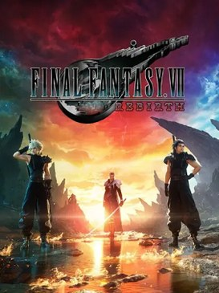

Complément
Introduction

Jaquette © SQUARE ENIX. Guide non officiel.
Cartes interactives
Dans les tableaux de butin, les objets suivis de Voir sur la carte ouvrent la carte interactive de Map Genie (site en anglais) pile sur leur emplacement, le plus souvent avec une capture d'écran. Le lien n'apparaît que lorsque l'emplacement est identifié sans ambiguïté. Il faut du réseau pour ouvrir la carte. Carte complète : le monde. Au début de l'Itinéraire des parties, La zone en images renvoie en plus à une soluce illustrée en français (Millenium ou ActuGaming) quand il en existe une.
Objectif
Te faire démarrer Final Fantasy VII Rebirth en sachant ce qui compte, ce qui peut se rater définitivement et dans quel ordre lire ce guide.
⏳ Lis cette partie en entier avant de lancer le jeu. Elle fait vingt minutes et elle t'économisera des dizaines d'heures — notamment parce que trois des contenus les plus longs du jeu commencent au chapitre 2 et se poursuivent jusqu'à la fin : le Queen's Blood, l'affinité et les Rapports de Chadley. Si tu les découvres au chapitre 10, tu as déjà pris beaucoup de retard.
Itinéraire
Le jeu en quelques lignes
Final Fantasy VII Rebirth est le deuxième volet du projet de remake, après Final Fantasy VII Remake (2020). Il reprend l'histoire à la sortie de Midgar et la mène jusqu'au temple des Anciens.
| Donnée | Valeur |
|---|---|
| Développeur / éditeur | Square Enix |
| Sortie ps5 | 29 février 2024 |
| Sortie PC (Steam, Epic Games Store) | 23 janvier 2025 |
| Sortie Switch 2, Xbox Series X|S, Xbox sur PC | 3 juin 2026 |
| Version couverte par ce guide | La mise à jour du 3 juin 2026, la même sur toutes les plateformes : 1.005 sur Steam et Epic Games Store, 1.090 sur PS5 |
| Chapitres | 14 |
| Régions semi-ouvertes | 6, plus l'Océan Central et les îles |
| Personnages jouables | 7 |
| Durée de l'histoire seule | ≈ 40 heures |
| Durée du 100 % | ≈ 120 à 150 heures, avec une seconde partie obligatoire (voir plus bas) |
Pas besoin d'avoir fini Remake pour comprendre Rebirth, mais le jeu suppose que tu connais les personnages et la fin de Midgar. Un résumé est consultable depuis le menu principal.
Ce qui change par rapport au premier volet
| Nouveauté | Ce que ça implique |
|---|---|
| Les régions semi-ouvertes | Le vrai volume du jeu est là : les Rapports de Chadley, les quêtes annexes, les protoreliques |
| Les actions et compétences synchronisées | Deux mécaniques distinctes, souvent confondues (partie 22) |
| Les codex | Des arbres de compétences par personnage, nourris par les PA |
| Le Queen's Blood | Un jeu de cartes complet, avec 145 cartes et un tournoi manquable |
| L'affinité | Un système relationnel qui décide de la scène du Gold Saucer et de deux objets de collection |
| La synthèse | Le craft, qui remplace l'achat de consommables |
| Les chocobos | Une monture par région, avec sa propre capacité de déplacement |
| Les mini-jeux | Une trentaine, dont beaucoup obligatoires pour le 100 % |
Les systèmes essentiels, en une page chacun
Le combat. C'est de l'action-RPG à jauge ATB : tu frappes en temps réel pour remplir tes barres d'ATB, puis tu ouvres le menu — le temps ralentit — pour dépenser ces barres en sorts, compétences et objets. Rien de ce qui compte ne se fait en tapant : les dégâts sérieux viennent du menu.
La boucle à comprendre dès le chapitre 1 :
- Analyse l'ennemi (matéria Analyse) pour voir sa faiblesse.
- Exploite la faiblesse pour remplir sa jauge de Choc.
- Mets-le en état de Choc : il ne bouge plus et prend beaucoup plus de dégâts.
- Vide tout pendant le Choc — Techniques de Transcendance, sorts, compétences.
L'état de Choc est le cœur du système de combat. Un boss qui te semble impossible est presque toujours un boss que tu n'as pas mis en Choc.
La progression. Trois monnaies d'expérience qu'il ne faut pas confondre :
| Ressource | Sigle | À quoi ça sert |
|---|---|---|
| Expérience | Exp | Le niveau du personnage (maximum 70) |
| Points de compétence | PC | Faire monter les matérias |
| Points d'aptitude | PA | Acheter les cases des codex |
Les PC ne sont pas les PV. Et la matéria « PC augmentés » n'est pas « PV augmentés » : ce sont deux matérias distinctes, de deux couleurs différentes.
Les matérias. Des sphères qu'on équipe dans les emplacements des armes et des bracelets. Cinq couleurs, cinq rôles :
| Couleur | Rôle | Exemples |
|---|---|---|
| Verte | Magie | Feu, Glace, Foudre, Soin |
| Jaune | Commandes | Analyse, Vol, Provocation |
| Violette | Compétences passives | PV augmentés, Barrières magiques |
| Bleue | Soutien | Se couple à une matéria voisine — PC augmentés, Magie généralisée |
| Rouge | Invocations | Titan, Phénix, Odin |
Une matéria bleue n'a d'effet que couplée à la matéria de l'emplacement relié. Les matérias gagnent des PC et montent en niveau ; une matéria niveau max peut être dupliquée chez Chadley.
L'économie. Tu ne manqueras pas de gils si tu explores et si tu pratiques la synthèse. Les seules dépenses obligatoires du 100 % sont 2 000 gils pour la protorelique des brigands, 1 300 gils pour les deux traversées de Cid, et 3 000 Points du Gold Saucer pour la matéria Gain de gils (partie 32).
La synthèse. Tu obtiens l'appareil au chapitre 2. La règle qui change tout : la première fabrication d'un objet rapporte de l'expérience de synthèse et réduit ses coûts futurs. Donc : ramasse tout, tue tout (les monstres donnent des matériaux), et fabrique chaque nouvel objet au moins une fois.
Les chocobos. Une monture par région, chacune avec sa capacité de déplacement : grimper les murs, planer, nager, rebondir sur les champignons. Attrape le chocobo de la région dès que tu y entres : sans lui, une partie du contenu est inatteignable.
L'ordre de lecture conseillé
| Quand | Lis |
|---|---|
| Avant de lancer le jeu | Cette introduction, puis la partie 22 (le combat) |
| Au chapitre 2 | Les parties 23 (matérias), 26 (affinité) et 27 (Queen's Blood) |
| Au chapitre 2, quand la Prairie s'ouvre | La partie 15, et le début de la partie 29 (objets à collectionner) |
| À chaque nouveau chapitre | La partie correspondante (01 à 14) |
| À chaque nouvelle région | La partie correspondante (15 à 21) |
| Au chapitre 6 | La partie 28 (mini-jeux) — le Carnaval des cartes est au chapitre 6 |
| Avant le chapitre 13 | La partie 13 en entier : le point de non-retour du jeu est là |
| Après le générique | Les parties 30, 31 et 32 |
| En permanence | Les annexes (99) : la liste des manquables |
Déroulé pas à pas
Les choses à faire dans les trois premières heures
- Chapitre 1 — Rien à collectionner, c'est un prologue. Concentre-toi sur la boucle Analyse → faiblesse → Choc contre le Gardien de matéria.
- Chapitre 2, à Kalm — Apprends le Queen's Blood tout de suite. Chaque PNJ battu donne des cartes, et le classement de joueur met des dizaines d'heures à monter.
- Chapitre 2 — Récupère l'appareil de synthèse et fabrique immédiatement tout ce que tu peux.
- Chapitre 2, la Prairie — Active les tours de Chadley, attrape le chocobo, commence les Rapports.
- Partout — Parle à tout le monde. Les quêtes annexes sont la principale source d'affinité, et l'affinité décide d'une scène unique au chapitre 12.
Les quatre pièges du début de partie
| Piège | Pourquoi c'est grave | La parade |
|---|---|---|
| Négliger le Queen's Blood | 145 cartes et un rang de joueur à monter ; le tournoi du chapitre 5 est manquable | Joue contre chaque PNJ dès Kalm |
| Négliger l'affinité | Elle décide de la scène du chapitre 12 et de 2 objets de collection | Fais les quêtes, choisis les bonnes répliques (partie 26) |
| Avancer dans l'histoire en laissant une région derrière | Certaines régions se referment, et le chapitre 13 est un point de non-retour | Boucle chaque région avant de passer au chapitre suivant |
| Vendre ou consommer un matériau rare | Le Sarment du grand morbol, la Corne de jabberwocky et les débris du roi des pirates sont obligatoires ailleurs | Ne consomme rien de rare (partie 32) |
Pourquoi le 100 % demande deux parties
Deux objets de collection sont incompatibles dans une seule partie : ils exigent Tifa et Yuffie comme partenaires de rendez-vous au chapitre 12, ce qui est impossible simultanément.
⏳ Donc le 100 % passe obligatoirement par la sélection de chapitres, débloquée après le générique. Ce n'est pas une punition : la sélection de chapitres conserve ton équipement et tes niveaux, et le mode Difficile s'y fait aussi (partie 31).
Les aides facultatives de la version 1.005
Depuis la mise à jour du 3 juin 2026, deux systèmes sont disponibles :
| Système | Ce qu'il fait |
|---|---|
| Aides de jeu | PV et PM illimités, 9 999 de dégâts en combat et en mini-jeu, quantités d'objets au maximum — activables option par option, à tout moment |
| Nouvelle partie avantagée | Commencer au niveau 65 (maximum 70) avec des matérias déjà améliorées |
Noms français à vérifier en jeu : ces deux libellés viennent des sources françaises qui relaient l'annonce ; je n'ai pas pu confirmer qu'ils correspondent mot pour mot au menu.
Mon conseil : n'y touche pas pour l'histoire, mais les Aides de jeu sont une bénédiction pour les mini-jeux les plus pénibles (partie 28).
Quêtes et lieux
| Lieu | Quand | Pourquoi il compte |
|---|---|---|
| Kalm | Chapitre 2 | Premier hub : Queen's Blood, synthèse, boutiques |
| Les tours de Chadley | Chaque région | Elles révèlent les Rapports sur la carte |
| Junon | Chapitres 4 et 12 | La Parade, les boutiques, Fort Condor |
| Costa del Amor | Chapitre 6 | Le Carnaval des cartes, manquable |
| Le Gold Saucer | Chapitres 8 et 12 | La moitié des mini-jeux du jeu, et la scène de rendez-vous |
| Cosmo Canyon | Chapitre 10 | Le hub du dernier tiers |
| Le simulateur de combat | Partout, via Chadley | Les combats d'Esper, les défis, le farm |
Butin exhaustif
Les objets que tu peux avoir dès le départ, avant même de jouer.
| Nom exact | Type | Où / comment l'obtenir | Utilité |
|---|---|---|---|
| Léviathan | Matéria d'invocation rouge | Menu de Bonus : une sauvegarde de Final Fantasy VII Remake sur la console | Invocation disponible dès le début de partie |
| Ramuh | Matéria d'invocation rouge | Menu de Bonus : une sauvegarde du DLC episode INTERmission | La plus utile des quatre bonus : Foudre, recommandée sur trois boss d'histoire |
| Trio de Mogs | Matéria d'invocation rouge | Menu de Bonus : précommande numérique ou édition Collector | Confort ; pas nécessaire au 100 % |
| Pot magique | Matéria d'invocation rouge | Menu de Bonus : précommande / édition | Confort ; pas nécessaire au 100 % |
| Appareil de synthèse | Objet clé | Automatique, chapitre 2 | Débloque le craft |
| Matéria Analyse | Matéria jaune | Automatique, chapitre 1 | La matéria la plus importante du jeu : elle révèle les faiblesses |
⏳ Ces quatre invocations bonus ne sont pas nécessaires au 100 % : elles ne comptent pas pour le trophée « Bretteur légendaire », donc ne pas avoir la bonne édition ne te bloque rien. Elles se réclament dans le menu de Bonus, et le détail des quatorze invocations est dans la partie 25.
Conseils et pièges
Les dix conseils de départ
- Équipe Analyse et utilise-la sur chaque nouvel ennemi. C'est gratuit, ça remplit la base de données de Chadley, et ça te dit quoi faire.
- Apprends à parer, pas seulement à esquiver. La parade au bon moment remplit de l'ATB ; l'esquive ne donne rien.
- Change de personnage constamment. Le personnage que tu contrôles remplit son ATB bien plus vite que ceux gérés par l'IA.
- Garde une Technique de Transcendance en réserve pour le Choc. C'est la différence entre « ce boss est dur » et « ce boss est tombé en douze secondes ».
- Monte tes matérias de soin en priorité. Soin niveau 2 puis 3 change complètement la survie.
- Fais les Rapports de Chadley au fur et à mesure. Ils donnent des matérias, des invocations et des objets qu'on ne trouve nulle part ailleurs.
- Joue au Queen's Blood à chaque occasion. Chaque adversaire donne une carte, et le rang monte lentement.
- Fais les quêtes annexes dans la région où elles apparaissent. Elles donnent l'affinité, des accessoires et des recettes.
- Synthétise plutôt que d'acheter. Et crafte chaque objet nouveau une fois.
- ⚠️ Lis la partie 13 avant d'y entrer. C'est le point de non-retour du jeu.
Les erreurs classiques de débutant
| Erreur | Conséquence | Ce qu'il faut faire |
|---|---|---|
| Taper sans ouvrir le menu | Dégâts dérisoires | L'ATB se dépense dans le menu |
| Ignorer l'état de Choc | Les boss durent dix minutes | Faiblesse → Choc → tout vider |
| Laisser l'IA gérer les alliés | Leurs barres d'ATB dorment | Change de personnage, ou utilise les commandes depuis le menu |
| Confondre action et compétence synchronisées | Tu passes à côté de dégâts gratuits | L'action synchronisée est gratuite, sur R1 + une touche (partie 22) |
| Oublier de vérifier les emplacements de matérias | Des matérias bleues inutiles | Une matéria bleue doit être dans un emplacement relié à sa cible |
| Se précipiter dans les chapitres | Des manquables définitifs | Boucle la région, puis avance |
| Farmer avant le générique | Six fois moins efficace | Attends le ×3 post-générique (partie 32) |
Ce que ce guide fait et ne fait pas
- Il suit l'ordre de progression du joueur : les parties 01 à 14 se lisent en jouant, pas avant.
- Les spoilers sont légers : les titres de chapitres sont les titres officiels, et les révélations majeures sont évoquées sans être détaillées.
- Il marque ce qu'il n'a pas pu vérifier. Toutes les mentions « ⚠️ à vérifier en jeu » sont regroupées dans les annexes (partie 99).
- Il donne les noms français officiels, avec le nom anglais entre parenthèses quand il aide.
Alertes
- ⚠️ Le chapitre 13 contient le point de non-retour du jeu. Tout ce qui n'est pas fait avant est reporté après le générique.
- ⚠️ Le tournoi de Queen's Blood du chapitre 5 est le pire manquable du jeu : il ne revient pas.
- ⚠️ Le Carnaval des cartes du chapitre 6 est manquable.
- ⚠️ Deux objets de collection sont impossibles dans une seule partie : la sélection de chapitres est obligatoire pour le 100 %.
- ⚠️ Certains chapitres contiennent des points de non-retour internes : le dauphin du chapitre 4, le drainage du chapitre 9.
- ⚠️ Ne consomme ni le Sarment du grand morbol, ni la Corne de jabberwocky, ni les débris du roi des pirates.
- ⚠️ Ne farme pas avant le générique : l'Exp et les PC y sont multipliés par trois.
Check-list
Avant de lancer le jeu
- Cette introduction lue
- La partie 22 (le combat) lue
- Menu de Bonus consulté : Léviathan et Ramuh si tu as les sauvegardes, Trio de Mogs et Pot magique si tu as l'édition
Les trois premières heures
- La boucle Analyse → faiblesse → Choc comprise
- Parade et changement de personnage intégrés
- Appareil de synthèse récupéré (chapitre 2)
- Premier craft effectué
- Premier duel de Queen's Blood gagné (Kalm)
- Premières tours de Chadley activées (Prairie)
- Chocobo de la Prairie attrapé
Les réflexes à garder toute la partie
- Analyse sur chaque nouvel ennemi
- Queen's Blood contre chaque PNJ rencontré
- Quêtes annexes faites dans leur région
- Rapports de Chadley terminés région par région
- Chaque nouvel objet synthétisé une fois
- Matériaux rares jamais consommés
- Région bouclée avant de passer au chapitre suivant
- Partie 13 lue avant d'y entrer
Complément
Chapitre 1 — La chute d'un héros
L'essentiel
- Boss : le Gardien de matéria.
- Chapitre linéaire : pas de quête annexe, pas de région ouverte, pas de Queen's Blood.
- À ne pas rater : la matéria Aire d'effet, la seule hors du chemin.
- Séphiroth : invité scénarisé, son équipement ne se modifie pas.
Objectif
Le jeu ne commence pas là où Remake s'était arrêté : il commence cinq ans plus tôt, à Nibelheim, dans le souvenir que Cloud raconte à ses compagnons. Tu joues le Cloud d'avant, aux côtés de Séphiroth, et tu découvres le réacteur mako qui a tout déclenché.
C'est donc à la fois un prologue narratif et le tutoriel du jeu. Tout ce que tu apprends ici resservira pendant cinquante heures :
- La garde et la contre-attaque.
- Les actions synchronisées, les attaques en tandem gratuites.
- La matéria Analyse, qui remplit ton bestiaire et révèle les faiblesses.
- Le premier boss : le Gardien de matéria.
⏳ Si tu as joué la démo, tu as déjà fait ce chapitre : le jeu te propose de passer directement au chapitre 2. Tu ne perds rien — le butin du chapitre 1 est modeste et entièrement composé de consommables et de matérias de base que tu retrouveras vite.
Ce chapitre est entièrement sur des rails. Il n'y a ni région ouverte, ni quête annexe, ni Rapport de Chadley. Prends-le comme une longue introduction jouable.
Itinéraire
📍 La zone en images : Chapitre 1 — soluce illustrée sur ActuGaming, en français.
- L'introduction, que ce guide ne détaille pas pour te laisser la surprise : elle se passe très bien de soluce.
- Nibelheim : le village, la maison de Cloud, le château d'eau, la maison de Tifa, l'hôtel.
- Les monts de Nibelheim, guidé par Tifa.
- Le site de prospection, où l'on nettoie la mako.
- Le ravin de Gnipahellir, après que Séphiroth rejoint l'équipe.
- La falaise et son passage étroit.
- La seconde salle de mako.
- Le site de prospection – 1er étage : l'arène du Gardien de matéria.
- Le réacteur mako, puis retour à Nibelheim et au manoir Shinra.
Déroulé pas à pas
Nibelheim
- Après avoir brièvement pris le contrôle du grand chevelu pour corriger un monstre, tu te retrouves dans les bottes de Cloud, aux portes de Nibelheim.
- Dès l'entrée du village, va à droite puis à gauche : deux coffres, une méga-potion dans chacun.
- Passe par la maison de Cloud pour une courte scène.
- Monte sur le château d'eau, au centre du village : ça t'amène à entrer dans la maison de Tifa.
- En haut des escaliers, ouvre la porte juste devant toi : un coffre avec un éther.
- Va dans la chambre de Tifa et ouvre son armoire — ne sois pas timide.
- Assieds-toi au piano : tu découvres le mini-jeu de piano, et tu récoltes quelques commentaires de tes compagnons.
- Direction l'hôtel du village. Parle à Zangan, puis monte à l'étage retrouver Séphiroth avant le départ.
Le piano n'est pas décoratif. C'est le premier des instruments du jeu, et il y a huit partitions à trouver dans l'aventure. Voir la partie sur les objets à collectionner.
Les monts de Nibelheim
- Les cinématiques passées, Tifa te guide dans les monts. Tes premiers monstres servent de leçon de conduite.
- Apprends la garde tout de suite. Deux façons de bien s'en servir :
- appuyer au bon moment sur la garde, pour une parade nette ;
- ou passer en posture du Soldat puis rester en garde, ce qui déclenche une contre-attaque si tu es touché. nom de la posture à vérifier en jeu.
- Suis le chemin tout droit : un coffre avec deux super-mixpotions, puis la matéria verte Vent.
- Tifa te demande de rebrousser chemin pour la suivre.
- En entrant dans le premier bâtiment, prends la matéria bleue Élévation de matéria, sur la droite.
- Avance et combats le Hurleur. Il est très sensible à la garde quand il fait tournoyer son boulet : c'est l'occasion de pratiquer.
- Juste à côté de l'escalier qui suit, un coffre avec un éther.
Nettoyer la mako
- Tu arrives dans une zone saturée de mako.
- Prends le dispositif caché derrière le grillage et pousse-le vers les effluves pour nettoyer la pièce.
Ce puzzle revient. Le principe — déplacer l'aspirateur, gérer la longueur du câble, ouvrir un portail pour le faire passer — est celui de toutes les salles de mako du chapitre.
Le ravin de Gnipahellir
- Après la scène du pont, Séphiroth rejoint ton équipe. Profite-en : il est très puissant.
- Grimpe jusqu'au premier banc de repos. À côté, la matéria violette PV augmentés.
- Combats les monstres, puis entre dans le ravin de Gnipahellir.
- À droite des monstres que tu croises, la matéria verte Renforcement offensif.
- Suis le chemin principal vers le cristal mako : cinématique.
La falaise
- En suivant Tifa, tu longes la falaise par un passage étroit.
- Juste après ce passage, au lieu de suivre le chemin, laisse-toi tomber sur la gauche : la matéria bleue Aire d'effet est en contrebas. Remonte ensuite.
- Combats le Zu : Feu ou Foudre en viennent vite à bout.
- Un coffre droit devant avec une méga-potion, puis, plus haut, la matéria violette Garde précise — impossible à manquer.
- Plus loin encore, la matéria bleue Magie auto.
- Brise les caisses en bois sur la route : elles font le plein d'objets.
La seconde salle de mako
- Prends le dispositif pour nettoyer la salle. Cette fois, le câble est trop court pour tout faire.
- Va derrière le portail de la pièce pour l'ouvrir, afin de faire passer l'aspirateur par la porte.
- En sortant, un coffre sur la droite avec un élixir, puis un autre à droite du banc de repos avec un élixir également.
Le Gardien de matéria
Le premier boss, tout au bout du Site de prospection – 1er étage. Il surgit d'un trou dans le mur, et tu le combats avec Cloud et Séphiroth.
La préparation, en trente secondes :
- Équipe Cloud de la matéria Analyse — tu ne peux pas modifier les matérias de Séphiroth — et lance le sort pour ajouter le boss à ton bestiaire. Tu apprends ainsi qu'il a 41 875 PV et qu'il est vulnérable au Feu.
- Ajoute Magie auto à côté de la matéria Feu sur Cloud : il lancera ses sorts de feu tout seul. Séphiroth, lui, dispose déjà d'Extra-Feu.
- Joue Séphiroth en priorité. Ses compétences et ses matérias sont les mieux adaptées au combat, et il peut se téléporter sur la cible.
Phase 1 — le boss est au sol.
- Attaque-le à l'épée, en te concentrant sur les pattes arrière : ce sont elles qui attrapent Cloud pour l'immobiliser.
- Si Cloud est attrapé, lance un sort de Feu sur la patte qui le tient.
- Ses attaques se bloquent ou s'esquivent facilement, et Séphiroth peut contre-attaquer. Ne t'inquiète pas des dégâts : ton inventaire est plein de potions.
Phase 2 — il s'accroche au plafond.
- Vise les pattes pour le faire tomber : soit un sort de Feu à distance, soit une téléportation de Séphiroth suivie d'une volée de coups.
- Il fait tomber des rochers : une action synchronisée les bloque sans peine.
- Quand il tombe, il est en état de choc : envoie tout ce que tu as, Porte des enfers par exemple.
Phase 3 — il se perche hors de portée.
- Aucune attaque de mêlée ne l'atteint. Il faut la compétence synchronisée Spirale croisée, qui exige que chaque personnage ait utilisé au moins trois compétences au préalable.
- Spirale croisée donne en prime des bonus temporaires : PM illimités pour Séphiroth et jauge de Transcendance boostée pour Cloud.
- De retour au sol, il est étourdi : fais monter sa jauge de pression à la mêlée, puis mets-le en état de choc pour l'empêcher de remonter sur les tuyaux endommagés. Le boost de Cloud est le moment idéal pour sa Technique de Transcendance.
- S'il remonte quand même et que tu n'as pas de quoi relancer Spirale croisée : mets-toi à l'abri sur les côtés de l'arène pendant son attaque, puis achève-le quand il retombe.
La fin du chapitre
- Tu entres dans le réacteur mako, et dans une salle qui rappellera beaucoup de souvenirs aux joueurs de 1997.
- Séphiroth te demande de tourner une valve.
- Retour à Nibelheim : les habitants te conduisent au manoir Shinra.
- Dans le manoir, va tout à gauche pour trouver l'ascenseur qui mène à Séphiroth.
- La suite est sur des rails jusqu'à la fin du chapitre. Laisse-toi porter.
Quêtes et lieux
Les lieux du chapitre
| Lieu | Ce qu'on y trouve |
|---|---|
| Nibelheim | deux coffres à l'entrée (méga-potions), la maison de Cloud, le château d'eau, la maison de Tifa, l'hôtel |
| La maison de Tifa | un coffre derrière la porte en haut des escaliers (éther), l'armoire de sa chambre, le piano |
| L'hôtel | Zangan au rez-de-chaussée, Séphiroth à l'étage |
| Les monts de Nibelheim | le coffre aux super-mixpotions, la matéria Vent |
| Le premier bâtiment | la matéria Élévation de matéria, le Hurleur, un coffre (éther) |
| La première salle de mako | le puzzle de l'aspirateur |
| Le premier banc de repos | la matéria PV augmentés |
| Le ravin de Gnipahellir | la matéria Renforcement offensif, le cristal mako |
| La falaise | la matéria Aire d'effet (en se laissant tomber à gauche), le Zu, un coffre (méga-potion), Garde précise, Magie auto |
| La seconde salle de mako | le puzzle du portail, deux coffres (élixirs) |
| Site de prospection – 1er étage | l'arène du Gardien de matéria |
| Le réacteur mako | la valve |
| Le manoir Shinra | l'ascenseur, tout à gauche |
Les personnages
| Personnage | Où | Ce qu'il apporte |
|---|---|---|
| Tifa | des monts au ravin | elle te guide ; c'est elle qui commente le piano |
| Séphiroth | rejoint l'équipe après la scène du pont | très puissant : téléportation, Extra-Feu, Porte des enfers |
| Zangan | hôtel de Nibelheim | le maître de Tifa, une courte conversation |
| Le Gardien de matéria | Site de prospection – 1er étage | le premier boss |
Butin exhaustif
| Nom exact | Type | Où / comment l'obtenir | Utilité |
|---|---|---|---|
| Méga-potion | Consommable | Coffre à droite de l'entrée de Nibelheim | Soigne une grosse quantité de PV ; garde-les pour le boss |
| Méga-potion | Consommable | Coffre à gauche de l'entrée de Nibelheim | Idem |
| Éther | Consommable | Coffre derrière la porte en haut des escaliers, maison de Tifa | Rend des PM — précieux pour enchaîner les sorts de Feu |
| Super-mixpotion ×2 | Consommable | Coffre sur le chemin tout droit dans les monts de Nibelheim | Soigne tout le groupe |
| Vent | Matéria verte | Sur le chemin des monts, avant que Tifa te fasse rebrousser chemin | Sort de Vent ; utile contre les ennemis volants |
| Élévation de matéria | Matéria bleue | Sur la droite en entrant dans le premier bâtiment | Fait monter plus vite la matéria associée |
| Éther | Consommable | Coffre à côté de l'escalier, juste après le Hurleur | Rend des PM |
| PV augmentés | Matéria violette | À côté du premier banc de repos | Augmente les PV maximum du porteur |
| Renforcement offensif | Matéria verte | À droite des monstres du ravin de Gnipahellir | Sorts de soutien offensifs |
| Aire d'effet | Matéria bleue | Laisse-toi tomber sur la gauche juste après le passage étroit de la falaise | Étend un sort à plusieurs cibles : l'une des matérias les plus utiles du jeu |
| Méga-potion | Consommable | Coffre droit devant, après le Zu | Soigne une grosse quantité de PV |
| Garde précise | Matéria violette | Plus haut sur la falaise, impossible à manquer | Récompense la garde au bon moment |
| Magie auto | Matéria bleue | Plus loin sur la falaise | Fait lancer automatiquement la matéria voisine : à coupler avec Feu pour le boss |
| Élixir | Consommable | Coffre à droite en sortant de la seconde salle de mako | Restaure tous les PV et PM |
| Élixir | Consommable | Coffre à droite du banc de repos | Idem |
| Analyse | Matéria jaune | Déjà en ta possession ; à équiper sur Cloud avant le boss | Révèle PV, faiblesses et résistances, et remplit le bestiaire |
| Spirale croisée | Compétence synchronisée | Disponible pendant le combat contre le Gardien de matéria, après trois compétences par personnage | Indispensable en phase 3 ; donne PM illimités à Séphiroth et boost de Transcendance à Cloud |
⏳ Le contenu des caisses en bois est aléatoire : ce sont des consommables et des ressources de craft. Casse-les au passage, mais ne perds pas de temps à les chercher.
Conseils et pièges
- Équipe Analyse dès que tu peux, et garde-la équipée toute la partie. Elle donne les PV exacts, les faiblesses et les résistances de chaque ennemi, et remplit le bestiaire — qui compte pour la complétion. C'est la matéria la plus rentable du jeu.
- Analyse + Magie auto + Feu sur Cloud, c'est la préparation du premier boss en trois gestes. Cloud lancera ses sorts de feu sans que tu t'en occupes, pendant que tu joues Séphiroth.
- Joue Séphiroth pendant tout le boss. Il se téléporte sur la cible, il a Extra-Feu et Porte des enfers, et tu ne peux pas toucher à ses matérias — autant profiter de ce qu'il a.
- La garde n'est pas passive. Deux techniques à comprendre ici et à garder pour tout le jeu : la garde au bon moment, qui annule presque tous les dégâts, et la contre-attaque en posture du Soldat.
- Le Hurleur est un mannequin d'entraînement. Son attaque tournante est faite pour être bloquée. Rate-la volontairement une fois pour voir la différence, puis bloque-la.
- N'oublie pas la matéria Aire d'effet. Elle est hors du chemin : il faut se laisser tomber sur la gauche après le passage étroit. C'est la seule chose vraiment facile à manquer du chapitre, et c'est une des meilleures matérias du jeu.
- Assieds-toi au piano. Ça ne rapporte rien tout de suite, mais c'est ta première rencontre avec un mini-jeu qui donne des récompenses tout au long de l'aventure.
- Si tu as fait la démo, passe au chapitre 2. Le jeu te le propose, et tu ne perds que des consommables.
Alertes
- ⏳ Le chapitre est linéaire et sans quête annexe. Ni Rapport de Chadley, ni région ouverte, ni Queen's Blood : tout cela commence au chapitre 2.
- ⏳ Les matérias du chapitre ne sont pas manquables au sens strict : elles se rachètent ou se retrouvent plus tard. Mais Aire d'effet est la seule qui demande de quitter le chemin, et l'avoir tôt change le confort des dix heures suivantes.
- ⚠️ Tu ne peux pas modifier l'équipement de Séphiroth. Inutile d'essayer de l'optimiser : c'est un invité scénarisé.
- ⏳ La fin du chapitre est sur des rails. À partir du manoir Shinra, il n'y a plus rien à ramasser.
- ⚠️ Le nom de la « posture du Soldat » est à vérifier en jeu. La source française l'appelle ainsi ; je n'ai pas pu confirmer le libellé exact du menu.
Check-list
Nibelheim
- Les deux méga-potions des coffres de l'entrée
- La maison de Cloud visitée
- Le château d'eau escaladé
- L'éther du coffre de la maison de Tifa
- L'armoire de Tifa ouverte
- Le piano essayé
- Zangan rencontré à l'hôtel
Les monts et le ravin
- Les deux super-mixpotions
- Matéria Vent
- Matéria Élévation de matéria
- Hurleur vaincu à la garde
- L'éther près de l'escalier
- Première salle de mako nettoyée
- Matéria PV augmentés
- Matéria Renforcement offensif
La falaise
- Matéria Aire d'effet (en se laissant tomber à gauche)
- Zu vaincu
- La méga-potion du coffre
- Matéria Garde précise
- Matéria Magie auto
- Seconde salle de mako nettoyée
- Les deux élixirs
Le boss
- Analyse équipée sur Cloud et lancée sur le boss
- Magie auto + Feu installées sur Cloud
- Phase 1 : pattes arrière visées
- Phase 2 : boss décroché du plafond, rochers bloqués à l'action synchronisée
- Phase 3 : Spirale croisée utilisée
- Gardien de matéria vaincu
La fin
- Valve du réacteur tournée
- Manoir Shinra : ascenseur pris tout à gauche
- Chapitre 1 terminé
Complément
Chapitre 2 — Vers de nouveaux horizons
L'essentiel
- Nouveautés : Kalm, le Queen's Blood, l'appareil de synthèse, le monde ouvert.
- À ne pas rater : les trois conversations d'affinité de Kalm (Tifa sur la place centrale, Red XIII à l'entrée, Barret à la taverne Rusty Arrow).
- Avant le Midgardsormr : le Gros calibre de Barret, dans le marais.
Objectif
Sortir de Midgar pour de bon. Ce chapitre est celui où Rebirth s'ouvre vraiment : tu arrives à Kalm, tu apprends le Queen's Blood, tu récupères l'appareil de synthèse, tu attrapes ton premier chocobo, tu allumes la première tour de transmission de Chadley — et tu repars avec la matéria Titan en poche.
C'est aussi le chapitre le plus dense en choses définitivement manquables du début du jeu. Prends ton temps dans Kalm : une fois que tu en sors avec Broden, tu n'y reviens pas tout de suite.
Durée : compte trois à quatre heures si tu fais tout. Niveau recommandé à la fin : 19.
Itinéraire
📍 La zone en images : Chapitre 2 — soluce illustrée sur ActuGaming, en français.
- Kalm — la ville. Auberge, taverne, place centrale, clocher, librairie Maghnata, maison de Broden.
- Sortie de Kalm avec Broden, en évitant les patrouilles de la Shinra.
- Les plaines de la Prairie — direction plein ouest : moulin à grains abandonné, viaduc embroussaillé, ferme d'Oliver.
- L'embarcadère et le camion de Bill.
- Le ranch chocobo de Bill, puis la capture de Piko dans les hautes herbes au sud.
- La première tour de transmission avec Chadley.
- Le marais, puis le combat contre le Midgardsormr.
- L'entrée des grottes de mithril, qui ferme le chapitre.
Repère visuel utile : dans les plaines, la tour de transmission est visible de très loin, c'est le grand pylône blanc. Sers-t'en comme boussole, elle est presque sur ton chemin.
Déroulé pas à pas
Kalm
Tu arrives chez Broden, qui héberge le groupe. Red XIII rejoint officiellement l'équipe ici — et il est jouable, ce qui change beaucoup de choses en combat (voir la partie 22).
Avant de courir dehors, fouille la maison : le coffre de la chambre de gauche contient un éther.
Broden te donne deux objectifs avant le départ :
- Rénover l'équipement du groupe chez le marchand de la ville.
- Passer à la librairie Maghnata, qui sert d'introduction au codex.
Le codex, c'est l'arbre de progression de chaque personnage : tu y dépenses des PA pour débloquer des compétences, des emplacements et des bonus permanents. Il se consulte dans les librairies et les kiosques Maghnata que tu croiseras un peu partout. Plusieurs sites francophones l'appellent « Folio » : c'est son nom anglais. Le jeu français dit codex.
Le Queen's Blood
Toujours à Kalm, un joueur de la taverne t'initie au Queen's Blood, le jeu de cartes maison de Rebirth. Le tutoriel te donne un deck de départ.
Fais-le. Vraiment. Le Queen's Blood n'est pas un gadget : il donne des objets, des matérias et il est obligatoire pour le 100 %. Si tu n'y touches qu'au chapitre 8, tu te retrouveras avec un deck ridicule face à des adversaires sérieux. Les règles complètes et la liste des adversaires sont dans la partie 27.
L'affinité — trois conversations à ne pas rater
Kalm est le premier vrai terrain d'affinité du jeu. Trois coéquipiers t'attendent à trois endroits précis, et chacun donne une conversation qui monte ton affinité avec lui :
- Tifa, sur la place centrale ;
- Red XIII, devant l'entrée de la ville ;
- Barret, dans la taverne Rusty Arrow.
⏳ Manquable : ces trois dialogues disparaissent quand tu quittes Kalm avec Broden. L'affinité conditionne la scène du Gold Saucer au chapitre 8 — c'est tout le système de la partie 26.
Il y a aussi un échange avec Aerith où la réponse « Ouais. D'accord » rapporte de l'affinité. Ce sont des gains minuscules pris un à un, mais ils s'additionnent sur quatorze chapitres.
Le reste de Kalm
- Coffre au sud de la ville : un bandeau.
- Cave de la taverne : 2 antidotes.
- Le clocher : monte en haut pour une vue panoramique sur la ville. C'est gratuit et c'est joli.
La sortie avec Broden
Broden te fait sortir par les toits pour éviter la Shinra. Le passage est dirigé, avec un seul moment où le jeu te laisse te tromper : quand une patrouille bloque le chemin, escalade le mur à gauche. N'essaie pas de passer en force.
À la sortie, tu récupères l'appareil de synthèse. C'est l'objet clé qui débloque la synthèse — le craft du jeu : tu fabriques potions, éthers, accessoires et matériaux à partir de ce que tu ramasses dans les plaines. Prends le réflexe de synthétiser tes consommables plutôt que de les acheter, c'est la principale économie d'argent du jeu (détails dans la partie 32).
Les plaines de la Prairie
La région s'ouvre. Le chapitre te demande d'aller à l'ouest, mais rien ne t'empêche de fouiller — et tu devrais, parce que c'est ici que tu croises tes deux premières caches aux trésors :
- le Moulin à grains abandonné ;
- le Viaduc embroussaillé.
Une cache aux trésors est un coffre optionnel signalé sur la carte par une icône, gardé par un petit défi ou une énigme. Elles comptent pour le 100 % de la région ; la liste complète de la Prairie est dans la partie 15.
Sur la route, tu passes à la ferme d'Oliver et tu rencontres Bill et son camion.
À l'embarcadère, un coffre violet contient le sabre somptueux, une nouvelle arme pour Cloud. Les coffres violets sont ceux qui contiennent des armes : quand tu en vois un, c'est toujours un détour qui vaut le coup, parce qu'une arme non ramassée, ce sont aussi des compétences et des emplacements de matéria perdus.
Le ranch chocobo
Chez Bill, tu rencontres son fils Billy et le chocobo Piko. Trois choses à récupérer sur place :
- un coffre violet avec le bâton de l'intemporalité, pour Aerith ;
- un coffre en haut d'une échelle avec une médaille mog ;
- une plume de chocobo derrière l'écurie.
Chloé te donne un légume de Gysahl et t'explique l'échange contre des plumes d'or.
Attraper Piko
Piko s'est échappé. Ses traces en forme de V sont à environ 200 mètres au sud du ranch.
La capture se fait en approche furtive :
- Avance dans les hautes herbes, accroupi. Le chocobo ne te voit pas tant que tu y restes.
- Lance une pierre pour détourner son attention.
- Approche par derrière et appuie sur Triangle.
Si tu sors des herbes trop tôt ou que tu arrives de face, il détale et tu recommences. Aucune punition, juste du temps perdu.
Piko débloqué, tu as une monture : elle traverse les plaines beaucoup plus vite, glisse sur les rails et déclenche des passages inaccessibles à pied. Chaque région a son propre chocobo à attraper, avec sa propre capacité.
Chadley et la première tour de transmission
Chadley te contacte et te demande d'activer la première tour de transmission de la Prairie. C'est le moment qui ouvre en grand le contenu annexe du jeu :
- les terrains de chasse ;
- les rapports d'enquête ;
- le simulateur de combat ;
- et, en récompense, la matéria Titan, ta première matéria d'invocation obtenue en jeu.
Une tour révèle une portion de carte et les activités qu'elle contient. Tout ce que tu déclenches là est traité en détail dans la partie 15 — inutile de tout faire maintenant, la Prairie reste accessible pendant presque tout le jeu.
Billy propose aussi une course de chocobos. Le mini-jeu et ses récompenses sont dans la partie 28.
Le marais et le Midgardsormr
Dans le marais, un coffre violet contient Gros calibre, une arme pour Barret. Ramasse-la avant le combat : tu vas en avoir besoin.
Puis le Midgardsormr t'attrape.
Après le combat, Cloud est emporté par l'eau et Séphiroth le sauve de la noyade — une scène qui pose tout l'enjeu du chapitre suivant. Le groupe entre ensuite dans les grottes de mithril, et le chapitre 2 se termine là.
Quêtes et lieux
Kalm
| Lieu | À faire |
|---|---|
| Maison de Broden | Coffre de la chambre de gauche : éther |
| Marchand | Rénover l'équipement du groupe (objectif de Broden) |
| Librairie Maghnata | Introduction au codex, dépense des premiers PA |
| Taverne Rusty Arrow | Tutoriel de Queen's Blood ; affinité avec Barret ; 2 antidotes dans la cave |
| Place centrale | Affinité avec Tifa |
| Entrée de la ville | Affinité avec Red XIII |
| Clocher | Vue panoramique |
| Sud de la ville | Coffre : bandeau |
Les plaines
| Lieu | À faire |
|---|---|
| Moulin à grains abandonné | Cache aux trésors |
| Viaduc embroussaillé | Cache aux trésors |
| Ferme d'Oliver | Rencontre de Bill et de son camion |
| Embarcadère | Coffre violet : sabre somptueux (Cloud) |
| Ranch chocobo | Coffre violet bâton de l'intemporalité (Aerith), coffre médaille mog en haut d'une échelle, plume de chocobo derrière l'écurie, légume de Gysahl de Chloé, course de chocobos de Billy |
| Hautes herbes au sud du ranch | Capture de Piko |
| Première tour de transmission | Matéria Titan ; débloque chasses, enquêtes et simulateur |
| Marais | Coffre violet : Gros calibre (Barret) |
Butin exhaustif
| Nom exact | Type | Où / comment l'obtenir | Utilité |
|---|---|---|---|
| Éther | Consommable | Coffre de la chambre de gauche, maison de Broden, Kalm | Restaure des PM |
| Antidote ×2 | Consommable | Cave de la taverne Rusty Arrow, Kalm | Soigne le Poison |
| Bandeau | Accessoire | Coffre au sud de Kalm | effet exact à vérifier en jeu |
| Poignée de laurier ×3 | Matériau | Coffre sur la route de sortie de Kalm | Matériau de synthèse |
| Appareil de synthèse | Objet clé | Remis automatiquement à la sortie de Kalm | Débloque la synthèse d'objets |
| Sabre somptueux | Arme Cloud | Coffre violet à l'embarcadère | Nouvelle arme, nouvelle compétence et nouveaux emplacements |
| Bâton de l'intemporalité | Arme Aerith | Coffre violet au ranch chocobo | Idem pour Aerith |
| Gros calibre | Arme Barret | Coffre violet dans le marais, avant le Midgardsormr | Idem pour Barret ; à prendre avant le boss |
| Médaille mog | Objet d'échange | Coffre en haut d'une échelle, ranch chocobo | Monnaie des maisons de mogs |
| Plume de chocobo | Matériau | Derrière l'écurie du ranch | Matériau de synthèse |
| Légume de Gysahl | Objet | Donné par Chloé au ranch | Attire et calme les chocobos |
| Plume d'or | Objet d'échange | Échange expliqué par Chloé | S'échange contre des objets au ranch |
| Matéria Titan | Matéria d'invocation rouge | Première tour de transmission de la Prairie, pour Chadley | Invoque Titan en combat |
| Piko | Chocobo | Capture furtive dans les hautes herbes, ~200 m au sud du ranch | Monture de la région de la Prairie |
| Deck de départ de Queen's Blood | Cartes | Tutoriel à la taverne de Kalm | Point de départ obligatoire du jeu de cartes |
Les caches aux trésors du Moulin à grains abandonné et du Viaduc embroussaillé contiennent chacune un objet ; leur contenu exact est détaillé dans la partie 15, avec le reste de la Prairie, pour éviter de le lister deux fois.
Conseils et pièges
Le Midgardsormr
Niveau recommandé : 19. C'est un gros serpent, et c'est ton premier vrai boss de terrain.
Ce qui marche :
- Il est sensible à la Glace. Si tu as une matéria Glace, équipe-la maintenant. Shiva est l'invocation idéale sur ce combat.
- Il est très résistant au Feu. N'insiste pas.
- La Carapace crânienne est la cible prioritaire : c'est la partie à détruire, pas le corps.
- Les compétences synchronisées — les attaques en tandem qui consomment des barres — lui infligent Fragilité instantanément. C'est le raccourci le plus rapide vers l'état de Choc.
Ce dont il faut se méfier :
- Souffle Ardent, sa grosse attaque de zone. Garde, ou dégage.
- Liquide corrosif et Mare de poison baissent ta défense physique. Si tu les encaisses plusieurs fois, tes personnages au corps-à-corps commencent à fondre. Nettoie et soigne.
- Il avale un allié, qui reste hors jeu plusieurs minutes. Ce n'est pas la fin du monde, mais si c'est ton soigneur, ça pique. Continue avec les deux autres.
- En milieu de combat, il s'enroule autour d'un arbre et devient inatteignable au sol. Passe aux attaques aériennes, aux attaques à distance et à la magie — c'est là que Barret et son Gros calibre justifient le détour du coffre violet.
Le combat se déroule en trois phases. Il a moins de PV que le boss secret de la région, Quetzalcoatl — donc si celui-ci t'a mis une raclée en exploration, ne t'inquiète pas, ce n'est pas le même niveau d'exigence.
Le reste
- Fais Kalm à fond avant de partir. Les trois conversations d'affinité et les coffres de la ville ne reviennent pas.
- Ne néglige pas la synthèse dès que tu as l'appareil. Tu vas trouver des tonnes de matériaux dans les plaines ; les transformer en potions t'évite de vider ta bourse chez les marchands.
- N'essaie pas de finir la Prairie maintenant. Tu en fais une partie, tu repasseras. La région reste ouverte longtemps et tes personnages seront plus forts.
- Le Queen's Blood se joue en continu, pas en une session. Chaque PNJ battu enrichit ton deck, et un deck riche est ce qui te permettra de battre le suivant.
Alertes
- ⏳ Manquable : les trois conversations d'affinité de Kalm — Tifa (place centrale), Red XIII (entrée), Barret (taverne Rusty Arrow). Elles disparaissent dès que tu quittes la ville avec Broden.
- ⏳ Manquable : les coffres de Kalm (éther, bandeau, antidotes) et la vue du clocher. Kalm n'est pas revisitable librement dans la suite immédiate du chapitre.
- ⏳ Manquable : le Gros calibre de Barret dans le marais est bien plus utile avant le Midgardsormr qu'après, à cause de la phase où le boss s'enroule autour d'un arbre.
- ⚠️ Le tutoriel de Queen's Blood est facile à zapper. Sans le deck de départ, tu ne peux pas commencer la collection de cartes, qui est obligatoire pour le 100 %.
- ⚠️ Effet du bandeau à vérifier en jeu : les sources consultées mentionnent l'accessoire sans détailler son bonus.
Check-list
- Coffre de la chambre de gauche chez Broden : éther récupéré
- Équipement du groupe rénové chez le marchand
- Librairie Maghnata visitée, premiers PA dépensés dans le codex
- Tutoriel de Queen's Blood terminé, deck de départ en main
- Affinité : conversation avec Tifa sur la place centrale
- Affinité : conversation avec Red XIII devant l'entrée
- Affinité : conversation avec Barret à la taverne Rusty Arrow
- Réponse « Ouais. D'accord » choisie avec Aerith
- Bandeau récupéré au sud de Kalm
- 2 antidotes récupérés dans la cave de la taverne
- Clocher de Kalm escaladé
- Sortie réussie avec Broden (mur de gauche à la patrouille)
- Appareil de synthèse obtenu
- Coffre des 3 poignées de laurier ramassé
- Cache aux trésors du Moulin à grains abandonné ouverte
- Cache aux trésors du Viaduc embroussaillé ouverte
- Sabre somptueux récupéré à l'embarcadère (Cloud)
- Bâton de l'intemporalité récupéré au ranch (Aerith)
- Médaille mog récupérée en haut de l'échelle
- Plume de chocobo récupérée derrière l'écurie
- Légume de Gysahl reçu de Chloé
- Piko capturé dans les hautes herbes au sud
- Course de chocobos de Billy tentée
- Première tour de transmission activée
- Matéria Titan obtenue
- Gros calibre récupéré dans le marais (Barret)
- Midgardsormr vaincu
- Entrée des grottes de mithril atteinte
Complément
Chapitre 3 — Sur les traces des manteaux noirs
L'essentiel
- Boss : le Claquoir de mer, puis Elena & Rude.
- À ne pas rater : la matéria PC augmentés (détour de gauche au premier embranchement) et les gants sylphide de Tifa (coffre violet près de l'échelle).
- Aller-retour utile : la matéria Foudre, derrière la porte ouverte par Aerith.
Objectif
Traverser les grottes de mithril, qui séparent la région de la Prairie de celle de Junon, en suivant les hommes en noir.
C'est un chapitre de donjon pur : pas de monde ouvert, pas de tours de transmission, pas de chocobo. En échange, c'est un des chapitres les mieux remplis en coffres du début du jeu, avec deux boss et deux armes à la clé.
Particularité à connaître d'avance : le groupe se scinde deux fois. Tu vas jouer une partie du chapitre avec Cloud, Aerith et Tifa, puis une autre avec Barret et Red XIII seulement. Prends l'habitude de réorganiser tes matérias et ton équipement à chaque séparation, sinon tu te retrouveras avec un duo sans soins.
Itinéraire
📍 La zone en images : Chapitre 3 — soluce illustrée sur ActuGaming, en français.
- Entrée des grottes de mithril — couloir d'introduction, quelques matériaux.
- La chute d'un manteau noir : le groupe se sépare. Tu continues avec Cloud, Aerith et Tifa.
- Le premier embranchement : prends le chemin de gauche, celui du détour, pour la matéria PC augmentés.
- Descente en échelles jusqu'à la grande salle, puis le chemin de rails vers l'ouest.
- Le chariot à tirer (L2), puis la très grande zone.
- Le chariot-marchepied pour remplacer l'ascenseur en panne et l'échelle cassée.
- La salle de repos, la conversation des TURKs, et le boss Elena & Rude.
- Nouvelle séparation : tu remontes avec Barret et Red XIII.
- L'arbre à escalader, la zone aux cristaux, le contrepoids à faire tomber pour rejoindre les autres.
- Retour à la salle de repos, porte ouverte par Aerith, matéria Foudre.
- Le boss Golem de mithril, puis la sortie sur Junon.
Repère utile : dans ce donjon, chaque chariot est une énigme. Quand tu bloques, la réponse est presque toujours « déplace le chariot » ou « change l'aiguillage avec le levier ».
Déroulé pas à pas
L'entrée et la séparation
Les premières minutes sont très linéaires. Ramasse les matériaux sur le chemin — tu as l'appareil de synthèse depuis le chapitre 2, autant l'alimenter.
Tu rattrapes les hommes en noir. L'un d'eux fait une chute qui a tout l'air d'être mortelle. Barret et Red XIII vont vérifier son état, et le groupe se sépare : tu continues avec Cloud, Aerith et Tifa.
⚠️ Avant de repartir, ouvre le menu et réorganise matérias et équipement. Si tu avais mis tes matérias de soins sur Barret ou Red XIII, tu viens de les perdre pour une bonne heure de jeu.
Le détour qui vaut le coup
Quelques mètres plus loin, tu affrontes tes premiers Rampeurs — des serpents sans mystère, faciles à tuer.
Après le combat, deux chemins. Le premier est direct et mène à un combat. Le second est un petit détour. Prends le détour : traverse la passerelle et récupère une matéria bleue, PC augmentés. Les matérias bleues sont des matérias de soutien : elles boostent d'autres matérias plutôt que d'agir seules.
Le Claquoir de mer
Descends l'échelle. Tu affrontes un Rampeur accompagné d'un Claquoir de mer, qui a une vraie particularité : il reste très souvent en garde. Tes attaques classiques ne lui font alors rien du tout — il faut de la magie ou des attaques puissantes.
Et surtout, s'il reste longtemps en garde, il finit par lancer des attaques électriques avec risque de Paralysie. Ne le laisse pas s'installer. Il est vulnérable à la Glace : ta matéria Glace du chapitre 2 fait très bien le travail.
En reprenant la route, le coffre violet à côté de l'échelle suivante contient les gants sylphide, une arme pour Tifa. Ne les rate pas : ils donnent la compétence Tornade renversante, qui est exactement ce dont tu auras besoin contre Rude dans une demi-heure.
La descente
- Grande salle avec une poignée de Rampeurs : un coffre contient un éther.
- Suis le chemin de rails vers l'ouest pour un autre petit groupe de Rampeurs.
- Nouvel embranchement : un chemin descend, l'autre continue l'histoire. Descends d'abord — quelques caisses à casser pour des objets — puis escalade le mur à côté pour remonter sur la route principale.
- Un Ogre rôde. Tu peux l'éviter, mais c'est de l'expérience gratuite si tu sais le jouer : pare son coup de gourdin pour le faire passer en Fragilité, et esquive Frappe furieuse et Assaut Enragé. Ces gros bonshommes sont vulnérables au Feu.
- Plus loin, un Archéodragon : ennemi aérien, vulnérable au Vent, il tombe vite. À côté de lui, un coffre avec 3 morceaux de minerai de fer.
- Au niveau des rails suivants, des caisses à droite et à gauche.
Les chariots
Au bout des rails, un chariot bloque le passage. Maintiens L2 pour le tirer jusqu'à libérer le chemin. Tu débouches dans une très grande zone.
- Va vers le sud, écrase deux Rampeurs, ouvre le coffre à côté : 3 super-potions.
- Il faut monter, mais l'ascenseur est en panne et l'échelle est cassée. Dans le coin sud, un chariot attend : pousse-le jusqu'à l'échelle et sers-t'en de marchepied.
- Grimpe, traverse le pont, va à droite et descends une échelle. En bas : deux Rampeurs et un Claquoir de mer, et rien d'autre dans cette salle — c'est une impasse à combats.
- En revanche, au bout du petit chemin au sud, il y a des caisses et un coffre avec 3 morceaux de titane des prés.
- Reviens sur le chemin principal, règle son compte à deux Ogres, grimpe à l'échelle.
La salle de repos et les TURKs
Tu arrives à une salle de repos : fais le plein de PV et de PM, c'est gratuit et le boss est juste derrière.
Tu espionnes une conversation entre deux membres des TURKs, puis tu te fais repérer. Combat.
Note cette salle de repos : tu y reviendras plus tard dans le chapitre, avec une porte qu'Aerith saura ouvrir.
Boss : Elena & Rude
Voir la section Conseils et pièges pour la stratégie détaillée.
À la fin du combat, Tseng siffle la fin de la récréation. Les TURKs s'enfuient, et une explosion provoquée par Elena scinde à nouveau le groupe.
S'extraire de la mine — avec Barret et Red XIII
On retrouve Barret et Red XIII, isolés tout au fond. Tu vas remonter avec ce duo seulement, jusqu'à retrouver les trois autres.
Réorganise encore matérias et équipement. Cette fois c'est un duo, pas un trio : tu es plus fragile qu'à aucun autre moment du chapitre.
Première chose à faire : le coffre violet à côté d'une aire de repos contient le collier de la rébellion, une arme pour Red XIII. Fais le plein à l'aire de repos au passage.
Nouvelle mécanique : avec Barret, Carré tire au fusil pour déblayer des chemins et détruire caisses et objets destructibles. Un arc de cercle apparaît à l'écran quand tu es à portée de quelque chose de cassable. Tire sur tout : c'est ta principale source de matériaux ici.
- Avance jusqu'à deux Flans. Comme toujours, les Flans sont surtout vulnérables à la magie. Cette espèce-ci est d'affinité Glace : balance-lui du Feu. N'aie pas peur de vider tes PM — les Flans lâchent de quoi en restaurer à la fin du combat.
- Quelques mètres plus loin, Red XIII repère un arbre à escalader. Avant de monter, ratisse la zone : matériaux un peu partout, et surtout la matéria violette PM augmentés dans le coin sud-est, qui demande un peu de grimpette.
- Escalade l'écorce. À mi-chemin, déplace-toi sur la droite pour d'autres matériaux. Au sommet, fusille les rochers de gauche pour encore des matériaux, puis casse celui de droite pour grimper un gros tronc.
- Tu entres dans une grande zone remplie de cristaux. Tue ce qui traîne, détruis caisses et cristaux.
Le chariot et le gilet pare-balles
Tu arrives à un nouveau chariot à pousser.
- Pousse-le tout droit jusqu'à te retrouver sous un coffre. Grimpe dessus : à l'intérieur, un gilet pare-balles.
- Recule suffisamment avec le chariot pour pouvoir changer l'agencement des rails avec le levier.
- Le chariot sert alors de marchepied pour atteindre la suite de la mine.
Un Ogre t'attend. Tue-le, casse les caisses et le rocher qui bloque le passage. Tu aperçois enfin Cloud et les filles — mais il faut leur faire un pont.
Le contrepoids
Le principe : faire tomber un container dans le vide en poussant quelque chose de lourd dessus.
- Avance un peu et tire sur les deux échelles pour les abaisser.
- Monte à celle de droite. Détruis des caisses et prends les 1 000 gils du coffre juste à côté. Observe le container : c'est lui qu'il faut déloger.
- Fais demi-tour et grimpe à l'autre échelle. Élimine les 3 Rampeurs, repose-toi si besoin.
- Ouvre la porte avec le levier et détruis le rocher. Sur ta droite, un petit coffre bien caché contient un super-éther — c'est le coffre le plus facile à rater du chapitre.
- Saisis le chariot et pousse-le jusqu'au bout du chemin. Change l'aiguillage avec le levier, puis reprends le chariot et amène-le jusqu'au container. Le poids fait tomber le container, et le reste du groupe peut avancer.
La matéria Foudre
Reviens à la salle de repos. La porte qui était fermée peut maintenant être ouverte par Aerith. Prends le passage et récupère la matéria Foudre.
⏳ Manquable : c'est un aller-retour facultatif que le jeu ne t'impose pas. Une matéria d'élément entière, c'est trop cher payé pour cinq minutes de marche.
Soigne-toi et prépare-toi : le dernier boss de la zone est juste après.
Boss : Golem de mithril
Voir la section Conseils et pièges. Attention, tu le combats avec Barret et Red XIII seulement.
Une fois le golem au tapis, remonte en détruisant cristaux et caisses. Arrivé à l'endroit où Aerith a ouvert la porte, un coffre contient un morceau de minerai de mithril.
Suis le chemin, élimine les derniers ennemis, récolte les matériaux, et tu vois le bout du tunnel — littéralement. Dehors, tu rattrapes les hommes en noir : l'un d'eux est enlevé par un condor, les autres filent vers Junon. Le chapitre se termine sur la vue de ta prochaine destination.
Quêtes et lieux
Ce chapitre ne contient ni quête annexe, ni boutique, ni PNJ de service : c'est un donjon fermé. Les lieux notables sont donc les points d'intérêt de la mine.
| Lieu | À faire |
|---|---|
| Passerelle du premier embranchement | Matéria PC augmentés (détour de gauche) |
| Échelle après le Claquoir de mer | Coffre violet : gants sylphide (Tifa) |
| Grande salle aux Rampeurs | Coffre : éther |
| Palier de l'Archéodragon | Coffre : 3 morceaux de minerai de fer |
| Zone après le chariot à tirer | Coffre : 3 super-potions |
| Petit chemin au sud, sous le pont | Coffre : 3 morceaux de titane des prés |
| Salle de repos | Plein de PV/PM ; porte fermée à rouvrir plus tard avec Aerith ; boss Elena & Rude |
| Aire de repos du fond (Barret et Red XIII) | Coffre violet : collier de la rébellion (Red XIII) |
| Coin sud-est, avant l'arbre | Matéria PM augmentés |
| Zone aux cristaux, chariot | Coffre : gilet pare-balles |
| Haut de l'échelle de droite | Coffre : 1 000 gils |
| Derrière le rocher, après le levier | Petit coffre caché : super-éther |
| Passage ouvert par Aerith | Matéria Foudre |
| Retour après le Golem | Coffre : morceau de minerai de mithril |
Butin exhaustif
| Nom exact | Type | Où / comment l'obtenir | Utilité |
|---|---|---|---|
| PC augmentés | Matéria bleue soutien | Détour de gauche au premier embranchement, après la passerelle | Matéria de soutien qui booste d'autres matérias |
| Gants sylphide | Arme Tifa | Coffre violet à côté de l'échelle, après le premier Claquoir de mer | Donne la compétence Tornade renversante ; très utile contre Rude |
| Éther | Consommable | Coffre de la grande salle aux Rampeurs | Restaure des PM |
| Minerai de fer ×3 | Matériau | Coffre à côté de l'Archéodragon | Matériau de synthèse |
| Super-potion ×3 | Consommable | Coffre au sud, après le chariot à tirer | Restaure des PV |
| Titane des prés ×3 | Matériau | Coffre au bout du petit chemin au sud, sous le pont | Matériau de synthèse |
| Collier de la rébellion | Arme Red XIII | Coffre violet près de l'aire de repos du fond, avec Barret et Red XIII | Nouvelle arme, compétence et emplacements pour Red XIII |
| PM augmentés | Matéria violette indépendante | Coin sud-est de la zone à l'arbre, un peu de grimpette | Augmente les PM du porteur |
| Gilet pare-balles | Armure | Coffre atteint en poussant le chariot dessous, zone aux cristaux | Armure du groupe |
| 1 000 gils | Argent | Coffre en haut de l'échelle de droite, avant le container | — |
| Super-éther | Consommable | Petit coffre caché à droite, après avoir ouvert la porte au levier et cassé le rocher | Restaure beaucoup de PM |
| Matéria Foudre | Matéria verte magie | Passage ouvert par Aerith, depuis la salle de repos, après la chute du container | Sorts de Foudre — indispensable contre le Golem de mithril |
| Minerai de mithril | Matériau | Coffre à l'endroit où Aerith a ouvert la porte, en remontant après le Golem | Matériau de synthèse |
| Tornade renversante | Compétence Tifa | Fournie par les gants sylphide | Compétence de Vent, contre Rude notamment |
La compétence des gants sylphide est appelée Tornade renversante par ActuGaming et Tornade aérienne par jeuxvideo.com. Le guide retient Tornade renversante, la forme donnée par la source qui décrit précisément l'arme d'où elle vient ; le choix est noté dans sources.md. nom à vérifier en jeu.
Les caisses, cristaux et rochers du donjon lâchent des matériaux de synthèse variables d'une partie à l'autre : ils ne sont pas listés objet par objet, mais casse tout ce que tu croises, surtout avec le fusil de Barret.
Conseils et pièges
Les ennemis du donjon
| Ennemi | Point faible | À savoir |
|---|---|---|
| Rampeur | — | Serpent basique, aucun danger |
| Claquoir de mer | Glace | Reste en garde : les attaques classiques ne passent pas, il faut magie ou attaques puissantes. S'il garde trop longtemps, il lance des attaques électriques avec risque de Paralysie |
| Ogre | Feu | Pare son coup de gourdin pour le mettre en Fragilité ; esquive Frappe furieuse et Assaut Enragé |
| Archéodragon | Vent | Ennemi aérien, tombe vite |
| Flan | Feu (affinité Glace) | Très résistant au physique, il faut de la magie. Il lâche de quoi restaurer des PM en mourant : dépense sans compter |
Boss : Elena & Rude
Deux adversaires, et l'ordre compte.
Phase 1 — concentre tout sur Elena.
- Elena a beaucoup moins de PV que Rude et elle est sensible à la Foudre. C'est la cible évidente.
- Rude joue le soutien pendant ce temps, avec Colonnes d'énergie et Frappe titanesque.
- Après environ un quart de sa barre de vie, Elena se cache derrière Rude pour charger une attaque. Rude se met en Posture protectrice pendant qu'elle prépare Déchaînement total. Prépare-toi : l'attaque inflige environ 300 points de dégâts à chaque équipier. Soigne avant, pas après.
- Elena spamme aussi des Grenades étourdissantes.
- Interrompre leur action synchronisée les fragilise tous les deux : c'est la meilleure fenêtre du combat.
- Fais monter la barre de Choc d'Elena avec des compétences comme le Choc transperçant de Cloud. En état de Choc, jette-lui tout ce que tu as, compétence synchronisée comprise.
Phase 2 — Rude seul, et c'est une autre paire de manches.
- Il est très résistant et expert du corps-à-corps. Si tu le frappes au corps-à-corps, il riposte immédiatement par une série de pied-poing.
- Privilégie les assauts à distance et attends ses fenêtres, notamment quand il lance sa Frappe tellurique.
- Il reste vulnérable au Vent : c'est là que la Tornade renversante de Tifa, offerte par les gants sylphide ramassés une demi-heure plus tôt, prend tout son sens. Si tu as sauté ce coffre violet, tu le regrettes maintenant.
- Quand il prépare Éruption d'énergie, fais monter sa jauge de Choc : le Choc interrompt l'attaque et t'ouvre la porte à tes plus gros coups. Une Technique de Transcendance disponible à ce moment-là règle la question.
- Le combat se termine avant que sa barre de vie ne soit vidée : ne t'acharne pas, la scène se déclenche d'elle-même.
Boss : Golem de mithril
⚠️ Tu le combats avec Barret et Red XIII uniquement. Aucun soigneur dédié, aucune magie d'Aerith. Vérifie tes matérias de Soins et tes consommables avant de déclencher le combat.
- Il est extrêmement résistant aux attaques physiques. Ne le vise pas directement : vise la tête. Avec Barret, mitraille-la à distance.
- Une fois la jauge de vie de la tête vidée, le golem s'effrite et devient fragile.
- Il est vulnérable à la Foudre — d'où l'intérêt de l'aller-retour pour la matéria Foudre. Noie-le d'attaques de Foudre et il passe rapidement en état de Choc. Continue à frapper.
- À un quart de vie en moins, il renforce son bras droit et la cible préférentielle devient le dos, plus la tête.
- Attention à Bombardement laser, une pluie de projectiles, et à Laser pulvérisateur, qui s'évite en roulades.
- Une fois le dos pulvérisé, il repasse en Fragilité, donc en deuxième Choc si tu enchaînes. Une compétence synchronisée ici est décisive. Une Technique de Transcendance au bon moment l'empêche de se reconstruire une deuxième fois.
- S'il est encore debout après ça, reviens à la tête.
Le reste
- Réorganise tes matérias aux deux séparations. C'est le vrai piège du chapitre, bien plus que les boss.
- Ramasse les gants sylphide et va chercher la matéria Foudre. Les deux boss du chapitre sont taillés autour de ces deux objets — c'est rarement un hasard chez Square Enix.
- Casse tout avec le fusil de Barret. L'arc de cercle à l'écran te dit quand quelque chose est destructible. C'est de la synthèse gratuite.
- Chaque chariot est une énigme de position. Si tu tournes en rond, c'est que le chariot n'est pas au bon endroit ou que l'aiguillage n'est pas mis.
Alertes
- ⏳ Manquable : la matéria PC augmentés, dans le détour de gauche au premier embranchement. Le chemin direct l'ignore complètement.
- ⏳ Manquable : les gants sylphide de Tifa, dans le coffre violet près de l'échelle après le Claquoir de mer. Sans eux, pas de Tornade renversante contre Rude.
- ⏳ Manquable : la matéria Foudre, derrière la porte ouverte par Aerith. C'est un aller-retour facultatif à la salle de repos, et c'est pourtant la clé du Golem de mithril.
- ⏳ Manquable : le super-éther du petit coffre caché à droite, après le levier et le rocher.
- ⏳ Manquable : le collier de la rébellion de Red XIII, près de l'aire de repos du fond.
- ⚠️ Nom à vérifier en jeu : Tornade renversante (ActuGaming) contre Tornade aérienne (jeuxvideo.com), pour la compétence des gants sylphide.
- ⚠️ Point de vigilance : le Golem de mithril se combat avec Barret et Red XIII seulement. Prépare soins et consommables avant d'ouvrir la marche.
Check-list
- Matérias et équipement réorganisés après la première séparation (Cloud, Aerith, Tifa)
- Détour de la passerelle pris, matéria PC augmentés récupérée
- Gants sylphide récupérés dans le coffre violet (Tifa)
- Éther du coffre de la grande salle récupéré
- 3 morceaux de minerai de fer récupérés près de l'Archéodragon
- 3 super-potions récupérées après le chariot à tirer
- 3 morceaux de titane des prés récupérés au bout du chemin sud
- Salle de repos utilisée avant le combat
- Elena & Rude vaincus
- Matérias et équipement réorganisés après la seconde séparation (Barret, Red XIII)
- Collier de la rébellion récupéré (Red XIII)
- Matéria PM augmentés récupérée au coin sud-est
- Gilet pare-balles récupéré grâce au chariot
- 1 000 gils récupérés en haut de l'échelle de droite
- Super-éther du petit coffre caché récupéré
- Container fait tomber, groupe rejoint
- Retour à la salle de repos, porte ouverte par Aerith
- Matéria Foudre récupérée
- Golem de mithril vaincu
- Morceau de minerai de mithril récupéré en remontant
- Sortie des grottes atteinte, Junon en vue
Complément
Chapitre 4 — Le début d'une nouvelle ère
L'essentiel
- Boss : la Terreur des abysses (résiste au Feu et à la Glace).
- À ne pas rater : le bâton de l'impératrice (rouvre la porte de la chambre d'Aerith) et la matéria Foudre au fond du couloir de l'auberge.
- Point de non-retour : l'ascension vers Junon avec le dauphin de Priscilla.
Objectif
Entrer dans Junon, la ville-forteresse de la Shinra, et en ressortir par bateau.
Ce chapitre est un des plus riches du jeu. Il t'ouvre la région de Junon, la deuxième région du jeu, te donne Yuffie, te fait rencontrer Rufus Shinra, contient trois boss, et t'offre le premier grand mini-jeu du jeu : la Parade de Junon.
Il contient aussi le point de non-retour le plus important du début de partie. Lis la section Alertes avant de lancer l'ascension vers Junon.
Itinéraire
📍 La zone en images : Chapitre 4 — soluce illustrée sur ActuGaming, en français.
- Région de Junon — tout le monde ouvert est accessible d'emblée, sauf le QG des Nids-de-pie.
- Sous-Junon — le village de pêcheurs, en contournant Junon par la gauche (la porte principale est gardée).
- La côte du village : matéria PV augmentés et coffre à éther.
- L'auberge, puis le sauvetage de Yuffie : boss Terreur des abysses.
- Retour à l'auberge pour la nuit : la tournée des chambres, l'affinité, et deux objets très manquables.
- La côte et le dauphin de Priscilla : le mini-jeu d'ascension vers Junon. ⚠️ Point de non-retour.
- Le port haut, l'Highwind, la zone d'armement.
- Les vestiaires, l'entraînement à la parade, puis Junon-Ville et le recrutement des unités.
- La Parade de Junon, la rencontre avec Rufus, et la tentative d'assassinat de Yuffie.
- La fuite vers le port avec une escouade de cinq gardes, puis le boss Rochey.
- Le départ du bateau, qui ferme le chapitre.
Déroulé pas à pas
Arriver à Sous-Junon
Tu débarques dans la région de Junon. Bonne nouvelle : presque tout le monde ouvert est explorable dès maintenant — caches aux trésors, rapports de Chadley, tours de transmission. La seule exception est le QG des Nids-de-pie, verrouillé pour l'instant.
Profite. Vraiment. Parce que assez tôt dans ce chapitre, tu vas être enfermé dans Junon pour plusieurs heures.
Pour entrer, n'espère pas passer par la porte principale : les gardes de la Shinra y veillent. Contourne par la gauche et tu arrives à Sous-Junon, un village de pêcheurs qui tranche joliment avec le luxe de la ville haute.
Suis le chemin jusqu'à Rhonda, maire du village et chef de la milice anti-Shinra. Elle sait parfaitement que la plupart d'entre vous ont une tête mise à prix — mais face à la Shinra, on se serre les coudes. Tant que tu ne fais pas de grabuge, tu peux entrer.
Le groupe se sépare pour récolter des informations sur les manteaux noirs. C'est ton créneau pour visiter le village et ses commerces.
Sur la côte, deux choses :
- une matéria violette PV augmentés ;
- un coffre avec un éther, près d'un bateau surélevé.
Parle à tes amis jusqu'à ce qu'on te propose de te reposer à l'auberge. Quand ton tour est fini, adresse-toi à l'aubergiste.
Boss : Terreur des abysses
Au moment où tu vas dormir, Priscilla débarque en urgence. Yuffie est prise au piège par un immense serpent aquatique. Le groupe attire le monstre pour l'affronter pendant que Yuffie s'échoue sur la berge.
Stratégie détaillée dans Conseils et pièges.
Après le combat, Yuffie a besoin d'un massage cardiaque. Clin d'œil au jeu de 1997 : finalement, Cloud n'aura rien à faire — avec un quiproquo en prime.
La nuit à l'auberge — le passage à ne pas bâcler
Yuffie repart pleine de vie et te dit qu'elle a un service à te demander plus tard. C'est le moment de vraiment dormir à l'auberge.
Sauf que avant de monter te coucher, il y a une tournée des chambres à faire, et c'est un des meilleurs rendements affinité-plus-butin de tout le début du jeu.
Au rez-de-chaussée :
- Première porte : Barret. Discute.
- Aerith ferme sa porte : rouvre-la pour discuter avec elle.
- Tu récupères le bâton de l'impératrice, une arme pour Aerith.
- Rien ne signale qu'il faut rouvrir une porte qu'un personnage vient de fermer : 90 % des joueurs ratent ce détail.
- Red XIII est le dernier locataire du rez-de-chaussée.
À l'étage :
- Tu es automatiquement amené dans la chambre de Tifa pour une discussion.
- De retour dans le couloir, ne rentre pas dans ta chambre. Va tout au fond : une matéria Foudre t'attend près de la cheminée.
Ensuite seulement, va dormir.
La trahison de Rhonda (ou pas)
Cloud est réveillé en fanfare par Yuffie, qui se présente à tout le groupe. Sa mission : tuer Rufus, qui arrive bientôt à Junon. Et elle t'apprend que Rhonda vous a vendus à la Shinra.
En bas, une vieille connaissance t'attend sur sa fidèle moto : Rochey ne t'a pas oublié et te donne rendez-vous pour une revanche soigneusement préparée.
Au final, Rhonda te donne 3 000 gils et révèle qu'elle n'a jamais vraiment voulu vous faire capturer — tout était sous contrôle, ou presque.
Le groupe décide de rejoindre la ville haute. Le seul moyen : aller voir Priscilla.
⚠️ C'est ici le point de non-retour. Si tu veux explorer le monde ouvert de Junon ou faire des activités annexes, c'est maintenant. Une fois l'ascension vers Junon déclenchée, tu ne peux plus revenir en arrière avant plusieurs heures de jeu.
L'ascension avec le dauphin
Direction la côte, où Priscilla joue avec son dauphin. C'est ton ticket d'entrée.
Le mini-jeu : saisis le dauphin et mène une course où tu dois percuter des ballons pour accumuler de la vitesse. Il faut arriver devant le bateau avec assez de vitesse et avant la fin du temps imparti, puis réussir un QTE final pour bondir jusqu'à la grue.
En haut :
- Baisse le bateau avec le joystick droit.
- Quand tes amis sont dedans, remonte-le tout en haut.
- Monte les escaliers pour les rejoindre.
Tout au bout de la salle, près d'un distributeur : un coffre avec un super-éther.
Le port haut et l'Highwind
Suis le seul chemin possible jusqu'à l'Highwind, l'immense vaisseau de la Shinra. Prends l'ascenseur au nord et regarde la cinématique — Rufus y fait son entrée.
De retour aux commandes de Cloud : va à gauche, puis encore à gauche, grimpe quelques escaliers, et tu trouves sous un hangar un coffre avec 2 000 gils.
Repars vers le nord, traverse toute la zone d'armement, et prends l'ascenseur.
Les vestiaires et l'entraînement
En bas, le groupe décide de participer à la parade militaire de la Shinra pour approcher Rufus. Enfin — Cloud, Tifa et Aerith : Barret et Red XIII sont difficilement déguisables en soldats.
Direction les vestiaires. Pendant que les filles se changent, ouvre le coffre près des casiers : gilet pare-balles renforcé. Puis change-toi et admire le résultat.
À la sortie, un adjudant t'interpelle. Il faut lui prouver, à lui et à la commandante, que tu es prêt.
La parade est une séquence de QTE, avec trois types de pression à maîtriser :
- une simple pression du bouton ;
- un maintien de la touche ;
- un tapotage de la touche.
La séquence qui suit est un entraînement. Si tu es convaincant, la commandante te promeut capitaine et te charge de réunir les unités qui paraderont avec toi.
Les dix unités
Bienvenue dans Junon-Ville et ses galeries commerciales. Mais avant de faire du tourisme : la mission de capitaine.
Il existe quatre types d'unités : gardes, gardes antiémeutes, grenadiers, gardes pyrotechniciens. Tu n'as besoin que de 5 unités — mais certaines aident à décrocher le score maximal. Voilà les dix.
| # | Unité | Où |
|---|---|---|
| 1 | Gardes | Dehors, côté ouest de l'Avenue principale, en train d'observer le canon de Junon |
| 2 | Gardes antiémeutes | Dehors, côté est, en train de s'organiser pour une photo. Ils te demandent de la prendre : cadre-la pour obtenir 100 % de score photo et tu gagnes 1 plaque inaugurale de Rufus |
| 3 | Gardes | Au bar The Glabrescent Bar, dans les galeries commerciales — assiste à la petite scène humoristique |
| 4 | Grenadiers | À l'entrée côté Avenue principale de l'armurerie Full Arsenal : ils observent un canon de Junon miniature |
| 5 | Gardes | Dans la boutique de matérias et d'objets Cecilia's |
| 6 | Gardes antiémeutes | Au 1er étage du Centre Commercial Folios, près du vendeur d'accessoires mal en point |
| 7 | Grenadiers | À l'étage Salle de réunion des Casernes de Junon-Sud |
| 8 | Gardes | À l'étage Salle de briefing des Casernes de Junon-Sud, en montant les escaliers depuis le point 7. Un coffre dans un coin de la pièce contient une boisson de vitesse |
| 9 | Gardes | Au bar Le Sourire |
| 10 | Gardes pyrotechniciens | À l'étage Entrepôt du bâtiment Branche de Junon-Sud. Un coffre à côté contient 1 500 gils |
La Parade de Junon
Deux choses à savoir avant de la lancer.
Un : le score d'appréciation. Pour la récompense maximale, il faut 100 000 points. À ce score, tu gagnes une double dose d'affinité avec Aerith et Tifa au lieu d'une seule. Il existe aussi deux légères variations de la cinématique finale selon que tu atteins ce score ou non.
Deux : la formation compte. Comme tu as potentiellement recruté tout le monde, tu choisis. Affecter les gardes spéciaux augmente le bonus de score mais aussi la difficulté de la parade ; les gardes classiques allègent la difficulté mais rapportent moins de points. À toi de doser selon ta confiance dans les QTE.
Formation faite, va parler à la commandante au bout de l'Avenue principale pour lancer la parade.
Elle se déroule en trois temps, avec les mêmes QTE que l'entraînement. Quel que soit ton score, tu obtiens le prix présidentiel et tu rencontres Rufus.
L'assassinat raté
Avant que le marché entre Cloud et le président ne soit conclu, Yuffie fait tout capoter avec sa tentative d'assassinat. Tu l'incarnes pendant une courte séquence de plate-forme.
Une fois Rufus en ligne de mire, un mini-jeu de timing se lance : aligne le viseur de Yuffie avec la cible et appuie sur X quand le cercle tournoyant fusionne avec le viseur jaune. Trois fois de suite, et Yuffie lance son shuriken.
Heidegger sauve Rufus in extremis, et le marché est annulé.
La fuite vers le port — Cloud et son escouade
Le groupe fuit. Certains manteaux noirs sont au port ; le groupe se sépare, et Cloud doit gérer une escouade de cinq gardes pour se frayer un chemin jusque là-bas.
Comment ça marche : Cloud se bat seul, mais les cinq gardes fournissent une assistance automatique. Ils font des dégâts, ils en subissent, et ils donnent une potion à Cloud quand sa santé baisse trop. Garde-les tous en vie en les soignant régulièrement : c'est ce qui conditionne une des récompenses de fin de chapitre.
⏳ Avant de partir, fais le plein et ouvre le coffre violet : il contient la lame runique, une arme pour Cloud.
Puis :
- Premiers gardes et grenadiers junoniens : sans souci, mais note qu'ils sont vulnérables au Feu.
- Salle suivante : casse les caisses, puis descends.
- Devant un garde, parle-lui pour gagner une super-brumipotion.
- Deuxième combat dans la cantine, encore des gardes et grenadiers.
- En bas des escaliers suivants, un coffre inratable contient une boucle spiritiste.
- Quelques mètres plus loin : gardes pyrotechniciens et antiémeutes. Les antiémeutes ont des boucliers et sont durs à toucher au corps-à-corps : passe à la magie de Feu.
- Plus loin, deux gardes. Parle à l'un d'eux pour 2 super-potions. Prends l'ascenseur à côté.
- En bas, nouveau combat. Ignore les gardes junoniens postés en hauteur et occupe-toi du Faucheur junonien : ces machines sont sensibles à la Foudre. Une fois la première détruite, une deuxième apparaît — même stratégie.
- Hangar suivant : détruis les caisses, puis affronte un Turbotaurus. Il est vulnérable au Feu, à la Glace et au Vent, et passe en Fragilité dès que tu lui balances une de ces magies. Ensuite, il active un bouclier et ne peut plus être frappé physiquement que de dos.
- Robot détruit : casse les caisses alentour et repose-toi sur le banc avant le dernier boss.
Boss : Rochey
Stratégie détaillée dans Conseils et pièges. Tu te bats uniquement avec Cloud.
Vaincu, Rochey lance une ultime attaque — et Cloud scie sa moto en deux. Admiratif, il te récompense :
- un porte-clés Rochey ;
- un élixir ;
- une peluche de Stamp, pour avoir bien pris soin de tes soldats.
Puis il te laisse partir, histoire de mieux te retrouver plus tard.
La sortie
Dans la salle suivante, fais le plein de matériaux. Trois coffres à ouvrir :
- 3 000 gils ;
- 2 queues de phénix ;
- 3 grenades antichar.
Et une pléthore de caisses à briser pour encore des objets.
Quand tu as fini, sors, dis adieu à ton escouade d'un soir et prends l'ascenseur. En bas, rejoins tes amis et dirige-toi vers l'arrière du bateau. Le chapitre se termine sur le départ du navire.
Quêtes et lieux
Sous-Junon
| Lieu | À faire |
|---|---|
| Entrée du village | Rencontre de Rhonda, maire et chef de la milice |
| Commerces du village | Visite libre pendant la séparation du groupe |
| Côte | Matéria PV augmentés ; coffre éther près du bateau surélevé |
| Auberge — chambre de Barret | Affinité |
| Auberge — chambre d'Aerith | Rouvrir la porte qu'elle vient de fermer : affinité + bâton de l'impératrice |
| Auberge — chambre de Red XIII | Affinité |
| Auberge — chambre de Tifa | Discussion automatique à l'étage |
| Auberge — fond du couloir de l'étage | Matéria Foudre près de la cheminée |
| Bord de l'eau | Priscilla et son dauphin : ascension vers Junon |
Junon-Ville
| Lieu | À faire |
|---|---|
| Avenue principale | Unités 1 et 2 ; la commandante au bout de l'avenue lance la parade |
| Galeries commerciales — The Glabrescent Bar | Unité 3 (scène humoristique) |
| Armurerie Full Arsenal | Unité 4 |
| Cecilia's (matérias et objets) | Unité 5 ; boutique de matérias |
| Centre Commercial Folios, 1er étage | Unité 6 ; vendeur d'accessoires |
| Casernes de Junon-Sud — Salle de réunion | Unité 7 |
| Casernes de Junon-Sud — Salle de briefing | Unité 8 + coffre boisson de vitesse |
| Bar Le Sourire | Unité 9 |
| Branche de Junon-Sud — Entrepôt | Unité 10 + coffre 1 500 gils |
| Vestiaires | Coffre gilet pare-balles renforcé pendant que les filles se changent |
⚠️ Le QG des Nids-de-pie est inaccessible pendant tout ce chapitre. Il s'ouvre plus tard ; son contenu est traité dans la partie 16.
Butin exhaustif
| Nom exact | Type | Où / comment l'obtenir | Utilité |
|---|---|---|---|
| PV augmentés | Matéria violette indépendante | Côte de Sous-Junon | Augmente les PV du porteur |
| Éther | Consommable | Coffre près du bateau surélevé, côte de Sous-Junon | Restaure des PM |
| Bâton de l'impératrice | Arme Aerith | Rouvrir la porte d'Aerith à l'auberge juste après qu'elle l'a fermée | Nouvelle arme, compétence et emplacements pour Aerith |
| Matéria Foudre | Matéria verte magie | Fond du couloir de l'étage de l'auberge, près de la cheminée | Sorts de Foudre ; très utile dès la fuite de Junon |
| 3 000 gils | Argent | Donnés par Rhonda après la révélation | — |
| Super-éther | Consommable | Coffre au bout de la salle du bateau-ascenseur, près d'un distributeur | Restaure beaucoup de PM |
| 2 000 gils | Argent | Coffre sous un hangar : à gauche, encore à gauche, puis quelques escaliers, après l'Highwind | — |
| Gilet pare-balles renforcé | Armure | Coffre près des casiers des vestiaires, pendant que Tifa et Aerith se changent | Armure améliorée |
| Plaque inaugurale de Rufus | Objet | 100 % de score photo pour l'unité de gardes antiémeutes côté est de l'Avenue principale | Objet de collection / d'échange |
| Boisson de vitesse | Consommable | Coffre dans un coin de la Salle de briefing des Casernes de Junon-Sud | Augmente la vitesse en combat |
| 1 500 gils | Argent | Coffre près de l'unité de pyrotechniciens, étage Entrepôt de Branche de Junon-Sud | — |
| Lame runique | Arme Cloud | Coffre violet juste avant la séquence avec l'escouade de cinq gardes | Nouvelle arme, compétence et emplacements pour Cloud |
| Super-brumipotion | Consommable | Parle au garde rencontré après la descente, pendant la fuite | Soigne tout le groupe |
| Boucle spiritiste | Accessoire | Coffre inratable en bas des escaliers, pendant la fuite | effet exact à vérifier en jeu |
| Super-potion ×2 | Consommable | Parle à l'un des deux gardes avant l'ascenseur | Restaure des PV |
| Porte-clés Rochey | Objet | Récompense de Rochey après sa défaite | Objet de collection |
| Élixir | Consommable | Récompense de Rochey | Restaure tous les PV et PM |
| Peluche de Stamp | Objet | Récompense de Rochey, pour avoir gardé tes cinq soldats en vie | Objet de collection |
| 3 000 gils | Argent | Premier des trois coffres de la salle après Rochey | — |
| Queue de phénix ×2 | Consommable | Deuxième coffre de la salle après Rochey | Ranime un allié K.-O. |
| Grenade antichar ×3 | Consommable | Troisième coffre de la salle après Rochey | Dégâts sur les machines |
Conseils et pièges
Les ennemis de la fuite
| Ennemi | Point faible | À savoir |
|---|---|---|
| Garde junonien | Feu | Sans danger |
| Grenadier junonien | Feu | Sans danger |
| Garde antiémeutes | Feu (magie) | Bouclier : très dur à toucher au corps-à-corps, passe à la magie de Feu |
| Garde pyrotechnicien | Feu | — |
| Faucheur junonien | Foudre | Ignore les gardes en hauteur, concentre-toi dessus. Une deuxième machine apparaît quand la première tombe |
| Turbotaurus | Feu, Glace, Vent | Passe en Fragilité dès une de ces magies. Ensuite il active un bouclier et ne peut être frappé physiquement que de dos |
Boss : Terreur des abysses
Élémentaire : sensible à la Foudre, résistant au Feu et à la Glace.
Immunités : Furie, Lenteur, Pierre, Silence, Sommeil, Transmutation. Elle résiste aussi à la Pétrification et à Stop.
En revanche, elle n'est pas immunisée contre le Poison — et c'est la meilleure astuce du combat : équipe Vénéfice sur un personnage et laisse les dégâts passifs travailler pendant tout l'affrontement.
Phase 1 — en vol. Elle est en l'air, donc facile à toucher. Elle privilégie les attaques physiques : piqués, Plongeon spiralaire, ruées, et Fauchage caudal avec ses nageoires. Un Barret dans l'équipe est un vrai confort pour toucher un ennemi aérien en toutes circonstances.
Multiplie les sorts de Foudre et les compétences associées — les Flammes fulgurantes de Cloud font parfaitement le travail.
Les Sphères aqueuses : si l'une touche un allié, il est immobilisé jusqu'à ce que tu détruises la sphère. Libère-le en priorité — un sort de Foudre la fait éclater très vite.
Phase 2 — dans l'eau. À la moitié de sa vie (après le premier état de Choc), elle plonge et lance une tornade au centre du terrain. Cours à l'opposé en évitant les petits geysers jusqu'à ce que le tourbillon disparaisse. Elle réapparaît ensuite dans une des ouvertures du sol et passe aux attaques d'eau : rayons aqueux et Sphères aqueuses.
C'est le moment de viser la tête : c'est en la frappant à la tête, quand elle est dans l'eau, qu'on la fragilise. Monte sa jauge de Choc au maximum, et elle finira par revoler au-dessus de la zone.
Pour finir : compétences synchronisées, invocation, Technique de Transcendance. Un Esper accélère beaucoup les choses — mais évite Ifrit et Shiva, le Feu et la Glace ne lui font rien. Si tu as la matéria Ramuh grâce à une sauvegarde de ff VII Remake Intergrade et de l'épisode INTERmission, c'est exactement le combat pour elle.
Boss : Rochey
Tu te bats uniquement avec Cloud. Pas d'allié, pas de soigneur. Vérifie tes consommables.
Ce n'est pas un duel à l'épée : il est sur sa moto, dans une arène qu'il a préparée pour sa revanche.
- Comme la plupart des soldats de la Shinra, il est sensible au Feu.
- Pour le faire chuter, fragilise-le avec des attaques de Feu et interromps ses attaques.
- Garde le doigt sur R1 pour riposter à ses attaques physiques.
- Lance Extra-Feu quand il s'éloigne ou qu'il commence à rouler sur les murs : c'est là que tu garantis la Fragilité, puis le Choc. Méfie-toi de ses attaques au moment où il se propulse du mur.
- Au sol, il alterne entre ondes de son épée et charges à la moto. Les gardes parfaites sont ta meilleure amie : elles renvoient les projectiles et annulent les dégâts de la charge.
- Attention à ses attaques de Foudre : il peut faire frapper des éclairs au sol. Un simple déplacement suffit à les éviter.
- En état de Choc, active la Bravoure de soldat et martèle-le jusqu'à épuisement de ses PV.
- À la moitié, voire au tiers de sa vie, il « chauffe le public » — mais il ne sort rien de nouveau après. Si une invocation se manifeste à ce moment-là, lâche-la : au pire elle se bat seule et son attaque ultime en fin de jauge devrait clore le combat.
En ne fonçant pas tête baissée et en contrant quelques attaques, ça passe sans drame.
La Parade de Junon
- Recrute les dix unités, même si cinq suffisent. Deux d'entre elles t'emmènent vers des coffres (boisson de vitesse, 1 500 gils) et une te rapporte la plaque inaugurale de Rufus.
- Le dosage de la formation est le vrai choix. Gardes spéciaux = plus de points mais plus dur ; gardes classiques = plus simple mais moins de points. Si les QTE ne sont pas ton fort, prends une formation moyenne : 100 000 points ratés avec une formation facile valent mieux qu'une parade sabotée avec une formation d'élite.
- L'enjeu réel : une double dose d'affinité avec Aerith et Tifa. Sur un système qui se joue sur quatorze chapitres, ce n'est pas rien — voir la partie 26.
- La photo à 100 % demande juste de bien cadrer le groupe. Prends le temps, il n'y a pas de chrono.
Le reste
- Explore la région de Junon avant l'ascension. C'est le conseil le plus important du chapitre. Après le dauphin, tu es enfermé pour plusieurs heures.
- Garde tes cinq soldats en vie pendant la fuite : c'est ce qui débloque la peluche de Stamp chez Rochey. Soigne-les régulièrement, ils ne se soignent pas tout seuls.
- Le Feu est l'élément du chapitre — gardes, antiémeutes, Turbotaurus, Rochey. Assure-toi d'avoir une matéria Feu bien placée avant la fuite.
- La matéria Foudre du couloir de l'auberge sert immédiatement contre la Terreur des abysses… sauf qu'on ne la trouve qu'après ce combat. Elle servira contre le Faucheur junonien dans la même heure de jeu, alors ne la saute pas.
Alertes
- ⚠️ Point de non-retour : dès que tu déclenches l'ascension vers Junon avec le dauphin de Priscilla, tu ne peux plus revenir dans le monde ouvert avant plusieurs heures de jeu. Termine ce que tu veux faire dans la région de Junon avant de parler à Priscilla au bord de l'eau.
- ⏳ Manquable : le bâton de l'impératrice d'Aerith. Il faut rouvrir la porte de sa chambre juste après qu'elle l'a fermée. Rien ne te le signale.
- ⏳ Manquable : la matéria Foudre au fond du couloir de l'étage de l'auberge. Le jeu te pousse à entrer directement dans ta chambre pour dormir.
- ⏳ Manquable : le gilet pare-balles renforcé dans les vestiaires, à ouvrir pendant que Tifa et Aerith se changent.
- ⏳ Manquable : la lame runique de Cloud, dans le coffre violet avant la séquence avec l'escouade. Une fois la séquence lancée, tu n'y reviens pas.
- ⏳ Manquable : la plaque inaugurale de Rufus, qui demande 100 % de score photo à l'unité de gardes antiémeutes.
- ⏳ Manquable : la peluche de Stamp de Rochey, qui exige que tes cinq soldats soient encore en vie à la fin de la fuite.
- ⏳ Manquable : les trois conversations d'affinité du rez-de-chaussée de l'auberge (Barret, Aerith, Red XIII) et la double affinité de la parade à 100 000 points.
- ⚠️ Effet de la boucle spiritiste à vérifier en jeu : les sources la citent sans détailler son bonus.
Check-list
- Région de Junon explorée avant l'ascension (caches, tours, rapports)
- Junon contourné par la gauche, Sous-Junon atteint
- Rhonda rencontrée
- Matéria PV augmentés récupérée sur la côte
- Éther du coffre près du bateau surélevé récupéré
- Commerces de Sous-Junon visités
- Terreur des abysses vaincue, Yuffie sauvée
- Affinité : discussion avec Barret (1re porte, rez-de-chaussée)
- Porte d'Aerith rouverte, bâton de l'impératrice récupéré
- Affinité : discussion avec Red XIII
- Discussion avec Tifa à l'étage
- Matéria Foudre récupérée au fond du couloir de l'étage
- 3 000 gils de Rhonda reçus
- Mini-jeu du dauphin réussi, bateau-ascenseur manœuvré
- Super-éther récupéré près du distributeur
- 2 000 gils récupérés sous le hangar
- Gilet pare-balles renforcé récupéré dans les vestiaires
- Entraînement à la parade réussi, grade de capitaine obtenu
- Unité 1 recrutée (gardes, ouest de l'Avenue principale)
- Unité 2 recrutée (antiémeutes, est) + photo à 100 % + plaque inaugurale de Rufus
- Unité 3 recrutée (The Glabrescent Bar)
- Unité 4 recrutée (Full Arsenal)
- Unité 5 recrutée (Cecilia's)
- Unité 6 recrutée (Centre Commercial Folios, 1er étage)
- Unité 7 recrutée (Casernes de Junon-Sud, Salle de réunion)
- Unité 8 recrutée (Salle de briefing) + coffre boisson de vitesse
- Unité 9 recrutée (bar Le Sourire)
- Unité 10 recrutée (Branche de Junon-Sud, Entrepôt) + coffre 1 500 gils
- Parade de Junon terminée, score de 100 000 points visé
- Prix présidentiel obtenu, Rufus rencontré
- Séquence de Yuffie et mini-jeu de visée réussis
- Lame runique récupérée dans le coffre violet
- Super-brumipotion obtenue du garde
- Boucle spiritiste récupérée
- 2 super-potions obtenues du garde
- Deux Faucheurs junoniens détruits
- Turbotaurus détruit
- Cinq soldats gardés en vie
- Rochey vaincu ; porte-clés Rochey, élixir et peluche de Stamp obtenus
- Trois coffres finaux ouverts : 3 000 gils, 2 queues de phénix, 3 grenades antichar
- Départ du bateau déclenché
Complément
Chapitre 5 — Une croisière sanglante
L'essentiel
- Le pire manquable du jeu : le tournoi de Queen's Blood ; ne le refuse pas, ne l'abandonne pas.
- Avant la finale contre Régina Königin : sauvegarde.
- À ne pas rater : la matéria Renforcement défensif, sortie sud du salon royal.
Objectif
Traverser la mer à bord du Shinra-Huit, le paquebot qui mène à Costa del Sol — et accessoirement gagner le tournoi de Queen's Blood organisé à bord.
C'est un chapitre court, entièrement fermé, sans monde ouvert. Il est construit autour de deux choses très différentes : un tournoi de cartes intégralement facultatif, et une nuit de cauchemar qui se termine par le boss Jénova-NAISSANCE.
⚠️ Le tournoi est le plus gros piège de manquable de tout le jeu. Si tu le refuses ou si tu le laisses filer, tu ne pourras plus le retenter avant d'avoir terminé le jeu et débloqué la sélection de chapitres. Lis la section Alertes avant de parler au réceptionniste.
Itinéraire
📍 La zone en images : Chapitre 5 — soluce illustrée sur ActuGaming, en français.
- Couloir des cabines de 2e classe — deux coffres à antidotes.
- Le salon royal — annonce du tournoi par le capitaine Titov, et la matéria Renforcement défensif juste à côté.
- Le tournoi de Queen's Blood — cinq tours plus un match bonus.
- Retour aux cabines — la cabine d'Aerith, désormais déverrouillée.
- L'alerte de nuit : le pont, puis le salon royal, puis les cabines.
- Les entrailles du navire avec Cloud, Barret et Tifa.
- La grande salle et le boss Jénova-NAISSANCE.
Déroulé pas à pas
Les cabines de 2e classe
Tu embarques sur le Shinra-Huit. Prends tes aises, tu commences par longer les cabines de 2e classe.
- Deuxième cabine sur la gauche : un coffre au fond de la pièce avec 2 antidotes.
- Dernière cabine de droite avant le salon royal : un coffre juste à gauche en entrant, avec 2 antidotes également.
Le salon royal
Monte au salon royal. Le capitaine Titov annonce qu'un tournoi de Queen's Blood va se tenir à bord, avec un trophée et de belles récompenses. Une rivale te croise avec un air de défi appuyé — retiens son visage.
De retour aux commandes de Cloud : fais face au comptoir du salon royal et sors par l'ouverture sur ta droite (côté sud sur la carte). Tu tombes sur une matéria Renforcement défensif.
Ensuite, parle à tes amis, puis au réceptionniste pour démarrer le tournoi.
Avant de jouer : trois choses à savoir
Un. Le tournoi est facultatif — et c'est un piège. À la fin de la conversation avec le réceptionniste, tu peux t'adresser à la réceptionniste de droite pour y mettre fin à tout moment. Mais si tu changes d'avis après coup, tu ne pourras retenter le tournoi qu'une fois le jeu terminé, quand la sélection de chapitres devient disponible.
Deux. Tu peux acheter trois boosters au comptoir de gauche si ton deck est encore rudimentaire. Vu le niveau de certains adversaires, ce n'est pas du luxe. Un booster est un paquet de cartes aléatoires.
Trois. Aucune élimination définitive jusqu'à la finale. Tu peux réaffronter chaque adversaire autant de fois que tu veux — et recommencer en pleine partie si tu vois que ça part mal. N'hésite jamais : une manche de Queen's Blood dure quelques minutes, et une mauvaise main se voit dès les premiers tours.
La tactique générale
Le principe qui marche presque toujours : étouffer l'adversaire en l'empêchant de dérouler la stratégie de son deck. Concrètement, un mélange de :
- cartes d'occupation, qui prennent de la place sur le plateau ;
- quelques cartes à forte valeur pour faire les points.
Et un réflexe à prendre : observe le jeu de ton adversaire, perds une manche s'il faut, puis adapte ton deck et ta stratégie avant de recommencer. C'est du jeu de cartes : l'information vaut autant que la puissance.
Cela dit, il faut être honnête : tu restes tributaire du hasard de la distribution et des choix de l'adversaire. Une même partie peut se dérouler tranquillement ou devenir un enfer. Et si tu as négligé le Queen's Blood depuis Kalm, tu vas le sentir.
Les règles complètes du jeu sont dans la partie 27.
Le tournoi, tour par tour
Premier tour — niveau 1. Deux adversaires au choix : le robot sur le pont ou le joueur au 1er étage du salon royal. Rien de particulier à signaler, c'est l'échauffement. Victoire acquise, retourne voir le réceptionniste.
Deuxième tour — niveau 2. Trois adversaires : Barret, Tifa et Aerith. Le niveau monte d'un cran sans rien d'insurmontable.
À noter : Tifa joue un deck clairement axé sur le renforcement des cartes. Elle possède Chocobo & mog, qui gagne de la valeur à chaque carte améliorée sur le plateau, et des Claquoirs de mer qui améliorent de 2 la carte située au-dessus. Un seul adversaire à battre pour passer.
Troisième tour — niveau 3. Deux visages connus de Midgar : Andi et Madame M.
Andi dispose d'une grosse carte de puissance 8 capable de faire basculer une ligne d'un coup, avec une belle marge de points à la clé. Il joue aussi des cartes qui réduisent la puissance des cartes adjacentes — même effet de bascule, dans l'autre sens. Un seul des deux suffit.
Quatrième tour — niveau 4. Un seul adversaire : Chadley. Ça devient épicé.
Comme Tifa, mais un cran au-dessus, le scientifique mise tout sur le renforcement des cartes : Chocobo & mog, Eskuriax, Pampa, Claquoir de mer… quasiment aucune de ses cartes n'est dépourvue d'un effet d'amélioration. Le battre ouvre la finale.
⚠️ Sauvegarde avant la finale : tu y es conduit directement, sans pause.
Finale — niveau 5. Régina Königin, dite l'Imbattable. Le surnom n'est pas usurpé.
Elle joue aussi le renforcement à outrance, mais avec en plus des cartes rares puissantes — de valeur 5 ou 7 — qui peuvent donc grimper à des valeurs franchement déraisonnables. Contre elle : occupe un maximum de terrain, et sors les cartes qui réduisent la puissance adverse, les grenadiers par exemple. Et recommence sans état d'âme dès que la partie tourne mal.
Match amical exceptionnel. Régina battue, tu es grand vainqueur… presque. Red XIII tenait absolument à s'essayer au Queen's Blood, et il sort le grand jeu : déguisement et démarche assortis.
Et il se défend très bien : deck d'occupation redoutable, couplé à des cartes qui réduisent la puissance des cartes adjacentes adverses et à de grosses valeurs comme le Midgarsormr.
Au bout de cette dernière partie, Cloud remporte :
- le trophée du tournoi de Shinra-Huit ;
- les cartes légendaires Ifrit et Terreur des abysses ;
- un pendantéria Analyse.
La nuit
Le groupe va se reposer du côté des cabines de 2e classe. Avant d'entrer dans la tienne, passe dans celle d'Aerith, jusque-là verrouillée : un coffre contient une boisson de vitesse.
Puis, en pleine nuit, le capitaine Titov donne l'alerte et demande au groupe de monter sur le pont. Fonce, par le couloir des cabines de 1re classe.
Le nettoyage du navire
Sur le pont, trois vagues :
- Deux Œil veilleur. Vulnérables à la Foudre, et — détail important — insensibles aux attaques quand ils sont en état de veille.
- Deux Vagidopollis expérimental. Ils lancent un compte à rebours au bout duquel ils déclenchent un Cri assourdissant qui empêche la mise en état de Fragilité. Tue-les vite, c'est tout l'enjeu.
- Un Œil veilleur accompagné de trois Vagidopollis expérimental.
Le pont nettoyé, un membre d'équipage est attaqué dans le salon royal et Cloud y va seul. Repose-toi sur le banc si besoin, puis règle son compte aux deux Œil veilleur.
Le matelot sauvé t'indique que les créatures sont parties vers les cabines. Passe dans l'ouverture et rejoins Tifa en bas des escaliers, contre deux Vagidopollis expérimental.
Les entités nécrotiques
En te rapprochant des cabines, deux Vagidopollis fusionnent avec deux manteaux noirs. De ce mélange naissent des entités nécrotiques.
Bonne nouvelle : il y a trois façons de les fragiliser.
- Leur infliger des dégâts pendant un sort.
- Leur infliger des dégâts pendant leur attaque Griffes noires.
- Esquiver leur Lacération ténébreuse.
Ensuite, favorise les compétences à fort potentiel de Choc et ça passe sans histoire.
Après le combat, tu apprends que le professeur Hojo est à l'origine de ce chaos.
Les entrailles du navire
Soigne-toi et faufile-toi à travers l'ouverture. Tu entends Barret : il faut le rejoindre.
- Descends les escaliers : une entité nécrotique accompagnée d'un Dæmonas. Ce dernier n'est pas redoutable — vulnérable à la Glace, il se fragilise facilement.
- Après le combat, monte les petites marches à gauche du marin adossé à une barrière : un coffre violet contient les poings de kaiser, une arme pour Tifa.
- Suis le seul chemin possible : deux autres Dæmonas. Continue, brise quelques caisses, faufile-toi dans le petit passage.
- ⏳ Avant de prendre à droite, monte les escaliers de gauche : un coffre avec une méga-potion.
- Descends les escaliers : une entité nécrotique et un Mhadomhanju. Ce colosse fait tournoyer sa masse — une garde devant lui interrompt l'attaque et t'ouvre une fenêtre de dégâts.
- Suis le chemin jusqu'à une salle de repos. Fais le plein.
⚠️ Avant d'entrer dans la grande salle suivante, vérifie l'équipement et les matérias de Tifa et Barret : ce seront tes compagnons jusqu'à la fin du chapitre, boss compris, et tu n'auras plus l'occasion d'y toucher.
Boss : Jénova-NAISSANCE
Tu retrouves Barret — et tout un groupe de manteaux noirs. Le capitaine Titov commence à les éliminer et manque de peu Yuffie, déguisée en manteau noir. Les autres se jettent alors sur l'un des leurs. Cloud aperçoit Séphiroth, et le boss apparaît.
Stratégie détaillée dans Conseils et pièges. Équipe obligatoire : Cloud, Barret et Tifa.
Vaincue, Jénova disparaît et ne laisse que les cadavres des manteaux noirs. Le calme revient sur le navire, et le chapitre se termine.
Quêtes et lieux
Le chapitre se passe intégralement à bord du Shinra-Huit : ni boutique de ville, ni quête annexe, ni PNJ de service. Les lieux sont les ponts du paquebot.
| Lieu | À faire |
|---|---|
| Cabines de 2e classe | Coffre 2 antidotes dans la 2e cabine de gauche ; coffre 2 antidotes dans la dernière cabine de droite |
| Salon royal | Annonce du tournoi par Titov ; réceptionniste pour lancer et enchaîner les tours ; réceptionniste de droite pour abandonner ; comptoir de gauche pour acheter 3 boosters |
| Sortie sud du salon royal | Matéria Renforcement défensif, en sortant par l'ouverture à droite du comptoir |
| Pont | Adversaire du 1er tour (le robot) ; trois vagues d'ennemis pendant l'alerte |
| 1er étage du salon royal | Adversaire du 1er tour (le joueur) |
| Cabine d'Aerith | Déverrouillée après le tournoi : coffre boisson de vitesse |
| Couloir des cabines de 1re classe | Chemin vers le pont pendant l'alerte |
| Coursive après le premier Dæmonas | Coffre violet poings de kaiser (Tifa), en montant les marches à gauche du marin |
| Escaliers avant le virage à droite | Coffre méga-potion, en montant à gauche |
| Salle de repos finale | Plein de PV/PM et dernière occasion de régler matérias et équipement de Tifa et Barret |
Le tournoi, adversaire par adversaire
| Tour | Adversaire | Niveau | Où / particularité du deck |
|---|---|---|---|
| 1 | Le robot | 1 | Sur le pont |
| 1 | Le joueur du salon | 1 | 1er étage du salon royal |
| 2 | Barret | 2 | — |
| 2 | Tifa | 2 | Deck de renforcement : Chocobo & mog, Claquoir de mer |
| 2 | Aerith | 2 | — |
| 3 | Andi | 3 | Carte de puissance 8 ; cartes qui réduisent la puissance des cartes adjacentes |
| 3 | Madame M | 3 | — |
| 4 | Chadley | 4 | Renforcement poussé à l'extrême : Chocobo & mog, Eskuriax, Pampa, Claquoir de mer |
| Finale | Régina Königin, l'Imbattable | 5 | Renforcement plus cartes rares de valeur 5 et 7 |
| Bonus | Red XIII | — | Deck d'occupation + réduction de puissance adjacente + Midgarsormr |
Butin exhaustif
| Nom exact | Type | Où / comment l'obtenir | Utilité |
|---|---|---|---|
| Antidote ×2 | Consommable | Coffre au fond de la 2e cabine de gauche, cabines de 2e classe | Soigne le Poison |
| Antidote ×2 | Consommable | Coffre à gauche en entrant dans la dernière cabine de droite avant le salon royal | Soigne le Poison |
| Renforcement défensif | Matéria | Sortie sud du salon royal : face au comptoir, prendre l'ouverture à droite | Renforce la défense |
| Trophée du tournoi de Shinra-Huit | Objet | Gagner le tournoi de Queen's Blood, match de Red XIII compris | Objet de collection |
| Carte Ifrit | Carte légendaire | Récompense du tournoi | Carte de Queen's Blood de haut niveau |
| Carte Terreur des abysses | Carte légendaire | Récompense du tournoi | Carte de Queen's Blood de haut niveau |
| Pendantéria Analyse | Accessoire à matéria | Récompense du tournoi | Accessoire avec emplacement, fourni avec Analyse |
| Boosters ×3 | Paquets de cartes | Achetables au comptoir de gauche du salon royal | Étoffer le deck avant le tournoi |
| Boisson de vitesse | Consommable | Coffre dans la cabine d'Aerith, déverrouillée après le tournoi | Augmente la vitesse |
| Poings de kaiser | Arme Tifa | Coffre violet, en montant les marches à gauche du marin adossé à la barrière | Nouvelle arme, compétence et emplacements pour Tifa |
| Méga-potion | Consommable | Coffre en haut des escaliers de gauche, avant de prendre à droite | Restaure beaucoup de PV |
Les caisses des coursives lâchent des matériaux variables : casse tout au passage, mais il n'y a pas de liste fixe à cocher.
Conseils et pièges
Les ennemis du navire
| Ennemi | Point faible | À savoir |
|---|---|---|
| Œil veilleur | Foudre | Insensible aux attaques en état de veille : attends qu'il s'active |
| Vagidopollis expérimental | — | Lance un compte à rebours puis un Cri assourdissant qui empêche la Fragilité. À tuer vite |
| Entité nécrotique | — | Trois façons de la fragiliser : la frapper pendant un sort, la frapper pendant Griffes noires, ou esquiver Lacération ténébreuse. Ensuite, compétences à fort potentiel de Choc |
| Dæmonas | Glace | Se fragilise facilement, peu dangereux |
| Mhadomhanju | — | Fais tournoyer sa masse : garde devant lui pour l'interrompre et ouvrir une fenêtre de dégâts |
Boss : Jénova-NAISSANCE
Équipe obligatoire : Cloud, Barret et Tifa. Un banc juste avant permet de faire le plein.
Aucune faiblesse élémentaire. Oublie les sorts comme moteur principal : ce combat se gagne aux attaques physiques, aux compétences et aux compétences synchronisées.
Phase 1 — accroché au plafond.
- Fragilise-le aux attaques physiques et aux compétences. Une fois fragilisé, des parties du corps deviennent attaquables : les détruire fait grimper la jauge de Choc en flèche.
- La première partie à détruire est la tête — mais attention, il peut la faire repousser avec Régénération.
- Rayon de colère : gros dégâts, impossible à contrer. Esquive plusieurs fois pour éviter le rayon violet.
- Pestilence : attaque de zone qui lance des orbes. S'ils touchent tes alliés, ils infligent Poison violent, Silence, Étourdissement ou Lenteur. Éloigne-toi, c'est le plus simple.
Phase 2 — au sol. Elle commence après le premier état de Choc : il tombe du plafond et de nombreux bras et yeux poussent sur son corps.
- Tourment tentaculaire est à éviter à tout prix : l'attaque immobilise le personnage et inflige de sérieux dégâts.
- Ne traîne pas dans ses pattes quand il se déplace : il t'écrase sans effort.
- Évite ses rayons violets en arc de cercle.
- Deux cibles quand il est fragilisé cette fois : la tête et l'épaule gauche. Détruis-les à plusieurs reprises pour maximiser les dégâts.
- Les deux attaques de la phase 1 gagnent des variantes : Dissémination pestilentielle diffuse les mêmes malus tout autour de lui, Extermination balaie la zone avec le rayon, et Exaltation propage une multitude de lasers sur une large zone.
Phase 3 — au dernier quart de vie environ.
- Il fait pousser des tentacules violets partout sur le terrain. Ils ont très peu de PV : détruis-les vite, Barret est parfait pour les atteindre directement, et tu évites au passage la Propagation tentaculaire.
- Il faut ensuite éliminer les tentacules en tandem avec la tête et l'épaule gauche pour lui infliger des dégâts — même logique que Jénova-PULSATION dans Final Fantasy VII Remake Intergrade.
- C'est le moment d'invoquer un Esper pour finir tranquillement, et de sortir compétences synchronisées et Techniques de Transcendance.
Le Queen's Blood — l'essentiel
- Fais le tournoi. C'est le conseil le plus important du chapitre. Le refuser te coûte une partie entière du jeu jusqu'à la fin de l'histoire.
- Achète les trois boosters si ton deck sort tout juste de Kalm. Quinze minutes de gagnées sur Chadley et Régina.
- Recommence sans scrupule. Aucune élimination définitive avant la finale, et même en pleine partie tu peux repartir de zéro.
- Le fil rouge des decks adverses est le renforcement. Tifa, Chadley et Régina jouent tous sur l'amélioration de leurs propres cartes. La contre-mesure existe : les cartes qui réduisent la puissance adverse — les grenadiers en tête — et l'occupation brute du terrain, qui les prive d'espace pour empiler leurs bonus.
Le reste
- Règle tes matérias à la salle de repos. Cloud, Barret et Tifa pour le boss, et pas de faiblesse élémentaire à exploiter : mise sur les compétences et les PV, pas sur les sorts offensifs.
- La Foudre reste utile pour les Œil veilleur, et la Glace pour les Dæmonas. Un jeu de matérias polyvalent passe mieux ici qu'un build mono-élément.
- Les trois coffres du milieu de chapitre sont tous en hauteur ou de côté. Dans les coursives du navire, prends le réflexe de regarder les escaliers que le jeu ne te demande pas de monter.
Alertes
- ⚠️ Manquable définitif, le plus grave du jeu : si tu refuses ou abandonnes le tournoi de Queen's Blood, tu ne pourras le retenter qu'après avoir terminé le jeu, via la sélection de chapitres. Le trophée, les cartes légendaires Ifrit et Terreur des abysses et le pendantéria Analyse partent avec.
- ⚠️ Sauvegarde avant la finale contre Régina Königin : tu y es conduit directement après Chadley, sans pause.
- ⏳ Manquable : la matéria Renforcement défensif, dans la sortie sud du salon royal. Rien ne t'y envoie.
- ⏳ Manquable : la boisson de vitesse dans la cabine d'Aerith, qui ne se déverrouille qu'après le tournoi et juste avant que tu n'entres dans la tienne.
- ⏳ Manquable : les poings de kaiser de Tifa, en haut des petites marches à gauche du marin adossé à la barrière.
- ⏳ Manquable : la méga-potion, en haut des escaliers de gauche avant le virage à droite.
- ⚠️ Dernier réglage : à la salle de repos avant la grande salle, l'équipe est verrouillée sur Cloud, Barret et Tifa jusqu'à la fin du chapitre. C'est ta dernière chance de toucher à leurs matérias.
- ⚠️ Nom à vérifier en jeu : la source française écrit Midgarsormr pour la carte de Queen's Blood, là où le boss du chapitre 2 est le Midgardsormr. Le guide garde les deux graphies telles quelles, faute de pouvoir trancher.
Check-list
- Coffre 2 antidotes de la 2e cabine de gauche ouvert
- Coffre 2 antidotes de la dernière cabine de droite ouvert
- Matéria Renforcement défensif récupérée au sud du salon royal
- 3 boosters achetés au comptoir de gauche (si le deck est faible)
- Tournoi lancé auprès du réceptionniste
- 1er tour gagné (robot du pont ou joueur du salon)
- 2e tour gagné (Barret, Tifa ou Aerith)
- 3e tour gagné (Andi ou Madame M)
- 4e tour gagné contre Chadley
- Sauvegarde faite avant la finale
- Finale gagnée contre Régina Königin
- Match amical gagné contre Red XIII
- Trophée du tournoi de Shinra-Huit obtenu
- Cartes légendaires Ifrit et Terreur des abysses obtenues
- Pendantéria Analyse obtenu
- Boisson de vitesse récupérée dans la cabine d'Aerith
- Trois vagues du pont nettoyées
- Matelot du salon royal sauvé
- Tifa rejointe en bas des escaliers
- Entités nécrotiques vaincues
- Poings de kaiser récupérés (Tifa)
- Méga-potion récupérée en haut des escaliers de gauche
- Mhadomhanju vaincu
- Matérias et équipement de Tifa et Barret vérifiés à la salle de repos
- Jénova-NAISSANCE vaincue
Complément
Chapitre 6 — Un paradis ensoleillé
L'essentiel
- Au programme : trois histoires annexes, le Carnage des pirates, le Carnaval des cartes (manquable).
- Affinité : les conversations sur la plage après l'E.S.C. Cargo ; joue le jeu de Yuffie et complimente-la près du camion de glace.
Objectif
Se reposer à Costa del Sol. Sur le papier, c'est l'épisode vacances. En pratique, c'est un des chapitres les plus chargés en contenu de tout le jeu : trois histoires annexes, six mini-jeux, des tenues de plage, un puzzle de Queen's Blood, un boss — et Yuffie qui rejoint officiellement l'équipe.
Tu y gagnes aussi une brassée de cartes de Queen's Blood et plusieurs occasions d'affinité. Ne le traverse pas au pas de course.
Itinéraire
📍 La zone en images : Chapitre 6 — soluce illustrée sur ActuGaming, en français.
- Arrivée à Costa del Sol, accueil par le maire, et découverte des gyropodes.
- Bureau d'information touristique : les histoires annexes « Office de tourisme » et « Campagne de promotion ».
- Le camion de glace : l'histoire « Une shinobi en vacances » avec Yuffie.
- Le Royal Crest et le Costa del Sol Resort : refusés tous les deux, puis Johnny et son hôtel.
- Costa del Amor – Cloud : le Carnage des pirates (nord) ou le Carnaval des cartes (est).
- Costa del Amor – Aerith et Tifa : Course Sauvage (ouest), le Défi des pampas-bonheur (est), la Gyro-promenade, le concert de piano du Royal Crest.
- La plage et le plan de Hojo, puis le choix d'alliés et le boss E.S.C. Cargo.
- Retour à l'hôtel de Johnny : Yuffie rejoint le groupe, et le chapitre se termine.
Déroulé pas à pas
L'arrivée
Fraîchement débarqué du Shinra-Huit et accueilli par le maire, le groupe décide de se trouver un hôtel avant de profiter de la station.
Au bout de quelques pas, tu découvres les gyropodes. La station est vaste ; c'est un moyen de locomotion très pratique, et il sert aussi de base à un mini-jeu et à une histoire annexe.
Les trois histoires annexes
Plusieurs histoires annexes démarrent dès ton arrivée. Une histoire annexe est une quête locale, plus légère qu'une quête de région, qui se déclenche en parlant au bon PNJ.
« Office de tourisme » — rends-toi au Bureau d'information touristique pour chercher un hôtel. Tu pourras ensuite aller voir si le Royal Crest ou le Costa del Sol Resort ont de la place.
« Campagne de promotion » — toujours au Bureau d'information touristique, adresse-toi au guichet de droite pour consulter le programme de promotion sur les gyropodes. En roulant en gyropode, tu débloques des récompenses par palier. Sers-t'en dès que tu te déplaces, et repasse régulièrement toucher tes récompenses : c'est du gratuit pour du trajet que tu fais de toute façon.
« Une shinobi en vacances » — croise Yuffie près d'un camion de glace. Parle-lui et complimente-la pour gagner un peu d'affinité.
Les hôtels et Johnny
Visite si tu veux, puis entre dans les deux hôtels. Tu te fais recaler des deux. Et en sortant du Costa del Sol Resort, une vieille connaissance t'attend.
Johnny — le résident du secteur 7 de Midgar — a fait des affaires et possède maintenant un hôtel. Suis-le. À l'arrivée, disons que c'est loin des standards de la station : au moins, vous serez tranquilles.
Aerith et Tifa vont prendre une douche, Barret part devant, Red XIII se repose. Cloud est seul. Entre dans sa chambre et pose son épée.
Le ticket del Amor
Ressors et retourne dans Costa del Sol. Cloud remarque que les manteaux noirs se dirigent vers la plage. En voulant les suivre, il est abordé par des hôtesses qui veulent justement les faire décamper — sauf que Cloud ne peut pas aller sur la plage dans cette tenue.
Elles lui donnent donc un ticket del Amor n°7, qui l'inscrit à l'événement Costa del Amor : des activités qui rapportent des cartes Amor, échangeables contre un maillot de bain.
Costa del Amor — Cloud
Deux activités peuvent te donner une carte Amor. Une seule suffit, mais les deux valent le détour.
Le Carnage des pirates
Au nord de la station. C'est un jeu de carabine de fête foraine.
Format : 4 vagues de 30 secondes, et il faut au moins 10 000 points en tirant sur des cibles statiques et mobiles.
Le barème : les cibles ordinaires rapportent 100 ou 150 points ; les cibles résistantes ou cachées montent de 300 à 600 points. Si tu es précis et vif, tu atteins le minimum dès la vague 3 — la carte s'obtient donc sans grande difficulté.
Astuce de confort : si la gâchette adaptative te ralentit dans la cadence de tir, désactive son effet dans les options. Ce n'est pas de la triche, c'est du réglage.
Une fois l'objectif atteint, libre à toi de viser le score maximal.
Le Carnaval des cartes
À l'est de la station, près des pontons. Tu fais « équipe » avec Régina — symboliquement, elle ne joue pas.
Ce mini-jeu reprend les bases du Queen's Blood en y ajoutant du casse-tête : les cartes adverses sont déjà toutes posées sur le plateau, et tu dois gagner en plaçant correctement une main imposée. Il n'y a donc qu'une seule bonne solution par défi.
Pour donner les positions, on lit le plateau comme une grille de bataille navale : les trois lignes horizontales sont A, B, C de haut en bas, et les cinq colonnes sont 1 à 5 de gauche à droite. Les actions sont à faire dans l'ordre.
Défi de Costa del Amor — 1er tour
- Place Mirafale en C3.
- Place le Zu en A1.
- Place le Quetzalcoatl en B2.
→ Tu gagnes la carte Mirafale et tu débloques le deuxième tour.
Défi de Costa del Amor — 2e tour
- Place Gros chocobo en C1.
- Place Chocobo chicos en C3.
- Place Chocobo & mog en C2.
→ Tu gagnes la carte Chocobo chicos et tu débloques le troisième tour.
Défi de Costa del Amor — 3e tour
- Place Trio de mogs en B1 — tu récupères alors Trio de mogs II et Trio de mogs III dans ta main.
- Place Mirafale en B2.
- Place Trio de mogs II en C2.
- Place Loup de Kalm en C1.
- Place Trio de mogs III en A1.
→ Tu gagnes la carte Trio de mogs et une carte Amor.
La tenue de Cloud
Tu as maintenant jusqu'à deux cartes Amor à dépenser dans un point d'échange. Deux tenues au choix : Chocobo de l'océan ou Surfeur sauvage.
Ce choix engage les tenues des filles. Retiens-le : il détermine lesquelles s'assortissent avec la tienne.
Achètes-en une, change-toi, et va sur la plage. Cloud et Barret surveillent les manteaux noirs. Il ne manque que les filles et Red XIII.
Costa del Amor — Aerith et Tifa
Après une scène autour de la matéria d'Aerith, devenue transparente, tu prends les commandes de la Cétra. Sors de ta chambre et va chercher Tifa pour qu'elles participent elles aussi.
Elles sont accueillies par les hôtesses, et comme elles sont deux, il y a quatre activités et deux cartes à gagner pour chacune. Bascule entre Tifa et Aerith avec L2 quand tu veux.
Au programme : Course Sauvage et le Défi des pampas-bonheur pour Aerith ; la Gyro-promenade et le concert de piano pour Tifa. Une seule carte par personne suffit — voilà quand même les quatre.
Course Sauvage
À l'ouest de la station. C'est Red XIII qui participe.
Il affronte 3 équipes de bêtes sauvages dans un match de football : il faut pousser le ballon dans les cages adverses pour leur faire perdre des vies. Chaque équipe démarre avec 5 vies, et c'est celle qui en a le plus au bout des 3 minutes qui gagne.
Pour la carte Amor, il suffit de finir 2e. Bonne nouvelle : c'est très atteignable.
Conseils :
- Les cages bleue et noire sont les plus faciles à viser. Le chocobo prend beaucoup de place devant sa cage jaune — ne perds pas ton temps dessus.
- Un deuxième ballon apparaît au bout d'une minute. Tu dois marquer et protéger ton propre but : garde un œil dessus quand tu t'éloignes.
Récompenses : une carte Amor (Aerith), un éther et une viande tropicale — sur laquelle Red XIII se jette immédiatement.
Ensuite, Johnny passe devant toi à toute vitesse. Tu peux le suivre et lui parler à l'Héliport : on y apprend que quelque chose se prépare du côté de la Shinra. C'est facultatif et facile à laisser filer.
Le Défi des pampas-bonheur
À l'est de Costa del Sol. Le principe : photographier les quatre dessins de pampas-bonheur cachés dans la station.
Devant le stand, un chef de service de la Shinra veut participer mais il faut être deux — Aerith propose son aide. Ravi, il t'attend devant les spots, que tu dois trouver toi-même. La membre du staff te remet un appareil photo-bonheur et un plan des pampas-bonheur.
Les quatre emplacements :
| # | Où |
|---|---|
| 1 | Devant le Carnaval des cartes, au bout du ponton de gauche |
| 2 | Sur l'enseigne du bâtiment qui mène à la plage |
| 3 | Sur la borne d'incendie la plus au sud, près de l'entrée de la station côté bateau |
| 4 | Au sud de la rue dans laquelle se trouve l'activité Course Sauvage |
Montre les photos à la membre du staff : tu repars avec une carte Amor (Aerith), et le chef de service te remercie.
La Gyro-promenade
Direction la Gyro-promenade. Jenny, une connaissance de Johnny chargée de l'activité, démissionne sur place, jalouse devant Tifa. L'activité se transforme alors en mission de récupération des gyropodes.
Il existe trois couleurs de gyropodes, et il faut ramener les véhicules manquants au parking de la bonne couleur.
Les trois parkings :
| Couleur | Où |
|---|---|
| Bleu | À côté du bâtiment menant à la plage |
| Jaune | Là où les hôtesses ont accueilli Cloud et les filles |
| Rouge | Là où la mission a commencé |
Il manque 2 gyropodes de chaque couleur :
| Où | Gyropodes |
|---|---|
| Devant le Royal Crest | un bleu et un rouge |
| Devant le Costa del Sol Resort | un bleu et un rouge |
| Tout près du stand Course Sauvage | un jaune |
| Quelques mètres en face de l'entrée vers l'hôtel de Johnny | un jaune |
Jenny t'observe pendant toute la quête et finit par s'avouer vaincue face à la gentillesse de Tifa. Elle te donne deux cartes Amor — mais Tifa lui en rend une. Net : une carte.
Le concert de piano du Royal Crest
Le pianiste prévu n'est pas disponible : c'est Tifa qui joue. Andi l'accueille, et Madame M lui offre un massage dont elle a le secret pour faire ressortir ses talents.
Interagis avec le piano et joue la partition Tifa's Theme. Tu peux t'entraîner ou y aller directement.
Comment ça marche : tu ne t'occupes que des joysticks gauche et droit. Il faut les orienter dans la direction indiquée par les ondes dorées, au moment où l'onde atteint le bout de la note si tu veux un « Excellent ».
Pas besoin du rang S ni a pour valider l'objectif — respire.
Récompenses : une carte Amor (Tifa), une queue de phénix, un remède et un élixir.
Les tenues des filles
Avec au moins deux cartes, tu choisis les tenues d'Aerith et Tifa — et tu peux les assortir à celle de Cloud :
| Tenue de Cloud | Tenues assorties |
|---|---|
| Chocobo de l'océan | Fleur de soleil et Gracieuse baleine |
| Surfeur sauvage | Sirène rose et Dauphin étincelant |
Une fois prêt, rejoins l'équipe sur la plage.
Le plan de Hojo
Pendant que l'équipe se détend, Hojo débarque et se dirige vers la plage privée. Va le voir avec Cloud.
Le professeur lâche une machine d'où surgissent des monstres lancés pour fusionner avec les manteaux noirs. Puis il les rapatrie pour les étudier, en laissant d'autres monstres sur la plage. L'équipe décide de sauver la côte et ses habitants.
Cloud se précipite et récupère un parasol qui reprend les attributs de l'arme équipée — tu ne perds donc rien à te battre en maillot de bain.
Puis vient un choix : aider Barret et Aerith, ou aider Tifa et Red XIII.
Ce choix a une conséquence directe : les deux alliés que tu aides combattront à tes côtés contre le boss, et les deux autres seront enlevés par Hojo. Ajuste ton équipement et tes matérias avant de choisir.
Tu affrontes une entité nécrotique, un Dæmonas et un Mhadomhanju. Pare la masse du Mhadomhanju pour l'interrompre, et concentre-toi sur l'entité nécrotique : c'est elle qui rend le combat pénible si tu la laisses vivre.
Sitôt le combat fini, Hojo enlève les alliés que tu as laissés de côté et t'envoie sa machine.
Boss : E.S.C. Cargo
Stratégie détaillée dans Conseils et pièges.
Vaincu, Yuffie et Johnny leurrent la machine pour lui porter le coup final. Hojo s'enfuit et l'équipe le laisse filer.
Le calme revenu, parle à tes amis sur la plage : chaque conversation monte ton affinité. C'est une des meilleures fournées d'affinité du jeu et rien ne te signale de le faire.
La fin du chapitre
Quitte la plage pour l'hôtel de Johnny. Il t'apprend que les manteaux noirs partent vers le mont Corel : ta prochaine destination.
Et le groupe s'étoffe : Yuffie rejoint officiellement l'équipe.
Quand elle débarque, joue son jeu et montre que tu es content de l'avoir : tu démarres avec un petit bonus d'affinité. Son intégration clôt le chapitre.
Quêtes et lieux
Les histoires annexes
| Histoire annexe | Où la lancer | Ce qu'elle donne |
|---|---|---|
| Office de tourisme | Bureau d'information touristique | Ouvre la recherche d'hôtel (Royal Crest, Costa del Sol Resort) |
| Campagne de promotion | Guichet de droite du Bureau d'information touristique | Récompenses par palier de distance en gyropode ; à repasser toucher régulièrement |
| Une shinobi en vacances | Yuffie, près du camion de glace | Affinité avec Yuffie si tu la complimentes |
Les lieux de Costa del Sol
| Lieu | À faire |
|---|---|
| Bureau d'information touristique | Deux histoires annexes |
| Royal Crest | Hôtel qui refuse le groupe ; concert de piano de Tifa ; deux gyropodes devant |
| Costa del Sol Resort | Hôtel qui refuse le groupe ; deux gyropodes devant |
| Hôtel de Johnny | Base du groupe ; chambre de Cloud (poser l'épée) ; fin du chapitre |
| Carnage des pirates (nord) | Mini-jeu de carabine, 10 000 points pour la carte |
| Carnaval des cartes (est, pontons) | Trois défis de Queen's Blood en mode casse-tête |
| Course Sauvage (ouest) | Match de football avec Red XIII, finir 2e |
| Défi des pampas-bonheur (est) | Photographier 4 pampas-bonheur |
| Gyro-promenade | Ramener 6 gyropodes aux 3 parkings |
| Héliport | Parler à Johnny après Course Sauvage |
| Points d'échange | Échanger les cartes Amor contre les tenues de plage |
| Plage / plage privée | Confrontation avec Hojo, choix d'alliés, boss E.S.C. Cargo, puis conversations d'affinité |
Butin exhaustif
| Nom exact | Type | Où / comment l'obtenir | Utilité |
|---|---|---|---|
| Ticket del Amor n°7 | Objet clé | Remis par les hôtesses quand Cloud veut aller sur la plage | Inscrit Cloud à Costa del Amor |
| Carte Amor | Objet d'échange | Carnage des pirates (10 000 points) ou Carnaval des cartes (3e défi) pour Cloud ; Course Sauvage et pampas-bonheur pour Aerith ; Gyro-promenade et piano pour Tifa | S'échange contre les tenues de plage |
| Chocobo de l'océan | Tenue Cloud | Point d'échange, contre une carte Amor | Tenue de plage ; s'assortit avec Fleur de soleil et Gracieuse baleine |
| Surfeur sauvage | Tenue Cloud | Point d'échange, contre une carte Amor | Tenue de plage ; s'assortit avec Sirène rose et Dauphin étincelant |
| Fleur de soleil | Tenue Aerith ou Tifa | Point d'échange | Assortie à Chocobo de l'océan |
| Gracieuse baleine | Tenue Aerith ou Tifa | Point d'échange | Assortie à Chocobo de l'océan |
| Sirène rose | Tenue Aerith ou Tifa | Point d'échange | Assortie à Surfeur sauvage |
| Dauphin étincelant | Tenue Aerith ou Tifa | Point d'échange | Assortie à Surfeur sauvage |
| Carte Mirafale | Carte | 1er défi du Carnaval des cartes | Carte de Queen's Blood |
| Carte Chocobo chicos | Carte | 2e défi du Carnaval des cartes | Carte de Queen's Blood |
| Carte Trio de mogs | Carte | 3e défi du Carnaval des cartes | Carte de Queen's Blood |
| Éther | Consommable | Course Sauvage, en finissant 2e | Restaure des PM |
| Viande tropicale | Objet | Course Sauvage, en finissant 2e | Red XIII se jette dessus |
| Appareil photo-bonheur | Objet clé | Remis par la membre du staff du Défi des pampas-bonheur | Sert à photographier les pampas |
| Plan des pampas-bonheur | Objet clé | Remis avec l'appareil | Indique la zone des quatre dessins |
| Queue de phénix | Consommable | Concert de piano du Royal Crest | Ranime un allié K.-O. |
| Remède | Consommable | Concert de piano du Royal Crest | Soigne les altérations d'état |
| Élixir | Consommable | Concert de piano du Royal Crest | Restaure tous les PV et PM |
| Parasol | Arme temporaire Cloud | Ramassé automatiquement sur la plage avant le choix d'alliés | Reprend les attributs de l'arme équipée : aucun malus à se battre en maillot |
| Partition Tifa's Theme | Partition | Jouée au piano du Royal Crest | Morceau du mini-jeu de piano |
| Récompenses de la Campagne de promotion | Objets divers | Paliers de distance parcourue en gyropode, à retirer au guichet de droite | contenu des paliers à vérifier en jeu |
Conseils et pièges
Boss : E.S.C. Cargo
Ton équipe dépend du choix fait sur la plage : si tu as aidé Tifa et Red XIII, ils combattent avec toi ; si tu as aidé Aerith et Barret, ce sont eux.
Élémentaire : c'est une machine, donc sensible à la Foudre. Équipe la matéria Foudre avant de déclencher le combat.
Comment le fragiliser : ce sont les compétences synchronisées qui font le travail. Pense donc à enchaîner des compétences avec tous tes personnages pour les débloquer vite et en placer un maximum. Tu n'as pas beaucoup de temps : le boss va capturer tes alliés un par un jusqu'à te laisser seul.
Phase 1 — à trois.
- Mitrailleuses plasma : il te tire dessus. Mets-toi en garde.
- Charge foreuse : il se rue dans une direction définie pour te taillader. Sors de sa trajectoire, ça suffit.
- Sabre laser : il balance des lasers de gauche à droite devant lui. Éloigne-toi dès que le texte s'affiche.
- Altérations d'état : un nuage violet se disperse autour de lui pour empoisonner — le temps de latence est assez long pour sortir du rayon ; un nuage rose s'échappe devant lui pour étourdir — tiens-toi derrière le boss. Il lance aussi des missiles qui baissent Magie, Attaque ou Défense.
Phase 2 — seul, à un peu plus de la moitié de sa vie.
Tes deux alliés capturés, c'est ton tour : la Capture téléguidée t'attrape. Yuffie te libère pendant une cinématique et prépare un plan, puis le combat reprend en un contre un.
- Le un contre un est relevé : temporise et attends les fenêtres plutôt que de forcer.
- Il est désormais doté d'un canon frontal, qu'il faut affaiblir en attaquant les Cylindres de chaque côté de son corps.
- Dérapage dévastateur : il tourne sur lui-même en se déplaçant à tes trousses. Impossible à contrer avec R1 — recule et fais le tour du terrain.
- Et c'est la meilleure occasion du combat : une fois son dérapage terminé, il entre en Surchauffe, complètement immobilisé. Lâche tout : Bravoure de soldat et tes meilleures compétences.
- En fin de vie, il tente son canon. Mets-le en état de Choc à ce moment-là : tu interromps l'attaque et tu peux l'achever à la Technique de Transcendance ou aux grosses compétences.
Les ennemis de la plage
| Ennemi | Point faible | À savoir |
|---|---|---|
| Entité nécrotique | — | Priorité absolue : c'est elle qui rend le combat pénible. Fragilisable en la frappant pendant un sort ou Griffes noires, ou en esquivant Lacération ténébreuse |
| Dæmonas | Glace | Se fragilise facilement |
| Mhadomhanju | — | Pare sa masse pour l'interrompre |
Les mini-jeux
- Carnage des pirates : vise les cibles cachées et résistantes (300 à 600 points) plutôt que d'arroser les petites. Désactive la gâchette adaptative si elle te freine.
- Carnaval des cartes : les solutions ci-dessus sont exactes et dans l'ordre. Si une pose ne passe pas, c'est que tu as inversé deux étapes — le puzzle n'a qu'une solution.
- Course Sauvage : ne cherche pas la victoire, la 2e place suffit. Tape vers les cages bleue et noire et surveille ton but dès l'apparition du deuxième ballon.
- Gyro-promenade : les six gyropodes sont regroupés par paires devant les deux hôtels, plus deux jaunes isolés. Fais Royal Crest puis Resort (bleu + rouge chaque fois), puis les deux jaunes.
- Piano : entraîne-toi avant de valider. Le mini-jeu ne demande que les deux joysticks, et le rang n'a pas d'importance pour la carte.
Le reste
- Le choix d'alliés sur la plage se prépare. Les deux que tu aides sont ceux qui combattront l'E.S.C. Cargo avec toi. Regarde qui porte ta matéria Foudre avant de trancher.
- Roule en gyropode partout. La station est grande, et chaque mètre parcouru alimente les paliers de la Campagne de promotion.
- Fais les quatre activités des filles, pas deux. Une carte par personne suffit pour les tenues, mais les deux activités « en trop » rapportent un éther, une viande tropicale, une queue de phénix, un remède, un élixir et trois cartes de Queen's Blood.
- Les conversations d'affinité de fin de chapitre sont les plus faciles à rater du chapitre. Après le boss, avant de quitter la plage, fais le tour de tout le monde.
Alertes
- ⏳ Manquable : les conversations d'affinité sur la plage après la défaite de l'E.S.C. Cargo. Une fois que tu quittes la plage pour l'hôtel, c'est fini.
- ⏳ Manquable : le bonus d'affinité de Yuffie à son intégration — il faut jouer son jeu et montrer que tu es content de l'avoir dans l'équipe.
- ⏳ Manquable : l'affinité de « Une shinobi en vacances », qui demande de complimenter Yuffie près du camion de glace.
- ⏳ Manquable : la conversation avec Johnny à l'Héliport, après Course Sauvage. Il passe en courant et rien ne te dit de le suivre.
- ⚠️ Choix irréversible : sur la plage, aider Barret et Aerith ou Tifa et Red XIII détermine ton équipe pour le boss. Ajuste matérias et équipement avant.
- ⚠️ Choix engageant : la tenue de Cloud (Chocobo de l'océan ou Surfeur sauvage) détermine lesquelles des tenues d'Aerith et Tifa lui sont assorties.
- ⚠️ À vérifier en jeu : le contenu exact des paliers de récompense de la Campagne de promotion des gyropodes ; les sources mentionnent le système sans détailler les lots.
- ⚠️ Graphie du nom : la source française écrit Hôjô pour le professeur, là où la version française du jeu écrit Hojo. Le guide retient Hojo.
Check-list
- Gyropodes découverts
- Histoire annexe « Office de tourisme » lancée au Bureau d'information touristique
- Histoire annexe « Campagne de promotion » lancée au guichet de droite
- Histoire annexe « Une shinobi en vacances » : Yuffie complimentée au camion de glace
- Royal Crest et Costa del Sol Resort visités (et refusés)
- Johnny suivi jusqu'à son hôtel ; épée de Cloud posée dans sa chambre
- Ticket del Amor n°7 reçu
- Carnage des pirates : 10 000 points atteints, carte Amor obtenue
- Carnaval des cartes — 1er défi réussi, carte Mirafale gagnée
- Carnaval des cartes — 2e défi réussi, carte Chocobo chicos gagnée
- Carnaval des cartes — 3e défi réussi, carte Trio de mogs + carte Amor gagnées
- Tenue de Cloud achetée
- Course Sauvage : 2e place obtenue ; carte Amor, éther et viande tropicale récupérés
- Johnny suivi et interrogé à l'Héliport
- Pampa-bonheur 1 photographié (bout du ponton de gauche, devant le Carnaval des cartes)
- Pampa-bonheur 2 photographié (enseigne du bâtiment menant à la plage)
- Pampa-bonheur 3 photographié (borne d'incendie la plus au sud, entrée côté bateau)
- Pampa-bonheur 4 photographié (sud de la rue de Course Sauvage)
- Défi des pampas-bonheur validé, carte Amor obtenue
- Gyro-promenade : 2 gyropodes du Royal Crest rendus
- Gyro-promenade : 2 gyropodes du Costa del Sol Resort rendus
- Gyro-promenade : gyropode jaune près de Course Sauvage rendu
- Gyro-promenade : gyropode jaune face à l'hôtel de Johnny rendu
- Gyro-promenade terminée, carte Amor obtenue
- Concert de piano joué (Tifa's Theme) ; carte Amor, queue de phénix, remède et élixir obtenus
- Tenues d'Aerith et Tifa choisies (assorties si tu veux)
- Matérias et équipement ajustés avant le choix d'alliés
- Choix fait sur la plage (Barret et Aerith ou Tifa et Red XIII)
- Combat de la plage gagné (entité nécrotique, Dæmonas, Mhadomhanju)
- E.S.C. Cargo vaincu
- Tous les amis interrogés sur la plage pour l'affinité
- Yuffie accueillie chaleureusement à son intégration
Complément
Chapitre 7 — Un retour douloureux
L'essentiel
- Boss : Gyrocanonnier modifié, Gigatrix.
- Après le Gigatrix : active le panneau qui abaisse le pont.
- À ne pas rater : la matéria Résurrection, en contrebas au nord-ouest de la clinique de Corel-Nord.
- Point de non-retour : le téléphérique vers le Gold Saucer ; finis la région de Corel avant.
Objectif
Quitter Costa del Sol, gravir le mont Corel, traverser le réacteur mako détruit et rejoindre Corel-Nord, d'où un téléphérique mène au Gold Saucer.
C'est le plus long chapitre du jeu jusqu'ici, et le plus riche en coffres. Il t'apprend aussi deux mécaniques que tu utiliseras jusqu'à la fin de la partie : le shuriken de Yuffie et le grappin.
Il contient deux boss, un choix d'affinité et un point de non-retour à la toute fin.
Itinéraire
📍 La zone en images : Chapitre 7 — soluce illustrée sur ActuGaming, en français.
- Sentier de randonnée du mont Corel — le groupe se scinde : tu joues Cloud, Aerith et Red XIII.
- L'ascension, guidée par les peintures jaunes de Yuffie.
- L'hélicoptère de la Shinra et le boss Gyrocanonnier modifié.
- Le réacteur mako détruit — retrouvailles, puis nouveau malaise de Cloud.
- Le Triage de charbon avec Yuffie, Barret et Tifa : shuriken et grappin.
- Le Poste de contrôle de la voie ferrée, les monte-charges, le générateur.
- Le parcours de poutres, puis le boss Gigatrix.
- L'itinéraire du chariot avec Cloud : le levier d'aiguillage et son choix d'affinité.
- Le mini-jeu du chariot avec Yuffie et Barret.
- Corel-Nord : la clinique, le docteur Sheiran, et deux trésors hors chemin.
- Le téléphérique vers le Gold Saucer. ⚠️ Point de non-retour.
Déroulé pas à pas
Le sentier de randonnée
Devant le sentier de randonnée du mont Corel, l'équipe se motive. Suis le sentier, casse quelques caisses, et tu rattrapes vite les autres.
Aerith n'arrive pas à suivre, donc le groupe se sépare : Barret, Yuffie et Tifa partent devant, et tu te retrouves à trois avec Cloud, Aerith et Red XIII.
⏳ Avant d'aller plus loin, deux détours immédiats :
- À gauche du lieu de repos : un coffre violet avec le bâton de sorcier, une arme pour Aerith.
- Un peu plus loin, en traversant un petit pont écroulé : la matéria Affaiblissement défensif.
Reprends le chemin principal et ramasse un maximum de matériaux pendant toute l'ascension : c'est un chapitre généreux là-dessus.
L'ascension
- Escalier en bois : tes premiers Cucurbitarosors. Vulnérables à la Glace, et fragilisés si tu pares leurs attaques rapprochées. Ce n'est clairement pas l'espèce à craindre ici.
- En haut des escaliers : trois autres Cucurbitarosors. Continue vers le sud-ouest jusqu'à un bâtiment.
- Là : deux Cucurbitarosors et un Flotteur-épic. Vulnérable à la Glace et à la Transmutation, pas plus dangereux que ses collègues.
- Au bâtiment : un coffre avec un morceau de rubis.
- Reprends l'ascension. Les peintures jaunes de Yuffie t'indiquent le chemin — pratique, et c'est le genre de détail qui fait la personnalité de ce jeu.
- Amanites traqueuses : ces champignons toxiques ne résistent pas une seconde aux sorts et compétences de Feu.
- Passe derrière le bâtiment suivant (casse les caisses au passage). De l'autre côté, un petit passage sur la droite, vers le sud-est : au bout du mini-tunnel, la matéria PM augmentés.
- Fais demi-tour en remontant vers l'ouest : dans un petit recoin, un coffre avec 3 poignées de pépites d'or. Puis deux nouvelles Amanites traqueuses.
- Une autre peinture de Yuffie indique un raccourci. Tu peux prendre l'autre chemin : plus de matériaux, mais aussi bien plus de monstres. À toi de voir si tu es venu pour le butin ou pour l'histoire.
- En haut du raccourci : deux Becs-aiguilles, puis un mur d'escalade.
- Un petit groupe d'Amanites traqueuses, quelques caisses. Avant de prendre les escaliers indiqués par Yuffie, traverse le pont cassé : un coffre avec un morceau de minerai de mithril.
- Grimpe l'échelle à côté du coffre : un Bec-aiguille et deux Cucurbitarosors. Trois autres Becs-aiguilles plus loin, et un homme qui te dit avoir croisé des manteaux noirs.
- Deux Bagnadranas : sensibles à la Glace, avec un Souffle venimeux et surtout Capture mordante, une attaque de prise à éviter. Tu les fragilises en leur infligeant des dégâts pendant leur Charge rapace. L'action synchronisée Tranchant magique de Cloud et Aerith fait aussi de très gros dégâts ici.
- Deux derniers Cucurbitarosors, puis tu aperçois un hélicoptère de la Shinra.
- Un petit groupe d'Amanites traqueuses dans un passage obscur, un énième mur d'escalade. En haut : détruis les caisses et repose-toi avant d'aller vers l'hélicoptère.
Boss : Gyrocanonnier modifié
Elena ouvre la porte de l'hélicoptère et laisse filer des manteaux noirs. Tu ne te bats pas contre elle et Rude cette fois — en revanche, elle te lâche une machine de la Shinra sur le dos.
Stratégie détaillée dans Conseils et pièges. Équipe obligatoire : Cloud, Aerith et Red XIII.
Après le combat, une cinématique avec Rufus et les cadres de la Shinra, puis un petit interlude avec Zack. Reprends la route en déverrouillant les portes grillagées.
Franchir le réacteur
Monte les escaliers et retrouve tes amis. Yuffie explique la situation du Wutai, et le groupe découvre la présence d'une des Armes destinées à protéger la planète.
Suis Barret et prends l'ascenseur.
- Tue les Amanites traqueuses en bas. Avant de monter les escaliers sur ta droite, va dans le coin à gauche : un coffre avec 1 700 gils.
- Avance : le pont est levé. Le groupe fait une pause, puis se sépare encore après un nouveau malaise de Cloud.
Tu prends les commandes de Yuffie, accompagnée de Barret et Tifa. Modifie équipement et matérias : ce trio te suit pour une longue portion de chapitre, boss inclus.
Les deux nouvelles mécaniques
Le shuriken de Yuffie. Elle peut envoyer son shuriken sur des caisses hors de portée et sur des mécanismes. Comme avec le fusil de Barret, un viseur apparaît à l'écran quand tu es près d'une cible atteignable. Ouvre l'œil en permanence : il y en a tout au long de cette portion.
Le grappin. Quand un point d'accroche est disponible, une icône apparaît. Sors le grappin avec L2 sur l'élément indiqué, et atterris au sol avec Rond.
Le Triage de charbon
- Avance sur les rails, tue le premier groupe de Cucurbitarosors et de Becs-aiguilles.
- Lance ton shuriken sur le mécanisme juste à côté pour ouvrir la porte du Triage de charbon.
- Brise les caisses de la salle. Le monte-charge est inactif et l'interrupteur qui l'alimente est hors de portée — un grappin posé à côté permet de l'atteindre.
- ⏳ Avant d'appuyer sur l'interrupteur, ouvre le coffre violet : la double vipère, une arme pour Yuffie.
- Remets le monte-charge en marche et emprunte-le. En haut, deux Cucurbitarosors.
- Fais tomber le seau suspendu au shuriken : une échelle tombe, et un coffre en haut contient un super-éther.
Deux chemins possibles. Commence par l'ouest.
- Bats le petit groupe de Cucurbitarosors et Flotteurs-épics, grimpe le mur sur la droite, puis grappin pour aller en face.
- Escalade un autre mur : quelques caisses et un coffre avec un morceau d'émeraude.
- Prends la tyrolienne et emprunte le chemin restant.
L'ascenseur en panne (le premier)
En passant devant l'ascenseur, tu constates qu'il est en panne. Yuffie doit activer seule l'interrupteur qui le remet en marche. Grappin pour aller en face.
Retourne-toi, abaisse une poutre avec ton shuriken, accroche-toi dessus au grappin et va jusqu'au coffre : 5 morceaux de zinc.
Puis retourne-toi encore et saute sur le mur devant toi au grappin. Escalade, tue le Bec-aiguille en haut et active le panneau de contrôle. Barret et Tifa te rejoignent.
Continue : nouveaux Cucurbitarosors et un Flotteur-épic.
Monte les escaliers, va au fond à gauche et grimpe un mur en bois. En haut, retourne-toi et fais tomber une avalanche de caisses au shuriken pour récupérer une belle brassée d'objets.
Le Poste de contrôle de la voie ferrée
Redescends et progresse vers le sud jusqu'à une tyrolienne qui t'emmène au Poste de contrôle de la voie ferrée.
⏳ Avant de continuer, prends l'échelle juste à côté : le coffre en bas contient 3 peaux de bête légendaires. Puis remonte.
- Combat contre un Flotteur-épic et un Bec-aiguille, puis deux Amanites traqueuses.
- Repose-toi sur le banc situé entre deux monte-charges inactifs.
- Continue : un mur à escalader sur la droite.
- En haut, lance un shuriken en face pour débloquer une échelle. Descends pour l'emprunter. En haut, enchaîne les points d'accroche de grappin de poutre en poutre jusqu'au coffre : un bracelet de prestidigitateur.
- Descends par la tyrolienne — et attention, tu risques de tomber sur une Cocatrix.
La Cocatrix est le premier ennemi vraiment dangereux du chapitre : plus résistant que tout ce que tu as croisé jusque-là. Ces oiseaux sont vulnérables au Feu et offrent pas mal de fenêtres de fragilisation : bloque leurs attaques rapprochées, ou esquive Rase-motte percutant et Culbute cocoricaudale.
- Prends la barre de descente pour filer vers la suite. En passant devant l'un des deux monte-charges inactifs, deux Cocatrix t'attendent. Deux d'un coup, c'est nettement plus dur : joue prudemment.
- Va vers l'extérieur, tue un petit groupe d'Amanites traqueuses et récupère la cribleuse d'ennemis pour Barret dans un coffre violet.
Le générateur
Reviens à l'intérieur, vers la partie inondée de la zone. Un générateur doit être actionné pour alimenter les monte-charges.
- Lève la tête et abaisse une poutre au shuriken.
- Enchaîne une petite session de grappin en faisant le tour du gros rocher du plafond.
- Tu finis par accrocher ton grappin à un mécanisme. L'idée : rapprocher le bras mobile de ce mécanisme du générateur pour pouvoir atterrir à côté.
- C'est en donnant des petits coups d'élan vers le haut que tu rapproches le bras.
- Assez près, laisse-toi tomber au générateur. Ouvre le coffre — 3 os dorsaux de bête légendaire — et remets l'alimentation.
Remonte par le monte-charge, repose-toi, puis grimpe par l'autre monte-charge. Tu tombes nez à nez avec une Cocatrix et deux Becs-aiguilles.
Juste après le combat, monte sur le tas de bois : la matéria Renforcement offensif t'y attend.
Le parcours de poutres
Avance jusqu'à — surprise — un nouvel ascenseur en panne.
- Active l'interrupteur vert au shuriken et accroche-toi à la poutre qui descend. Laisse-la te remonter.
- Va de poutre en poutre, en te balançant pour casser les caisses au passage : quelques objets à la clé.
- Atterris sur une plateforme et tire sur un autre interrupteur vert. Accroche-toi à la poutre qui arrive, puis à celle d'en face. Tu restes longtemps accroché à celle-ci : balance-toi pour briser les nombreuses caisses du trajet.
- Au bout, tu t'accroches à une autre poutre mobile. Donne de l'élan sur la gauche pour faire tourner la roue jusqu'à actionner le levier. Une autre poutre se rapproche : accroche-toi et saute sur la plateforme à bonne hauteur.
- Un Bombo t'attend. Assez costauds, les Bombos s'autodétruisent quand leurs PV sont bas : prends tes distances dès que tu le vois faiblir.
Active l'ascenseur : vous êtes de nouveau tous les trois. Repose-toi sur le banc et ouvre la porte rouge.
Boss : Gigatrix
Stratégie détaillée dans Conseils et pièges. Équipe obligatoire : Barret, Tifa et Yuffie.
Vaincu, les oisillons menacés sont sauvés et Barret se fait un nouvel ami. Le trio repère un chariot pour redescendre.
Avant toute chose, va activer le panneau de contrôle qui abaisse le pont. C'est l'objectif réel du détour. Ensuite, Yuffie appelle Cloud pour le mettre au courant.
L'itinéraire du chariot
Tu reprends Cloud, qui doit s'aventurer sur les rails et vérifier l'aiguillage pour préparer la descente en chariot de l'autre équipe. Réadapte ton équipement.
Tu croises un Bec-aiguille et des Flotteurs-épics, puis tu arrives au levier d'aiguillage.
C'est un choix d'affinité :
- Si tu ne touches pas au levier, Barret, Yuffie et Tifa vivent un trajet mouvementé → affinité avec Barret.
- Si tu l'actionnes, la fin du trajet est plus calme, ce que Yuffie préférerait → affinité avec Yuffie.
Ni bon ni mauvais choix : regarde simplement avec qui tu veux monter ton affinité (voir la partie 26).
Ensuite :
- Va sur la gauche et monte jusqu'à une tyrolienne. Prends-la, tue les Becs-aiguilles en bas.
- Entre dans la petite cabane à côté : un coffre avec une sphère de sûreté.
- Descends par l'échelle et continue. Tu affrontes un Bombo, puis tu arrives au pont suspendu.
- Appelle l'autre équipe depuis la cabine à côté quand tu es prêt.
Le mini-jeu du chariot
Tu reprends Yuffie. Entrez dans le chariot : un mini-jeu démarre, où Barret et Yuffie détruisent des caisses pour récupérer des objets.
- La visée de Barret est libre.
- Pour Yuffie, il suffit d'appuyer sur Triangle quand le jeu le demande.
Continue comme ça jusqu'au terminus.
Corel-Nord
L'équipe est de nouveau au complet. Traverse le pont jusqu'au village de Corel-Nord, où Barret n'est pas le bienvenu — et le chapitre va t'expliquer pourquoi.
Avance vers les hauteurs du village jusqu'à ce que Tifa aperçoive la clinique. Elle veut y parler à une vieille connaissance. Entre : après une hallucination de Cloud, tu fais connaissance avec le docteur Sheiran.
Il analyse les manteaux noirs qu'il a recueillis et t'apprend que les autres sont partis vers le Gold Saucer. Au sommet du village, un téléphérique peut t'y emmener.
⏳ Deux trésors avant de partir :
- Sur le toit de la clinique : un coffre avec un élixir.
- Depuis le niveau de la clinique, tu peux apercevoir une matéria verte vers le nord-ouest, en contrebas. Laisse-toi tomber et va la chercher : c'est la matéria Résurrection, une des plus précieuses du jeu.
⚠️ Et surtout : explore et fais toutes les activités annexes que tu veux maintenant. Une fois dans le téléphérique du Gold Saucer, tu ne pourras plus te déplacer librement pendant un bon moment.
Quand tu es décidé, va à la cabine. Tu y découvres la malheureuse histoire de Barret, celle de son ami Dyne, de la Shinra et du sort du village de Corel. Le chapitre se clôt sur ces révélations et sur le départ du téléphérique.
Quêtes et lieux
Ce chapitre est un long enchaînement de zones : pas de boutique, pas de quête annexe, en dehors de ce que la région de Corel propose de son côté (partie 17).
| Lieu | À faire |
|---|---|
| Lieu de repos du sentier | Coffre violet bâton de sorcier (Aerith) à gauche |
| Petit pont écroulé | Matéria Affaiblissement défensif |
| Bâtiment du sud-ouest | Coffre morceau de rubis |
| Mini-tunnel au sud-est | Matéria PM augmentés |
| Petit recoin à l'ouest | Coffre 3 poignées de pépites d'or |
| Pont cassé avant les escaliers de Yuffie | Coffre morceau de minerai de mithril |
| Hélicoptère de la Shinra | Elena ; boss Gyrocanonnier modifié |
| Réacteur mako détruit | Retrouvailles, révélation sur les Armes |
| Salle après l'ascenseur du réacteur | Coffre 1 700 gils dans le coin à gauche |
| Triage de charbon | Coffre violet double vipère (Yuffie) ; coffre super-éther via le seau suspendu |
| Chemin ouest après le monte-charge | Coffre morceau d'émeraude |
| Premier ascenseur en panne | Coffre 5 morceaux de zinc via poutre + grappin ; panneau de contrôle qui fait revenir Barret et Tifa |
| Mur en bois du fond à gauche | Avalanche de caisses à faire tomber au shuriken |
| Poste de contrôle de la voie ferrée | Coffre 3 peaux de bête légendaires en bas de l'échelle ; banc entre les deux monte-charges |
| Parcours de poutres du Poste de contrôle | Coffre bracelet de prestidigitateur |
| Extérieur après les deux Cocatrix | Coffre violet cribleuse d'ennemis (Barret) |
| Générateur de la partie inondée | Coffre 3 os dorsaux de bête légendaire ; alimentation des monte-charges |
| Tas de bois après la Cocatrix | Matéria Renforcement offensif |
| Second ascenseur en panne | Parcours de poutres, caisses à casser en se balançant ; Bombo |
| Porte rouge | Boss Gigatrix |
| Panneau de contrôle du pont | À activer avant de repartir en chariot |
| Levier d'aiguillage | Choix d'affinité : Barret (ne rien faire) ou Yuffie (actionner) |
| Petite cabane après la tyrolienne | Coffre sphère de sûreté |
| Cabine du pont suspendu | Appeler l'autre équipe, lancer le mini-jeu du chariot |
| Clinique de Corel-Nord | Docteur Sheiran ; coffre élixir sur le toit |
| Contrebas nord-ouest de la clinique | Matéria Résurrection |
| Cabine du téléphérique | ⚠️ Point de non-retour vers le Gold Saucer |
Butin exhaustif
| Nom exact | Type | Où / comment l'obtenir | Utilité |
|---|---|---|---|
| Bâton de sorcier | Arme Aerith | Coffre violet à gauche du lieu de repos du sentier | Nouvelle arme, compétence et emplacements pour Aerith |
| Affaiblissement défensif | Matéria | En traversant le petit pont écroulé, peu après le lieu de repos | Baisse la défense des ennemis |
| Morceau de rubis | Matériau | Coffre au bâtiment du sud-ouest | Matériau de synthèse |
| PM augmentés | Matéria violette indépendante | Au bout du mini-tunnel au sud-est, derrière le second bâtiment | Augmente les PM du porteur |
| Poignée de pépites d'or ×3 | Matériau | Coffre dans un petit recoin, en remontant vers l'ouest | Matériau de synthèse |
| Minerai de mithril | Matériau | Coffre après le pont cassé, avant les escaliers indiqués par Yuffie | Matériau de synthèse |
| 1 700 gils | Argent | Coffre dans le coin à gauche, après l'ascenseur du réacteur | — |
| Double vipère | Arme Yuffie | Coffre violet avant l'interrupteur du monte-charge, Triage de charbon | Nouvelle arme, compétence et emplacements pour Yuffie |
| Super-éther | Consommable | Coffre en haut de l'échelle débloquée en faisant tomber le seau suspendu au shuriken | Restaure beaucoup de PM |
| Morceau d'émeraude | Matériau | Coffre après le second mur d'escalade, chemin ouest | Matériau de synthèse |
| Morceau de zinc ×5 | Matériau | Coffre atteint en abaissant une poutre au shuriken puis au grappin, au premier ascenseur en panne | Matériau de synthèse |
| Peau de bête légendaire ×3 | Matériau | Coffre en bas de l'échelle près du Poste de contrôle de la voie ferrée | Matériau de synthèse |
| Bracelet de prestidigitateur | Accessoire | Coffre au bout du parcours de poutres du Poste de contrôle | effet exact à vérifier en jeu |
| Cribleuse d'ennemis | Arme Barret | Coffre violet à l'extérieur, après le groupe d'Amanites traqueuses | Nouvelle arme, compétence et emplacements pour Barret |
| Os dorsal de bête légendaire ×3 | Matériau | Coffre au générateur, partie inondée | Matériau de synthèse |
| Renforcement offensif | Matéria | Sur le tas de bois, juste après la Cocatrix et les deux Becs-aiguilles | Renforce l'attaque |
| Sphère de sûreté | Objet | Coffre dans la petite cabane après la tyrolienne, avec Cloud | effet exact à vérifier en jeu |
| Élixir | Consommable | Coffre sur le toit de la clinique de Corel-Nord | Restaure tous les PV et PM |
| Matéria Résurrection | Matéria verte magie | En contrebas au nord-ouest de la clinique : se laisser tomber depuis son niveau | Ranime un allié K.-O. — une des matérias les plus importantes du jeu |
Les avalanches de caisses du Triage de charbon, le parcours de poutres et le mini-jeu du chariot lâchent des objets et matériaux variables : casse tout, mais il n'y a pas de liste fixe à cocher.
Conseils et pièges
Les ennemis du chapitre
| Ennemi | Point faible | À savoir |
|---|---|---|
| Cucurbitarosor | Glace | Fragilisé si tu pares ses attaques rapprochées. Inoffensif |
| Flotteur-épic | Glace, Transmutation | Sans danger |
| Amanite traqueuse | Feu | Champignon toxique, fond au Feu |
| Bec-aiguille | — | Souvent en groupe, sans danger particulier |
| Bagnadrana | Glace | Souffle venimeux ; Capture mordante est une prise à éviter. Fragilisé si tu le frappes pendant Charge rapace |
| Cocatrix | Feu | Le premier ennemi vraiment dangereux du chapitre. Bloque ses attaques rapprochées ou esquive Rase-motte percutant et Culbute cocoricaudale pour le fragiliser. Deux à la fois, c'est nettement plus dur |
| Bombo | — | Costaud, et s'autodétruit quand ses PV sont bas : écarte-toi dès qu'il faiblit |
Boss : Gyrocanonnier modifié
Équipe obligatoire : Cloud, Aerith et Red XIII.
Élémentaire : c'est une machine, donc sensible à la Foudre — et aussi au Vent. Prépare les deux.
La clé du combat tient en une phrase : il utilise périodiquement Rotation enflammée — il tourne sur lui-même en activant ses lance-flammes — et il enclenche systématiquement son Système de refroidissement juste après. Pendant ce court moment, il est complètement immobile et beaucoup plus sensible à la Fragilité.
Donc : garde au moins une barre d'ATB pleine sur chaque personnage, et lâche tes sorts de Foudre et de Vent à cet instant précis. C'est tout le combat.
Son répertoire :
- Mitrailleurs de suppression type 98-B : il te crible de balles en suivant ta trajectoire. Esquive plusieurs fois.
- Lance-flammes : il balaie le terrain, un bras, puis l'autre, puis les deux.
- Charge propulsée : il fonce sur un personnage en laissant une traînée de flammes.
- Toutes ses attaques de Feu laissent des flammes au sol, et marcher dessus coûte des PV. Reste mobile et ne te colle pas à la machine.
- Grenades à gaz antipersonnel : il parcourt le terrain en lâchant une fumée violette qui inflige Sommeil et baisse ta Magie.
- À plus de la moitié de ses PV perdus, il sort le canon ionique caché sous sa cuirasse et lance immédiatement Décharge ionique améliorée : il vise un personnage avec précision et tire à plusieurs reprises. Gros dégâts, impossible à esquiver — il faut l'interrompre avec un sort de Foudre ou de Vent, ou une compétence d'arme puissante. Elle revient trois fois : méfie-toi du troisième coup, qui est dévastateur.
- Après cette attaque, il refroidit à nouveau : profites-en. Puis il enchaîne Rotation enflammée — prends tes distances pendant le refroidissement. Il ne refroidira pas une seconde fois après celle-là : il passe directement au Rayon à particules type-100, qui marque des endroits au sol et tire sur les zones en surbrillance. Facile à éviter en esquivant, ou à la téléportation sigillaire si tu l'as.
Tu peux t'en sortir sans invocation, mais Ramuh est parfait si tu l'as (voir la partie 25).
Boss : Gigatrix
Équipe obligatoire : Barret, Tifa et Yuffie.
Élémentaire : sensible au Feu et à l'altération d'état Poison. Prépare une matéria Feu et une matéria Vénéfice.
L'ouverture parfaite : lance Toxine dès le début. Si tu as Extra-Toxine, tu le fragilises instantanément — enchaîne aussitôt avec des sorts et attaques de Feu pour le mettre en état de Choc.
Phase 1 — en vol. Il reste en l'air, donc Barret et Yuffie l'atteignent bien plus facilement que Tifa.
- Giga-choc : il frappe le sol avec son corps.
- Lacération et Double lacération : coups de serres.
- Tournoiement caudal : il tourne sur lui-même pour frapper de ses ailes.
- Vent : une bourrasque magique.
- Souffle pétrifiant : peut infliger Pétrification. Il crache en ligne droite : écarte-toi de sa trajectoire et c'est réglé.
Si tu réussis à le choquer directement — le Choc combustible de Barret est excellent pour ça — enchaîne avec les Enseignements secrets de Tifa puis son attaque spéciale pour faire grimper le multiplicateur de dégâts, et lâche tout.
Phase 2 — après le premier Choc. Il s'élève et lance Cyclones cocatriciens, qui fait apparaître des tornades sur le terrain.
C'est le moment le plus important du combat. Attends qu'une cible rouge apparaisse sur une tornade, puis lance un sort de Feu dessus. Si le Gigatrix la touche, il tombe au sol en Fragilité. Si tu ne le fais pas, il se nourrit de ses cyclones pour lancer une attaque dévastatrice.
(ActuGaming précise seulement « un sort autre que Vent » ; jeuxvideo.com donne le Feu comme solution — les deux sont compatibles, le Feu est la bonne réponse.)
Phase 3 — après le deuxième Choc. Il peut utiliser Ouragan de poussière, une énorme tornade au centre du terrain : éloigne-toi très vite. Puis achève-le au Feu.
Ifrit ou Phénix accélèrent la fin, mais ce n'est pas nécessaire. Honnêtement, ce combat est moins tendu que le Gyrocanonnier si tu joues bien les tornades.
Le reste
- Le chapitre est un parcours de coffres. Presque tous sont hors du chemin principal : derrière un bâtiment, en haut d'une échelle qu'on n'a pas besoin de monter, au bout d'un pont cassé. Prends le réflexe de te retourner à chaque palier.
- Les peintures jaunes de Yuffie sont fiables, mais le chemin qu'elles montrent n'est pas le plus riche. Au raccourci, l'autre chemin a plus de matériaux et plus de monstres.
- Le shuriken et le grappin ont chacun leur icône à l'écran. Dès qu'un viseur ou une icône apparaît, il y a quelque chose à récupérer ou à activer. Ne les ignore jamais.
- Balance-toi sur les poutres. Les caisses cassées en vol sont des objets gratuits, et le trajet est long de toute façon.
- Prépare Feu, Glace, Foudre, Vent et Vénéfice. Ce chapitre touche à cinq éléments différents entre les monstres et les deux boss. C'est le moment d'avoir un jeu de matérias large plutôt qu'un build spécialisé.
- La matéria Résurrection change ta partie. Si tu ne récupères qu'une seule chose de ce chapitre, que ce soit elle.
Alertes
- ⚠️ Point de non-retour : le téléphérique vers le Gold Saucer t'empêche de te déplacer librement pendant un bon moment. Termine tes activités dans la région de Corel avant de prendre la cabine.
- ⚠️ À ne pas oublier : après le Gigatrix, active le panneau de contrôle qui abaisse le pont avant de repartir en chariot.
- ⏳ Manquable : la matéria Résurrection, en contrebas au nord-ouest de la clinique de Corel-Nord. Il faut la repérer visuellement et se laisser tomber : rien ne t'y envoie.
- ⏳ Manquable : l'élixir sur le toit de la clinique.
- ⏳ Manquable : les quatre armes du chapitre, toutes dans des coffres violets hors chemin — bâton de sorcier (Aerith), double vipère (Yuffie), cribleuse d'ennemis (Barret).
- ⏳ Manquable : les trois matérias Affaiblissement défensif, PM augmentés et Renforcement offensif, toutes en détour.
- ⚠️ Choix d'affinité au levier d'aiguillage : ne rien faire rapporte de l'affinité avec Barret, l'actionner avec Yuffie. Un seul des deux.
- ⚠️ Effets à vérifier en jeu : le bracelet de prestidigitateur et la sphère de sûreté sont cités par les sources sans détail de bonus.
Check-list
- Coffre violet bâton de sorcier récupéré à gauche du lieu de repos (Aerith)
- Matéria Affaiblissement défensif récupérée au pont écroulé
- Coffre morceau de rubis récupéré au bâtiment du sud-ouest
- Matéria PM augmentés récupérée au bout du mini-tunnel
- Coffre 3 poignées de pépites d'or récupéré dans le recoin ouest
- Coffre morceau de minerai de mithril récupéré après le pont cassé
- Gyrocanonnier modifié vaincu
- Portes grillagées déverrouillées, amis retrouvés au réacteur
- Coffre 1 700 gils récupéré dans le coin à gauche
- Matérias et équipement réglés pour Yuffie, Barret et Tifa
- Porte du Triage de charbon ouverte au shuriken
- Coffre violet double vipère récupéré (Yuffie)
- Monte-charge réalimenté au grappin
- Seau suspendu abattu, coffre super-éther récupéré
- Coffre morceau d'émeraude récupéré côté ouest
- Coffre 5 morceaux de zinc récupéré via poutre et grappin
- Panneau de contrôle activé, Barret et Tifa retrouvés
- Avalanche de caisses déclenchée au shuriken depuis le mur en bois
- Coffre 3 peaux de bête légendaires récupéré en bas de l'échelle
- Coffre bracelet de prestidigitateur récupéré au bout du parcours de poutres
- Les deux Cocatrix vaincues
- Coffre violet cribleuse d'ennemis récupéré (Barret)
- Coffre 3 os dorsaux de bête légendaire récupéré au générateur
- Générateur réalimenté, monte-charges actifs
- Matéria Renforcement offensif récupérée sur le tas de bois
- Parcours de poutres terminé, caisses cassées en se balançant
- Bombo vaincu
- Gigatrix vaincu
- Panneau de contrôle du pont activé
- Choix fait au levier d'aiguillage (affinité Barret ou Yuffie)
- Coffre sphère de sûreté récupéré dans la petite cabane
- Autre équipe appelée depuis la cabine du pont suspendu
- Mini-jeu du chariot terminé, caisses détruites
- Corel-Nord atteint, docteur Sheiran rencontré
- Coffre élixir récupéré sur le toit de la clinique
- Matéria Résurrection récupérée en contrebas au nord-ouest
- Activités annexes de la région de Corel faites avant le téléphérique
- Cabine du téléphérique prise, histoire de Barret et de Dyne découverte
Complément
Chapitre 8 — Le Gold Saucer
L'essentiel
- Au programme : la boxe contre Dio, la prison de Corel, la course de chocobos.
- À ne pas rater : la matéria Soins (pièce circulaire après le téléphérique) et PV augmentés devant la scène de l'Event Square.
- Contre Dio : gagne, pour l'affinité de Red XIII.
Objectif
Arriver au Gold Saucer, se faire accuser d'un meurtre qu'on n'a pas commis, atterrir dans la prison de Corel, en sortir en gagnant une course de chocobos, et régler l'histoire de Barret et de Dyne.
C'est le chapitre le plus long et le plus riche du jeu. Il contient le parc d'attractions et ses cinq squares, six mini-jeux majeurs, deux boss, une séquence de fuite en buggy, une scène de rendez-vous qui dépend de ton affinité — et une bonne dizaine de trésors hors chemin.
Prends ton temps. Vraiment. C'est le chapitre où le jeu s'ouvre le plus.
Itinéraire
📍 La zone en images : Chapitre 8 — soluce illustrée sur ActuGaming, en français.
- Sortie du téléphérique : matéria Soins dans la pièce circulaire.
- Le spectacle d'ouverture et le combat de boxe contre Dio.
- Le Ghost Square : Cait Sith, l'hôtel, la nuit, et la scène de rendez-vous.
- Le Guide Mog et la tournée des squares : Wonderment, Event, Speed, Battle, Chocobo, puis Skywheel.
- L'accusation de Dio : 24 heures et un bracelet électronique.
- Under Saucer, l'embuscade, et la prison de Corel de Gus.
- Six façons de trouver des légumes sylkis — il en faut trois.
- La course de chocobos contre Joe.
- Le tunnel et le désert de Corel, guidé par un vautour.
- La cabane de Dyne : boss Dyne, puis boss Batrachar d'assaut.
- La fuite en buggy, puis une séquence avec Zack dans le secteur 5.
Déroulé pas à pas
L'arrivée
À la sortie du téléphérique, les filles partent devant. En avançant pour les rejoindre, à la sortie du premier couloir, entre dans la pièce circulaire en face de toi : la matéria Soins t'y attend.
Descends : cinématique avec les TURKs et Palmer, qui te cherchent.
Avance vers la foule et profite du spectacle d'ouverture, servi par l'équipe du Gold Saucer, Yuffie, Aerith et Tifa, mais aussi Andi et Dio, le directeur — très musclé — des lieux. Ce dernier désigne Cloud comme challenger du soir.
Le combat de boxe contre Dio
C'est un mini-jeu de boxe en 3D à l'ancienne, clin d'œil assumé aux jeux d'arcade.
Le tutoriel te demande de réunir trois conditions :
- Frapper : donne un coup de poing en appuyant sur la gâchette indiquée.
- Se défendre : esquive vers la gauche au joystick gauche quand le coup vient de ta gauche, et inversement.
- Combiner les deux patiemment, selon les informations à l'écran, pour placer deux coups d'affilée.
Le vrai combat te demande de lire les mouvements de Dio :
- Si son bras gauche est baissé, frappe avec L2 ; s'il s'agit du droit, R2.
- Chaque coup réussi fait monter la jauge de Transcendance.
- Le combat se gagne par celui qui active sa Transcendance en premier. Ce n'est pas une course aux PV : c'est une course à la jauge.
En cas de victoire, ton affinité avec Red XIII augmente. Et quoi qu'il arrive, Dio t'offre un passe d'or pour profiter de toutes les activités du parc.
Le Ghost Square
Red XIII et les filles partent s'amuser. Barret n'est pas emballé et Cloud n'est pas dans son assiette après une nouvelle vision de Séphiroth : les deux vont chercher un hôtel.
Suis Barret et prends l'escalator en hyperdrive jusqu'à l'hôtel du Ghost Square. Avant d'entrer, tu es accosté par Cait Sith, « un voyant mécanisé » parfaitement loufoque.
Entre et sonne à l'accueil : le réceptionniste descend du plafond. Plus aucune chambre disponible — sauf que Cait Sith parvient à en libérer deux.
Monte les escaliers, assiste à une séance de divination, puis prends l'ascenseur. Tu découvres que les chambres étaient réservées pour Palmer, Rude et Elena.
Dans ta chambre, fais le tour et interagis avec les bizarreries. Et ouvre le faux coffre près de l'entrée : pour la blague, tu reçois un point Gold Saucer. Un seul. C'est très drôle.
Le rêve de Zack
Va te coucher. Tu reprends le contrôle de Zack, vu par les yeux du Cloud de Midgar.
- Observe Aerith, puis la bibliothèque pour pouvoir sortir de la chambre.
- Descends et rejoins Elmyra et Marlène.
- À l'issue de la discussion, Zack promet à la petite de ramener Biggs.
La scène de rendez-vous
Cloud se réveille, quelqu'un frappe à la porte.
C'est ici que se joue la grande scène d'affinité du jeu : la personne qui se présente dépend de l'affinité que tu as entretenue avec tes coéquipiers depuis le chapitre 1. Tout ce que tu as fait — les conversations de Kalm, les portes de l'auberge de Sous-Junon, la parade à 100 000 points, les activités de Costa del Sol, le levier d'aiguillage — converge ici.
Bonne nouvelle pour les complétistes : tu pourras vivre librement les autres rendez-vous une fois le jeu terminé, via la sélection de chapitres. Le détail du système est dans la partie 26.
Le Guide Mog et les squares
Prends l'ascenseur : cinématique où Barret commence à pister un manteau noir suspect.
En sortant de l'hôtel, on t'introduit au Guide Mog, qui sert de déplacement rapide entre les squares une fois qu'ils ont été visités.
De retour dans le hall central, tu as accès à cinq squares : Wonderment Square, Event Square, Speed Square, Battle Square et Chocobo Square. Skywheel Square est fermé pour l'instant. Fais-les dans l'ordre que tu veux.
Dans chaque square, il y a un guichet d'échanges unique pour dépenser tes Points Gold Saucer (PGS) gagnés aux mini-jeux. Les lots diffèrent d'un square à l'autre : objets de collection, codex, objets et cartes de Queen's Blood. Vérifie le guichet de chaque square — c'est la principale source de récompenses du parc, et personne ne te le dit.
Wonderment Square
Trois activités :
- du Queen's Blood dans des configurations spéciales ;
- des combats de boxe comme celui du début du chapitre ;
- une simulation du mini-jeu de moto façon Final Fantasy VII Remake.
C'est la moto qui fait progresser l'histoire principale.
Pour un bon score : élimine un maximum de gardes et récupère les petits jetons bleus du parcours. Et un conseil qui change tout : la moto est très lourde à manier à pleine vitesse — freine, sinon la plupart des jetons te passent sous le nez.
Event Square
Tu y trouves le théâtre du Gold Saucer. En approchant de la salle, Cloud et son partenaire remarquent un portrait dans le couloir qui rappelle le souvenir de Jessie.
Pas de spectacle pour l'instant — mais va récupérer la matéria PV augmentés niveau 3 devant la scène.
Il n'y a rien d'autre ici.
Speed Square
Accède-y par l'ouest, par le double escalier partagé avec le Skywheel Square : en suivant ce chemin, tu ramasses la matéria Garde renforcée. Par une autre route, tu la manques.
Le mini-jeu est un shoot'em up en vaisseau, Chasseurs de l'espace. Depuis le hall du square, entre par la porte nord et prends le premier vaisseau à gauche.
Les commandes :
- Carré pour tirer — chaque tir charge une jauge de canon plasma ;
- Triangle pour lâcher le canon plasma ;
- Rond pour te soigner quand ta santé baisse.
Le bon réflexe : garde ton canon plasma pour les gros ennemis et les vaisseaux rouges, mais lâche-le quand la jauge est presque pleine plutôt que de la laisser saturer.
Battle Square
Des combats en duo avec Cloud et son partenaire. Adresse-toi à la membre du staff.
Premier combat : quatre Scoriaféroces et des Vélocistryges. Il faut absolument en éliminer une bonne partie très vite, sinon tu te fais submerger. Extra-Glace contre les Scoriaféroces et Extra-Vent contre les Vélocistryges : c'est ce qui te permet de t'organiser.
Deuxième combat : deux Faucheurs junoniens. Ce sont des machines : la Foudre les fragilise instantanément.
Tu peux enchaîner sur le suivant ou repartir vers un autre square.
Chocobo Square
Très animé, plein de parieurs sur les courses de chocobos — et tu ne peux rien y faire pour l'instant : tu n'as pas de carte membre. Visite-le quand même (il compte pour le Guide Mog) et rebrousse chemin.
Skywheel Square
Une fois tous les autres squares visités, le Skywheel Square rouvre. Comme pour le Speed Square, présente-toi devant le double escalier du côté ouest du grand hall central et suis les panneaux.
Pendant ce temps, Barret arrive au Battle Square où les visiteurs sont en panique. Il constate les dégâts et voit la personne qu'il poursuit prendre l'ascenseur.
Au Skywheel, l'attraction est annulée pendant que vous faites la queue. Cait Sith arrive en courant et te demande de rejoindre le Battle Square — passe par le Guide Mog.
L'accusation
Au Battle Square, va dans les coulisses et entre dans la scène de crime.
Dio apparaît et accuse Barret : la description du meurtrier lui correspond. Cloud et le groupe défendent leur ami.
Dio vous donne alors 24 heures pour retrouver le coupable — et vous pose un bracelet électronique pour éviter toute fuite.
Under Saucer et la prison de Corel
Cait Sith te guide vers Under Saucer, sous le Gold Saucer. Quelques pas, et c'est l'embuscade : des motards vous encerclent et l'un d'eux assomme Cloud.
À son réveil, Cloud et ses amis sont prisonniers de Gus, chef de la prison de Corel. C'est lui qui a emprisonné le meurtrier, et il ne te laissera le voir qu'après une faveur.
Gus a besoin d'argent : il veut parier sur une course de chocobos que Cloud va devoir courir. Pendant ce temps, tes amis restent captifs près de son bureau.
Garth, un de ses sbires, t'emmène jusqu'à ta monture — tu es obligé de le suivre. Sur le chemin, ouvre le coffre violet : la lame dévoreuse, une arme pour Cloud. Elle donne la compétence Exaltation du soldat, que tu vas pouvoir essayer tout de suite.
Sors et continue jusqu'au chocobo. Tu rencontres Esther, qui va s'occuper de toi, et tu retrouves Billy, croisé au chapitre 2. Le chocobo dans la cage n'est autre que Piko, ta monture de la Prairie.
Sauf qu'il est mal en point. Esther t'envoie, avec Billy, chercher des légumes pour lui redonner la pêche.
Les six façons de trouver un légume sylkis
⚠️ Tu n'as besoin que de trois légumes, mais il y a six sources. Et les légumes en trop ne sont pas perdus : Esther les échange contre des éléments d'harnachement pour la course.
Les trois plus rapides sont Desert Rush, « On est suivis ? » et le Séminaire de formation à l'art de l'arnaque. Si tu veux juste avancer, fais ces trois-là.
1. Desert Rush
À l'ouest d'Under Saucer, toujours dans la zone Palais de Gus – Rez-de-chaussée.
Si tu as joué au Brise-boîtes de Final Fantasy VII Remake, c'est un cousin : détruire en temps limité des caisses porteuses de points, disposées sur un parcours.
La nouveauté de Desert Rush : les boîtes mécaniques et les boîtes électrifiées. Les boîtes mécaniques ne sont destructibles qu'après avoir frappé les électrifiées. Et plus tu avances, plus les boîtes exigent d'activer des électrifiées au préalable — c'est donc cette contrainte qui dicte ton itinéraire, pas la proximité des caisses. Des ascenseurs te font monter et descendre quand tu frappes leur mécanisme.
Objectif : 15 000 points, en 2 minutes. C'est largement suffisant. Récompense : un légume sylkis.
2. Le Potager Abandonné
À l'ouest de la prison de Corel, le bar Bail Jumper. Parle au barman : son potager est infesté de bestioles mais contient des légumes. Il te donne une clé.
C'est le plus long des six, et le plus rentable en trésors.
- Va vers le nord et passe la porte rouillée. Monte à l'échelle : deux Cucurbitarosors — l'occasion d'essayer Exaltation du soldat si tu as équipé la lame dévoreuse.
- Monte une autre échelle : un Pampa vole le légume. Suis-le en commençant par lancer ton grappin pour aller en face. Deux autres Cucurbitarosors.
- Grimpe le mur juste à côté. Au lieu de sortir, prends le petit chemin sur ta gauche jusqu'à un coffre : 2 méga-potions.
- Sors et affronte un Mistryverne — attention à ses multiples petites tornades.
- Continue vers l'est : le Pampa te nargue et s'enfuit encore. Accroche-toi au grappin sur une succession de poutres, puis atterris sur un mur d'escalade.
- Deux Griffes de mort. Esquive l'attaque Griffe mortelle pour les fragiliser.
- Deux nouveaux Cucurbitarosors. Après le combat, va vers le sud-est jusqu'à un cul-de-sac : la matéria Vénéfice.
- En reprenant le chemin vers le Pampa, regarde en contrebas sur ta gauche : un coffre avec une méga-potion, et quelques mètres à côté, la matéria PV augmentés.
- Passe sur le gros tuyau : tu arrives au légume sylkis volé. Sauf qu'il n'y a pas un Pampa, mais six, prêts à défendre leur trouvaille.
Le combat des six Pampas est un des plus brutaux du milieu de jeu. Si tu ne les tues pas vite, tu te fais laminer en moins d'une minute. La recette :
- Équipe-toi pour avoir une barre d'ATB dès le début du combat : une matéria Attaque anticipée, ou un accessoire qui booste l'ATB comme le Foulard siffle-vent.
- Lance d'emblée une magie de zone large — Extra-Glace ou Extra-Feu — pour blesser et fragiliser un maximum de Pampas d'entrée.
- Reste mobile et méfie-toi de Dispersion d'épines et de 3 000 épines, toutes deux dévastatrices.
- Sors ta Technique de Transcendance dès qu'elle est prête pour écourter.
- Le légume est à toi. Prends ensuite le chemin vers le sud et descends par la tyrolienne : tu atterris sur un toit de la prison de Corel. Ouvre le coffre devant toi : 4 000 gils. Puis saisis la barre de descente pour revenir dans la prison.
3. « On est suivis ? »
À l'est du bar Bail Jumper, un trio de malfrats t'interpelle et veut t'emmener dans un « petit coin tranquille ». Joue leur jeu et va dans la petite ruelle à côté.
⏳ Avant de partir sur la gauche vers le terrain isolé, ouvre le coffre devant toi : 1 500 gils.
Faufile-toi à travers l'ouverture et occupe-toi des voyous. Ces trois Malfrats se fragilisent très rapidement face aux attaques de Feu. Vaincus, ils repartent la queue entre les jambes et te laissent un légume sylkis.
4. Beast Battleground
Au sud-est de la prison de Corel, une grande fosse. Prends l'échelle et descends tout en bas : c'est l'arène Beast Battleground.
Cloud se bat seul, sur trois combats :
- Deux Néroféroces et un Loup de Kalm. Rien de neuf — pare le loup pour le fragiliser.
- Un Bagnadrana. Vulnérable à la Glace, il se fragilise surtout en le frappant pendant sa charge (la source écrit ici « Charge vorace » et ailleurs « Charge rapace » — nom à vérifier en jeu, mais c'est bien la même attaque).
- Test Zéro. Vulnérable au Feu, et une règle simple : dès qu'il fait le mort, bloque son coup suivant, puis contre-attaque — ça a de bonnes chances de le fragiliser.
Victoire finale : un légume sylkis. Remonte l'échelle pour sortir de la fosse.
5. Séminaire de formation à l'art de l'arnaque
Au nord-est du Beast Battleground, un homme appelé Caglio l'arnaqueur. Devant lui, cinq personnes énoncent des affirmations : une seule dit vrai, et il faut la désigner. Caglio te donne une carte du défi des escrocs pour aller vérifier chaque affirmation sur place.
La personne qui dit la vérité change d'une partie à l'autre. Tu ne peux donc pas mémoriser « c'est toujours untel ». En revanche, chaque personne parle toujours du même sujet, et chaque affirmation a une version vraie et une version fausse. Voilà la table complète : il suffit de lire ce que chacun dit et de repérer qui est dans la colonne « vérité ».
| Personnage | Elle ou il dit vrai si… | Elle ou il ment si… |
|---|---|---|
| Bébert la bitture | il dit que les boissons du Bail Jumper sont coupées à l'eau ; ou que le cocktail spécial du bar s'appelle le Sunshine | il dit que les boissons ne sont pas coupées à l'eau ; ou que le cocktail spécial s'appelle le Cosmo Canyon |
| Zéna la guerrière | elle dit que le magasin d'armes vend des élixirs ; ou qu'il est interdit de faire du bruit dans le magasin d'armes | elle dit que le magasin d'armes vend des potions ; ou que le magasin d'armes est très bruyant |
| Sofiane le scribouillard | il parle de l'autobiographie de Gus ; ou il dit qu'elle est en vente à la librairie Maghnata | il parle de l'autobiographie de Garth ; ou il dit qu'elle n'est pas disponible à la librairie Maghnata |
| Mimi la myope | elle dit que parmi les graffitis de la résidence de Gus il y a le chien Stamp | elle dit qu'il y a un pampa-bonheur parmi ces graffitis |
| Mac le testeur bêta | il dit que la bête du Beast Battleground s'appelle Test Zéro | il donne Type Zéro ou tout autre nom que Test Zéro |
La bonne personne désignée, Caglio te donne le légume sylkis.
6. Des joueurs de cartes atypiques
Le collectionneur de cartes, à la maison des cartes près de l'accès sud de la prison, t'offre un légume sylkis si tu bats les trois joueurs de Queen's Blood installés à son casino. Tu les trouves au nord de la maison des cartes.
N'hésite pas à acheter des boosters auprès du collectionneur si tu manques de cartes.
Bonne nouvelle : ils sont nettement moins coriaces que les adversaires du tournoi du chapitre 5. Si tu joues régulièrement, ils ne devraient pas te poser de problème. Sinon, la recette habituelle : prends un maximum de terrain sans trop te précipiter, pour ne pas te faire grignoter des emplacements.
| Adversaire | Son deck | Carte gagnée |
|---|---|---|
| Mary | Des cartes qui affaiblissent ou détruisent les cartes adjacentes | 043 Griffe de mort |
| Pietro | Le renforcement de ses cartes par l'affaiblissement de ses propres cartes — un build permis par le Joker | 047 Joker |
| Dax | Le renforcement pur : Eskuriax, Pampas, Claquoirs de mer | 042 Malfrat |
Les trois battus, retourne voir le collectionneur pour ton légume sylkis.
La course de chocobos
Avec au moins trois légumes sylkis, retourne voir Esther et nourris Piko. Il apprécie comme il se doit et devient fin prêt pour la course.
S'il te reste des légumes, donne-les à Esther en échange d'éléments d'harnachement. Sinon, parle à Garth pour te préparer.
Suis Esther et prends l'ascenseur. Traverse les écuries et entre dans la salle des jockeys. Tu fais connaissance avec Joe, le jockey le plus à craindre — et probablement ton nouveau rival.
Essaie d'abord le simulateur. Le chocobo se manie un peu comme un kart : accélère, freine, dérape.
Le dérapage est la mécanique centrale : dérape dans les virages serrés, voire en épingle, pour mieux les prendre et décrocher un boost plus ou moins puissant selon la durée du dérapage.
Trois types de ballons sur la piste :
| Ballon | Effet |
|---|---|
| Bleu | Te fait aller plus vite ; l'effet s'accumule jusqu'à dix ballons |
| Rouge | Fait monter ta jauge de capacité spéciale, propre à chaque chocobo, qui s'active avec L1 |
| Jaune | Te donne une réserve de sprint, à déclencher avec R1 |
Familiarise-toi avec tout ça en réussissant les objectifs du tutoriel, puis arrête la session pour revenir à la salle d'attente. Patiente jusqu'à être appelé par l'annonceuse, puis adresse-toi à Esther pour lancer la course.
⏳ Avant le départ, tu peux monter les harnachements obtenus pour modifier les performances de Piko — vitesse, accélération et autres caractéristiques. Chaque pièce apporte en plus un avantage passif ou actif en course. D'où l'intérêt d'avoir récolté plus de trois légumes.
La course : après une cinématique où l'on voit Elena chercher le meurtrier, c'est parti. Si tu récupères un maximum de ballons, que tu utilises ta capacité spéciale dès qu'elle est disponible et tes sprints de la même façon, tu devrais passer premier au deuxième tour sur trois. Tu as donc de la marge pour battre Joe et les autres.
Premier : la foule est en délire, Gus touche son argent et l'équipe est libérée pour pister le meurtrier. Gus t'ouvre un passage vers un tunnel menant au désert.
⏳ Avant de partir, remonte les escaliers dans le Palais de Gus jusqu'à l'endroit où tu t'es réveillé après l'embuscade. Au fond de la pièce du 1er étage, entre deux enceintes : la matéria Vol niveau 2.
Le désert de Corel
Prends l'échelle et engouffre-toi dans le tunnel. Quelques Cucurbitarosors sans difficulté, puis la sortie.
Un vautour te guide jusqu'à ta destination. Sur le trajet, tu risques de croiser des Mollardeurs, des Chimères ou des Mistryvernes — la zone est très ouverte, ils sont tous facilement évitables si tu ne cherches pas la bagarre.
Continue de suivre l'oiseau jusqu'à une tempête de sable. Dans la panique, Barret se manifeste et t'appelle pour t'abriter.
Le calme revenu, il explique enfin l'histoire de Dyne, son meilleur ami qu'il croyait mort après l'assaut de la Shinra sur Corel. Barret avait été secouru par le docteur Sheiran et avait demandé une prothèse armée pour se venger. Dyne a subi le même destin, bras droit remplacé par une arme.
Et Dyne est enfermé dans une cabane droit devant toi.
⏳ Avant d'y aller, un coffre violet t'attend sur la droite : le Canon vulcain, une arme pour Barret. Prends-le maintenant, tu vas t'en servir dans deux minutes.
Lamine les Cucurbitarosors droit devant et dirige-toi vers le grillage. Barret décide d'aller voir Dyne seul.
Repose-toi sur le banc et équipe bien Barret : tu ne contrôles plus que lui.
Boss : Dyne
En ouvrant la porte de la cabane, Barret retrouve Dyne, attaché à une chaise. Il paraît complètement fou, mais Barret parvient à le détacher et à le porter pour le secourir.
Sauf qu'en voyant Cloud, Dyne croit à un piège. Il perd les pédales et se met à tirer sur Barret. Un combat se lance entre les deux amis.
Stratégie détaillée dans Conseils et pièges. Barret seul.
Suit une cinématique poignante : Dyne, refusant de vivre, meurt sous les balles de la Shinra après un ultime usage de son bras armé contre les soldats.
Boss : Batrachar d'assaut
À peine le temps de respirer : une nouvelle menace fend les cieux. Tu reprends Cloud et une équipe que tu dois préparer — c'est Palmer, aux commandes d'un Batrachar d'assaut, largué par Rude et Elena.
Stratégie détaillée dans Conseils et pièges.
Palmer vaincu, Rude et Elena s'apprêtent à le rapatrier. L'équipe file prévenir Barret de s'enfuir. Et alors que rien ne semble possible, Dio débarque de nulle part et te confie son buggy pour se faire pardonner.
Barret réarme son bras, tout le monde embarque. Couvert par Dio, qui s'occupe de Rude, Tifa met le pied au plancher. Mais la Shinra est tenace : gardes et hélicoptères se mettent à vos trousses, et Barret prend les choses en main.
La fuite en buggy
Même principe que le chariot du chapitre 7 : tu tires avec Barret sur les membres de la Shinra. Deux différences importantes : les cibles bougent, et il y a un chargeur.
⚠️ Appuie sur R1 dès que tu peux pour recharger. Un chargeur vide au mauvais moment, c'est un hélicoptère qui te vide le buggy.
Le déroulé :
- D'abord des motos, assez simples à gérer.
- Puis un premier hélicoptère : sors les Grosses décharges dessus et esquive les balles en bougeant le buggy au joystick droit. Cette manœuvre sert surtout à esquiver missiles et grenades, dont le point d'impact est indiqué par une zone rouge.
- Après le premier hélicoptère abattu, même les motos lancent des grenades.
- Un deuxième hélicoptère arrive, accompagné d'autres motos.
- Bouquet final : le Batrachar revient prendre sa revanche. Esquive ses missiles en faisant attention à leur ordre de lancement, et lâche une Grosse décharge et toutes tes munitions sur le canon laser quand il est sorti.
Le Batrachar définitivement hors d'état de nuire envoie malencontreusement un missile sur l'hélico de Rude et Elena. Elena se réceptionne sur le buggy avant de finir au sol.
⏳ Barret demande ensuite à Cloud ce qu'il a pensé de sa performance. La réponse de Cloud — et donc la hausse d'affinité entre les deux — dépend des points de vie restants du buggy. Autrement dit : mieux tu conduis et mieux tu esquives, plus tu gagnes d'affinité avec Barret. C'est un des gains d'affinité les plus discrets du jeu.
La fin du chapitre
Après une cinématique montrant Reeves modifiant les avis de recherche d'Avalanche, et une autre avec Rufus et Glenn, tu reprends Zack.
Arpente le secteur 5 de Midgar à la recherche d'informations sur Biggs. Balade-toi et demande aux passants s'ils ne l'auraient pas vu. Puis une explosion retentit au nord-ouest : vas-y, et tu tombes sur Biggs. Fin du chapitre.
Quêtes et lieux
Le Gold Saucer
| Lieu | À faire |
|---|---|
| Pièce circulaire après le téléphérique | Matéria Soins |
| Place du spectacle | Combat de boxe contre Dio ; affinité Red XIII si tu gagnes ; passe d'or dans tous les cas |
| Ghost Square — hôtel | Cait Sith ; point Gold Saucer dans le faux coffre de la chambre ; rêve de Zack ; scène de rendez-vous |
| Guichets d'échanges (un par square) | Dépenser les PGS : objets de collection, codex, objets, cartes de Queen's Blood. Lots différents par square |
| Wonderment Square | Queen's Blood en configurations spéciales, boxe, moto (fait avancer l'histoire) |
| Event Square | Théâtre, portrait de Jessie ; matéria PV augmentés niveau 3 devant la scène |
| Speed Square | Matéria Garde renforcée sur le chemin de l'ouest ; Chasseurs de l'espace (porte nord, premier vaisseau à gauche) |
| Battle Square | Deux combats en duo ; plus tard, scène de crime dans les coulisses |
| Chocobo Square | Rien pour l'instant : pas de carte membre |
| Skywheel Square | Rouvre après avoir visité tous les autres ; attraction annulée |
La prison de Corel et Under Saucer
| Lieu | À faire |
|---|---|
| Couloir avec Garth | Coffre violet lame dévoreuse (Cloud) |
| Écuries d'Esther | Esther, Billy, Piko en cage ; nourrir Piko ; échanger les légumes en trop contre de l'harnachement |
| Desert Rush (ouest d'Under Saucer, Palais de Gus – Rez-de-chaussée) | 15 000 points en 2 min → légume sylkis |
| Bar Bail Jumper (ouest de la prison) | Clé du potager auprès du barman |
| Potager Abandonné (nord, par la porte rouillée) | Coffre 2 méga-potions ; matéria Vénéfice au cul-de-sac sud-est ; coffre méga-potion et matéria PV augmentés en contrebas ; six Pampas → légume sylkis ; coffre 4 000 gils sur le toit après la tyrolienne |
| « On est suivis ? » (est du Bail Jumper) | Coffre 1 500 gils ; trois Malfrats → légume sylkis |
| Beast Battleground (sud-est, au fond de la fosse) | Trois combats en solo → légume sylkis |
| Séminaire de formation à l'art de l'arnaque (nord-est du Beast Battleground) | Caglio l'arnaqueur ; désigner celui qui dit vrai → légume sylkis |
| Maison des cartes (près de l'accès sud) | Collectionneur de cartes : boosters ; battre Mary, Pietro et Dax au nord → légume sylkis |
| Palais de Gus, 1er étage | Matéria Vol niveau 2, au fond entre deux enceintes |
| Hippodrome | Joe ; simulateur ; course de chocobos |
| Désert de Corel | Vautour guide ; Mollardeurs, Chimères, Mistryvernes évitables |
| Devant la cabane de Dyne | Coffre violet Canon vulcain (Barret) ; banc pour préparer Barret |
Butin exhaustif
| Nom exact | Type | Où / comment l'obtenir | Utilité |
|---|---|---|---|
| Matéria Soins | Matéria verte magie | Pièce circulaire à la sortie du premier couloir, après le téléphérique | Sorts de soins — essentielle |
| Passe d'or | Objet clé | Offert par Dio après le combat de boxe, quel que soit le résultat | Donne accès à toutes les activités du Gold Saucer |
| Point Gold Saucer | PGS | Faux coffre près de l'entrée de la chambre d'hôtel du Ghost Square | Un seul point, pour la blague |
| PV augmentés niveau 3 | Matéria violette indépendante | Devant la scène du théâtre, Event Square | Augmente les PV, déjà au niveau 3 |
| Garde renforcée | Matéria violette indépendante | Sur le chemin ouest vers le Speed Square, par le double escalier partagé avec le Skywheel | Renforce la garde |
| Vol niveau 2 | Matéria jaune compétence | 1er étage du Palais de Gus, au fond de la pièce entre deux enceintes | Permet de voler des objets aux ennemis, déjà au niveau 2 |
| Vénéfice | Matéria verte magie | Cul-de-sac au sud-est du Potager Abandonné | Toxine et Poison — très utile sur plusieurs boss |
| PV augmentés | Matéria violette indépendante | En contrebas à gauche du chemin du Pampa, Potager Abandonné | Augmente les PV du porteur |
| Lame dévoreuse | Arme Cloud | Coffre violet sur le chemin, en suivant Garth | Donne la compétence Exaltation du soldat |
| Canon vulcain | Arme Barret | Coffre violet sur la droite, avant la cabane de Dyne | Nouvelle arme pour Barret, juste avant deux boss |
| Exaltation du soldat | Compétence Cloud | Fournie par la lame dévoreuse | Compétence d'arme, testable dès les Cucurbitarosors du potager |
| Méga-potion ×2 | Consommable | Coffre du petit chemin de gauche, après le mur d'escalade du potager | Restaure beaucoup de PV |
| Méga-potion | Consommable | Coffre en contrebas à gauche du chemin du Pampa | Restaure beaucoup de PV |
| 4 000 gils | Argent | Coffre sur le toit de la prison, au bout de la tyrolienne sud du potager | — |
| 1 500 gils | Argent | Coffre de la ruelle de « On est suivis ? », avant de partir sur la gauche | — |
| Légume sylkis | Objet clé | Six sources : Desert Rush, Potager Abandonné, « On est suivis ? », Beast Battleground, Séminaire de l'arnaque, joueurs de cartes | Trois suffisent pour Piko ; les suivants s'échangent chez Esther contre de l'harnachement |
| Harnachement de chocobo | Équipement de course | Esther, en échange des légumes sylkis en trop | Modifie vitesse, accélération et autres, avec un avantage passif ou actif par pièce |
| Clé du potager | Objet clé | Barman du Bail Jumper | Ouvre le Potager Abandonné |
| Carte du défi des escrocs | Objet clé | Caglio l'arnaqueur | Permet d'aller vérifier chaque affirmation sur place |
| Carte 043 Griffe de mort | Carte | Battre Mary à la maison des cartes | Carte de Queen's Blood |
| Carte 047 Joker | Carte | Battre Pietro | Carte de Queen's Blood ; permet le build d'auto-affaiblissement |
| Carte 042 Malfrat | Carte | Battre Dax | Carte de Queen's Blood |
| Boosters | Paquets de cartes | Achetables auprès du collectionneur de cartes | Étoffer le deck |
| Récompenses des guichets PGS | Objets de collection, codex, objets, cartes | Un guichet par square, lots différents | liste exacte des lots à vérifier en jeu |
| Buggy de Dio | Véhicule | Confié par Dio après le Batrachar d'assaut | Sert à la fuite et plus tard aux déplacements |
Conseils et pièges
Les ennemis du chapitre
| Ennemi | Point faible | À savoir |
|---|---|---|
| Scoriaféroce | Glace | Extra-Glace est la réponse au premier combat du Battle Square |
| Vélocistryge | Vent | Extra-Vent ; en groupe avec les Scoriaféroces, tu te fais submerger si tu tardes |
| Faucheur junonien | Foudre | Machine : la Foudre la fragilise instantanément |
| Cucurbitarosor | Glace | Pare ses attaques rapprochées. Inoffensif |
| Mistryverne | — | Multiples petites tornades |
| Griffe de mort | — | Esquive Griffe mortelle pour la fragiliser |
| Pampa | Glace, Feu (en zone) | Six d'un coup au Potager Abandonné. Dispersion d'épines et 3 000 épines sont dévastatrices |
| Malfrat | Feu | Se fragilise très vite au Feu |
| Néroféroce | — | Monstre commun |
| Loup de Kalm | — | Pare-le pour le fragiliser |
| Bagnadrana | Glace | Fragilisé en le frappant pendant sa charge |
| Test Zéro | Feu | Fait le mort : bloque son coup suivant puis contre-attaque pour le fragiliser |
| Mollardeur, Chimère | — | Dans le désert, facilement évitables |
Boss : Dyne
Barret seul. Aucun allié, aucun soigneur. Équipe-le soigneusement au banc.
Élémentaire : comme les autres ennemis humains, Dyne est sensible au Feu. Mais il est plutôt résistant : pour le fragiliser, il faut simplement lui infliger beaucoup de dégâts. Prends ton mal en patience.
Le principe général du combat : reste à bonne distance et sers-toi des débris pour te protéger. Ses tirs normaux peuvent aussi être bloqués avec R1, ce qui fait monter tes barres d'ATB — c'est ta principale source d'ATB ici.
Phase 1 :
- Fusillades : cache-toi derrière des débris, ou bloque avec R1.
- Munitions explosives : esquive, ou abrite-toi derrière un débris.
- Tir paralysant : il dessine des lignes électriques au sol ; si tu es pris dedans, tu es blessé et immobilisé quelques secondes. Éloigne-toi le plus possible et esquive les lignes.
- Explosion à bout portant : il te charge pour une attaque puissante. Impossible à éviter si tu es trop près — garde tes distances.
- Mines détectrices : reconnaissables aux dômes orange autour d'elles. Elles s'activent quand tu marches dans la zone indiquée, mais tu peux esquiver l'explosion en t'éloignant, à condition de ne pas t'être trop approché.
- Repentance : un gros rayon laser imparable. Cache-toi derrière un débris — mais l'attaque finit par les détruire, donc esquive avant la fin.
En état de Choc, déchaîne-toi : Grosse colère avec une double barre d'ATB fait très mal.
Phase 2 — à la moitié de sa vie :
Il agglomère les débris alentour pour se fabriquer un énorme bras métallique.
À partir de là, le seul moyen de le fragiliser est d'interrompre ses attaques et de détruire son bras métallique. Tire systématiquement sur ce bras de ferraille dès que tu peux.
- Fouettement métallique : il balaie la zone deux fois de suite avec son bras. Éloigne-toi tout de suite.
- Rayon fantôme : des tentacules métalliques sortent de son bras et tirent des lasers dans des trajectoires différentes. Esquive, et tire sur les tentacules si tu as le temps — ce sont des cibles prioritaires. Ce n'est pas facile de faire les deux : Colère maximale de Barret fait le ménage bien plus vite.
- Le Tir paralysant devient Onde paralysante, qui couvre presque toute la zone. Reste le plus loin possible pour éviter l'Étourdissement.
- Tentacules barbelés : ses tentacules s'enfoncent dans le sol et avancent jusqu'à toi. Esquive quand ils arrivent près de toi et reste en mouvement — il tentera de te toucher au moins trois fois.
- Martèlement métallique : il construit un énorme bras, s'élève et retombe lourdement sur toi. Sors de sa trajectoire.
- Fureur maximale, plus rare et tout aussi destructrice : ses tentacules lancent des lasers vers l'extérieur, puis vers l'intérieur, pour converger sur ta position initiale. Éloigne-toi — et profites-en pour lancer un sort ou une compétence pendant qu'il se concentre.
- Au dernier tiers de vie, il lance Cocktail Molotov : de nombreux projectiles s'abattent sur ta position. Esquive de façon répétée pour sortir de la zone visée.
Pour finir : spamme les sorts et compétences de Feu pour l'interrompre le plus souvent possible, jusqu'à le mettre en état de Choc. Là, une Technique de Transcendance — Bombe grenade — devrait clore le combat.
Boss : Batrachar d'assaut
C'est Palmer aux commandes.
Élémentaire : c'est un robot, donc vulnérable à la Foudre. Mais la Fragilité s'obtient surtout par la Technique de Transcendance et les compétences synchronisées. Fais travailler tout le monde pour les rendre disponibles rapidement.
Phase 1 :
- Electrochoc : blesse et paralyse tout personnage trop proche du Batrachar. Ne te colle pas.
- ⏳ Quand Palmer sort de sa cabine pour te provoquer, déclenche une compétence physique ou magique assez puissante : tu as de grandes chances de le fragiliser. Attention quand même, sa provocation t'infligera l'altération Colère.
Phase 2 — après un gros tiers de barre de vie :
- Les pattes gauches et droites deviennent visables. Comme toujours dans ce jeu, ce sont désormais elles qu'il faut privilégier.
- Étranglement : il saisit temporairement un allié puis fait deux bonds redoutables si tu n'as pas réussi à le décrocher. Libère ton partenaire en priorité.
- Rayon éradicateur : très douloureux, avec un balayage. Heureusement le balayage est lent : sors vite de portée dès la préparation.
Pour conclure : Transcendances et compétences synchronisées pour fragiliser et faire basculer le Batrachar.
Les mini-jeux
- Boxe contre Dio : ce n'est pas une course aux PV mais une course à la jauge de Transcendance. Frappe juste plutôt que souvent, et esquive du bon côté.
- Moto du Wonderment Square : freine dans les virages. La moto est lourde à pleine vitesse, et les jetons bleus passent sous ton nez si tu foncés.
- Chasseurs de l'espace : canon plasma pour les gros ennemis et les vaisseaux rouges, mais ne laisse jamais la jauge saturer.
- Desert Rush : la contrainte des boîtes électrifiées dicte l'itinéraire, pas la proximité des caisses. 2 minutes pour 15 000 points, c'est confortable.
- Séminaire de l'arnaque : tu n'as pas besoin d'aller vérifier sur place si tu as la table ci-dessus. Lis les cinq affirmations, compare, désigne.
- Course de chocobos : dérapage dans tous les virages serrés, ballons bleus en priorité (jusqu'à dix), et capacité spéciale (L1) et sprint (R1) dès qu'ils sont disponibles. Tu passes premier au deuxième tour.
Le reste
- Récolte plus de trois légumes sylkis. Trois suffisent pour Piko, mais chaque légume en trop devient une pièce d'harnachement qui améliore le chocobo. La course est facile, mais l'harnachement resservira pour les courses de la partie 28.
- Fais le Potager Abandonné même s'il est long. C'est six trésors dont deux matérias, et 4 000 gils.
- Vérifie les six guichets PGS. Un par square, avec des lots différents. C'est la récompense la plus facile à oublier du chapitre.
- Conduis bien pendant la fuite en buggy. Les PV restants du buggy déterminent ta hausse d'affinité avec Barret. Recharge avec R1 sans attendre d'être à sec.
- Prépare Barret avant la cabane de Dyne. Tu ne contrôles que lui, sur un combat long et exigeant, avec Fureur maximale et Cocktail Molotov en fin de course. Le Canon vulcain du coffre violet juste avant n'est pas un hasard.
Alertes
- ⏳ Manquable : la matéria Soins, dans la pièce circulaire juste après le téléphérique. Le jeu t'envoie rejoindre les filles, pas visiter les pièces annexes.
- ⏳ Manquable : l'affinité avec Red XIII si tu perds le combat de boxe contre Dio.
- ⏳ Manquable : la matéria PV augmentés niveau 3 devant la scène de l'Event Square — un square où « il n'y a rien à faire », justement.
- ⏳ Manquable : la matéria Garde renforcée, qui n'est sur le chemin du Speed Square que si tu y vas par l'ouest, par le double escalier partagé avec le Skywheel.
- ⏳ Manquable : la matéria Vol niveau 2, au 1er étage du Palais de Gus, à aller chercher avant de prendre le tunnel — après, tu ne reviens pas.
- ⏳ Manquable : la matéria Vénéfice et la matéria PV augmentés du Potager Abandonné, toutes deux en détour, plus le coffre en contrebas et celui du toit (4 000 gils).
- ⏳ Manquable : les armes lame dévoreuse (Cloud) et Canon vulcain (Barret), dans des coffres violets faciles à dépasser.
- ⚠️ La scène de rendez-vous du Ghost Square dépend de toute ton affinité accumulée depuis le chapitre 1. Tu ne peux pas la « corriger » sur place. Les autres versions ne sont accessibles qu'après avoir terminé le jeu, via la sélection de chapitres.
- ⚠️ L'affinité de fin de chapitre avec Barret dépend des PV restants du buggy pendant la fuite. Un buggy amoché, c'est une réponse tiède de Cloud.
- ⚠️ Le combat des six Pampas peut t'éliminer en moins d'une minute si tu arrives sans barre d'ATB de départ ni magie de zone.
- ⚠️ À vérifier en jeu : la liste exacte des lots des six guichets PGS, et l'attaque de charge du Bagnadrana, appelée Charge rapace au chapitre 7 et Charge vorace ici par la même source.
Check-list
- Matéria Soins récupérée dans la pièce circulaire
- Combat de boxe contre Dio gagné (affinité Red XIII)
- Passe d'or obtenu
- Cait Sith rencontré ; chambres obtenues à l'hôtel du Ghost Square
- Faux coffre de la chambre ouvert (1 point Gold Saucer)
- Rêve de Zack terminé (Aerith, bibliothèque, Elmyra et Marlène)
- Scène de rendez-vous vécue
- Guide Mog débloqué
- Wonderment Square visité ; mini-jeu de moto terminé
- Event Square visité ; matéria PV augmentés niveau 3 récupérée
- Speed Square atteint par l'ouest ; matéria Garde renforcée récupérée
- Chasseurs de l'espace terminé
- Battle Square : les deux combats en duo gagnés
- Chocobo Square visité
- Skywheel Square visité
- Les six guichets PGS consultés
- Scène de crime du Battle Square inspectée ; 24 h de Dio acceptées
- Coffre violet lame dévoreuse récupéré (Cloud)
- Desert Rush : 15 000 points → légume sylkis
- Clé du potager obtenue au Bail Jumper
- Coffre 2 méga-potions récupéré dans le potager
- Matéria Vénéfice récupérée au cul-de-sac sud-est
- Coffre méga-potion et matéria PV augmentés récupérés en contrebas
- Six Pampas vaincus → légume sylkis
- Coffre 4 000 gils récupéré sur le toit
- Coffre 1 500 gils récupéré dans la ruelle
- « On est suivis ? » : trois Malfrats vaincus → légume sylkis
- Beast Battleground : les trois combats gagnés → légume sylkis
- Séminaire de l'arnaque : bonne personne désignée → légume sylkis
- Mary, Pietro et Dax battus → cartes 043, 047, 042 + légume sylkis
- Piko nourri (3 légumes minimum)
- Légumes en trop échangés contre de l'harnachement
- Simulateur de course essayé, tutoriel réussi
- Course de chocobos gagnée contre Joe
- Matéria Vol niveau 2 récupérée au 1er étage du Palais de Gus
- Tunnel et désert de Corel traversés
- Coffre violet Canon vulcain récupéré (Barret)
- Barret équipé au banc avant la cabane
- Dyne vaincu
- Batrachar d'assaut vaincu
- Fuite en buggy réussie, buggy gardé en bon état (affinité Barret)
- Secteur 5 arpenté avec Zack, Biggs retrouvé
Complément
Chapitre 9 — À l'écoute de la planète
L'essentiel
- Boss : le Spécimen H1024.
- À ne pas rater : le mégaphone rouge de Cait Sith (sous l'eau au sud du village) et la matéria Annihilation (au bout du couloir du lieu de repos).
- Point de non-retour : le drainage du réacteur, qui ferme sa première moitié.
Objectif
Descendre vers le sud, atteindre le village de Gongaga, explorer le réacteur mako abandonné de la région — et en ressortir avec une information capitale sur la planète.
Ce chapitre fait trois choses d'un coup :
- Il ouvre pleinement la région de Corel grâce au buggy de Dio.
- Il ouvre la région de Gongaga et te donne Fango, le chocobo forestier.
- Il rend Cait Sith jouable — et lui donne deux armes dans la foulée.
Deux boss, deux équipes imposées, un point de non-retour interne au donjon, et cinq occasions d'affinité au village. C'est dense.
Itinéraire
📍 La zone en images : Chapitre 9 — soluce illustrée sur ActuGaming, en français.
- Le désert de Corel en buggy : la région devient entièrement accessible.
- Direction le sud et les terres luxuriantes de Gongaga.
- Le village de Gongaga : Cissnei, le mémorial, et la tournée d'affinité.
- Le réacteur abandonné avec Cloud, Barret, Cait Sith et Red XIII.
- La poursuite des fileurs à travers le réacteur, le générateur et le système de drainage. ⚠️ Point de non-retour interne.
- Le cœur du réacteur : Scarlet, puis le boss Spécimen H1024.
- La mission de sauvetage avec Tifa, Aerith et Yuffie, à dos de chocobo forestier et au pistolet-grappin.
- Le boss Jument Écarlate II.
- La méga-matéria, l'Arme, et le retour au village.
- L'aérodrome et Cid Highwind, qui t'emmène à Cosmo Canyon.
Déroulé pas à pas
La liberté retrouvée
Le chapitre démarre en plein désert, au volant du buggy de Dio. Et c'est le vrai cadeau du chapitre : la région de Corel devient enfin pleinement accessible, et sa seconde moitié est vaste, avec son lot de tours de transmission et d'activités annexes, toutes rejoignables en buggy.
C'est aussi le moment de :
- poursuivre et terminer la quête annexe « La rénovation du gîte de Johnny » ;
- démarrer « Le petit Piou-piou perdu », une histoire secondaire qui vient de s'ouvrir ;
- aller voir les nouveaux défis du Gold Saucer, qui se sont débloqués.
Fais ton tour avant de partir vers le sud. Le détail de tout ce contenu est dans la partie 17.
Sur la route de Gongaga
Sur place, l'ambiance change du tout au tout — et surtout, le buggy ne peut plus vraiment s'aventurer plus loin.
Ton objectif est le réacteur mako abandonné, mais une escale au village est bienvenue.
Entre toi et le village au sud, tu peux déjà commencer à explorer le monde ouvert de Gongaga. Deux ou trois activités annexes sont faisables sur le trajet, dont la quête « Le rêve de l'armurier ». Mais sois réaliste : sans chocobo, ta capacité de déplacement reste très limitée, et le gros de la région est au-delà du village. Tu reviendras avec Fango.
En avançant vers le sud, tu arrives au village de Gongaga. Vous êtes d'abord encerclés par la brigade du village, menée par une jeune femme nommée Cissnei — puis finalement accueillis.
Suis la cheffe jusqu'au mémorial : tu apprends que le réacteur local a connu le même destin que celui de Corel, avec les mêmes conséquences.
Cissnei t'ouvre les portes de sa maison pour te reposer avant de partir.
L'arme cachée sous l'eau
⏳ Avant la tournée d'affinité, va chercher un coffre d'arme vraiment bien planqué, en plongeant dans l'eau des gorges du village :
- Repère la maison devant laquelle se trouve le panneau d'annonce.
- Rejoins le ponton situé derrière cette maison.
- Nage vers le sud du village.
- Dans un coin, un coffre violet contient le mégaphone rouge, une arme pour Cait Sith — qui devient jouable dans ce chapitre.
La tournée d'affinité du village
L'équipe se disperse et visite les lieux, ce qui te laisse cinq occasions de monter ton affinité.
| Coéquipier | Où | Particularité |
|---|---|---|
| Red XIII | Juste à côté du mémorial | Il te demande d'identifier un bolet-gonga parmi trois types de champignons. Ce sont ceux de droite. |
| Tifa | À côté de la maison où l'on peut jouer du piano | — |
| Barret | Devant le potager, près de la maison de Cissnei | — |
| Yuffie | À l'intérieur de la maison de Cissnei | Un coffre violet y contient aussi l'aigle chasseur, une arme pour Yuffie |
| Aerith | Maison au sud-est du village | Tu l'aperçois y entrer : rejoins-la |
Pour Aerith, le détail compte : la maison au sud-est est celle des parents de Zack, qui n'ont plus de nouvelles de lui depuis un moment. Après la conversation, parle à Aerith dehors : une question te donne une occasion d'affinité supplémentaire.
Tifa arrive ensuite, et Cloud finit par vouloir se reposer. Va te coucher quand tu es prêt — mais pas avant d'avoir fait les cinq.
L'invitation des fileurs
Réveillé trois heures plus tard par un cri inquiétant, Cloud suit Yuffie jusqu'à la colline. Sans surprise : c'est une Arme.
Sauf que Cissnei t'informe que des créatures étranges lui avaient barré la route pendant une enquête — et sa description correspond à celle des fileurs. Le mystère s'épaissit.
Répartition des équipes : Barret, Cait Sith et Red XIII accompagnent Cloud pour l'inspection du réacteur. Yuffie, Aerith et Tifa restent protéger le village.
Sors par la porte sud et fraie-toi un chemin dans la nature luxuriante jusqu'au réacteur. Des cordes sur la route te permettent de descendre jusqu'au niveau de la rivière, puis nage entre les débris du réacteur.
Passe par la petite ouverture et fais connaissance avec les « nouveaux » fileurs — qui s'engouffrent dans le réacteur comme pour t'inviter à les suivre.
Pendant ce temps, Scarlet prépare un mauvais coup et se dirige elle aussi vers le réacteur.
Le réacteur, première partie
Repose-toi si besoin et entre par l'escalier. Détruis quelques caisses, puis première salle : une Tige vorace et quelques Romamphibiens.
Astuce qui vaut pour tout le donjon : ces créatures ont peu de PV, et les compétences élémentaires qui ne consomment pas de PM — comme Enchaînement ou Impulsion — les expédient sans vider tes ressources. Garde tes PM pour les boss.
- Les Tiges voraces se fragilisent au Feu, et il faut les tuer vite : elles poussent et deviennent nettement plus coriaces.
- Les Romamphibiens sont aussi sensibles aux attaques élémentaires, mais c'est la Glace qui marche sur eux.
Après le combat, saute par-dessus le rebord au sud-est : un coffre violet contient l'épée de cristal pour Cloud.
Reviens dans la salle précédente et passe par l'ouverture au sud-ouest. Descends les escaliers — et bien que les fileurs partent à gauche, faufile-toi sur la droite.
Tu y rencontres les Grangalan, des sortes de poupées russes mortelles. Pas de réelle difficulté : s'acharner dessus finit par les fragiliser. Il leur arrive de faire apparaître des petits-grangalans, mais tu ne seras jamais en grand danger.
Passe sous un mur au nord-est pour un coffre avec un morceau de saphir. Sors par le trou dans le mur juste à côté et monte les escaliers vers les fileurs.
La salle inondée et le générateur
Nouvelle salle, légèrement inondée. Descends les escaliers, nage un court instant, et tombe sur trois Romamphibiens. Puis refais trempette jusqu'à une grande porte.
Pour l'ouvrir : saisis le câble à gauche du générateur en panne et branche-le au générateur. Casse les deux ou trois caisses à côté au passage.
De l'autre côté, suis les fileurs par l'ouverture sur ta gauche. Un Mimétichymæra et un Gagighandi t'accueillent.
- Le Mimétichymæra est un cadeau : il se fragilise à la moindre compétence offensive. Cloud a largement de quoi faire.
- Le Gagighandi tombe vite aussi, à condition de lui coller une grosse compétence offensive — Âme brave marche très bien — dès qu'il se met en Embuscade. Il est alors fragilisé et le reste se passe tranquillement. Attention quand même à son Souffle pétrifiant.
Passe par-dessus le débris : deux chemins. Va d'abord au nord-est pour un coffre avec 3 produits toxiques, puis reviens prendre l'autre.
Gestion du refroidissement
Tu arrives dans la salle inondée de Gestion du refroidissement.
Saute dans l'eau et fais le tour de la salle par la droite. Au fond à gauche, une petite plateforme porte un coffre : un bracelet de sage.
Retourne brièvement dans l'eau, grimpe à l'échelle près de toi. Casse quelques caisses et monte l'escalier de gauche : deux Bicornes géants.
Les Bicornes géants sont vulnérables au Feu, mais le vrai levier est ailleurs : ils se fragilisent surtout si tu déclenches une puissante compétence au moment où ils se mettent en garde — et ils adoptent cette posture au bout de quelques attaques physiques encaissées. Autrement dit, tu peux provoquer la fenêtre en les frappant physiquement un moment. Éloigne-toi au maximum pendant leurs Explosions sismiques et leurs Frappes telluriques.
La salle de contrôle
Continue pour apercevoir à nouveau les fileurs. Saute dans l'eau et monte à l'échelle dans le coin de la pièce. En haut, brise des caisses et monte les escaliers. Trois Romamphibiens avant la salle de contrôle.
Tu aperçois d'ici un coffre violet — pas de panique, l'accès est juste après. Passe par la petite ouverture et va sur ta gauche.
Tire le chariot jusqu'au bout des rails. Ça fait deux choses à la fois :
- ça débloque le câble nécessaire à l'alimentation du générateur ;
- ça te fait un marchepied pour accéder aux containers.
Monte dessus, brise quelques caisses et passe à travers le conduit : tu atterris tout près du coffre violet contenant le collier en or pour Red XIII.
Refais le chemin pour revenir à la salle de contrôle, branche le câble au générateur, puis active le système de drainage via le PC.
⚠️ Point de non-retour interne : en activant le drainage, tu ne pourras plus revenir en arrière dans le réacteur pour l'instant. Assure-toi d'avoir ramassé l'épée de cristal, le morceau de saphir, les 3 produits toxiques, le bracelet de sage et le collier en or avant d'appuyer.
Vers le cœur
Ressors et retourne dans l'eau en contrebas : le niveau d'eau a monté, et tu peux désormais aller en face. Brise quelques caisses avant de passer la porte.
Continue jusqu'à repérer un petit passage sur la droite : deux Grangalans t'y attendent, et un coffre avec un remède.
Reprends le chemin principal jusqu'à un lieu de repos. Prends la matéria Annihilation au bout du couloir — ce n'est pas un bonus, c'est l'outil du prochain boss — et repose-toi : le combat qui vient est âpre.
Suis la lumière au bout du couloir : tu arrives au cœur du réacteur.
Au milieu d'un tourbillon de fileurs, un transporteur de la Shinra débarque. Scarlet, à la tête de l'escouade larguée, t'envoie des Créatures inconnues.
Elles sont peu résistantes et vulnérables au Feu — et surtout, elles ressuscitent. Le Feu est ce qui les en empêche : mets-leur systématiquement le feu aux fesses. Une fois celles-là battues, trois autres t'attendent après un petit saut en face.
Scarlet en a assez et te largue une immonde expérience de Hojo.
Boss : Spécimen H1024
Stratégie détaillée dans Conseils et pièges. Équipe limitée à Barret, Cait Sith, Cloud et Red XIII.
Vaincu, un fileur se rue sur Cloud et lui donne une nouvelle vision de Séphiroth.
Pendant ce temps, Scarlet prend les choses en main avec son propre mécha et cible Barret d'un tir surpuissant — dont on ne connaîtra pas tout de suite l'issue.
La mission de sauvetage
Alertées par un bruit lourd, Tifa, Aerith et Yuffie quittent le village. Réorganise équipement et matérias : c'est ton trio jusqu'au deuxième boss.
À la sortie, Cissnei te fournit des chocobos et un pistolet-grappin.
Deux nouvelles mécaniques d'un coup :
- Le chocobo forestier franchit de grandes distances rapidement et atteint des endroits inaccessibles autrement grâce aux champignons géants. Utilise-les pour rejoindre le réacteur en quelques secondes.
- Le pistolet-grappin t'accroche à des points d'ancrage marqués à l'écran, y compris à travers un plafond.
Sur place, les gardes de la Shinra défendent l'entrée. Ils ont peu de PV, ne sont pas dangereux et sont vulnérables au Feu. Les gardes antiémeutes demandent de les attaquer dans le dos ou d'utiliser sorts et compétences magiques.
Sors ton pistolet-grappin et descends par l'échelle.
Le réacteur, seconde traversée
Entre par le même endroit qu'avec Cloud. Dans la première salle, tu dois nager cette fois — le niveau d'eau a monté. Au bout, quatre Romamphibiens.
Suis le chemin jusqu'à une grande salle inondée. Nage vers le fond, hisse-toi, détruis quelques caisses, tourne-toi vers le sud-ouest et franchis le plafond au pistolet-grappin.
Tu te retrouves à un étage rempli de points d'accroche.
Tourne-toi vers le nord et grappine-toi au rebord : un coffre violet contient les crocs de tigre pour Tifa.
Redescends et va au fond de la pièce : trois Mimétichymæra.
Grappine-toi ensuite au point d'accroche de l'autre côté du grillage — ou celui du dessus — et laisse-toi tomber : un coffre avec 2 méga-potions, plus des objets dans les caisses.
Remonte, continue un peu, puis laisse-toi tomber à nouveau dans une petite salle avec un coffre, un Grangalan et deux Romamphibiens. Après le combat, le coffre contient un super-éther.
Lève la tête et repère la lumière qui sort du plafond. Grappine-toi : nouvel étage, avec deux Gagighandis et un Bicorne géant.
Le calme revenu :
- Grimpe à l'échelle au fond de la pièce et laisse-toi tomber du côté d'un coffre : 3 produits toxiques.
- Reviens en arrière : un coffre côté sud-est contient un morceau de saphir.
De retour face au générateur, inutile de chercher le câble sur place : il faut le tirer depuis un peu plus haut.
- Au grappin, hisse-toi côté sud-est et suis le chemin : quatre Romamphibiens.
- Progresse vers les hauteurs, brise des caisses, jusqu'au chariot d'où sort le câble.
- Pousse-le à fond, redescends au niveau du générateur et branche le câble.
La remontée
Passe la porte, grappine-toi au point d'accroche pour te retrouver à l'extérieur, et combats les gardes de la Shinra postés.
Puis continue plein est via un point d'accroche et laisse-toi tomber dans un groupe de Drones mitrailleurs : vulnérables au Vent et à la Glace, sers-t'en pour les fragiliser.
Brise quelques caisses, avance jusqu'à ressortir le grappin à deux reprises. Cinq nouveaux Drones mitrailleurs, puis un repos et des caisses.
Continue de grimper — des hélicoptères te tirent dessus pendant l'ascension. Ne t'arrête pas : fonce et prends la tyrolienne.
Les filles débarquent dans le cœur du réacteur : Barret et les autres sont en difficulté, et Cloud est diminué. Le groupe prend la fuite grâce à une diversion de Yuffie — mais l'attention de Scarlet se porte maintenant sur le trio féminin.
Boss : Jument Écarlate II
Stratégie détaillée dans Conseils et pièges. Équipe obligatoire : Aerith, Tifa et Yuffie.
Scarlet battue en retraite, l'Arme fait une apparition majestueuse. Scarlet tente de s'en emparer et sépare le groupe en deux à coups de missiles.
La méga-matéria
Tu reprends Tifa : utilise le pistolet-grappin à trois reprises pour arriver jusqu'à Scarlet.
Tifa se retrouve en mauvaise posture, ce qui réveille Cloud. En voulant la secourir, il finit corrompu par la parole de Séphiroth et fait preuve d'une sauvagerie inquiétante face aux gardes de la Shinra.
Puis Cloud devient hostile envers Tifa, au point de la faire tomber dans le réacteur.
En revenant à la surface, tente de rejoindre Barret et les autres — mais l'Arme émerge, gobe Tifa et l'entraîne par le fond.
Les minutes suivantes sont parmi les plus belles du jeu, et il n'y a rien de compliqué à faire : profite, interagis avec les éléments montrés à l'écran, et utilise les gâchettes quand c'est demandé.
Le retour et l'aérodrome
Au réveil de Tifa au village de Gongaga, elle et Cloud profitent (presque) d'un moment d'intimité, puis le groupe fait le point sur la situation et sur ce que Tifa a appris de la planète.
La prochaine étape est Cosmo Canyon, berceau de la planétologie.
Cissnei débarque et t'informe de l'existence d'un pilote qui peut emmener l'équipe jusqu'à la région de Cosmo. Et surtout, elle te confie définitivement Fango, le chocobo forestier.
Toute la région de Gongaga s'ouvre ici : exploration, protorelique, et quêtes annexes comme « Mes poulettes adorées » ou « Un maître à tout prix ». Le détail est dans la partie 18. Fais-en autant que tu veux maintenant.
Quand tu es prêt :
- Sors par la porte sud, ouvre le portail sur ta droite et dirige-toi vers l'ouest jusqu'à l'aérodrome.
- Sur place, va derrière la cabine : un coffre violet contient le mégaphone à échos, la seconde arme de Cait Sith du chapitre.
- Approche-toi de la cabine et lance un fumigène pour alerter le pilote.
L'avion arrive. Le pilote est Cid Highwind, et contre 1 000 gils il t'emmène à Cosmo Canyon. Normalement tu as largement cette somme. Paie, et tout le monde embarque.
Une cinématique du côté de Hojo montre Rochey devenir le prochain cobaye d'une énième expérience sordide. Puis, après un survol des canyons de la région de Cosmo, Cid se pose — fin du chapitre.
Quêtes et lieux
Les activités qui s'ouvrent
| Quête / activité | Où | Quand |
|---|---|---|
| La rénovation du gîte de Johnny | Costa del Sol / région de Corel | Peut être poursuivie et terminée dès le début du chapitre |
| Le petit Piou-piou perdu | Région de Corel | Nouvellement disponible |
| Nouveaux défis du Gold Saucer | Gold Saucer | Nouvellement disponibles |
| Le rêve de l'armurier | Région de Gongaga, avant le village | Faisable à pied, sans chocobo |
| Mes poulettes adorées | Région de Gongaga | Après le retour au village |
| Un maître à tout prix | Région de Gongaga | Après le retour au village |
| Protorelique de Gongaga | Région de Gongaga | Après le retour au village (partie 18) |
Le village de Gongaga
| Lieu | À faire |
|---|---|
| Mémorial | Récit du sort du réacteur local ; affinité avec Red XIII juste à côté (bolet-gonga : ceux de droite) |
| Gorges du village | Coffre violet mégaphone rouge (Cait Sith), sous l'eau, au sud, depuis le ponton derrière la maison au panneau d'annonce |
| Maison au piano | Affinité avec Tifa, à côté |
| Potager | Affinité avec Barret |
| Maison de Cissnei | Affinité avec Yuffie ; coffre violet aigle chasseur (Yuffie) |
| Maison au sud-est | Maison des parents de Zack ; affinité avec Aerith, puis une question dehors |
| Porte sud | Sortie vers le réacteur, puis plus tard vers l'aérodrome |
| Aérodrome (à l'ouest, par le portail de droite) | Coffre violet mégaphone à échos (Cait Sith) derrière la cabine ; fumigène ; Cid Highwind contre 1 000 gils |
Le réacteur abandonné
| Lieu | À faire |
|---|---|
| Première salle | Coffre violet épée de cristal (Cloud), par-dessus le rebord au sud-est |
| Escaliers du sud-ouest | Prendre à droite quand les fileurs vont à gauche : Grangalans |
| Mur du nord-est | Coffre morceau de saphir |
| Grande porte | Câble à brancher au générateur en panne |
| Salle du Mimétichymæra et du Gagighandi | Coffre 3 produits toxiques côté nord-est |
| Gestion du refroidissement | Coffre bracelet de sage, petite plateforme au fond à gauche |
| Salle de contrôle | Chariot à tirer (débloque le câble + marchepied) ; coffre violet collier en or (Red XIII) via le conduit ; PC du système de drainage |
| Petit passage de droite après le drainage | Coffre remède + deux Grangalans |
| Couloir du lieu de repos | Matéria Annihilation — indispensable pour le boss |
| Cœur du réacteur | Scarlet, Créatures inconnues, boss Spécimen H1024 |
| Étage aux points d'accroche (2e traversée) | Coffre violet crocs de tigre (Tifa), au nord |
| De l'autre côté du grillage | Coffre 2 méga-potions |
| Petite salle en contrebas | Coffre super-éther |
| Étage des Gagighandis | Coffre 3 produits toxiques (échelle du fond, se laisser tomber) ; coffre morceau de saphir côté sud-est |
| Chariot du haut | Câble à tirer depuis en haut, puis à brancher en bas |
| Extérieur et ascension | Drones mitrailleurs, hélicoptères pendant la montée, tyrolienne |
Butin exhaustif
| Nom exact | Type | Où / comment l'obtenir | Utilité |
|---|---|---|---|
| Mégaphone rouge | Arme Cait Sith | Coffre violet sous l'eau, au sud du village, depuis le ponton derrière la maison au panneau d'annonce | Première arme de Cait Sith, qui devient jouable ici |
| Aigle chasseur | Arme Yuffie | Coffre violet dans la maison de Cissnei | Nouvelle arme, compétence et emplacements pour Yuffie |
| Épée de cristal | Arme Cloud | Coffre violet, par-dessus le rebord au sud-est de la première salle du réacteur | Nouvelle arme pour Cloud |
| Collier en or | Arme Red XIII | Coffre violet, en tirant le chariot puis par le conduit des containers | Nouvelle arme pour Red XIII |
| Crocs de tigre | Arme Tifa | Coffre violet, étage aux points d'accroche, se grappiner au rebord nord | Nouvelle arme pour Tifa |
| Mégaphone à échos | Arme Cait Sith | Coffre violet derrière la cabine de l'aérodrome | Seconde arme de Cait Sith du chapitre |
| Matéria Annihilation | Matéria | Au bout du couloir du lieu de repos, avant le cœur du réacteur | Dissipe les barrières ennemies — l'outil du Spécimen H1024 |
| Bracelet de sage | Accessoire | Coffre sur la petite plateforme au fond à gauche de Gestion du refroidissement | effet exact à vérifier en jeu |
| Morceau de saphir | Matériau | Coffre sous le mur au nord-est, après les Grangalans | Matériau de synthèse |
| Morceau de saphir | Matériau | Coffre côté sud-est de l'étage des Gagighandis (2e traversée) | Matériau de synthèse |
| Produit toxique ×3 | Matériau | Coffre côté nord-est, après le Mimétichymæra et le Gagighandi | Matériau de synthèse |
| Produit toxique ×3 | Matériau | Coffre atteint en se laissant tomber depuis l'échelle du fond, étage des Gagighandis | Matériau de synthèse |
| Remède | Consommable | Coffre du petit passage de droite, après le drainage | Soigne les altérations d'état |
| Méga-potion ×2 | Consommable | Coffre de l'autre côté du grillage, étage aux points d'accroche | Restaure beaucoup de PV |
| Super-éther | Consommable | Coffre de la petite salle en contrebas, avec un Grangalan et deux Romamphibiens | Restaure beaucoup de PM |
| Pistolet-grappin | Objet clé | Fourni par Cissnei avant la mission de sauvetage | Points d'accroche, y compris à travers les plafonds |
| Fango | Chocobo forestier | Prêté par Cissnei, puis confié définitivement à la fin du chapitre | Monture de Gongaga ; franchit les champignons géants |
Dépense prévue : 1 000 gils pour Cid Highwind à l'aérodrome. Tu devrais les avoir largement, mais ne te retrouve pas à sec juste avant.
Conseils et pièges
Les ennemis du chapitre
| Ennemi | Point faible | À savoir |
|---|---|---|
| Tige vorace | Feu | À tuer vite : elle pousse et devient nettement plus coriace |
| Romamphibien | Glace | Peu de PV ; les compétences élémentaires sans coût de PM (Enchaînement, Impulsion) suffisent |
| Grangalan | — | « Poupée russe » : s'acharner dessus finit par le fragiliser. Fait apparaître des petits-grangalans, sans réel danger |
| Mimétichymæra | — | Se fragilise à la moindre compétence offensive |
| Gagighandi | — | Grosse compétence offensive dès qu'il se met en Embuscade (Âme brave est parfaite) → fragilisé. Souffle pétrifiant |
| Bicorne géant | Feu | Se fragilise si tu déclenches une puissante compétence quand il se met en garde — et il se met en garde après quelques attaques physiques encaissées, donc tu peux provoquer la fenêtre. Explosion sismique et Frappe tellurique : éloigne-toi |
| Créature inconnue | Feu | Elle ressuscite — le Feu l'en empêche |
| Garde de la Shinra | Feu | Peu de PV, sans danger |
| Garde antiémeutes | Feu (magie) | Frappe-le dans le dos ou utilise sorts et compétences magiques |
| Drone mitrailleur | Vent, Glace | Fragilisé par ces deux éléments |
Boss : Spécimen H1024
Équipe limitée à Barret, Cait Sith, Cloud et Red XIII.
Élémentaire : sensible à la Glace. C'est le combat de Shiva, si tu veux une invocation — mais des sorts de Glace bien montés suffisent.
Prépare deux matérias avant d'entrer : Annihilation (ramassée au couloir du lieu de repos) pour dissiper ses barrières, et Protection pour en donner aux tiens. Privilégie aussi l'équipement à défense magique élevée : la plupart de ses attaques sont magiques.
La mécanique centrale du combat : l'Ingestion de mako.
- Quand il l'utilise, il gagne en puissance — soit un boost de défense, soit un boost de magie — et finit par lancer une attaque dévastatrice.
- Le seul moyen d'éviter ça est de lui infliger un maximum de dégâts dès que l'Ingestion est déclenchée pour le fragiliser et l'interrompre. Les sorts de Glace et les grosses compétences pendant l'Ingestion sont ta meilleure fenêtre de fragilisation du combat.
- Tu vois sa montée en puissance : il brille de mako.
- S'il réussit son Ingestion, il enchaîne sur Rejet de mako : il crache du mako en tournant sur lui-même. Déguerpis.
Le reste de son répertoire, phase 1 :
- Projectile de mako : lancé sur ton personnage. Esquive plusieurs fois, rapidement.
- Il utilise ses membres arrière pour des attaques magiques en frappant le sol, et ses membres avant pour des attaques physiques quand tu es trop près.
- Il lance aussi Extra-Feu, Méga-Feu, Extra-Foudre et Méga-Foudre.
- Il peut se planter le bras dans le sol, ce qui déclenche une onde de choc douloureuse.
Phase 2 — près de la moitié de sa barre de vie :
- Il augmente sa magie avec Foi.
- Il enchaîne Dévorement de mako puis Overdose de mako, qui le rend beaucoup plus agressif — son apparence devient violette. Bonne nouvelle : l'Overdose lui auto-inflige Poison.
- Il a de nouveau une barrière, un boost d'attaque physique et l'altération Furie.
- Il lance des magies de niveau 3 (Méga), et Projectile de mako fait désormais des dégâts extrêmement lourds.
- Il passe à plus de physique : Tape terrible et Grosse gifle ne peuvent pas être parées avec R1 — il faut absolument s'écarter.
- Après le premier état de Choc, il peut lancer Rejet de mako immédiatement après l'ingestion, et plusieurs fois de suite.
Fin de combat : à quelques PV près, il lance Rage incontrôlable et se jette sur un de tes personnages en l'attaquant sans relâche. Profites-en pour spammer les sorts de Glace à distance — c'est le moment où il ne s'occupe plus de toi.
Boss : Jument Écarlate II
⚠️ Équipe obligatoire : Aerith, Tifa et Yuffie.
Élémentaire : c'est une machine, donc sensible à la Foudre. Le Ninjutsu de Foudre de Yuffie te permet de rester à distance tout en faisant des dégâts — utilise-le comme colonne vertébrale du combat.
Le principe est constant sur les trois phases : ce sont les bras armés qu'il faut détruire, pas le châssis. Les bras à terre, Scarlet sort la tête du cockpit — attaque-la directement et la Jument Écarlate II est fragilisée.
Phase 1 — les sabres.
- Les bras sont des sabres, faciles à détruire avec quelques sorts de Foudre.
- Charge vrillée : le robot te fonce dessus. Imparable — déplace-toi.
- Taillade en croix : attaque de corps-à-corps assez puissante, à bloquer, voire à parer pour minimiser les dégâts.
- Les deux sabres brisés, frappe Scarlet pour la fragiliser, mets-la en état de Choc, puis enchaîne les Enseignements sacrés suivis de l'attaque spéciale (Triangle) pour faire monter le multiplicateur de Choc — et lâche tout.
(ActuGaming écrit « Enseignements sacrés » ici et « Enseignements secrets » au chapitre 7 : nom à vérifier en jeu.)
Phase 2 — les canons magitech.
- Elle réarme ses bras avec deux canons magitech, un peu plus résistants que les sabres — mais la Foudre en vient à bout rapidement.
- Ils tirent des lasers en ligne droite et des boules explosives : reste en mouvement.
- Laser électro-magnétique rotatif : elle tourne sur elle-même en tirant des lasers de chaque bras. Très difficile à esquiver vu la portée, et ça fait extrêmement mal. Soigne-toi ou prends une barrière avec la matéria Protection avant.
Phase 3 — les gantelets-foreuses.
- Elle troque ses canons contre des gantelets façon foreuses, et passe davantage au corps-à-corps.
- Mauvaise nouvelle : les gantelets ne sont pas sensibles à la Foudre et résistent énormément au physique. Concentre-toi sur un seul gantelet à la fois pour réduire le risque, puis va frapper Scarlet directement.
- Poings-roquettes : les gantelets se détachent et te foncent dessus. Quand elle les détache pour se mettre à l'abri, profites-en pour faire monter tes jauges d'ATB en attendant son retour.
- Impact explosif : attaque de zone près du robot. Fuis dès que tu la vois se déclencher.
Les deux gantelets détruits, elle est fragilisée et il ne lui reste plus beaucoup de PV avant la retraite. Le combat peut être long si tu n'as pas d'invocation utile — Ramuh est l'idéal — mais il n'y a aucun piège mortel.
Le reste
- Fais les cinq occasions d'affinité du village avant de dormir. Red XIII, Tifa, Barret, Yuffie, Aerith — plus la question d'Aerith dehors. Après la nuit, le village se vide de ses conversations.
- Le bolet-gonga de Red XIII, ce sont ceux de droite. C'est tout.
- Ramasse tout avant d'activer le drainage. C'est le seul vrai piège structurel du chapitre : le niveau d'eau monte et la première moitié du réacteur se referme.
- La matéria Annihilation n'est pas optionnelle. Le Spécimen H1024 se donne des barrières ; elle les dissipe. Elle est posée juste avant le combat, ce n'est pas un hasard.
- Garde tes PM pour les boss. Enchaînement et Impulsion suffisent contre tout ce qui peuple le réacteur, et le donjon est long.
- Six armes dans un seul chapitre — Cait Sith ×2, Yuffie, Cloud, Red XIII, Tifa. Toutes dans des coffres violets hors chemin. C'est le chapitre le plus riche en armes du jeu.
- N'essaie pas de finir Gongaga avant d'avoir Fango. Sans chocobo forestier, les champignons géants te sont fermés et le gros de la région est inaccessible.
Alertes
- ⚠️ Point de non-retour interne : activer le système de drainage via le PC de la salle de contrôle ferme la première moitié du réacteur. Vérifie d'avoir l'épée de cristal, le morceau de saphir du mur nord-est, les 3 produits toxiques, le bracelet de sage et le collier en or.
- ⏳ Manquable : le mégaphone rouge de Cait Sith, sous l'eau au sud du village. Rien n'indique qu'il y a un coffre dans les gorges.
- ⏳ Manquable : la matéria Annihilation, au bout du couloir du lieu de repos — et sans elle, le Spécimen H1024 garde ses barrières.
- ⏳ Manquable : les cinq occasions d'affinité du village (Red XIII, Tifa, Barret, Yuffie, Aerith) et la question d'Aerith dehors, toutes perdues dès que Cloud va dormir.
- ⏳ Manquable : les six armes du chapitre, dont le mégaphone à échos derrière la cabine de l'aérodrome — le dernier coffre violet, à deux pas de la fin du chapitre.
- ⏳ Manquable : le détour à droite quand les fileurs partent à gauche, qui donne les Grangalans et le morceau de saphir.
- ⚠️ Prévois 1 000 gils pour Cid Highwind à l'aérodrome.
- ⚠️ Pendant l'ascension finale, des hélicoptères te tirent dessus : ne t'arrête pas pour fouiller, fonce vers la tyrolienne.
- ⚠️ Noms à vérifier en jeu : Enseignements sacrés (ici) contre Enseignements secrets (chapitre 7), la même source donnant les deux formes pour la compétence de Tifa ; et l'effet exact du bracelet de sage.
Check-list
- Région de Corel explorée en buggy ; « La rénovation du gîte de Johnny » avancée ou terminée
- « Le petit Piou-piou perdu » lancée
- Nouveaux défis du Gold Saucer consultés
- « Le rêve de l'armurier » faite sur le trajet
- Village de Gongaga atteint, Cissnei rencontrée, mémorial visité
- Coffre violet mégaphone rouge récupéré sous l'eau (Cait Sith)
- Affinité Red XIII au mémorial (bolet-gonga : ceux de droite)
- Affinité Tifa près de la maison au piano
- Affinité Barret au potager
- Affinité Yuffie dans la maison de Cissnei
- Coffre violet aigle chasseur récupéré (Yuffie)
- Affinité Aerith à la maison des parents de Zack, puis question dehors
- Coffre violet épée de cristal récupéré (Cloud)
- Détour à droite pris, Grangalans vaincus
- Coffre morceau de saphir récupéré au mur nord-est
- Câble branché, grande porte ouverte
- Coffre 3 produits toxiques récupéré au nord-est
- Coffre bracelet de sage récupéré à Gestion du refroidissement
- Chariot tiré, coffre violet collier en or récupéré (Red XIII)
- Tout ramassé avant d'activer le système de drainage
- Coffre remède récupéré dans le petit passage de droite
- Matéria Annihilation récupérée
- Créatures inconnues vaincues (au Feu, pour les empêcher de ressusciter)
- Spécimen H1024 vaincu
- Matérias et équipement réglés pour Tifa, Aerith et Yuffie
- Chocobo forestier et pistolet-grappin reçus de Cissnei
- Coffre violet crocs de tigre récupéré (Tifa)
- Coffre 2 méga-potions récupéré de l'autre côté du grillage
- Coffre super-éther récupéré dans la petite salle
- Coffre 3 produits toxiques récupéré à l'étage des Gagighandis
- Coffre morceau de saphir récupéré côté sud-est
- Câble du chariot du haut poussé à fond et branché
- Drones mitrailleurs vaincus (Vent et Glace)
- Ascension sous le feu des hélicoptères réussie, tyrolienne prise
- Jument Écarlate II vaincue
- Séquence de la méga-matéria et de l'Arme terminée
- Fango confié définitivement
- Région de Gongaga explorée ; « Mes poulettes adorées » et « Un maître à tout prix » lancées
- Coffre violet mégaphone à échos récupéré derrière la cabine (Cait Sith)
- Fumigène lancé, 1 000 gils payés à Cid Highwind
Complément
Chapitre 10 — Protecteur de la vallée
L'essentiel
- À ne pas rater : la matéria Chakra de l'hôtel Syldra, et les cinq coffres de la réserve (suis l'assistant à la sortie de l'observatoire).
- Affinité : les conversations au coin du feu et l'encouragement à Aerith, avant le lâcher de lanternes.
Objectif
Atteindre Cosmo Canyon, le village natal de Red XIII — de son vrai nom Nanaki — et descendre avec lui dans la caverne scellée pour l'épreuve qui fera de lui le Protecteur de la vallée.
Le chapitre t'apprend d'où vient Red XIII, te donne le chocobo de Cosmo, ouvre la région de Cosmo et ses trente rampes chocobos, et te fait affronter Gi Nattak — l'un des boss les plus difficiles du jeu jusqu'ici.
Il contient aussi la réserve de Bugenhagen, cinq coffres d'affilée, et la caverne la plus riche en trésors de tout le jeu : deux matérias de niveau max, deux armes et une bonne quinzaine de coffres.
Itinéraire
📍 La zone en images : Chapitre 10 — soluce illustrée sur ActuGaming, en français.
- Les canyons de Cosmo : suivre Red XIII et les panneaux Cosmo Canyon.
- Le Ranch chocobo de Kamaria : la quête « Vol à dos de chocobo » et le chocobo de la région.
- Le village de Cosmo Canyon : l'hôtel Syldra et sa matéria Chakra.
- L'observatoire de Bugenhagen et la leçon de planétologie.
- La réserve : cinq coffres.
- La cérémonie du Retour à la planète : affinité au coin du feu.
- La caverne scellée avec Red XIII et Barret : trois salles, trois énigmes.
- Le boss Gi Nattak.
- Le village des Gi et la révélation sur la matéria noire.
- L'aérodrome de Cosmo et Cid vers la région de Nibel.
Déroulé pas à pas
La terre natale de Nanaki
Fini la jungle de Gongaga : place aux terres arides et aux canyons de Cosmo. Suis Red XIII et les panneaux Cosmo Canyon.
Trois nouveaux ennemis sur la route :
- Mélankiki : craint le Vent et très peu résistant.
- Sahuagin du désert : embête un peu avec sa technique Saut, mais quelques attaques de Glace le fragilisent.
- Basilic : se fragilise à la Glace encore plus vite, et — détail qui change tout — ça l'empêche de se rendre invisible pendant le combat.
Le Ranch chocobo de Kamaria
Sur le trajet, tu tombes sur le Ranch chocobo de Kamaria. Fais tout de suite la quête annexe « Vol à dos de chocobo » : elle te donne le chocobo de la région immédiatement.
Ne remets pas ça à plus tard. Cosmo est une région très verticale, parsemée d'une trentaine de rampes chocobos qui permettent de se déplacer en volant. Sans la monture, tu ne vois qu'une fraction de la région.
Le village de Cosmo Canyon
Passé le ranch, l'ascension continue entre combats et dialogues, jusqu'à apercevoir le village de Cosmo Canyon.
Au bout du pont, un garde salue Red XIII en l'appelant Nanaki, son véritable nom. Et ce n'est pas la seule surprise : sa vraie voix se dévoile enfin.
En voulant le suivre, le groupe est contrôlé à cause de l'avis de recherche de la Shinra — heureusement, les gardes de Cosmo ont reçu l'exemplaire falsifié de Reeves. Vous entrez.
Explore le village : il est grand et vertical, avec des boutiques et quelques jolies découvertes. Notamment l'hôtel Syldra, à côté du panneau d'annonce : à l'intérieur, une matéria Chakra est posée sur un meuble, à côté de bouteilles, près de la terrasse extérieure.
Pour avancer, monte jusqu'au sommet du village dans les pas de Red XIII, qui compte rester ici pour remplir sa mission de Protecteur de la vallée. Le groupe se disperse, et tu restes avec Tifa et Aerith pour visiter les hauteurs.
Tu vois rapidement Red XIII prendre un ascenseur : fais de même et continue jusqu'à le retrouver avec son « grand-père », Bugenhagen.
Après la discussion, te voilà seul avec le vieux sage, qui veut te faire visiter l'observatoire. Entre.
La leçon de planétologie
C'est une séquence d'observation : examine les éléments dans cet ordre.
Rez-de-chaussée :
- Le long parchemin sur ta gauche.
- La grande pile de livres, un peu plus loin.
- La reproduction de la planète.
- Les pierres et cristaux, en face de celle-ci.
Puis monte l'escalier :
- L'hologramme de Red XIII.
- Le détecteur de mako posé sur une table.
Un étage de plus :
- La maquette de générateur de courants.
Dernier étage :
- Le télescope géant.
Puis redescends jusqu'à entendre un son grave, et observe le tube acoustique devant toi.
Bugenhagen croit qu'il s'agit du cri de la planète ; Tifa le corrige : c'est celui des Armes. Peu crédule, le sage emmène les trois amis dans une salle spéciale pour une leçon de planétologie, accompagnée d'une très belle cinématique.
Après la leçon, Tifa continue de bousculer ses certitudes, et le sage lui propose de participer au séminaire sur la planétologie. Aerith l'accompagne, et tu les rejoindras un peu plus tard.
La réserve de Bugenhagen
⏳ En sortant de l'observatoire, un assistant de Bugenhagen t'interpelle et te conduit à une réserve pleine de coffres. Suis-le jusqu'à la porte et fais ta moisson.
Dans l'ordre :
- Premier coffre, en face de toi : 5 médailles mogs.
- Juste à droite, près de tableaux : 5 000 gils.
- Descends quelques marches, en face : un morceau de cosmolite enchantée.
- Continue de descendre jusqu'en bas, puis retourne-toi : un coffre avec 1 maxi-potion, et un coffre violet avec le mégaphone de cristal pour Cait Sith.
C'est la fournée gratuite la plus généreuse du jeu. Ne pars pas sans les cinq.
La cérémonie du Retour à la planète
Tout vidé, sors et rejoins les filles : prends l'ascenseur de l'observatoire, puis suis le guide en bas.
Assiste à la prise de parole de Tifa, puis le mentor t'invite à prendre place pour la cérémonie du Retour à la planète. Repars vers l'ouest et emprunte l'ascenseur du Flambeau.
La nuit tombe. Avant que la cérémonie ne commence, parle à tous tes compagnons : chacun donne de l'affinité. Bonne nouvelle, ils sont tous près du feu — pas besoin de les chercher.
Puis écoute le discours d'Aerith et encourage-la quand elle te regardera. Ensuite, profite de la cinématique et du lâcher de lanternes.
Avant la caverne
Sitôt la cérémonie terminée, Bugenhagen veut montrer quelque chose à Red XIII et invite l'équipe. Suis-le jusqu'à une grande porte scellée : derrière, une épreuve attend votre compagnon.
Fais tes derniers préparatifs maintenant : une fois dedans, ta liberté de mouvement est très limitée.
La caverne scellée
Suis Bugenhagen et prends l'ascenseur. En bas, le sage demande qu'une autre personne accompagne Red XIII — et contre toute attente, ce sera Barret.
Tu contrôles Red XIII, avec Barret pour seul allié, jusqu'au boss. Prépare-toi au lieu de repos juste à côté.
La mécanique de la caverne : Red XIII peut se déplacer sur certains murs, repérables à leur aspect brillant. C'est la clé de presque tous les trésors du donjon.
Et un conseil qui vaut pour tout le donjon : il y a des caisses en très grand nombre partout, plus des matériaux disséminés. En grimpant, en prenant les chemins alternatifs et simplement en avançant, reste vigilant — tu fais le plein d'objets sans effort.
La Salle de la Trahison
- Premiers Nidhoggs : serpents vulnérables au Feu, fragilisés par toute attaque élémentaire. Sans souci.
- Essaie les murs tout de suite : grimpe devant toi jusqu'à un coffre avec un super-éther.
- Redescends et passe par les murs côté ouest pour continuer. Brise les caisses devant toi.
- Piqueurs : même traitement que les Nidhoggs, mais ils sont en plus vulnérables à la Foudre.
- Après le combat, grimpe sur le mur côté est et continue jusqu'à un coffre avec une boucle spiritiste.
- Redescends : deuxième partie de la Salle de la Trahison. De nouveaux Piqueurs au sol, et vers le centre de la zone, un mur mène à une méga-potion.
- Reprends vers le sud-est : un Nidhogg et un Piqueur gardent une porte verrouillée.
L'énigme de la porte : il faut ronger la corde. Place-toi face à la porte, retourne-toi, et monte sur le mur brillant pour atteindre la corde et la couper.
La Salle de la Divagation
- Juste à gauche, monte le mur brillant : tu vois un coffre à l'autre bout de la pièce. Traverse la salle par le mur de gauche et atterris près de ce coffre : une armille céleste.
- Laisse-toi tomber en contrebas et bats les deux Nidhoggs.
- Descends quelques marches jusqu'à apercevoir un autre coffre, au-dessus de la porte menant à la suite. Via le mur brillant de droite, cours jusqu'au coffre : un talisman ancien.
- Saute en contrebas et élimine le groupe de Nidhoggs devant la porte.
L'autel des Gi
Tu débarques dans une salle particulière, avec l'autel d'un Gi en son centre. Les Gi sont un peuple de guerriers féroces auxquels le peuple de Red XIII a fait face.
Le principe : trouver des reliques Gi et les rapporter dans ta gueule avec L2 sur le symbole tracé par Bugenhagen.
Mais la salle contient surtout trois trésors qui valent le détour :
| Trésor | Où |
|---|---|
| Talisman Gi | Près de la statue, sur la droite |
| Matéria Soins niveau 3 | Grimpe le mur brillant de droite en faisant face à la statue et arrête-toi sur la plateforme à mi-chemin |
| Collier magique (arme de Red XIII) | Même mur, mais jusqu'au bout de la pièce |
Les autres objets disséminés ne sont « que » des matériaux : fouille si tu veux.
La relique brillante demandée par la statue se situe au-dessus de la porte derrière elle. Tu peux l'atteindre par le mur brillant de droite ou de gauche.
En la rapportant, la relique fait revivre la statue et laisse place à un Lancier Gi.
Les Gi existent en Lancier, Archer et Sorcier, et partagent les mêmes faiblesses quelle que soit la forme : les sorts et compétences de Feu les fragilisent, tout comme une puissante attaque physique au corps-à-corps au moment où ils renvoient tes attaques physiques à distance.
À la fin du combat, remets la relique dans ta gueule et continue. En cas de combat, Red lâche la relique — comme contre les deux Nidhoggs de la salle suivante — n'oublie pas de la récupérer après.
Les quatre autels colorés
Tout de suite après les deux Nidhoggs, va sur ta gauche, vers le nord de la salle : un coffre avec 5 peaux de bête légendaire.
Puis descends vers les quatre autels colorés. L'énigme est limpide : chaque autel reçoit la statuette de sa couleur.
| Couleur | Où est la statuette |
|---|---|
| Rose | Déjà en place |
| Rouge | En ta possession si tu as rapporté la relique de la salle précédente — insère-la |
| Jaune | Par terre, non loin de son propre autel |
| Verte | La seule qui demande un trajet : chemin vers le nord-est |
Pour la verte :
- Prends le chemin vers le nord-est et monte sur le mur brillant pour franchir le trou.
- Au lieu d'aller jusqu'au bout, laisse-toi tomber dans l'eau en bas. Nage et collecte la matéria Renforcement défensif niveau max.
- Remonte par le mur brillant. En haut des escaliers, va sur ta gauche : un coffre avec une queue de phénix.
- Continue vers l'est jusqu'à la salle de la statuette.
- En revenant sur tes pas, un Lancier Gi apparaît. Règle-lui son compte, puis place la statuette sur l'autel vert.
La Salle du Sacrifice
La porte ouverte, suis Bugenhagen. Au moment où il commence à monter les escaliers, va sur ta gauche : un coffre avec 2 giga-potions.
Puis entre dans l'immense Salle du Sacrifice, au plus près des profondeurs.
- Descends par les escaliers, puis par le premier mur brillant que tu croises. Tue les quatre Nidhoggs et ouvre le coffre à droite du mur brillant : un éther.
- Prends le chemin de gauche, puis en face du mur brillant, descends sur la gauche. En bas des escaliers, encore à gauche : un coffre violet avec le bazooka dévastateur pour Barret. Avant de l'ouvrir, tue le Piqueur et les deux Doubles-faces. Ces nouveaux ennemis sont vulnérables à la Glace et se fragilisent pendant leur compétence « Faites vos jeux ! ». Quand ils utilisent Roulette, tu reçois soit un malus, soit un bonus — c'est la loterie, mais ils ne sont pas dangereux.
- Remonte et ouvre la grille : tire sur la chaîne à droite jusqu'à ce qu'elle soit complètement remontée.
- Juste après : un Lancier Gi et un Archer Gi. Focalise-toi d'abord sur l'archer. Puis progresse jusqu'à deux Nidhoggs.
- Tire la chaîne pour faire apparaître un pont, traverse-le, et ouvre le coffre : 3 épingles d'or.
- Monte par le mur brillant ou les ruines : deux Nidhoggs et un Double-face.
- Deuxième grille : tire la chaîne à droite de la porte, mais cette fois attache-la à un bout de bois pour que la grille ne redescende pas.
- Trois Gi derrière la porte, dont un Sorcier Gi.
- Cible prioritaire : le Sorcier Gi, qui ressuscite ses acolytes. Insensible aux dégâts normaux et aux compétences physiques : lance-lui des sorts de Feu. Une fois fragilisé, il devient vulnérable au physique.
- Ensuite l'archer, puis le lancier.
- Continue jusqu'à un Piqueur et un Double-face. Tire la chaîne et grimpe au mur brillant sur ta droite.
- Après avoir ramassé quelques ressources, monte encore d'un cran pour combattre quatre Doubles-faces. Le jeu en vaut la chandelle : tu récupères ensuite la matéria Renforcement offensif niveau max.
- Redescends tout en bas, franchis le pont, grimpe sur le mur brillant de droite et ouvre le coffre : 5 pousses d'origan. Continue de monter jusqu'à une nouvelle chaîne.
La dernière énigme :
- Tire la chaîne, saute sur le pont et grimpe le mur brillant en face de toi.
- En haut, tire une nouvelle chaîne : un second pont coulisse.
- Redescends, saute sur le deuxième pont, puis va tout de suite à gauche et monte le mur brillant : plein de ressources et un coffre avec 2 600 gils.
- Reviens sur le pont et saute vers la grille. Sur la gauche, non loin, ramasse le bout de bois et fixe-le sur le socle près de la chaîne.
- Tire la chaîne et cale-la sur le bout de bois.
Avance jusqu'au lieu de repos. Comme tu t'en doutes, ce qui suit va être tendu.
Boss : Gi Nattak
Stratégie détaillée dans Conseils et pièges. Équipe obligatoire : Barret et Red XIII — deux combattants seulement.
Après ce combat disputé, continue jusqu'au bout de la caverne pour la révélation de Bugenhagen — un moment vraiment émouvant, profite de la cinématique.
Puis Gi Nattak se manifeste sous sa forme humanoïde et te demande de le suivre. Cloud y voit encore la main de Séphiroth.
Le village des Gi
Engouffre-toi dans le passage indiqué par le chef des Gi jusqu'à la Crique de la perdition, où il t'attend. En barque, il t'emmène à son village.
En parallèle, un interlude avec Zack et Biggs. Comme les précédents, il n'y a pas grand-chose à faire que suivre cet arc narratif mystérieux — à une exception près : quand tu auras croisé Kyrié, examine le sac de voyage près des bidons où elle s'était cachée. Ensuite, retourne chez Aerith pour la fin de l'interlude.
De retour avec Cloud : le groupe arrive à bon port, mais Gi Nattak disparaît et vous semblez piégés.
Près du lieu de repos, un coffre violet contient le bâton de grande sagesse pour Aerith.
Avance pour le discours de Gi Nattak. Le chapitre alterne ensuite discours et combats, trois fois :
- Trois Lanciers Gi.
- Deux Lanciers Gi et un Archer Gi.
- Deux Sorciers, un Archer et un Lancier Gi — l'ultime combat du village. Deux Sorciers qui se ressuscitent mutuellement : tue-les en priorité, aux sorts de Feu.
Tu apprends l'existence de la matéria noire, que Gi Nattak réclame en échange de son pardon envers le peuple Cétra. Elle se trouverait dans le temple des Anciens — et Cait Sith prétend savoir comment y aller.
Le souhait exprimé, l'esprit de Gi Nattak se dissipe et l'équipe réapparaît devant Seto.
Le retour et le départ
Un assistant de Bugenhagen vient te chercher. Sur le trajet, le groupe décide de mettre la main sur la matéria noire sans la donner à personne, vu le danger qu'elle représente.
Le vieux sage confirme l'existence probable d'un édifice Cétra mais n'en connaît pas la localisation. Et il y a plus urgent : un manteau noir a été aperçu à l'entrée du village.
Adresse-toi au guide pour te téléporter directement à l'entrée. En approchant du manteau noir, celui-ci murmure « Nibelheim » — et Cait Sith se souvient qu'un terminal de la Shinra y permettrait de localiser le temple.
À partir d'ici, de nouvelles quêtes s'ouvrent : « De la vie qui parcourt la planète », « Des présages de calamité », et l'intrigue de la protorelique de Cosmo peut démarrer. Le détail est dans la partie 19.
Quand tu es prêt, direction la cabine de l'aérodrome de Cosmo. Appelle Cid, qui t'emmène en région de Nibel pour 300 gils. Après une séquence de vol, le chapitre se clôt sur l'atterrissage du Tiny Bronco.
Quêtes et lieux
Les quêtes du chapitre
| Quête / activité | Où | Quand |
|---|---|---|
| Vol à dos de chocobo | Ranch chocobo de Kamaria, sur la route du village | Dès l'arrivée — donne le chocobo de Cosmo |
| De la vie qui parcourt la planète | Région de Cosmo | Après le village des Gi |
| Des présages de calamité | Région de Cosmo | Après le village des Gi |
| Protorelique de Cosmo | Région de Cosmo | Après le village des Gi (partie 19) |
Cosmo Canyon
| Lieu | À faire |
|---|---|
| Pont d'entrée | Red XIII salué sous le nom de Nanaki ; contrôle passé grâce à l'avis falsifié de Reeves |
| Hôtel Syldra (à côté du panneau d'annonce) | Matéria Chakra, sur un meuble près de la terrasse extérieure, à côté de bouteilles |
| Boutiques du village | Emplettes avant la caverne |
| Observatoire de Bugenhagen | Huit éléments à examiner, puis le tube acoustique ; leçon de planétologie |
| Réserve (assistant à la sortie de l'observatoire) | Cinq coffres : 5 médailles mogs, 5 000 gils, cosmolite enchantée, maxi-potion, mégaphone de cristal |
| Séminaire sur la planétologie | Prise de parole de Tifa |
| Ascenseur du Flambeau (à l'ouest) | Cérémonie du Retour à la planète ; affinité avec tous les compagnons au coin du feu ; encourager Aerith |
| Grande porte scellée | Dernier point de préparation avant la caverne |
| Aérodrome de Cosmo | Cid vers Nibel, 300 gils |
La caverne scellée
| Salle | À faire |
|---|---|
| Salle de la Trahison | Coffre super-éther (mur devant soi) ; coffre boucle spiritiste (mur côté est) ; méga-potion (mur vers le centre) ; porte à corde à ronger |
| Salle de la Divagation | Coffre armille céleste (mur de gauche) ; coffre talisman ancien (au-dessus de la porte, mur de droite) |
| Salle de l'autel des Gi | Talisman Gi (près de la statue, à droite) ; matéria Soins niveau 3 (plateforme à mi-chemin du mur de droite) ; collier magique (bout de la pièce, même mur) ; relique au-dessus de la porte derrière la statue |
| Salle des quatre autels | Coffre 5 peaux de bête légendaire (nord) ; matéria Renforcement défensif niveau max (dans l'eau, au nord-est) ; coffre queue de phénix ; statuette verte à l'est |
| Couloir de Bugenhagen | Coffre 2 giga-potions, à gauche quand il monte les escaliers |
| Salle du Sacrifice | Coffre éther ; coffre violet bazooka dévastateur ; coffre 3 épingles d'or ; matéria Renforcement offensif niveau max (après les 4 Doubles-faces) ; coffre 5 pousses d'origan ; coffre 2 600 gils ; trois grilles à chaîne ; lieu de repos avant le boss |
| Village des Gi | Coffre violet bâton de grande sagesse (Aerith), près du lieu de repos ; trois combats de Gi |
Butin exhaustif
| Nom exact | Type | Où / comment l'obtenir | Utilité |
|---|---|---|---|
| Matéria Chakra | Matéria jaune compétence | Hôtel Syldra, sur un meuble près de la terrasse, à côté de bouteilles | Soigne sans consommer de PM |
| Médaille mog ×5 | Objet d'échange | Premier coffre de la réserve, en face de toi | Monnaie des maisons de mogs |
| 5 000 gils | Argent | Coffre juste à droite, près de tableaux, réserve | — |
| Morceau de cosmolite enchantée | Matériau | Coffre en face, après quelques marches, réserve | Matériau de synthèse |
| Maxi-potion | Consommable | Coffre en bas des marches, en se retournant, réserve | Restaure énormément de PV |
| Mégaphone de cristal | Arme Cait Sith | Coffre violet au fond de la réserve | Nouvelle arme pour Cait Sith |
| Super-éther | Consommable | Coffre atteint par le premier mur brillant, Salle de la Trahison | Restaure beaucoup de PM |
| Boucle spiritiste | Accessoire | Coffre via le mur côté est, après les Piqueurs | effet exact à vérifier en jeu |
| Méga-potion | Consommable | Coffre via le mur vers le centre, 2e partie de la Salle de la Trahison | Restaure beaucoup de PV |
| Armille céleste | Accessoire | Coffre à l'autre bout de la Salle de la Divagation, par le mur de gauche | effet exact à vérifier en jeu |
| Talisman ancien | Accessoire | Coffre au-dessus de la porte de la Salle de la Divagation, par le mur de droite | effet exact à vérifier en jeu |
| Talisman Gi | Accessoire | Près de la statue, sur la droite, salle de l'autel | effet exact à vérifier en jeu |
| Matéria Soins niveau 3 | Matéria verte magie | Plateforme à mi-chemin du mur brillant de droite, face à la statue | Soins déjà au niveau 3 — un gain énorme |
| Collier magique | Arme Red XIII | Bout de la pièce par le mur brillant de droite, salle de l'autel | Nouvelle arme pour Red XIII, juste avant le boss |
| Peau de bête légendaire ×5 | Matériau | Coffre au nord de la salle des quatre autels | Matériau de synthèse |
| Renforcement défensif niveau max | Matéria | Se laisser tomber dans l'eau depuis le mur du nord-est, puis nager | Déjà au niveau maximum |
| Queue de phénix | Consommable | Coffre à gauche en haut des escaliers, après l'eau | Ranime un allié K.-O. |
| Giga-potion ×2 | Consommable | Coffre à gauche quand Bugenhagen monte les escaliers | Restaure énormément de PV |
| Éther | Consommable | Coffre à droite du premier mur brillant, Salle du Sacrifice | Restaure des PM |
| Bazooka dévastateur | Arme Barret | Coffre violet en bas des escaliers, à gauche, Salle du Sacrifice | Nouvelle arme pour Barret, avant Gi Nattak |
| Épingle d'or ×3 | Matériau | Coffre après le pont de la première chaîne | Matériau de synthèse |
| Renforcement offensif niveau max | Matéria | Après les quatre Doubles-faces, en montant d'un cran | Déjà au niveau maximum |
| Pousse d'origan ×5 | Matériau | Coffre via le mur brillant de droite, après le pont | Matériau de synthèse |
| 2 600 gils | Argent | Coffre en haut du mur brillant, à gauche du second pont | — |
| Bâton de grande sagesse | Arme Aerith | Coffre violet près du lieu de repos, village des Gi | Nouvelle arme pour Aerith |
Dépense prévue : 300 gils pour Cid à l'aérodrome de Cosmo. Les 5 000 gils et les 2 600 gils de ce chapitre couvrent largement.
Conseils et pièges
Les ennemis du chapitre
| Ennemi | Point faible | À savoir |
|---|---|---|
| Mélankiki | Vent | Très peu résistant |
| Sahuagin du désert | Glace | Embête avec sa technique Saut |
| Basilic | Glace | Se fragilise très vite à la Glace — et ça l'empêche de devenir invisible |
| Nidhogg | Feu | Fragilisé par toute attaque élémentaire. Inoffensif |
| Piqueur | Feu, Foudre | Comme le Nidhogg, avec une faiblesse de plus |
| Double-face | Glace | Se fragilise pendant « Faites vos jeux ! ». Sa Roulette donne un malus ou un bonus au hasard |
| Lancier Gi | Feu | Aussi : une puissante attaque physique au corps-à-corps quand il renvoie tes attaques physiques à distance |
| Archer Gi | Feu | À tuer avant le lancier quand les deux sont ensemble |
| Sorcier Gi | Feu | Cible prioritaire absolue : il ressuscite ses acolytes. Insensible aux dégâts normaux et au physique jusqu'à ce qu'un sort de Feu le fragilise — ensuite il devient vulnérable au physique |
Boss : Gi Nattak
⚠️ Équipe obligatoire : Barret et Red XIII. Deux combattants, pas trois. C'est la première raison de sa difficulté.
Élémentaire : aucune faiblesse élémentaire. Sa jauge de Choc monte en lui infligeant des dégâts, surtout avec des attaques de mêlée.
Qui joue quoi : il se déplace majoritairement dans les airs, donc Red XIII a souvent du mal à l'atteindre. Utilise Barret en priorité, et spamme Grosse décharge : ça fait des dégâts et ça booste son gain d'ATB.
Ne reste jamais en face de lui.
Son répertoire, phase 1 :
- Saignée : il aspire tes PV si tu es dans la zone d'effet. Déplace-toi hors des lueurs vertes devant lui.
- Agrippement spirituel : un puissant courant d'air attire ton personnage vers lui. S'il l'attrape, le personnage est immobilisé et se fait aspirer ses PV. Pour le libérer, bascule sur l'autre héros et frappe Gi Nattak avec une compétence offensive puissante.
- Flammes spectrales : attaque à distance.
- Attaques de zone : il envoie des projectiles enflammés dans ta direction. Tu peux en éviter certains à l'esquive, mais celle de Barret ne suffit pas toujours : n'hésite pas à garder, voire à utiliser la garde double avec R1.
- Lance du chagrin : un enchaînement qui fait assez mal.
- Lance de l'indignation : imparable.
- Il peut aussi saisir un combattant et aspirer sa vie pour se régénérer : même réponse que l'Agrippement — change de personnage et frappe fort.
Le vrai tournant : les Flammes d'âme.
Après le premier état de Choc, aux alentours d'un quart de PV retirés, il invoque une grande quantité de Flammes d'âme — des crânes volants.
- Ils ont peu de PV, mais ils lancent des Extra-Feu.
- Et surtout : si tu ne les tues pas très vite, ils prennent possession des statues du terrain. Gi Nattak lance alors Malédiction des Gi, et c'est là que le combat peut basculer.
- Les quatre malédictions possibles : PV réduits de moitié, PM réduits de moitié, diminution de l'ATB, zone réduite. Toutes sont très handicapantes — la diminution de l'ATB est la pire.
- La réponse : détruis les crânes le plus vite possible avec la Colère maximale de Barret ou la Poussière d'étoiles de Red XIII. Attention, Poussière d'étoiles coûte 2 barres d'ATB : garde-les en réserve quand tu sens les Flammes arriver.
- Si tu reçois quand même les malus, mettre Gi Nattak en état de Choc les annule.
Il refera appel à ses Flammes d'âme une deuxième fois. Même traitement.
La fin : le Glas.
Vers son dernier quart de vie, il lance Glas : un compte à rebours de 90 secondes au bout duquel Barret et Red XIII meurent.
C'est pour ça qu'il faut garder des ressources sous le coude. À ce stade, tu devrais avoir des compétences synchronisées, une Technique de Transcendance et/ou une invocation : lâche tout pendant le décompte pour vivre une dernière ligne droite tranquille. Titan est un bon choix, mais n'importe quel Esper disponible fait l'affaire — la seule faute serait de ne rien avoir gardé.
Le reste
- Fais « Vol à dos de chocobo » au ranch de Kamaria tout de suite. Cosmo est la région la plus verticale du jeu, avec une trentaine de rampes chocobos. Sans monture, tu ne vois rien.
- La réserve de Bugenhagen, c'est cinq coffres pour zéro effort, dont 5 000 gils et une arme. Suis l'assistant et vide tout.
- Deux matérias de niveau max dans la même caverne — Renforcement défensif et Renforcement offensif — plus Soins niveau 3. C'est de très loin le meilleur rendement en matérias du jeu, et les trois sont hors chemin.
- Essaie chaque mur brillant, même ceux qui ne mènent « nulle part ». Dans cette caverne, la règle est simple : un mur brillant qui monte signale un coffre.
- Garde deux barres d'ATB disponibles quand tu approches du quart de vie de Gi Nattak. C'est la différence entre détruire les Flammes d'âme d'un coup et subir une malédiction.
- Parle à tout le monde au coin du feu avant la cérémonie, et encourage Aerith. C'est la plus grosse fournée d'affinité depuis Costa del Sol, et elle disparaît avec la cinématique.
Alertes
- ⏳ Manquable : la matéria Chakra de l'hôtel Syldra. Rien ne t'envoie visiter l'hôtel.
- ⏳ Manquable : les cinq coffres de la réserve, si tu ne suis pas l'assistant à la sortie de l'observatoire.
- ⏳ Manquable : les conversations d'affinité au coin du feu et l'encouragement à Aerith pendant son discours, tous perdus dès le lâcher de lanternes.
- ⏳ Manquable : les deux matérias de niveau max et la matéria Soins niveau 3 de la caverne, toutes trois accessibles uniquement par les murs brillants.
- ⏳ Manquable : les quatre armes du chapitre — mégaphone de cristal (Cait Sith), collier magique (Red XIII), bazooka dévastateur (Barret), bâton de grande sagesse (Aerith).
- ⏳ Manquable : le sac de voyage près des bidons où s'était cachée Kyrié, pendant l'interlude de Zack.
- ⚠️ Liberté de mouvement très limitée une fois la grande porte scellée franchie : fais tes emplettes et tes réglages avant.
- ⚠️ Red lâche la relique Gi dès qu'un combat se déclenche. Pense à la reprendre après chaque bagarre, sinon tu refais le trajet.
- ⚠️ Gi Nattak lance Glas à son dernier quart de vie : 90 secondes avant la mort de tes deux personnages. Garde Transcendance, compétences synchronisées ou invocation en réserve.
- ⚠️ Prévois 300 gils pour Cid à l'aérodrome.
- ⚠️ Effets à vérifier en jeu : boucle spiritiste, armille céleste, talisman ancien et talisman Gi sont cités par les sources sans détail de bonus.
Check-list
- « Vol à dos de chocobo » faite au Ranch de Kamaria, chocobo de Cosmo obtenu
- Cosmo Canyon atteint, contrôle passé
- Matéria Chakra récupérée à l'hôtel Syldra
- Observatoire : les huit éléments examinés, puis le tube acoustique
- Leçon de planétologie suivie
- Réserve : 5 médailles mogs récupérées
- Réserve : 5 000 gils récupérés
- Réserve : morceau de cosmolite enchantée récupéré
- Réserve : maxi-potion récupérée
- Réserve : coffre violet mégaphone de cristal récupéré (Cait Sith)
- Séminaire rejoint, prise de parole de Tifa écoutée
- Tous les compagnons interrogés au coin du feu (affinité)
- Aerith encouragée pendant son discours
- Préparatifs faits avant la grande porte scellée
- Coffre super-éther récupéré (premier mur brillant)
- Coffre boucle spiritiste récupéré (mur côté est)
- Méga-potion récupérée (mur vers le centre)
- Corde de la porte rongée depuis le mur brillant
- Coffre armille céleste récupéré (Salle de la Divagation)
- Coffre talisman ancien récupéré (au-dessus de la porte)
- Talisman Gi récupéré près de la statue
- Matéria Soins niveau 3 récupérée à mi-chemin du mur de droite
- Arme collier magique récupérée au bout de la pièce (Red XIII)
- Relique rapportée sur le symbole, Lancier Gi vaincu
- Coffre 5 peaux de bête légendaire récupéré au nord
- Statuette rouge insérée
- Statuette jaune insérée
- Matéria Renforcement défensif niveau max récupérée dans l'eau
- Coffre queue de phénix récupéré
- Statuette verte rapportée et insérée
- Coffre 2 giga-potions récupéré
- Coffre éther récupéré (Salle du Sacrifice)
- Coffre violet bazooka dévastateur récupéré (Barret)
- Première grille ouverte à la chaîne
- Coffre 3 épingles d'or récupéré
- Deuxième grille calée au bout de bois
- Sorcier Gi tué en priorité
- Matéria Renforcement offensif niveau max récupérée après les 4 Doubles-faces
- Coffre 5 pousses d'origan récupéré
- Coffre 2 600 gils récupéré
- Dernière grille ouverte (bout de bois sur le socle)
- Gi Nattak vaincu (ressources gardées pour le Glas)
- Révélation de Bugenhagen vue
- Sac de voyage examiné pendant l'interlude de Zack
- Coffre violet bâton de grande sagesse récupéré (Aerith)
- Les trois combats du village des Gi gagnés
- Matéria noire et temple des Anciens évoqués ; Seto retrouvé
- Nouvelles quêtes de Cosmo lancées
- 300 gils payés à Cid à l'aérodrome
Complément
Chapitre 11 — Un village natal méconnaissable
L'essentiel
- À ne pas rater : les cinq conversations d'affinité de Nibelheim, la méga-brumipotion de l'hôtel Nidhogg.
- Pour Cait Sith : le mégaphone en or, dans une cellule du manoir (sinon pas de Punch mog sur trois boss).
- Sauvegarde avant le monte-charge de pesage.
Objectif
Trouver un terminal de la Shinra à Nibelheim pour localiser la matéria noire. Sauf que le terminal du village ne suffit pas : il faut l'accès au manoir Shinra, qui demande la carte du chef de service Murasaki, parti en expédition dans le mont Nibel.
Résultat : le chapitre le plus chargé en boss du jeu — cinq combats — réparti sur deux équipes qui progressent en parallèle, et une rencontre qui change l'équipe pour de bon : Vincent Valentine.
C'est aussi le chapitre où Cait Sith devient indispensable, avec sa mécanique de gros mog lanceur de caisses. Préviens-toi tout de suite : cette mécanique est pénible. Ce n'est pas toi, c'est la visée.
Itinéraire
📍 La zone en images : Chapitre 11 — soluce illustrée sur ActuGaming, en français.
- Nibelheim, reconstruit à l'identique : la tournée d'affinité et l'hôtel Nidhogg.
- La mairie et le terminal de Cait Sith : il faut l'accès au manoir Shinra.
- Le mont Nibel avec Cloud, Yuffie et Tifa : le pont de la Gunnthra, la grotte, la grande escalade, l'usine d'acheminement de la mako.
- Le réacteur et le boss Variant diabolique, puis la carte de Murasaki.
- Le manoir Shinra avec Cait Sith, Barret et Aerith : les cellules, les conduits, les caisses.
- Le boss Yin & Yang, le monte-charge de pesage, puis le boss Spécimen oublié.
- Vincent Valentine, la bibliothèque, et le boss Bête galienne.
- La sortie du manoir et le boss Rochey.
- L'aérodrome et Cid, gratuitement, vers le Gold Saucer.
Déroulé pas à pas
Renaître de ses cendres
Depuis l'aérodrome, va vers le nord-est. Passe par le pont de Gjöll et tu atteins vite Nibelheim.
Pour Cloud et Tifa, c'est la stupeur : le village est comme neuf, comme si rien ne s'était passé il y a cinq ans — et Tifa ne reconnaît plus personne.
Un gérant t'explique que le village est devenu un centre de soins pour personnes intoxiquées à la mako, géré par la Shinra. Cait Sith part vers le terminal, et le groupe se disperse.
La tournée d'affinité
Cinq coéquipiers, cinq conversations, dans cet ordre pratique :
| Coéquipier | Où |
|---|---|
| Aerith | Parle-lui, puis monte au puits pour une discussion intéressante — et de l'affinité |
| Tifa | Au Sanitorium, devant lequel sont regroupés plusieurs manteaux noirs |
| Yuffie | Vers la sortie est du village |
| Red XIII | En haut des marches, juste devant |
| Barret | À l'hôtel Nidhogg |
Détour facultatif mais joli : l'ancienne maison de Cloud. Parle au manteau noir pour une petite conversation avec la cuisinière des lieux.
L'hôtel Nidhogg
En entrant pour parler à Barret, Cloud aperçoit une silhouette qui monte à l'étage.
- Discute d'abord avec Barret.
- Puis monte les escaliers et ouvre la porte de la chambre : tu as une vision des souvenirs de Cloud aux côtés de Zack.
- De retour aux commandes, ouvre le coffre dans un coin de la chambre : une méga-brumipotion.
La mairie
Va en face voir où en est Cait Sith. Il n'arrive à rien : il lui faudrait un accès au manoir Shinra, et seul le chef de service Murasaki le détient. Murasaki est en expédition dans la montagne.
Va vers l'est du village, où le groupe s'est rassemblé. Yuffie et Tifa se proposent de t'accompagner. Accepte quand tu es prêt — et pas avant d'avoir fait les cinq conversations.
Vers le réacteur
Te voilà lâché dans une petite zone ouverte. Pars vers le nord et atteins le pied du mont Nibel par le pont de la Gunnthra.
Sur le chemin, un coffre violet contient les gants de cristal pour Tifa.
Continue : Cloud subit une nouvelle vision, au sujet de l'accident du mont Nibel il y a cinq ans — le soldat emporté par les eaux devait être Zack. Tifa admet avoir voulu protéger Cloud de tout ça, et se propose d'en parler à Aerith au retour.
- Premier combat : un Vélocistryge et deux Insectichymæras. Le volant se fragilise au Vent, les insectes à la Glace.
- Repose-toi et fais le plein juste à côté, puis entre dans la grotte.
- Deux Gémencéphales : ils ne se fragilisent qu'après avoir lancé Cri perçant, mais ils ont si peu de PV qu'ils mourront probablement avant.
- Descends vers un gisement de mako. Cloud subit de nouveau l'influence de l'énergie, et Tifa pousse le groupe à avancer. Ramasse la curieuse matéria Inversion PV-PM avant de continuer vers le nord.
- Deux autres Vélocistryges, puis quatre Kyuvils — des sortes de sauterelles vulnérables à la Glace, sans danger.
- Au bout, escalade successivement deux parois. Tu arrives à une petite corniche en bois brisée : Yuffie lance un grappin sur une branche au-dessus de toi, et tu peux monter à la corde.
La succession de combats
En haut, trois combats d'affilée :
- Un Zu : faible face au Vent — insiste sur cet élément, attaques, compétences ou sorts.
- Un Vélocistryge et deux autres Kyuvils.
- Après un peu de grimpette, deux Hurleurs : vulnérables au Feu, et mets-toi en garde face à leur masse tournoyante pour la contrer, puis frappe.
La grande escalade
Le champ libre, une grosse séance d'escalade commence — et c'est le passage le plus riche en coffres du chapitre.
- Tu remarques un coffre violet devant toi, légèrement en hauteur. Monte par la droite, puis à hauteur du coffre, descends sur la gauche et ouvre-le : la spatha volcanique pour Cloud.
- Reviens au niveau du sol et grimpe par le passage indiqué par des plantes grimpantes. Tu arrives à un coffre avec un morceau d'émeraude.
- Monte à l'échelle sur ta droite, brise quelques caisses, et hisse-toi juste à côté pour un coffre avec un morceau de saphir.
- Grimpe au mur à côté et, en haut, laisse-toi tomber légèrement en contrebas : un coffre avec un pendantéria Renforcement défensif. Remonte par les planches en bois.
- Juste à côté, descends par les prises d'escalade jusqu'à un autre passage en planches : un coffre avec un morceau de minerai de mithril. Remonte et finis ton parcours.
- ⏳ En haut, avant d'aller à gauche, prends le cul-de-sac à droite : la matéria Résistance aux altérations.
Le Dragon et l'usine
Avance jusqu'au terrain de chasse d'un Dragon.
Vulnérable à la Glace, il finit par se fragiliser tout seul en lançant Rugissement, après avoir subi un certain nombre de dégâts. Mets-le en Choc rapidement pour que le combat reste tranquille.
Passe sous le petit passage : tu débarques dans l'usine d'acheminement de la mako.
- Tu te retrouves devant trois tuyaux. Entre dans celui du milieu pour un coffre avec un morceau de cosmolite enchantée.
- Prends un nouveau tuyau pour descendre d'un étage. Le prochain tuyau est devant toi, le plus au nord, au fond de la pièce — mais brise d'abord quelques caisses.
- Engouffre-toi dans ce tuyau : deux Hurleurs, et près d'eux un coffre avec un super-éther.
- Descends par le seul tuyau disponible. La grille est fermée : il faut un autre moyen.
L'énigme : saisis le générateur non loin du portail et amène-le contre la grille colmatée par des planches. De l'autre côté, ouvre la porte grillagée.
- Suis le seul chemin : deux Gémencéphales. Passe la porte, détruis des caisses, et récupère une giga-potion dans le coffre d'un coin.
- Reprends vers le nord et monte par l'ascenseur.
En haut, après les escaliers, une scène effroyable pour Yuffie : des soldats de son peuple gisent au sol. La guerre est ouverte entre Wutai et la Shinra. Désemparée, la shinobi doit avancer.
Repose-toi, fais le plein, entre dans le réacteur et prends l'ascenseur sur ta droite.
Boss : Variant diabolique
Stratégie détaillée dans Conseils et pièges.
Vaincu, passe la porte vers le cœur du réacteur. En bas, tu trouves Murasaki — mort, ce qui rappelle à Tifa le sort de son père, au même endroit. Yuffie fouille le corps et donne la carte d'accès à Cloud.
Dans la pièce suivante, la salle de Jénova donne à Cloud une nouvelle vision de Séphiroth. Yuffie joint Cait Sith : grâce à la carte de Murasaki et au protocole à distance, il peut ouvrir le manoir Shinra.
Intrusion dans le manoir
Tu passes du côté de Nibelheim, avec l'équipe Cait Sith / Barret / Aerith — et c'est Cait Sith que tu contrôles.
Réorganise bien équipement et matérias. Cait Sith a rejoint l'équipe en cours de route, et tu ne l'as peut-être jamais joué : profite des premiers combats pour te familiariser avec lui.
Et un conseil qui paie : si tu as récupéré toutes ses armes — il y en a eu cinq depuis le chapitre 9 — mais que tu ne les as pas maîtrisées, utilise leurs compétences au fil du chapitre. Deux sont particulièrement utiles :
- Mines Mog, qui favorise la montée de la jauge de Choc ;
- Dame Chance, qui augmente la probabilité de coups critiques.
Quitte le village par l'est et va directement sur ta gauche en haut des escaliers : le manoir.
En entrant, va au fond à gauche pour l'ascenseur. Avance : tu es accueilli par une IA du professeur Hojo. Et bien sûr, à la fin de son discours, le trio passe par une trappe et se retrouve enfermé dans une cellule.
Le gros mog et les caisses
Heureusement, Cait Sith est assez petit pour se faufiler dans les conduits. Prends celui en face de toi.
De l'autre côté, un Bahba velamyu. Il se fragilise avec une compétence puissante dans le dos — difficile en un contre un, mais il n'est pas redoutable et il est vulnérable au Feu. N'hésite pas à appeler le Gros mog pour augmenter ta puissance de frappe.
Et maintenant, la mécanique du chapitre. Soyons honnêtes : c'est la fonctionnalité la moins inspirée du jeu.
Comment ça marche :
- Hors combat, Cait Sith fait apparaître le gros mog pour soulever des caisses et les lancer.
- C'est nécessaire pour atteindre des interrupteurs ou des caisses Shinra en hauteur.
- Le problème : l'angle et la puissance du lancer sont très approximatifs. Il faut souvent plusieurs essais pour un simple bouton.
- Astuce de confort : passer du pavé tactile au joystick gauche pour la visée rend le lancer plus maniable. Essaie les deux.
- Pour faire apparaître des caisses, marche sur un interrupteur clignotant.
Les deux premiers lancers :
- Saisis une caisse et jette-la sur l'interrupteur de ta cellule pour libérer Barret et Aerith.
- Prends-en une autre et fais pareil sur la cellule qui contient un coffre violet : à l'intérieur, le mégaphone en or pour Cait Sith.
Ne saute pas cette arme. Sa compétence Punch mog augmente le multiplicateur de Choc d'un ennemi — tu vas t'en servir sur trois boss dans ce seul chapitre.
En sortant, tu peux aussi essayer d'atteindre une caisse en hauteur pour un objet.
Les cellules et l'ascenseur
- Deux Chauves-souris noires : anecdotiques, elles n'ont presque pas de PV.
- Passe par le conduit à l'ouest pour rejoindre une cellule et récupérer une boucle spiritiste dans un coffre.
- Ressors et continue jusqu'à une salle avec un ascenseur.
- Saisis une caisse et brise celle qui est en hauteur, puis active le panneau de contrôle à côté. Le monte-charge est bloqué : récupère une nouvelle caisse et jette-la sur le tuyau qui l'empêche de descendre. Puis prends l'ascenseur.
- En haut, brise une caisse en hauteur dans la pièce suivante, puis affronte un Bahba velamyu et deux Chauves-souris noires. Brise trois caisses en hauteur, puis passe dans le conduit à l'est.
Le terminal et le chariot
De l'autre côté, un Bahba velamyu et une Chauve-souris noire.
Le calme revenu, le terminal manque d'alimentation — et si tu essaies de prendre une caisse pour actionner le levier, elle se brise.
D'abord, va au sud de la pièce récupérer une giga-potion dans un coffre.
L'énigme : avec le gros mog, saisis le chariot et amène-le au point d'impact des caisses activées par l'interrupteur. Maintenant, marche sur l'interrupteur : la caisse ne se casse plus. Prends-la et jette-la sur le bouton rouge au-dessus de la cuve inactive.
Le trio réuni, passe dans la salle suivante : une foultitude de caisses à détruire à la roulade de Cait Sith. Débarrasse-toi des Chauves-souris noires au passage.
Le Rictus et l'entonnoir
Dans la pièce suivante, une Chauve-souris noire et un Rictus.
Le Rictus se fragilise facilement face à une compétence offensive puissante : compte sur Barret et son Choc combustible ou sa Colère maximale. Attention à son Souffle espiègle, qui inflige divers malus, dont une baisse des résistances physiques et magiques.
Le combat gagné, collecte la matéria Protection près des caisses mako.
Et maintenant, le passage le plus agaçant du jeu.
Il faut lancer une caisse mako dans un immense entonnoir qui brille en rouge. Deux problèmes : l'entonnoir bouge — il faut lancer quand il passe au plus près de toi — et la visée ne donne aucune indication fiable sur le bon emplacement ni le bon timing.
Et réussir une fois ne suffit pas : il faut deux caisses pour réalimenter le générateur.
Prends ton temps, trouve un angle qui marche, et refais exactement le même. C'est la seule méthode.
La porte s'ouvre d'elle-même. Quelques pas plus loin, un groupe de Chauves-souris noires, puis l'ascenseur vers la salle du système d'aération.
Le puzzle des conduits
Élimine le Bahba velamyu et les deux Rictus, puis récupère 1 700 gils dans un coffre tout près de toi. Repose-toi, puis active le panneau de contrôle au sud de la pièce.
L'ascenseur est en panne : Cait Sith doit alimenter le générateur en passant par les conduits.
La règle : un dispositif de contrôle des conduits apparaît dans la salle. La couleur qu'il affiche est celle des conduits empruntables. Jette une caisse dessus pour changer la couleur.
La route bleue :
- Jette une caisse sur le dispositif pour le passer au bleu. Prends le conduit bleu → niveau 2.
- Niveau 2 : bats les deux Chauves-souris. Avant de passer au conduit bleu suivant, ouvre le coffre : un ultra-éther. Puis brise une caisse en hauteur.
- Conduit bleu → niveau 3. Un Juge t'y attend (voir Conseils et pièges — c'est l'ennemi le plus technique du chapitre).
- Dernier conduit bleu → niveau 4 : collecte la matéria Inversion force-magie.
La route rouge :
- Redescends au niveau 3, prends une caisse et balance-la en contrebas sur le dispositif de contrôle : il passe au rouge. Prends le conduit rouge de cet étage.
- Niveau 4 : va sur la gauche et ouvre le coffre : un bracelet amulette d'Hadès.
- Plus loin, deux Juges. À deux contre un, c'est problématique : abuse des sorts de Foudre sur l'un d'eux pour l'éliminer vite.
- Monte la rampe et active le terminal.
Le monte-charge : il ne descend qu'avec de la marchandise sur sa plateforme.
- Va chercher trois caisses et lance-les sur le monte-charge.
- Place-toi dessus.
- Puis jette les caisses par-dessus bord pour remonter.
- En haut, active un autre terminal.
Boss : Yin & Yang
Stratégie détaillée dans Conseils et pièges.
Le combat gagné, Barret et Aerith te rejoignent.
⚠️ Sauvegarde avant d'entrer dans la salle suivante et d'activer l'ascenseur : un mini-jeu chronométré se lance, avec un objet de collection à la clé.
Le monte-charge de pesage
Actionne l'ascenseur quand tu le sens. Sur un tapis roulant en face de toi, des caisses défilent.
Objectif : en casser 10 en 1 minute 30 pour remporter une peluche gros mog.
La méthode : trouve un bon angle de lancer et, si ça fait mouche, continue de viser exactement au même endroit en gardant un bon rythme. Ne cherche pas à t'adapter caisse par caisse.
Après le mini-jeu, quel que soit le résultat, le monte-charge t'amène en haut. Fais le plein et repose-toi.
Le coffre à code
Remarque les chariots entreposés sur la gauche de la salle. Retire le chariot près d'une échelle pour y accéder et récupérer une giga-potion dans un coffre.
Redescends et tente d'ouvrir le coffre. Hojo apparaît et t'annonce que le code est composé de quatre nombres à deux chiffres, caché quelque part dans la salle.
Le code est sur le mur caché par les chariots :
36 10 59 97
Contenu du coffre à vérifier en jeu : les sources donnent le code sans préciser le butin.
Boss : Spécimen oublié
Dans la salle suivante, Hojo te tend un nouveau piège et lâche une autre de ses créations.
Stratégie détaillée dans Conseils et pièges.
Le combat fini, prends l'ascenseur pour revenir à la cavité souterraine où Hojo t'a piégé au départ. Tu retrouves Cloud et les autres.
Vincent Valentine
Tous réunis, Cloud reprend la tête de l'équipe et Cait Sith est le deuxième combattant obligatoire. Le troisième est libre : choisis, puis réorganise équipement et matérias.
Ouvre la porte au nord-ouest et fais connaissance avec Vincent Valentine. D'abord méfiant vis-à-vis de ton usage de la carte de Murasaki, il t'ouvre l'accès au terminal et retourne dans son cercueil.
Fais le plein, repose-toi à côté, et ouvre le coffre de la même pièce : un super-éther.
Sors et ouvre la porte au symbole de la Shinra : la bibliothèque. Cait Sith se poste au terminal, et tu peux explorer pendant qu'il cherche.
Suis le tuyau d'énergie au sol. Cloud a un nouveau moment de faiblesse et, tandis que Tifa l'évacue, Vincent revient, arme à la main : à ses yeux, vous êtes désormais des intrus. Il quitte la pièce, se transforme, et attaque.
Boss : Bête galienne
Stratégie détaillée dans Conseils et pièges.
Vincent revenu sous forme humaine, tu apprends qu'il est un ancien Turk. Cait Sith lui propose de rejoindre l'équipe — il refuse et s'enferme de nouveau dans son cercueil.
Sors du manoir par l'ascenseur.
Boss : Rochey
Dehors, Cait Sith t'apprend qu'il faut une pierre-clé pour ouvrir le temple des Anciens, et qu'elle devrait se trouver au Gold Saucer.
Repose-toi sur un banc et continue vers Nibelheim — où une vieille connaissance revient se frotter à Cloud.
Stratégie détaillée dans Conseils et pièges.
Après le combat, Rochey achève sa dégénérescence et devient un manteau noir. Suivent deux cinématiques : Glenn Lodbrok à Midgar, qui affirme sa volonté de combattre la Shinra, et Rufus et les cadres de la Shinra qui placent la priorité sur Aerith.
Retour au Gold Saucer
De retour à Nibelheim, l'équipe cherche un moyen de partir quand un fumigène monte de l'aérodrome.
Deux choses s'ouvrent ici : Chadley signale que la protorelique de la région a émis un signal, et la quête annexe « Un ange à la fourrure blanche » devient disponible. Le détail est dans la partie 20.
Quand tu le sens, va à l'aérodrome. Cid t'attend déjà, prêt à décoller. Après avoir interrogé Aerith au sujet de sa mère, qu'il semble avoir connue, il accepte de t'emmener gratuitement au Gold Saucer.
L'équipe embarque dans le Tiny Bronco — et un nouveau se joint à vous : Vincent veut finalement vous accompagner dans votre traque de Séphiroth.
Vincent rejoint l'équipe sur le plan narratif, mais il n'est pas un personnage jouable dans Rebirth. Les sept jouables restent Cloud, Barret, Tifa, Aerith, Red XIII, Yuffie et Cait Sith.
Sur le trajet, l'avion rencontre un problème et Cid réalise un atterrissage musclé dans l'eau de la région de Gongaga. Le chapitre se clôt en catastrophe.
Quêtes et lieux
Nibelheim
| Lieu | À faire |
|---|---|
| Place du village | Affinité Aerith, puis monter au puits |
| Sanitorium | Affinité Tifa ; manteaux noirs regroupés devant |
| Sortie est | Affinité Yuffie ; affinité Red XIII en haut des marches |
| Ancienne maison de Cloud | Visite facultative ; parler au manteau noir → conversation avec la cuisinière |
| Hôtel Nidhogg | Affinité Barret ; vision avec Zack à l'étage ; coffre méga-brumipotion dans la chambre |
| Mairie | Cait Sith au terminal ; il faut l'accès au manoir Shinra |
| Aérodrome | Cid, gratuitement, vers le Gold Saucer |
Le mont Nibel
| Lieu | À faire |
|---|---|
| Pont de la Gunnthra | Coffre violet gants de cristal (Tifa) |
| Gisement de mako | Matéria Inversion PV-PM |
| Corniche brisée | Grappin de Yuffie sur une branche → montée à la corde |
| Grande escalade | Coffre violet spatha volcanique (Cloud) ; morceau d'émeraude ; morceau de saphir ; pendantéria Renforcement défensif ; morceau de minerai de mithril |
| Cul-de-sac à droite en haut | Matéria Résistance aux altérations |
| Terrain de chasse du Dragon | Combat contre le Dragon |
| Usine d'acheminement de la mako | Tuyau du milieu : coffre cosmolite enchantée ; coffre super-éther près des Hurleurs ; générateur à pousser contre la grille ; coffre giga-potion |
| Réacteur | Boss Variant diabolique ; corps de Murasaki et sa carte d'accès ; salle de Jénova |
Le manoir Shinra
| Lieu | À faire |
|---|---|
| Cellules | Interrupteur à toucher à la caisse pour libérer Barret et Aerith ; coffre violet mégaphone en or (Cait Sith) ; coffre boucle spiritiste via le conduit ouest |
| Salle de l'ascenseur | Caisse sur le tuyau pour débloquer le monte-charge |
| Salle du terminal | Coffre giga-potion au sud ; chariot à placer sous les caisses ; bouton rouge au-dessus de la cuve |
| Salle du Rictus | Matéria Protection près des caisses mako ; deux caisses mako dans l'entonnoir mobile |
| Salle du système d'aération | Coffre 1 700 gils ; panneau de contrôle au sud ; dispositif de contrôle des conduits |
| Conduits — niveau 2 | Coffre ultra-éther |
| Conduits — niveau 4 (bleu) | Matéria Inversion force-magie |
| Conduits — niveau 4 (rouge) | Coffre bracelet amulette d'Hadès ; deux Juges ; terminal et monte-charge à charger |
| Monte-charge de pesage | Sauvegarder avant ; 10 caisses en 1 min 30 → peluche gros mog |
| Salle des chariots | Retirer le chariot près de l'échelle → coffre giga-potion ; coffre à code : 36 10 59 97, inscrit sur le mur caché par les chariots |
| Pièce de Vincent (nord-ouest) | Vincent Valentine ; coffre super-éther ; repos |
| Bibliothèque (porte au symbole Shinra) | Terminal de Cait Sith ; tuyau d'énergie à suivre ; boss Bête galienne |
Ce qui s'ouvre à la fin
| Quête / activité | Où |
|---|---|
| Un ange à la fourrure blanche | Région de Nibel |
| Protorelique de Nibel | Signal de Chadley (partie 20) |
Butin exhaustif
| Nom exact | Type | Où / comment l'obtenir | Utilité |
|---|---|---|---|
| Méga-brumipotion | Consommable | Coffre dans un coin de la chambre de l'hôtel Nidhogg, après la vision | Soigne tout le groupe |
| Gants de cristal | Arme Tifa | Coffre violet sur le chemin du pont de la Gunnthra | Nouvelle arme pour Tifa |
| Matéria Inversion PV-PM | Matéria | Au gisement de mako, dans la grotte | Échange les PV et les PM du porteur |
| Spatha volcanique | Arme Cloud | Coffre violet en hauteur : monter par la droite, puis descendre sur la gauche | Nouvelle arme pour Cloud |
| Morceau d'émeraude | Matériau | Coffre après le passage aux plantes grimpantes | Matériau de synthèse |
| Morceau de saphir | Matériau | Coffre à côté, après l'échelle de droite | Matériau de synthèse |
| Pendantéria Renforcement défensif | Accessoire à matéria | Coffre en se laissant tomber en contrebas après le mur | Accessoire avec emplacement, fourni avec la matéria |
| Morceau de minerai de mithril | Matériau | Coffre via les prises d'escalade puis les planches en bois | Matériau de synthèse |
| Matéria Résistance aux altérations | Matéria bleue soutien | Cul-de-sac à droite, en haut de l'escalade | Protège des altérations d'état |
| Morceau de cosmolite enchantée | Matériau | Coffre via le tuyau du milieu des trois, usine de la mako | Matériau de synthèse |
| Super-éther | Consommable | Coffre près des deux Hurleurs, après le tuyau nord | Restaure beaucoup de PM |
| Giga-potion | Consommable | Coffre dans un coin, après la porte grillagée de l'usine | Restaure énormément de PV |
| Mégaphone en or | Arme Cait Sith | Coffre violet dans une cellule, à ouvrir en y jetant une caisse sur l'interrupteur | Donne Punch mog, qui augmente le multiplicateur de Choc — utile sur trois boss de ce chapitre |
| Boucle spiritiste | Accessoire | Coffre dans une cellule, via le conduit à l'ouest | effet exact à vérifier en jeu |
| Giga-potion | Consommable | Coffre au sud de la salle du terminal | Restaure énormément de PV |
| Matéria Protection | Matéria verte magie | Près des caisses mako, après le combat du Rictus | Barrières — utile sur Yin & Yang et la Bête galienne |
| 1 700 gils | Argent | Coffre tout près de l'entrée de la salle du système d'aération | — |
| Ultra-éther | Consommable | Coffre au niveau 2 des conduits | Restaure énormément de PM |
| Matéria Inversion force-magie | Matéria | Niveau 4 par la route bleue | Échange Force et Magie du porteur |
| Bracelet amulette d'Hadès | Accessoire | Coffre à gauche au niveau 4, par la route rouge | effet exact à vérifier en jeu |
| Peluche gros mog | Objet de collection | Mini-jeu du monte-charge de pesage : 10 caisses en 1 min 30 | Objet de collection |
| Giga-potion | Consommable | Coffre derrière l'échelle de la salle des chariots, après avoir retiré le chariot | Restaure énormément de PV |
| Contenu du coffre à code | inconnu | Code 36 10 59 97, inscrit sur le mur caché par les chariots | contenu à vérifier en jeu |
| Super-éther | Consommable | Coffre dans la pièce de Vincent, au nord-ouest | Restaure beaucoup de PM |
Conseils et pièges
Les ennemis du chapitre
| Ennemi | Point faible | À savoir |
|---|---|---|
| Vélocistryge | Vent | Volant |
| Insectichymæra | Glace | — |
| Gémencéphale | — | Ne se fragilise qu'après Cri perçant, mais meurt souvent avant |
| Kyuvil | Glace | Sauterelle sans danger |
| Zu | Vent | — |
| Hurleur | Feu | Garde face à sa masse tournoyante pour la contrer, puis frappe |
| Dragon | Glace | Se fragilise tout seul en lançant Rugissement après assez de dégâts. Choque-le vite |
| Bahba velamyu | Feu | Compétence puissante dans le dos pour le fragiliser |
| Chauve-souris noire | — | Anecdotique |
| Rictus | — | Compétence offensive puissante (Choc combustible, Colère maximale). Souffle espiègle baisse les résistances physiques et magiques |
| Juge | Foudre | Résistance physique et magique de base, et il devient insensible au type d'attaque qui l'a fragilisé — fragilise-le au physique, il devient insensible au physique, et inversement. Les attaques à distance du mégaphone comptent comme magiques ; les sorts de Foudre restent le plus efficace. Choque-le vite : son attaque « ??? » fait de lourds dégâts |
Boss : Variant diabolique
Pas le plus redoutable du chapitre, mais il a une particularité : il se clone après avoir subi un certain nombre de dégâts.
- Avant le clonage, concentre-toi sur les tentacules de son bras droit pour le fragiliser. Ce bras peut aussi immobiliser un allié en le saisissant — raison de plus de s'en occuper vite.
- ⚠️ Brouillard toxique inflige Poison à tout le monde à coup sûr, sauf accessoire ou matéria équipés en amont. Un antidote ou un sort comme Sérum (matéria Remèdes) règle le problème — mais attention : contrairement à Bourbier toxique, diffusé à ses pieds, le brouillard reste persistant dans toute la salle pendant quelques instants. Ne retire pas le poison trop tôt, tu le reprendrais aussitôt.
- En cas de clone, focalise tes dégâts sur un seul des deux Variants.
- Le tentacule repousse : surveille ce moment pour le recouper rapidement.
- La compétence synchronisée Vrille double entre Cloud et Tifa réduit la consommation de PM à 0 — parfait pour diffuser ensuite du soin gratuitement.
Boss : Yin & Yang
Une créature à deux têtes qui attaque tour à tour de deux manières :
- Si Yin s'éveille → attaques physiques, et il est relativement féroce.
- Si c'est Yang → sorts, jusqu'au niveau 3 (Méga), et invoqués très régulièrement.
Préparation recommandée — tu vas probablement passer un mauvais quart d'heure :
- Matéria Soins, si possible niveau 3 pour avoir Régénération ;
- Matéria Protection pour limiter les dégâts.
En combat :
- Appelle le gros mog pour infliger de plus gros dégâts — mais tu es moins mobile sur son dos.
- Utilise la peluche pour attirer les attaques ennemies et souffler un peu.
- Si tu le mets en état de Choc, c'est là que Punch mog devient très fort : tu as normalement le temps d'en placer deux, ce qui amène le multiplicateur à 240 % et fait très mal.
- Quand ses PV sont bas, il lance « Yang cherche une victime ». C'est une attaque kamikaze qui peut t'éliminer en un coup si les PV de Cait Sith sont trop bas : sois au maximum de tes PV. Si tu survies, il ne reste que quelques coups à donner.
Boss : Spécimen oublié
Il a une double forme — bleue et rouge — qu'il peut adopter simultanément ou alterner avec sa compétence Transformation.
| Forme | Il résiste à | Il utilise |
|---|---|---|
| Bleue | les attaques physiques | Écrasement dévastateur devant lui, sa version plus forte Souffrance inoubliée, et Massacre lacérant (série frénétique de griffes) |
| Rouge | les attaques magiques | des sorts comme Foudre ou Toxine, et Fouet tentaculaire pour toucher de loin |
Dans les deux formes : Aplatissement sauvage, un saut puissant qui provoque une onde de choc, et Régurgitation de mako pour les dégâts magiques.
La clé du combat : frappe physique quand il est rouge, magie quand il est bleu. Ça le force à se transformer régulièrement, ce qui déclenche Repos — une technique où il reprend son souffle en étant en Fragilité. C'est ta fenêtre.
- Vers la moitié de sa vie, il lance Dégénération cellulaire, et sa barre de Choc ne devrait plus tarder à se remplir. En état de Choc, enchaîne Punch mog (Cait Sith) et Colère maximale (Barret), plus tes Transcendances et compétences synchronisées.
- À PV bas, il adopte sa double forme jusqu'à la fin, avec des attaques plus puissantes : Dégagement de mako, un rayon qui crée une zone de poison au sol, et Explosion de mako, une violente décharge après un bond.
- Bonne nouvelle : son bras et son tentacule deviennent visables. Focalise-toi sur ces parties.
- ⚠️ En double forme, il prend soit le statut Bouclier, soit Miroir : Bouclier → lance-lui des sorts, Miroir → attaques physiques. Regarde avant de frapper.
Une invocation si tu en as une finit le travail proprement.
Boss : Bête galienne
C'est Vincent transformé, et il est d'une grande férocité.
Ses combos au corps-à-corps sont inévitables si tu prends le premier coup : il peut t'envoyer en l'air, t'enchaîner, et te terminer au sol. Ne te fais pas toucher en premier.
Son répertoire, phase 1 :
- Projection de débris pour te toucher à distance.
- Sauvagerie débridée : il se jette sur un allié pour l'immobiliser et lui infliger des dégâts. Rue-toi alors sur lui : ce sont des dégâts gratuits.
- Salto percutant : il recule en infligeant des dégâts.
- Bombe bestiale : une puissante explosion.
Pour le fragiliser : lui infliger assez de dégâts suffit, mais l'attaquer pendant Chaos intérieur ou Propagation de chaos le fragilise beaucoup plus facilement.
En état de Choc, enchaîne vite : Punch mog de Cait Sith et/ou les Enseignements secrets de Tifa pour faire grimper le multiplicateur, puis lâche de grosses attaques avec Cloud ou ton troisième combattant.
Phase 2 — pas loin de la moitié de sa barre de vie, il s'énerve : agressivité en hausse et combos encore plus redoutables.
- Rugissement punitif : un cri qui blesse et paralyse les alliés proches, suivi d'une série de dégâts. Éloigne-toi dès l'annonce.
- Glaives du chaos : puissante attaque de zone autour de lui. Même réponse.
- Impact du chaos, probablement son attaque la plus forte : il saisit un pilier et t'assène un coup dévastateur.
Reste très vigilant, utilise soins et protection pour limiter les dégâts, et ramène-le vers un nouvel état de Choc. Finis aux compétences synchronisées et Transcendances.
Boss : Rochey
Désormais dopé aux cellules de Jénova, il reprend Cloud en duel. C'est davantage un mini-boss au regard du reste du chapitre.
Quatre attaques principales : Tranchant sismique, Lame dimensionnelle, Trancheur d'âmes et Taillade ténébreuse. L'attaquer juste après l'une de ces techniques le fragilise.
Il est très mobile et esquive la plupart de tes attaques normales. Sois patient, reste en garde — et notamment en posture Bravoure de soldat pour infliger une riposte.
La séquence qui le tue : fragilise-le, enchaîne avec un Choc transperçant, puis en état de Choc, lance Fin infinie pour une énorme quantité de dégâts.
Et une bonne nouvelle : vers son dernier quart de vie, il reste en état de Fragilité dans un dernier souffle — la fin du combat devient une formalité.
Le reste
- Fais les cinq conversations de Nibelheim avant d'accepter de partir en montagne. Comme toujours, elles disparaissent avec le départ.
- Maîtrise les armes de Cait Sith pendant ce chapitre. Tu en as six maintenant, et leurs compétences — Mines Mog, Dame Chance, Punch mog — sont exactement ce dont tu as besoin sur les cinq boss.
- Le mégaphone en or est l'objet le plus important du chapitre. Son Punch mog sert sur Yin & Yang, le Spécimen oublié et la Bête galienne. Il est dans une cellule, derrière un lancer de caisse.
- Pour les lancers de caisse, passe au joystick gauche. Si tu galères avec le pavé tactile, change — ça rend la mécanique beaucoup plus supportable.
- Les deux caisses mako dans l'entonnoir sont le passage le plus frustrant du jeu. Trouve un angle qui marche et refais exactement le même geste. N'essaie pas de corriger à la volée.
- Sauvegarde avant le monte-charge de pesage. Le mini-jeu se lance dès que tu actionnes l'ascenseur, et la peluche gros mog est un objet de collection.
- Le code du coffre est 36 10 59 97, écrit sur le mur que cachent les chariots. Pas besoin de chercher.
- Prépare Soins niveau 3 et Protection avant Yin & Yang. C'est le boss qui punit le plus l'impréparation, avec son attaque kamikaze de fin.
- Contre les Juges, décide de ton type d'attaque dès le début. Comme ils deviennent insensibles au type qui les a fragilisés, mieux vaut les fragiliser à la Foudre et finir au physique.
Alertes
- ⏳ Manquable : les cinq conversations d'affinité de Nibelheim (Aerith au puits, Tifa au Sanitorium, Yuffie à la sortie est, Red XIII en haut des marches, Barret à l'hôtel) et la conversation de la cuisinière dans l'ancienne maison de Cloud.
- ⏳ Manquable : la méga-brumipotion de la chambre de l'hôtel Nidhogg, à ouvrir juste après la vision.
- ⏳ Manquable : le mégaphone en or de Cait Sith, dans une cellule du manoir. Sans lui, pas de Punch mog sur trois boss.
- ⏳ Manquable : les quatre matérias du chapitre — Inversion PV-PM, Résistance aux altérations, Protection, Inversion force-magie — toutes en détour.
- ⏳ Manquable : les cinq coffres de la grande escalade du mont Nibel, dont la spatha volcanique et le pendantéria Renforcement défensif.
- ⏳ Manquable : la peluche gros mog du monte-charge de pesage — 10 caisses en 1 min 30. Sauvegarde avant d'actionner l'ascenseur.
- ⏳ Manquable : le coffre à code de la salle des chariots. Code : 36 10 59 97. Contenu à vérifier en jeu.
- ⚠️ Brouillard toxique du Variant diabolique : persistant dans toute la salle. Ne soigne pas le Poison trop tôt.
- ⚠️ « Yang cherche une victime » peut tuer Cait Sith en un coup si ses PV sont bas. Sois au maximum quand Yin & Yang approche de la fin.
- ⚠️ Vincent Valentine rejoint l'équipe à la fin du chapitre, mais il n'est pas jouable dans Rebirth.
- ⚠️ Effets à vérifier en jeu : boucle spiritiste, bracelet amulette d'Hadès, et le contenu du coffre à code.
Check-list
- Pont de Gjöll franchi, Nibelheim atteint
- Affinité Aerith, puis puits visité
- Affinité Tifa au Sanitorium
- Affinité Yuffie à la sortie est
- Affinité Red XIII en haut des marches
- Ancienne maison de Cloud visitée, cuisinière écoutée
- Affinité Barret à l'hôtel Nidhogg
- Vision avec Zack à l'étage de l'hôtel
- Coffre méga-brumipotion récupéré dans la chambre
- Mairie visitée, mission du manoir Shinra acceptée
- Coffre violet gants de cristal récupéré (Tifa)
- Matéria Inversion PV-PM récupérée au gisement de mako
- Coffre violet spatha volcanique récupéré (Cloud)
- Coffre morceau d'émeraude récupéré
- Coffre morceau de saphir récupéré
- Coffre pendantéria Renforcement défensif récupéré
- Coffre morceau de minerai de mithril récupéré
- Matéria Résistance aux altérations récupérée au cul-de-sac
- Dragon vaincu
- Coffre cosmolite enchantée récupéré via le tuyau du milieu
- Coffre super-éther récupéré près des Hurleurs
- Générateur poussé contre la grille
- Coffre giga-potion récupéré après la porte grillagée
- Variant diabolique vaincu
- Carte d'accès de Murasaki obtenue
- Matérias et équipement réglés pour Cait Sith, Barret et Aerith
- Barret et Aerith libérés de leur cellule à la caisse
- Coffre violet mégaphone en or récupéré (Cait Sith)
- Coffre boucle spiritiste récupéré via le conduit ouest
- Monte-charge débloqué (caisse sur le tuyau)
- Coffre giga-potion récupéré au sud de la salle du terminal
- Chariot placé, bouton rouge de la cuve atteint
- Matéria Protection récupérée près des caisses mako
- Deux caisses mako envoyées dans l'entonnoir
- Coffre 1 700 gils récupéré
- Coffre ultra-éther récupéré au niveau 2
- Matéria Inversion force-magie récupérée au niveau 4 (bleu)
- Coffre bracelet amulette d'Hadès récupéré au niveau 4 (rouge)
- Deux Juges vaincus, terminal activé
- Monte-charge chargé puis vidé, second terminal activé
- Yin & Yang vaincu
- Sauvegarde faite avant le monte-charge de pesage
- 10 caisses en 1 min 30 → peluche gros mog obtenue
- Chariot retiré, coffre giga-potion récupéré
- Coffre à code ouvert (36 10 59 97)
- Spécimen oublié vaincu
- Vincent Valentine rencontré, terminal débloqué
- Coffre super-éther récupéré dans sa pièce
- Bibliothèque ouverte, tuyau d'énergie suivi
- Bête galienne vaincue
- Rochey vaincu
- « Un ange à la fourrure blanche » lancée ; signal de la protorelique de Nibel relevé
- Cid rejoint à l'aérodrome (gratuit), Vincent embarque
Complément
Chapitre 12 — En quête de la pierre-clé
L'essentiel
- Objectif : la pierre-clé, contre un service à Dio.
- Avant l'hôtel : vérifie ton affinité, le second rendez-vous se décide là.
- Avant Loveless : sauvegarde, le rang S vaut un trophée.
- Avant la Grande bataille : une protection contre Mort Subite.
Objectif
Récupérer la pierre-clé qui ouvre le temple des Anciens. Elle est entre les mains de Dio, au Gold Saucer — et il ne te la donnera qu'en échange d'un service.
C'est un chapitre charnière, et pas pour ses coffres : il ouvre le déplacement rapide sur toute la carte du monde, déverse une fournée de quêtes annexes dans les six régions, relance la plupart des mini-jeux avec de nouveaux défis, et contient deux grandes séquences d'affinité — le second rendez-vous et la grande roue.
Côté combat : trois rounds d'arène, puis trois boss d'affilée. Et un mini-jeu de QTE avec un trophée à la clé.
⚠️ Deux choses à faire avant d'entrer dans l'hôtel du Ghost Square et dans le théâtre. Lis la section Alertes.
Itinéraire
📍 La zone en images : Chapitre 12 — soluce illustrée sur ActuGaming, en français.
- Le Tiny Bronco en hydravion : cap à l'ouest, tout le tour, jusqu'à Costa del Sol.
- Le ponton de Costa del Sol : le coffre de la légende pirate.
- Le Gold Saucer : Aerith au Battle Square, puis Dio dans l'arène.
- L'hôtel du Ghost Square : vérifie ton affinité avant, le second rendez-vous se joue ici.
- L'interlude de Zack à Midgar.
- Le théâtre de l'Event Square : sauvegarde manuelle, puis Loveless et son mini-jeu.
- Le Skywheel Square : la grande roue avec ton partenaire.
- La Grande bataille pour le nom du parc : trois rounds, puis le boss Apsu.
- Le vol de la pierre-clé : boss Elena & Rude, puis boss Rufus.
- La traque de Cait Sith à travers le parc.
- Retour au Tiny Bronco à Costa del Sol.
Déroulé pas à pas
En avant, toute !
Bloqué sur l'eau, le groupe patiente pendant que Cid répare. Il finit par redémarrer — et privé d'ailes, le Tiny Bronco se transforme en hydravion.
Le but : avancer sur les eaux jusqu'à Costa del Sol. Il faut passer par l'ouest et faire tout le tour pour y arriver.
Garde l'œil ouvert : tu croises des caisses flottantes contenant des matériaux sur tout le trajet.
À l'approche de Costa del Sol, accoste au niveau du quai.
Le pied sur la terre ferme, Cid décide de rester et de t'accompagner au Gold Saucer, tandis que Vincent part déjà devant.
Tout s'ouvre
C'est le grand moment d'ouverture du jeu. À partir d'ici :
- toute la carte du monde est accessible au déplacement rapide, depuis n'importe où — hors restrictions scénaristiques ;
- une belle fournée de quêtes annexes devient disponible dans toutes les régions, si tu es à jour sur les précédentes ;
- la plupart des mini-jeux reçoivent de nouveaux défis.
Les nouvelles quêtes, région par région :
| Région | Quête annexe |
|---|---|
| Prairie | Chasseurs de têtes |
| Junon | La crainte du débarquement |
| Corel | Les démons surgis des flots |
| Gongaga | Le syndrome de la page blanche |
| Cosmo | Menace sous les dunes |
| Nibel | Un air mélancolique |
Les nouveaux défis de mini-jeux : le Saute-grenouille à Junon, le Desert Rush à la prison de Corel, et quasiment toutes les activités du Gold Saucer.
⏳ Et une nouvelle activité : sur le ponton de Costa del Sol, un type de coffre inconnu jusque-là attire ton attention. C'est le début d'une petite activité annexe autour d'une légende pirate, qui t'amènera à explorer un peu l'Océan Central (partie 21).
Bref : tu as de quoi faire avant de poursuivre l'histoire. Profites-en, c'est le meilleur moment du jeu pour le contenu annexe.
Des indices sur la pierre-clé
De retour au parc pour chercher Dio, l'équipe se sépare. Cait Sith informe Cloud d'une légende : personne ne revient du temple des Anciens après y être entré. Cloud n'y croit pas vraiment.
En marge de tes recherches, va tenter les nouveaux défis des squares — et notamment un petit combat bonus en 3D avec Yuffie au Wonderment Square, qui augmente ton affinité avec elle.
Pour trouver Dio : va au Battle Square, où se trouve Aerith. Sur place, tu apprends qu'un combat spécial va avoir lieu entre Dio et Don Cornéo.
Suis Aerith dans l'arène pour apercevoir Dio, et va le voir.
Il détient toujours la pierre-clé et te la donnerait volontiers — à condition que tu l'aides pour le match spécial contre Cornéo. Diminué par son combat contre les TURKs, il compte sur toi pour rester propriétaire du Gold Saucer.
Le marché conclu, Dio t'invite à te reposer à l'hôtel du Ghost Square.
Avant d'aller à l'hôtel
Vérifie ton affinité avec tous les membres de l'équipe. Un second rendez-vous approche, et comme celui du chapitre 8, c'est ton affinité accumulée qui détermine qui viendra.
Une fois prêt, adresse-toi au réceptionniste pour monter à ta chambre. Pendant ce temps, Aerith semble écrire une chanson…
L'interlude de Zack
Pendant que Cloud se repose, l'intrigue revient à Midgar.
- Monte à l'étage voir Cloud et Aerith. Marlène est présente et t'explique ce qu'elle sait du destin d'Aerith.
- Peu après, dans le jardin, Elmyra constate que les fleurs repoussent — ce qui peut être un bon signe pour Aerith.
- Zack décide d'aller voir Hojo au sujet de Cloud. Quitte le jardin pour partir en moto — mais un mot de Biggs attire son attention : il compte poursuivre la mission d'Avalanche en faisant sauter un réacteur. Zack part prévenir Elmyra en urgence.
Loveless
De retour au Gold Saucer, Cloud se réveille et la personne avec qui tu entretiens la plus grande affinité vient toquer à ta porte. Elle te propose d'assister à la pièce Loveless, à l'Event Square.
Descends par l'ascenseur et téléporte-toi au square via un Guide mog.
⚠️ Avant d'entrer, fais une sauvegarde manuelle. Ce qui suit est un mini-jeu noté, avec un trophée à la clé.
Après être entré dans le théâtre et avoir vu la superbe prestation de Loveless en VR, un mini-jeu se lance : toute l'équipe joue le spectacle, et Cloud tient le rôle du chevalier Alphreid.
Comment ça marche :
- Tu es d'abord dans un cachot, où tu peux t'entraîner aux QTE que tu rencontreras pendant tout le spectacle.
- Il n'y a que quatre touches : Croix, Carré, Rond et Triangle.
- L'astuce qui change tout : la zone d'apparition des boutons à l'écran correspond plus ou moins à leur place sur la manette. Triangle apparaît vers le haut, Carré sur la gauche, et ainsi de suite. Une fois que tu as ça en tête, tu lis l'écran au lieu de lire les icônes.
- Appuie dès l'apparition. Les enchaîner sans se tromper donne des notes « Excellent » et fait monter le combo.
- Parfois il faut marteler la touche : c'est signalé par une double flèche.
À chaque séquence tu es évalué, et la somme de tes prestations donne une note finale. Le rang S débloque le trophée « Standing Ovation » à la fin du spectacle.
Le déroulé :
- Quitte ta cellule grâce à Rosa pour lancer l'Acte I. Tu affrontes soit Varvados, soit Garm — peu importe lequel. QTE au rythme assez calme.
- Avant l'Acte II, tu dois choisir entre l'adversaire mis de côté à l'acte I et Rosa. L'acte se lance contre celui que tu choisis, avec des QTE un peu plus intenses.
- Avant l'Acte III, choisis pour qui ton cœur bat. Le choix logique est Rosa, mais les autres donnent des réactions amusantes — à toi de voir si tu joues la note ou le gag. Dans tous les cas, Varvados lance l'Acte III, où les QTE sont les plus rythmés. Vers la fin de l'acte, prépare-toi à marteler toutes les touches pour le bouquet final.
Puis profite de la magnifique conclusion du spectacle, chantée par Aerith.
La grande roue
Sitôt le spectacle terminé, rends-toi au Skywheel Square pour monter dans la grande roue avec ton partenaire du soir.
Là encore, il n'y a rien à faire que profiter du moment. Au terme de la séquence, ton affinité augmente avec ton partenaire.
Avant la Grande bataille
Une cinématique côté TURKs montre le groupe et le président préparer quelque chose au sujet de la pierre-clé. Puis le combat spécial approche.
Tu dois composer une équipe de trois, en sachant que ton partenaire du soir occupe déjà une place. Choisis librement le troisième.
Et surtout, équipe-toi correctement, c'est le conseil le plus important du chapitre :
- des matérias Feu sur tes combattants ;
- et des protections contre l'altération Mort Subite — la matéria Annihilation placée côté équipement, ou des accessoires du type Écharpe de rancune.
Sans protection contre Mort Subite, le troisième round peut t'éliminer en un coup.
Puis adresse-toi au guichet pour commencer.
Les trois rounds
Round 1 — une dizaine de Sbires de Cornéo. Vulnérables au Feu, rien de spécial — sauf qu'ils s'injectent une substance qui les rend plus puissants mais qui les fragilise au bout d'un certain temps. Tu peux donc attendre, ou juste les brûler.
Round 2 — les Pampas du Don. Leur particularité : ils ne peuvent pas être ciblés tant qu'ils bougent. Quand ils s'arrêtent, ils lancent Dispersion d'épines — et c'est après ça que tu peux les frapper.
Round 3 — un Don Tomberry et deux Tomberrys classiques. Le round dangereux.
- N'attaque jamais le Don Tomberry à distance : il répond par de puissantes contre-attaques.
- Pour le fragiliser, il faut le forcer à donner des Coups de couteau fatals ou des Couteaux de la rancœur en étant près de lui, puis les esquiver.
- En cas d'échec, ce coup t'élimine instantanément si tu n'es pas immunisé à Mort Subite. Idem pour les Coups de couteau classiques des petits Tomberrys.
- Et tu es particulièrement vulnérable à ces attaques si tu t'es fait toucher par Malédiction, qui t'étourdit.
- La bonne méthode : occupe-toi d'abord des petits, surtout à distance, pour être tranquille. Ensuite, gère prudemment le Don Tomberry et amène-le au Choc pour conclure.
Boss : Apsu
Don Cornéo finit par se montrer, sur sa fidèle bête Apsu.
Stratégie détaillée dans Conseils et pièges.
Apsu terrassé, Cornéo s'enfuit. Et alors que tu t'apprêtes à récupérer la pierre-clé, la lumière s'éteint : Elena puis Rude apparaissent et subtilisent la relique. Pire — ils la confient à Cait Sith, qui s'enfuit avec.
⏳ Avant le combat suivant, Dio installe un lieu de repos : recharge et réorganise.
Rappel utile : Elena est vulnérable à la Foudre et Rude au Vent. Utilise la matéria Affinité élémentaire sur ton arme pour un bon boost de dégâts.
Boss : Elena & Rude
Stratégie détaillée dans Conseils et pièges.
Le duo hors d'état de nuire, un nouvel ennemi surgit du centre de la scène : Rufus. Décidément.
Avant que le combat ne commence, maintiens Carré pour faire apparaître le menu si tu veux réorganiser. Et il faut absolument le faire :
- le combat contre Rufus se joue uniquement avec Cloud ;
- équipe-le d'une matéria de soin et d'une matéria de protection ;
- retire la matéria Affinité élémentaire de son arme si tu l'avais mise pour Elena et Rude.
Boss : Rufus
Stratégie détaillée dans Conseils et pièges.
Rufus s'échappe à son tour. Le plus important maintenant : retrouver Cait Sith, qui détient la clé.
Cait Sith en fuite
Une petite traque en trois étapes :
- De retour dans le hall du Battle Square, va du côté du stand des peluches : le chat est assis parmi elles. Il s'enfuit vers la Place centrale.
- Quitte le square par l'escalator pour rejoindre la Place centrale. Cherche un banc où deux gros mogs sont assis, vers le sud-est de la place : Cait Sith est caché derrière le mog de droite. Il fuit vers les coulisses du parc.
- Poursuis-le jusqu'à une salle où un coffre violet contient la croix de cristal pour Yuffie.
Grimpe l'escalier : tu arrives aux héliports du parc. Cait Sith donne la pierre-clé à Tseng, qui fuit avec les autres TURKs.
La plupart de l'équipe se sent trahie, et Cloud exclut Cait Sith du groupe.
Heureusement, Vincent sait comment retrouver la piste de l'équipe d'élite de la Shinra : la radio du Tiny Bronco.
⏳ Avant de partir, deux choses se débloquent : la suite de la quête protorelique de la région de Corel, et la quête annexe « Le défi du fêtard ultime » — si toutes les autres ont été accomplies.
Quand tu es prêt, téléporte-toi au Tiny Bronco à Costa del Sol et parle à Cid. Fin du chapitre.
Quêtes et lieux
Ce qui s'ouvre dans ce chapitre
| Nouveauté | Où |
|---|---|
| Déplacement rapide sur toute la carte | Partout, depuis n'importe où (hors restrictions scénaristiques) |
| Chasseurs de têtes | Région de la Prairie |
| La crainte du débarquement | Région de Junon |
| Les démons surgis des flots | Région de Corel |
| Le syndrome de la page blanche | Région de Gongaga |
| Menace sous les dunes | Région de Cosmo |
| Un air mélancolique | Région de Nibel |
| Nouveaux défis de mini-jeux | Saute-grenouille (Junon), Desert Rush (prison de Corel), quasiment toutes les activités du Gold Saucer |
| Légende pirate | Coffre d'un type inconnu sur le ponton de Costa del Sol → exploration de l'Océan Central |
| Combat bonus 3D avec Yuffie | Wonderment Square → affinité |
| Suite de la protorelique de Corel | Région de Corel, après la fuite de Cait Sith |
| Le défi du fêtard ultime | Débloquée si toutes les autres quêtes sont accomplies |
Le Gold Saucer
| Lieu | À faire |
|---|---|
| Battle Square | Aerith ; annonce du combat spécial ; Dio dans l'arène ; les trois rounds et les trois boss ; stand des peluches pendant la traque |
| Wonderment Square | Combat bonus en 3D avec Yuffie → affinité |
| Ghost Square — hôtel | Vérifier l'affinité avant ; second rendez-vous ; interlude de Zack |
| Event Square — théâtre | Sauvegarde manuelle avant ; Loveless et son mini-jeu de QTE ; rang S → trophée « Standing Ovation » |
| Skywheel Square | Grande roue avec ton partenaire → affinité |
| Place centrale | Banc aux deux gros mogs, vers le sud-est : Cait Sith derrière le mog de droite |
| Coulisses du parc | Coffre violet croix de cristal (Yuffie) |
| Héliports | Tseng récupère la pierre-clé ; Cait Sith exclu |
Butin exhaustif
Ce chapitre est pauvre en coffres — c'est un chapitre d'histoire, d'affinité et de combats. Mais ce qu'il donne compte.
| Nom exact | Type | Où / comment l'obtenir | Utilité |
|---|---|---|---|
| Croix de cristal | Arme Yuffie | Coffre violet dans les coulisses du parc, pendant la traque de Cait Sith | Nouvelle arme pour Yuffie |
| Trophée « Standing Ovation » | Trophée | Rang S au mini-jeu de Loveless | Trophée ; sauvegarde avant d'entrer dans le théâtre |
| Matériaux divers | Matériaux | Caisses flottantes sur le trajet en hydravion vers Costa del Sol | Synthèse |
| Coffre de la légende pirate | Objet de départ d'activité | Ponton de Costa del Sol | Lance l'activité annexe de l'Océan Central (partie 21) |
| Pierre-clé | Objet clé | Promise par Dio contre ton aide au combat spécial | Volée par les TURKs à la fin du chapitre — tu ne la gardes pas |
À équiper, pas à ramasser : pour la Grande bataille, il te faut des matérias Feu et une protection contre Mort Subite — matéria Annihilation côté équipement ou accessoire du type Écharpe de rancune. Ce sont des objets que tu possèdes déjà ; le chapitre ne te les offre pas.
Conseils et pièges
Les ennemis de l'arène
| Ennemi | Point faible | À savoir |
|---|---|---|
| Sbire de Cornéo | Feu | S'injecte une substance qui le renforce mais le fragilise au bout d'un moment |
| Pampa du Don | — | Ne peut pas être ciblé tant qu'il bouge. Il s'arrête pour lancer Dispersion d'épines — c'est là qu'on le frappe |
| Tomberry | — | Ses Coups de couteau tuent instantanément sans immunité à Mort Subite. À tuer à distance et en premier |
| Don Tomberry | — | Jamais à distance : il contre-attaque violemment. Le fragiliser demande d'être près de lui, de le forcer à sortir Coups de couteau fatals ou Couteaux de la rancœur, et de les esquiver. Malédiction t'étourdit et te rend très vulnérable à ces coups |
Boss : Apsu
C'est la monture de Don Cornéo.
La mécanique centrale : concentre tes dégâts de Feu sur Apsu pour le brûler et le fragiliser. Une fois fragilisé, insiste encore au Feu pour faire monter la jauge de Choc plus vite.
Son répertoire — il est long, mais chaque attaque a une réponse simple :
| Attaque | Ce qu'elle fait |
|---|---|
| Frappe sismique | Onde de choc autour de lui |
| Torgnole | Un grand coup qui te plaque au sol |
| Charge brusque | Il fonce ; si tu es touché, tu es propulsé en l'air puis achevé au sol |
| Pose défensive | Le toucher pendant ce laps de temps déclenche une Riposte — attends |
| Grosse excitation | Booste son attaque et baisse sa défense physique |
| Accrochage | Il se rue pour t'immobiliser et te blesser. Fonce sur lui pour l'attaquer et libérer ton allié |
| Tourbillon bestial | T'attire vers lui et te propulse en l'air, parfois enchaîné avec le douloureux Aplatissement abdominal |
| Pluie de coups | Il avance vers toi en frappant le sol |
Vers la moitié de sa barre de vie, le Feu devient moins efficace : Cornéo éteint les flammes.
⏳ L'astuce de la phase 2 : laisse-le faire ses Charges répétées vers toi, positionne-toi près du mur, et esquive au dernier moment pour qu'il fonce dedans — ça le fragilise. C'est tout le combat à partir de là.
Et comme toujours, compétences synchronisées et Transcendances facilitent la vie.
Boss : Elena & Rude
Le duo du chapitre 3, en version sérieuse. Ils continuent d'attaquer simultanément.
Préparation : Elena est vulnérable à la Foudre, Rude au Vent. Mets la matéria Affinité élémentaire sur ton arme pour le boost.
Leur répertoire :
- Elena mise sur les armes et les grenades. Méfie-toi de Pluie de grenades, de Grenade étourdissante, et de Direct style Elena, qui propage des geysers de flammes sur l'arène.
- Rude privilégie toujours le corps-à-corps, avec l'enchaînement redoutable Revers tornades — qui te propulse en l'air — suivi de Frappe tellurique, qui fait de lourds dégâts à l'atterrissage.
Phase 1 — Elena d'abord.
Concentre-toi sur elle avec de puissantes compétences offensives pour la fragiliser, continue jusqu'au Choc, et amène-la au tiers de sa barre de vie.
Phase 2 — le regroupement.
Le duo se regroupe : Elena envoie une multitude de grenades qui t'étourdissent si tu es touché, pendant que Rude enchaîne les Frappes telluriques.
Puis ils préparent Ravage des TURKs, une attaque en tandem redoutable. Deux options : les interrompre avec tes attaques les plus puissantes si tu peux, sinon faire le dos rond et te soigner immédiatement après le combo.
Continue ensuite sur Elena, avec compétences synchronisées et Transcendances — ou garde-les pour Rude si tu estimes pouvoir finir Elena sans.
Phase 3 — Rude.
- Ses enchaînements de coups de pied ne sont pas mortels mais ils t'empêchent d'agir.
- Pour le fragiliser : envoie des compétences offensives pendant qu'il est en garde, ou pendant son Éruption d'énergie.
- Ensuite, multiplie les compétences à potentiel de Choc tout en jonglant avec lui grâce aux attaques en mode Bravoure de soldat de Cloud.
- Une fois en Choc, Fin infinie de Cloud et le reste de tes grosses attaques devraient conclure.
Boss : Rufus
Cloud seul. Et Rufus est aussi agaçant que dans Final Fantasy VII Remake.
Il fait partie des rares boss qui ne peuvent pas être frappés à tout moment. Ne te rue jamais sur lui : il contre avec son arme à feu.
La seule façon de rendre ce combat court et supportable :
Lance une compétence ATB — comme Âme brave — juste après une attaque de Rufus pour le fragiliser. De là, tu peux lui infliger pas mal de dégâts. L'attaquer avec des coups normaux marche aussi, mais la Fragilité reste très brève.
⚠️ Tout est dans la fenêtre : trop tôt, tu prends son coup ; trop tard, tu ne le fragilises pas — ou tu subis un contre si tu te contentes de l'attaquer.
Son panel, tout à base de pièces :
| Attaque | Effet |
|---|---|
| Pièces explosives | Te propulse en l'air si tu es dans l'explosion |
| Crosse perçante / Crosse ascendante | Te fait reculer ou t'élève dans les airs |
| Pièces fumigènes | T'étourdit si tu es dans la fumée |
| Pièces laser | Un laser, facilement évitable |
| Pièces guidées | Des projectiles qui te foncent dessus |
| Pièces incapacitantes | Un orbe violet qui inflige Lenteur — il avance lentement |
Le conseil le plus important du combat : si tu as complètement chargé ta Transcendance pendant cette phase, garde-la pour la phase 2.
Phase 2 — à la moitié de la vie de Rufus, son chien Ténébro rejoint le combat.
- ⚠️ Ton attention doit désormais se porter sur lui.
- Tu le fragilises en lui infligeant assez de dégâts, ou en interrompant la compétence Maître et chien.
- Dès qu'il est fragilisé, mets-le vite en Choc — en veillant à ce qu'il soit près de Rufus.
- Et là, lâche ta Transcendance : tu mets le chien K.-O. et tu fais baisser drastiquement la vie de Rufus, qui passe lui aussi en Fragilité. C'est la manœuvre qui plie le combat.
Les mini-jeux
- Loveless : la position des boutons à l'écran correspond à leur position sur la manette. Lis l'écran, pas les icônes. Appuie dès l'apparition, et la double flèche veut dire marteler. Sauvegarde avant d'entrer, le rang S vaut un trophée.
- Les trois choix de Loveless n'ont pas d'incidence sur la note : Varvados ou Garm à l'acte I, l'autre ou Rosa à l'acte II, pour qui ton cœur bat à l'acte III. Rosa est le choix « logique », les autres donnent des réactions amusantes.
- Le combat bonus 3D de Yuffie au Wonderment Square est de l'affinité facile, et rien ne te dit qu'il existe.
Le reste
- Vérifie ton affinité avant d'entrer à l'hôtel. Le second rendez-vous se décide là, et comme celui du chapitre 8, il s'appuie sur tout ce que tu as accumulé depuis Kalm. La partie 26 détaille le système.
- Profite de l'ouverture totale de la carte avant de poursuivre. C'est le moment du jeu pour boucler les régions : six nouvelles quêtes annexes, de nouveaux défis de mini-jeux, et le déplacement rapide partout.
- Protège-toi contre Mort Subite avant la Grande bataille. Le troisième round peut t'éliminer en un coup. Annihilation côté équipement ou Écharpe de rancune : c'est le seul vrai piège mortel du chapitre.
- Trois boss d'affilée, trois équipements différents. Feu + anti-Mort Subite pour l'arène et Apsu, Affinité élémentaire pour Elena et Rude, puis soin + protection et Affinité élémentaire retirée pour Rufus, en solo. Le lieu de repos installé par Dio existe exactement pour ça.
- Garde ta Transcendance pour Ténébro. La séquence « chien en Choc près de Rufus + Transcendance » économise plusieurs minutes de combat pénible.
- Ramasse les caisses flottantes pendant le trajet en hydravion : c'est du matériau gratuit sur un trajet obligatoire.
Alertes
- ⚠️ Vérifie ton affinité avant de parler au réceptionniste de l'hôtel du Ghost Square. Le second rendez-vous se détermine à ce moment, sur la base de toute ton affinité accumulée.
- ⚠️ Sauvegarde manuellement avant d'entrer dans le théâtre de l'Event Square. Le mini-jeu de Loveless est noté, et le rang S vaut le trophée « Standing Ovation ».
- ⚠️ Équipe une protection contre Mort Subite avant la Grande bataille — Annihilation côté équipement ou Écharpe de rancune. Au round 3, les coups de couteau des Tomberrys et du Don Tomberry tuent instantanément sans elle.
- ⚠️ N'attaque jamais le Don Tomberry à distance : contre-attaques violentes.
- ⚠️ Retire la matéria Affinité élémentaire avant Rufus, et équipe Cloud d'une matéria de soin et d'une matéria de protection : il se bat seul.
- ⚠️ Garde ta Transcendance chargée pour la phase 2 de Rufus, quand Ténébro arrive.
- ⏳ Manquable : le combat bonus en 3D avec Yuffie au Wonderment Square, et son affinité.
- ⏳ Manquable : la croix de cristal de Yuffie, dans les coulisses du parc pendant la traque.
- ⏳ Manquable : le coffre de la légende pirate sur le ponton de Costa del Sol, qui lance toute une activité d'Océan Central.
- ⚠️ La pierre-clé t'échappe à la fin du chapitre. Ce n'est pas un échec de ta part : c'est scénarisé.
- ⚠️ Nom à vérifier en jeu : la compétence de Cloud est écrite Âme brave au chapitre 9 et Âme de bravoure ici par la même source ; de même, Bravoure de soldat apparaît aussi sous la forme « Bravoure du soldat ».
Check-list
- Tiny Bronco transformé en hydravion, trajet par l'ouest jusqu'à Costa del Sol
- Caisses flottantes ramassées sur le trajet
- Coffre de la légende pirate ouvert sur le ponton de Costa del Sol
- Déplacement rapide débloqué sur toute la carte
- Chasseurs de têtes lancée (Prairie)
- La crainte du débarquement lancée (Junon)
- Les démons surgis des flots lancée (Corel)
- Le syndrome de la page blanche lancée (Gongaga)
- Menace sous les dunes lancée (Cosmo)
- Un air mélancolique lancée (Nibel)
- Nouveaux défis du Saute-grenouille et du Desert Rush tentés
- Combat bonus 3D avec Yuffie gagné au Wonderment Square (affinité)
- Dio trouvé au Battle Square, marché conclu
- Affinité vérifiée avant l'hôtel du Ghost Square
- Interlude de Zack terminé (Marlène, Elmyra, le mot de Biggs)
- Second rendez-vous vécu
- Sauvegarde manuelle faite avant le théâtre
- Loveless : entraînement du cachot fait
- Acte I terminé
- Acte II terminé
- Acte III terminé (martèlement final)
- Rang S atteint → trophée « Standing Ovation »
- Grande roue du Skywheel Square avec le partenaire (affinité)
- Matérias Feu et protection Mort Subite équipées
- Round 1 gagné (Sbires de Cornéo)
- Round 2 gagné (Pampas du Don)
- Round 3 gagné (Don Tomberry et deux Tomberrys)
- Apsu vaincu
- Lieu de repos de Dio utilisé, Affinité élémentaire équipée
- Elena & Rude vaincus (Ravage des TURKs géré)
- Cloud équipé soin + protection, Affinité élémentaire retirée
- Rufus vaincu (Transcendance gardée pour Ténébro)
- Cait Sith repéré au stand des peluches
- Cait Sith repéré derrière le mog de droite, Place centrale sud-est
- Coffre violet croix de cristal récupéré (Yuffie)
- Héliports atteints, pierre-clé remise à Tseng
- Suite de la protorelique de Corel et « Le défi du fêtard ultime » débloquées
- Cid rejoint au Tiny Bronco à Costa del Sol
Complément
Chapitre 13 — Le temple des Anciens
L'essentiel
- Chapitre le plus long : cinq boss.
- À ne pas rater : Chakra niveau max (deux crans en contrebas après l'inversion de l'Astre rubis) et le foulard siffle-vent (Astre saphir à 180° avant 90°).
- Point de non-retour : s'amarrer au port de Northwood.
Objectif
Entrer dans le temple des Anciens, le traverser de bout en bout, et mettre la main sur la matéria noire.
C'est le chapitre le plus long et le plus copieux du jeu. Cinq boss, cinq engrenages gravitationnels, une mécanique entièrement nouvelle pour Aerith, six épreuves personnelles pour l'équipe, et une trentaine de coffres dont sept armes et quatre matérias de niveau max ou précieuses.
⚠️ Et il contient le point de non-retour du jeu. Lis la section suivante avant de t'amarrer.
Le point de non-retour
En approchant du port de Northwood, tu aperçois Rufus qui se rend lui aussi au temple. Les TURKs sont déjà sur place et activent le temple avec la pierre-clé.
⚠️ Avant de t'amarrer, tu passes le point de non-retour du jeu. Prends le temps de tout faire avant de t'engager dans cette dernière ligne droite : quêtes annexes, rapports de Chadley, protoreliques, Queen's Blood, mini-jeux, affinité.
Le monde ouvert redevient accessible après la fin du jeu, via la sélection de chapitres — mais tu perds ta progression naturelle, et certains contenus liés à l'affinité se jouent mieux maintenant. Les parties 15 à 21 listent tout ce qui reste.
Itinéraire
📍 La zone en images : Chapitre 13 — soluce illustrée sur ActuGaming, en français.
- La forêt de Northwood et le parvis du temple : deux pelotons Shinra, trois coffres.
- L'entrée du temple et les cinq engrenages gravitationnels : Astre rubis, Astre émeraude, Astre saphir, Astre topaze, Astre améthyste.
- Le boss Dragon rouge, gardien du labyrinthe.
- Le hall de la Vie : le groupe se scinde en deux.
- Chemins séparés avec Cloud, Tifa et Barret.
- Persévérance avec Aerith, Yuffie et Red XIII : la mécanique de l'énergie et des vaisseaux.
- Une nouvelle voie : les cubes à pousser, puis le boss Titan d'acier.
- Torrent déchaîné : le boss Rude & Réno.
- Reprise des recherches avec Aerith : les deux faisceaux, puis le boss Elena & Tseng.
- Le hall de la Résurrection : les six épreuves.
- Vers la matéria noire : la salle de la Fresque, puis le boss Porte démoniaque.
- L'autel de la Noirceur et la chute du temple.
Déroulé pas à pas
Le parvis du temple
Avance dans la forêt vers le nord jusqu'à apercevoir le temple. Descends les marches et va sur ta gauche : un coffre avec 2 méga-brumipotions.
Traverse le pont : un peloton Shinra t'attend.
Entre Gardes, Gardes des forces spéciales et soldat 2e classe, c'est surtout ce dernier qu'il faut retenir. Vulnérable au Feu comme ses collègues, il se fragilise si tu bloques ses attaques à l'épée. Attention à son Chaos gravitationnel et au sceau qu'il crée au sol, qui l'immunise aux dégâts physiques.
Sitôt ce groupe réglé, d'autres Gardes débarquent des deux côtés de l'entrée, avec cette fois des Grenadiers d'élite, des Gardes d'élite et de nouveaux SOLDATs 2e classe.
Le ménage terminé, deux coffres de part et d'autre :
- chemin de droite : une maxi-potion ;
- chemin de gauche : un ultra-éther.
L'entrée et la gravité
Dirige-toi vers l'entrée. Cid et Vincent ne t'accompagnent pas et restent devant le temple.
À l'intérieur, après avoir croisé Rochey, descends et passe par l'ouverture. Élimine les Gardes antiémeutes en les fragilisant au Feu, puis ouvre la porte.
Monte les escaliers : tu remarques au loin des soldats Shinra la tête en bas. La gravité se comporte différemment ici — tu vas vite en faire l'expérience. Plus loin, les TURKs se séparent en deux duos.
De retour aux commandes, descends les escaliers sur ta droite et va vers le sud : un coffre avec 2 giga-potions.
Continue de descendre : deux Grenouilles toxiques et un Lézard chthonien.
- Les Grenouilles ont peu de PV et sont vulnérables à la Glace.
- Le Lézard chthonien est aussi vulnérable à la Glace, mais il faut lui lancer un sort au moment où il lance Embuscade pour le fragiliser — toute autre attaque le fait riposter. Attention à ses Souffles pétrifiants et Souffles batraciens.
L'engrenage de l'Astre rubis
Monte l'escalier au nord : tu arrives devant l'engrenage de l'Astre rubis, une relique flottante.
Comment ça marche : interagis avec l'engrenage, puis bouge le joystick droit pour déplacer la flèche et valide. Pour inverser la gravité à 180°, amène la flèche à l'opposé de là où tu es.
Fais-le. Désormais à l'envers :
- Avance vers le manteau noir devant toi.
- Remarque la plateforme en contrebas sur ta droite, avec deux cristaux. Saute pour la rejoindre.
- Descends encore d'un cran : la matéria Chakra niveau max.
- Saute une dernière fois : deux Dragons anciens.
Les Dragons anciens sont vulnérables au Vent, et les sorts et attaques à distance restent le plus simple pour les toucher. Pour les fragiliser, attends qu'ils lancent Croix du Sud : à ce moment-là ils sont près du sol, et des attaques physiques les fragilisent. Mais ne les lâche pas, sinon la Fragilité ne dure pas.
Après le combat, va vers l'est et escalade la plante grimpante. Monte tout droit, hisse-toi, et récupère l'arme brise-courant pour Cloud dans un coffre violet. Remonte sur la plante et va sur ta gauche.
L'engrenage de l'Astre émeraude
De nouveau les pieds sur terre, actionne l'engrenage de l'Astre émeraude. Amène encore la flèche à l'opposé pour une inversion à 180°.
Une fois dans l'autre sens, derrière la salle de l'engrenage, un coffre contient un super-éther.
Continue : combat contre deux Lézards chthoniens et un Dragon ancien.
⏳ Avant de rejoindre l'engrenage suivant au nord, va plutôt côté sud : un coffre avec une maxi-potion, gardé par deux Grenouilles toxiques et un Lézard chthonien.
L'engrenage de l'Astre saphir
Repars vers le nord et rejoins l'engrenage de l'Astre saphir.
⚠️ Attention, cette fois il y a trois positions possibles, en comptant l'actuelle.
- D'abord, tourne la flèche à 180° : tu te retrouves au plafond de la salle, où un coffre contient un foulard siffle-vent.
- Réactive l'engrenage et tourne cette fois simplement à 90° pour te retrouver au niveau du manteau noir.
- Accroche-toi à la plante grimpante pour une petite séquence d'escalade. En haut, casse quelques caisses et cristaux et va vers l'ouest.
Passe la porte : un Garde, deux Gardes antiémeutes et un soldat 2e classe.
Le combat fini, saisis le gros cube et place-le sous la plante grimpante pour pouvoir l'atteindre.
Hisse-toi, puis fais le grand saut dans la cascade pour atterrir dans un bassin. Sors de l'eau, fais le tour, et ouvre le coffre : un morceau de minerai de mithril.
Reprends la route, monte quelques escaliers et affronte — ou pas — deux Lézards chthoniens et une Grenouille toxique.
Les engrenages de l'Astre topaze et de l'Astre améthyste
Grimpe encore quelques marches : tu as le choix entre deux engrenages.
D'abord l'engrenage de l'Astre topaze, le jaune :
- Tourne-le vers la droite, à 45°.
- Monte l'escalier près du bassin, bats les deux Dragons anciens et passe par la porte au nord.
- En haut : la matéria Gain d'expérience.
- Saute dans le bassin et reprends l'engrenage de l'Astre topaze pour remettre la gravité dans son état initial.
Puis l'engrenage de l'Astre améthyste :
- Tourne-le à 90° vers le haut.
- Accroche-toi à la plante grimpante et va vers le haut. Hisse-toi et monte le petit chemin qui mène à un trésor gardé par un Dragon ancien. Tue-le et ouvre le coffre : une armille de Cétra.
- Reviens à l'engrenage de l'Astre améthyste et pivote à 180°.
Tu sauras que tu es sur la bonne voie en voyant le cadavre d'un garde Shinra sur ta droite en quittant l'engrenage.
Descends les escaliers et bats de nombreux gardes. Puis continue vers le nord, repose-toi sur le banc, et entre par la porte plus loin.
Boss : Dragon rouge
Stratégie détaillée dans Conseils et pièges.
Le gardien du labyrinthe vaincu, continue dans les profondeurs du temple. Prends l'ascenseur après quelques dizaines de mètres : tu te retrouves dans le labyrinthe.
Le hall de la Vie
À l'intérieur du hall de la Vie, tu aperçois de nouveau la Shinra et les TURKs — mais la rivière de la vie chasse ce qu'elle considère comme des intrus.
Aerith essaie de la calmer. Et alors qu'elle a presque réussi, la plateforme sur laquelle elle prie s'élève et sépare le groupe en deux :
- d'un côté Aerith, Yuffie et Red XIII ;
- de l'autre Cloud, Tifa et Barret.
Chemins séparés — Cloud, Tifa et Barret
Avance vers l'ouest. Tu rencontres un essaim de Frelons voraces : un Extra-Vent les élimine d'un claquement de doigts, vu leur vulnérabilité.
Continue vers le nord : de nouveaux gardes Shinra et un Drone type G, vulnérable à la Foudre.
Enjambe l'obstacle : un coffre violet contient l'arme paire de Jarngreipr pour Tifa.
Descends les escaliers et, au moment où tout s'effondre devant toi, grimpe par la plante grimpante sur ta droite.
Au bout de cette petite escalade, contourne le chemin par l'extérieur en longeant une corniche, puis en jouant les funambules sur un pont de fortune.
Juste après : deux Lézards chthoniens et un essaim de Frelons voraces.
⏳ Avant d'escalader les obstacles vers le nord, va plutôt vers l'ouest. Après deux Grenouilles toxiques et un essaim de Frelons voraces, un coffre un peu plus loin contient un morceau de cosmolite enchantée.
Les courants de la rivière de la vie
Va côté ouest : tu arrives devant des courants de rivière de la vie. Tu vois où ils se diffusent grâce aux traces au sol. Attends qu'ils s'arrêtent avant de traverser.
L'énigme : pousse le cube vers le troisième courant, celui qui se diffuse en continu, pour libérer le passage.
Reviens au couloir principal en faisant attention au deuxième courant, puis traverse le passage désormais ouvert.
Affronte un Dragon ancien et un nouvel essaim de Frelons voraces. Progresse vers l'ouest et monte par une plante grimpante.
⏳ En haut, avant d'enjamber l'obstacle devant toi, part sur la gauche vers deux Dragons anciens. À leur mort, un coffre contient un fragment d'étoile.
Reviens en arrière et attaque le Garde des forces spéciales accompagné d'un Drone type G.
Suis le seul chemin possible jusqu'à ce que la rivière de la vie fasse s'effondrer le décor. Cours droit devant toi puis, dans la salle circulaire, ouvre le coffre : 2 giga-potions.
Une fois le premier courant traversé, va sur ta gauche quand le deuxième se calme, puis tourne directement à droite pour arriver au niveau d'un cube géant. Sors par le nord et rejoins le bâtiment en face en passant sous les débris.
Te voilà face à trois SOLDATs 2e classe. Un seul est gérable, mais leurs attaques combinées peuvent vite te déborder — Chaos gravitationnel ou Lame tornade. Et surveille leur Sceau protecteur : tant qu'ils sont à l'intérieur, ils sont insensibles aux dégâts physiques. Priorise les sorts de Feu à ce moment-là.
Le combat fini, Cloud s'enfonce un peu plus dans son état second. Puis Rude et Réno se manifestent, font exploser le bâtiment et s'enfuient.
Persévérance — Aerith, Yuffie et Red XIII
Tu prends Aerith. Ouvre la porte : la Cétra peut désormais utiliser l'énergie de la rivière de la vie.
La mécanique du chapitre, côté Aerith :
- Aerith peut modifier la configuration du temple en transférant de l'énergie dans des vaisseaux.
- Place-toi sur la plaque au symbole gravé en rouge pour transférer. Joystick droit pour localiser le vaisseau, joystick gauche en petits ronds pour transférer l'énergie.
- Où trouver de l'énergie : en détruisant les cristaux verts, en tuant des ennemis, ou simplement en l'air. L'essentiel est d'appuyer sur Triangle à proximité de la moindre particule.
- Et le bonus caché : tant qu'Aerith n'a pas transféré son énergie, elle en tire des bonus en combat — Foi, Récupération, voire Mur quand les trois quarts du cercle sont remplis. Garde donc de l'énergie en réserve avant un combat.
Premier vaisseau : place-toi sur la plaque et transfère. Tu reconstitues le chemin et peux avancer.
La plaque à deux vaisseaux
Nouvelle plaque, reliée à deux vaisseaux. Avant de t'y installer, explore les alentours pour trouver de l'énergie.
- Dans l'une des salles à côté : trois cristaux verts à briser.
- Dans l'autre salle : une Grenouille toxique et un Dwavhuurl. Le Dwavhuurl est moins inquiétant qu'il n'y paraît : assez de dégâts le fragilisent, et mets-le en Choc avant qu'il ne riposte avec Déferlement de lumière.
- À la fin du combat, siphonne l'énergie de tes ennemis vaincus.
- Sors et, côté est de la zone, brise quelques caisses et récupère trois nouvelles particules d'énergie.
Normalement, tu devrais avoir tous les bonus avec un cercle rempli à un peu plus de la moitié.
- Retourne à la plaque et transfère vers le vaisseau côté est. Tu reconstitues un bâtiment avec deux coffres. Ouvre celui à ta portée : un super-éther. L'autre viendra plus tard — pas de panique.
- Active cette fois le vaisseau côté ouest, ce qui te coûte tout le reste de ton énergie. Rejoins le bâtiment reconstruit et descends les escaliers. En bas, retourne-toi : un coffre violet contient l'arme Gambanteinn (🗺️ carte) pour Aerith. Brise et aspire le cristal vert tout près.
- Quelques pas, puis le Dragon ancien — récolte son énergie.
La plaque à quatre vaisseaux
Tu rejoins une plaque qui a non pas deux mais quatre vaisseaux.
Casse et récupère l'énergie des cristaux autour de la plaque, puis transfère sur le vaisseau qui a déjà le plus d'énergie préremplie, celui côté nord-est.
- Tu reconstitues un bassin. Fais le tour pour récolter des particules et ouvrir un coffre : un élixir. Récupère une dernière particule, brise deux cristaux verts et reviens sur la plaque.
- Tu devrais avoir une moitié de cercle. Transfère vers le vaisseau au sud. Ça fait apparaître un cinquième vaisseau, côté nord, que tu rempliras en dernier.
- Va visiter la zone reconstituée. Note les nombreux cristaux du couloir principal.
- Première salle à gauche : particules d'énergie flottantes.
- Deuxième salle : deux Lézards chthoniens et un Kelzmelzer. Le Kelzmelzer se fragilise rapidement avec une compétence offensive, comme les Crocs tournoyants de Red XIII. Aspire les énergies et récupère la matéria Garde renforcée niveau max.
- Première salle à droite : un Œil de la mort. Vulnérable à la Foudre, il se fragilise avec assez de dégâts, l'œil étant la partie la plus vulnérable. Attention à son Regard hypnotique, qui inflige Stop, et à son Bouclier de mana, qui le rend insensible au physique. Aspire son énergie.
- Deuxième pièce à droite : un coffre avec un morceau de saphir.
- Reviens à la plaque et active le vaisseau côté ouest : nouveau bâtiment, partiellement. Brise les cristaux, tue le petit groupe de Grenouilles toxiques et aspire leur énergie. Tu devrais être aux trois quarts.
- Active le vaisseau côté sud-est et va voir la tour reconstituée. Bats les deux Dragons anciens, détruis les cristaux, récolte tout. Monte les escaliers en absorbant d'autres cristaux et ouvre enfin le coffre jusque-là inaccessible : un bracelet de Cétra.
- Reviens sur la plaque pour l'ultime vaisseau de la zone. Tu devrais avoir un peu plus de la moitié.
Aerith regroupe alors toutes ses forces pour reconstituer une grosse partie du temple. Épuisée, elle se repose — et tu rebascules sur l'équipe de Cloud.
Une nouvelle voie — Cloud, Tifa et Barret
Le trio profite des œuvres d'Aerith pour se remettre en marche. Mais d'abord, les SOLDATs précédemment tués se transforment en deux Grenouilles toxiques et un Dwavhuurl.
Le combat fini, Réno et Rude réapparaissent : ce sont tes nouvelles cibles.
Avance, repose-toi et fais le plein au lieu de repos, puis bats les trois Lézards chthoniens.
Un peu plus loin, trois gardes Shinra se font chasser par la rivière de la vie, et le chemin s'écroule. Il faut pousser des débris pour se faire un passage de fortune.
- Un premier cube un peu plus loin : pousse-le vers le coin est de la zone pour qu'il soit pris dans un courant de la rivière de la vie — ça établit un passage.
- De l'autre côté, après avoir aperçu d'autres gardes Shinra — là où tu dois te rendre — pénètre dans la petite tour à côté : un coffre violet contient l'arme Cri de la planète pour Barret.
- Monte les escaliers et tue les deux Kelzmelzers.
- Après quelques marches, remarque le cube sur ta droite. Pousse-le quelques mètres plus loin, vers le nord, pour commencer à créer un passage.
- Comme le dit Barret, ça ne suffira pas. Continue de monter jusqu'à une tour. Avec Cloud, saisis le mécanisme et tourne-le pour faire monter l'énergie mako. La tour s'active et le pilier devient fragile.
Mais un Titan d'acier apparaît pour te barrer la route.
Boss : Titan d'acier
Stratégie détaillée dans Conseils et pièges.
⏳ Pendant le combat, le titan se cogne contre la tour, ce qui fait tomber le cube qui te manquait. Mais termine le combat avant de le déplacer.
Le titan détruit, pousse le cube dans le vide.
Torrent déchaîné
Ton pont est prêt. Mais avant d'y aller :
Va du côté sud de la zone du combat pour apercevoir un coffre en contrebas. Laisse-toi tomber et ouvre-le : un diadème.
Saute une deuxième fois en contrebas et rejoins ton pont de fortune. Traverse en longeant la corniche, puis de l'autre côté, retourne-toi : un coffre au bord du vide contient un pendantéria Résurrection.
Regrimpe par les débris et va vers le nord : un coffre avec une giga-brumipotion.
Bats les deux Dwavhuurls dans la salle d'à côté, puis monte les escaliers et repose-toi.
Tu aperçois Rude et Réno aux prises avec des monstres. En les aidant, tu finis par te battre contre le duo.
Boss : Rude & Réno
Stratégie détaillée dans Conseils et pièges.
Une cinématique prolonge le combat, et Cloud fait s'effondrer le sol d'un coup d'épée. En bas, l'équipe est de nouveau au complet — mais un retour en arrière explique ce que l'équipe d'Aerith faisait pendant ce temps.
Reprise des recherches — Aerith, Yuffie et Red XIII
Tu retrouves l'équipe d'Aerith, quelques heures avant les retrouvailles.
Va droit devant toi en tuant le Dragon ancien sur le passage. Avant d'ouvrir la porte, récolte l'énergie des cristaux à gauche et à droite de l'entrée.
Ouvre la porte : un ultime vaisseau à alimenter.
⏳ Avant de te rendre sur la plaque, récolte l'énergie :
- des cristaux sur ta gauche ;
- de ceux en bas de l'escalier à droite de la plaque ;
- monte l'escalier près de toi pour une particule et un cristal dans la même pièce ;
- et un peu plus loin, au bord du vide : la matéria Annihilation niveau max.
Reviens à la plaque pour le transfert. Aerith touche au but — mais le transfert est altéré par la présence de créatures près de deux faisceaux d'énergie. À toi de les déloger.
Le faisceau rouge du nord :
- Commence par aller sur ta gauche : un coffre violet contient l'arme Brisingamen (🗺️ carte) pour Red XIII. Récolte aussi l'énergie de deux cristaux dans la même pièce.
- Avance vers le nord pour tuer puis absorber l'énergie d'un essaim de Frelons voraces. Brise les cristaux près du faisceau vert et continue vers l'ouest puis le sud.
- Suis le chemin jusqu'à un nouvel essaim de Frelons voraces et trois Grenouilles toxiques. Récolte leur énergie, brise les cristaux, et ouvre le coffre : une amulette de Cétra.
- Fais demi-tour et rejoins le faisceau rouge au nord en brisant les cristaux. Au bout : deux Hectoculus.
Les Hectoculus sont vulnérables au Feu, à la Glace et à la Foudre — mais ils ont Miroir dès le début du combat, et ils infligent des attaques pétrifiantes ou à base de poison.
La solution est simple : équipe quelqu'un de la matéria Annihilation. Une fois Miroir retiré avec Dissipe-Barrière, lance-leur deux sorts de niveau Extra pour les mettre en Choc et les éliminer vite. Au bout d'un certain temps, il se reprotège avec Miroir en lançant Réflexion dissipée. Même traitement pour le second. Le faisceau devient vert — et n'oublie pas d'absorber l'énergie des monstres.
L'autre faisceau, à l'opposé :
Si besoin, retourne à la plaque et soigne-toi au lieu de repos, puis passe par la salle où tu as récupéré la matéria Annihilation pour affronter un nouvel Hectoculus accompagné d'un Œil de la mort. Concentre-toi d'abord sur l'Hectoculus. Récolte leur énergie.
Tous les faisceaux au vert, retourne sur la plaque pour l'ultime transfert. Tu devrais avoir un cercle aux trois quarts — sinon, refais un tour de la zone pour les particules manquées, et note que certains ennemis réapparaissent.
À la fin du transfert, tu devrais toujours avoir les bonus Foi et Récupération — utiles pour ce qui suit.
Le temple reconstitué, repars sur la droite et rejoins le coffre désormais accessible grâce au pont reconstruit : un fragment d'étoile.
Reprends le chemin principal, descends quelques escaliers et ouvre la porte derrière laquelle se trouvent Elena et Tseng.
Boss : Elena & Tseng
Stratégie détaillée dans Conseils et pièges.
Le duo à terre, les deux récits se rejoignent. Cloud montre de nouveau des signes très inquiétants devant un groupe médusé. L'équipe se remet en marche, et tu peux désormais la recomposer librement.
Le hall de la Résurrection
Avance et prends l'ascenseur pour rattraper Tseng dans le hall de la Résurrection. Embroché par Séphiroth, qui disparaît ensuite, il faut courir le voir avec Aerith — il devrait finir par s'en sortir et quitte la salle.
Toujours avec Aerith, active le piédestal au centre du hall. Des épreuves attendent chaque membre du groupe, sauf Cloud.
Avance, entre dans la salle et inspecte la statue. Tour à tour, tu vis le passé de chacun, avec ses malheurs et ses deuils.
| Personnage | Ce qu'il faut faire |
|---|---|
| Red XIII | Cours sur les murs en essayant d'échapper aux tirs Shinra, puis maintiens les gâchettes affichées à l'écran lorsque tu es traîné chez Hojo |
| Tifa | Rejoins sa version jeune en haut du puits de Nibelheim, puis redescends quand l'incendie se déclenche. Suis le seul chemin possible jusqu'à son père |
| Yuffie | Escalade des barreaux en suivant le shuriken tournoyant lumineux, puis suis le spectre de Sonon. Dans la salle remplie de brume, grappine-toi sur trois points d'accroche successifs |
| Barret | Avance simplement, puis — avec le bras amputé — passe sous des débris et défonce le grillage un peu plus loin |
| Aerith | Dans le wagon avec sa mère, inspecte les points lumineux pour propager des fleurs. Puis, aux commandes de la petite Aerith, avance jusqu'à la rencontre avec Elmyra, et retourne voir sa mère à la gare |
Tout le monde ressort, et après un discours touchant d'Aerith, Cloud annonce froidement qu'il faut reprendre la route.
⏳ Mais avant de continuer, retourne dans la salle située à l'ouest pour récupérer une précieuse matéria PC augmentés.
Vers la matéria noire
Avance vers le nord en passant par la galerie des Effigies. Cloud vit finalement sa propre épreuve : avance dans le réacteur mako jusqu'à Biggs, puis grimpe les escaliers de la tour pour rejoindre Tifa et Jessie. Cloud revient à lui — toujours sans rassurer personne.
Continue, descends l'escalier en colimaçon et passe la porte en bas pour te battre contre un Dwavhuurl et un Dragon ancien.
Passe la porte au nord, descends des escaliers, et tu as le choix entre aller à droite ou droit devant.
- Choisis d'abord le chemin de droite : une salle gardée par un Œil de la mort. Tue-le et récupère un protège-bras Cétra dans un coffre.
- Remonte, et avant de prendre l'autre chemin vers l'est, remarque le coffre violet sur ta gauche : l'arme shuriken de Fûma pour Yuffie.
- Descends les escaliers et pénètre dans une salle gardée par une Adamankhélone moussue.
L'Adamankhélone moussue est très agaçante : elle riposte par d'innombrables orbes rouges et se booste en résistance physique et magique.
La préparation qui change tout : avec Protection + Aire d'effet, lance Mur sur toute l'équipe pour réduire les dégâts. Tu peux faire pareil avec Soin et Récupération.
Quand elle ne se protège pas et n'envoie pas ses orbes, elle fonce avec Charge furieuse. Pour que le combat soit court, lance des Extra-Feu à la chaîne pour la fragiliser puis la mettre en Choc.
Sors par la porte côté ouest et ouvre le coffre : une maxi-potion.
La salle de la Fresque
De retour dans l'escalier en colimaçon, choisis d'abord de monter : un coffre contient un élixir.
Ensuite, descends tout en bas, brise quelques caisses et ouvre la porte.
Te voilà dans la salle de la Fresque. Admire la cinématique qui montre le début de l'histoire de la chute des Cétras, puis avance.
- Continue d'observer et d'écouter le récit : tu tombes face à un Dwavhuurl et un Œil de la mort.
- Ouvre la porte et écoute la suite jusqu'à une salle avec un Dwavhuurl et une nouvelle Adamankhélone moussue. Concentre-toi d'abord sur le Dwavhuurl.
- Après le combat, repose-toi et va jusqu'au bout du couloir.
Une cinématique lance un dialogue entre Aerith et Séphiroth, puis ce dernier fait apparaître une Porte démoniaque.
Boss : Porte démoniaque
Stratégie détaillée dans Conseils et pièges.
La fin du chapitre
Après le combat, Cloud continue de perdre pied et, avec Aerith, approche-toi de l'autel de la Noirceur.
Cloud saisit la matéria noire — sauf que le temple a été conçu pour se détruire afin d'éviter qu'elle se retrouve dans la nature. Sorti de nulle part, Cait Sith se sacrifie pour laisser au groupe le temps de s'enfuir.
Suis Vincent et rebrousse chemin jusqu'à la sortie. Dehors, le temple disparaît et laisse un vide béant.
Profite de la conclusion : Séphiroth joue avec Cloud au sujet de la matéria noire. Avec Cloud, dirige-toi vers Séphiroth, puis vers Aerith, aux moments où tu as le contrôle. Le chapitre se termine sur la chute vertigineuse de nos deux amis.
Quêtes et lieux
Ce chapitre n'a ni boutique, ni quête annexe, ni PNJ de service : c'est un donjon fermé, le plus grand du jeu. Les lieux notables sont ses salles.
| Lieu | À faire |
|---|---|
| Forêt et parvis | Coffre 2 méga-brumipotions à gauche ; deux pelotons Shinra ; coffre maxi-potion à droite ; coffre ultra-éther à gauche |
| Entrée du temple | Rochey ; Gardes antiémeutes ; coffre 2 giga-potions au sud des escaliers de droite |
| Engrenage de l'Astre rubis | 180° ; matéria Chakra niveau max ; coffre violet brise-courant (Cloud) |
| Engrenage de l'Astre émeraude | 180° ; coffre super-éther derrière la salle ; coffre maxi-potion au sud |
| Engrenage de l'Astre saphir | 180° puis 90° ; coffre foulard siffle-vent au plafond ; cube sous la plante grimpante ; coffre minerai de mithril après la cascade |
| Engrenage de l'Astre topaze | 45° à droite ; matéria Gain d'expérience ; puis remettre dans l'état initial |
| Engrenage de l'Astre améthyste | 90° vers le haut → coffre armille de Cétra ; puis 180° pour continuer |
| Salle du Dragon rouge | Banc avant le boss ; quatre piliers aux coins |
| Hall de la Vie | Séparation du groupe |
| Chemins séparés (Cloud) | Coffre violet paire de Jarngreipr (Tifa) ; coffre cosmolite enchantée à l'ouest ; cube à pousser dans le troisième courant ; coffre fragment d'étoile ; coffre 2 giga-potions dans la salle circulaire |
| Persévérance (Aerith) | Coffre super-éther ; coffre violet Gambanteinn (Aerith) ; coffre élixir au bassin ; matéria Garde renforcée niveau max ; coffre morceau de saphir ; coffre bracelet de Cétra |
| Une nouvelle voie (Cloud) | Coffre violet Cri de la planète (Barret) ; deux cubes à pousser ; mécanisme de la tour ; boss Titan d'acier |
| Torrent déchaîné | Coffre diadème en contrebas sud ; coffre pendantéria Résurrection au bord du vide ; coffre giga-brumipotion au nord ; boss Rude & Réno |
| Reprise des recherches (Aerith) | Matéria Annihilation niveau max au bord du vide ; coffre violet Brisingamen (Red XIII) ; coffre amulette de Cétra ; deux faisceaux à déloger ; coffre fragment d'étoile ; boss Elena & Tseng |
| Hall de la Résurrection | Piédestal ; six épreuves ; matéria PC augmentés dans la salle ouest |
| Galerie des Effigies | Épreuve de Cloud |
| Salles après l'escalier en colimaçon | Coffre protège-bras Cétra (chemin de droite) ; coffre violet shuriken de Fûma (Yuffie) ; coffre maxi-potion après l'Adamankhélone ; coffre élixir en montant |
| Salle de la Fresque | Récit de la chute des Cétras ; boss Porte démoniaque |
| Autel de la Noirceur | Matéria noire ; sacrifice de Cait Sith |
Butin exhaustif
| Nom exact | Type | Où / comment l'obtenir | Utilité |
|---|---|---|---|
| Méga-brumipotion ×2 | Consommable | Coffre à gauche après les marches du parvis | Soigne tout le groupe |
| Maxi-potion | Consommable | Coffre du chemin de droite devant le temple | Restaure énormément de PV |
| Ultra-éther | Consommable | Coffre du chemin de gauche devant le temple | Restaure énormément de PM |
| Giga-potion ×2 | Consommable | Coffre au sud des escaliers de droite, à l'entrée | Restaure énormément de PV |
| Matéria Chakra niveau max | Matéria jaune compétence | Deux crans en contrebas après l'inversion de l'Astre rubis | Soigne sans consommer de PM, déjà au niveau maximum |
| Brise-courant | Arme Cloud | Coffre violet via la plante grimpante à l'est, après les Dragons anciens | Nouvelle arme pour Cloud |
| Super-éther | Consommable | Coffre derrière la salle de l'engrenage de l'Astre émeraude | Restaure beaucoup de PM |
| Maxi-potion | Consommable | Coffre côté sud avant l'Astre saphir, gardé par trois monstres | Restaure énormément de PV |
| Foulard siffle-vent | Accessoire | Coffre au plafond, Astre saphir tourné à 180° ; un premier exemplaire s'obtient bien plus tôt par la quête « Là où souffle le vent » (partie 15) | Booste l'ATB — très utile sur les gros combats |
| Morceau de minerai de mithril | Matériau | Coffre autour du bassin, après le saut dans la cascade | Matériau de synthèse |
| Matéria Gain d'expérience | Matéria | Porte au nord après l'Astre topaze à 45° à droite et les deux Dragons anciens | Augmente l'expérience gagnée |
| Armille de Cétra | Accessoire | Coffre gardé par un Dragon ancien, Astre améthyste à 90° vers le haut | effet exact à vérifier en jeu |
| Paire de Jarngreipr | Arme Tifa | Coffre violet après l'obstacle, hall de la Vie (équipe Cloud) | Nouvelle arme pour Tifa |
| Morceau de cosmolite enchantée | Matériau | Coffre du chemin ouest (équipe Cloud) | Matériau de synthèse |
| Fragment d'étoile | Matériau | Coffre après deux Dragons anciens, à gauche avant l'obstacle | Matériau de synthèse rare |
| Giga-potion ×2 | Consommable | Coffre de la salle circulaire (équipe Cloud) | Restaure énormément de PV |
| Super-éther | Consommable | Coffre à portée dans le bâtiment du vaisseau est (Aerith) | Restaure beaucoup de PM |
| Gambanteinn | Arme Aerith | Coffre violet en bas des escaliers du vaisseau ouest, en se retournant · Voir sur la carte | Nouvelle arme pour Aerith |
| Élixir | Consommable | Coffre autour du bassin du vaisseau nord-est | Restaure tous les PV et PM |
| Matéria Garde renforcée niveau max | Matéria violette indépendante | Deuxième salle à gauche, après le Kelzmelzer | Déjà au niveau maximum |
| Morceau de saphir | Matériau | Coffre de la deuxième pièce à droite (Aerith) | Matériau de synthèse |
| Bracelet de Cétra | Accessoire | Coffre en haut des escaliers de la tour du vaisseau sud-est | effet exact à vérifier en jeu |
| Cri de la planète | Arme Barret | Coffre violet dans la petite tour, après le premier cube | Nouvelle arme pour Barret |
| Diadème | Accessoire | Coffre en contrebas, côté sud de la zone du Titan d'acier | effet exact à vérifier en jeu |
| Pendantéria Résurrection | Accessoire à matéria | Coffre au bord du vide, de l'autre côté du pont de fortune, en se retournant | Accessoire avec emplacement, fourni avec Résurrection |
| Giga-brumipotion | Consommable | Coffre au nord, après avoir regrimpé par les débris | Soigne énormément tout le groupe |
| Matéria Annihilation niveau max | Matéria | Au bord du vide, après l'escalier près de la dernière plaque (Aerith) | Dissipe les barrières — indispensable contre les Hectoculus |
| Brisingamen | Arme Red XIII | Coffre violet à gauche de la dernière plaque (Aerith) · Voir sur la carte | Nouvelle arme pour Red XIII |
| Amulette de Cétra | Accessoire | Coffre après l'essaim de Frelons et les trois Grenouilles toxiques | effet exact à vérifier en jeu |
| Fragment d'étoile | Matériau | Coffre accessible par le pont reconstruit, après l'ultime transfert | Matériau de synthèse rare |
| Matéria PC augmentés | Matéria bleue soutien | Salle à l'ouest du hall de la Résurrection, après les six épreuves | Matéria de soutien précieuse |
| Protège-bras Cétra | Accessoire | Coffre de la salle de l'Œil de la mort, chemin de droite | effet exact à vérifier en jeu |
| Shuriken de Fûma | Arme Yuffie | Coffre violet sur la gauche, avant le chemin de l'est | Nouvelle arme pour Yuffie |
| Maxi-potion | Consommable | Coffre par la porte ouest, après l'Adamankhélone moussue | Restaure énormément de PV |
| Élixir | Consommable | Coffre en montant l'escalier en colimaçon | Restaure tous les PV et PM |
| Matéria noire | Objet clé | Autel de la Noirceur, à la fin du chapitre | L'objectif de tout le chapitre |
Sept armes dans un seul chapitre : brise-courant (Cloud), paire de Jarngreipr (Tifa), Gambanteinn (Aerith), Cri de la planète (Barret), Brisingamen (Red XIII), shuriken de Fûma (Yuffie). Cait Sith n'en reçoit aucune ici — il en a eu six au total dans les chapitres précédents.
Conseils et pièges
Les ennemis du temple
| Ennemi | Point faible | À savoir |
|---|---|---|
| Garde, Garde des forces spéciales, Garde antiémeute, Grenadier d'élite, Garde d'élite | Feu | Troupe standard |
| Soldat 2e classe | Feu | Bloque ses attaques à l'épée pour le fragiliser. Chaos gravitationnel et Lame tornade ; son Sceau protecteur l'immunise au physique → sorts de Feu |
| Grenouille toxique | Glace | Peu de PV |
| Lézard chthonien | Glace | Seul un sort pendant son Embuscade le fragilise ; toute autre attaque le fait riposter. Souffle pétrifiant, Souffle batracien |
| Dragon ancien | Vent | Sorts et attaques à distance pour le toucher. Attends Croix du Sud — il descend près du sol — et frappe au physique. Ne le lâche pas, la Fragilité est brève |
| Frelon vorace | Vent | En essaim ; un Extra-Vent les balaie |
| Drone type G | Foudre | — |
| Dwavhuurl | — | Assez de dégâts le fragilise. Choque-le avant sa riposte Déferlement de lumière |
| Kelzmelzer | — | Se fragilise vite avec une compétence offensive (Crocs tournoyants de Red XIII) |
| Œil de la mort | Foudre | L'œil est la partie la plus vulnérable. Regard hypnotique inflige Stop ; Bouclier de mana l'immunise au physique |
| Hectoculus | Feu, Glace, Foudre | Miroir dès le début du combat → matéria Annihilation et Dissipe-Barrière, puis deux sorts Extra pour le Choc. Réflexion dissipée lui redonne Miroir. Attaques pétrifiantes et poison |
| Adamankhélone moussue | Feu | Innombrables orbes rouges en riposte ; se booste en résistance physique et magique ; Charge furieuse. Protection + Aire d'effet → Mur sur l'équipe, et Extra-Feu à la chaîne |
Boss : Dragon rouge
Un dragon cracheur de feu, vulnérable à la Glace, et assez facile à lire.
Phase 1 — au sol, et tout tient aux piliers.
Il alterne griffes, queue et attaques enflammées.
La mécanique du combat : au moment où il lance une attaque de Feu comme Souffle incandescent, cache-toi derrière l'un des piliers aux quatre coins de la salle. Ça fait fondre la base du pilier.
Ensuite, si le Dragon rouge est assez près de ce pilier, frappe le pilier pour qu'il s'écroule sur lui. En cas de succès, le boss est fragilisé.
Enchaîne alors : sorts de Glace et compétences à potentiel de Choc pour faire grimper la jauge. Répète l'opération jusqu'au Choc.
En Choc, fais grimper le multiplicateur avec le Salto éclair de Tifa ou le Rayon de jugement d'Aerith, tout en lâchant de grosses attaques comme la Fin infinie de Cloud.
Phase 2 — à la moitié de sa vie, il inverse la gravité et se met à voler.
Les piliers ont disparu. Tu dois maintenant viser les ailes droite et gauche pour le fragiliser, avec des magies, des attaques à distance ou des actions synchronisées aériennes.
En vol, son répertoire :
- Projectile explosif ;
- Queue enflammée, une attaque en balayage vertical ;
- Plongeon enflammé, un souffle de feu propagé au sol sur une longue distance ;
- Souffle écarlate, qui t'oblige à reculer tout au fond de la pièce si tu ne veux pas être touché. Vise son torse pour en réduire la portée.
Les lésions infligées aux ailes et la Fragilité déclenchée, amène-le au Choc et conclus aux compétences synchronisées et Transcendances.
Boss : Titan d'acier
Bonne nouvelle : il se fragilise de lui-même en utilisant Affûtage enchanté.
Mauvaise nouvelle : tu dois lui infliger un Choc dans un délai imparti, sinon il lance Lame thanatique, une attaque destructrice. Tu peux éviter les dégâts en t'éloignant à l'annonce du coup.
Son répertoire :
- Grande épée : il abat son arme à trois reprises devant lui et sur les côtés.
- Épée du glas : tue instantanément l'allié touché.
- Les redoutables Méga-Feu et surtout Méga-Gravité.
⏳ Si tu te débrouilles bien, tu devrais pouvoir le choquer après un deuxième Affûtage enchanté. À ce moment-là, le titan se cogne contre la tour et fait tomber le cube qui te manquait — mais termine le combat avant de le déplacer.
En Choc, fais grimper le multiplicateur avec Enseignements secrets puis l'attaque spéciale (Triangle) de Tifa, et lâche Colère maximale et Fin infinie ou Âme brave de Cloud.
Boss : Rude & Réno
Rude — tu connais la chanson : vulnérable à la Foudre, maître du corps-à-corps. Il se fragilise surtout si tu lui infliges des compétences offensives pendant sa position de garde — symbolisée par une aura — ou pendant Éruption d'énergie.
Ses Frappes telluriques et titanesques propagent des ondes au sol, Revers tornade t'envoie un tourbillon à distance, et il peut t'embêter avec un combo démarrant par Coup de pied à la tête.
Réno — vulnérable au Feu, bien plus virevoltant, et il esquive la plupart des attaques basiques.
Pour le fragiliser : esquive ses contre-attaques, ou exécute les tiennes, en lançant une compétence offensive après une esquive.
Et le raccourci : interrompre leur attaque en tandem les fragilise tous les deux.
Priorise Réno, à cause de sa mobilité et de ses attaques paralysantes :
- Tir électromagnétique, souvent suivi de Bombe éclair pour te bondir dessus ;
- Rayon des TURKs : trois projectiles électrifiés devant lui ;
- Lancer de mines : des mines électromagnétiques qu'il faut détruire rapidement ;
- Coup de tonnerre : une estoc fulgurante.
À un tiers de sa barre de vie, les deux compères sortent de nouvelles attaques. Réno t'inflige un Bâton éclair suivi du combo Rossée aérienne, et passe très probablement en Posture fulgurante, qui le fait attaquer encore plus vite.
Continue de te concentrer sur Réno. Quand il ne reste que Rude, la suite est bien plus tranquille. Finis aux compétences synchronisées et Transcendances.
Boss : Elena & Tseng
Elena — tu la connais : armes à feu et grenades, notamment étourdissantes. Mais elle a aussi des cartouches au corps-à-corps : Coups de pied papillon, Coups de poing sprinté, Coups de pied sautés.
Elle se fragilise assez facilement avec deux puissantes compétences offensives — c'est donc la cible prioritaire. Mais Tseng viendra t'embêter : jongle entre les deux s'il est trop insistant.
Tseng — moins pénible que Réno. Il utilise des enchaînements d'attaques physiques commençant par Coup de pied vortex ou Roue du karma.
⏳ Le schéma à retenir : bloque ou esquive le dernier coup de ses combos pour le fragiliser brièvement. Puis c'est en lui infligeant assez de dégâts pendant la grosse attaque qu'il prépare ensuite — comme Frappe des Asuras — que tu le fragilises réellement.
Et comme toujours avec les TURKs : interrompre leurs attaques en tandem fragilise les deux simultanément.
Une fois un premier tiers de barre de vie vidé sur l'un des deux, ils passent en Posture de tandem et attaquent littéralement en même temps. Ils sont vifs et leur rythme est élevé — mais à la fin d'un enchaînement, ils se replient et marquent un temps d'arrêt. C'est ta fenêtre : lance des compétences offensives sur Elena pour risquer de les fragiliser.
En cas de réussite, lâche tout sur Elena et essaie de la mettre en Choc avant qu'elle ne se reprenne.
Car si le duo reste au complet, ils finissent par lancer Spéciale des TURKs, une attaque redoutable exécutée à la fin d'un compte à rebours. Son lancement peut être interrompu avec assez de dégâts.
Boss : Porte démoniaque
Sa particularité, liée à la zone de combat : elle fait avancer les murs petit à petit pour t'écraser, avec Constriction murale.
L'idée est de lui balancer toutes tes attaques à ce moment-là pour l'interrompre et donc la fragiliser.
Ses mains peuvent être ciblées selon les attaques qu'elle lance : lance-leur des sorts dans ce cas.
Son répertoire :
- Chute de pierres : de gros blocs de pierre tombent.
- Répulsion maléfique : t'éjecte au fond de la salle.
- Poignée démoniaque : immobilise un allié à proximité et le broie petit à petit. Rue la Porte démoniaque de coups pour tenter de libérer la personne emprisonnée.
- Regard pétrifiant.
- Éruption arcanique : une puissante attaque magique qui te propulse dans les airs.
Après un premier tiers de barre de vie, une deuxième Porte démoniaque apparaît derrière toi, avec les mêmes attaques.
Continue de te concentrer sur la première en surveillant les attaques de la deuxième, notamment Constriction murale, qu'elle peut aussi lancer.
En jonglant entre les deux, tu finis par détruire la première. Compétences synchronisées et Transcendances pour ça, et pour gérer la seconde.
Le reste
- Fais tout ce que tu as à faire avant de t'amarrer à Northwood. C'est le point de non-retour. Après, le monde ouvert ne revient qu'avec la sélection de chapitres.
- Les engrenages ne sont pas que des énigmes de progression : chaque inversion cache un coffre. Astre rubis → Chakra niveau max ; Astre saphir à 180° → foulard siffle-vent ; Astre topaze à 45° → Gain d'expérience ; Astre améthyste à 90° → armille de Cétra. Fais toujours le détour avant de prendre la position « utile ».
- Côté Aerith, garde de l'énergie avant un combat. Les bonus Foi, Récupération et Mur ne coûtent rien et disparaissent au transfert.
- La matéria Annihilation niveau max est l'objet le plus important de la seconde partie du chapitre. Sans elle, les Hectoculus et leur Miroir permanent sont un calvaire. Elle est posée juste avant eux — ce n'est pas un hasard.
- Trois des quatre matérias du chapitre sont de niveau max. Chakra, Garde renforcée, Annihilation : c'est le meilleur rendement du jeu avec la caverne du chapitre 10.
- Prépare Protection + Aire d'effet avant les Adamankhélones. Mur sur toute l'équipe transforme un combat long et pénible en formalité.
- Les épreuves du hall de la Résurrection ne sont pas des combats : ce sont des séquences narratives dirigées, sans échec possible. Détends-toi et regarde.
- N'oublie pas la salle à l'ouest après les épreuves. La matéria PC augmentés y est posée, et le jeu te pousse à repartir vers le nord.
Alertes
- ⚠️ Point de non-retour : t'amarrer au port de Northwood t'engage dans la dernière ligne droite. Le monde ouvert ne redevient accessible qu'après la fin du jeu, via la sélection de chapitres. Termine tes quêtes, protoreliques, rapports de Chadley, Queen's Blood, mini-jeux et affinité avant.
- ⏳ Manquable : la matéria Chakra niveau max, deux crans en contrebas après l'inversion de l'Astre rubis.
- ⏳ Manquable : le foulard siffle-vent, qui demande de tourner l'Astre saphir à 180° avant de le mettre à 90°.
- ⏳ Manquable : la matéria Gain d'expérience, qui demande un aller-retour sur l'Astre topaze.
- ⏳ Manquable : l'armille de Cétra, qui demande de mettre l'Astre améthyste à 90° avant de le passer à 180°.
- ⏳ Manquable : la matéria Garde renforcée niveau max et la matéria Annihilation niveau max, toutes deux dans les sections d'Aerith.
- ⏳ Manquable : la matéria PC augmentés, dans la salle à l'ouest du hall de la Résurrection, après les six épreuves.
- ⏳ Manquable : les sept armes du chapitre, toutes dans des coffres violets hors chemin.
- ⏳ Manquable : le second coffre du bâtiment du vaisseau est d'Aerith, accessible seulement après avoir alimenté le vaisseau sud-est — c'est le bracelet de Cétra.
- ⚠️ Épée du glas du Titan d'acier tue instantanément l'allié touché.
- ⚠️ Les Hectoculus ont Miroir dès le début du combat. Sans Annihilation, le combat est très long.
- ⚠️ Termine le combat contre le Titan d'acier avant de déplacer le cube qu'il fait tomber.
- ⚠️ Effets à vérifier en jeu : armille de Cétra, bracelet de Cétra, amulette de Cétra, protège-bras Cétra et diadème sont cités sans détail de bonus.
Check-list
- Tout le contenu annexe terminé avant de s'amarrer à Northwood
- Coffre 2 méga-brumipotions récupéré à gauche
- Deux pelotons Shinra vaincus sur le parvis
- Coffre maxi-potion récupéré (chemin de droite)
- Coffre ultra-éther récupéré (chemin de gauche)
- Coffre 2 giga-potions récupéré au sud
- Astre rubis inversé à 180°
- Matéria Chakra niveau max récupérée
- Coffre violet brise-courant récupéré (Cloud)
- Astre émeraude inversé à 180°
- Coffre super-éther récupéré derrière la salle
- Coffre maxi-potion récupéré au sud
- Astre saphir mis à 180°, coffre foulard siffle-vent récupéré
- Astre saphir remis à 90°
- Cube placé sous la plante grimpante, saut dans la cascade
- Coffre minerai de mithril récupéré au bassin
- Astre topaze à 45° à droite, matéria Gain d'expérience récupérée
- Astre topaze remis à l'état initial
- Astre améthyste à 90° vers le haut, coffre armille de Cétra récupéré
- Astre améthyste mis à 180°
- Dragon rouge vaincu
- Coffre violet paire de Jarngreipr récupéré (Tifa)
- Coffre cosmolite enchantée récupéré à l'ouest
- Cube poussé dans le troisième courant
- Coffre fragment d'étoile récupéré
- Coffre 2 giga-potions récupéré dans la salle circulaire
- Les trois SOLDATs 2e classe vaincus
- Coffre super-éther récupéré (Aerith, vaisseau est)
- Coffre violet Gambanteinn récupéré (Aerith)
- Coffre élixir récupéré au bassin
- Matéria Garde renforcée niveau max récupérée
- Coffre morceau de saphir récupéré
- Coffre bracelet de Cétra récupéré (vaisseau sud-est)
- Les cinq vaisseaux de la grande plaque alimentés
- Coffre violet Cri de la planète récupéré (Barret)
- Les deux cubes poussés, mécanisme de la tour activé
- Titan d'acier vaincu, cube poussé dans le vide
- Coffre diadème récupéré en contrebas sud
- Coffre pendantéria Résurrection récupéré au bord du vide
- Coffre giga-brumipotion récupéré au nord
- Rude & Réno vaincus
- Matéria Annihilation niveau max récupérée
- Coffre violet Brisingamen récupéré (Red XIII)
- Coffre amulette de Cétra récupéré
- Les deux Hectoculus du faisceau nord vaincus
- L'Hectoculus et l'Œil de la mort du second faisceau vaincus
- Ultime transfert effectué
- Coffre fragment d'étoile récupéré par le pont reconstruit
- Elena & Tseng vaincus
- Épreuve de Red XIII terminée
- Épreuve de Tifa terminée
- Épreuve de Yuffie terminée
- Épreuve de Barret terminée
- Épreuve d'Aerith terminée
- Matéria PC augmentés récupérée dans la salle à l'ouest
- Épreuve de Cloud terminée (galerie des Effigies)
- Coffre protège-bras Cétra récupéré (chemin de droite)
- Coffre violet shuriken de Fûma récupéré (Yuffie)
- Adamankhélone moussue vaincue (Mur préparé)
- Coffre maxi-potion récupéré par la porte ouest
- Coffre élixir récupéré en montant le colimaçon
- Salle de la Fresque traversée, récit des Cétras écouté
- Porte démoniaque vaincue (les deux)
- Matéria noire saisie à l'autel de la Noirceur
- Sortie du temple atteinte
Complément
Chapitre 14 — Un monde à l'agonie
L'essentiel
- Boss : Jénova-VIE, Séphiroth, Séphiroth réincarné, puis d'autres à la suite.
- Dernière boutique : au temple de la Vie, sans repos ensuite.
- Garde tes Transcendances pour la phase en duos de Jénova-VIE.
- Rééquipe Cait Sith pendant la marche en forêt.
Objectif
Rattraper Séphiroth, désormais en possession de la matéria noire, jusqu'à la Cité perdue où Aerith s'est rendue pour prier.
C'est le chapitre final, et il est presque entièrement composé de combats de boss : Jénova-VIE, Séphiroth aux côtés de Zack, puis Séphiroth réincarné en quatre phases jouées par quatre groupes différents, et enfin Séphiroth une dernière fois, avec Aerith.
⚠️ Il contient le conseil le plus important de tout le guide, et il concerne les Techniques de Transcendance. Lis la section Jénova-VIE avant de lancer le combat.
Il n'y a presque aucun coffre : ce chapitre ne se prépare pas, il se joue. Ton équipement et tes matérias sont ceux avec lesquels tu finiras le jeu.
Itinéraire
📍 La zone en images : Chapitre 14 — soluce illustrée sur ActuGaming, en français.
- Le rêve : Zack face à un choix, puis Cloud et Aerith dans le Secteur 5.
- La forêt sombre : Cloud sans jauge de vie contre des fileurs.
- Le flashback et la reformation du groupe. Cait Sith redevient sélectionnable.
- La Cité perdue : les fileurs blancs et le mur du destin.
- Le temple de la Vie : un lieu de repos et une boutique.
- Le boss Jénova-VIE, en quatre phases.
- Le boss Séphiroth, avec Zack.
- Le boss Séphiroth réincarné : Cloud seul, puis Barret / Tifa / Cait Sith, puis Zack, puis Barret / Red XIII / Yuffie.
- Le boss Séphiroth, final, avec Aerith.
Déroulé pas à pas
Dans un rêve
Le chapitre démarre du côté de Zack, face à un choix cornélien.
Puis tu reprends Cloud, qui se réveille dans la maison d'Aerith. Elle veut t'emmener dehors : descends et quitte la maison. Cloud aperçoit alors la faille dans le ciel de Midgar.
Qu'importe : le duo compte passer un bon moment dans le Secteur 5. Trois petites séquences t'attendent, et soyons honnêtes tout de suite — aucune n'a d'incidence :
- Aerith t'amène devant un stand pour lui choisir un cadeau. Peu importe ta décision : tu repars avec ce que le vendeur aura choisi pour toi.
- Une vendeuse propose des friandises. Quelle que soit la sucrerie choisie, elle te fait goûter sa dernière création — assez peu emballante.
- Après un bref retour du côté de Zack, vous croisez un photographe, qui veut la meilleure photo parmi plusieurs couples. Choisis la pose qui te plaît avant la fin du temps imparti. Tu n'es pas retenu, quoi qu'il arrive.
Ce n'est pas un défaut du jeu : c'est le propos de la séquence. Profite, suis Aerith, et laisse-toi porter par les cinématiques.
La forêt sombre
Tu te réveilles dans un endroit sombre, avec la matéria blanche d'Aerith en poche, face à une poignée de fileurs.
Tu n'as ni barre de vie ni compétences. Contente-toi de donner des coups d'épée et d'avancer en nettoyant.
À un moment, la forêt s'éclaire et tu retrouves Aerith. Elle dit devoir arrêter Séphiroth et l'empêcher d'utiliser la matéria noire.
Essaie de la rattraper — mais les fileurs te ralentissent au point qu'il faut ramper en utilisant les gâchettes.
Suit un flashback : après la fin du chapitre 13, Cloud et Aerith ont été recueillis par l'équipe, et la Cétra est partie seule devant pendant que Cloud était presque comateux.
La reformation du groupe
De nouveau en pleine possession de ses moyens et entouré du groupe, Cloud se remet en route.
Marche dans la forêt en écoutant ce que tes compagnons ont à te dire — et profites-en pour régler ton équipe.
Cait Sith est de nouveau sélectionnable : pense à le rééquiper. Il avait été exclu au chapitre 12 et s'est sacrifié au chapitre 13 ; ses matérias et son arme ont pu rester sur la touche depuis un moment.
C'est ta dernière occasion de réorganiser quoi que ce soit avant la fin du jeu. Soigne cette étape.
Vers l'autel de prières
Au bout du chemin, l'équipe aperçoit la Cité perdue. Les fileurs noirs apparaissent, puis Séphiroth, qui transforme le décor et laisse derrière lui une myriade de fileurs tournant autour de la cité.
Saute de rocher en rocher pour atteindre le sol.
Les fileurs blancs t'attendent, et leur fonctionnement vaut d'être compris :
- Quand ils sont plus de trois, ils utilisent un sceau magique qui donne des effets bénéfiques et des altérations d'état à l'équipe.
- Mais en créant ces sceaux, leur cœur rougit — et ça les fragilise.
- La Fragilité intervient aussi quand leur nombre est réduit à deux.
Leurs attaques : Extra-Aspiration de mana, et des sorts élémentaires — Extra-Feu, Extra-Vent, Extra-Foudre. Le danger vient du simultané : lancées en même temps, les dégâts montent très vite. Tempête du destin lance en plus une tornade redoutable.
Élimine-les petit à petit jusqu'au calme.
Le mur du destin
Face à toi, un mur du destin te sépare de la cité. Tous les compagnons de Cloud maintiennent une faille pour le laisser passer — et il y parvient.
De l'autre côté, Cloud se trouve dans le temple de la Vie. Avance et prends l'ascenseur pour descendre.
Continue jusqu'à un lieu de repos : restaure tes PV et PM, et fais quelques courses si besoin. C'est la dernière boutique du jeu.
En approchant d'Aerith, tu es de plus en plus ralenti par les fileurs : lutte avec les gâchettes. Puis Cloud lève son épée au-dessus d'Aerith — appuie de manière répétée sur les gâchettes pour lutter.
Profite de la cinématique qui suit. Séphiroth laisse place à Jénova, et tes équipiers te rejoignent pour mener le combat.
Boss : Jénova-VIE
⚠️ Lis ceci avant de commencer.
Dès le début du combat, tous tes combattants sauf Cloud ont leur Technique de Transcendance chargée à fond.
Ne les utilise pas. Ni en phase 1, ni en phase 2, ni même quand Jénova est en état de Choc. Garde-les pour la phase en duos, où elles valent dix fois plus. C'est le conseil le plus rentable du chapitre.
Stratégie complète dans Conseils et pièges.
Au terme du combat, tu récupères tous tes PV et PM et tu retrouves Zack, coincé dans une sorte de carrefour des dimensions.
Pendant la cinématique, tu peux maintenir Carré pour réorganiser tes matérias. Profites-en.
Zack finit par croiser Cloud et, en le touchant, le rejoint face à Séphiroth.
Boss : Séphiroth
Stratégie détaillée dans Conseils et pièges. Tu te bats avec Cloud et Zack, et Zack est contrôlable — il a son propre style de combat, détaillé plus bas.
Au terme du combat, Zack et Cloud sont séparés, et Cloud se retrouve seul face à une nouvelle forme de Séphiroth.
Boss : Séphiroth réincarné
C'est un boss fil rouge, combattu successivement par quatre groupes différents. Chaque phase a sa cible et sa mécanique.
| Phase | Qui joue | Ce qu'il faut viser |
|---|---|---|
| 1 | Cloud seul | l'abdomen |
| 2 | Barret, Tifa et Cait Sith | le Fileur Néo-Bahamut, puis les deux ailes |
| 3 | Zack | le buste |
| 4 | Barret, Red XIII et Yuffie | les ailes selon leur élément, puis le cœur |
Stratégies détaillées dans Conseils et pièges.
Boss : Séphiroth (final)
Revoici Cloud face à la forme humaine de Séphiroth — mais cette fois avec l'aide d'Aerith.
Stratégie détaillée dans Conseils et pièges.
Séphiroth battu s'enfuit. Les fileurs du destin entourent le duo, qui peut retourner auprès de l'équipe.
Savoure la conclusion de l'histoire. Tu as terminé Final Fantasy VII Rebirth.
Ce qu'il reste à faire après le générique — le mode Difficile, la sélection de chapitres et tout le contenu que tu aurais laissé derrière toi — est détaillé dans la partie 31.
Quêtes et lieux
Ce chapitre est un couloir de boss : aucune quête annexe, aucun monde ouvert, aucun coffre à fouiller.
| Lieu | À faire |
|---|---|
| Maison d'Aerith (rêve) | Descendre et sortir |
| Secteur 5 (rêve) | Trois séquences sans incidence : le cadeau, les friandises, la photo |
| Forêt sombre | Combat sans jauge de vie contre des fileurs |
| Forêt du groupe reformé | Écouter les compagnons ; dernière réorganisation d'équipe ; Cait Sith redevient sélectionnable |
| Abords de la Cité perdue | Fileurs blancs ; mur du destin |
| Temple de la Vie | Lieu de repos et dernière boutique du jeu |
| Autel de prières | Boss Jénova-VIE, puis toute la suite |
Butin exhaustif
Le chapitre ne contient aucun coffre. Les seuls objets qu'il te donne sont narratifs ou liés aux boss.
| Nom exact | Type | Où / comment l'obtenir | Utilité |
|---|---|---|---|
| Matéria blanche | Objet clé | En poche au réveil dans la forêt sombre | Objet central de la fin du jeu |
| Cadeau du vendeur | Objet rêve | Stand du Secteur 5 | Le vendeur choisit à ta place : ton choix n'a aucune incidence |
| Friandise de la vendeuse | Objet rêve | Vendeuse du Secteur 5 | Elle te fait goûter sa dernière création, quel que soit ton choix |
| Dernières courses | Consommables et matériaux | Boutique du temple de la Vie, avant Jénova-VIE | Dernière occasion d'acheter du jeu — fais le plein de méga-brumipotions |
⚠️ Prépare-toi avant le lieu de repos du temple de la Vie : c'est ton dernier point de ravitaillement avant quatre boss d'affilée sans interruption.
Conseils et pièges
Les ennemis du chapitre
| Ennemi | Point faible | À savoir |
|---|---|---|
| Fileur (forêt sombre) | — | Tu n'as ni jauge de vie ni compétences : frappe à l'épée et avance |
| Fileur blanc | — | À plus de trois, ils créent un sceau magique qui donne des bonus et des altérations à l'équipe. Mais leur cœur rougit alors, ce qui les fragilise — et la Fragilité revient quand ils ne sont plus que deux. Extra-Feu, Extra-Vent, Extra-Foudre lancés simultanément font très mal ; Tempête du destin et Extra-Aspiration de mana |
| Fileur Néo-Bahamut | — | Voir la phase 2 de Séphiroth réincarné |
Boss : Jénova-VIE
⚠️ Dès le début, tous tes combattants sauf Cloud ont leur Transcendance chargée à fond. Ne les utilise pas avant la phase en duos.
Son répertoire de base :
| Attaque | Effet |
|---|---|
| Œil de la désolation | Cible un allié et l'emprisonne dans un tentacule |
| Resplendissement azur | Plusieurs vagues d'énergie |
| Flagellation | Attaque physique devant elle |
| Lamentation | Invoque une tornade près d'elle, puis lance des lasers |
Phase 1 — la barrière.
Lorsque la barrière de Jénova apparaît, concentre tes dégâts dessus. Si tu la détruis, la lésion provoquée fragilise Jénova.
Petit à petit, elle lance Expulsion immunitaire pour éjecter tes combattants un par un, jusqu'à ne laisser que Cloud.
Une fois Jénova en Choc, amène sa barre de vie aux trois quarts.
Phase 2 — les ailes.
Elle déploie ses ailes et tes partenaires te rejoignent. Elle garde ses attaques précédentes, plus :
- Rayon profanateur : un balayage de rayons rouges, de plus en plus rapide ;
- Compression prismatique, qui renforce ses attaques — Rayon profanateur devient une puissante décharge d'énergie sur une zone large ;
- Sphères d'espace-temps et Sphères de glaciation, invoquées en l'air et qui finissent par s'écraser au sol. Ne reste pas en dessous.
⏳ Utilise tes compétences synchronisées pour la fragiliser — mais toujours pas tes Transcendances. Même en Choc, contente-toi de tes compétences les plus puissantes : sa vie restera de toute façon bloquée à un tiers.
Phase 3 — les trois duos. C'est ici que tout se joue.
Jénova lance des rayons dans tous les sens et sépare l'équipe en trois duos.
Ses attaques en boucle contre chaque duo :
- des rayons bleus qui font de gros dégâts si tu es trop près ;
- des orbes rouges à têtes chercheuses, esquivables en restant mobile ;
- son Rayon profanateur, en décharge ciblée ;
- Songes de sorcellerie : une sphère qui finit par te foncer dessus en dégâts magiques.
Le déroulé, duo par duo :
- Tifa et Cait Sith d'abord. C'est ici que garder les Transcendances paie. Lâche-les sur l'aile droite de Jénova — Cait Sith doit d'abord faire apparaître le gros mog pour déclencher la sienne. Sinon, attaques classiques et compétences synchronisées, en te soignant.
- L'aile droite abîmée, Jénova descend d'un étage jusqu'à Barret et Red XIII. Même opération sur l'aile gauche.
- Jénova descend jusqu'à Cloud et Yuffie. Elle monte en puissance sur ce dernier duo :
- Rayon profanateur balaie quasiment toute la surface de combat : positionne-toi entre les deux sources de décharge laser au moment de l'attaque ;
- Songes de sorcellerie fait apparaître deux sphères, et la deuxième englobe un allié avant d'éclater ;
- elle relance Œil de la désolation sur l'allié actif. Vise la tête, commence par tes Transcendances, et surveille tes PV de très près.
Phase 4 — retour à trois.
Elle reprend tout son répertoire, en ajoutant :
- des lasers rouges tirés dans tous les sens ;
- Flammes sanguinaires, qui te tombent dessus ;
- Méga-Toxine ;
- une immunité aux attaques physiques — à contrer en retirant le bouclier avec Dissipe-Barrière, via la matéria Annihilation.
En veillant à tes PV, amène-la à un ultime état de Choc et tue-la.
Boss : Séphiroth (avec Zack)
Il ne se laisse pas attaquer en boucle : il contre avec sa masamune par un petit enchaînement. Il lui arrive aussi de sauter haut et de t'asséner un violent coup en retombant.
La réponse : reste assez régulièrement en garde, y compris en posture Bravoure de soldat, pour contre-attaquer derrière.
Son répertoire :
- un laser violet qui te propulse en l'air, suivi d'un combo à l'épée ;
- Empalement soudain, qui immobilise l'allié actif en lui infligeant des dégâts ;
- ⚠️ et la grosse attaque à craindre : l'Octofrappe, un enchaînement redoutable clôturé par Octofrappe totale, qui te fait perdre quelques milliers de PV.
Jouer Zack — il a son propre système :
| Commande | Effet |
|---|---|
| Maintenir Carré | Attaques alternativement au sol et en l'air |
| Maintenir Triangle | Fait monter une jauge jusqu'à trois niveaux, qui influe sur la puissance d'Enchaînement tranchant et de Tir météore |
Zack est immobile quand il se concentre — sauf si tu appuies sur Triangle au bon moment après une attaque, et le timing est serré.
Bon à savoir : Zack est équipé de presque toutes les magies essentielles — élémentaires, soin, vie, protection, renforcement offensif. Et sa matéria Soins est associée à Aire d'effet : lancer Récupération ou Extra-Soin profite aux deux combattants.
La compétence synchronisée du duo : Fierté de soldat. Elle augmente le niveau de Transcendance, réduit temporairement à 0 la consommation de PM de Zack, et fait des dégâts. Et elle devrait rapprocher Séphiroth de l'état de Choc.
En Choc, lâche tes meilleures compétences. S'il survit au Choc, il ne devrait plus avoir beaucoup de PV.
Boss : Séphiroth réincarné — phase 1 (Cloud seul)
Séphiroth adopte une apparence presque divine.
Ses attaques :
- Tornade des fileurs : il frappe lourdement le sol avec sa main, créant deux tourbillons ;
- Porte de l'enfer : un éclair s'abat sur toi ;
- Terreur tellurique : des ondes magiques explosives apparaissent au sol.
Vise l'abdomen. Il est assez peu résistant : tu ne tarderas pas à lui infliger une lésion.
Cloud s'accroche alors à cet abdomen. Grimpe vers le haut jusqu'à ce qu'il saute vers une sorte de cocon. Passe par la droite en faisant attention aux tourbillons de fileurs. Quelques acrobaties plus tard, tu te retrouves face au sommet de sa forme divine.
Deux attaques de plus :
- Feu apocalyptique : une attaque magique juste devant lui, pour te chasser si tu restes trop longtemps au corps-à-corps ;
- Envolée fatale : trois projectiles violets, assez faciles à esquiver.
Pas de grande stratégie ici : apprends à lire ces attaques et amène-le à l'état de Choc. À environ les trois quarts de sa vie, une cinématique se lance où Cloud tranche son torse. Des fileurs pénètrent une faille et rejoignent les compagnons de Cloud.
Boss : Séphiroth réincarné — phase 2 (Barret, Tifa, Cait Sith)
Il est accompagné d'un Fileur Néo-Bahamut, et c'est lui qu'il faut combattre en priorité. Il faut le mettre en état de Choc, et il est redoutable.
Son répertoire :
| Attaque | Effet |
|---|---|
| Rotation propulsée | Dégâts à tous les alliés à proximité |
| Néo-Distorsion | Deux gros projectiles |
| Barrage guidé | Une pluie de lasers |
| Transformation | Transforme ses bras en lames, débloquant Taillade rafale (il fonce sur toi) et Taillade ascendante (il te bondit dessus) |
| Bombe nova | Une boule qui te suit doucement et finit par exploser |
Et sa technique ultime : Giga-Fission. Tu as le temps de l'interrompre en l'attaquant sans relâche — sinon chaque allié perd près de 3 000 PV.
⏳ Séphiroth met son grain de sel avec Aile du châtiment : il abat son aile, ce qui la rend vulnérable quelques instants. Ne perds pas de temps et donne tout.
Une fois le Fileur Néo-Bahamut vaincu, Séphiroth le soigne avec Bénédiction du désastre. Il faut impérativement détruire les deux ailes, sinon le Fileur réapparaît au bout d'un certain temps.
Les deux ailes détruites, tu repasses du côté de Zack.
Boss : Séphiroth réincarné — phase 3 (Zack)
Te voilà aux commandes du soldat, dans une représentation de l'église du Secteur 5.
Cette fois, c'est le buste qu'il faut viser.
Un dôme protecteur apparaît à tes pieds, te protégeant de certaines attaques — notamment Lame de l'ange déchu, qui lance trois lames d'énergie.
Mais c'est surtout avec Lamentation funèbre que le dôme prend tout son sens. Une boule ténébreuse te course — et en touchant le dôme, la boule s'éclaircit.
Frappe-la dans la foulée : tu infliges directement une lésion au buste et tu fragilises Séphiroth. Profites-en pour lancer des Tirs météore, qui font grimper la jauge de Choc plus vite.
Si tu n'arrives pas à le mettre en Choc, il exécute Énergie régénératrice pour restaurer son buste — et il faut tout recommencer.
Boss : Séphiroth réincarné — phase 4 (Barret, Red XIII, Yuffie)
L'objectif : détruire le cœur de Séphiroth réincarné. Mais il faut d'abord détruire ses ailes à nouveau.
Et la particularité de cette phase : il utilise Affinité changeante pour changer la nature élémentaire de ses ailes.
| Couleur des ailes | Élément de l'aile | Ce qu'il faut leur envoyer |
|---|---|---|
| Rouges | Feu | des attaques magiques de Glace |
| Blanches | Glace | du Feu |
| Jaunes | Foudre | du Vent |
| Vertes | Vent | de la Foudre |
Si tout le monde n'a pas de matérias élémentaires : Yuffie, avec ses différents types de ninjutsu, peut attaquer n'importe quelle forme d'aile. Et n'oublie pas les compétences magiques du type Impulsion ou Enchaînement.
À chaque affinité adoptée, il lance une grande attaque liée à cet élément :
| Attaque | Élément | Effet |
|---|---|---|
| Conflagration infernale | Feu | Du feu surgit du sol, puis la déflagration s'étend en croix |
| Grand hiver | Glace | Des stalagmites tombent |
| Rugissement céraunien | Foudre | Des lasers verticaux puis horizontaux apparaissent au sol |
| Tempête élyséenne | Vent | Une grande tornade se propage sur l'arène |
Il lance aussi Rayon stigmatique, un balayage sur toute la zone qui inflige Poison.
Les deux ailes détruites, le cœur devient vulnérable. Attaque-le sans relâche pour passer au corps de Séphiroth.
Si tu n'as pas encore infligé de Choc au boss, c'est le moment parfait. Lâche ensuite tout ce que tu as en compétences synchronisées et Transcendances pour expédier la fin du combat.
Deux attaques à redouter :
- l'Octofrappe, aussi douloureuse que celle du Séphiroth humain ;
- et surtout Ange sans cœur, qui réduit les PV de tout le monde à 1. Garde donc au moins une barre d'ATB pour une méga-brumipotion ou toute autre méthode de soin de groupe.
Boss : Séphiroth (final, avec Aerith)
Cloud retrouve la forme humaine de Séphiroth, avec Aerith à ses côtés. Il a quelques mouvements de plus que lors du combat avec Zack.
- Il utilise toujours Empalement soudain — mais il envoie d'abord un fileur noir pour t'immobiliser, avec Emprise du destin.
- Flux de fileurs : un puissant vortex qu'il tire devant lui et fait tourner. À ce moment, tu peux cibler son aile — fais-le tout en esquivant le vortex.
- Agression : des fileurs surgissent du sol, évitables à l'esquive.
- Tornade de fileurs : balaie la zone.
La mécanique centrale du combat final : cette fois, la masamune de Séphiroth peut être ciblée.
Utilise les compétences offensives magiques d'Aerith — Rayon du jugement, par exemple — pour abîmer l'épée. Réduite à zéro, Séphiroth est fragilisé et sa puissance est réduite.
Profite de cet instant pour monter sa jauge de Choc au maximum. Et dès qu'elle est pleine, utilise la Transcendance de Cloud si disponible, ainsi que Rayon du jugement d'Aerith pour faire monter le multiplicateur de dégâts.
⚠️ Fais extrêmement attention à Ange sans cœur : comme en phase précédente, tes PV tombent à 1. Soigne-toi sans attendre — car il enchaîne avec une Octofrappe. Donne tout sur la masamune et sur l'aile, sinon les dégâts seront lourds et suivis d'Octofrappe totale.
Quand il ne lui reste que très peu de PV, il lance Fin des temps : comme Flux de fileurs, mais avec deux vortex dévastateurs, et il ne s'arrêtera pas tant que sa barre ne sera pas à zéro. C'est la dernière ligne droite : tiens bon.
Le conseil qui compte le plus
Garde tes Techniques de Transcendance pour la phase en duos de Jénova-VIE.
Elles arrivent chargées à fond au début du combat, et tout pousse à les dépenser tout de suite. Mais la vie de Jénova est bloquée à un tiers jusqu'à la séparation en duos — autrement dit, tout ce que tu lâches avant est perdu. En revanche, sur les ailes, en duo, elles font exactement ce qu'il faut : elles abîment l'aile et font descendre Jénova d'un étage.
Le même raisonnement vaut pour toute la fin du jeu : entre Jénova-VIE, Séphiroth, les quatre phases de Séphiroth réincarné et le Séphiroth final, tu n'auras aucun lieu de repos. Chaque Transcendance dépensée au mauvais moment est une Transcendance qui te manquera quinze minutes plus tard.
Le reste
- Fais le plein à la boutique du temple de la Vie. C'est la dernière du jeu, et il te reste quatre boss d'affilée. Charge-toi en méga-brumipotions : Ange sans cœur met tout le monde à 1 PV, deux fois.
- Garde la matéria Annihilation sur quelqu'un. Jénova-VIE s'immunise aux attaques physiques en phase 4 ; Dissipe-Barrière est la réponse.
- Rééquipe Cait Sith pendant la marche en forêt. Il joue la phase 2 de Séphiroth réincarné et la phase en duo de Jénova-VIE avec Tifa — tu ne veux pas découvrir à ce moment-là qu'il n'a plus de matérias.
- Un jeu de matérias élémentaires large est obligatoire pour la phase 4. Feu, Glace, Foudre, Vent : les ailes changent d'affinité, et il faut pouvoir répondre aux quatre. Yuffie est l'assurance tous risques grâce à ses ninjutsu.
- Les trois choix du rêve n'ont aucune incidence. Ne cherche pas la « bonne » réponse pour le cadeau, la friandise ou la pose : c'est voulu.
- Dans la forêt sombre, tu n'as ni PV ni compétences. N'essaie pas de jouer finement : frappe et avance.
Alertes
- ⚠️ Ne dépense pas tes Transcendances avant la phase en duos de Jénova-VIE. Elles arrivent chargées à fond dès le début du combat, mais la vie de Jénova est bloquée à un tiers jusqu'à la séparation en duos : tout ce que tu lâches avant est gaspillé.
- ⚠️ La boutique du temple de la Vie est la dernière du jeu, et il reste quatre boss d'affilée sans lieu de repos derrière.
- ⚠️ Rééquipe Cait Sith pendant la marche en forêt : il redevient sélectionnable après avoir été exclu au chapitre 12.
- ⚠️ Garde la matéria Annihilation sur un personnage : Jénova-VIE s'immunise au physique en phase 4.
- ⚠️ Ange sans cœur réduit les PV de tout le monde à 1, dans la phase 4 de Séphiroth réincarné et dans le combat final. Garde toujours une barre d'ATB pour un soin de groupe.
- ⚠️ Octofrappe, non interrompue, enchaîne sur Octofrappe totale et coûte plusieurs milliers de PV.
- ⚠️ Giga-Fission du Fileur Néo-Bahamut fait perdre près de 3 000 PV à chaque allié si tu ne l'interromps pas.
- ⚠️ Les ailes de Séphiroth réincarné doivent être détruites après la mort du Fileur Néo-Bahamut, sinon il le fait réapparaître.
- ⚠️ Prépare les quatre éléments pour la phase 4 : les ailes changent d'affinité, et chaque couleur demande l'élément opposé.
- ⚠️ Fin des temps ne s'arrête pas avant que la barre de Séphiroth ne soit à zéro.
- ⚠️ Les trois séquences du rêve dans le Secteur 5 n'ont aucune incidence — le cadeau, la friandise et la photo sont scénarisés.
- ⚠️ Nom à vérifier en jeu : la compétence d'Aerith est écrite Rayon de jugement au chapitre 13 et Rayon du jugement ici par la même source.
Check-list
- Séquence du rêve : cadeau choisi au stand
- Séquence du rêve : friandise choisie
- Séquence du rêve : pose choisie devant le photographe
- Forêt sombre traversée (fileurs, sans jauge de vie)
- Aerith rattrapée, flashback vu
- Équipe réorganisée et Cait Sith rééquipé pendant la marche en forêt
- Compagnons écoutés en marchant
- Fileurs blancs vaincus devant la Cité perdue
- Mur du destin franchi
- Plein fait et courses faites au temple de la Vie (dernière boutique)
- Transcendances conservées pour la phase en duos
- Jénova-VIE — phase 1 : barrière détruite, premier Choc
- Jénova-VIE — phase 2 : ailes déployées, vie amenée à un tiers
- Jénova-VIE — duo Tifa et Cait Sith : Transcendances sur l'aile droite
- Jénova-VIE — duo Barret et Red XIII : aile gauche
- Jénova-VIE — duo Cloud et Yuffie : tête visée
- Jénova-VIE — phase 4 : bouclier physique dissipé, boss vaincu
- Séphiroth vaincu aux côtés de Zack (Fierté de soldat utilisée)
- Séphiroth réincarné — phase Cloud : abdomen détruit, cocon franchi
- Séphiroth réincarné — phase Barret / Tifa / Cait Sith : Fileur Néo-Bahamut vaincu
- Séphiroth réincarné — les deux ailes détruites pour empêcher sa réapparition
- Séphiroth réincarné — phase Zack : buste fragilisé via le dôme et Lamentation funèbre
- Séphiroth réincarné — phase Barret / Red XIII / Yuffie : les quatre affinités d'ailes gérées
- Séphiroth réincarné — cœur détruit, corps vaincu (Ange sans cœur survécu)
- Séphiroth final : masamune abîmée au Rayon du jugement d'Aerith
- Séphiroth final : Ange sans cœur survécu, Octofrappe gérée
- Séphiroth final : Fin des temps encaissée, boss vaincu
- Générique de fin vu — Final Fantasy VII Rebirth terminé
Complément
Région de la Prairie
L'essentiel
- Le 100 % : 6 puits de vie, 6 chasses, 4 enquêtes jusqu'à la protorelique, 2 excavations, 3 autels de Titan.
- Prévois 2 000 gils pour la protorelique.
- À ne pas rater : la matéria Remèdes, derrière l'éolienne du Hameau aux éoliennes.
Objectif
Porter la première région du jeu à 100 % : 6 puits de vie, 6 rapports de chasse, 4 rapports d'enquête menant à la protorelique, 2 rapports d'excavation, 3 autels de Titan plus Titan au simulateur, 1 rapport mog, 1 rapport secret (Quetzalcoatl) et 6 quêtes annexes.
La Prairie s'ouvre au chapitre 2 et reste accessible jusqu'au point de non-retour du chapitre 13. C'est ta région d'apprentissage : les niveaux recommandés vont de 17 à 22, sauf une quête à 43 qui n'apparaît qu'au chapitre 12.
⚠️ Il y a un ordre à respecter dans cette région. La quête « Là où souffle le vent » a besoin de deux autres activités terminées avant d'être finissable. Lis la section Conseils et pièges.
Itinéraire
📍 La zone en images : Région de la Prairie — soluce illustrée sur Millenium, en français.
La Prairie n'a pas de chocobo propre à attraper : Piko se capture pendant le chapitre 2 (partie 02). Tu es donc monté dès le début.
L'ordre qui évite les blocages :
- Les tours de transmission, pour révéler la carte et débloquer les activités de Chadley.
- Le rapport mog au sud-est du ranch de Bill, pour ouvrir la Boutique mog tôt.
- Le rapport d'excavation 1 (hameau délabré), qui donne la puce de l'engrenage d'éolienne.
- Le rapport secret (Quetzalcoatl), qui donne la serre de Quetzalcoatl.
- « Là où souffle le vent », maintenant finissable.
- Les puits de vie, les rapports de chasse et le second rapport d'excavation, dans l'ordre que tu veux.
- Les trois autels de Titan, puis Titan au simulateur.
- Les quatre rapports d'enquête, dans l'ordre imposé, jusqu'à la protorelique.
- « Chasseurs de têtes », à partir du chapitre 12 et au niveau 43.
Déroulé pas à pas
Les six puits de vie
Un puits de vie est un gisement de mako à analyser. Le principe est toujours le même : en approchant de la zone, tu vois et tu entends un oiseau de feu appelé hulule-vies. Suis-le, puis interagis avec le gisement de mako et appuie au bon moment.
Les puits de vie débloquent les Études de région, des textes qui retracent l'histoire des lieux.
| # | Nom | Où |
|---|---|---|
| 1 | Puits de vie ombragé | Au nord du ranch de Bill |
| 2 | Puits de vie embourbé | Au sud de l'embarcadère des marécages ; grimpe à la paroi |
| 3 | Puits de vie des marais | Au sud-ouest de l'embarcadère des marécages, au niveau de la station d'épuration ; grimpe aux différentes échelles |
| 4 | Puits de vie des plaines | Au sud-est de Kalm, à une source d'eau en bas d'une grosse paroi rocheuse |
| 5 | Puits de vie au conduit de mako | Au sud de Kalm, à un conduit de mako à l'est de l'atelier de réparation de la quête Hémorragie de mako |
| 6 | Puits de vie en caverne | Au sud-ouest de Kalm, dans une petite caverne en contrebas de l'atelier de réparation de la quête Hémorragie de mako |
Les six rapports de chasse
Un rapport de chasse est un combat contre des espèces rares, avec des objectifs précis à remplir — il ne suffit pas de gagner.
| # | Nom | Niveau | Où | Ennemis | Objectifs |
|---|---|---|---|---|---|
| 1 | Rongeur vorace et roxique | 17 | Au nord du ranch de Bill, au centre d'une structure abandonnée sur une falaise en contrebas | 2 rats venimeux | Fragiliser un ennemi ; infliger le Choc ; ne pas se faire empoisonner |
| 2 | Créature vengeresse | 18 | Au sud-est du ranch de Bill, tout au fond de la zone | 2 Furiodunk | Fragiliser ; Choc ; 1 min 30 |
| 3 | Le gardien du terrier | 18 | À l'ouest de l'embarcadère des marécages | 3 Raskuriax | Fragiliser des ennemis liés au Feu et à la Glace ; Choc ; 1 min 30 |
| 4 | Une fleur frénétique | 18 | À l'est de Kalm, dans un champ de fleurs juste à l'ouest de la Tour de transmission 4 | 3 mandrakes | Empêcher l'ennemi d'utiliser Sieste ; Choc ; 1 min 30 |
| 5 | Un étrange prédateur | 19 | Au sud-ouest de Kalm, près d'une énorme canalisation de mako | 2 Lévrikonptères | Fragiliser ; Choc ; 2 min |
| 6 | Une bête survoltée | 19 | À l'ouest de Kalm, sous la route, à l'ouest d'un arrêt de chariot à chocobo | 2 Loups fulgurants | Fragiliser ; Choc ; 1 min 45 |
Les stratégies, chasse par chasse :
- Chasse 1 — les rats venimeux sont sensibles à la Glace et faciles. Le vrai objectif est de ne pas être empoisonné, et la moindre blessure empoisonne. Reste très mobile — abuse de l'esquive — et change régulièrement de personnage pour empêcher les rats de t'attaquer.
- Chasse 2 — les Furiodunk sont sensibles au Feu et à la Glace. Ils ne peuvent pas être attaqués de front : privilégie l'arrière et les flancs, et méfie-toi de leurs charges.
- Chasse 3 — les Raskuriax sont de type Feu ou Glace, donc respectivement sensibles à la Glace et au Feu. Ils peuvent disparaître momentanément dans le sol : il faut les fragiliser pour les empêcher de se déplacer ainsi.
- Chasse 4 — les mandrakes sont sensibles au Feu et à la Glace. Change régulièrement de personnage pour occuper tous les ennemis à la fois et les empêcher d'utiliser Sieste.
- Chasse 5 — les Lévrikonptères sont sensibles au Feu et à la Glace, et ne peuvent être ni empoisonnés ni pétrifiés. Méfie-toi du corps-à-corps : ils t'immobilisent et infligent de sérieux dégâts avec leurs pattes.
- Chasse 6 — les Loups fulgurants n'ont aucune sensibilité magique, mais leur infliger une altération d'état les fragilise. Ils ne peuvent pas être pétrifiés. Prends Red XIII dans l'équipe : il a le sort Toxine.
Les quatre rapports d'enquête et la protorelique
Les rapports d'enquête se débloquent l'un après l'autre et mènent à la protorelique de la région. Ici, c'est l'histoire de la bande à Beck.
Rapport 1 — Tour de guet côtière. Niveau 17. À l'extrême nord-est de la région, au bord de la côte.
Pour accéder à la protorelique : contourne la tour de guet par la droite pour trouver un bout de grillage endommagé, puis grimpe la paroi à gauche de la porte. Tu tombes sur de vieilles connaissances : la bande à Beck.
Ils sont tous vulnérables au Feu, ce qui les fragilise vite. Méfie-toi de Burt, qui peut te foncer dessus et t'immobiliser.
Rapport 2 — Le poste de contrôle. Niveau 18. Au sud de Kalm, dans une structure métallique près d'un conduit de mako ; un arrêt de chariot chocobo se trouve sur la route au nord-ouest.
C'est une séquence d'infiltration : il faut se servir des containers pour se cacher des brigands et rejoindre la salle du rez-de-chaussée.
Tu peux te faire repérer 2 fois sans conséquence si tu te caches assez vite — mais la 3e fois fait fuir les brigands et il faut tout recommencer.
L'itinéraire le plus simple : cache-toi derrière le petit container du milieu pour éviter le regard du brigand de droite, puis faufile-toi entre les rangées de containers en évitant les deux brigands près du gril et sur les escaliers.
Une fois à l'abri dans la pièce du bas : monte sur la structure aux prises jaunes et emprunte l'échelle pour monter sur le toit. Tu surprends les brigands et affrontes un Butch renforcé et un Bec-aiguille. Le monstre est sensible au Feu et au Vent et absorbe la Foudre ; Butch n'aime pas le Feu.
Rapport 3 — L'usine abandonnée. Niveau 18. À l'ouest de Kalm, dans une usine sous la route ; arrêt de chariot chocobo juste au sud.
Fais le tour de l'usine par la droite pour trouver l'entrée. Les brigands tentent de t'embrouiller : il faut deviner derrière qui se cache la protorelique.
C'est Burke — et tu peux le déduire grâce à l'effet de brillance qui émane de lui.
Ils prennent la fuite et te laissent des brigands de bas étage, vulnérables au Feu. Ensuite, sers-toi du flair de ton chocobo pour retrouver la clé du repaire : fais-lui renifler la pelle au fond de la salle et suis la piste olfactive pour déterrer la clé du repaire de Beck un peu plus loin.
Rapport 4 — Le repaire des brigands. Niveau 19. Au nord de Kalm, au bord de la falaise.
Pour trouver l'entrée : part de l'abri antiaérien et longe la montagne vers le nord jusqu'à la porte d'entrée. Continue le long de la gorge jusqu'au repaire sur la falaise, et passe par l'une des entrées.
Les brigands font semblant d'être morts pour t'embrouiller : actionne le mécanisme à droite pour faire tomber la caisse sur eux.
Après négociations, tu affrontes toute la bande de Beck et leur Faucheur modifié. Les hommes sont sensibles au Feu, la machine est vulnérable à la Foudre. Prends une équipe à distance — Aerith et Barret — et concentre-toi sur les brigands avant de détruire les bras du Faucheur modifié.
Le combat terminé, il faut donner 2 000 gils aux brigands en échange de la protorelique. Tu peux dire non si tu n'as pas la somme, mais tu n'auras pas d'autre choix que de payer pour l'obtenir. Garde 2 000 gils de côté.
Les deux rapports d'excavation
Un rapport d'excavation demande de déterrer un nombre précis de trésors au flair de ton chocobo, dans une zone délimitée. L'intérêt principal : les Puces de synthèse de la République, qui débloquent des recettes — et parfois des objets clés de quêtes.
Rapport 1 — Hameau délabré. À l'ouest du ranch de Bill, près de l'entrée de la zone aride. 3 trésors à déterrer.
Recettes obtenues : Protège-bras en cuivre +, Amulette sylvestre +, Coussin, et Engrenage d'éolienne — indispensable pour la quête « Là où souffle le vent ».
Rapport 2 — Décharge de conduit de mako. Au nord de la carte, juste au sud du Plateau fleuri de la quête Des fleurs sur la colline. 3 trésors à déterrer.
Recettes obtenues : Bracelet en os +, Armille en cuir épais +, Gilet pare-balles type II, Poignet de force accrue, Boucle d'oreille de la fraternité.
Les trois autels de Titan
Un rapport Esper consiste à trouver les autels d'une invocation. Chaque autel trouvé fait deux choses : il affaiblit l'Esper dans le simulateur de combat et il renforce la matéria que tu recevras en le battant.
Le principe de repérage : une pierre guide jaune est à briser pour qu'elle indique le chemin. Suis la lueur.
L'analyse est un mini-jeu de rythme : des touches apparaissent, mémorise l'ordre et le rythme, et reproduis-les.
| Autel | Où |
|---|---|
| Autel de Titan α | Depuis la Tour d'activation 2, à l'est du ranch de Bill sur la côte, avance vers le nord. Brise la pierre guide et suis la lueur en contrebas jusqu'à une grande caverne |
| Autel de Titan β | Avance dans les marécages vers le sud-ouest. Brise la pierre guide, monte la paroi à proximité, et traverse les remparts vers l'ouest |
| Autel de Titan γ | Avance dans les montagnes au sud de la Tour d'activation 6. Brise la pierre guide et suis la lueur jusqu'à une grande caverne |
Battre Titan se fait dans le simulateur de combat de Chadley, programme Esper : Titan. Tu choisis ton équipe et la difficulté selon le nombre d'autels trouvés — et tu es libre de l'affronter à la difficulté la plus élevée même si tu as fait les trois autels.
Titan n'est franchement pas difficile avec une bonne équipe. Aerith, Barret et Cloud fonctionnent très bien, pour l'attaquer majoritairement à distance.
- Il est sensible au Vent : équipe cette matéria.
- Annihilation est excellente ici : elle détruit sa Barrière terrestre, ce qui prolonge son état de Fragilité.
- ⚠️ La vaste majorité de ses attaques ne peuvent pas être bloquées — elles sont alors marquées d'un triangle rouge. Mais tu peux le fragiliser si tu parviens à les esquiver, en te déplaçant ou à l'esquive.
Le rapport mog
Au sud-est du ranch de Bill, une maison de mog en forme de champignon.
Entre : un Mog te demande de ramener les 5 minimogs à la maison, dans le jeu Minimogs à malice. Pousse-les jusqu'à la maison en esquivant leurs attaques. Trois coups reçus et tu perds la partie.
Les 5 minimogs rentrés, la Boutique mog ouvre, en rang 1.
Ce qu'on peut y acheter contre des médailles mog :
| Objet | Prix |
|---|---|
| Éther ×1 | 1 médaille |
| Rubis ×9 | 10 médailles |
| Émeraude ×7 | 10 médailles |
| Pendantéria PV augmentés ×1 | 6 médailles |
| Codex Combat à l'épée I ×1 | 6 médailles |
| Codex Techniques d'arts martiaux I ×1 | 6 médailles |
Où trouver des médailles mog : en brisant des caisses Shinra sur les tours de transmission et dans les caches aux trésors. C'est une information qui vaut pour tout le jeu.
Le rapport secret : Quetzalcoatl
Niveau recommandé : 22. Au sud-ouest de Kalm, et plus précisément au sud-est de l'atelier de réparation de la quête Hémorragie de mako.
Le Quetzalcoatl est sensible à la Glace. Il ne peut pas être pétrifié et résiste à Lenteur, Poison, Stop et Transmutation.
La méthode la plus simple : multiplie les sorts de Glace pour le mettre en état de Choc tout en évitant ses attaques physiques et élémentaires. Invoque Shiva, elle aide énormément.
Récompense capitale : une Serre de Quetzalcoatl, nécessaire pour synthétiser l'engrenage d'éolienne de la quête « Là où souffle le vent ».
Les six quêtes annexes
La plupart s'obtiennent au chapitre 2, une au chapitre 12 — et toutes peuvent être faites à n'importe quel moment, y compris après le scénario principal.
Des fleurs sur la colline. Niveau 17. Chloé, au ranch de Bill.
Elle te demande de cueillir des fleurs au Plateau fleuri, au nord-ouest de Kalm. Suis le chemin jusqu'à une grande zone fleurie remplie de Mandragores — il y en a une douzaine : privilégie les attaques de zone et méfie-toi des ennemis qui tourbillonnent vers toi.
Ensuite, sers-toi du croquis de Chloé pour cueillir trois types de fleurs : blanches, jaunes et rouges. Rapporte-les à Chloé au ranch pour fabriquer des couronnes de fleurs.
Récompense : un Codex Secrets de la planète et de l'affinité avec Aerith.
La carte rare perdue. Aucun niveau recommandé. Tableau d'annonces de Kalm.
- Parle au patron du bar juste derrière le tableau et gagne une partie de Queen's Blood contre lui.
- Il t'envoie chez Virgil, assis à une table dans le petit jardin à droite du clocher. Pas difficile — mais il a échangé la carte de Val avec un certain Thorin.
- Thorin tient une boutique de cartes à l'extérieur de Kalm, au bord de la falaise au nord-est. Il a quelques cartes gênantes : un deck bien conçu suffit, par exemple avec les cartes du booster Mauvaise graine.
- La carte Chocobo & mog en main, retourne la remettre à Val à la taverne. Il décide finalement de te la laisser et t'offre un verre.
Récompense : la carte Chocobo & mog et de l'affinité avec Tifa.
Hémorragie de mako. Niveau 18. Tableau d'annonces de Kalm, puis le maire sur la place centrale.
- Va au sud-ouest de Kalm prendre des nouvelles de la mercenaire engagée. Grimpe au niveau des rochers au nord : tu trouves l'atelier et Kyrié, la « mercenaire ».
- Elle a besoin de matériaux supplémentaires, à récupérer dans les tas de ferraille des alentours — avec quelques rats toxiques sans danger. Tu es davantage récompensé si tu lui apportes le maximum.
- Suis-la jusqu'au conduit percé. Vous êtes attaqués par une Oronge venimeuse, sensible au Feu. Ses spores infligent Poison, Silence et Sommeil : privilégie les attaques à distance.
- Le conduit réparé, 2 oronges venimeuses attaquent.
- Retourne voir le maire à Kalm.
Récompense : 3 000 gils, de l'expérience, et de l'affinité avec Barret.
La terreur du bétail. Niveau 18. Tableau d'annonces de Kalm, puis Oliver à la ferme de l'ami de Broden, à l'est de Kalm.
- Approche-toi de la clôture endommagée et utilise le flair de ton chocobo : maintiens la flèche directionnelle du haut pour dénicher l'odeur, puis suis la piste.
- La piste mène à une plage à l'est de la ferme, où t'attend un Dévoreur immaculé.
⚠️ Ce monstre n'est sensible à aucune magie et ne peut pas être pétrifié — mais lui infliger des dégâts et bloquer ses attaques le met en Fragilité. C'est un ennemi coriace aux attaques très puissantes, particulièrement Hurlement déflagrateur, qui projette des boules de feu dans une large zone autour de lui : éloigne-toi dès que tu le vois le lancer. Privilégie une équipe à distance — Aerith et Barret.
Récompense : un protège-bras hibou, de l'expérience, et de l'affinité avec Red XIII.
Là où souffle le vent. Niveau 22. Tableau d'annonces de Kalm, ou directement en parlant à Broden à l'auberge.
C'est la quête à préparer. Broden t'envoie parler à Mildred au Hameau aux éoliennes, à l'est de Kalm — au bord d'une falaise, au nord de la ferme d'Oliver.
Pour réparer l'éolienne, il faut synthétiser un engrenage, et donc deux choses obtenues ailleurs :
- la puce de l'engrenage d'éolienne, du Rapport d'excavation 1 : hameau délabré ;
- une Serre de Quetzalcoatl, du Rapport secret : un ancien volatile.
La pièce synthétisée, apporte-la à Mildred et elle met l'éolienne en marche.
⏳ Et surtout : ramasse la matéria Remèdes tombée derrière l'éolienne avant de retourner voir Broden. C'est l'objet le plus facile à rater de toute la région.
Récompense : un Foulard siffle-vent, de l'expérience, et de l'affinité avec Red XIII.
Chasseurs de têtes. Niveau 43. Tableau d'annonces de Kalm, à partir du chapitre 12.
Parle à Beck à l'entrée de Kalm, réponds à ses questions, et il t'envoie te débarrasser de « créatures gênantes » sur la route qui mène à Midgar, à l'ouest de Kalm.
Sur place, trois vagues d'adversaires :
- des Loups de Kalm, sensibles à la Glace ;
- des Brigands, vulnérables aux compétences de Feu — ils résistent à la magie, donc privilégie des compétences comme Enchaînement enflammé ou Impulsion enflammée. Tu peux aussi les mettre immédiatement en Choc en les frappant pendant Piégeage.
- des Motards diaboliques, faibles face à la Foudre. Ils utilisent des Stimulants et des Revigorants qui leur rendent des PV et les boostent, et ils peuvent t'immobiliser avec Chaîne diabolique. Fais monter tes jauges d'ATB pour les fragiliser vite aux sorts de Foudre et débarrasse-t'en dès le premier état de Choc, en utilisant par exemple les Enseignements secrets de Tifa pour monter le multiplicateur.
Récompense : un Codex Combat à l'arme à feu VI pour Barret, et de l'affinité avec Barret.
Quêtes et lieux
Récapitulatif des activités de la Prairie
| Type | Nombre | Détail |
|---|---|---|
| Puits de vie | 6 | Débloquent les Études de région |
| Rapports de chasse | 6 | Niveaux 17 à 19 |
| Rapports d'enquête | 4 | Mènent à la protorelique des brigands |
| Rapports d'excavation | 2 | 3 trésors chacun |
| Autels Esper | 3 | Titan |
| Rapport mog | 1 | Boutique mog de rang 1 |
| Rapport secret | 1 | Quetzalcoatl, niveau 22 |
| Quêtes annexes | 6 | Niveaux 17 à 22, plus une à 43 |
| Rapport chocobo | — | Piko se capture au chapitre 2, pas dans un rapport |
Les lieux de la région
| Lieu | Ce qu'on y trouve |
|---|---|
| Kalm | Tableau d'annonces (4 quêtes), taverne (Val et le patron du bar), place centrale (le maire), clocher (Virgil dans le jardin à droite), auberge (Broden), entrée (Beck au chapitre 12) |
| Ranch de Bill | Chloé (Des fleurs sur la colline) ; Rapport d'excavation 1 à l'ouest ; rapport mog au sud-est ; puits de vie 1 et chasse 1 au nord ; chasse 2 au sud-est |
| Embarcadère des marécages | Puits de vie 2 au sud ; puits de vie 3 au sud-ouest (station d'épuration) ; chasse 3 à l'ouest |
| Plateau fleuri (nord-ouest de Kalm) | Quête Des fleurs sur la colline ; Rapport d'excavation 2 juste au sud |
| Atelier de réparation (sud-ouest de Kalm) | Quête Hémorragie de mako ; puits de vie 5 à l'est ; puits de vie 6 en contrebas ; Quetzalcoatl au sud-est |
| Hameau aux éoliennes (est de Kalm) | Mildred ; matéria Remèdes derrière l'éolienne |
| Ferme d'Oliver (est de Kalm) | Quête La terreur du bétail |
| Boutique de cartes de Thorin | Au bord de la falaise au nord-est de Kalm |
| Tour de guet côtière (extrême nord-est) | Rapport d'enquête 1 |
| Repaire de Beck (nord de Kalm, falaise) | Rapport d'enquête 4 ; entrée depuis l'abri antiaérien, le long de la montagne vers le nord |
| Caches aux trésors | Moulin à grains abandonné et Viaduc embroussaillé (ouvertes au chapitre 2 — voir partie 02) |
| Tours de transmission | Révèlent la carte ; caisses Shinra au sommet = médailles mog |
Les tours sont appelées « tours de transmission » et « tours d'activation » par la même source. Le guide retient tour de transmission, la forme la plus fréquente. ⚠️ à vérifier en jeu.
Butin exhaustif
| Nom exact | Type | Où / comment l'obtenir | Utilité |
|---|---|---|---|
| Matéria Titan | Matéria d'invocation rouge | Première tour de transmission de la Prairie (chapitre 2) | Invoque Titan |
| Matéria Titan renforcée | Matéria d'invocation rouge | Battre Titan au simulateur ; plus puissante selon le nombre d'autels trouvés | Invocation améliorée |
| Protorelique des brigands | Protorelique | Rapport d'enquête 4, puis 2 000 gils à la bande de Beck | Une des sept protoreliques |
| Serre de Quetzalcoatl | Matériau | Rapport secret : vaincre le Quetzalcoatl | Nécessaire à l'engrenage d'éolienne |
| Clé du repaire de Beck | Objet clé | Rapport d'enquête 3 : flair du chocobo sur la pelle, puis déterrer | Ouvre le rapport d'enquête 4 |
| Puce : Protège-bras en cuivre + | Recette | Rapport d'excavation 1 | Synthèse |
| Puce : Amulette sylvestre + | Recette | Rapport d'excavation 1 | Synthèse |
| Puce : Coussin | Recette | Rapport d'excavation 1 | Synthèse |
| Puce : Engrenage d'éolienne | Recette | Rapport d'excavation 1 | Obligatoire pour « Là où souffle le vent » |
| Puce : Bracelet en os + | Recette | Rapport d'excavation 2 | Synthèse |
| Puce : Armille en cuir épais + | Recette | Rapport d'excavation 2 | Synthèse |
| Puce : Gilet pare-balles type II | Recette | Rapport d'excavation 2 | Synthèse |
| Puce : Poignet de force accrue | Recette | Rapport d'excavation 2 | Synthèse |
| Puce : Boucle d'oreille de la fraternité | Recette | Rapport d'excavation 2 | Synthèse |
| Matéria Remèdes | Matéria verte magie | Derrière l'éolienne du Hameau aux éoliennes, avant de retourner voir Broden | Sérum et soins d'altérations |
| Codex Secrets de la planète | Codex | Quête Des fleurs sur la colline | Points de codex |
| Carte Chocobo & mog | Carte | Quête La carte rare perdue | Carte de Queen's Blood |
| 3 000 gils | Argent | Quête Hémorragie de mako | — |
| Protège-bras hibou | Accessoire | Quête La terreur du bétail | effet exact à vérifier en jeu |
| Foulard siffle-vent | Accessoire | Quête Là où souffle le vent ; un second exemplaire se trouve au chapitre 13 (partie 13) | Booste l'ATB |
| Codex Combat à l'arme à feu VI | Codex Barret | Quête Chasseurs de têtes (chapitre 12, niveau 43) | Points de codex pour Barret |
| Éther | Consommable | Boutique mog, 1 médaille | Restaure des PM |
| Rubis ×9 | Pierre précieuse | Boutique mog, 10 médailles | Synthèse / vente |
| Émeraude ×7 | Pierre précieuse | Boutique mog, 10 médailles | Synthèse / vente |
| Pendantéria PV augmentés | Accessoire à matéria | Boutique mog, 6 médailles | Accessoire avec emplacement |
| Codex Combat à l'épée I | Codex Cloud | Boutique mog, 6 médailles | Points de codex |
| Codex Techniques d'arts martiaux I | Codex Tifa | Boutique mog, 6 médailles | Points de codex |
| Études de région | Textes | Les 6 puits de vie | Histoire des lieux |
| Médaille mog | Objet d'échange | Caisses Shinra des tours de transmission et caches aux trésors | Monnaie de la Boutique mog |
Conseils et pièges
L'ordre à respecter
« Là où souffle le vent » ne peut pas être terminée sans deux autres activités. Il te faut :
- la puce de l'engrenage d'éolienne → Rapport d'excavation 1 : hameau délabré ;
- une Serre de Quetzalcoatl → Rapport secret : un ancien volatile, niveau 22.
Fais ces deux-là d'abord, sinon tu feras l'aller-retour pour rien.
Les ennemis de la région
| Ennemi | Point faible | À savoir |
|---|---|---|
| Rat venimeux | Glace | La moindre blessure empoisonne |
| Furiodunk | Feu, Glace | Ne peut pas être attaqué de front |
| Raskuriax | Glace (si Feu) / Feu (si Glace) | Disparaît dans le sol : le fragiliser l'en empêche |
| Mandrake | Feu, Glace | Sieste : occupe-les tous en changeant de personnage |
| Lévrikonptère | Feu, Glace | Ni Poison ni Pierre. Immobilise au corps-à-corps |
| Loup fulgurant | — (aucune magie) | Une altération d'état le fragilise ; Red XIII a Toxine. Pas de Pierre |
| Mandragore | — | Une douzaine au Plateau fleuri : attaques de zone |
| Oronge venimeuse | Feu | Spores → Poison, Silence, Sommeil : reste à distance |
| Dévoreur immaculé | — (aucune magie) | Dégâts + blocage de ses attaques → Fragilité. Hurlement déflagrateur : éloigne-toi |
| Bec-aiguille | Feu, Vent | Absorbe la Foudre |
| Brigand | Feu (compétences) | Résiste à la magie : Enchaînement enflammé, Impulsion enflammée. Le frapper pendant Piégeage le choque immédiatement |
| Motard diabolique | Foudre | Stimulants et Revigorants le soignent ; Chaîne diabolique immobilise |
| Faucheur modifié | Foudre | Détruis ses bras ; fais le ménage parmi les brigands d'abord |
| Quetzalcoatl | Glace | Pas de Pierre ; résiste à Lenteur, Poison, Stop, Transmutation. Shiva |
| Titan (Esper) | Vent | Annihilation détruit sa Barrière terrestre ; la plupart de ses attaques sont imparables (triangle rouge) mais esquivables, ce qui le fragilise |
Le reste
- Garde 2 000 gils avant le rapport d'enquête 4 : la protorelique s'achète.
- Ne rate pas la matéria Remèdes derrière l'éolienne. Elle tombe pendant une cinématique et le jeu ne te dit pas de la ramasser.
- Les tours de transmission sont ta source de médailles mog. Les caisses Shinra au sommet en contiennent, et les caches aux trésors aussi. Sans médailles, la Boutique mog ne sert à rien.
- Pour les rapports de chasse, les objectifs comptent autant que la victoire. Lis-les avant de lancer le combat : « ne pas se faire empoisonner » et « empêcher Sieste » changent complètement la façon de jouer.
- Change régulièrement de personnage. C'est le conseil qui revient sur quatre des six chasses : ça occupe tous les ennemis à la fois et ça les empêche de lancer leurs techniques gênantes.
- Feu et Glace couvrent presque toute la région. Un Red XIII avec Toxine règle les Loups fulgurants, et une équipe Aerith / Barret à distance règle les deux monstres coriaces (Dévoreur immaculé, Faucheur modifié).
- Tu peux affronter Titan à la difficulté maximale même après avoir fait les trois autels. Les autels affaiblissent l'Esper et renforcent sa matéria ; rien ne t'oblige à choisir la version facile.
Alertes
- ⚠️ Ordre obligatoire : « Là où souffle le vent » exige le Rapport d'excavation 1 (puce de l'engrenage) et le Rapport secret (Serre de Quetzalcoatl).
- ⚠️ Prévois 2 000 gils pour acheter la protorelique à la fin du rapport d'enquête 4.
- ⏳ Manquable : la matéria Remèdes, derrière l'éolienne du Hameau aux éoliennes. À ramasser avant de retourner voir Broden.
- ⚠️ Rapport d'enquête 2 : à la 3e détection, les brigands fuient et il faut tout recommencer.
- ⚠️ Rapport mog : 3 coups reçus et la partie de Minimogs à malice est perdue.
- ⚠️ Chasse 1 : la moindre blessure t'empoisonne, et ne pas être empoisonné est un objectif.
- ⚠️ « Chasseurs de têtes » demande le niveau 43 et n'apparaît qu'au chapitre 12. Ne la tente pas trop tôt.
- ⚠️ Le Bec-aiguille du rapport d'enquête 2 absorbe la Foudre : ne lui en lance pas.
- ⚠️ Noms à vérifier en jeu : « tour de transmission » contre « tour d'activation », et l'effet exact du protège-bras hibou.
Check-list
Puits de vie
- Puits de vie ombragé (nord du ranch de Bill)
- Puits de vie embourbé (sud de l'embarcadère)
- Puits de vie des marais (station d'épuration)
- Puits de vie des plaines (sud-est de Kalm)
- Puits de vie au conduit de mako (sud de Kalm)
- Puits de vie en caverne (sud-ouest de Kalm)
Rapports de chasse
- 1 — Rongeur vorace et roxique (sans être empoisonné)
- 2 — Créature vengeresse
- 3 — Le gardien du terrier
- 4 — Une fleur frénétique (sans Sieste)
- 5 — Un étrange prédateur
- 6 — Une bête survoltée
Rapports d'enquête
- 1 — Tour de guet côtière (bande à Beck)
- 2 — Le poste de contrôle (infiltration)
- 3 — L'usine abandonnée (Burke, puis la clé au flair)
- 4 — Le repaire des brigands (+ 2 000 gils)
- Protorelique des brigands obtenue
Rapports d'excavation
- 1 — Hameau délabré (3 trésors) → puce de l'engrenage d'éolienne
- 2 — Décharge de conduit de mako (3 trésors)
Esper
- Autel de Titan α
- Autel de Titan β
- Autel de Titan γ
- Titan vaincu au simulateur, matéria renforcée obtenue
Mog et secret
- Minimogs à malice réussi, Boutique mog de rang 1 ouverte
- Quetzalcoatl vaincu, Serre de Quetzalcoatl obtenue
Quêtes annexes
- Des fleurs sur la colline (affinité Aerith)
- La carte rare perdue (affinité Tifa)
- Hémorragie de mako (affinité Barret)
- La terreur du bétail (affinité Red XIII)
- Là où souffle le vent (affinité Red XIII) + matéria Remèdes
- Chasseurs de têtes (chapitre 12, niveau 43, affinité Barret)
Divers
- Toutes les tours de transmission activées
- Caisses Shinra des tours brisées (médailles mog)
- Caches aux trésors Moulin à grains abandonné et Viaduc embroussaillé ouvertes
- Boutique mog dévalisée selon tes médailles
Complément
Région de Junon
L'essentiel
- D'abord : « Une voie de subsistance », puis capture Belle, le chocobo de la région.
- Fort Condor : les quatre rapports d'enquête.
- Plus tard : « Anomalie sous-marine » au chapitre 12, niveau 45.
Objectif
Porter la deuxième région à 100 % : 4 puits de vie, 1 rapport chocobo, 4 rapports de chasse, 4 rapports d'enquête — qui sont quatre parties de Fort Condor — 1 rapport d'excavation, 3 autels de Phénix plus Phénix au simulateur, 1 rapport mog, 1 rapport secret (Flagelleur mental) et 7 quêtes annexes.
Junon s'ouvre au chapitre 4 et s'atteint depuis la Prairie par les mines de mithril. Les niveaux vont de 20 à 26, sauf une quête à 45 débloquée au chapitre 12.
Deux particularités de cette région. D'abord, presque tout exige un chocobo grimpeur — et ce chocobo s'obtient à travers une quête annexe. Ensuite, les rapports d'enquête ne sont pas des combats : ce sont quatre parties du jeu de plateau Fort Condor, avec leurs propres règles.
Itinéraire
📍 La zone en images : Région de Junon — soluce illustrée sur Millenium, en français.
L'ordre de cette région est contraint, bien plus que celui de la Prairie.
- « Une voie de subsistance » chez Gabe, au ranch à l'ouest de l'entrée de la région. Elle t'envoie capturer Belle, le chocobo noir.
- Le rapport chocobo : chocobo des montagnes — c'est Belle. Sans elle, trois puits de vie sur quatre, deux rapports de chasse et deux autels de Phénix sont inaccessibles.
- Terminer « Une voie de subsistance », qui débloque le voyage rapide entre Junon et la Prairie.
- Les tours de transmission, pour révéler la carte.
- Le rapport mog à l'ouest de Nid-de-pie, qui porte la Boutique mog au rang 2.
- « Une petite attention », qui débloque « Le phare publicitaire du cap ».
- Les puits de vie, les chasses, l'excavation et les autels, dans l'ordre que tu veux.
- Les quatre parties de Fort Condor, dans l'ordre imposé, jusqu'à la protorelique du capitaine.
- Le rapport secret (Flagelleur mental, niveau 26).
- « La crainte du débarquement » au chapitre 12, puis « Anomalie sous-marine » au niveau 45.
Déroulé pas à pas
Le rapport chocobo : Belle
⚠️ C'est la première chose à faire dans cette région. Le rapport se débloque dans le cadre de la quête « Une voie de subsistance », donnée par Gabe à son ranch.
Le principe : approcher Belle sans se faire repérer par les autres chocobos, en se servant des mécanismes et en se cachant derrière les chariots en mouvement.
Le pas à pas :
- Actionne le premier chariot et cache-toi derrière pour atteindre le prochain mécanisme.
- Active-le une fois pour faire venir le chariot vers toi, puis ramasse des pierres et positionne-toi près du chariot.
- Lance une pierre sur le mécanisme et suis le chariot jusqu'au bout.
- Pour le troisième chariot, relance une pierre sur le mécanisme en face.
- Cache-toi derrière, en changeant de côté selon la direction du regard des chocobos, et attrape Belle.
Belle est un chocobo noir capable de grimper les parois. C'est la clé de toute la région.
Les quatre puits de vie
Le principe habituel : un hulule-vies — ici un oiseau violet — t'indique le chemin. Suis-le, interagis avec le gisement de mako, appuie au bon moment.
| # | Nom | Où | Chocobo ? |
|---|---|---|---|
| 1 | Puits de vie des cimes | Au nord-est de l'arrêt chocobo à l'entrée de la région ; grimpe aux parois avec le chocobo | Oui |
| 2 | Puits de vie du naufrage | Au sud de la Tour de transmission 3, sur l'île aux bateaux naufragés au centre de la carte ; accessible à la nage depuis la plage | Non |
| 3 | Puits de vie en montagne | Au nord-ouest de Nid-de-pie, juste à l'ouest d'un arrêt de chariot chocobo ; remonte la paroi à droite de l'arrêt, puis traverse la petite étendue d'eau sur la gauche | Oui |
| 4 | Puits de vie du phare | Au sud-ouest de l'entrée du phare ; descends la paroi à droite de l'entrée avec le chocobo | Oui |
Les quatre rapports de chasse
| # | Nom | Niveau | Où | Ennemis | Objectifs |
|---|---|---|---|---|---|
| 1 | Piaillement tapageur | 23 | Au nord-ouest de la Tour de transmission 2 | 1 Vortazu | Fragiliser ; Choc ; 2 min 30 |
| 2 | Un sage des vents | 22 | Au sud-ouest de Nid-de-pie, dans une clairière isolée près de la plage au centre de la carte | 2 Whymzeletts | Choc ; empêcher tout envol pendant Vent régénérateur ; 2 min |
| 3 | Un lézard timide | 22 | Au nord-ouest de Nid-de-pie, dans les montagnes juste au-dessus d'un arrêt chocobo — chocobo requis | 4 Scoriaféroces | Fragiliser ; Choc ; 1 min |
| 4 | Chasseurs tempétueux | 21 | Au sud-ouest de Nid-de-pie, dans les montagnes au sud-ouest d'un arrêt chocobo — chocobo requis | 3 Tornaphons | Fragiliser ; Choc ; 1 min 45 |
Les stratégies :
- Chasse 1 — le Vortazu est sensible au Vent : les Enchaînements éoliens suffisent largement dans les 2 min 30. Lui infliger des dégâts l'incite à lancer Piqué meurtrier, qui fait énormément de dégâts — mais si tu l'esquives, tu le fragilises.
- Chasse 2 — les Whymzeletts sont sensibles à la Glace. La clé de l'objectif : leur infliger des dégâts pendant Vent régénérateur les met en Fragilité, ce qui les empêche de s'envoler. Garde donc une jauge d'ATB en réserve pour lancer un sort de Glace dès qu'ils commencent cette attaque.
- Chasse 3 — les Scoriaféroces sont sensibles à la Glace, et une fois fragilisés par un sort de Glace, ils ne peuvent plus utiliser leurs attaques enflammées. 1 minute pour quatre ennemis : les Enchaînements glacés sont obligatoires.
- Chasse 4 — les Tornaphons sont sensibles au Vent, et les attaques élémentaires de Vent les fragilisent directement. Enchaînements éoliens ou Tornade renversante de Tifa.
Fort Condor : les quatre rapports d'enquête
Les rapports d'enquête de Junon sont quatre parties de Fort Condor, un jeu de plateau que tu connais peut-être par l'épisode INTERmission.
Les règles de base :
- L'objectif principal est d'éliminer le chef ennemi. Pour y arriver, repousse les forces adverses en envoyant les unités adaptées.
- Le triangle à mémoriser : les Assaillants (épée rouge) battent les Artilleurs (arc vert), qui battent les Protecteurs (bouclier bleu), qui battent les Assaillants.
- Place tes personnages devant les unités ennemies et prévois les prochaines vagues en regardant les jauges sur la droite.
Fort Condor 1 — Un vrai naufrage. Au sud-est de la Tour de transmission 2, au niveau d'un gros paquebot échoué sur une falaise. Contourne le bateau.
Cible : le Chef barbare. Tu n'as que 3 minutes pour décimer l'armée ennemie, sinon tu perds. Une formation équilibrée attaque/défense fonctionne bien.
La partie gagnée, une protorelique apparaît — mais un drone s'en emparne, et tu débloques le rapport suivant.
Fort Condor 2 — L'îlot aux décombres. Sur l'îlot sud au centre de la carte. Accessible à la nage depuis la plage, ou en déplacement rapide depuis l'îlot du puits de vie du naufrage.
Cible : le Commandant cuirassé. Formation « défense de siège ».
- Envoie un Protecteur d'élite à droite pour contrer les Assaillants ennemis : ça te fait gagner assez de terrain.
- Place des trébuchets en face du Commandant cuirassé.
- Continue à contrer les ennemis de la même façon jusqu'à percer complètement les défenses.
- Envoie une unité héroïque et des balistes sur le Commandant cuirassé pour conclure.
Un drone kidnappe le Capitaine et la relique, mais tu débloques le rapport suivant.
Fort Condor 3 — À l'ancienne base. Dans un campement sur une falaise au sud de Nid-de-pie, légèrement au nord du pont menant au phare.
Cible : la Tour giga-canon, capable d'envoyer de puissants tirs à distance. Les unités ennemies sont majoritairement des Assaillants : formation « défense de siège ».
- Un Protecteur d'élite à droite et un Soigneur à gauche.
- Double-les respectivement d'un autre Soigneur et d'un Assaillant d'élite.
- Place Trébuchet et Baliste au centre, derrière les lignes ennemies.
- Renouvelle tes unités selon celles de l'adversaire, et n'oublie pas de replacer des Trébuchets et des Balistes devant la Tour giga-canon pour une victoire rapide.
Fort Condor 4 — Vestiges d'un camp. Dans les montagnes au nord-ouest de Nid-de-pie, dans un campement près d'une grande cascade.
Cible : le Sorcier maléfique et ses renégats. Il a peu d'unités, mais elles sont rapides et puissantes, et lui-même a une résistance impressionnante et des capacités d'adaptation.
Formation orientée attaque, avec Barret et Cloud en unités héroïques.
- Un Artilleur avec un Soigneur sur la droite, et 2 Soigneurs sur la gauche.
- Un deuxième Artilleur à droite, et un autre à gauche.
- Un Assaillant en renfort à droite, puis un Protecteur à gauche et 2 Protecteurs à droite, selon l'avancement des ennemis.
- Ensuite, multiplie soit les Artilleurs, soit les Protecteurs pour briser les lignes.
- Sers-toi des unités héroïques quand les ennemis s'agglutinent — c'est aussi le meilleur moyen de se débarrasser vite du Chef barbare.
La voie vers le Sorcier maléfique libérée, il change de type et il faut suivre :
- s'il prend le type Artilleur → envoie des Assaillants ;
- s'il prend le type Protecteur → des Artilleurs ;
- s'il prend le type Assaillant → des Protecteurs. Dans ce type, il peut lancer Pouce, qui immobilise tes unités.
Et l'astuce décisive : utilise les Trébuchets pour lui infliger des dégâts — il faut les placer juste après les débris au centre du terrain pour que les boulets l'atteignent.
La partie gagnée, tu reçois la protorelique du capitaine, suivie d'une cinématique pour le moins étrange.
Le rapport d'excavation
Un seul dans cette région.
Vestiges du cap aux cratères. À l'extrême sud-ouest de la carte, au niveau d'un site de construction. 3 trésors à déterrer au flair du chocobo.
Recettes obtenues : Talisman psychique, Maturité de la planète, Protège-bras de marin +, Amulette en corail doré +, Armille éléphadunk +.
Les trois autels de Phénix
Ici, les pierres guides sont orange. Même principe : brise-la, suis la lueur, puis reproduis l'ordre et le rythme des touches.
| Autel | Où | Chocobo ? |
|---|---|---|
| Autel de Phénix α | Depuis l'arrêt chocobo à l'entrée de la région, part vers le nord. Grimpe aux parois, brise la pierre guide, suis la lueur jusqu'à une grande caverne | Oui |
| Autel de Phénix β | Depuis l'arrêt chocobo au nord-ouest de Nid-de-pie. La pierre guide est juste à l'est de l'arrêt ; suis la lueur jusqu'à une grande caverne | Oui |
| Autel de Phénix γ | Emprunte la sortie sud de Nid-de-pie : la pierre guide est visible ; suis la lueur jusqu'à une grande caverne | Non |
Battre Phénix au simulateur de combat, programme Esper : Phénix.
Phénix est loin d'être l'Esper le plus facile. Sa mauvaise habitude : Souffle de création, qui fait apparaître des monstres.
Tant que les monstres sont sur le terrain :
- tu ne peux pas infliger de dégâts à Phénix ;
- et sa faiblesse à la Glace disparaît, ce qui t'empêche de le fragiliser.
La préparation : une équipe avec des personnages capables de faire des Enchaînements, pour se débarrasser vite des créations de Phénix.
⏳ Et la fenêtre à ne pas rater : envoie tous les sorts de Glace possibles quand il est seul sur le terrain, et surtout quand il lance Feu exaltateur. Interrompre cette attaque le fragilise — et l'empêche de lancer Feu résurrecteur plus tard, une compétence qui inflige énormément de dégâts et lui octroie de nombreux bonus.
Le rapport mog
À l'ouest de Nid-de-pie, une maison de mog en forme de champignon.
Même jeu que dans la Prairie — Minimogs à malice — mais avec une variante : il faut les pousser dans les tourbillons en esquivant leurs attaques, puis maintenir L2 pour les porter jusqu'à la maison. Trois coups reçus et tu perds.
Les 5 minimogs ramenés, la Boutique mog passe au rang 2.
Ce qu'on peut y acheter :
| Objet | Prix |
|---|---|
| Éther ×2 | 1 médaille |
| Rubis ×12 | 10 médailles |
| Émeraude ×13 | 10 médailles |
| Pendantéria PV augmentés ×1 | 6 médailles |
| Pendantéria Garde précise renforcée ×1 | 6 médailles |
| Codex Secrets de la planète II ×1 | 6 médailles |
| Codex Chronique du guerrier rutilant I ×1 | 6 médailles |
| Codex Combat à l'épée I ×1 | 6 médailles |
| Codex Techniques d'arts martiaux I ×1 | 6 médailles |
Le rapport secret : Flagelleur mental
Niveau recommandé : 26. Sur une île au sud de la carte, celle à l'est du puits de vie du naufrage.
Le Flagelleur mental n'est sensible à aucun type d'attaque élémentaire — et il est légèrement résistant à toutes les attaques magiques et physiques. Autrement dit, tu auras du mal à lui faire des dégâts sérieux par les moyens normaux.
La solution est unique et nette : les compétences synchronisées le fragilisent instantanément. Utilise un maximum de compétences d'armes pour en déclencher le plus possible. C'est tout le combat.
Il utilise principalement des attaques magiques — sorts de Foudre et compétences qui infligent des altérations d'état. Équipe des accessoires qui protègent des altérations.
Les sept quêtes annexes
Une voie de subsistance. Niveau 20. Tableau d'annonces de Sous-Junon, ou directement Gabe à son ranch, à l'ouest de l'entrée de la région.
⚠️ C'est la quête qui débloque le chocobo, donc la première à lancer.
- Gabe veut réparer son chariot — mais l'artisan qui fabrique les pièces est dans les montagnes, donc il faut un chocobo grimpeur. Continue vers l'ouest pour capturer Belle (voir le rapport chocobo).
- Belle attrapée, va à l'est du ranch de Gabe parler à l'artisan : suis le chemin du puits de vie des cimes, puis monte les escaliers au sud.
- Réveille l'artisan — la méthode douce fonctionne — et il te donne une liste de matériaux.
- Rends-toi à la Tour d'activation 1 près du ranch de Gabe et utilise le flair de ton chocobo pour déterrer les matériaux.
- Retourne voir l'artisan — il y a un point de déplacement rapide jusqu'à son atelier — et il te remet les pièces.
- Rapporte-les à Gabe.
Récompense : des ressources, une armille de protecteur de la reine, le voyage rapide entre la région de Junon et la région de la Prairie, et de l'affinité avec Aerith.
Une petite attention. Niveau 21. Tableau d'annonces de Sous-Junon, ou Rhonda à côté de l'auberge.
Elle te demande d'accompagner son chien, Cabillaud, pour remettre de l'argent à son fils à Nid-de-pie. Retrouve Cabillaud à l'entrée de Sous-Junon et protège-le des monstres.
Rien de méchant jusqu'aux alentours de la Tour de transmission 4, où t'attendent 2 Khamsyvernes — des monstres volants capables de te pétrifier. Empoisonne-les avec Vénéfice et multiplie les sorts et compétences de Vent. Attaque-les par derrière au maximum pour les fragiliser plus vite et éviter les dégâts.
À l'arrivée, Toby te remet des ressources de synthèse et un Codex Combat à l'arme à feu pour Barret.
Récompense : ressources, Codex Combat à l'arme à feu, et de l'affinité avec Barret. Elle débloque aussi « Le phare publicitaire du cap ».
La fête à la grenouille ! Niveau 22. Tableau d'annonces de Sous-Junon.
Rends-toi au bout des quais de Sous-Junon, dans une zone couverte d'une mystérieuse brume rose. Cette fumée transforme les humains en grenouilles : tu vas te battre avec l'altération Batracien.
Ce n'est pas un handicap : la compétence Saut de grenouille est très efficace, et tu peux te soigner en crachant et en éclatant des bulles.
Les monstres vaincus, parle aux enfants : ils t'invitent à une partie de Saute-grenouille, un mini-jeu où il faut rester le plus longtemps possible sur une plateforme en évitant les obstacles.
Reste sur la plateforme au moins 30 secondes pour remporter une Bague batracienne.
Récompense : Bague batracienne et de l'affinité avec Tifa.
Le phare publicitaire du cap. Niveau 23. Toby au village de Nid-de-pie, après avoir terminé « Une petite attention ».
Il te demande de convaincre la « mercenaire » installée au phare de déguerpir. Prends la direction du sud depuis Nid-de-pie et traverse le pont.
Sur place, monte les escaliers pour rencontrer Kyrié. Des monstres surgissent au niveau inférieur : repose-toi sur le banc avant de redescendre.
Trois vagues :
- des Flans, qui n'apprécient pas le Feu ;
- des Néroféroces, qui n'aiment pas la Glace ;
- puis davantage de Flans, et enfin deux Mousses blanches.
Les Mousses blanches résistent aux attaques physiques et n'ont aucune sensibilité particulière. Tu peux les fragiliser avec des sorts élémentaires — mais elles deviennent résistantes à l'élément que tu viens d'utiliser, jusqu'à ce que tu lances un sort d'un autre type. Varie tes matérias élémentaires.
Récompense : de l'harnachement pour chocobo et de l'affinité avec Red XIII.
Désir d'azur. Niveau 23. Tableau d'annonces de Nid-de-pie.
- Prends les escaliers en bois du côté ouest de Nid-de-pie et suis le chemin jusqu'au camp d'observation. Parle au vieil homme : il te demande de prendre des nouvelles du Condor de la région.
- Rends-toi dans la Forêt des chasseurs, au sud du rapport mog. Tu vois une vache : approche-toi en douceur.
- Elle prend la fuite : retrouve sa trace au flair de ton chocobo. Tu la retrouves en contrebas, attaquée par des Néroféroces — à expédier à la Glace.
- Un énorme monstre s'emparne de la vache : suis sa piste olfactive jusqu'à une grotte d'où s'échappe un rugissement.
- Suis le chemin montagneux : tu trouves le Dragon mystique.
Le Dragon mystique est puissant et rapide, mais il a le Vent pour faiblesse et son état de Fragilité dépend du nombre de dégâts infligés : multiplie les Enchaînements éoliens et les sorts de Vent pour le choquer vite. Attention à ses attaques physiques, qui font de lourds dégâts ; il peut aussi souffler du feu en tournant sur lui-même ou te viser avec précision.
Puis vient un choix : tu dois décider quoi emporter entre la chair du bovidé, la chair de la créature et les légumes inconnus.
Prends la chair du bovidé. C'est le bon choix : tu ne verras le Condor que si tu as pris le bon type de nourriture.
Ramène l'offrande au camp d'observation.
Récompense : une photo du condor, la matéria Résistance aux altérations, et de l'affinité avec Tifa.
La crainte du débarquement. Aucun niveau recommandé. Tableau d'annonces de Sous-Junon, à partir du chapitre 12.
Parle à Priscilla sur les quais. Les enfants ont peur de la guerre imminente, et il faut leur remonter le moral avec un Spectacle de dauphin.
C'est le même mini-jeu que le chapitre 4 : frappe le plus de ballons possible pour accélérer, en évitant les obstacles. Il faut terminer en moins de 2 minutes.
La récompense dépend de ton temps :
| Temps | Récompense |
|---|---|
| 2 minutes | 1 Élixir |
| 1 min 48 s | 1 Cosmolite enchantée |
| 1 min 40 s | 3 Orbes de matière sombre |
Récompense : l'objet correspondant à ton temps, de l'affinité avec Yuffie, et le déblocage de la quête suivante.
Anomalie sous-marine. Niveau 45. Tableau d'annonces de Sous-Junon, après « La crainte du débarquement ».
Parle aux soldats sur la côte au sud du rapport d'enquête 1, près du cratère. Accepte de les aider et suis-les.
C'est une poursuite en trois temps contre le Cavalier de l'enfer VR2.
- Premier combat : il est faible à la Glace.
- Il frappe surtout au physique et crache parfois du Feu : spamme l'esquive.
- Il est rapide et peut esquiver tes sorts de Glace : attends qu'il se dresse sur ses pattes arrière pour les lancer.
- Il fuit en laissant un morceau de queue. Piste-le au flair du chocobo jusqu'à la côte au nord du rapport secret. Il fuit encore et te laisse un Tornaphon et un Vortazu, sensibles au Vent. Garde le doigt sur R1 pour bloquer les coups de bec incessants du Vortazu, et multiplie Enchaînements éoliens et Extra-Vent.
- Reprends la piste au flair jusqu'à la Forteresse détruite, à l'ouest du rapport d'enquête 3. Le combat final est bien plus dur :
- Il utilise Miroir et Bouclier : équipe absolument la matéria Annihilation sur un personnage.
- Salve magnétique est un rayon laser qui fait beaucoup de dégâts — mais il tire en ligne droite, donc esquivable.
- Et le détail qui change tout : surveille sa couleur, elle indique sa polarité. En jaune, certaines de ses attaques te repoussent ; en rouge, elles t'attirent vers lui.
Récompense : un Codex Secrets de la planète VI pour Aerith et de l'affinité avec Aerith.
Quêtes et lieux
Récapitulatif des activités de Junon
| Type | Nombre | Détail |
|---|---|---|
| Puits de vie | 4 | 3 sur 4 exigent le chocobo |
| Rapport chocobo | 1 | Belle, le chocobo noir grimpeur |
| Rapports de chasse | 4 | Niveaux 21 à 23 ; 2 exigent le chocobo |
| Rapports d'enquête | 4 | Quatre parties de Fort Condor → protorelique du capitaine |
| Rapport d'excavation | 1 | 3 trésors |
| Autels Esper | 3 | Phénix ; 2 exigent le chocobo |
| Rapport mog | 1 | Boutique mog de rang 2 |
| Rapport secret | 1 | Flagelleur mental, niveau 26 |
| Quêtes annexes | 7 | Niveaux 20 à 23, plus une à 45 |
Les lieux de la région
| Lieu | Ce qu'on y trouve |
|---|---|
| Sous-Junon | Tableau d'annonces (4 quêtes), Rhonda près de l'auberge, Priscilla sur les quais, bout des quais (brume rose) |
| Nid-de-pie | Tableau d'annonces (Désir d'azur), Toby, escaliers en bois côté ouest (camp d'observation), sortie sud (autel de Phénix γ) |
| Ranch de Gabe (ouest de l'entrée) | Gabe ; Tour d'activation 1 à proximité ; artisan à l'est |
| Arrêt chocobo de l'entrée | Puits de vie 1 au nord-est ; autel de Phénix α au nord |
| Arrêt chocobo au nord-ouest de Nid-de-pie | Puits de vie 3 à l'ouest ; autel de Phénix β à l'est ; chasse 3 au-dessus |
| Île aux bateaux naufragés | Puits de vie 2 ; accessible à la nage |
| Île à l'est de la précédente | Rapport secret : Flagelleur mental |
| Îlot sud du centre de la carte | Fort Condor 2 |
| Paquebot échoué (sud-est de la Tour 2) | Fort Condor 1 |
| Campement au sud de Nid-de-pie | Fort Condor 3, au nord du pont du phare |
| Campement près de la grande cascade (nord-ouest) | Fort Condor 4 |
| Phare | Quête Le phare publicitaire du cap ; puits de vie 4 au sud-ouest |
| Forêt des chasseurs (sud du rapport mog) | Quête Désir d'azur |
| Camp d'observation | Vieil homme ; le Condor si tu rapportes la bonne offrande |
| Vestiges du cap aux cratères (extrême sud-ouest) | Rapport d'excavation |
| Forteresse détruite (ouest du Fort Condor 3) | Combat final d'Anomalie sous-marine |
| QG des Nids-de-pie | Inaccessible au chapitre 4 ; s'ouvre plus tard |
Butin exhaustif
| Nom exact | Type | Où / comment l'obtenir | Utilité |
|---|---|---|---|
| Belle | Chocobo noir | Rapport chocobo : chocobo des montagnes | Grimpe les parois — indispensable à la région |
| Matéria Phénix renforcée | Matéria d'invocation rouge | Battre Phénix au simulateur ; plus puissante selon le nombre d'autels | Invoque Phénix |
| Protorelique du capitaine | Protorelique | Fort Condor 4 | Une des sept protoreliques |
| Armille de protecteur de la reine | Accessoire | Quête Une voie de subsistance | effet exact à vérifier en jeu |
| Voyage rapide Junon ↔ Prairie | Déblocage | Quête Une voie de subsistance | Confort de déplacement |
| Codex Combat à l'arme à feu | Codex Barret | Quête Une petite attention | Points de codex |
| Bague batracienne | Accessoire | Quête La fête à la grenouille ! : 30 s au Saute-grenouille | effet exact à vérifier en jeu |
| Harnachement pour chocobo | Équipement de course | Quête Le phare publicitaire du cap | Améliore le chocobo en course |
| Photo du condor | Objet de collection | Quête Désir d'azur, avec la chair du bovidé | Objet de collection |
| Matéria Résistance aux altérations | Matéria bleue soutien | Quête Désir d'azur | Protège des altérations d'état |
| Élixir | Consommable | Quête La crainte du débarquement, en 2 min | Restaure tous les PV et PM |
| Cosmolite enchantée | Matériau | Quête La crainte du débarquement, en 1 min 48 s | Matériau de synthèse rare |
| Orbe de matière sombre ×3 | Matériau | Quête La crainte du débarquement, en 1 min 40 s | La meilleure récompense du mini-jeu |
| Codex Secrets de la planète VI | Codex Aerith | Quête Anomalie sous-marine (niveau 45) | Points de codex |
| Puce : Talisman psychique | Recette | Rapport d'excavation | Synthèse |
| Puce : Maturité de la planète | Recette | Rapport d'excavation | Synthèse |
| Puce : Protège-bras de marin + | Recette | Rapport d'excavation | Synthèse |
| Puce : Amulette en corail doré + | Recette | Rapport d'excavation | Synthèse |
| Puce : Armille éléphadunk + | Recette | Rapport d'excavation | Synthèse |
| Éther ×2 | Consommable | Boutique mog, 1 médaille | Restaure des PM |
| Rubis ×12 | Pierre précieuse | Boutique mog, 10 médailles | Synthèse / vente |
| Émeraude ×13 | Pierre précieuse | Boutique mog, 10 médailles | Synthèse / vente |
| Pendantéria PV augmentés | Accessoire à matéria | Boutique mog, 6 médailles | Accessoire avec emplacement |
| Pendantéria Garde précise renforcée | Accessoire à matéria | Boutique mog, 6 médailles | Accessoire avec emplacement |
| Codex Secrets de la planète II | Codex Aerith | Boutique mog, 6 médailles | Points de codex |
| Codex Chronique du guerrier rutilant I | Codex | Boutique mog, 6 médailles | Points de codex |
| Codex Combat à l'épée I | Codex Cloud | Boutique mog, 6 médailles | Points de codex |
| Codex Techniques d'arts martiaux I | Codex Tifa | Boutique mog, 6 médailles | Points de codex |
| Études de région | Textes | Les 4 puits de vie | Histoire des lieux |
Conseils et pièges
Les ennemis de la région
| Ennemi | Point faible | À savoir |
|---|---|---|
| Vortazu | Vent | Piqué meurtrier fait énormément de dégâts — l'esquiver le fragilise. R1 contre ses coups de bec |
| Whymzelett | Glace | Le frapper pendant Vent régénérateur le fragilise et l'empêche de s'envoler |
| Scoriaféroce | Glace | Fragilisé à la Glace, il ne peut plus utiliser ses attaques enflammées |
| Tornaphon | Vent | Les attaques de Vent le fragilisent directement |
| Khamsyverne | Vent | Volant et pétrifiant. Vénéfice + attaques par derrière |
| Flan | Feu | — |
| Néroféroce | Glace | — |
| Mousse blanche | — (aucune) | Résiste au physique ; les sorts élémentaires la fragilisent — mais elle devient résistante à l'élément qu'on vient d'utiliser : varie |
| Dragon mystique | Vent | Puissant et rapide ; sa Fragilité dépend des dégâts cumulés. Souffle du feu en tournant |
| Cavalier de l'enfer VR2 | Glace | Lance la Glace quand il se met sur ses pattes arrière. Au 3e combat : Miroir et Bouclier → Annihilation obligatoire ; Salve magnétique en ligne droite ; sa couleur indique sa polarité (jaune = repousse, rouge = attire) |
| Flagelleur mental | — (aucune) | Résistant au magique et au physique. Les compétences synchronisées le fragilisent instantanément |
| Phénix (Esper) | Glace | Souffle de création : tant que ses monstres sont là, il est intouchable et perd sa faiblesse à la Glace. Enchaînements pour nettoyer, puis Glace — surtout pendant Feu exaltateur, dont l'interruption l'empêche de lancer Feu résurrecteur |
Fort Condor en une minute
- Le triangle : Assaillant (épée rouge) > Artilleur (arc vert) > Protecteur (bouclier bleu) > Assaillant.
- Regarde les jauges sur la droite pour anticiper les vagues.
- Les Trébuchets et les Balistes sont ce qui tue les cibles fixes (Tour giga-canon, Commandant cuirassé) — place-les derrière les lignes ennemies.
- Les unités héroïques servent à nettoyer les agglutinements, pas à percer.
- Contre le Sorcier maléfique, son type change : suis le triangle à chaque fois, et place les Trébuchets juste après les débris au centre pour l'atteindre.
Le reste
- Fais « Une voie de subsistance » en premier. Sans Belle, trois puits de vie, deux chasses et deux autels de Phénix sont hors d'atteinte — soit plus de la moitié de la région.
- La quête débloque aussi le voyage rapide Junon ↔ Prairie, qui te fera gagner un temps considérable sur toute la suite du jeu.
- « Une petite attention » débloque « Le phare publicitaire du cap ». Fais-la avant de chercher Toby.
- Prends la chair du bovidé dans « Désir d'azur ». Les deux autres offrandes ne font pas venir le Condor, et donc pas de photo ni de matéria.
- Vise 1 min 40 au Spectacle de dauphin. Les 3 Orbes de matière sombre valent largement l'Élixir de la version lente.
- Garde Annihilation pour la fin. Elle est obligatoire contre le Cavalier de l'enfer VR2 du troisième combat d'« Anomalie sous-marine », et très utile contre Phénix.
- Le Flagelleur mental se joue aux compétences synchronisées, pas aux éléments. C'est le seul combat de la région où ton build élémentaire ne sert à rien.
- Varie les éléments contre les Mousses blanches. Rester sur le Feu ou la Glace ne fait plus rien du tout au bout de deux sorts.
Alertes
- ⚠️ Ordre obligatoire : « Une voie de subsistance » → capture de Belle → le reste de la région. Trois puits de vie, deux chasses et deux autels exigent le chocobo grimpeur.
- ⚠️ « Le phare publicitaire du cap » n'apparaît qu'après « Une petite attention ».
- ⚠️ « Anomalie sous-marine » n'apparaît qu'après « La crainte du débarquement », elle-même disponible au chapitre 12, et elle demande le niveau 45.
- ⚠️ Choix irréversible dans « Désir d'azur » : prends la chair du bovidé, sinon pas de Condor, pas de photo, pas de matéria.
- ⚠️ Fort Condor 1 est limité à 3 minutes.
- ⚠️ Rapport mog : 3 coups reçus et la partie est perdue.
- ⚠️ Équipe Annihilation avant le troisième combat d'« Anomalie sous-marine » : sans elle, Miroir et Bouclier rendent le Cavalier de l'enfer VR2 quasiment invulnérable.
- ⚠️ Phénix est intouchable tant que ses créations sont vivantes, et il perd sa faiblesse à la Glace pendant ce temps.
- ⚠️ Le QG des Nids-de-pie est inaccessible au chapitre 4 et s'ouvre plus tard dans l'histoire.
- ⚠️ Erreur de la source : la page du rapport mog de Junon de jeuxvideo.com est titrée « Région de la Prairie » par erreur ; son contenu décrit bien Junon (maison à l'ouest de Nid-de-pie, boutique de rang 2). Le guide suit le contenu, pas le titre.
- ⚠️ Effets à vérifier en jeu : armille de protecteur de la reine et bague batracienne.
Check-list
Chocobo et puits de vie
- Belle capturée (rapport chocobo : chocobo des montagnes)
- Puits de vie des cimes (chocobo)
- Puits de vie du naufrage (à la nage)
- Puits de vie en montagne (chocobo)
- Puits de vie du phare (chocobo)
Rapports de chasse
- 1 — Piaillement tapageur (Vortazu)
- 2 — Un sage des vents (sans envol pendant Vent régénérateur)
- 3 — Un lézard timide (chocobo, 1 min)
- 4 — Chasseurs tempétueux (chocobo)
Fort Condor
- Fort Condor 1 — Un vrai naufrage (Chef barbare, 3 min)
- Fort Condor 2 — L'îlot aux décombres (Commandant cuirassé)
- Fort Condor 3 — À l'ancienne base (Tour giga-canon)
- Fort Condor 4 — Vestiges d'un camp (Sorcier maléfique)
- Protorelique du capitaine obtenue
Excavation, Esper, mog, secret
- Rapport d'excavation — Vestiges du cap aux cratères (3 trésors)
- Autel de Phénix α (chocobo)
- Autel de Phénix β (chocobo)
- Autel de Phénix γ (sortie sud de Nid-de-pie)
- Phénix vaincu au simulateur
- Minimogs à malice réussi, Boutique mog de rang 2 ouverte
- Flagelleur mental vaincu (compétences synchronisées)
Quêtes annexes
- Une voie de subsistance (affinité Aerith + voyage rapide)
- Une petite attention (affinité Barret)
- La fête à la grenouille ! (30 s au Saute-grenouille, affinité Tifa)
- Le phare publicitaire du cap (affinité Red XIII)
- Désir d'azur (chair du bovidé, affinité Tifa)
- La crainte du débarquement (viser 1 min 40, affinité Yuffie)
- Anomalie sous-marine (niveau 45, Annihilation, affinité Aerith)
Divers
- Toutes les tours de transmission activées
- Caisses Shinra des tours brisées (médailles mog)
- Boutique mog de rang 2 dévalisée
Complément
Région de Corel
L'essentiel
- Piège majeur : vole la couronne du Roi tomberry avec Vol pendant son état de Choc, sinon le gîte de Johnny reste bloqué.
- Enquêtes : les mini-jeux de Dégomme-pampas.
- Rapport secret : après la fin du chapitre 8.
Objectif
Porter la troisième région à 100 % : 6 puits de vie, 6 rapports de chasse, 4 rapports d'enquête — qui sont des mini-jeux de Dégomme-pampas — 2 rapports d'excavation, 3 autels d'Alexandre plus Alexandre au simulateur, 2 rapports mog (les seuls doubles du jeu), 1 rapport secret (Roi tomberry) et 9 quêtes annexes.
C'est la région la plus chargée du jeu, et de loin. Elle couvre Costa del Sol, le désert de Corel, Corel-Nord, le Gold Saucer et Under Saucer. Les niveaux vont de 25 à 46.
Et c'est ici que se joue la dernière quête du jeu : « Le défi du fêtard ultime », qui exige toutes les quêtes annexes du jeu terminées et donne le trophée Mercenaire ultime. Elle est décrite en fin de partie.
Itinéraire
Corel est la région la plus dépendante d'un ordre précis. Trois quêtes ont besoin d'objets obtenus ailleurs, dont une qui dépend de deux autres régions.
- Les tours de transmission et les deux rapports mog (Boutique mog rang 3 puis rang 4).
- Les deux rapports d'excavation. Le 1 donne la puce de valve de chaudière ; le 2 donne la puce de piège à oiseaux. Les deux sont obligatoires pour des quêtes.
- Le rapport secret : Roi tomberry — impossible avant la fin du chapitre 8, et il faut lui voler sa couronne avec Vol.
- « La rénovation du gîte de Johnny », maintenant finissable.
- « Le petit Piou-piou perdu », finissable avec la puce du rapport 2.
- Les puits de vie, les chasses, les autels d'Alexandre, dans l'ordre que tu veux.
- Les quatre rapports d'enquête. Le 3 n'arrive qu'après que Gob le Kid t'ait contacté, à la fin du chapitre 12.
- Les quêtes du chapitre 12 : « Les démons surgis des flots » — qui exige les rapports secrets de Gongaga et de Cosmo — puis « Le fou sanglant », puis « La Coupe d'or ».
- « Le défi du fêtard ultime », tout à la fin de ta partie.
Déroulé pas à pas
Les six puits de vie
Détail amusant : dans cette région, l'oiseau hulule-vies change de couleur — rose sur la côte, vert dans le désert. Le principe reste le même : suis-le, interagis avec le gisement, appuie au bon moment.
| # | Nom | Où | Oiseau |
|---|---|---|---|
| 1 | Puits de vie en vallon | Au sud-ouest de la Tour de transmission 1 ; suis-le dans une grotte sombre | Rose |
| 2 | Puits de vie câblé | Au nord-est de la Tour de transmission 2 | Rose |
| 3 | Puits de vie en oasis | À l'ouest de l'Ancien arrêt du désert de Corel, au niveau d'une petite oasis | Vert |
| 4 | Puits de vie de la conduite | À l'est de l'Ancien arrêt du désert de Corel, en contrebas dans une zone à gros conduits ; suis-le à travers le conduit qui descend | Vert |
| 5 | Puits de vie des roches | Au nord-est de la Tour de transmission 5, dans une grande caverne | Vert |
| 6 | Puits de vie aux rochers | Au nord-est de la Tour de transmission 6 et du Rapport mog 2 | Vert |
Les six rapports de chasse
| # | Nom | Niveau | Où | Ennemis | Objectifs |
|---|---|---|---|---|---|
| 1 | Saccage sur les côtes | 25 | Au sud-ouest de Costa del Sol, à l'est de la plage Concha | 3 Shankhas de plage | Fragiliser ; Choc ; 1 min 45 |
| 2 | Un vampire des plages | 26 | Au sud de la Pension de la musculation, à l'ouest de la plage Concha | 4 Dracocampes abyssaux | Fragiliser ; Choc ; 1 min 45 |
| 3 | Un volatile à corne | 30 | À l'est de la Cellule dans le désert | 3 Bec-sabres | Choc ; ne pas se faire étourdir ; 1 min 30 |
| 4 | Le nettoyeur du désert | 31 | Au sud-est de la Tour de transmission 5 | 1 Ver des dunes | Choc ; ne pas se faire avaler ; 1 min 45 |
| 5 | Un poisson des sables | 30 | Au nord-ouest de la Tour de transmission 5, juste à l'ouest du Rocher-cactus n°1 | 3 Exocets faucheurs | Fragiliser ; Choc ; 2 min |
| 6 | Une créature complexe | 31 | À l'est de la Tour de transmission 6, dans une zone uniquement atteignable au grappin | 2 Chimères argentées | Exploiter la faiblesse ; Choc ; 1 min 45 |
Les stratégies :
- Chasse 1 — Shankhas de plage : Feu. Les sorts élémentaires de Feu les fragilisent directement — Enchaînements ou Impulsions enflammées.
- Chasse 2 — Dracocampes abyssaux : Glace. Tu peux aussi les fragiliser en esquivant Succion de sang, qui peut t'immobiliser. Mais attention : s'ils réussissent Succion de sang ou Boomerang barbelé, ils subissent moins de dégâts ensuite — une compétence offensive puissante annule cet effet et les fragilise. Et ils lancent Boomerang barbelé tous en même temps : charge des barres d'ATB pour tout le monde dès le début pour les interrompre à la Glace, sinon tu encaisses de sacrés dégâts.
- Chasse 3 — Bec-sabres : Feu. Les sorts de Feu les fragilisent.
- Chasse 4 — Ver des dunes : Glace. Pour ne pas être avalé : change de personnage plusieurs fois quand le monstre se cache dans le sol pour lancer Avalement vorace. Puis multiplie la Glace pour le choquer.
- Chasse 5 — Exocets faucheurs : aucune sensibilité. Tu les fragilises en les attaquant quand ils font surface, avec Barret ou Aerith, ce qui les force à rester hors du sable. Attaque-les en masse à ce moment-là.
- Chasse 6 — Chimères argentées : Feu. Et un cadeau : elles entrent spontanément en Fragilité après avoir utilisé Rayon glacial.
Les quatre rapports d'enquête : les mini-réacteurs
Les rapports d'enquête de Corel sont une suite de mini-jeux de Dégomme-pampas, orchestrés par Gob le Kid.
Le schéma est toujours le même :
- Approche-toi du mini-réacteur : tu obtiens une statuette de pampa.
- Appuie sur la flèche du haut : la statuette émet un rayon qui te guide jusqu'au rocher-cactus correspondant.
- Approche-toi du rocher et lève la statuette : des Pampas apparaissent, à éliminer.
- Interagis avec le rocher-cactus, retourne au réacteur, ouvre la porte et descends l'échelle.
- Gob le Kid te lance un défi de Dégomme-pampas.
Rapport 1 — Le mini-réacteur n°1. Niveau 30. Au nord-est de la Tour de transmission 3, juste à l'est d'un arrêt chocobo. En chemin, tu croises un étrange Géant de sable.
Rocher-cactus : sur les hauteurs à l'est, non loin du Rapport de chasse 5. 4 Pampas oranges apparaissent — des sorts de Vent les fragilisent.
Le défi : tu incarnes Yuffie. Élimine un maximum de Pampas dans le temps imparti, pour au moins 1 000 points.
⏳ La règle à connaître : les Physicopampas sont sensibles aux attaques physiques, les Magicopampas aux attaques magiques — ce qui inclut le Ninjutsu élémentaire. Si les Pampas te font tomber, tu perds du temps et des points.
Récompense : le Fragment α du trésor du désert.
Rapport 2 — Le mini-réacteur n°2. Niveau 31. Au nord de la Tour de transmission 4.
Rocher-cactus : sur une corniche au nord-est de ta position. 3 Pampas dorés à affronter.
Le défi : tu incarnes Aerith, avec une mécanique propre.
Elle crée des sceaux anti-lumipampa avec L2 et des sceaux anti-ténébropampa avec R2, qui lui permettent d'effectuer des attaques du type correspondant. D'autres types de Pampas peuvent apparaître — Physicopampas et Magicopampas. Au moins 1 000 points.
Contre le Pampa géant : attends qu'il s'écrase au sol et utilise Force de l'innocence pour l'éliminer vite.
Récompense : le Fragment β du trésor du désert. Ensuite, il faut attendre que Gob le Kid te contacte à la fin du chapitre 12.
Rapport 3 — Le mini-réacteur n°3. Niveau 45. Au sud-ouest de la Tour de transmission 3, une fois contacté par Gob le Kid.
Rocher-cactus : dans une grotte souterraine à l'est de la Cellule dans le désert. 1 Pampa jumbo à affronter.
Contre le Pampa jumbo : protège-toi de ses Pluies d'épines et de ses 1000 épines avec des Barrières physiques, et fais monter sa jauge de Choc avec des attaques physiques quand il est fragilisé par Pluie d'épines. Privilégie des combattants qui esquivent bien — Red XIII, Tifa ou Yuffie.
Le défi : Yuffie, minimum 2 000 points. Pour aller plus vite, utilise Tourbillon ou Shuriken fou. Les Pampas à fleurs changent d'affinité : alterne entre attaques physiques et magiques selon leur couleur.
Récompense : le Fragment γ du trésor du désert.
Rapport 4 — Le mini-réacteur n°4. Niveau 46. Au sud de la Tour de transmission 4.
Rocher-cactus : sur une falaise sur la côte, au sud-est du Rapport mog 2. 1 Pompa jumbo — même méthode que le Pampa jumbo.
Le défi : Aerith, minimum 2 000 points.
Les trois astuces qui font la différence :
- Il faut se tenir sur un sceau pour lancer des attaques magiques : téléporte-toi dessus pour traiter les Magicopampas et les Pampas dorés, sensibles à la magie.
- Les Luminopampas et Ténébropampas valant 100 points peuvent lancer Barrière : tu n'as d'autre choix qu'attendre qu'elle se dissipe. Profites-en pour monter tes jauges d'ATB avec des attaques normales.
- Utilise Force de l'innocence sur les gros pampas dorés quand ils sont au sol.
Puis Gob le Kid te demande de l'affronter, avec ton équipe habituelle.
Pour le fragiliser : contre sa riposte, ou esquive/contre des techniques comme Uppercut gobelin ou Coup de massue. Tifa est la plus à l'aise — charge son chi avec Enseignements supérieurs pour augmenter les dégâts au moment du Choc.
Si tu mets trop de temps, il lance Va-tout percutant, qui peut mettre un personnage K.-O., et il peut remonter sa vie avec Petit break.
Récompense : la Protorelique de Gob le Kid, et le déblocage de l'Île de Gilgamesh et de ses rapports d'enquête (partie 21).
Les deux rapports d'excavation
⚠️ Les deux sont obligatoires pour des quêtes.
Rapport 1 — Usine de valves abandonnée. À l'ouest de Costa del Sol, juste au-dessus d'un arrêt chocobo à l'est du Rapport mog 1. 3 trésors.
Recettes : Protège-bras forteresse +, Amulette d'éblouissement +, Pendentif étoilé, Bandeau, et Valve de chaudière — obligatoire pour « La rénovation du gîte de Johnny ».
Rapport 2 — Village déserté. À l'est de l'orée du désert, au sud de la Plage Concha. 3 trésors.
Recettes : Écharpe de la rancune, Faveur de la planète, Armille abyssale +, Bracelet Mégalodon +, et Piège à oiseaux — obligatoire pour « Le petit Piou-piou perdu ».
Note au passage que l'Écharpe de la rancune est la protection contre Mort Subite dont tu auras besoin au chapitre 12 et contre les Tomberrys. Cette recette vaut à elle seule le détour.
Les trois autels d'Alexandre
Ici, les pierres guides sont blanches. Deux des trois autels exigent le grappin.
| Autel | Où | Grappin ? |
|---|---|---|
| Autel d'Alexandre α | Depuis l'arrêt chocobo à l'ouest de la Plage Concha : pierre guide près d'une étendue d'eau ; suis la lueur jusqu'à une grande caverne | Non |
| Autel d'Alexandre β | Au sud de l'Ancien arrêt du désert de Corel : pierre guide près d'un site de construction ; suis la lueur au grappin jusqu'à une caverne | Oui |
| Autel d'Alexandre γ | Au nord-est de l'Ancien arrêt du désert de Corel : pierre guide dans une gorge ; suis la lueur au grappin jusqu'à une grotte | Oui |
Battre Alexandre au simulateur, programme Esper : Alexandre.
Il est imposant mais pas très difficile. La clé : tu annules ses résistances aux attaques physiques et magiques en détruisant ses bras, à coups de sorts de Foudre et de puissantes compétences offensives.
⚠️ Attention à ses attaques de zone :
- Cercle punitif fait apparaître des cercles en surbrillance au sol qui coûtent des PV si tu marches dessus ;
- Onde de choc, évitable en te plaçant derrière lui.
Après le premier état de Choc, il reconstitue ses bras : il faut les détruire une seconde fois pour l'achever.
Les deux rapports mog
Corel est la seule région à en avoir deux, et ils portent la Boutique mog du rang 3 au rang 4.
Rapport mog 1 — Le mog des tropiques. À l'ouest de Costa del Sol, maison en forme de champignon.
Minimogs à malice, avec une nouvelle difficulté : cette fois, les minimogs déjà ramenés peuvent te lancer des sorts — fais attention en ramenant les autres. Tu peux les pousser dans les tourbillons et maintenir L2 pour les porter, ou simplement les pousser jusqu'à la maison. Trois coups reçus et tu perds.
→ Boutique mog de rang 3.
Rapport mog 2 — Le mog du désert. Au nord-est de la Tour de transmission 6, maison en forme de champignon.
Même jeu, avec une aide : tu peux provoquer des tourbillons en appuyant sur l'interrupteur prévu à cet effet. Les minimogs ramenés lancent toujours des sorts, et trois coups = partie perdue.
→ Boutique mog de rang 4.
Ce qu'on peut acheter au rang 4 :
| Objet | Prix |
|---|---|
| Éther ×6 | 1 médaille |
| Rubis ×39 | 10 médailles |
| Émeraude ×29 | 10 médailles |
| Pendantéria Soins ×1 | 6 médailles |
| Pendantéria Feu ×1 | 6 médailles |
| Pendantéria PV augmentés ×1 | 6 médailles |
| Pendantéria Garde précise renforcée ×1 | 6 médailles |
| Détecteur de vibrations ×1 | 3 médailles |
| Codex Combat à l'épée IV ×1 | 6 médailles |
| Codex Arcanes de la divination II ×1 | 6 médailles |
| Codex Combat à l'arme à feu II ×1 | 6 médailles |
| Codex Techniques de ninjutsu I ×1 | 6 médailles |
| Codex Secrets de la planète II ×1 | 6 médailles |
| Codex Chronique du guerrier rutilant I ×1 | 6 médailles |
| Codex Combat à l'épée I ×1 | 6 médailles |
| Codex Techniques d'arts martiaux I ×1 | 6 médailles |
Le rapport secret : Roi tomberry
Niveau recommandé : 31. Dans un colisée au sud-est de la Tour de transmission 5.
⚠️ Ce rapport n'est pas faisable avant la fin du chapitre 8 : Le Gold Saucer.
Le Roi tomberry n'est sensible à aucun élément — mais lui infliger des dégâts quand il rate une attaque le fragilise.
Ce qui l'attend :
- Dès le début, il lance Faveur royale, qui inflige Lenteur à tout le monde. Tes mouvements ne sont pas affectés, mais tes barres d'ATB montent beaucoup moins vite. Tu peux y remédier avec Guérison ou une Boisson de vitesse — mais si tu retires l'effet à tous tes personnages, il relance le même sort. Autrement dit : soigne-en deux, pas trois.
- Son coup de couteau tue en un seul coup, et tu ne peux pas raviver le personnage K.-O. — ou plutôt si, mais celui qui le ravive perd connaissance à son tour.
- Idem pour les Tomberrys qu'il invoque avec Invocation de sujets : débarrasse-t'en vite.
- Trépignement fait tomber des objets du ciel, ce qui t'étourdit si tu les prends sur la tête.
- Envoûtement t'immobilise un moment : sois vigilant quand tu vois une fumée noire et violette arriver vers toi.
La méthode : garde tes distances le plus possible, ou reste derrière lui quand tu ne peux pas, et lance des sorts comme Extra-Feu pour l'atteindre de loin. Sa barre monte, et tu finis par le choquer.
Et surtout — le point le plus important de toute la région :
Une fois qu'il est en état de Choc, utilise la compétence Vol sur sa couronne pour la subtiliser.
Sans cette couronne, tu ne peux pas terminer « La rénovation du gîte de Johnny ». Si tu le tues sans voler la couronne, il faudra refaire le combat.
Les neuf quêtes annexes
Rendez-vous galant à Costa. Niveau 25. Tableau d'annonces de Costa del Sol.
Tenue de plage exigée. Rends-toi sur la plage et parle à Fran, Naomi et Yorda sur la scène.
- Carnage des pirates, dans un nouveau mode appelé Vaisseau fantôme, où ta précision compte dans le score final. Tu n'es pas obligé d'atteindre le meilleur score pour réussir, mais tu es récompensé si c'est le cas.
- Course sauvage : 8 balles colorées dans les buts correspondants en 3 min 30, dans l'ordre indiqué en haut à droite.
- Après les 4 premières, les buts se compliquent : poteaux qui montent et descendent, barrière qui empêche de tirer au sol.
- Fais des lobs, ou observe le rythme des poteaux pour tirer au bon moment.
- Agence de location de chocobos : Yorda te donne un pass de location chocobo et te confie Kyma. Va sur la plage Concha, au sud-ouest.
- Sur place, 2 Crabes-martels. Pour les fragiliser : attaque-les jusqu'à ce qu'ils se mettent en garde, puis lance des sorts de Feu pour les choquer. Méfie-toi de leurs attaques frontales, très violentes, et éloigne-toi quand ils utilisent Bulles batraciennes si tu ne veux pas devenir grenouille.
- Remonte sur ton chocobo et sers-toi de son flair pour déterrer des coquillages — tu peux aussi tomber sur des gils ou davantage de Crabes-martels.
- Les 3 coquillages trouvés, donne-lui celui de ton choix : donne-lui « Un énorme coquillage » pour une meilleure récompense.
- Retourne sur la plage, au niveau de l'estrade, pour le défilé — et un vieil ami.
Récompense : les modes Course contre-la-montre et Vaisseau fantôme ajoutés aux mini-jeux, de l'expérience, un Codex Combat à l'épée II pour Cloud, et de l'affinité avec Aerith.
Le ciel, le soleil, et la muscu. Niveau 26. Tableau d'annonces de Costa del Sol, puis Juju à la pension de musculation près de la Tour de transmission 2.
Quatre groupes de monstres à éliminer :
| Groupe | Où | Composition |
|---|---|---|
| 1 | En bas des escaliers menant à la pension | Blugus tropicaux + Blugu commandant |
| 2 | Au sud de la pension | Idem + une Couronne lancière |
| 3 | Au sud-est de la pension | Même composition que le 2 |
| 4 | Sur les escaliers au sud-ouest | Blugus tropicaux + Blugu commandant |
Les Blugus sont sensibles à la Glace : vise le Blugu commandant en priorité tout en évitant les Bulles sommeil des Blugus tropicaux. Contre la Couronne lancière : attaques physiques sur les Blugus, évite la Foudre de la méduse, puis un sort de Feu sur elle.
Puis Amina, la nouvelle recrue de Juju, défie Tifa à un duel d'abdos. Comme dans Final Fantasy VII Remake Intergrade, il faut appuyer sur la bonne touche au bon moment — et mémoriser quelle touche correspond à quel mouvement, car les indications visuelles finissent par disparaître. Quand l'icône est entourée de jaune, appuie plusieurs fois.
Récompense : 3 boissons de vitesse, le niveau élémentaire du duel d'abdos débloqué, et de l'affinité avec Tifa.
La rénovation du gîte de Johnny. Niveau 31. Tableau d'annonces de Costa del Sol, puis Johnny à son gîte.
C'est la quête la plus longue et la plus dépendante de la région.
- Va aux Chutes de Costa, au sud-ouest de Costa del Sol. Les Johnny ont laissé les matériaux sur place après une attaque de monstres.
- Rends-toi au point de déplacement rapide du Câble n°1, en face des cascades, et ramasse les matériaux. Répète pour les Câbles n°2 à n°8 : 8 matériaux en tout.
- Retourne aux Chutes de Costa : les Johnny t'envoient chercher leurs doubles à l'usine désaffectée à l'ouest, au même endroit que le Rapport d'excavation 1. Il faut d'ailleurs terminer ce rapport pour obtenir la Puce de valve de chaudière.
- Synthétise la Valve de chaudière avec 5 morceaux de minerai de fer, 2 morceaux d'améthyste et 2 morceaux de minerai de zinc, et remets la pièce à Johnny.
- ⚠️ Un Johnny manque encore : va à l'Orée du désert, au sud. Et là, il faut voler la couronne d'un Roi tomberry — impossible avant la fin du chapitre 8. C'est le rapport secret de la zone, dans le colisée au sud-est de la Tour de transmission 5.
- La couronne en poche, apporte-la à Johnny à l'orée du désert.
Récompense : le gîte devient un point de déplacement rapide et un endroit où exposer tes objets de collection, dans le cadre de l'histoire annexe La collection d'art de Johnny ; Johnny t'offre la carte de Queen's Blood « 134 : Ribambelle de Johnny » ; et ton affinité avec Yuffie augmente.
Le rapt du manteau noir. Niveau 28. Le docteur Sheiran à Corel-Nord.
- Suis Red XIII et élimine le Ver géant en chemin — Glace.
- Plus loin, un Mollardeur — Glace — et une Chimère — Feu.
- Tu arrives à un chariot de chocobo devant une grotte. Utilise la lampe fournie par le docteur Sheiran et suis les traces violettes jusqu'à une zone minière avec des barrières. Des Mollardeurs et des Chimères en chemin.
- Dans la zone : davantage de Mollardeurs et un Griffe de mort. Le seul moyen de fragiliser ce dernier est d'esquiver son attaque Griffade mortelle.
- Suis les traces jusqu'à une porte verte verrouillée. Pour l'ouvrir : monte sur la droite, élimine le Griffe de mort sur le chemin, et interagis avec le panneau de contrôle.
- Balance-toi au grappin (L2) de nacelle en nacelle jusqu'à l'autre bout de la salle, près de la zone éclairée en rouge. Déplace-toi le long de la paroi jusqu'au panneau de contrôle et active-le pour ouvrir la porte.
- Approche-toi du campement : tu rencontres Ellie et Barry, les ravisseurs. Ils fuient en te laissant une Tenaille meurtrière — la version plus puissante du Griffe de mort, fragilisable de la même façon. Attaque-la par l'arrière pour éviter ses griffes et multiplie les compétences jusqu'au Choc.
- Raccompagne l'homme au manteau au cabinet du docteur Sheiran.
Récompense : un Codex Chronique du guerrier rutilant II pour Red XIII, et de l'affinité avec Red XIII.
Le petit Piou-piou perdu. Niveau 30. Tableau d'annonces de Corel-Nord, puis les enfants à l'entrée du village.
Il faut d'abord la puce de synthèse du Rapport d'excavation 2.
Fabrique 3 pièges à oiseaux : il te faut en tout 15 sauges, 9 graines de brume et 9 marjolaines.
Les trois emplacements :
| Piège | Où |
|---|---|
| 1 | Au niveau de l'arbre rouge, à proximité du Passage des Canailles, au sud-est du village |
| 2 | Au nord de l'Ancien arrêt du désert de Corel |
| 3 | Au sud du Rapport d'exploration 3 |
Ensuite, va vérifier les pièges :
- Piège 1 : 2 Mistryvernes — sorts de Vent.
- Piège 2 : un groupe de Pompas.
- Piège 3 : l'oiseau — Choupi-Cloud — mais il se fait attaquer par un Bombo géant. Sorts de Glace, surtout quand il lance Échauffement : tu l'interromps et tu le fragilises plus vite.
Retourne informer les enfants à Corel-Nord.
Récompense : une matéria Élévation de matéria et de l'affinité avec Barret.
Les démons surgis des flots. Niveau 44. Tableau d'annonces de Costa del Sol, à partir du chapitre 12, puis Kapono dans la taverne Bar del Sol juste derrière le tableau.
C'est la quête la plus dépendante du jeu : elle exige les rapports secrets de deux autres régions.
- Va sur la plage parler à la mercenaire engagée : Kyrié te remet une recette d'Appât légendaire.
- Pour le synthétiser, il faut un Sarment du grand morbol et une Corne de jabberwocky — obtenus en terminant le rapport secret de Gongaga (partie 18) et celui de Cosmo (partie 19). Si tu as déjà utilisé ces matériaux pour fabriquer des accessoires, il faudra refaire les combats.
- L'appât synthétisé, va à l'est de la Plage Concha pour trouver l'entrée de la Plage interdite. Place l'appât sur la bouée : 2 Diables de mer surgissent.
La préparation à deux éléments : ils sont sensibles à la Glace, qui les fragilise — mais les sorts de Foudre diminuent leur fréquence d'attaque. Équipe les deux.
Lance Foudre dès le début du combat pour les faire attaquer moins souvent, puis reste sur la défensive — esquives et parades (R1) — surtout quand ils lancent Morsure diabolique : éloigne-toi au maximum et lance un sort puissant avec un personnage qui n'est pas pourchassé.
- Retourne voir Kyrié sur la plage de Costa del Sol — tu y revois une vieille amie — puis le maire à la taverne.
Récompense : un Codex Techniques de ninjutsu VI pour Yuffie et de l'affinité avec Yuffie.
Le fou sanglant. Niveau 45. Tableau d'annonces d'Under Saucer, après « Les démons surgis des flots », puis Leslie au Beast Battleground.
Il veut gagner le premier prix du Beast Battleground. Descends l'échelle et inscris-toi à la Fête de Gus.
Tu ne combats qu'avec un seul personnage par combat, et il change à chaque défi.
Tour 1 — Yuffie contre 2 Valrons. Dès ta première barre d'ATB chargée, active ton Ninjutsu de Glace et lance ton shuriken avec Triangle pour les fragiliser un à un. Ils peuvent lancer Méga-Gravité après avoir accumulé des particules : interromps-les aux sorts de Glace ou aux compétences puissantes, et équipe une matéria de Soin au cas où.
Tour 2 — Aerith contre des Bombos. Pour les fragiliser, attaque-les pendant qu'ils crachent du feu. Ils s'autodétruisent quand il leur reste très peu de PV : garde tes distances et lance tes meilleurs sorts à ce moment-là, et lance Récupération pour rester au maximum de PV. Boosts recommandés : Garde précise renforcée pour nullifier les dégâts des boules de feu, Barrière magique, les Sceaux étincelant et tactiques pour la puissance et l'ATB, et Hâte pour les barres d'ATB.
Tour 3 — Barret contre 2 Zemzeletts, des oiseaux faibles à la Glace. Ouvre avec Grosse décharge pour charger tes barres, puis alterne sorts de Glace et mitraillements.
Tour 4 — Tifa contre un Faucheur modifié. Vise ses bras avec tes meilleures compétences et des sorts de Foudre, sans oublier de lancer Enseignements secrets à deux reprises pour l'achever à tes compétences spéciales au moment du Choc.
Tour 5 — Cloud contre le Joker. Il est sensible au Vent, mais le meilleur moyen de le fragiliser est d'esquiver à deux reprises quand il lance Succion d'âme. Fragilisé, il lance Cri de l'âme, ce qui lui permet de lancer Tirage fatidique une fois la Fragilité terminée.
Et chaque fois qu'il te touche avec Succion d'âme, il peut utiliser Tirage fatidique, dont l'effet dépend de la carte tirée :
| Carte | Effet |
|---|---|
| Cœur | Il récupère des PV |
| Carreau | Il gagne des boucliers physiques et magiques |
| Trèfle | Attaque de zone sur ta position |
| Pique | Une boule de feu guidée : inesquivable à l'esquive, mais blocable avec R1 |
| Joker | Une attaque extrêmement rapide et impossible à esquiver qui te laisse à 1 PV |
À un cinquième de ses PV, il lance Libération de l'âme : il peut alors enchaîner Tirage fatidique sur Tirage fatidique sans avoir besoin de te toucher. Bonne nouvelle : il est en Fragilité pendant ce temps, donc remets-le en Choc rapidement et finis-en.
Récompense : un Codex Techniques d'arts martiaux pour Tifa et de l'affinité avec Tifa.
La Coupe d'or. Aucun niveau recommandé. Tableau d'annonces de Costa del Sol, à partir du chapitre 12, puis Billy au Chocobo Square du Gold Saucer.
Il faut le rang or pour participer : au moins 3 courses de niveau élémentaire et au moins 1 course avancée terminées.
La Coupe d'or se joue en 3 courses à la suite. Le gagnant est le jockey qui a le plus de points : tu n'es donc pas obligé de finir 1er à chaque course, juste d'avoir plus de points que Joe.
Mais tu n'auras pas l'insigne de quête doré si tu n'obtiens pas les 45 points maximum.
Récompense : une Pelisse du roi des chocobos, 200 Points du Gold Saucer, et de l'affinité avec Tifa.
Le défi du fêtard ultime. Niveau 46. Tableau d'annonces de Costa del Sol, une fois toutes les quêtes annexes du jeu terminées et Rufus Shinra vaincu au chapitre 12.
C'est la toute dernière quête du jeu. Parle à l'employé de la Shinra à l'entrée du Gold Saucer : désormais surnommé le Fêtard ultime, il te défie sur cinq mini-jeux puis sur trois affrontements.
1. Course chocobo. L'harnachement d'Hypérion, gagné aux coupes Odin, Alexandre et Phénix, est le plus confortable — mais le set du Chevalier noir suffit. Récompense : un Mécha-chocobo, utilisable en Course chocobo.
2. Chasseurs de l'espace en mode difficile : 50 000 points. Il faut impérativement éliminer toutes les escadres.
3. Le défi de niveau 46 au Battle Square : 5 combats à la suite avec 3 combattants de ton choix.
| Round | Adversaires | Stratégie |
|---|---|---|
| 1 | 1 Pampa jumbo et 1 Pompa jumbo | Soins et Résurrection sur tous, Absorption de PV/PM associée à tes sorts les plus utilisés, un Pampa à la fois. Barret, Cloud et Tifa fonctionnent bien ; attaque pendant Pluie d'épines pour fragiliser |
| 2 | 10 Tomberries | Écharpe de la rancune pour survivre à la Mort Subite. Un ennemi à la fois pour éviter les Malédiction simultanées ; esquive plutôt que parade pour éviter les ripostes ; attends qu'ils soient regroupés pour un Méga-Feu — ça les envoie tous en l'air |
| 3 | 1 Pyrozu | Gros oiseau sensible à la Glace ; évite ses Tempêtes ardentes |
| 4 | 2 Jokers et 1 Crapaud géant | Vise la langue du crapaud à la Glace et tue-le en priorité pour ne pas être transformé ; puis les Jokers au Vent, en esquivant leurs Succions d'âme |
| 5 | 1 Titan d'acier | Faible à la Foudre ; attends Affûtage enchanté pour le fragiliser, puis multiplie Foudre jusqu'au Choc en évitant ses coups d'épée |
4. G-Bike au Wonderment Square : 32 000 points. Tu perds si ta barre d'énergie — en bas à droite — tombe à zéro. Utilise R1 pour te protéger des attaques ennemies afin qu'elle se vide moins vite, et remplis-la en passant sur les panneaux bleus.
5. Queen's Blood. Il joue beaucoup de cartes à bonus, mais aussi la destruction de ses propres cartes pour augmenter son score. Les cartes qui marchent contre lui : Cucurbitarosor, Flotteur-épic, Crapaud géant, Bicorne géant et Roi tomberry. Les decks prédéfinis Coup monté et Réaction en chaîne font le travail.
Puis le Combat 3D, pour remporter son titre.
Il attaque de façon aléatoire — mais il suit toujours le même schéma, avec une occasion de le frapper entre chaque série :
- 3 attaques normales
- 1 combo
- 3 attaques normales
- 2 combos
Et une astuce de confort : mets pause quand il s'apprête à frapper pour avoir le temps d'analyser sa posture.
Récompenses : la carte Fêtard ultime, le titre de Fêtard ultime, le trophée « Mercenaire ultime » pour avoir terminé toutes les quêtes annexes du jeu, une matéria Jeu de hasard, et la possibilité d'affronter Séphiroth à Combat 3D.
Quêtes et lieux
Récapitulatif des activités de Corel
| Type | Nombre | Détail |
|---|---|---|
| Puits de vie | 6 | Oiseau rose sur la côte, vert dans le désert |
| Rapports de chasse | 6 | Niveaux 25 à 31 ; le 6 exige le grappin |
| Rapports d'enquête | 4 | Mini-réacteurs et Dégomme-pampas → protorelique de Gob le Kid → débloque l'Île de Gilgamesh |
| Rapports d'excavation | 2 | Les deux sont obligatoires pour des quêtes |
| Autels Esper | 3 | Alexandre ; 2 exigent le grappin |
| Rapports mog | 2 | Les seuls doubles du jeu : rang 3 puis rang 4 |
| Rapport secret | 1 | Roi tomberry, niveau 31 ; pas avant la fin du chapitre 8 |
| Quêtes annexes | 9 | Niveaux 25 à 46 |
Les lieux de la région
| Lieu | Ce qu'on y trouve |
|---|---|
| Costa del Sol | Tableau d'annonces (5 quêtes), Bar del Sol (Kapono), plage (Fran, Naomi, Yorda), agence de location de chocobos |
| Gîte de Johnny | Quête La rénovation du gîte de Johnny ; devient point de déplacement rapide et lieu de La collection d'art de Johnny |
| Chutes de Costa (sud-ouest) | Départ de la chasse aux 8 Câbles |
| Pension de la musculation (près de la Tour 2) | Juju et Amina ; quête Le ciel, le soleil, et la muscu |
| Plage Concha | Chasses 1 et 2 ; Crabes-martels ; Plage interdite à l'est |
| Corel-Nord | Tableau d'annonces, docteur Sheiran, enfants à l'entrée |
| Ancien arrêt du désert de Corel | Puits de vie 3 à l'ouest, 4 à l'est ; autels d'Alexandre β au sud et γ au nord-est ; piège à oiseaux 2 au nord |
| Cellule dans le désert | Chasse 3 à l'est ; rocher-cactus du rapport 3 dans une grotte à l'est |
| Colisée (sud-est de la Tour 5) | Rapport secret : Roi tomberry |
| Gold Saucer | Chocobo Square (Billy, La Coupe d'or), Wonderment Square (G-Bike), Battle Square (défi niveau 46), entrée (le Fêtard ultime) |
| Under Saucer | Tableau d'annonces ; Beast Battleground (Leslie, la Fête de Gus) |
| Usine de valves abandonnée (ouest de Costa del Sol) | Rapport d'excavation 1 ; usine désaffectée de la quête de Johnny |
| Village déserté (est de l'orée du désert) | Rapport d'excavation 2 |
| Orée du désert | Le dernier Johnny, pour la couronne |
| Passage des Canailles (sud-est de Corel-Nord) | Piège à oiseaux 1, près de l'arbre rouge |
Butin exhaustif
| Nom exact | Type | Où / comment l'obtenir | Utilité |
|---|---|---|---|
| Matéria Alexandre renforcée | Matéria d'invocation rouge | Battre Alexandre au simulateur | Invoque Alexandre |
| Protorelique de Gob le Kid | Protorelique | Rapport d'enquête 4 | Une des sept protoreliques ; débloque l'Île de Gilgamesh |
| Fragment α du trésor du désert | Objet clé | Rapport d'enquête 1 | Progression de l'enquête |
| Fragment β du trésor du désert | Objet clé | Rapport d'enquête 2 | Progression de l'enquête |
| Fragment γ du trésor du désert | Objet clé | Rapport d'enquête 3 | Progression de l'enquête |
| Couronne du Roi tomberry | Objet clé | Compétence Vol sur le Roi tomberry en état de Choc | Obligatoire pour « La rénovation du gîte de Johnny » |
| Puce : Protège-bras forteresse + | Recette | Rapport d'excavation 1 | Synthèse |
| Puce : Amulette d'éblouissement + | Recette | Rapport d'excavation 1 | Synthèse |
| Puce : Pendentif étoilé | Recette | Rapport d'excavation 1 | Synthèse |
| Puce : Bandeau | Recette | Rapport d'excavation 1 | Synthèse |
| Puce : Valve de chaudière | Recette | Rapport d'excavation 1 | Obligatoire pour « La rénovation du gîte de Johnny » |
| Puce : Écharpe de la rancune | Recette | Rapport d'excavation 2 | La protection contre Mort Subite — très utile au chapitre 12 et contre les Tomberrys |
| Puce : Faveur de la planète | Recette | Rapport d'excavation 2 | Synthèse |
| Puce : Armille abyssale + | Recette | Rapport d'excavation 2 | Synthèse |
| Puce : Bracelet Mégalodon + | Recette | Rapport d'excavation 2 | Synthèse |
| Puce : Piège à oiseaux | Recette | Rapport d'excavation 2 | Obligatoire pour « Le petit Piou-piou perdu » |
| Codex Combat à l'épée II | Codex Cloud | Quête Rendez-vous galant à Costa | Points de codex |
| Mode Course contre-la-montre | Mini-jeu | Quête Rendez-vous galant à Costa | Nouveau mode |
| Mode Vaisseau fantôme | Mini-jeu | Quête Rendez-vous galant à Costa | Nouveau mode |
| Boisson de vitesse ×3 | Consommable | Quête Le ciel, le soleil, et la muscu | Augmente la vitesse |
| Duel d'abdos niveau élémentaire | Mini-jeu | Quête Le ciel, le soleil, et la muscu | Nouveau niveau |
| Carte 134 : Ribambelle de Johnny | Carte | Quête La rénovation du gîte de Johnny | Carte de Queen's Blood |
| Codex Chronique du guerrier rutilant II | Codex Red XIII | Quête Le rapt du manteau noir | Points de codex |
| Matéria Élévation de matéria | Matéria | Quête Le petit Piou-piou perdu | Fait monter les matérias plus vite |
| Codex Techniques de ninjutsu VI | Codex Yuffie | Quête Les démons surgis des flots (niveau 44) | Points de codex |
| Codex Techniques d'arts martiaux | Codex Tifa | Quête Le fou sanglant (niveau 45) | Points de codex |
| Pelisse du roi des chocobos | Harnachement | Quête La Coupe d'or | Équipement de course |
| 200 Points du Gold Saucer | PGS | Quête La Coupe d'or | À dépenser aux guichets |
| Mécha-chocobo | Monture de course | Défi du fêtard ultime : la Course chocobo | Utilisable en Course chocobo |
| Carte Fêtard ultime | Carte | Défi du fêtard ultime : le Queen's Blood | Carte de Queen's Blood |
| Matéria Jeu de hasard | Matéria | Défi du fêtard ultime terminé | effet exact à vérifier en jeu |
| Titre de Fêtard ultime | Titre | Défi du fêtard ultime terminé | Titre |
| Trophée « Mercenaire ultime » | Trophée | Toutes les quêtes annexes du jeu terminées | Trophée |
| Séphiroth à Combat 3D | Déblocage | Défi du fêtard ultime terminé | Adversaire bonus |
| Détecteur de vibrations | Objet | Boutique mog rang 4, 3 médailles | effet exact à vérifier en jeu |
| Pendantéria Soins | Accessoire à matéria | Boutique mog rang 4, 6 médailles | Accessoire avec emplacement |
| Pendantéria Feu | Accessoire à matéria | Boutique mog rang 4, 6 médailles | Accessoire avec emplacement |
(Les autres lots de la Boutique mog — Éthers, Rubis, Émeraudes, Pendantérias et codex — sont listés dans la section du rapport mog.)
Conseils et pièges
Les ennemis de la région
| Ennemi | Point faible | À savoir |
|---|---|---|
| Shankha de plage | Feu | Les sorts de Feu le fragilisent |
| Dracocampe abyssal | Glace | Esquiver Succion de sang le fragilise ; réussir Succion de sang ou Boomerang barbelé le rend plus résistant — une compétence puissante annule l'effet. Boomerang barbelé est lancé en même temps par tous |
| Bec-sabre | Feu | Il étourdit — c'est un objectif de ne pas l'être |
| Ver des dunes | Glace | Change de personnage quand il plonge pour éviter Avalement vorace |
| Exocet faucheur | — (aucune) | L'attaquer quand il fait surface, avec Barret ou Aerith, le force à rester dehors et le fragilise |
| Chimère argentée | Feu | Entre spontanément en Fragilité après Rayon glacial |
| Crabe-martel | Feu | Attaque jusqu'à ce qu'il se mette en garde, puis Feu. Attaques frontales très fortes ; Bulles batraciennes transforme en grenouille |
| Blugu tropical / Blugu commandant | Glace | Bulles sommeil ; vise le commandant |
| Couronne lancière | Feu | Foudre de la méduse |
| Mollardeur | Glace | — |
| Chimère | Feu | — |
| Ver géant | Glace | — |
| Griffe de mort | — | Fragilisable uniquement en esquivant Griffade mortelle |
| Tenaille meurtrière | — | Version renforcée du Griffe de mort ; attaque-la par l'arrière |
| Mistryverne | Vent | — |
| Bombo géant | Glace | Le frapper pendant Échauffement l'interrompt et le fragilise |
| Diable de mer | Glace (fragilise), Foudre (ralentit ses attaques) | Équipe les deux ; Morsure diabolique : éloigne-toi |
| Valron | Glace | Méga-Gravité après accumulation de particules : interromps-le |
| Bombo | — | Le frapper pendant qu'il crache du feu le fragilise ; s'autodétruit à bas PV |
| Zemzelett | Glace | — |
| Joker | Vent | Esquiver deux fois Succion d'âme le fragilise ; Tirage fatidique et sa carte Joker laissent à 1 PV |
| Roi tomberry | — (aucune) | Tue en un coup ; Faveur royale ralentit l'ATB ; ne soigne pas tout le monde, sinon il relance ; vole sa couronne en état de Choc |
| Alexandre (Esper) | Foudre | Détruis ses bras pour annuler ses résistances ; il les reconstitue après le premier Choc |
L'ordre à respecter
Trois quêtes de cette région dépendent d'autres activités :
| Quête | Ce qu'il faut avoir avant |
|---|---|
| La rénovation du gîte de Johnny | la Puce de valve de chaudière (Rapport d'excavation 1), 8 matériaux aux Câbles n°1 à 8, et la couronne du Roi tomberry (rapport secret, pas avant la fin du chapitre 8) |
| Le petit Piou-piou perdu | la Puce de piège à oiseaux (Rapport d'excavation 2), plus 15 sauges, 9 graines de brume et 9 marjolaines |
| Les démons surgis des flots | un Sarment du grand morbol (rapport secret de Gongaga) et une Corne de jabberwocky (rapport secret de Cosmo) |
Et deux dépendances d'enchaînement : « Le fou sanglant » n'apparaît qu'après « Les démons surgis des flots », et le rapport d'enquête 3 attend que Gob le Kid te contacte à la fin du chapitre 12.
Le reste
- ⚠️ Vole la couronne du Roi tomberry. C'est le piège le plus coûteux du jeu : si tu le tues sans Vol pendant son état de Choc, tu dois refaire tout le combat. Équipe la matéria Vol avant d'y aller — tu l'as trouvée au niveau 2 au chapitre 8.
- Ne consomme pas le Sarment du grand morbol ni la Corne de jabberwocky. Ce sont des matériaux d'accessoires, mais ils sont obligatoires pour l'Appât légendaire. Si tu les as déjà utilisés, il faut refaire les rapports secrets de Gongaga et de Cosmo.
- Fais le Rapport d'excavation 2 tôt. L'Écharpe de la rancune qu'il débloque est la protection contre Mort Subite dont tu auras besoin au chapitre 12 et contre les 10 Tomberries du défi final.
- Donne « Un énorme coquillage » à Yorda. Les autres coquillages donnent une moins bonne récompense.
- Vise les 45 points à la Coupe d'or. Un score inférieur te prive de l'insigne de quête doré, même si tu gagnes la coupe.
- « Le défi du fêtard ultime » se garde pour la fin de ta partie. Il exige toutes les quêtes annexes du jeu, soit les six régions plus l'Océan Central, et il demande le niveau 46. Il est aussi la source du trophée Mercenaire ultime.
- La Boutique mog de rang 4 est la plus riche du jeu à ce stade. Elle propose quatre pendantérias et huit codex : accumule les médailles sur les tours de transmission avant de passer.
Alertes
- ⚠️ Piège majeur : il faut voler la couronne du Roi tomberry avec la compétence Vol pendant son état de Choc. Sans elle, « La rénovation du gîte de Johnny » est bloquée, et le combat doit être refait.
- ⚠️ Le rapport secret n'est pas faisable avant la fin du chapitre 8.
- ⚠️ « Les démons surgis des flots » exige les rapports secrets de Gongaga et de Cosmo, et que leurs matériaux n'aient pas été consommés en accessoires.
- ⚠️ « Le fou sanglant » n'apparaît qu'après « Les démons surgis des flots ».
- ⚠️ Le rapport d'enquête 3 attend l'appel de Gob le Kid, à la fin du chapitre 12.
- ⚠️ « La Coupe d'or » exige le rang or : 3 courses élémentaires et 1 course avancée terminées. 45 points pour l'insigne doré.
- ⚠️ « Le défi du fêtard ultime » exige toutes les quêtes annexes du jeu et Rufus Shinra vaincu au chapitre 12.
- ⚠️ Rapport de chasse 6 et deux autels d'Alexandre exigent le grappin.
- ⚠️ Rapports mog : 3 coups reçus et la partie est perdue ; les minimogs déjà ramenés lancent des sorts.
- ⚠️ Le Roi tomberry et les Tomberries tuent en un coup, et raviver un personnage K.-O. fait perdre connaissance à celui qui le ravive.
- ⚠️ Effets à vérifier en jeu : matéria Jeu de hasard et Détecteur de vibrations.
Check-list
Puits de vie
- 1 — Puits de vie en vallon (grotte sombre)
- 2 — Puits de vie câblé
- 3 — Puits de vie en oasis
- 4 — Puits de vie de la conduite
- 5 — Puits de vie des roches
- 6 — Puits de vie aux rochers
Rapports de chasse
- 1 — Saccage sur les côtes
- 2 — Un vampire des plages
- 3 — Un volatile à corne (sans être étourdi)
- 4 — Le nettoyeur du désert (sans être avalé)
- 5 — Un poisson des sables
- 6 — Une créature complexe (grappin)
Rapports d'enquête
- 1 — Mini-réacteur n°1 (Yuffie, 1 000 pts) → Fragment α
- 2 — Mini-réacteur n°2 (Aerith, 1 000 pts) → Fragment β
- 3 — Mini-réacteur n°3 (Yuffie, 2 000 pts) → Fragment γ
- 4 — Mini-réacteur n°4 (Aerith, 2 000 pts) + Gob le Kid vaincu
- Protorelique de Gob le Kid obtenue, Île de Gilgamesh débloquée
Excavation, Esper, mog, secret
- Rapport d'excavation 1 — Usine de valves abandonnée → Puce de valve de chaudière
- Rapport d'excavation 2 — Village déserté → Puce de piège à oiseaux + Écharpe de la rancune
- Autel d'Alexandre α
- Autel d'Alexandre β (grappin)
- Autel d'Alexandre γ (grappin)
- Alexandre vaincu au simulateur
- Rapport mog 1 — Le mog des tropiques → rang 3
- Rapport mog 2 — Le mog du désert → rang 4
- Roi tomberry vaincu
- Couronne volée avec Vol pendant son état de Choc
Quêtes annexes
- Rendez-vous galant à Costa (Un énorme coquillage, affinité Aerith)
- Le ciel, le soleil, et la muscu (duel d'abdos, affinité Tifa)
- La rénovation du gîte de Johnny (8 câbles + valve + couronne, affinité Yuffie)
- Le rapt du manteau noir (affinité Red XIII)
- Le petit Piou-piou perdu (3 pièges, affinité Barret)
- Les démons surgis des flots (Appât légendaire, affinité Yuffie)
- Le fou sanglant (5 combats en solo, affinité Tifa)
- La Coupe d'or (45 points, affinité Tifa)
- Le défi du fêtard ultime (toutes les quêtes du jeu)
Le défi du fêtard ultime, étape par étape
- Course chocobo gagnée → Mécha-chocobo
- Chasseurs de l'espace difficile : 50 000 points
- Battle Square : les 5 rounds du défi niveau 46
- G-Bike : 32 000 points
- Queen's Blood gagné → carte Fêtard ultime
- Combat 3D gagné → titre, matéria Jeu de hasard, trophée Mercenaire ultime
- Séphiroth à Combat 3D débloqué
Divers
- Toutes les tours de transmission activées
- Boutique mog de rang 4 dévalisée
Complément
Région de Gongaga
L'essentiel
- Enquêtes : les quatre centres d'entraînement des TURKs.
- Ne consomme pas le Sarment du grand morbol, il sert à Corel.
- Contre Kujata : empêche-le d'atteindre ses trois formes élémentaires.
Objectif
Porter la quatrième région à 100 % : 6 puits de vie, 6 rapports de chasse, 4 rapports d'enquête — qui sont les quatre centres d'entraînement des TURKs — 2 rapports d'excavation, 3 autels de Kujata plus Kujata au simulateur, 1 rapport mog, 1 rapport secret (Grand morbol) et 6 quêtes annexes.
Gongaga s'atteint en traversant la mer au sud de Corel, au chapitre 8, mais la région ne s'ouvre vraiment qu'au chapitre 9, quand Cissnei te confie Fango, le chocobo forestier. Les niveaux vont de 31 à 44.
⚠️ Deux choses rendent cette région importante au-delà d'elle-même. D'abord, Fango est indispensable : plusieurs activités exigent le chocobo forestier et ses champignons géants. Ensuite, le rapport secret donne un Sarment du grand morbol, obligatoire pour une quête de la région de Corel — ne le consomme pas en accessoire.
Itinéraire
📍 La zone en images : Quêtes de Gongaga — soluce illustrée sur Millenium, en français.
- Les tours de transmission, et Fango si ce n'est pas déjà fait (chapitre 9).
- Le rapport mog, à l'est du puits de vie 5, en passant par un champignon → Boutique mog rang 5.
- Les deux rapports d'excavation. Le 2 contient une recette qui exige le rapport secret.
- Le rapport secret : Grand morbol (niveau 38) → Sarment du grand morbol, à garder pour Corel.
- « Le rêve de l'armurier », qui donne Fafnir à Barret.
- Les puits de vie, les chasses et les autels de Kujata.
- Les quatre rapports d'enquête, dans l'ordre imposé, jusqu'à la protorelique des TURKs et au Bretteur excentrique.
- Les quêtes du village, puis « Le syndrome de la page blanche » au chapitre 12, puis « Une ombre dans la jungle » au niveau 44.
Déroulé pas à pas
Les six puits de vie
Ici, l'oiseau hulule-vies est jaune.
| # | Nom | Où | Chocobo ? |
|---|---|---|---|
| 1 | Puits de vie au ruisseau | À l'ouest de la remise d'Izo ; grimpe à la corde | Non |
| 2 | Puits de vie au bassin | À mi-chemin entre la Tour de transmission 2 et le réacteur mako | Non |
| 3 | Puits de vie de la vallée | À l'est de la Tour de transmission 3 | Oui |
| 4 | Puits de vie à l'abri | Au sud-est de la Tour de transmission 4, juste au nord du Rapport d'enquête 1 ; suis-le dans une grotte | Oui |
| 5 | Puits de vie des vestiges | Aux ruines au sud de la Tour de transmission 5 ; suis-le en haut des escaliers | Non |
| 6 | Puits de vie du lac | À l'est du Rapport mog | Non |
Les six rapports de chasse
| # | Nom | Niveau | Où | Ennemis | Objectifs |
|---|---|---|---|---|---|
| 1 | Le chant des grenouilles | 31 | Juste à l'ouest de la Côte de Gongaga | 4 Paya payas | Choc ; ne pas se faire changer en crapaud ; 1 min 30 |
| 2 | Une fleur vorace | 32 | À l'est de la Tour de transmission 2 | 3 Fleurs dévoreuses | Choc ; 1 min ; ne laisser aucun ennemi finir sa croissance |
| 3 | Un agitateur des terres | 35 | À l'ouest de la Tour de transmission 3 | 2 Bicornes gardiens | Fragiliser ; Choc ; 2 min |
| 4 | Contaminé à la mako | 34 | Dans les ruines au nord-ouest de la Tour de transmission 4 | 1 Bicorne géant sauvage | Exploiter la faiblesse ; Choc ; 1 min 45 |
| 5 | Doublement armé | 35 | Dans la zone industrielle au nord-est du Rapport mog | 1 Rhinotank | Interrompre Imperturbabilité avec une attaque ; Choc ; 1 min 45 |
| 6 | Un dragon royal | 34 | Juste au sud du Rapport d'exploration 6, dans une zone en contrebas | 2 Varans fauves | Fragiliser ; Choc ; 1 min 45 |
Les stratégies :
- Chasse 1 — Paya payas : Glace. Pour ne pas devenir crapaud : éloigne-toi immédiatement des monstres qui lancent Chant batracien.
- Chasse 2 — Fleurs dévoreuses : Glace. Elles passent par 2 phases de croissance : mets-les en Choc avant la deuxième, ou interromps-les pendant Croissance rapide. 1 minute seulement pour trois ennemis.
- Chasse 3 — Bicornes gardiens : Feu. Une compétence offensive pendant qu'ils se protègent ou contre-attaquent les fragilise. Leur souffle empoisonne : garde tes distances — d'autant que seules les attaques à distance fonctionnent quand ils se protègent.
- Chasse 4 — Bicorne géant sauvage : Feu. Il a une légère résistance au physique : privilégie le magique et utilise des compétences d'armes pour briser sa protection. Et surtout, son Phytoprison immobilise un personnage indéfiniment — le seul moyen de le libérer est de mettre le Bicorne en état de Choc.
- Chasse 5 — Rhinotank : Feu. Pour interrompre Imperturbabilité, qui lui rend des PV, il faut deux compétences puissantes — ou deux sorts de Feu.
- Chasse 6 — Varans fauves : Glace. Tu peux aussi les fragiliser avec des compétences puissantes quand ils sont en Embuscade.
Les quatre rapports d'enquête : les centres d'entraînement
Les rapports d'enquête de Gongaga sont quatre centres d'entraînement des TURKs — autrement dit quatre simulations de combat, nommées d'après les quatre créatures gardiennes.
Et chaque centre a un coffre devant le simulateur : n'oublie pas de l'ouvrir.
Rapport 1 — Centre de l'Oiseau vermillon. Niveau 33. Au sud de la région, dans une structure industrielle juste au sud du Rapport d'exploration 4. Descends les escaliers.
Trois rounds :
- un Lévrikon, un Loup de Kalm et un Ogre ;
- un Furiodunk et un Lévrikonptère ;
- deux Loups de Kalm et un Loup fulgurant.
⏳ Tout tombe aux sorts élémentaires de Feu et de Glace — sauf le Loup fulgurant, qui ne peut être fragilisé que par une altération d'état. Équipe Vénéfice ou équivalent avant de lancer la simulation.
Coffre : 3 méga-brumipotions.
Rapport 2 — Centre du Dragon bleu. Niveau 34. Au sud-est du village de Gongaga, juste au nord-est de la Tour de transmission 2. Pour y accéder : descends à la corde un peu plus au sud du marqueur, puis va vers le nord. Quelques monstres à l'entrée, tous sensibles à la Glace.
Tseng te pose une question : la bonne réponse est « L'interroger ».
Trois rounds :
- 2 Turbotaurus — fragilisables par les sorts élémentaires de tout type sauf Foudre ; équipe-toi de quoi briser leurs barrières ;
- de nombreux Drones mitrailleurs — sensibles à la Foudre et au Vent ; Enchaînements fulgurants ou éoliens ;
- un Faucheur junonien — sensible à la Foudre ; spamme la Foudre et sors quelques compétences synchronisées.
Coffre : 2 super-éthers.
Rapport 3 — Centre du Tigre blanc. Niveau 35. Au nord de la zone, à l'est de la Côte de Gongaga et au sud du Port de Gongaga.
4 minutes pour détruire 3 vagues d'ennemis déguisés en soldats de la Shinra. La plupart sont sensibles au Feu, et les drones mitrailleurs à la Foudre et au Vent. Avec les bons Enchaînements, le chrono n'est pas un problème.
Coffre : 1 élixir.
Rapport 4 — Centre de la Tortue noire. Niveau 42. Au sud-ouest de la zone et de l'Aérodrome de Gongaga. Pour l'atteindre : part vers le nord depuis l'arrêt chocobo juste au nord des ruines de la Tour de transmission 4.
Tu affrontes Elena et Rude. Mêmes faiblesses qu'au chapitre 3 : Elena à la Foudre, Rude au Vent. Privilégie les compétences offensives et les compétences synchronisées pour les interrompre pendant leurs attaques.
Deux conseils de préparation :
- Prends Tifa pour augmenter le multiplicateur de dégâts au moment du Choc.
- Équipe un personnage avec la matéria Techniques ennemies : la compétence Déflagration supersonique est très efficace contre Rude.
Et l'ordre : élimine Elena d'abord, pour éviter ses Grenades étourdissantes. Ensuite, donne tout sur Rude aux compétences synchronisées et à la Transcendance. (La source signale avoir réussi ce combat au niveau 40 sans aucune perte.)
Le combat terminé, tu reçois la protorelique des TURKs — et tu revois le mystérieux personnage qui cherche à les récupérer. Mais cette fois, le Bretteur excentrique ne demande pas poliment : il faut se battre.
Le Bretteur excentrique :
Le seul moyen de le fragiliser est d'éviter ses attaques ou d'effectuer une garde précise. Garde les doigts sur l'esquive ou sur R1 dès qu'il commence à attaquer.
En général, il te fauche avec ses sabres, mais il peut aussi bondir pour sauter sur ta position.
À l'approche de l'état de Choc, il lance Grande vanité, qui lui confère un bouclier. Il devient alors plus agressif : multiplie les esquives pour le choquer. Une fois en Choc, spamme Choc transperçant pour faire tomber sa vie au maximum — il finira par mettre fin au combat de lui-même.
Puis récupère la matéria Prière dans le coffre.
Les deux rapports d'excavation
Rapport 1 — Vallée à la mako dormante. Dans les ruines à l'ouest de la Tour de transmission 4. 2 trésors seulement.
Recettes : Poignet de force ultime, Armure de combat, Protège-bras en alliage +, Amulette de sorcière +.
Rapport 2 — Ruines en forêt dense. Au sud-est de la Tour de transmission 2, juste au sud d'un arrêt chocobo en contrebas. 3 trésors.
Recettes : Bracelet crocodile +, Armille de hors-la-loi +, Bague à joyau, Cape blanche, Mystères de la planète, et Orbe senteur de morbol — qui exige d'avoir terminé le rapport secret.
Les trois autels de Kujata
Ici, les pierres guides sont violettes — et deux des trois autels en comptent plusieurs à briser d'affilée.
| Autel | Où | Chocobo ? |
|---|---|---|
| Autel de Kujata α | Depuis le Pont suspendu de Gongaga, part vers le nord : pierre guide sur un sentier ; suis la lueur jusqu'à une grande caverne | Non |
| Autel de Kujata β | Depuis la Tour de transmission 3, part vers le nord : de nombreuses pierres guides en chemin ; suis la lueur jusqu'à une grande caverne | Probablement |
| Autel de Kujata γ | Depuis la Tour de transmission 4, part vers l'ouest : les pierres guides apparaissent quand tu t'enfonces dans les ruines ; suis la lueur jusqu'à une corniche | Probablement |
Battre Kujata au simulateur, programme Esper : Kujata.
Kujata est le premier Esper qui exige une préparation à trois éléments. Il te faut Feu, Glace et Vent.
La mécanique : sous son apparence normale, il n'a aucune faiblesse élémentaire — attaque-le simplement jusqu'à ce qu'il change de forme. Ensuite :
| Forme | Faiblesse |
|---|---|
| Foudre | Vent |
| Feu | Glace |
| Glace | Feu |
Ses attaques frappent généralement droit devant lui, donc esquivables — mais il lance parfois des attaques élémentaires de zone, à éviter en se déplaçant.
⚠️ Le vrai danger : s'il parvient à prendre ses trois formes élémentaires pendant le combat, il lance Tri-désastre, une attaque dévastatrice qui ne peut ni être esquivée ni être bloquée. Et il la lance immédiatement après avoir adopté sa troisième forme — tu n'as pas le temps de te protéger en amont.
La seule parade : garde de bons sorts de Soin et de Résurrection sous la main.
Le rapport mog
Directement à l'est du Rapport d'exploration 5, en utilisant un champignon — donc avec le chocobo forestier.
Minimogs à malice, avec une nouvelle contrainte : cette fois, tu n'as que 4 minutes.
⏳ Tu peux les pousser dans les tourbillons et maintenir L2 pour les porter, ou simplement les pousser. Tu peux aussi provoquer des tourbillons à l'interrupteur prévu. Les minimogs déjà ramenés te lancent des sorts, et trois coups reçus = partie perdue.
→ Boutique mog de rang 5.
Ce qu'on peut y acheter :
| Objet | Prix |
|---|---|
| Éther ×7 | 1 médaille |
| Rubis ×60 | 10 médailles |
| Émeraude ×45 | 10 médailles |
| Saphir ×13 | 10 médailles |
| Matéria Élévation de matéria ×1 | 6 médailles |
| Pendantéria Soins ×1 | 6 médailles |
| Pendantéria Feu ×1 | 6 médailles |
| Pendantéria PV augmentés ×1 | 6 médailles |
| Pendantéria Garde précise renforcée ×1 | 6 médailles |
| Détecteur de vibrations ×1 | 3 médailles |
| Codex Combat à l'épée I ×1 | 6 médailles |
| Codex Combat à l'épée IV ×1 | 6 médailles |
| Codex Combat à l'arme à feu II ×1 | 6 médailles |
| Codex Techniques d'arts martiaux I ×1 | 6 médailles |
| Codex Techniques d'arts martiaux IV ×1 | 6 médailles |
| Codex Secrets de la planète II ×1 | 6 médailles |
| Codex Chronique du guerrier rutilant I ×1 | 6 médailles |
| Codex Techniques de ninjutsu I ×1 | 6 médailles |
| Codex Arcanes de la divination II ×1 | 6 médailles |
| Codex Arcanes de la divination III ×1 | 6 médailles |
C'est ici qu'apparaissent les Saphirs et une seconde matéria Élévation de matéria.
Le rapport secret : Grand morbol
Niveau recommandé : 38. Dans une grande zone entourée de roche, au sud de la Tour de transmission 4.
Le Grand morbol est sensible à la Glace.
La mécanique clé : tu remplis sa jauge de Choc en détruisant sa gueule. Ça l'empêche de lancer Mauvaise haleine — mais elle se régénère au bout d'un moment.
Son répertoire :
- Haleine putride, déversée devant lui, t'inflige une ribambelle d'altérations d'état.
- Des coups de tentacules.
- Rotation digestive : il tourne sur lui-même rapidement, toutes tentacules dehors.
- À l'approche de son état de Choc, il lance Brume fétide, qui remplit la zone d'un gaz qui retire des PV graduellement. Dépêche-toi de le finir.
- Dévorement : il avale un coéquipier, qui est retiré de l'équipe jusqu'à ce que le Grand morbol soit en état de Choc.
La méthode : reste éloigné et lance des sorts de Glace en continu.
Récompense critique : un Sarment du grand morbol. Il sert à deux choses :
- la recette de l'Orbe senteur de morbol du Rapport d'excavation 2 ;
- l'Appât légendaire de la quête « Les démons surgis des flots » de la région de Corel (partie 17).
Si tu le consommes en accessoire, il faudra refaire le combat.
Les six quêtes annexes
Le rêve de l'armurier. Niveau 31. Tableau d'annonces de Gongaga, puis l'Atelier d'Izo à l'est de la Tour de transmission 1.
Izo veut fabriquer l'arme ultime et a besoin de matériaux. Une « carte » t'attend dans sa remise, au sud — en réalité une série de photos qui t'indiquent où chercher.
Suis le chemin indiqué par les photos jusqu'à un grand arbre plein de racines : tu es attaqué par de nombreux Pennasaxes, des monstres volants qui craignent le Vent. Tu les fragilises aux sorts de Vent, ou en les interrompant pendant Accumulation ionique. Les Enchaînements éoliens occupent plusieurs ennemis à la fois.
Puis récolte la draconite : 2 morceaux en bas, et les 6 autres en montant à la corde — 8 morceaux en tout.
Rapporte-les à Izo.
Récompense : Fafnir, une arme pour Barret, et de l'affinité avec Barret.
Mes poulettes adorées. Niveau 33. Tableau d'annonces de Gongaga, puis la vieille femme du poulailler près de la Librairie Maghnata.
Ses poules se sont enfuies, et toi et Red XIII devez les retrouver.
La mécanique : sors la boîte de conserve avec la flèche du haut pour attirer la poule, puis tire sur la conserve avec L2 quand la poule s'approche, tout en reculant jusqu'au poulailler.
Les quatre poules :
| Poule | Ce qu'il faut savoir |
|---|---|
| 1 | Suis Red XIII ; mécanique de base |
| 2 | Ne tire pas sur la boîte quand un point d'interrogation s'affiche au-dessus de la poule |
| 3 | Tire au moment où elle commence à se ruer sur la boîte, quelques instants après l'apparition de points de suspension rouges |
| 4 | Suis Red XIII à l'extérieur du village. Un Lévridon t'interrompt : sorts de Glace, et mets-le vite en Choc — car la Fragilité lui permet de générer de l'électricité et de t'attaquer avec. Le Lévridon vaincu, la poule rentre d'elle-même. |
Récompense : une amulette de chance, de l'affinité avec Red XIII… et une « récompense » de la vieille femme qu'on te laisse découvrir.
Un maître à tout prix. Niveau 34. Tableau d'annonces de Gongaga, puis Shotetsu à l'extérieur du village.
Trois combats avec des conditions, et dans les trois : ne pas laisser Shotetsu être vaincu.
| Combat | Ennemis | Conditions |
|---|---|---|
| 1 | La plupart sensibles à la Glace, la plante au Feu | Shotetsu doit toucher un ennemi 3 fois ; infliger Fragilité 1 fois ; Shotetsu survit |
| 2 | Tous sensibles à la Glace | Infliger Fragilité 2 fois ; infliger le Choc 1 fois ; Shotetsu survit |
| 3 | Bicornes géants au Feu, les autres à la Glace et à la Foudre ; descends d'abord par une corde | Infliger le Choc 2 fois ; 2 minutes ; Shotetsu survit |
Puis suis Shotetsu jusqu'à la zone d'entraînement : 2 Mastodons t'interrompent, et Shotetsu doit encore survivre. Multiplie les sorts de Feu en changeant régulièrement de personnage pour attirer l'attention des monstres, et sors tes meilleures compétences ou ta Transcendance quand ils sont fragilisés ou en Choc.
Récompense : un Codex Techniques de ninjutsu IV pour Yuffie et de l'affinité avec Yuffie.
L'ingrédient secret. Niveau 35. Tableau d'annonces de Gongaga, puis Cissnei dans sa cuisine.
- Elle t'envoie parler au marchand de légumes au nord — mais ce n'est que son chien : suis-le jusqu'aux Potagers de Torgan pour parler à son maître.
- Torgan te remet des légumes et te conseille d'aller chercher du sel gemme et des bolets-magonga.
- Pour le sel gemme : suis Melon, le chien du marchand. En chemin : des Tiges voraces (Feu), des Romamphibiens (Glace), puis des Bicornes géants et une Méduse de Magonga (Feu). La méduse ne peut pas être atteinte au physique : des Enchaînements enflammés la fragilisent pendant que tu gères les Bicornes.
- Sur place, cherche 3 cristaux de sel qui correspondent au dessin de Torgan.
- Pour les bolets-magonga : la colline de Magon, au nord du Terrain d'entraînement secret. Utilise ton chocobo pour flairer la piste olfactive d'un bolet-magonga et débarrasse-toi des Méduses de Magonga en chemin.
- Pour cueillir un champignon, il faut d'abord tester son inclinaison. Indique l'inclinaison en commençant par le côté qui s'incline le plus et en terminant par celui qui s'incline le moins, puis appuie sur L2 + R2 pour le cueillir.
- Les 3 bolets en poche, retourne donner les ingrédients à Cissnei.
Récompense : un Pendantéria Chakra et de l'affinité avec Aerith.
Le syndrome de la page blanche. Aucun niveau recommandé. Tableau d'annonces de Gongaga, à partir du chapitre 12, puis Maeve près de l'écurie à chocobos.
Elle veut des photos de lieux pour trouver l'inspiration. Trois clichés, avec Red XIII qui prend la pose :
| Cliché | Où se placer |
|---|---|
| 1 | Côte de Gongaga : la petite colline verdoyante à droite de la bouée rouge |
| 2 | Entrée du Réacteur mako de Gongaga : au-dessus de la grille |
| 3 | Aérodrome de Gongaga : en haut de la tour de contrôle |
Récompense : un croissant de lune porte-bonheur et de l'affinité avec Barret. Elle débloque aussi « Une ombre dans la jungle ».
Une ombre dans la jungle. Niveau 44. Tableau d'annonces de Gongaga, après « Le syndrome de la page blanche », puis Cissnei devant chez elle.
Elle te demande de monter à la tour d'observation au sud de la Tour de transmission 3 pour observer les environs aux jumelles.
Pour accéder à la tour : part du Rapport d'exploration 3 et emprunte les racines à droite du gros champignon. Monte à la corde pour le niveau supérieur, et appuie sur Triangle quand tu vois une zone suspecte.
Trois zones, une par aller-retour à la tour :
| Zone | Où | Ennemis |
|---|---|---|
| 1 | À l'est de la Tour de transmission 5 | 2 Bicornes gardiens et 1 Tige vorace — tous au Feu. Rien d'inquiétant : retourne à la tour |
| 2 | Au sud du Rapport d'exploration 5 | 2 Romamphibiens (Glace), 1 Bicorne géant (Feu) et 1 Grangalan — Enchaînement rapide, surtout s'il s'est multiplié. Retourne à la tour |
| 3 | Juste au nord du Rapport mog | Un Crapaud géant |
Le Crapaud géant est sensible à la Glace, mais il faut infliger des dégâts à sa langue pour le fragiliser.
La séquence exacte : fais monter tes jauges d'ATB en le frappant, attends qu'il lance Toupie batracienne ou Capture batracienne, et vise sa langue avec un Enchaînement glacé. Sa langue reste alors pendue un moment : vise-la avec Extra-Glace ou Méga-Glace pour le mettre en Choc.
Récompense : un Codex Arcanes de la divination VI pour Cait Sith et de l'affinité avec Aerith.
Quêtes et lieux
Récapitulatif des activités de Gongaga
| Type | Nombre | Détail |
|---|---|---|
| Puits de vie | 6 | Oiseau jaune ; 2 exigent le chocobo forestier |
| Rapports de chasse | 6 | Niveaux 31 à 35 |
| Rapports d'enquête | 4 | Centres d'entraînement des TURKs → protorelique des TURKs + Bretteur excentrique |
| Rapports d'excavation | 2 | 2 puis 3 trésors |
| Autels Esper | 3 | Kujata ; préparation à trois éléments |
| Rapport mog | 1 | Boutique mog de rang 5 ; 4 minutes |
| Rapport secret | 1 | Grand morbol, niveau 38 → Sarment du grand morbol |
| Quêtes annexes | 6 | Niveaux 31 à 44 |
| Rapport chocobo | — | Fango est confié par Cissnei au chapitre 9 |
Les lieux de la région
| Lieu | Ce qu'on y trouve |
|---|---|
| Village de Gongaga | Tableau d'annonces (5 quêtes), Cissnei (cuisine et devant chez elle), poulailler près de la Librairie Maghnata, écurie à chocobos (Maeve), Shotetsu à l'extérieur |
| Atelier d'Izo (est de la Tour 1) | Quête Le rêve de l'armurier ; remise au sud (la « carte ») ; puits de vie 1 à l'ouest de la remise |
| Potagers de Torgan | Quête L'ingrédient secret |
| Colline de Magon (nord du Terrain d'entraînement secret) | Bolets-magonga |
| Côte de Gongaga | Chasse 1 à l'ouest ; cliché 1 de la page blanche ; rapport d'enquête 3 à l'est |
| Port de Gongaga | Au nord du rapport d'enquête 3 |
| Réacteur mako de Gongaga | Puits de vie 2 à mi-chemin ; cliché 2 de la page blanche |
| Aérodrome de Gongaga | Cliché 3 ; rapport d'enquête 4 au sud-ouest |
| Pont suspendu de Gongaga | Autel de Kujata α au nord |
| Tour d'observation (sud de la Tour 3) | Quête Une ombre dans la jungle ; accès par les racines à droite du gros champignon |
| Ruines à l'ouest de la Tour 4 | Rapport d'excavation 1 |
| Ruines au nord-ouest de la Tour 4 | Chasse 4 |
| Zone de roche au sud de la Tour 4 | Rapport secret : Grand morbol |
| Zone industrielle au nord-est du Rapport mog | Chasse 5 |
Butin exhaustif
| Nom exact | Type | Où / comment l'obtenir | Utilité |
|---|---|---|---|
| Matéria Kujata renforcée | Matéria d'invocation rouge | Battre Kujata au simulateur | Invoque Kujata |
| Protorelique des TURKs | Protorelique | Rapport d'enquête 4 | Une des sept protoreliques |
| Matéria Prière | Matéria jaune compétence | Coffre après le Bretteur excentrique | Soigne tout le groupe sans PM |
| Sarment du grand morbol | Matériau | Rapport secret : Grand morbol | Obligatoire pour l'Orbe senteur de morbol et pour « Les démons surgis des flots » (Corel) — ne le consomme pas |
| Méga-brumipotion ×3 | Consommable | Coffre du rapport d'enquête 1 | Soigne tout le groupe |
| Super-éther ×2 | Consommable | Coffre du rapport d'enquête 2 | Restaure beaucoup de PM |
| Élixir | Consommable | Coffre du rapport d'enquête 3 | Restaure tous les PV et PM |
| Puce : Poignet de force ultime | Recette | Rapport d'excavation 1 | Synthèse |
| Puce : Armure de combat | Recette | Rapport d'excavation 1 | Synthèse |
| Puce : Protège-bras en alliage + | Recette | Rapport d'excavation 1 | Synthèse |
| Puce : Amulette de sorcière + | Recette | Rapport d'excavation 1 | Synthèse |
| Puce : Bracelet crocodile + | Recette | Rapport d'excavation 2 | Synthèse |
| Puce : Armille de hors-la-loi + | Recette | Rapport d'excavation 2 | Synthèse |
| Puce : Bague à joyau | Recette | Rapport d'excavation 2 | Synthèse |
| Puce : Cape blanche | Recette | Rapport d'excavation 2 | Synthèse |
| Puce : Mystères de la planète | Recette | Rapport d'excavation 2 | Synthèse |
| Puce : Orbe senteur de morbol | Recette | Rapport d'excavation 2 ; exige le rapport secret | Synthèse |
| Fafnir | Arme Barret | Quête Le rêve de l'armurier : 8 morceaux de draconite | Nouvelle arme pour Barret |
| Amulette de chance | Accessoire | Quête Mes poulettes adorées | effet exact à vérifier en jeu |
| Codex Techniques de ninjutsu IV | Codex Yuffie | Quête Un maître à tout prix | Points de codex |
| Pendantéria Chakra | Accessoire à matéria | Quête L'ingrédient secret | Accessoire avec emplacement, fourni avec Chakra |
| Croissant de lune porte-bonheur | Accessoire | Quête Le syndrome de la page blanche | effet exact à vérifier en jeu |
| Codex Arcanes de la divination VI | Codex Cait Sith | Quête Une ombre dans la jungle (niveau 44) | Points de codex |
| Saphir ×13 | Pierre précieuse | Boutique mog rang 5, 10 médailles | Nouveauté du rang 5 |
| Matéria Élévation de matéria | Matéria | Boutique mog rang 5, 6 médailles | Une deuxième, après celle du Piou-piou perdu |
| Études de région | Textes | Les 6 puits de vie | Histoire des lieux |
(Les autres lots de la Boutique mog de rang 5 sont listés dans la section du rapport mog.)
Conseils et pièges
Les ennemis de la région
| Ennemi | Point faible | À savoir |
|---|---|---|
| Paya paya | Glace | Chant batracien change en crapaud : éloigne-toi |
| Fleur dévoreuse | Glace | Deux phases de croissance : Choc avant la deuxième, ou interruption pendant Croissance rapide |
| Bicorne gardien | Feu | Compétence offensive pendant qu'il se protège ou contre-attaque ; souffle empoisonnant ; seules les attaques à distance passent quand il se protège |
| Bicorne géant sauvage | Feu | Résistance légère au physique → magie + compétences d'armes ; Phytoprison immobilise indéfiniment — seul le Choc libère |
| Rhinotank | Feu | Imperturbabilité le soigne : deux compétences puissantes ou deux sorts de Feu pour l'interrompre |
| Varan fauve | Glace | Compétence puissante pendant Embuscade |
| Pennasaxe | Vent | Interruption pendant Accumulation ionique |
| Lévridon | Glace | Fragilisé, il génère de l'électricité : mets-le en Choc vite |
| Mastodon | Feu | Change de personnage pour attirer leur attention |
| Méduse de Magonga | Feu | Inatteignable au physique : Enchaînements enflammés |
| Tige vorace | Feu | — |
| Romamphibien | Glace | — |
| Grangalan | — | Enchaînement rapide, surtout s'il s'est multiplié |
| Crapaud géant | Glace | Fragilisable seulement en frappant sa langue : attends Toupie batracienne ou Capture batracienne, Enchaînement glacé sur la langue, puis Extra-Glace ou Méga-Glace |
| Loup fulgurant | — (aucune) | Fragilisable uniquement par une altération d'état → Vénéfice |
| Turbotaurus | Tous sauf Foudre | Équipe-toi pour briser ses barrières |
| Drone mitrailleur | Foudre, Vent | — |
| Faucheur junonien | Foudre | — |
| Grand morbol | Glace | Détruis sa gueule pour remplir sa jauge de Choc et bloquer Mauvaise haleine ; Haleine putride = altérations en série ; Brume fétide à l'approche du Choc ; Dévorement retire un coéquipier jusqu'au Choc |
| Bretteur excentrique | — | Fragilisable uniquement en évitant ses attaques ou par une garde précise ; Grande vanité lui donne un bouclier ; Choc transperçant en spam une fois en Choc |
| Kujata (Esper) | selon sa forme | Aucune faiblesse sous sa forme normale ; Foudre → Vent, Feu → Glace, Glace → Feu. Trois formes atteintes = Tri-désastre, inesquivable et imblocable |
Le reste
- Ne consomme pas le Sarment du grand morbol. Il sert à la fois à l'Orbe senteur de morbol du rapport d'excavation 2 et à l'Appât légendaire de la quête « Les démons surgis des flots » de Corel. Si tu le brûles en accessoire, il faut refaire le grand morbol.
- Prépare Feu, Glace et Vent avant Kujata. C'est le premier Esper qui change de forme élémentaire, et laisser passer ses trois formes déclenche Tri-désastre, qu'on ne peut ni esquiver ni bloquer. Garde Soin et Résurrection.
- Équipe Vénéfice avant le rapport d'enquête 1. Le Loup fulgurant du troisième round ne se fragilise que par une altération d'état.
- Réponds « L'interroger » à Tseng au rapport d'enquête 2.
- Prends Tifa et la matéria Techniques ennemies avant le rapport d'enquête 4. Déflagration supersonique est taillée pour Rude, et Tifa monte le multiplicateur de Choc.
- N'oublie pas les coffres devant les simulateurs. Chacun des quatre centres en a un : 3 méga-brumipotions, 2 super-éthers, 1 élixir, et la matéria Prière après le Bretteur excentrique.
- Le rapport mog n'a que 4 minutes. C'est la version la plus serrée du mini-jeu : sers-toi de l'interrupteur à tourbillons plutôt que de tout pousser à la main.
- La Boutique mog de rang 5 est la plus riche du jeu à ce stade : cinq pendantérias, dix codex, une matéria Élévation de matéria et les premiers Saphirs.
Alertes
- ⚠️ Ne consomme pas le Sarment du grand morbol : il est obligatoire pour une quête de la région de Corel.
- ⚠️ L'Orbe senteur de morbol du Rapport d'excavation 2 exige le rapport secret terminé.
- ⚠️ Kujata lance Tri-désastre s'il atteint ses trois formes élémentaires : inesquivable, imblocable, et lancé immédiatement après la troisième forme.
- ⚠️ Le Phytoprison du Bicorne géant sauvage immobilise un personnage indéfiniment : seul le Choc le libère.
- ⚠️ Le Dévorement du Grand morbol retire un coéquipier de l'équipe jusqu'à son état de Choc.
- ⚠️ Équipe Vénéfice avant le rapport d'enquête 1 pour le Loup fulgurant.
- ⚠️ La bonne réponse à Tseng est « L'interroger » au rapport d'enquête 2.
- ⚠️ Le rapport mog est limité à 4 minutes, et 3 coups reçus font perdre.
- ⚠️ « Une ombre dans la jungle » n'apparaît qu'après « Le syndrome de la page blanche », elle-même disponible au chapitre 12.
- ⚠️ Deux puits de vie et probablement deux autels de Kujata exigent le chocobo forestier.
- ⚠️ Effets à vérifier en jeu : amulette de chance et croissant de lune porte-bonheur.
Check-list
Puits de vie
- 1 — Puits de vie au ruisseau (corde)
- 2 — Puits de vie au bassin
- 3 — Puits de vie de la vallée (chocobo)
- 4 — Puits de vie à l'abri (chocobo, grotte)
- 5 — Puits de vie des vestiges
- 6 — Puits de vie du lac
Rapports de chasse
- 1 — Le chant des grenouilles (sans devenir crapaud)
- 2 — Une fleur vorace (sans croissance complète, 1 min)
- 3 — Un agitateur des terres
- 4 — Contaminé à la mako
- 5 — Doublement armé (interrompre Imperturbabilité)
- 6 — Un dragon royal
Rapports d'enquête
- 1 — Centre de l'Oiseau vermillon (Vénéfice pour le Loup fulgurant) + coffre 3 méga-brumipotions
- 2 — Centre du Dragon bleu (« L'interroger ») + coffre 2 super-éthers
- 3 — Centre du Tigre blanc (3 vagues, 4 min) + coffre 1 élixir
- 4 — Centre de la Tortue noire (Elena et Rude)
- Protorelique des TURKs obtenue
- Bretteur excentrique vaincu + matéria Prière récupérée
Excavation, Esper, mog, secret
- Rapport d'excavation 1 — Vallée à la mako dormante (2 trésors)
- Rapport d'excavation 2 — Ruines en forêt dense (3 trésors)
- Autel de Kujata α
- Autel de Kujata β
- Autel de Kujata γ
- Kujata vaincu au simulateur (Feu, Glace, Vent prêts)
- Minimogs à malice réussi en 4 minutes → Boutique mog rang 5
- Grand morbol vaincu → Sarment du grand morbol conservé
Quêtes annexes
- Le rêve de l'armurier (8 draconites → Fafnir, affinité Barret)
- Mes poulettes adorées (4 poules, affinité Red XIII)
- Un maître à tout prix (3 combats + 2 Mastodons, affinité Yuffie)
- L'ingrédient secret (3 cristaux de sel + 3 bolets-magonga, affinité Aerith)
- Le syndrome de la page blanche (3 clichés, affinité Barret)
- Une ombre dans la jungle (3 zones + Crapaud géant, affinité Aerith)
Divers
- Toutes les tours de transmission activées
- Boutique mog de rang 5 dévalisée
Complément
Région de Cosmo
L'essentiel
- D'abord : le chocobo Aponi (« Vol à dos de chocobo »).
- Enquêtes : Rouages & Gambits.
- Ne consomme pas la Corne de jabberwocky, elle sert à Corel.
Objectif
Porter la cinquième région à 100 % : 6 puits de vie, 1 rapport chocobo, 6 rapports de chasse, 4 rapports d'enquête — qui sont quatre parties de Rouages & Gambits — 2 rapports d'excavation, 3 autels de Néo-Bahamut plus Néo-Bahamut au simulateur, 1 rapport mog, 1 rapport secret (le Jabberwocky) et 5 quêtes annexes.
Cosmo s'atteint par l'aérodrome de Gongaga à la fin du chapitre 9 et s'ouvre au chapitre 10. Les niveaux vont de 37 à 45.
⚠️ Deux choses à savoir d'avance. La région est extrêmement verticale et fonctionne avec un chocobo céleste qui plane — sans lui, tu ne vois presque rien. Et le rapport secret donne une Corne de jabberwocky, obligatoire pour une quête de Corel : ne la consomme pas en accessoire.
Itinéraire
📍 La zone en images : Quêtes de Cosmo — soluce illustrée sur Millenium, en français.
- « Vol à dos de chocobo » au Ranch de Kamaria, qui t'envoie capturer Aponi, le chocobo céleste. À faire en premier.
- Les tours de transmission et les rampes pour chocobo — il y en a une trentaine.
- Le rapport mog → Boutique mog rang 6, qui vend le Détecteur de vibrations nécessaire à une quête.
- Les deux rapports d'excavation. Le 2 contient une recette qui exige le rapport secret.
- Le rapport secret : le Jabberwocky (niveau 45) → Corne de jabberwocky, à garder pour Corel.
- Les puits de vie, les chasses, les autels de Néo-Bahamut.
- Les quatre parties de Rouages & Gambits, jusqu'à la protorelique des fontaines de mako.
- Les quêtes : « Des présages de calamité », « De la vie qui parcourt la planète » — qui débloque « Spectres errants » — puis « Menace sous les dunes » au chapitre 12.
Déroulé pas à pas
Le rapport chocobo : Aponi
⚠️ La première chose à faire. Le rapport se débloque dans le cadre de la quête « Vol à dos de chocobo », donnée par Kamaria au ranch. Aponi se trouve au nord de ta position.
Le principe : t'approcher d'Aponi sans te faire repérer par les autres chocobos, en te servant des wagons pour te cacher.
Le pas à pas :
- Pousse le wagon jusqu'au premier chocobo et attends qu'il te tourne le dos pour avancer.
- Pousse le wagon pour gâcher la vue du chocobo suivant, puis passe de l'autre côté pour le tirer jusqu'au bout.
- Actionne le levier pour modifier l'aiguillage et pousse le wagon jusqu'au prochain chocobo.
- À sa hauteur, attends qu'il te tourne le dos et passe de l'autre côté pour tirer le wagon jusqu'aux pierres.
- Laisse le wagon là et lance une pierre pour distraire le chocobo près du levier. Actionne-le pendant ce temps.
- Pousse le wagon jusqu'au chocobo suivant, et sers-toi d'une pierre pour le distraire pendant que tu pousses jusqu'au chocobo bleu.
- Lance une dernière pierre pour distraire Aponi et dépêche-toi de lui monter dessus avec Triangle.
Aponi est un chocobo céleste : elle plane. C'est ce qui ouvre toute la verticalité de Cosmo, avec sa trentaine de rampes pour chocobo.
Les six puits de vie
Ici, l'oiseau hulule-vies est bleu.
| # | Nom | Où | Chocobo ? |
|---|---|---|---|
| 1 | Puits de vie du ravin | Au nord-est de la Tour de transmission 1 | Non |
| 2 | Puits de vie du temple | Dans les falaises au sud de la Tour de transmission 2 ; suis-le en haut des escaliers | Non |
| 3 | Puits de vie de l'aube | Au sud-est de la zone, dans une petite grotte au milieu des falaises, à l'est de la rampe pour chocobo n°9 | Non |
| 4 | Puits de vie des rafales | Au sud-est de la Tour de transmission 4, juste au sud du Rapport mog | Oui |
| 5 | Puits de vie des ruines | Sur les hauteurs au nord-est de la Tour de transmission 5 ; part de la rampe pour chocobo n°29, à l'ouest de la gorge, et plane en ligne droite jusqu'à une falaise avec des arbres | Oui |
| 6 | Puits de vie en altitude | Aux ruines de la capitale antique, à proximité de la Tour de transmission 6 | Non |
Les six rapports de chasse
| # | Nom | Niveau | Où | Ennemis | Objectifs |
|---|---|---|---|---|---|
| 1 | Ensorceleur des terres arides | 38 | Sur une falaise au sud-ouest de la carte, en face d'un lieu de la quête Des présages de calamité | 3 Guerriers sahuagins | Choc ; ne pas se faire pétrifier ; 2 min |
| 2 | Un oiseau irascible | 37 | Sur une petite falaise au nord de la Tour de transmission 2 | 3 Colérododos | Choc ; utiliser une Technique de Transcendance ; 1 min 10 |
| 3 | Le gardien de l'or | 39 | Sur une falaise à l'est de la Tour de transmission 3 ; part de la Rampe pour chocobo n°9 et remonte le sentier étroit | 1 Gryps | Exploiter la faiblesse ; Choc ; 1 min 40 |
| 4 | Une danse brûlante | 38 | Dans une gorge au nord-est de Cosmo Canyon | 4 Flambicules | Fragiliser ; Choc ; 1 min 20 |
| 5 | Un assassin invisible | 38 | Dans une gorge au nord-est de Cosmo Canyon | 4 Anxilics | Fragiliser ; Choc ; 1 min 40 |
| 6 | Un automate antique | 39 | Sur une falaise au nord des ruines de la capitale antique et de la Tour de transmission 6 | 1 Golem ancien | Fragiliser ; Choc ; 2 min 20 |
Les stratégies :
- Chasse 1 — Guerriers sahuagins : Glace, et surtout Extra-Glace. Pour ne pas être pétrifié : éloigne-toi quand un ennemi lance Malédiction rocheuse. Si ça t'atteint quand même, Guérison ou une Épingle d'or te soigne — ou finis le combat avant d'être complètement pétrifié.
- Chasse 2 — Les Colérododos n'ont aucune faiblesse élémentaire. Le seul moyen de les fragiliser est d'éviter leur Explosion de colère : soit en les interrompant avec une compétence — Enchaînement rapide s'ils la lancent plusieurs en même temps — soit en esquivant quand ils plongent sur toi. Et pour l'objectif de Transcendance : forme une équipe dont les compétences synchronisées font monter la jauge.
- Chasse 3 — Gryps : Foudre, et surtout Extra-Foudre. Mais tu le fragilises plus facilement en l'attaquant physiquement jusqu'à ce qu'il génère une tornade. Ses attaques de Vent font de lourds dégâts et peuvent t'immobiliser.
- Chasse 4 — Flambicules : Glace. Après Inflammation, ils riposteront à chaque attaque physique : garde le doigt sur R1 jusqu'à pouvoir lancer une attaque de Glace, ce qui les empêche de riposter à nouveau.
- Chasse 5 — Anxilics : Glace de base, mais ils changent de faiblesse après être devenus invisibles et alternent entre Glace et Foudre. Surveille leur couleur pour repérer le changement. Impulsions fulgurantes ou glacées, et les capacités spéciales de Tifa pour un Choc rapide.
- Chasse 6 — Golem ancien : Vent, et surtout Extra-Vent. Mais attention : il ne peut pas être fragilisé par les éléments. Il faut attendre qu'il ait consommé toute son énergie — il cesse de briller d'une lueur verte quand elle est épuisée.
Les quatre rapports d'enquête : Rouages & Gambits
Les rapports d'enquête de Cosmo sont quatre parties de Rouages & Gambits, un mini-jeu de tour de défense où tu programmes des robots pour nettoyer les fontaines de mako.
Les règles de base :
- Tu programmes 3 types de robots pour qu'ils éliminent les monstres de la fontaine.
- Il faut détruire tous les monstres envoyés au centre du terrain avant qu'ils n'endommagent les 4 portails.
- Le triangle élémentaire : Foudre bat Glace, Glace bat Feu, Feu bat Foudre. Les faiblesses sont affichées au-dessus des PV des monstres.
- 3 minutes pour vaincre le chef ennemi.
Rapport 1 — Vestiges planétologiques. Aucun niveau. Dans les ruines au sud-est de la Tour de transmission 2, juste en face du Rapport Esper 1.
Après une longue discussion avec de vieux amis de Yuffie, tu prends le contrôle de Chadley-Junior. Pour ce premier essai, les robots sont programmés par Chadley — tu n'as qu'à les envoyer.
Le piège de ce rapport : le chef ennemi effectue des actions particulières quand 4 ennemis le ciblent. N'envoie donc pas trop de robots d'un coup, ou en tout cas pas quand ils sont trop près de lui, pour éviter son Double bond.
Rapport 2 — Les ruines dans le ciel. Aucun niveau. Dans les ruines à l'ouest de la Tour de transmission 5. Pour y accéder : emprunte la rampe en face de la gorge au nord avec un chocobo céleste, puis monte les escaliers.
Cette fois, tu peux programmer tes robots comme tu le souhaites, ou choisir parmi les profils proposés par l'IA.
Tu affrontes un Flan royal, qui peut générer jusqu'à 4 flans en même temps quand ses PV deviennent critiques.
Rapport 3 — Capitale en ruines. Aucun niveau. Dans les ruines au nord de la Tour de transmission 6. Grimpe jusqu'en haut de la falaise pour accéder à la fontaine.
Ici, le Flan royal change de faiblesse élémentaire selon ses PV, et il invoque des flans volants — à éliminer avec Missile ou Tir de pesanteur : équipe tes robots avec ces actions.
Le tableau à mémoriser, car se tromper le soigne :
| Moment du combat | Faiblesse | Il absorbe |
|---|---|---|
| Début | aucune | — |
| Cran du milieu de sa barre | Feu | Glace |
| Dernier cran | Glace | Foudre |
Rapport 4 — Les ruines du temple. Aucun niveau. Dans les ruines au sud-ouest de la Tour de transmission 2 ; accès par la Rampe pour chocobo n°4, puis les escaliers.
C'est la partie la plus difficile des quatre, et il faut être stratège.
La configuration recommandée : des profils avec les actions Champ magnétique accélérant et Champ protecteur, et les aptitudes de portail d'attaque. Tu peux orienter ces compétences au joystick droit.
Et un piège sournois : les éléments des Robots bleus et des Robots rouges sont inversés — les bleus lancent des Tirs de Feu et les rouges des Tirs de glace.
Si tu ne t'en sors pas, passe le jeu en mode facile le temps de vaincre le Flan royal. Ce n'est pas de la triche : le mini-jeu est notoirement exigeant.
Récompense : la protorelique des fontaines de mako, et une nouvelle cinématique avec l'étrange personnage lié aux protoreliques.
Les deux rapports d'excavation
Rapport 1 — Vieux navire érodé. Aux bateaux naufragés au sud de la carte et de la Tour de transmission 6. 3 trésors.
Recettes : Protège-bras de commandant +, Amulette de l'au-delà +, Ras-de-cou de soigneur, Remède, Boisson de vitesse.
Rapport 2 — Ruines des montagnes. Aux ruines de la capitale antique, juste au nord-ouest de la Tour de transmission 6. 3 trésors.
Recettes : Sphère de sûreté, Armille de roi de la route +, Bracelet nautile +, Bénédiction de la planète, et Bague du dragon maléfique — qui exige d'avoir terminé le rapport secret.
Les trois autels de Néo-Bahamut
Ici, les pierres guides sont rouges.
| Autel | Où | Chocobo ? |
|---|---|---|
| Autel de Néo-Bahamut α | Depuis la Tour de transmission 2 : pierre guide près d'une rampe à l'est ; suis la lueur jusqu'à une grande caverne | Oui |
| Autel de Néo-Bahamut β | Depuis la Tour de transmission 5, part vers le nord : de nombreuses pierres guides en route ; grande caverne | Non |
| Autel de Néo-Bahamut γ | Depuis la Tour de transmission 6 : pierres guides au niveau des ruines ; caverne | Non |
Battre Néo-Bahamut au simulateur, programme Esper : Néo-Bahamut.
Néo-Bahamut n'a aucune faiblesse élémentaire. Tout le combat se joue aux actions et compétences synchronisées — et pour deux raisons à la fois :
- elles le fragilisent ;
- elles détruisent les particules accrochées à tes personnages et flottant dans l'air.
Car ces particules sont son arme : après Accumulation de particules puis Transformation, il s'en sert pour créer des lames en forme d'ailes au bout de ses pattes.
La fenêtre décisive : n'attends pas qu'il ait fini d'accumuler les particules. Utilise des compétences synchronisées sur ses ailes, accessibles à ce moment-là : les détruire le fragilise et l'empêche de se transformer.
La préparation idéale :
- Tifa dans l'équipe : elle atteint Néo-Bahamut facilement avec ses actions synchronisées.
- Chronomancie sur un personnage, et Hâte sur toute l'équipe : tes jauges d'ATB montent plus vite, donc plus de compétences d'armes, donc plus de compétences synchronisées. Et en bonus, Hâte contre Lenteur si son Souffle de flammes t'atteint.
Le rapport mog
Au sud de la carte, sur la même falaise que le Rapport d'exploration 4.
Minimogs à malice, en 3 minutes 30. Tourbillons, L2 pour porter, interrupteur à tourbillons — les minimogs déjà ramenés lancent des sorts, et trois coups reçus = partie perdue.
→ Boutique mog de rang 6.
Ce qu'on peut y acheter :
| Objet | Prix |
|---|---|
| Éther ×7 | 1 médaille |
| Élixir ×5 | 15 médailles |
| Rubis ×62 | 10 médailles |
| Émeraude ×46 | 10 médailles |
| Saphir ×18 | 10 médailles |
| Matéria Élévation de matéria ×3 | 6 médailles |
| Pendantéria Soins ×1 | 6 médailles |
| Pendantéria Feu ×1 | 6 médailles |
| Pendantéria PV augmentés ×1 | 6 médailles |
| Pendantéria Renforcement offensif ×1 | 6 médailles |
| Pendantéria Garde précise renforcée ×1 | 6 médailles |
| Détecteur de vibrations ×1 | 3 médailles |
| Codex Combat à l'épée I et IV | 6 médailles chacun |
| Codex Combat à l'arme à feu II | 6 médailles |
| Codex Techniques d'arts martiaux I et IV | 6 médailles chacun |
| Codex Secrets de la planète II et IV | 6 médailles chacun |
| Codex Chronique du guerrier rutilant I et V | 6 médailles chacun |
| Codex Techniques de ninjutsu I | 6 médailles |
| Codex Arcanes de la divination II et III | 6 médailles chacun |
Nouveautés du rang 6 : les Élixirs, le Pendantéria Renforcement offensif, et trois matérias Élévation de matéria d'un coup.
⚠️ Et surtout : c'est la boutique où acheter le Détecteur de vibrations (3 médailles), obligatoire pour la quête « Menace sous les dunes ». Il est disponible dès le rang 4.
Le rapport secret : le Jabberwocky
Niveau recommandé : 45. Dans une grotte au sud de la Tour de transmission 6 ; accès par l'entrée en face du propulseur avec les rampes.
Note de nommage : le rapport s'appelle « éveil d'un dragon diabolique », mais le monstre lui-même est un Jabberwocky.
Il est sensible au Feu.
La mécanique clé : tu le fragilises en utilisant une puissante compétence de Feu pendant qu'il utilise Bouclier gorgonien. Il faudra sans doute s'y prendre plusieurs fois, sauf si tu lances Méga-Feu directement. Ce bouclier repousse toutes tes attaques une à une : les attaques physiques ne servent à rien à ce stade.
Son répertoire :
- Il alterne attaques physiques lourdes et attaques magiques pétrifiantes. Garde des Épingles d'or, ou équipe la matéria Remèdes.
- Il crache des flammes pétrifiantes devant lui.
- Déluge pétrifiant fait tomber des projectiles pétrifiants partout sur le terrain.
- Onde sismique : il frappe le sol d'une patte pour envoyer une onde dévastatrice tout autour. Tu peux — et tu dois, car elle fait énormément de dégâts — l'esquiver quand l'onde jaune arrive près de toi.
C'est faisable sans invocation : la source l'a battu au niveau 42 en esquivant la plupart de ses attaques, avec un stock d'objets et de sorts curatifs et Barrière, très utile quand une esquive ou une garde rate.
Récompense critique : une Corne de jabberwocky. Elle sert à deux choses :
- la recette de la Bague du dragon maléfique du Rapport d'excavation 2 ;
- l'Appât légendaire de la quête « Les démons surgis des flots » de la région de Corel (partie 17).
Si tu la consommes en accessoire, il faudra refaire le combat.
Les cinq quêtes annexes
Note : la page de jeuxvideo.com annonce « les 4 quêtes » de Cosmo mais en détaille cinq. Le guide retient cinq.
Vol à dos de chocobo. Aucun niveau. En arrivant au Ranch de Kamaria.
Il faut d'abord attraper Aponi (voir le rapport chocobo).
Puis trois parcours d'entraînement :
| Parcours | Où | Score requis |
|---|---|---|
| n°1 | Au sud-ouest du ranch | 1 800 points — mais 3 600 donne une nouvelle arme pour Yuffie |
| n°2 | À l'est du ranch | 3 600 points ; nettement plus difficile : il faut apprendre à moduler la descente |
| n°3 | Juste au sud du ranch (Shani) | 4 800 points ; encore plus technique : il faut maîtriser ta hauteur |
La technique du parcours 1 : maintiens R2 enfoncé tout du long et corrige simplement ta trajectoire au joystick gauche.
L'astuce du parcours 3 : tu obtiens 1 000 points d'emblée si tu appuies sur R2 au moment où les cercles de 500 points du départ commencent à se croiser.
Récompense : un Codex Chronique du guerrier rutilant VI pour Red XIII, de l'affinité avec Yuffie — et une arme pour Yuffie si tu fais 3 600 au parcours 1.
Des présages de calamité. Niveau 38. Tableau d'annonces de Cosmo Canyon, puis César près du télescope au Séminaire de planétologie.
Il te demande de photographier les étoiles à trois endroits, là où des monstres spécifiques ont été aperçus.
Le schéma est le même aux trois endroits : un Alacran accompagné de Mélankikis, puis une photo de constellation.
L'Alacran demande d'alterner les types de sorts élémentaires :
- Lance un sort de Glace pour lui retirer sa barrière physique — sa faiblesse change alors.
- Il devient sensible au Feu : lance un sort et attaque-le sans relâche jusqu'au Choc.
- Répète l'opération jusqu'à sa mort.
Les Mélankikis sont faibles au Vent.
| Lieu | Où | Particularité |
|---|---|---|
| 1 | Au sud-est de la Tour de transmission 2, en haut d'une falaise au nord-est des ruines du Rapport d'enquête 1 ; monte par les ruines jusqu'à une hélice qui te propulse en haut | 1 Alacran + 1 Mélankiki ; la photo est la n°2, à faire depuis le même endroit que la photo d'exemple, à 80 % de correspondance en changeant d'angle et en ajustant le zoom |
| 2 | Au sud-ouest de la carte, aux falaises à l'ouest de la Tour de transmission 6 | 1 Alacran + 2 Mélankikis ; tu peux aussi photographier Aerith en prière — mais il faut faire vite ! |
| 3 | Juste au sud-est de l'aérodrome de Cosmo ; monte la pente juste en face de l'Ancienne baraque des sauniers | 1 Alacran ; si tu as réussi la photo d'Aerith, elle te fait prendre un selfie ensemble → Photo souvenir de Cloud et Aerith |
Récompense : un jeu de tarot et de l'affinité avec Aerith — plus la Photo souvenir si tu as attrapé Aerith au deuxième lieu.
De la vie qui parcourt la planète. Niveau 38. Tableau d'annonces de Cosmo Canyon, puis Bugenhagen à l'observatoire.
Il a reçu des rapports inquiétants sur les puits de vie antiques de la région. Ces puits ne sont pas comptabilisés dans les rapports de Chadley : ce sont des lieux à part.
| Site | Où | Ce qui t'y attend |
|---|---|---|
| n°1 | Au nord-est de la Tour de transmission 3, zone avec un portail en bois | Fermé — Bugenhagen vient l'ouvrir ; il te remet ensuite les rapports n°2 et n°3 |
| n°2 | Aux ruines de la capitale antique, juste à l'ouest du Rapport d'exploration 6 ; monte les escaliers | Un groupe de Mélankikis attaque le portail — Enchaînements éoliens |
| n°3 | De l'autre côté de la gorge, au pied des ruines du Rapport d'enquête 4 | Des Sahuagins du désert détruisent le portail — attaques de Glace |
| n°4 | La carte de Bugenhagen est à l'envers : le puits est directement au nord du Rapport mog et au nord-est de la Tour de transmission 4 | Un Griffon (Foudre, fragilisable quand il génère une tornade) et des Sahuagins du désert (Glace) |
| n°5 | Carte encore à l'envers : au sud du Rapport mog | Des Démonichymæra, faibles à la Glace |
Au cinquième site, tu peux poser des questions à Bugenhagen sur plusieurs sujets.
Récompense : un Codex Arcanes de la divination IV pour Cait Sith et de l'affinité avec Red XIII. Bugenhagen reçoit ensuite l'appel d'une sentinelle, qui débloque la quête suivante.
Spectres errants. Niveau 42. Tableau d'annonces de Cosmo Canyon, après « De la vie qui parcourt la planète », puis la sentinelle à l'entrée de Cosmo Canyon.
Des spectres de Gi ont été aperçus dans la vallée. C'est une poursuite en quatre temps, et les spectres prennent possession de monstres de plus en plus renforcés.
| Étape | Où | Ennemis |
|---|---|---|
| 1 | Au niveau d'un chariot abandonné au sud-ouest de la Tour de transmission 5 | Un groupe de Mélankikis possédés et renforcés — Enchaînements éoliens |
| 2 | Au nord-ouest | 2 Sahuagins du désert — sorts de Glace |
| 3 | Toujours au nord-ouest | Un groupe de Sahuagins du désert grandement renforcés — prévois des Barrières d'emblée, en combinant Protection avec Aire d'effet |
| 4 | Au fond de la zone | Un Kholodicéros |
Le Kholodicéros booste son attaque et sa défense dès le début du combat. Il faut des attaques magiques pour le fragiliser — et heureusement, il est sensible à la Foudre.
La préparation :
- Équipe absolument Annihilation pour retirer sa Barrière : il a tendance à l'ériger à nouveau en cours de combat.
- Protection pour te protéger.
- Une matéria de Foudre pour chaque coéquipier.
Son comportement est un mélange du Rhinotank de Gongaga et de Kujata : il piétine les alentours, utilise des sorts de Feu comme Kujata, et utilise Imperturbabilité comme le Rhinotank.
Pour l'empêcher de récupérer des PV avec Imperturbabilité, il faut le toucher avec 3 compétences puissantes — et Extra-Foudre compte : spamme-la 3 fois de suite pour le mettre en Choc d'un coup.
Finis aux compétences spéciales de Tifa et au Choc transperçant de Cloud.
Récompense : une amulette d'invocateur et de l'affinité avec Red XIII.
Menace sous les dunes. Niveau 45. Tableau d'annonces de Cosmo Canyon, à partir du chapitre 12, puis les dunes au nord-est de la Tour de transmission 2.
Tu y trouves Zhijie, un personnage de l'épisode INTERmission. Il te demande de traquer et tuer un monstre pendant qu'il répare son véhicule.
Il te faut un Détecteur de vibrations, échangeable contre 3 médailles mogs dans une Boutique mog de rang 4 ou plus.
Pour localiser le monstre : appuie sur la flèche du haut et déplace-toi en suivant les indications du détecteur. Un double cercle bleu apparaît autour de ton personnage quand tu es proche du but.
La traque en trois temps :
- Juste au sud de la Tour de transmission 3 — la créature fuit.
- Dans la zone ouverte au nord du Rapport d'enquête 2 — elle fuit encore et te laisse des monstres. Élimine les 2 Sahuagins du désert en priorité aux sorts de Glace pendant que le Golem de pierre s'épuise, ce qui le fragilise.
- Dans une zone ouverte au sud-est du marqueur de quête — un Ver gargantuesque.
Le Ver gargantuesque est sensible à la Glace. Tu le fragilises bien plus facilement en attendant qu'il avale un rocher pendant Ingestion rocheuse : vise alors son abdomen avec des sorts et compétences de Glace.
Récompense : une matéria Aire d'effet et de l'affinité avec Yuffie.
Quêtes et lieux
Récapitulatif des activités de Cosmo
| Type | Nombre | Détail |
|---|---|---|
| Puits de vie | 6 | Oiseau bleu ; 2 exigent le chocobo céleste |
| Rapport chocobo | 1 | Aponi, le chocobo céleste qui plane |
| Rapports de chasse | 6 | Niveaux 37 à 39 |
| Rapports d'enquête | 4 | Rouages & Gambits → protorelique des fontaines de mako |
| Rapports d'excavation | 2 | 3 trésors chacun |
| Autels Esper | 3 | Néo-Bahamut ; aucune faiblesse élémentaire |
| Rapport mog | 1 | Boutique mog de rang 6 ; 3 min 30 |
| Rapport secret | 1 | Jabberwocky, niveau 45 → Corne de jabberwocky |
| Quêtes annexes | 5 | Niveaux 38 à 45 |
| Puits de vie antiques | 5 | Quête « De la vie qui parcourt la planète » — hors rapports de Chadley |
Les lieux de la région
| Lieu | Ce qu'on y trouve |
|---|---|
| Cosmo Canyon | Tableau d'annonces (4 quêtes), Séminaire de planétologie (César, télescope), observatoire (Bugenhagen), sentinelle à l'entrée |
| Ranch de Kamaria | Kamaria ; quête Vol à dos de chocobo ; les 3 parcours d'entraînement |
| Ruines de la capitale antique | Puits de vie 6, Rapport d'excavation 2, autel de Néo-Bahamut γ, site antique n°2, chasse 6 au nord |
| Aérodrome de Cosmo | Lieu 3 de Des présages de calamité, au sud-est ; Ancienne baraque des sauniers en face |
| Rampe pour chocobo n°4 | Accès au rapport d'enquête 4 |
| Rampe pour chocobo n°9 | Puits de vie 3 à l'est ; chasse 3 en remontant le sentier étroit |
| Rampe pour chocobo n°29 | Point de départ du vol vers le puits de vie 5 |
| Bateaux naufragés (sud de la carte) | Rapport d'excavation 1 |
| Grotte au sud de la Tour 6 | Rapport secret : le Jabberwocky ; entrée en face du propulseur |
| Dunes au nord-est de la Tour 2 | Zhijie ; quête Menace sous les dunes |
| Gorge au nord-est de Cosmo Canyon | Chasses 4 et 5 |
Butin exhaustif
| Nom exact | Type | Où / comment l'obtenir | Utilité |
|---|---|---|---|
| Aponi | Chocobo céleste | Rapport chocobo | Plane — indispensable à la verticalité de Cosmo |
| Matéria Néo-Bahamut renforcée | Matéria d'invocation rouge | Battre Néo-Bahamut au simulateur | Invoque Néo-Bahamut |
| Protorelique des fontaines de mako | Protorelique | Rapport d'enquête 4 | Une des sept protoreliques |
| Corne de jabberwocky | Matériau | Rapport secret : le Jabberwocky | Obligatoire pour la Bague du dragon maléfique et pour « Les démons surgis des flots » (Corel) — ne la consomme pas |
| Arme pour Yuffie | Arme Yuffie | 3 600 points au Parcours d'entraînement n°1 (au lieu des 1 800 requis) | nom exact à vérifier en jeu |
| Codex Chronique du guerrier rutilant VI | Codex Red XIII | Quête Vol à dos de chocobo | Points de codex |
| Jeu de tarot | Accessoire | Quête Des présages de calamité | effet exact à vérifier en jeu |
| Photo souvenir de Cloud et Aerith | Objet de collection | Photographier Aerith en prière au lieu 2, puis le selfie au lieu 3 | Objet de collection |
| Codex Arcanes de la divination IV | Codex Cait Sith | Quête De la vie qui parcourt la planète | Points de codex |
| Amulette d'invocateur | Accessoire | Quête Spectres errants | effet exact à vérifier en jeu |
| Matéria Aire d'effet | Matéria bleue soutien | Quête Menace sous les dunes | Étend les sorts à toute la zone — une des plus utiles du jeu |
| Détecteur de vibrations | Objet | Boutique mog rang 4 ou plus, 3 médailles | Obligatoire pour « Menace sous les dunes » |
| Puce : Protège-bras de commandant + | Recette | Rapport d'excavation 1 | Synthèse |
| Puce : Amulette de l'au-delà + | Recette | Rapport d'excavation 1 | Synthèse |
| Puce : Ras-de-cou de soigneur | Recette | Rapport d'excavation 1 | Synthèse |
| Puce : Remède | Recette | Rapport d'excavation 1 | Synthèse |
| Puce : Boisson de vitesse | Recette | Rapport d'excavation 1 | Synthèse |
| Puce : Sphère de sûreté | Recette | Rapport d'excavation 2 | Synthèse |
| Puce : Armille de roi de la route + | Recette | Rapport d'excavation 2 | Synthèse |
| Puce : Bracelet nautile + | Recette | Rapport d'excavation 2 | Synthèse |
| Puce : Bénédiction de la planète | Recette | Rapport d'excavation 2 | Synthèse |
| Puce : Bague du dragon maléfique | Recette | Rapport d'excavation 2 ; exige le rapport secret | Synthèse |
| Élixir ×5 | Consommable | Boutique mog rang 6, 15 médailles | Nouveauté du rang 6 |
| Pendantéria Renforcement offensif | Accessoire à matéria | Boutique mog rang 6, 6 médailles | Nouveauté du rang 6 |
| Matéria Élévation de matéria ×3 | Matéria | Boutique mog rang 6, 6 médailles | Trois d'un coup |
| Études de région | Textes | Les 6 puits de vie | Histoire des lieux |
Conseils et pièges
Les ennemis de la région
| Ennemi | Point faible | À savoir |
|---|---|---|
| Guerrier sahuagin | Glace | Malédiction rocheuse pétrifie : éloigne-toi ; Guérison ou Épingle d'or |
| Colérododo | — (aucune) | Fragilisable seulement en évitant Explosion de colère : interruption à la compétence ou esquive de son plongeon |
| Gryps | Foudre | Plus facile à fragiliser en l'attaquant physiquement jusqu'à ce qu'il génère une tornade ; ses attaques de Vent immobilisent |
| Flambicule | Glace | Après Inflammation, il riposte à chaque attaque physique : garde sur R1 puis attaque de Glace |
| Anxilic | Glace puis Foudre | Change de faiblesse après être devenu invisible : surveille sa couleur |
| Golem ancien | Vent (dégâts) | Non fragilisable par les éléments : attends qu'il ait épuisé son énergie — il cesse de briller en vert |
| Mélankiki | Vent | — |
| Sahuagin du désert | Glace | — |
| Alacran | Glace puis Feu | Un sort de Glace retire sa barrière physique et change sa faiblesse : enchaîne au Feu, puis répète |
| Griffon | Foudre | Fragilisable quand il génère une tornade |
| Démonichymæra | Glace | — |
| Golem de pierre | — | Se fragilise en s'épuisant : occupe-toi des Sahuagins en attendant |
| Ver gargantuesque | Glace | Attends Ingestion rocheuse et vise son abdomen |
| Kholodicéros | Foudre | Se booste dès le début ; Barrière rééditée → Annihilation obligatoire ; 3 compétences puissantes — ou 3 Extra-Foudre — contre Imperturbabilité |
| Jabberwocky | Feu | Compétence de Feu puissante pendant Bouclier gorgonien (ou Méga-Feu directement) ; le bouclier repousse tout le physique ; Déluge pétrifiant et Onde sismique, à esquiver absolument |
| Néo-Bahamut (Esper) | — (aucune) | Tout aux compétences synchronisées : elles le fragilisent et détruisent les particules. Frappe ses ailes avant la fin de l'Accumulation de particules ; Tifa + Chronomancie + Hâte |
Rouages & Gambits en une minute
- Le triangle : Foudre > Glace > Feu > Foudre. Les faiblesses sont affichées au-dessus des PV.
- 3 minutes, et 4 portails à défendre.
- Rapport 1 : n'envoie pas 4 robots sur le chef — ça déclenche ses actions spéciales et son Double bond.
- Rapport 3 : le Flan royal change de faiblesse et absorbe un élément à chaque cran — Feu/absorbe Glace au milieu, Glace/absorbe Foudre au dernier cran.
- Rapport 4 : les éléments des Robots bleus et rouges sont inversés — bleus = Feu, rouges = Glace. Champ magnétique accélérant + Champ protecteur + aptitudes de portail d'attaque, et joystick droit pour orienter.
- ⏳ Le mode facile est disponible si le rapport 4 bloque.
Le reste
- ⚠️ Ne consomme pas la Corne de jabberwocky. Comme le Sarment du grand morbol de Gongaga, elle est obligatoire pour « Les démons surgis des flots » de Corel. Deux rapports secrets à refaire si tu les brûles tous les deux.
- Fais « Vol à dos de chocobo » en premier. Sans Aponi, deux puits de vie, un autel et plusieurs accès de quête sont fermés.
- Vise 3 600 points au Parcours d'entraînement n°1, pas les 1 800 requis : c'est une arme gratuite pour Yuffie.
- Achète le Détecteur de vibrations (3 médailles) dès que ta Boutique mog atteint le rang 4. Sans lui, « Menace sous les dunes » est impossible.
- Prépare Chronomancie et Hâte avant Néo-Bahamut. Son combat se joue entièrement aux compétences synchronisées, donc à la vitesse de montée de l'ATB.
- Équipe Annihilation avant le Kholodicéros de « Spectres errants » : sa Barrière revient en cours de combat.
- Les cartes de Bugenhagen sont à l'envers pour les sites antiques n°4 et n°5. Ne te fie pas à leur orientation : le n°4 est au nord du Rapport mog, le n°5 au sud.
- Photographie Aerith au deuxième lieu de « Des présages de calamité ». Si tu la rates, pas de selfie au troisième lieu, donc pas de Photo souvenir. Et il faut faire vite.
- La matéria Aire d'effet de « Menace sous les dunes » est une des plus utiles du jeu. Couplée à Protection ou à Soins, elle transforme plusieurs combats difficiles — dont le Kholodicéros de la quête précédente et les Adamankhélones du chapitre 13.
Alertes
- ⚠️ Ne consomme pas la Corne de jabberwocky : elle est obligatoire pour une quête de la région de Corel.
- ⚠️ La Bague du dragon maléfique du Rapport d'excavation 2 exige le rapport secret terminé.
- ⚠️ « Vol à dos de chocobo » est un prérequis de fait : sans Aponi, une bonne partie de la région est inaccessible.
- ⚠️ « Menace sous les dunes » exige un Détecteur de vibrations, achetable à la Boutique mog de rang 4 ou plus pour 3 médailles.
- ⚠️ « Spectres errants » n'apparaît qu'après « De la vie qui parcourt la planète ».
- ⚠️ Les cartes des sites antiques n°4 et n°5 sont à l'envers.
- ⏳ Manquable : la photo d'Aerith en prière au deuxième lieu de « Des présages de calamité » — sans elle, pas de Photo souvenir.
- ⏳ Manquable : l'arme de Yuffie du Parcours d'entraînement n°1, qui demande 3 600 points au lieu des 1 800 requis.
- ⚠️ Néo-Bahamut n'a aucune faiblesse élémentaire : un build mono-élément ne sert à rien contre lui.
- ⚠️ Le Golem ancien et le Colérododo ne se fragilisent pas aux éléments malgré leurs faiblesses de dégâts.
- ⚠️ Au rapport d'enquête 3, se tromper d'élément soigne le Flan royal.
- ⚠️ Erreur de la source : jeuxvideo.com annonce 4 quêtes pour Cosmo mais en détaille 5. Le guide retient 5.
- ⚠️ Erreur de la source : la page du rapport chocobo de Cosmo est titrée « Région de Corel » par erreur ; son contenu décrit bien Cosmo (Aponi, ranch de Kamaria).
- ⚠️ Nommage : le rapport secret s'appelle « éveil d'un dragon diabolique » mais le monstre est un Jabberwocky.
- ⚠️ Effets à vérifier en jeu : jeu de tarot, amulette d'invocateur, et le nom exact de l'arme de Yuffie.
Check-list
Chocobo et puits de vie
- Aponi capturée (rapport chocobo)
- 1 — Puits de vie du ravin
- 2 — Puits de vie du temple
- 3 — Puits de vie de l'aube
- 4 — Puits de vie des rafales (chocobo)
- 5 — Puits de vie des ruines (vol depuis la rampe n°29)
- 6 — Puits de vie en altitude
Rapports de chasse
- 1 — Ensorceleur des terres arides (sans être pétrifié)
- 2 — Un oiseau irascible (avec une Transcendance, 1 min 10)
- 3 — Le gardien de l'or
- 4 — Une danse brûlante
- 5 — Un assassin invisible
- 6 — Un automate antique
Rouages & Gambits
- 1 — Vestiges planétologiques (ne pas surcharger le chef)
- 2 — Les ruines dans le ciel (chocobo céleste)
- 3 — Capitale en ruines (faiblesses changeantes)
- 4 — Les ruines du temple (bleus = Feu, rouges = Glace)
- Protorelique des fontaines de mako obtenue
Excavation, Esper, mog, secret
- Rapport d'excavation 1 — Vieux navire érodé (3 trésors)
- Rapport d'excavation 2 — Ruines des montagnes (3 trésors)
- Autel de Néo-Bahamut α (chocobo)
- Autel de Néo-Bahamut β
- Autel de Néo-Bahamut γ
- Néo-Bahamut vaincu (Chronomancie + Hâte)
- Minimogs à malice réussi en 3 min 30 → Boutique mog rang 6
- Détecteur de vibrations acheté
- Jabberwocky vaincu → Corne de jabberwocky conservée
Quêtes annexes
- Vol à dos de chocobo — Parcours n°1 réussi (3 600 pts pour l'arme de Yuffie)
- Vol à dos de chocobo — Parcours n°2 (3 600 pts)
- Vol à dos de chocobo — Parcours n°3 (4 800 pts, Shani)
- Des présages de calamité — lieu 1 (photo à 80 %)
- Des présages de calamité — lieu 2 (photo d'Aerith)
- Des présages de calamité — lieu 3 (selfie → Photo souvenir)
- De la vie qui parcourt la planète — 5 sites antiques vérifiés
- Spectres errants (4 étapes + Kholodicéros, Annihilation)
- Menace sous les dunes (3 traques + Ver gargantuesque)
Divers
- Toutes les tours de transmission activées
- Les rampes pour chocobo repérées
- Boutique mog de rang 6 dévalisée
Complément
Région de Nibel
L'essentiel
- D'abord : le chocobo Sirèna et son Choco-jet.
- À ne pas rater : le Pendantéria Affaiblissement défensif du sous-marin (enquête 2).
- Gjallahorn de Cait Sith : 45 lotus chocobo au total.
Objectif
Porter la sixième et dernière région continentale à 100 % : 4 puits de vie, 1 rapport chocobo, 4 rapports de chasse, 4 rapports d'enquête menant à la protorelique des manteaux noirs, 1 rapport d'excavation, 3 autels d'Odin plus Odin au simulateur, 1 rapport mog — celui qui porte la Boutique mog au rang maximal — 1 rapport secret (Roi zu) et 3 quêtes annexes.
Nibel s'atteint par l'aérodrome de Cosmo à la fin du chapitre 10 et s'ouvre au chapitre 11. Les niveaux vont de 40 à 45.
La région entière tourne autour d'un seul objet : Sirèna, le chocobo marin et son Choco-jet. Trois puits de vie sur quatre, deux autels d'Odin, le rapport mog, deux rapports de chasse et deux rapports d'enquête en dépendent. Capture-la avant toute chose.
Itinéraire
- « Les arcanes du dressage » auprès de Billy au Palais du sage des chocobos, qui t'envoie capturer Sirèna.
- Le rapport chocobo : le chocobo marin de Nibel — le Choco-jet ouvre toute la région.
- Récolter 30 lotus chocobo pour finir la quête — mais vise 45 pour l'arme de Cait Sith.
- Les tours de transmission.
- Le rapport mog, dans les montagnes en face de la Tour 2 → Boutique mog rang 7, le rang maximal.
- Les puits de vie, le rapport d'excavation, les chasses et les autels d'Odin.
- Les quatre rapports d'enquête, dans l'ordre imposé, jusqu'au Bretteur excentrique et à la protorelique des manteaux noirs.
- Le rapport secret : Roi zu (niveau 43).
- « Un ange à la fourrure blanche », puis « Un air mélancolique » au chapitre 12.
Déroulé pas à pas
Le rapport chocobo : Sirèna
⚠️ À faire en premier. Le rapport se débloque dans le cadre de la quête « Les arcanes du dressage », donnée par Billy au Palais du sage des chocobos.
Le principe : t'approcher de Sirèna sans te faire repérer par les autres chocobos.
Le pas à pas :
- Monte d'abord sur la droite pour récupérer des Appâts pour chocobos.
- Sers-t'en pour attirer l'attention de Sirèna et la guider jusqu'à l'entrée.
- ⚠️ Fais bien attention à ce que les cactus se dégonflent avant son passage.
- Attire-la jusque dans le champ de lavandes à l'entrée, puis faufile-toi jusqu'à elle et capture-la avec Triangle.
Sirèna est un chocobo marin. Son Choco-jet — maintiens L2 dans l'eau — te propulse en l'air pour atteindre des corniches et récolter des lotus chocobo. C'est la clé de toute la région.
Les quatre puits de vie
Ici, l'oiseau hulule-vies est violet. Et trois des quatre puits exigent le Choco-jet.
| # | Nom | Où | Choco-jet ? |
|---|---|---|---|
| 1 | Puits de vie de l'estuaire | Au nord-ouest de la Tour de transmission 3 ; suis-le dans l'eau, puis Choco-jet jusqu'à une corniche | Oui |
| 2 | Puits de vie aux terrasses | Au nord-ouest de la Tour de transmission 3 ; même principe : dans l'eau, puis Choco-jet | Oui |
| 3 | Puits de vie côtier | À l'ouest de la Tour de transmission 3 ; dans l'eau, puis Choco-jet | Oui |
| 4 | Puits de vie insulaire | Dans une grotte sur l'île au sud de la Tour de transmission 4 | Non |
Les trois premiers sont groupés autour de la Tour 3 : fais-les d'une traite.
Les quatre rapports de chasse
| # | Nom | Niveau | Où | Ennemis | Objectifs |
|---|---|---|---|---|---|
| 1 | Un hurlement enflammé | 40 | À l'est de la Tour de transmission 1 | 3 Loups flamboyants | Fragiliser ; Choc ; 2 min |
| 2 | Un insecte omnivore | 41 | Dans une grotte au nord du Pont de la Gjöll, accessible par voie maritime | 4 Carnifex | Fragiliser ; Choc ; 1 min 30 |
| 3 | Un esprit envoûté par la mako | 41 | Au sud-est de la Tour de transmission 3 | 2 Valrons marquis | Fragiliser ; Choc ; 1 min 40 |
| 4 | Un dragon venimeux | 42 | À l'ouest de l'île au sud de la Tour de transmission 4 ; passe par la grotte sur la face ouest et utilise le Choco-jet pour atteindre la corniche | 1 Pétrigorgon | Fragiliser ; Choc ; 2 min 30 |
Les stratégies :
- Chasse 1 — Loups flamboyants : Feu, et surtout Extra-Feu quand ils sont entourés de flammes bleues. Flammes éteintes, tu les fragilises en esquivant Percée mordante ou Bond carnassier.
- Chasse 2 — Carnifex : Glace. Ils sont rapides et bougent beaucoup : les Enchaînements glacés sont plus fiables que les sorts visés.
- Chasse 3 — Valrons marquis : Glace, et surtout Extra-Glace.
- Chasse 4 — Pétrigorgon : Glace. Tu le fragilises facilement en détruisant sa mâchoire quand il lance Brume empoisonnée : garde un sort de Glace puissant prêt et vise cet endroit pendant qu'il prépare l'attaque. Évite de rester derrière lui : il frappe de la queue.
Les quatre rapports d'enquête : la traque des manteaux noirs
Les rapports d'enquête de Nibel consistent à suivre des groupes de manteaux noirs, et chacun donne un fragment de protorelique.
Rapport 1 — Un groupe de manteaux noirs. Niveau 41. Juste à l'ouest de la Tour de transmission 2, de l'autre côté du pont.
Suis les hommes en manteaux noirs jusqu'à leur destination. Ils avancent très lentement — mais tu peux les pousser avec L2.
En chemin, ils sont attaqués par des Oronges gulvaniques et des Loups de Nibel, tous sensibles au Feu.
Ouvre la porte du bâtiment : 2 Rôdeurs furtifs, sensibles à la Glace. Pour les fragiliser : lance tes sorts et compétences de Glace au moment où ils lancent Agressivité stimulée. Ça les interrompt, et tu peux ensuite les choquer.
Récompense : un Fragment de protorelique α.
Rapport 2 — À l'aérodrome. Niveau 41. Sur la route qui mène à l'aérodrome de Nibel, juste au sud de la Tour de transmission 1.
Suis à nouveau le groupe — jusqu'à une porte verrouillée.
Il faut la contourner par la mer :
- Longe la côte jusqu'à un portail enfoncé par lequel passer pour rejoindre les docks.
- ⏳ Choco-jet pour passer au-dessus des débris : tu atterris sur une plateforme avec 2 Loups de Nibel (Feu) et 1 Valron (Glace). Le Valron peut lancer Méga-Gravité : interromps-le avant la fin du sort.
- Inspecte la porte du côté gauche pour retrouver la trace des manteaux noirs. Leur porte est verrouillée de l'intérieur : il faut un autre chemin.
- Descends à gauche : 2 Disgorgons au fond de la salle. Compétences de Glace sur leur Mâchoire quand ils commencent Brume empoisonnée.
- Utilise les flaques d'eau au sol pour te hisser au niveau supérieur avec ton chocobo.
- Et surtout : fais un tour dans le sous-marin pour récupérer un Pendantéria Affaiblissement défensif. C'est le trésor caché de la région.
- Passe par le trou dans le mur sur la droite, puis Choco-jet par-dessus les débris pour rejoindre les manteaux noirs.
- 3 Rôdeurs furtifs — même méthode : Glace pendant Agressivité stimulée.
Récompense : un Fragment de protorelique β.
Rapport 3 — À l'estuaire. Niveau 42. À l'estuaire au sud de la Tour de transmission 1.
Cette fois, les manteaux noirs sont attaqués et se transforment en Entités nécrotiques, comme au chapitre 5.
Rappel de leurs trois fenêtres de Fragilité : esquiver Lacération ténébreuse, ou les attaquer avec des compétences puissantes pendant qu'ils préparent un sort ou lancent Griffes noires.
- Suis les manteaux noirs en haut de la pente : un Dæmonas (Glace) et une Entité nécrotique.
- Continue l'ascension : une autre Entité nécrotique et un Mhadomhanju. Il fonctionne comme le Hurleur : attaque-le à distance pour faire monter sa jauge de Choc et éviter le tournoiement de sa masse. Déflagration supersonique est parfaite si tu l'as.
- Tout en haut, suis de nouveaux manteaux noirs jusqu'au portail. Tourne la valve 3 fois pour l'ouvrir.
- À l'intérieur : 2 Entités nécrotiques en bas à gauche, puis une énigme de valves.
L'énigme des valves : il faut aligner les triangles rouges avec les entités. La règle de couplage :
- la valve de gauche fait aussi bouger celle du milieu ;
- la valve du milieu fait aussi bouger celle de droite ;
- la valve de droite est la seule à bouger seule.
Autrement dit : règle de droite à gauche, en finissant par celle de gauche.
- Salle suivante : un Ptéronops sanguinaire, faible à la Foudre, qui ne se fragilise que par les dégâts.
- Frappe-le à l'œil au physique.
- PV bas, il lance Bouclier de mana : la matéria Annihilation le retire, profites-en pour le physique et les compétences de Foudre.
Récompense : un Fragment de protorelique γ.
Rapport 4 — Sur la côte. Niveau 45. Sur la côte au sud-ouest de la Tour de transmission 1.
Appelle ton chocobo marin et rejoins l'île en face de la côte. De nombreux manteaux noirs sur la plage.
Utilise le Choco-jet pour te hisser sur les différentes corniches et atteindre le niveau supérieur. Et là, le Bretteur excentrique t'attend de nouveau.
Il est plus puissant que dans la version de Gongaga, mais il reste sensible au Feu et fragilisable par des gardes précises.
La préparation idéale, et elle fait toute la différence :
- matéria Garde précise renforcée — c'est le cœur du combat ;
- il est aussi sensible au Poison et aux altérations Anti-Cuirasse, Anti-Providence, Anti-Bravoure et Anti-Foi : équipe Affaiblissement défensif, Affaiblissement offensif et Vénéfice ;
- lance Méga-Toxine dès que possible.
⏳ La boucle du combat : attends qu'il t'attaque et pare avec R1 pour le déstabiliser, puis sorts et compétences de Feu. Garde Barrière ou Récupération pour les parades ratées.
Au niveau 45, le combat ne devrait pas te donner trop de fil à retordre.
Récompense : la Protorelique des manteaux noirs.
Le rapport d'excavation
Un seul dans cette région.
Ruines d'une base isolée. Du côté est de l'île au sud de la Tour de transmission 4. 3 trésors.
Recettes : Protège-bras de la gloire +, Amulette de l'Arbre-Monde +, Révélation de la planète, Écusson de l'ardeur combattante, Armille de Garm +, Bracelet de Varvados +.
Les trois autels d'Odin
Ici, les pierres guides sont bleues. Deux des trois autels exigent le Choco-jet.
| Autel | Où | Choco-jet ? |
|---|---|---|
| Autel d'Odin α | Passe par l'étendue d'eau au nord de la Tour de transmission 3 : pierre guide visible ; suis la lueur jusqu'à une caverne, puis Choco-jet pour monter sur la corniche | Oui |
| Autel d'Odin β | Depuis la Tour de transmission 3, part vers l'ouest : pierres guides en route ; suis la lueur jusqu'à un tunnel | Non |
| Autel d'Odin γ | Tout au nord de l'île la plus au nord-ouest de la région : pierre guide sur la côte ; Choco-jet pour monter sur une corniche, puis suis le chemin de la grotte | Oui |
Battre Odin au simulateur, programme Esper : Odin.
Odin est l'Esper le plus dangereux du jeu, pour une raison précise :
S'il parvient à te toucher trop souvent, il utilise Annonce du Ragnarök puis Lame du Crépuscule — ce qui tue toute ton équipe.
Il n'a aucune faiblesse élémentaire. Trois façons de le fragiliser :
- des commandes ATB, c'est-à-dire des compétences d'arme ;
- des altérations d'état — il résiste à presque tout, mais sa résistance à Anti-Cuirasse, Anti-Providence, Anti-Bravoure et Anti-Foi est légère ;
- esquiver ses coups.
La préparation :
- matérias Affaiblissement défensif et Affaiblissement offensif pour le fragiliser plus facilement ;
- Hâte sur toute l'équipe pour monter les jauges d'ATB plus vite et multiplier les compétences offensives ;
- Maxi-Toxine quand même, malgré sa résistance au Poison : ça peut le fragiliser et infliger des dégâts passifs ;
- Privilégie les altérations qui font baisser sa défense plutôt que sa puissance — car tu dois absolument esquiver ses attaques pour éviter Lame du Crépuscule, et non pas encaisser moins fort ;
- Une équipe d'attaquants à distance facilite les esquives. Yuffie est idéale : rapide et elle couvre beaucoup de terrain en esquivant.
Le rapport mog
Au centre de la carte, dans une maison de mog dans les montagnes en face de la Tour de transmission 2. Le chocobo marin est probablement nécessaire pour y accéder.
Minimogs à malice, en 3 minutes. Tourbillons, L2 pour porter, interrupteur à tourbillons — les minimogs ramenés lancent des sorts, trois coups = perdu.
→ Boutique mog de rang 7, le rang maximal, avec une cinématique spectaculaire à la clé.
Ce qu'on peut y acheter :
| Objet | Prix |
|---|---|
| Éther ×6 | 1 médaille |
| Élixir ×5 | 15 médailles |
| Rubis ×60 | 10 médailles |
| Émeraude ×47 | 10 médailles |
| Saphir ×18 | 10 médailles |
| Matéria Élévation de matéria ×3 | 6 médailles |
| Pendantéria Soins ×1 | 6 médailles |
| Pendantéria Feu ×1 | 6 médailles |
| Pendantéria PV augmentés ×1 | 6 médailles |
| Pendantéria Renforcement offensif ×1 | 6 médailles |
| Pendantéria Garde précise renforcée ×1 | 6 médailles |
| Amulette mog ×1 | 6 médailles |
| Détecteur de vibrations ×1 | 3 médailles |
| Codex Combat à l'épée I et IV | 6 médailles chacun |
| Codex Combat à l'arme à feu II et IV | 6 médailles chacun |
| Codex Techniques d'arts martiaux I et IV | 6 médailles chacun |
| Codex Secrets de la planète II et IV | 6 médailles chacun |
| Codex Chronique du guerrier rutilant I et V | 6 médailles chacun |
| Codex Techniques de ninjutsu I et V | 6 médailles chacun |
| Codex Arcanes de la divination II et III | 6 médailles chacun |
Nouveautés du rang 7 : l'Amulette mog, et les codex Combat à l'arme à feu IV et Techniques de ninjutsu V.
Le rapport secret : Roi zu
Niveau recommandé : 43. Au sud de l'île la plus à l'ouest de la carte, au niveau d'un grand terrain circulaire.
Le Roi zu est sensible à la Foudre — mais les sorts de Foudre seuls ne le fragilisent pas.
La mécanique clé : focalise tes sorts et compétences élémentaires sur ses ailes quand il lance Chant du zu. Ça l'interrompt et ça le met en Fragilité — tu peux alors faire monter sa jauge de Choc en l'attaquant.
Son répertoire tourne autour des tornades et du feu :
- une grosse Tornade lancée face à lui ;
- plusieurs petites Tornades incendiaires ;
- des Tourbillons tyranniques ;
- Geôle éolienne, qui crée une prison de flammes tout autour de ton équipe.
⏳ La parade contre la Geôle éolienne : élève-toi dans les airs et frappe-le sans relâche jusqu'à ce que la prison disparaisse. C'est la façon la plus simple de ne pas prendre de dégâts en touchant les bords.
Les trois quêtes annexes
Les arcanes du dressage. Aucun niveau. Tableau d'annonces de Nibelheim, puis Billy au Palais du sage des chocobos, au sud-est de l'aérodrome.
- Tu rencontres le Sage des chocobos, qui t'envoie chercher Sirèna (voir le rapport chocobo).
- Sirèna capturée, retourne le voir : il te demande de récolter 30 lotus chocobo. Maintiens L2 dans l'eau pour t'élever dans les airs et les récolter au Choco-jet.
- Et voilà le conseil à retenir : récolte-en plus de 30. Le surplus s'échange contre des objets utiles dans l'histoire annexe Collectionneur de lotus chocobo — et notamment l'arme Gjallahorn pour Cait Sith si tu lui en apportes 45 au total, soit 15 de plus.
- Pour finir la quête, il faut faire la course contre le Sage des chocobos, avec Sirèna, harnachée comme tu veux. (La source a opté pour le casque et le plastron de chevalier noir et les protège-tibias de mercenaire.)
Récompense : un Bracelet chocobo et de l'affinité avec Yuffie.
Un ange à la fourrure blanche. Niveau 41. Tableau d'annonces de Nibelheim, puis Christine, la chef de cuisine dans l'ancienne maison de Cloud.
Elle a perdu son chat et te donne une ration de pâtée pour chat.
- Part vers le nord-est depuis Nibelheim jusqu'à l'Arête sud du mont Nibel : tu y trouves le chat blanc — Bouboule — et ses chatons. Mais un groupe d'Abeilles tueuses attaque : sorts de Feu, par exemple Enchaînement enflammé.
- Suis Bouboule pour retrouver ses chatons, et débarrasse-toi des Abeilles tueuses qui les menacent.
- Suis-le encore pour les chatons manquants : cette fois, des Abeilles tueuses et une Abeille reine. Elle est aussi sensible au Feu : Extra-Feu ou Méga-Feu expédient le combat.
- ⚠️ Il faut ensuite escorter Bouboule et ses chatons jusqu'au village. Avance doucement pour ne pas perdre les chatons, et suis simplement le sentier qui mène à Nibelheim.
- De retour au village, les chats se ruent dans l'ancienne maison de Tifa : suis-les dans son ancienne chambre.
- Tu dois jouer du piano pour les chats. La partition Aerith's theme est sur le piano, et c'est elle qu'il faut jouer : entraîne-toi avant.
Récompense : un Codex Techniques d'arts martiaux V pour Tifa et de l'affinité avec Tifa.
Un air mélancolique. Niveau 44. Tableau d'annonces de Nibelheim, à partir du chapitre 12, puis l'administrateur à la mairie.
Il te demande d'inspecter le Manoir Shinra, où l'on entend des bruits étranges depuis ta dernière visite.
Entre, prends l'ascenseur avec pour destination Souterrain, laboratoire d'étude de la mako. Suis Vincent jusqu'au monte-charge, puis le chemin jusqu'à un simulateur de combat.
Quatre tests préliminaires à réussir :
| Test | Adversaires | Condition / stratégie |
|---|---|---|
| 1 | Des créatures aériennes — en réalité des Yeux veilleurs | Sensibles à la Foudre : quelques Enchaînements fulgurants suffisent. Des attaquants à distance aident |
| 2 | Des créatures rapides : 3 créatures inconnues (Feu) puis un Juge (Foudre) | Garde les créatures inconnues enflammées en permanence avec des Enchaînements enflammés pour éviter qu'elles revivent. Le Juge devient insensible au type d'attaque qui l'a fragilisé : jongle entre physique et magique |
| 3 | Yin & Yang + 2 Entités nécrotiques | Il faut infliger le Choc au moins 3 fois au cours du combat. Sorts de Feu sur Yin & Yang ; évite Griffes noires et Lacération ténébreuse |
| 4 | Yin & Yang + 1 Juge | Concentre-toi d'abord sur Yin & Yang, et mets les deux monstres en état de Choc pour valider |
La porte déverrouillée, tu découvres l'origine de la voix étrange : un Dranabarga.
Il a la Glace pour faiblesse, mais une légère résistance à la magie et il est insensible aux attaques physiques portées dans son dos.
Pour le fragiliser : des compétences puissantes quand il lance Charge rapace. Et méfie-toi après son Cri du désespoir : il peut t'empoisonner avec n'importe quelle attaque.
Récompense : un Codex Combat à l'épée VI pour Cloud et de l'affinité avec Barret.
Quêtes et lieux
Récapitulatif des activités de Nibel
| Type | Nombre | Détail |
|---|---|---|
| Puits de vie | 4 | Oiseau violet ; 3 sur 4 exigent le Choco-jet |
| Rapport chocobo | 1 | Sirèna, le chocobo marin et son Choco-jet |
| Rapports de chasse | 4 | Niveaux 40 à 42 ; 2 exigent la voie maritime |
| Rapports d'enquête | 4 | Traque des manteaux noirs → Bretteur excentrique → protorelique des manteaux noirs |
| Rapport d'excavation | 1 | 3 trésors |
| Autels Esper | 3 | Odin ; l'Esper le plus dangereux du jeu |
| Rapport mog | 1 | Boutique mog de rang 7, le rang maximal ; 3 min |
| Rapport secret | 1 | Roi zu, niveau 43 |
| Quêtes annexes | 3 | Niveaux 41 et 44, plus une sans niveau |
Les lieux de la région
| Lieu | Ce qu'on y trouve |
|---|---|
| Nibelheim | Tableau d'annonces (3 quêtes), mairie (l'administrateur), ancienne maison de Cloud (Christine), ancienne maison de Tifa (le piano) |
| Palais du sage des chocobos (sud-est de l'aérodrome) | Billy et le Sage des chocobos ; quête Les arcanes du dressage ; course de chocobos |
| Aérodrome de Nibel | Rapport d'enquête 2 sur la route au sud de la Tour 1 |
| Manoir Shinra | Quête Un air mélancolique ; 4 tests + Dranabarga |
| Arête sud du mont Nibel | Quête Un ange à la fourrure blanche : Bouboule et ses chatons |
| Pont de la Gjöll | Chasse 2 dans une grotte au nord, par voie maritime |
| Île au sud de la Tour 4 | Puits de vie 4 ; rapport d'excavation côté est ; chasse 4 à l'ouest |
| Île la plus au nord-ouest | Autel d'Odin γ |
| Île la plus à l'ouest | Rapport secret : Roi zu, au sud |
| Docks et sous-marin (rapport d'enquête 2) | Pendantéria Affaiblissement défensif dans le sous-marin |
| Montagnes face à la Tour 2 | Rapport mog |
| Estuaire au sud de la Tour 1 | Rapport d'enquête 3 et son énigme de valves |
Butin exhaustif
| Nom exact | Type | Où / comment l'obtenir | Utilité |
|---|---|---|---|
| Sirèna | Chocobo marin | Rapport chocobo | Choco-jet — indispensable à la région |
| Matéria Odin renforcée | Matéria d'invocation rouge | Battre Odin au simulateur | Invoque Odin |
| Protorelique des manteaux noirs | Protorelique | Rapport d'enquête 4 (Bretteur excentrique) | Une des sept protoreliques |
| Fragment de protorelique α | Objet clé | Rapport d'enquête 1 | Progression de l'enquête |
| Fragment de protorelique β | Objet clé | Rapport d'enquête 2 | Progression de l'enquête |
| Fragment de protorelique γ | Objet clé | Rapport d'enquête 3 | Progression de l'enquête |
| Pendantéria Affaiblissement défensif | Accessoire à matéria | Dans le sous-marin, pendant le rapport d'enquête 2 | Accessoire avec emplacement ; très utile contre Odin et le Bretteur excentrique |
| Gjallahorn | Arme Cait Sith | 45 lotus chocobo au total remis au Sage (histoire annexe Collectionneur de lotus chocobo) | Nouvelle arme pour Cait Sith |
| Bracelet chocobo | Accessoire | Quête Les arcanes du dressage : course gagnée | effet exact à vérifier en jeu |
| Codex Techniques d'arts martiaux V | Codex Tifa | Quête Un ange à la fourrure blanche | Points de codex |
| Partition Aerith's theme | Partition | Sur le piano de l'ancienne chambre de Tifa | Morceau du mini-jeu de piano |
| Codex Combat à l'épée VI | Codex Cloud | Quête Un air mélancolique (niveau 44) | Points de codex |
| Puce : Protège-bras de la gloire + | Recette | Rapport d'excavation | Synthèse |
| Puce : Amulette de l'Arbre-Monde + | Recette | Rapport d'excavation | Synthèse |
| Puce : Révélation de la planète | Recette | Rapport d'excavation | Synthèse |
| Puce : Écusson de l'ardeur combattante | Recette | Rapport d'excavation | Synthèse |
| Puce : Armille de Garm + | Recette | Rapport d'excavation | Synthèse |
| Puce : Bracelet de Varvados + | Recette | Rapport d'excavation | Synthèse |
| Amulette mog | Accessoire | Boutique mog rang 7, 6 médailles | Exclusivité du rang maximal ; effet exact à vérifier en jeu |
| Codex Combat à l'arme à feu IV | Codex Barret | Boutique mog rang 7, 6 médailles | Nouveauté du rang 7 |
| Codex Techniques de ninjutsu V | Codex Yuffie | Boutique mog rang 7, 6 médailles | Nouveauté du rang 7 |
| Appât pour chocobos | Objet | En montant sur la droite au début du rapport chocobo | Attire Sirèna |
| Lotus chocobo ×45 | Objet d'échange | Choco-jet dans les étendues d'eau | 30 pour la quête, 45 pour le Gjallahorn |
| Études de région | Textes | Les 4 puits de vie | Histoire des lieux |
Conseils et pièges
Les ennemis de la région
| Ennemi | Point faible | À savoir |
|---|---|---|
| Loup flamboyant | Feu | Extra-Feu quand il est entouré de flammes bleues ; flammes éteintes, esquive Percée mordante ou Bond carnassier |
| Carnifex | Glace | Rapide et très mobile : Enchaînements glacés |
| Valron marquis | Glace | — |
| Pétrigorgon | Glace | Détruis sa mâchoire pendant Brume empoisonnée ; ne reste pas derrière lui |
| Oronge gulvanique | Feu | — |
| Loup de Nibel | Feu | — |
| Rôdeur furtif | Glace | Glace pendant Agressivité stimulée : interruption + Fragilité |
| Valron | Glace | Méga-Gravité : interromps-le |
| Disgorgon | Glace | Glace sur sa Mâchoire pendant Brume empoisonnée |
| Entité nécrotique | — | Trois fenêtres : esquiver Lacération ténébreuse, ou frapper pendant un sort ou Griffes noires |
| Dæmonas | Glace | — |
| Mhadomhanju | — | Attaque-le à distance pour éviter le tournoiement de sa masse ; Déflagration supersonique |
| Ptéronops sanguinaire | Foudre | Fragilisable seulement par les dégâts ; frappe son œil au physique ; Bouclier de mana à bas PV → Annihilation |
| Abeille tueuse / Abeille reine | Feu | Extra-Feu ou Méga-Feu |
| Œil veilleur | Foudre | — |
| Juge | Foudre | Devient insensible au type qui l'a fragilisé : jongle physique/magique |
| Yin & Yang | Feu | Sorts de Feu |
| Dranabarga | Glace | Légère résistance à la magie ; insensible au physique dans le dos ; compétences puissantes pendant Charge rapace ; après Cri du désespoir, toutes ses attaques empoisonnent |
| Roi zu | Foudre | Les sorts seuls ne le fragilisent pas : frappe ses ailes pendant Chant du zu ; Geôle éolienne → monte dans les airs et frappe sans relâche |
| Bretteur excentrique | Feu, Poison, Anti-Cuirasse / Providence / Bravoure / Foi | Garde précise renforcée est le cœur du combat ; Méga-Toxine dès que possible |
| Odin (Esper) | — (aucune) | Annonce du Ragnarök puis Lame du Crépuscule tuent toute l'équipe s'il te touche trop souvent. Compétences d'arme, altérations légères, et esquive ; Hâte, Affaiblissements, et une équipe à distance (Yuffie) |
Le reste
- Capture Sirèna avant toute chose. Trois puits de vie sur quatre, deux autels d'Odin, le rapport mog, deux chasses et deux rapports d'enquête passent par le Choco-jet.
- Récolte 45 lotus chocobo, pas 30. Les 15 de plus te donnent le Gjallahorn de Cait Sith, via l'histoire annexe Collectionneur de lotus chocobo. Tu es dans l'eau de toute façon pour les autres activités.
- N'oublie pas le sous-marin du rapport d'enquête 2. Le Pendantéria Affaiblissement défensif qui s'y trouve est exactement ce dont tu as besoin contre Odin et contre le Bretteur excentrique — les deux combats les plus durs de la région.
- Prépare Garde précise renforcée avant le rapport d'enquête 4. Le Bretteur excentrique se fragilise par gardes précises, pas par les éléments.
- Contre Odin, joue l'esquive, pas la défense. Lame du Crépuscule tue toute l'équipe, et elle se déclenche parce qu'il t'a touché trop souvent. Baisse sa défense, pas sa puissance, et prends Yuffie pour sa mobilité.
- L'énigme des valves se règle de droite à gauche : la droite bouge seule, la milieu entraîne la droite, la gauche entraîne la milieu.
- La Boutique mog de rang 7 est le rang maximal. Après Nibel, plus aucune boutique mog ne s'améliore : c'est ici que tu dépenses tes médailles accumulées sur les six régions.
- Entraîne-toi au piano avant « Un ange à la fourrure blanche ». La partition imposée est Aerith's theme, et le concert est noté.
Alertes
- ⚠️ Sirèna est un prérequis de fait : sans le Choco-jet, plus de la moitié de la région est inaccessible.
- ⏳ Manquable : le Pendantéria Affaiblissement défensif du sous-marin, pendant le rapport d'enquête 2. Rien n'indique qu'il y a quelque chose dedans.
- ⏳ Manquable : le Gjallahorn de Cait Sith, qui exige 45 lotus chocobo au total et non les 30 de la quête.
- ⚠️ Odin tue toute l'équipe avec Lame du Crépuscule s'il te touche trop souvent. Privilégie l'esquive et les baisses de défense.
- ⚠️ Le Bretteur excentrique de Nibel est plus fort que celui de Gongaga. Garde précise renforcée est quasi obligatoire.
- ⚠️ Le Roi zu ne se fragilise pas aux sorts de Foudre seuls : il faut frapper ses ailes pendant Chant du zu.
- ⚠️ Le Dranabarga est insensible aux attaques physiques portées dans son dos.
- ⚠️ Le test 3 d'« Un air mélancolique » exige 3 états de Choc, et le test 4 en exige un sur chacun des deux monstres.
- ⚠️ « Un air mélancolique » n'apparaît qu'au chapitre 12 et demande le niveau 44.
- ⚠️ Le rapport mog est limité à 3 minutes, et 3 coups reçus font perdre.
- ⚠️ Effets à vérifier en jeu : Bracelet chocobo et Amulette mog.
Check-list
Chocobo et puits de vie
- Sirèna capturée (appâts, cactus dégonflés, champ de lavandes)
- 1 — Puits de vie de l'estuaire (Choco-jet)
- 2 — Puits de vie aux terrasses (Choco-jet)
- 3 — Puits de vie côtier (Choco-jet)
- 4 — Puits de vie insulaire
Rapports de chasse
- 1 — Un hurlement enflammé
- 2 — Un insecte omnivore (par voie maritime)
- 3 — Un esprit envoûté par la mako
- 4 — Un dragon venimeux (Choco-jet)
Rapports d'enquête
- 1 — Un groupe de manteaux noirs → Fragment α
- 2 — À l'aérodrome → Fragment β + Pendantéria Affaiblissement défensif du sous-marin
- 3 — À l'estuaire → Fragment γ (énigme des valves, Ptéronops)
- 4 — Sur la côte : Bretteur excentrique vaincu
- Protorelique des manteaux noirs obtenue
Excavation, Esper, mog, secret
- Rapport d'excavation — Ruines d'une base isolée (3 trésors)
- Autel d'Odin α (Choco-jet)
- Autel d'Odin β
- Autel d'Odin γ (Choco-jet)
- Odin vaincu au simulateur (esquives, Hâte, Affaiblissements)
- Minimogs à malice réussi en 3 min → Boutique mog rang 7
- Roi zu vaincu (ailes pendant Chant du zu)
Quêtes annexes
- Les arcanes du dressage — 30 lotus chocobo remis
- 45 lotus chocobo au total → Gjallahorn (Cait Sith)
- Les arcanes du dressage — course contre le Sage gagnée (affinité Yuffie)
- Un ange à la fourrure blanche — Bouboule et ses chatons escortés
- Un ange à la fourrure blanche — Aerith's theme jouée au piano (affinité Tifa)
- Un air mélancolique — test 1 (Yeux veilleurs)
- Un air mélancolique — test 2 (créatures inconnues + Juge)
- Un air mélancolique — test 3 (3 Chocs)
- Un air mélancolique — test 4 (les deux en Choc)
- Un air mélancolique — Dranabarga vaincu (affinité Barret)
Divers
- Toutes les tours de transmission activées
- Boutique mog de rang 7 dévalisée — c'est le rang maximal
Complément
L'Océan Central et les îles
L'essentiel
- Accès : la protorelique de Gob le Kid (enquête 4 de Corel).
- Ordre imposé : les rapports 2, 3 et 4 avant le 1.
- Niveaux : 65 pour les autels, 70 pour Gilgamesh.
Objectif
Terminer les quatre rapports d'enquête de l'Océan Central, sur l'Île de Gilgamesh, et récupérer la matéria d'invocation Gilgamesh — la dernière du jeu à s'obtenir par le contenu annexe.
C'est le contenu le plus exigeant de tout Final Fantasy VII Rebirth. Les trois premiers rapports demandent le niveau 65, le dernier le niveau 70 — autrement dit le niveau maximal. Et il ne s'agit pas de monstres : tu affrontes six Espers à pleine puissance, deux par deux, puis Gilgamesh lui-même.
⚠️ Il faut aussi avoir terminé la région de Corel. L'Île de Gilgamesh ne se débloque qu'avec la protorelique de Gob le Kid, au rapport d'enquête 4 de Corel (partie 17).
Itinéraire
L'ordre est imposé par le jeu, et il n'est pas numérique : les rapports 2, 3 et 4 se font d'abord, et le rapport 1 en dernier.
- Terminer la région de Corel jusqu'à la protorelique de Gob le Kid, qui débloque l'île.
- L'activité de la légende pirate, lancée au ponton de Costa del Sol au chapitre 12.
- Rapport d'enquête 2 — La lune de printemps : Néo-Bahamut et Titan. (Autel du côté sud-est.)
- Rapport d'enquête 3 — L'arc-en-ciel lunaire : Kujata et Phénix. (Autel du côté ouest.)
- Rapport d'enquête 4 — La pleine lune : Alexandre et Odin. (Autel au nord.)
- Rapport d'enquête 1 — Les jardins de Gilgamesh : Gilgamesh. (Derrière la grande porte.) Accessible seulement après les trois autres.
Déroulé pas à pas
L'Île de Gilgamesh et la légende pirate
L'Île de Gilgamesh se trouve au nord-est de l'Océan Central, et elle s'ouvre quand tu obtiens la protorelique de Gob le Kid, au terme des rapports d'enquête de Corel.
L'Océan Central a aussi son activité annexe : la légende pirate, qui démarre au chapitre 12 avec un coffre d'un type inconnu sur le ponton de Costa del Sol (partie 12). Elle t'amène à explorer l'océan et constitue la seule raison « tranquille » de naviguer.
La préparation générale
⚠️ Avant de poser le pied sur l'île, mets-toi au niveau. 65 minimum pour les trois autels, 70 pour Gilgamesh.
Et surtout, équipe ce qui suit — c'est ce qui sépare un échec d'une victoire :
Les armes à effet Frôle-la-mort. C'est l'élément le plus important de toute la partie. Plusieurs attaques des Espers tuent un personnage quel que soit son niveau — Giga-Fission de Néo-Bahamut, Lame du Crépuscule d'Odin. Frôle-la-mort conserve 1 PV au personnage qui l'a équipée, ce qui permet de se soigner et de ranimer les autres.
Les armes concernées :
| Personnage | Armes à effet Frôle-la-mort |
|---|---|
| Cloud | Épée broyeuse ou Lame dévoreuse |
| Aerith | Bâton de grande sagesse ou Gambanteinn |
Les matérias d'affaiblissement. Affaiblissement défensif et Affaiblissement offensif sont efficaces contre Odin et contre Gilgamesh.
La matéria Remèdes, associée à Aire d'effet. Indispensable contre Alexandre, dont le Karma se nettoie ainsi sur toute l'équipe.
Rapport d'enquête 2 — La lune de printemps
Niveau recommandé : 65. À l'autel du côté sud-est de l'île.
Tu affrontes Néo-Bahamut et Titan à pleine puissance. Ils se comportent comme dans le simulateur de combat — avec une barrière en plus au début de l'affrontement.
Néo-Bahamut en priorité.
- Détruis d'abord sa barrière offensive avec des attaques puissantes.
- Puis multiplie les compétences offensives et synchronisées pour le fragiliser.
- Et voilà le point critique : dépêche-toi de détruire ses ailes pendant Accumulation de particules. Ça l'empêche de se transformer — et surtout de lancer Giga-Fission, qui tue tous tes personnages quel que soit leur niveau, à moins d'avoir équipé une arme avec Frôle-la-mort.
Néo-Bahamut éliminé, passe à Titan.
Titan est sensible aux attaques magiques de Vent. Il est lent et prévisible : tu n'auras aucun mal à éviter ses attaques, et quelques Méga-Vent suffisent.
Rapport d'enquête 3 — L'arc-en-ciel lunaire
Niveau recommandé : 65. À l'autel du côté ouest de l'île.
Tu affrontes Kujata et Phénix à pleine puissance. Même comportement que dans le simulateur — mais ils sont reliés par un lien magique qui t'empêche d'infliger des dégâts à Phénix.
La préparation : combine tes matérias de Feu et de Feu & Glace avec Affinité élémentaire. Ça te protège de la majorité des attaques de Phénix et de certaines formes de Kujata.
Il faut éliminer Kujata en priorité pour briser le lien.
Kujata oscille entre trois formes, comme dans sa région :
| Forme | Faiblesse |
|---|---|
| Foudre | Vent |
| Feu | Glace |
| Glace | Feu |
Et comme toujours : une fois ses trois formes adoptées, il lance Tri-désastre. Il faut donc l'éliminer vite.
Mauvaise nouvelle : vaincu, il est rapidement réanimé par Phénix avec Feu résurrecteur.
Bonne nouvelle : le lien est alors brisé. Donc :
- Soigne ton équipe.
- Concentre-toi sur Phénix pour l'empêcher de réutiliser Feu résurrecteur.
- Phénix éliminé, reviens finir Kujata — pour la deuxième et dernière fois.
Rapport d'enquête 4 — La pleine lune
Niveau recommandé : 65. À l'autel au nord de l'île.
Tu affrontes Alexandre et Odin à pleine puissance.
L'équipe recommandée : Aerith, Cloud et Yuffie. Et ce n'est pas arbitraire — voilà pourquoi.
⚠️ Odin en priorité, et la règle absolue : esquiver, jamais bloquer.
⚠️ Il faut esquiver ses attaques à tout prix et surtout ne pas les bloquer — et la même règle vaut pour les attaques d'Alexandre. C'est pour ça qu'il faut des combattants rapides comme Cloud et Yuffie.
La sécurité : équipe les armes à effet Frôle-la-mort — Épée broyeuse ou Lame dévoreuse pour Cloud, Bâton de grande sagesse ou Gambanteinn pour Aerith. Si Odin réussit à lancer Lame du Crépuscule, tu gardes 1 PV sur ces personnages, de quoi te soigner et ranimer le troisième s'il n'en est pas équipé.
Autrement : Affaiblissement défensif, Affaiblissement offensif et Poison pour l'affaiblir jusqu'à ce qu'il lance Rage de Sleipnir.
Au bout d'un moment, Odin disparaît. Tu peux alors te concentrer sur Alexandre.
Alexandre : détruis ses bras avec des sorts de Foudre.
⏳ Et une combinaison très forte : équipe Cloud de la matéria Techniques ennemies et utilise Décharge de plasma juste avant de commencer un long enchaînement aérien. Ça fait des dégâts et ça fait monter sa jauge de Choc rapidement.
Le Karma et Jugement divin. C'est la mécanique à comprendre :
- Jugement divin fait apparaître des colonnes de lumière. Il faut absolument les éviter pour garder ton niveau de Karma à 0.
- Si tu en touches une par mégarde, la matéria Remèdes retire le Karma — et associée à Aire d'effet, elle le fait sur toute l'équipe.
- Il y a 3 niveaux de Karma, et il faut être à 0 quand Alexandre lance son attaque pour minimiser les dégâts.
⏳ L'objectif : mettre Alexandre en état de Choc avant le lancement de Jugement divin. Si tu y arrives, tu devrais l'achever avant le retour d'Odin.
Ensuite, enchaîne attaques puissantes, compétences synchronisées et Techniques de Transcendance pour venir à bout du dernier Esper.
Rapport d'enquête 1 — Les jardins de Gilgamesh
Niveau recommandé : 70 — le niveau maximal du jeu. Derrière la grande porte de l'Île de Gilgamesh.
Il faut d'abord avoir terminé les trois autres rapports d'enquête.
L'équipe recommandée : Aerith, Barret et Cloud.
La préparation complète, matéria par matéria :
| Quoi | Sur qui | Pourquoi |
|---|---|---|
| Matérias de Feu et de Poison | tous | Gilgamesh y est sensible |
| Affaiblissement défensif et Affaiblissement offensif | un ou deux personnages | Il y est sensible |
| Annihilation | au moins un | Pour ses effets bénéfiques |
| Magie renforcée associée aux sorts de Feu | si possible | Dégâts |
| Soins et Résurrection | tous | Survie |
| Garde précise renforcée | au moins un | Fait monter sa jauge de Choc plus vite |
| Armes à Frôle-la-mort | Aerith en priorité | Survie |
| Boosts de magie et d'ATB | tout le monde | Débit |
| Armes à bonus de lésion (ex. Spatha volcanique de Cloud) | Cloud | Pour son bouclier |
Comment il se bat :
Gilgamesh est beaucoup plus agressif et bien moins maladroit que dans ses apparitions précédentes. Il conjure différentes armes, et même un bouclier avec sa propre barre de vie.
Le bouclier : il obtient des effets bénéfiques chaque fois qu'il le sort — retire-les avec Dissipation. Et fais baisser la barre de vie du bouclier plus vite avec des sorts de Feu. Une fois le bouclier retiré, il est en Fragilité.
⏳ Pour faire monter sa jauge de Choc : bloque ses attaques quand c'est possible — et une matéria Garde précise renforcée permet de les bloquer parfaitement, ce qui fait monter la jauge plus vite.
⏳ La rotation à trois personnages : profite qu'il soit occupé par un autre personnage pour charger Méga-Feu et Méga-Toxine, en alternant avec des compétences offensives pour monter la jauge et débloquer les compétences synchronisées. Par exemple : Méga-Feu ou Méga-Toxine avec un personnage pendant que les deux autres lancent une compétence synchronisée.
Son répertoire, qui change selon l'arme qu'il manie :
| Arme / attaque | Effet |
|---|---|
| Excalipur (après le premier Choc) | Une copie de l'arme légendaire qui paraît faible — mais qui retire énormément de PV si tu n'évites ou ne bloques pas ses assauts |
| Muramasa → Lame virevoltante | Inflige Furie, Lenteur et Anti-Bravoure |
| Hache → Hachage brutal | Il s'élance dans les airs pour trancher vers le sol, faisant jaillir des rochers autour de lui |
| Danse papillon | Fait apparaître 3 runes vertes au sol qui se transforment en tornades |
| Danse du naufrage | Crée un tourbillon dans une zone délimitée par un cercle |
La fin du combat : Fantaisie finale.
À environ 20 à 25 % de PV restants, il lance un compte à rebours qui aboutit sur Fantaisie finale.
⏳ Deux bonnes nouvelles : l'attaque ne te tuera pas si tu as au moins 70 % de tes PV, et tu peux l'interrompre en mettant Gilgamesh en état de Choc avant la fin du compte à rebours.
Donc : donne tout ce que tu as dès qu'il commence à compter. Tu devrais l'achever avant qu'il ait le temps de la lancer.
Et si tu as besoin d'un coup de pouce : invoque Phénix — dégâts de Feu et soins de l'équipe en même temps.
Gilgamesh vaincu, tu reçois sa matéria d'invocation — et tu en as officiellement terminé avec les rapports d'enquête du jeu.
Quêtes et lieux
Récapitulatif de l'Océan Central
| Type | Nombre | Détail |
|---|---|---|
| Rapports d'enquête | 4 | Ordre imposé : 2, 3, 4, puis 1 |
| Légende pirate | 1 activité | Démarre au ponton de Costa del Sol au chapitre 12 |
| Puits de vie | — | Aucun |
| Rapports de chasse | — | Aucun |
| Rapport mog | — | Aucun ; le rang maximal s'obtient à Nibel |
| Rapport secret | — | Aucun |
Les lieux de l'île
| Lieu | Ce qu'on y trouve |
|---|---|
| Autel du côté sud-est | Rapport d'enquête 2 — La lune de printemps : Néo-Bahamut et Titan |
| Autel du côté ouest | Rapport d'enquête 3 — L'arc-en-ciel lunaire : Kujata et Phénix |
| Autel au nord | Rapport d'enquête 4 — La pleine lune : Alexandre et Odin |
| Grande porte | Rapport d'enquête 1 — Les jardins de Gilgamesh : Gilgamesh, après les trois autres |
| Ponton de Costa del Sol | Départ de la légende pirate, qui mène à l'exploration de l'océan |
Butin exhaustif
| Nom exact | Type | Où / comment l'obtenir | Utilité |
|---|---|---|---|
| Matéria Gilgamesh | Matéria d'invocation rouge | Rapport d'enquête 1 : vaincre Gilgamesh au niveau 70 | La dernière invocation du jeu à obtenir par le contenu annexe |
| Accès à l'Île de Gilgamesh | Déblocage | Protorelique de Gob le Kid, au rapport d'enquête 4 de Corel | Ouvre toute cette partie |
| Récompenses de la légende pirate | Objets divers | Coffre du ponton de Costa del Sol, puis exploration de l'océan | contenu exact à vérifier en jeu |
Cette partie ne donne presque aucun objet : elle donne une matéria d'invocation et le droit de dire que tu as fini les rapports d'enquête. C'est du contenu de défi, pas de récolte.
Conseils et pièges
Les six Espers, en un tableau
| Esper | Faiblesse | Ce qui peut te tuer | La parade |
|---|---|---|---|
| Néo-Bahamut | — (aucune) ; compétences synchronisées | Giga-Fission — tue tous les personnages quel que soit leur niveau | Détruis ses ailes pendant Accumulation de particules ; Frôle-la-mort en filet de sécurité |
| Titan | Vent (magique) | — | Lent et prévisible : Méga-Vent |
| Kujata | selon sa forme : Foudre→Vent, Feu→Glace, Glace→Feu | Tri-désastre après ses trois formes | Tue-le vite ; Phénix le réanime une fois |
| Phénix | Glace | Feu résurrecteur relance Kujata | Intouchable tant que le lien avec Kujata tient ; Affinité élémentaire + Feu / Feu & Glace pour te protéger |
| Alexandre | Foudre (ses bras) | Jugement divin avec 3 niveaux de Karma | Évite les colonnes de lumière ; Remèdes + Aire d'effet pour nettoyer le Karma ; Choc avant Jugement divin |
| Odin | — (aucune) | Lame du Crépuscule — tue toute l'équipe | Esquiver, jamais bloquer ; Frôle-la-mort, Affaiblissements, Poison, combattants rapides |
Le reste
- L'ordre n'est pas numérique. Les rapports 2, 3 et 4 d'abord, le 1 en dernier : c'est le jeu qui l'impose.
- ⚠️ Frôle-la-mort est la mécanique centrale de cette partie. Giga-Fission et Lame du Crépuscule tuent quel que soit ton niveau. Les seules armes qui t'en sauvent sont l'Épée broyeuse et la Lame dévoreuse pour Cloud, le Bâton de grande sagesse et le Gambanteinn pour Aerith. Équipe-les avant d'entrer.
- ⚠️ Contre Odin et Alexandre, n'utilise jamais la garde. C'est contre-intuitif après tout le reste du jeu, mais bloquer leurs attaques est une erreur : il faut esquiver. D'où Cloud et Yuffie dans l'équipe.
- Contre Alexandre, garde ton Karma à 0. Les colonnes de lumière de Jugement divin le font monter sur trois niveaux, et plus il est haut, plus l'attaque fait mal. Remèdes + Aire d'effet est la solution de secours.
- Contre Kujata et Phénix, tue Kujata d'abord — deux fois. Le lien rend Phénix intouchable, et Phénix réanime Kujata une fois le lien brisé. Trois morts au total pour deux Espers.
- Contre Gilgamesh, joue la garde précise. C'est l'inverse d'Odin : bloquer ses attaques fait monter sa jauge de Choc, et Garde précise renforcée accélère encore le processus.
- Phénix est la meilleure invocation contre Gilgamesh : dégâts de Feu — son élément faible — et soins de l'équipe dans le même mouvement.
- Monte au niveau 70 avant Gilgamesh. Ce n'est pas une suggestion : c'est le niveau maximal du jeu, et le combat est calibré dessus.
- Fais la légende pirate pendant que tu navigues. Elle démarre au ponton de Costa del Sol au chapitre 12 et c'est la seule activité « reposante » de l'océan.
Alertes
- ⚠️ L'Île de Gilgamesh exige la protorelique de Gob le Kid, obtenue au rapport d'enquête 4 de la région de Corel.
- ⚠️ Ordre imposé : les rapports 2, 3 et 4 avant le 1.
- ⚠️ Niveau 65 pour les trois autels, niveau 70 — le maximum — pour Gilgamesh.
- ⚠️ Giga-Fission de Néo-Bahamut tue tous tes personnages quel que soit leur niveau. Seules les armes à Frôle-la-mort te laissent 1 PV. Détruis ses ailes pendant Accumulation de particules pour l'empêcher de la lancer.
- ⚠️ Lame du Crépuscule d'Odin tue toute l'équipe. Il faut esquiver ses attaques, jamais les bloquer — et la même règle vaut pour Alexandre.
- ⚠️ Phénix est intouchable tant que son lien magique avec Kujata n'est pas brisé, et il réanime Kujata avec Feu résurrecteur une fois le lien rompu.
- ⚠️ Le Karma d'Alexandre a 3 niveaux, et il faut être à 0 quand Jugement divin se déclenche.
- ⚠️ Fantaisie finale de Gilgamesh survient à 20-25 % de ses PV : tu survis avec au moins 70 % de tes PV, et un état de Choc avant la fin du compte à rebours l'interrompt.
- ⚠️ Gilgamesh gagne des effets bénéfiques chaque fois qu'il sort son bouclier : retire-les avec Dissipation.
- ⚠️ Erreur de la source : la page de jeuxvideo.com donne deux fois le même titre « Kujata et Phénix » pour les rapports 3 et 4 ; le rapport 4 est en réalité Alexandre et Odin, comme son contenu le décrit.
- ⚠️ À vérifier en jeu : le contenu exact de l'activité de la légende pirate.
Check-list
Prérequis
- Région de Corel terminée jusqu'à la protorelique de Gob le Kid
- Île de Gilgamesh débloquée
- Niveau 65 atteint
- Armes à Frôle-la-mort équipées (Cloud : Épée broyeuse ou Lame dévoreuse ; Aerith : Bâton de grande sagesse ou Gambanteinn)
- Affaiblissement défensif, Affaiblissement offensif, Remèdes et Aire d'effet préparés
Les quatre rapports d'enquête
- Rapport 2 — La lune de printemps (autel sud-est) : Néo-Bahamut vaincu (ailes détruites)
- Rapport 2 : Titan vaincu (Méga-Vent)
- Rapport 3 — L'arc-en-ciel lunaire (autel ouest) : Kujata vaincu une première fois
- Rapport 3 : Phénix vaincu
- Rapport 3 : Kujata vaincu une seconde fois
- Rapport 4 — La pleine lune (autel nord) : Odin géré (esquives, jamais la garde)
- Rapport 4 : Alexandre vaincu (Karma à 0, bras au Foudre)
- Rapport 4 : le dernier Esper achevé
Gilgamesh
- Niveau 70 atteint
- Équipe Aerith, Barret et Cloud préparée (Feu, Poison, Soins, Résurrection, Garde précise renforcée)
- Bouclier de Gilgamesh détruit (Dissipation + Feu)
- Premier état de Choc infligé (Excalipur apparaît)
- Fantaisie finale interrompue ou survécue (70 % de PV minimum)
- Gilgamesh vaincu
- Matéria Gilgamesh obtenue — tous les rapports d'enquête du jeu terminés
Divers
- Légende pirate lancée au ponton de Costa del Sol
- Légende pirate terminée
Complément
Le combat
L'essentiel
- À distinguer : l'action synchronisée (gratuite, R1) et la compétence synchronisée (codex, barres).
- Affinité : chaque action ou compétence synchronisée n'en donne qu'à la première utilisation.
Objectif
Comprendre le système de combat de Final Fantasy VII Rebirth assez bien pour que les boss cessent d'être des murs. Cette partie se lit une fois, au début, puis se consulte.
Elle couvre la jauge ATB, les états de Fragilité et de Choc, les actions et compétences synchronisées, la garde et l'esquive, la matéria Analyse, les compétences d'armes et les rôles des sept personnages.
Si tu ne retiens qu'une chose : le jeu ne récompense pas la frappe continue. Il récompense l'alternance entre personnages et l'exploitation de l'état de Choc. Tout le reste en découle.
Itinéraire
L'ordre dans lequel assimiler les sept idées de base :
- La jauge ATB et pourquoi spammer Carré est un piège.
- Changer de personnage en permanence.
- Les actions et compétences synchronisées.
- Acquérir définitivement les compétences d'armes.
- Garde et esquive.
- La matéria Analyse.
- Fragilité et Choc, la chaîne qui fait tous les dégâts du jeu.
Déroulé pas à pas
1. La jauge ATB — et le piège de la touche Carré
Spammer Carré est une bonne habitude à l'ouverture d'un combat : ça fait monter la jauge ATB. Mais il ne faut pas en abuser.
Pourquoi : tu as besoin d'au moins une jauge d'ATB pleine pour lancer compétences et sorts — et ce sont eux qui font les dégâts. Certains monstres sont même complètement insensibles aux attaques normales ou physiques.
Le bon réflexe : frappe pour charger, puis mets tes barres de côté pour une compétence puissante, et passe vite à un autre personnage pour répéter l'opération. Car les personnages non contrôlés ne le font pas d'eux-mêmes.
2. Changer de personnage en permanence
Depuis les Réglages de combat du menu principal, tu peux constituer jusqu'à 3 équipes prédéfinies de 3 personnages, et basculer entre elles facilement.
Et voilà la raison technique qui change tout : la jauge ATB des personnages non contrôlés monte nettement moins vite.
Donc : passe d'un personnage à l'autre dès que tu lances un sort ou une compétence. Tu auras toujours au moins une barre d'ATB à disposition à chaque rotation.
L'exception : la matéria Magie auto, qui fait utiliser la matéria associée par le personnage lui-même — Soins, par exemple.
Et la vraie raison de varier tes équipes : la plupart des affrontements liés à la narration ne te laissent pas le choix de ta composition. Si tu n'as jamais joué Cait Sith, tu le découvriras au pire moment. Habitue-toi à tout le monde pendant l'aventure.
3. Les actions et compétences synchronisées
Ce sont deux mécaniques différentes, et c'est la source de toutes les confusions dans les guides français. Voilà la distinction exacte.
| Action synchronisée | Compétence synchronisée | |
|---|---|---|
| Comment y accéder | À tout moment, en appuyant sur R1 puis la touche associée | Débloquée dans le codex, via une Librairie ou un point de vente Maghnata |
| Coût | Gratuite | Consomme les barres de synchronisation |
| Les touches | Offensives : Carré et Triangle. Défensives : Croix et Rond | Au menu, comme une compétence |
| Condition | Aucune | Avoir effectué un nombre de compétences correspondant aux petites barres à droite |
Le piège des compétences synchronisées : seules certaines compétences font monter les barres. Vérifie que le sigle représentant les barres s'affiche en bas à gauche de l'écran quand la compétence est sélectionnée.
Pour les actions synchronisées : appuie sur le pad pour consulter le détail. L'icône liée à l'action t'indique son mode d'activation — certaines demandent de rester appuyé sur la touche, d'autres d'appuyer à un moment précis, par exemple lors d'une attaque à distance.
Ce que les compétences synchronisées peuvent apporter :
- des dégâts ;
- un boost du niveau de Transcendance ;
- un allongement de la durée de l'état de Choc ;
- un coût en PM complètement nul pendant quelques instants ;
- une troisième jauge d'ATB ;
- voire le déblocage d'une Technique de Transcendance supérieure.
Et l'information la plus rentable du jeu : les actions comme les compétences synchronisées font monter ton affinité avec le personnage concerné — mais uniquement la première fois que tu les utilises.
Conséquence pratique : utilise au moins une fois chaque action et chaque compétence synchronisée avec chaque paire de personnages. C'est de l'affinité gratuite, et ça compte pour les scènes du Gold Saucer (partie 26).
4. Acquérir définitivement les compétences d'armes
Chaque arme a une compétence propre — et l'arme est la pièce d'équipement qui change le plus souvent. Changer d'arme peut donc te priver d'une compétence.
Mais il y a un moyen de les garder toutes.
Regarde la petite jauge bleue juste en dessous des armes, dans le menu d'Équipement : c'est le niveau de maîtrise de la compétence d'arme. Quand elle est remplie avec une case cochée jaune, la compétence est acquise — et tu peux l'utiliser quelle que soit l'arme équipée.
Comment acquérir une compétence :
- Repère-la dans le menu de compétences : non acquise, elle est marquée d'un petit point bleu du côté gauche.
- Utilise-la à répétition jusqu'à ce qu'un message s'affiche à droite de l'écran.
⏳ La conséquence stratégique : équipe chaque nouvelle arme dès que tu la trouves et utilise sa compétence jusqu'à l'acquérir. Tu te constitues ainsi la panoplie complète de chaque personnage, utilisable avec ton arme préférée.
5. Garde et esquive
La garde — R1.
La plupart du temps, les dégâts sont simplement réduits — mais ils peuvent être annulés par une garde parfaite, en appuyant au moment exact où l'attaque est censée t'atteindre.
⏳ Et un bonus souvent ignoré : bloquer des attaques régulièrement fait monter ta jauge d'ATB plus vite. Tu ne perds rien à garder le doigt près de R1 en permanence.
Particularité de Tifa : elle peut annuler une attaque en cours pour se protéger avec R1, ce que les autres personnages ne peuvent pas faire — sauf Cloud en posture Bravoure de soldat.
L'esquive — Rond.
Elle permet d'éviter de gros dégâts, de ne pas se faire immobiliser, et parfois de fragiliser certains ennemis.
Mais tous les personnages n'esquivent pas pareil :
| Esquivent sur de grandes distances | Esquivent très peu |
|---|---|
| Cloud, Red XIII, Tifa, Yuffie | Aerith et Barret |
Pour Barret : parie sur la garde plutôt que sur l'esquive. Pour Aerith : la Téléportation sigillaire, si tu as un sceau actif sur le terrain.
6. La matéria Analyse
C'est la matéria la plus sous-estimée du jeu.
Contre une petite barre d'ATB, elle te donne tous les secrets d'un ennemi : PV, faiblesses, résistances, immunités, capacités — et des conseils pour le mettre en état de Fragilité.
⏳ Et un bénéfice indirect : analyser tous les nouveaux types d'ennemis débloque davantage de défis dans le simulateur de combat de Chadley, donc des récompenses exclusives (partie 30).
La combinaison qui rend Analyse indolore : la matéria Attaque anticipée, qui commence tous les combats avec une barre d'ATB partiellement remplie. Tu peux alors lancer Analyse d'emblée sur chaque ennemi inédit.
Pour savoir si tu as déjà analysé un adversaire : appuie sur le pad pendant le combat. Des points d'interrogation partout = jamais analysé.
7. Fragilité et Choc
C'est la chaîne qui produit tous les gros dégâts du jeu, et il faut la lire dans l'ordre.
Étape 1 — la Fragilité. Elle se déclenche de plusieurs façons :
- en attaquant avec un sort élémentaire ou un type de compétence auquel l'ennemi est vulnérable ;
- en utilisant une compétence synchronisée ;
- en détruisant une partie spécifique de son corps ;
- en esquivant une capacité spécifique ;
- ou tout simplement en lui infligeant assez de dégâts.
L'Analyse te dit laquelle, à droite de l'écran.
Étape 2 — la jauge de Choc. Fragilisé, l'adversaire est plus sensible à tes attaques, qui font à leur tour monter sa jauge de Choc.
Étape 3 — l'état de Choc. L'ennemi cesse de bouger, et les dommages reçus sont multipliés par le pourcentage affiché sous la barre de Choc.
Et voilà les deux façons de faire exploser ce multiplicateur :
| Qui | Comment |
|---|---|
| Cloud | La Bravoure de soldat |
| Tifa | Enseignements secrets à deux reprises, puis Phénix plongeant, Tigre rugissant et Dragon ascendant à la suite — les capacités liées à Triangle |
Pendant que l'un des deux martèle, lance des compétences offensives et des sorts puissants avec les deux autres membres de l'équipe. C'est la rotation qui tue les boss.
Les compétences élémentaires du codex — l'astuce qui change le milieu de jeu
Celle-ci mérite sa propre section, parce qu'elle est invisible si personne ne te la dit.
Le codex débloque des attaques nommées Enchaînement fulgurant, Impulsion enflammée, Onde éolienne et leurs variantes.
Pourquoi elles sont si fortes :
- elles sont affiliées à un élément — Feu, Glace, Foudre, Vent, Terre… ;
- elles ne consomment aucun PM ;
- elles ne coûtent qu'un seul segment d'ATB ;
- et elles placent les ennemis en Fragilité selon leur faiblesse élémentaire.
Conséquence : tes personnages portés sur le physique n'ont plus besoin de matérias de sortilèges pour exploiter les faiblesses élémentaires. Et tu arrêtes de vider tes PM sur des monstres de couloir.
C'est la raison pour laquelle le guide recommande « Enchaînements glacés » ou « Impulsions enflammées » dans presque tous les rapports de chasse : c'est gratuit, rapide, et ça remplit l'objectif de Fragilité.
Les sept personnages et leurs rôles
| Personnage | Son rôle principal | Son autre rôle |
|---|---|---|
| Cloud | Les plus gros dégâts : il avale une énorme portion de la barre de vie ; Bravoure de soldat pour le multiplicateur de Choc | Attaquant polyvalent, bonne esquive |
| Barret | La machine à état de Choc, et l'attaquant à distance par excellence | Mauvaise esquive : joue la garde |
| Tifa | Le multiplicateur de dégâts : Enseignements secrets puis les trois capacités Triangle | Seule à pouvoir annuler une attaque avec R1 ; excellent corps-à-corps |
| Aerith | Les soins — quasiment sans égale | Mauvaise esquive : Téléportation sigillaire sur un sceau actif ; grosse magie |
| Red XIII (Nanaki) | Double rôle : gros dégâts, ou soutien (soins, protection, alimentation de l'ATB des alliés) | Bonne esquive |
| Yuffie | S'adapte en temps réel grâce à ses ninjutsus élémentaires ; gros potentiel de DPS | Rapide et très mobile : la meilleure esquive du jeu |
| Cait Sith | Double rôle : soutien (soins, bonus, malus sur les ennemis), ou équivalent de Tifa pour accroître le multiplicateur de dégâts | Punch mog et le gros mog |
Un vocabulaire à connaître : DPS veut dire damage per second — la capacité à infliger beaucoup de dégâts dans la durée. C'est du jargon de joueur, pas un terme du jeu.
Quêtes et lieux
Cette partie ne décrit pas un lieu mais un système. Voilà où le manipuler :
| Où | Ce qu'on y règle |
|---|---|
| Réglages de combat (menu principal) | Les 3 équipes prédéfinies de 3 personnages |
| Menu d'Équipement | Armes, protections, accessoires, matérias ; la jauge bleue de maîtrise des compétences d'armes |
| Menu de compétences | Le point bleu des compétences non encore acquises |
| Le pad, en combat | Détail des actions synchronisées ; informations d'un ennemi déjà analysé |
| Librairie Maghnata et point de vente Maghnata | Le codex : compétences, actions et compétences synchronisées, bonus permanents (partie 24) |
| Bancs de repos et distributeurs | Plein de PV/PM, achat de matérias, d'objets et d'accessoires |
| Simulateur de combat de Chadley | Défis débloqués par les Analyses (partie 30) |
Butin exhaustif
Les matérias essentielles au combat, et pourquoi. (Les emplacements précis sont dans les parties de chapitre et de région.)
| Nom exact | Type | Où / comment l'obtenir | Utilité |
|---|---|---|---|
| Analyse | Matéria jaune compétence | Donnée au chapitre 1 | La plus importante du jeu : PV, faiblesses, résistances, immunités, et comment fragiliser. Débloque aussi des défis du simulateur |
| Attaque anticipée | Matéria violette indépendante | Boutiques et distributeurs | Commence les combats avec une barre d'ATB partiellement remplie — ce qui rend Analyse gratuite |
| Magie auto | Matéria bleue soutien | Chapitre 1 | Le personnage utilise seul la matéria associée (Soins, par exemple) |
| Aire d'effet | Matéria bleue soutien | Chapitre 1 (hors chemin), et quête Menace sous les dunes (Cosmo) | Étend un sort à tout le groupe ou à tous les ennemis : Soins, Protection, Vénéfice… |
| Chakra | Matéria jaune compétence | Hôtel Syldra (Cosmo Canyon), chapitre 13 en niveau max | Au stade de rareté maximal : soigne 40 % des PV manquants et retire le Poison, pour un seul segment d'ATB. jeuxvideo.com conseille d'en améliorer deux voire trois |
| Prière | Matéria jaune compétence | Coffre après le Bretteur excentrique (Gongaga) | Contre deux segments d'ATB, rend de la santé à tout le groupe, sans PM. À faire circuler entre les personnages |
| Techniques ennemies | Matéria jaune compétence | Défis du simulateur de combat | Regroupe des compétences d'ennemis : Déflagration supersonique, Décharge de plasma, Vent régénérateur… Déterminante contre Rude, Alexandre et le Mhadomhanju |
| Annihilation | Matéria | Chapitre 9 ; niveau max au chapitre 13 | Dissipe-Barrière : retire Miroir, Bouclier et les barrières élémentaires. Obligatoire contre les Hectoculus, le Cavalier de l'enfer VR2 et le Kholodicéros |
| Protection | Matéria verte magie | Chapitre 11 | Barrière et Mur, surtout couplée à Aire d'effet |
| Résurrection | Matéria verte magie | Chapitre 7, en contrebas de la clinique de Corel-Nord | Ranime — indispensable à partir du milieu de jeu |
| Remèdes | Matéria verte magie | Quête Là où souffle le vent (Prairie) | Sérum, Guérison ; retire le Karma d'Alexandre, surtout avec Aire d'effet |
| Vénéfice | Matéria verte magie | Potager Abandonné (Corel, chapitre 8) | Toxine, Poison ; la seule façon de fragiliser le Loup fulgurant, et très forte sur la Terreur des abysses et le Gigatrix |
| Garde précise renforcée | Matéria | Chapitre 1 ; Pendantéria en Boutique mog dès le rang 2 | Rend les gardes parfaites plus faciles ; cœur du combat contre le Bretteur excentrique et Gilgamesh |
| Chronomancie | Matéria verte magie | Boutiques | Hâte : fait monter les jauges d'ATB plus vite ; recommandée contre Néo-Bahamut et Odin |
| Affaiblissement défensif / Affaiblissement offensif | Matérias | Chapitre 7 (défensif), boutiques ; Pendantéria dans le sous-marin de Nibel | Anti-Cuirasse, Anti-Providence, Anti-Bravoure, Anti-Foi ; les seules altérations qui mordent sur Odin et le Bretteur excentrique |
| Élévation de matéria | Matéria | Chapitre 1 ; quête Le petit Piou-piou perdu ; Boutique mog rangs 5 à 7 | Fait monter les matérias plus vite |
| Vol | Matéria jaune compétence | Niveau 2, 1er étage du Palais de Gus (chapitre 8) | Obligatoire pour voler la couronne du Roi tomberry (Corel) |
| Affinité élémentaire | Matéria bleue soutien | Boutiques | Ajoute un élément à l'arme ; très forte contre Elena et Rude, et protège de Phénix si couplée à Feu |
| PV augmentés / PM augmentés / PC augmentés | Matérias violettes et bleue | Partout dans les chapitres | Statistiques ; PC augmentés est bleue (soutien), PV et PM augmentés sont violettes (indépendantes) |
| Avantage Choc | Matéria | Boutiques | Citée par jeuxvideo.com parmi les matérias essentielles ; effet exact à vérifier en jeu |
| Frôle-la-mort (effet d'arme) | Effet d'arme | Épée broyeuse et Lame dévoreuse (Cloud) ; Bâton de grande sagesse et Gambanteinn (Aerith) | Laisse 1 PV au lieu de mourir : la seule protection contre Giga-Fission et Lame du Crépuscule (partie 21) |
Où trouver des matérias
| Source | Détail |
|---|---|
| Boutiques des villages | Armement et ressources ; de nouvelles matérias à chaque avancée du scénario |
| Distributeurs | À côté des bancs de repos : objets, accessoires, et un bon nombre de matérias |
| Donjons | C'est là qu'on en trouve le plus : fouille bien le décor dans les zones à nombreux ennemis et à boss |
| Monde ouvert | Rares — mais il y en a, par exemple dans les cratères au sud de Junon et au port à l'ouest de Kalm |
| Points de Chadley | Les rapports d'exploration rapportent des points à dépenser chez lui contre des matérias |
| Simulateur de combat | Les matérias d'invocation en battant les Espers, et des matérias rares aux autres défis |
Conseils et pièges
Les sept règles à retenir
- Charge, puis frappe fort, puis change de personnage. La jauge ATB des personnages non contrôlés monte lentement : la rotation est la seule façon d'avoir toujours une barre prête.
- ⏳ Garde le doigt près de R1. Bloquer réduit les dégâts et fait monter l'ATB. Une garde parfaite les annule complètement.
- ⏳ Analyse chaque nouvel ennemi. Avec Attaque anticipée, ça ne coûte rien. Et ça débloque des défis du simulateur.
- Exploite la faiblesse pour la Fragilité, puis frappe pour le Choc, puis gonfle le multiplicateur. C'est la seule chaîne de dégâts qui compte.
- ⏳ Utilise chaque action et chaque compétence synchronisée au moins une fois avec chaque paire. C'est de l'affinité gratuite, une seule fois par combinaison.
- ⏳ Acquiers les compétences de chaque arme avant de la remplacer. La jauge bleue + case jaune = compétence gardée à vie.
- ⏳ Débloque les compétences élémentaires du codex. Pas de PM, un seul segment d'ATB, et elles fragilisent. C'est l'outil le plus rentable du jeu.
Composer ses équipes
Pense en rôles, pas en préférences :
- un attaquant principal — Cloud, Tifa ou Yuffie ;
- un moteur de Choc — Barret, ou Cloud en Bravoure de soldat ;
- un soutien — Aerith, Red XIII ou Cait Sith.
Et un critère auquel on ne pense pas : la mobilité en esquive. Contre Odin, contre le Dévoreur immaculé, contre les Tomberries, il faut Cloud, Yuffie, Tifa ou Red XIII. Aerith et Barret y sont des cibles.
Deux combinaisons à connaître :
| Combinaison | Ce qu'elle fait |
|---|---|
| Cloud + Tifa | Vrille double : réduit la consommation de PM à 0 — parfait pour soigner gratuitement |
| Cloud + Zack (chapitre 14) | Fierté de soldat : monte le niveau de Transcendance, PM gratuits pour Zack, et des dégâts |
Les matérias à couples
Certains emplacements sont liés entre eux : tu peux associer une matéria de magie verte à une matéria de soutien bleue. Les matérias reliées brillent quand la combinaison fonctionne.
Les couples qui changent une partie :
| Couple | Effet |
|---|---|
| Soins + Aire d'effet | Soigne tout le groupe d'un seul sort au lieu de trois — le gain d'ATB le plus important du jeu |
| Protection + Aire d'effet | Mur sur toute l'équipe ; recommandé contre l'Adamankhélone moussue et les Sahuagins renforcés |
| Vénéfice + Aire d'effet | Empoisonne tous les ennemis d'un coup |
| Remèdes + Aire d'effet | Nettoie les altérations de tout le groupe ; la parade au Karma d'Alexandre |
| Magie renforcée + Feu | Recommandé contre Gilgamesh |
Les pièges classiques
- Spammer Carré sur un ennemi insensible au physique. Plusieurs monstres du jeu — Mousse blanche, Méduse de Magonga, Flan, Sorcier Gi — ignorent complètement les attaques normales. Analyse d'abord.
- Négliger les coéquipiers « qu'on ne joue pas ». Le jeu t'impose régulièrement des compositions : Barret et Red XIII seuls au chapitre 10, Cait Sith seul au chapitre 11, Barret seul contre Dyne, Cloud seul contre Rufus. Équipe tout le monde.
- ⚠️ Bloquer ce qui doit être esquivé. Les attaques marquées d'un triangle rouge sont imparables. Et contre Odin et Alexandre, il faut esquiver et jamais bloquer, contrairement à tout le reste du jeu.
- Oublier de garder une barre d'ATB pour le soin. Ange sans cœur (Séphiroth réincarné et Séphiroth final) met toute l'équipe à 1 PV. Sans barre d'ATB, c'est fini.
- Lâcher ses Transcendances au premier état de Choc. Dans plusieurs combats — Gi Nattak, Rufus, Jénova-VIE — la vraie fenêtre arrive plus tard.
Alertes
- ⚠️ Actions et compétences synchronisées sont deux mécaniques distinctes. L'action est gratuite, à R1 ; la compétence vient du codex et consomme des barres. Les guides français confondent constamment les deux.
- ⏳ Les actions et compétences synchronisées ne donnent de l'affinité que la première fois. Fais-les toutes, une fois, avec chaque paire.
- ⚠️ Seules certaines compétences font monter les barres de synchronisation : vérifie le sigle en bas à gauche quand la compétence est sélectionnée.
- ⚠️ La jauge ATB des personnages non contrôlés monte beaucoup plus lentement. Ne reste jamais sur un seul personnage.
- ⚠️ Aerith et Barret esquivent très peu. Garde pour Barret, Téléportation sigillaire pour Aerith.
- ⚠️ Une arme remplacée te prive de sa compétence, sauf si tu l'as acquise — jauge bleue remplie, case jaune cochée.
- ⚠️ Les attaques marquées d'un triangle rouge ne peuvent pas être bloquées.
- ⚠️ Effet à vérifier en jeu : la matéria Avantage Choc, citée par jeuxvideo.com parmi les essentielles sans que son effet soit détaillé.
Check-list
Les bases à maîtriser
- Les 3 équipes prédéfinies configurées dans les Réglages de combat
- Le réflexe de changer de personnage à chaque compétence lancée acquis
- Le réflexe de garder le doigt sur R1 acquis
- Garde parfaite comprise et pratiquée
- Analyse équipée en permanence sur un personnage
- Attaque anticipée obtenue et équipée
- La chaîne Fragilité → jauge de Choc → état de Choc → multiplicateur comprise
Les synchronisations
- Actions synchronisées consultées au pad et comprises (Carré/Triangle offensives, Croix/Rond défensives)
- Compétences synchronisées débloquées dans le codex
- Le sigle des barres en bas à gauche repéré
- Toutes les actions synchronisées utilisées au moins une fois avec chaque paire (affinité)
- Toutes les compétences synchronisées utilisées au moins une fois avec chaque paire (affinité)
Les compétences
- Toutes les compétences d'armes acquises (jauge bleue + case jaune) pour Cloud
- … pour Barret
- … pour Tifa
- … pour Aerith
- … pour Red XIII
- … pour Yuffie
- … pour Cait Sith
- Compétences élémentaires du codex débloquées (Enchaînement, Impulsion, Onde)
Les matérias de base
- Analyse, Attaque anticipée, Magie auto
- Soins + Aire d'effet couplées
- Protection + Aire d'effet couplées
- Remèdes + Aire d'effet couplées
- Résurrection distribuée largement
- Annihilation sur au moins un personnage
- Deux ou trois Chakra améliorées
- Prière disponible et transférable
- Techniques ennemies sur un personnage
- Vénéfice, Chronomancie, Affaiblissement défensif et offensif disponibles
- Vol équipée avant le Roi tomberry
- Armes à Frôle-la-mort identifiées pour la fin du jeu
Complément
Les matérias
Objectif
Avoir sous la main le catalogue complet des matérias de ce guide : les cinq couleurs, ce que fait chacune, où la trouver exactement, et comment les coupler.
Les matérias sont le cœur du système de jeu. Sans elles, le champ des possibles est réduit et les statistiques de tes personnages sont bridées. C'est la partie à consulter quand tu te demandes « où est passée ma matéria Résurrection ? » ou « qu'est-ce que je mets sur Barret ? ».
Cette partie recense chaque matéria nommée ailleurs dans le guide, avec son emplacement. Les mécaniques de combat qui les entourent — Fragilité, Choc, ATB — sont dans la partie 22.
Itinéraire
- Les cinq couleurs et ce qu'elles font.
- Le catalogue complet, couleur par couleur, avec les emplacements.
- Les emplacements à matérias et la question du nombre de slots.
- Les couplages : quelles combinaisons valent le détour.
- Où en acheter, et les pendantérias comme solution de secours.
- Les builds recommandés personnage par personnage.
Déroulé pas à pas
Les cinq couleurs
Chaque arme et chaque accessoire a des emplacements à matérias, que tu arranges comme tu veux pour chacun des 7 personnages.
Astuce de menu : appuie sur le pad pour afficher tous les équipements de personnages sur un même écran et échanger les matérias d'un personnage à l'autre. C'est beaucoup plus rapide que de passer de fiche en fiche.
| Couleur | Type | Ce qu'elles font | Exemples |
|---|---|---|---|
| Vertes | Magie | Sorts offensifs et sorts de soutien | Feu, Gravité, Vénéfice, Soins, Protection, Résurrection |
| Bleues | Soutien | Boostent d'autres matérias | Aire d'effet, Résistance aux altérations, PC augmentés |
| Jaunes | Compétence | Capacités uniques | Analyse, Prière, Vol, Chakra |
| Violettes | Indépendantes | Boostent actions et statistiques | Attaque anticipée, Garde renforcée, PV augmentés |
| Rouges | Invocation | Appellent les Espers | Ifrit, Shiva, Titan, Odin (partie 25) |
Le piège de nommage à connaître : PC augmentés est bleue (soutien), tandis que PV augmentés et PM augmentés sont violettes (indépendantes). Trois noms très proches, trois matérias différentes.
Le catalogue complet — matérias vertes (magie)
| Nom exact | Où la trouver dans le guide | Utilité |
|---|---|---|
| Feu | Boutiques, dès le début | Sorts de Feu ; l'élément le plus demandé du jeu |
| Glace | Boutiques, dès le chapitre 2 | Sorts de Glace ; le deuxième plus demandé |
| Foudre | Passage ouvert par Aerith, chapitre 3 ; fond du couloir de l'auberge, chapitre 4 | Sorts de Foudre ; obligatoire contre toutes les machines |
| Vent | Chapitre 1 | Sorts de Vent ; indispensable pour les ennemis volants |
| Soins | Pièce circulaire après le téléphérique, chapitre 8 ; niveau 3 dans la caverne du chapitre 10 | Soins ; le niveau 3 donne Régénération |
| Protection | Près des caisses mako, chapitre 11 | Barrière et Mur |
| Résurrection | En contrebas au nord-ouest de la clinique de Corel-Nord, chapitre 7 ; pendantéria au chapitre 13 | Ranime ; l'une des matérias les plus importantes du jeu |
| Remèdes | Derrière l'éolienne, quête Là où souffle le vent (Prairie) | Sérum, Guérison ; retire le Karma d'Alexandre |
| Vénéfice | Cul-de-sac sud-est du Potager Abandonné, chapitre 8 | Toxine, Poison ; la seule façon de fragiliser le Loup fulgurant |
| Chronomancie | Boutiques | Hâte, Lenteur, Stop ; recommandée contre Néo-Bahamut et Odin |
| Gravité | Boutiques | Sorts de Gravité |
| Annihilation | Couloir du lieu de repos, chapitre 9 ; niveau max au chapitre 13 | Dissipe-Barrière ; obligatoire contre Hectoculus, Cavalier de l'enfer VR2, Kholodicéros, Ptéronops sanguinaire |
Le catalogue complet — matérias bleues (soutien)
| Nom exact | Où la trouver dans le guide | Utilité |
|---|---|---|
| Aire d'effet | Chapitre 1, hors chemin (se laisser tomber à gauche) ; quête Menace sous les dunes (Cosmo) | La plus utile du jeu : étend un sort à tout le groupe ou à tous les ennemis |
| Magie auto | Chapitre 1 | Le personnage utilise seul la matéria associée |
| PC augmentés | Détour de gauche au premier embranchement, chapitre 3 ; salle à l'ouest du hall de la Résurrection, chapitre 13 | Matéria de soutien ; ne pas confondre avec PV augmentés |
| Résistance aux altérations | Cul-de-sac à droite de la grande escalade, chapitre 11 ; quête Désir d'azur (Junon) | Protège des altérations d'état |
| Affinité élémentaire | Boutiques | Ajoute un élément à l'arme ; très forte contre Elena et Rude, protège de Phénix couplée au Feu |
| Élévation de matéria | Chapitre 1 ; quête Le petit Piou-piou perdu (Corel) ; Boutique mog rangs 5 à 7 | Fait monter les matérias plus vite |
| Magie renforcée | Boutiques | Recommandée couplée au Feu contre Gilgamesh |
Le catalogue complet — matérias jaunes (compétence)
| Nom exact | Où la trouver dans le guide | Utilité |
|---|---|---|
| Analyse | Chapitre 1 | La matéria la plus importante du jeu : PV, faiblesses, résistances, immunités, et comment fragiliser. Débloque aussi des défis du simulateur |
| Chakra | Hôtel Syldra, Cosmo Canyon (chapitre 10) ; niveau max au chapitre 13 | Au stade maximal : soigne 40 % des PV manquants et retire le Poison, pour un seul segment d'ATB. En avoir deux ou trois |
| Prière | Coffre après le Bretteur excentrique (Gongaga) | Rend de la santé à tout le groupe contre 2 segments d'ATB, sans PM. À faire circuler |
| Vol | Niveau 2, 1er étage du Palais de Gus (chapitre 8) | Obligatoire pour voler la couronne du Roi tomberry |
| Techniques ennemies | Défis du simulateur de combat | Déflagration supersonique, Décharge de plasma, Vent régénérateur ; déterminante contre Rude, Alexandre et le Mhadomhanju |
| Jeu de hasard | Défi du fêtard ultime (Corel) | Effet exact à vérifier en jeu |
Le catalogue complet — matérias violettes (indépendantes)
| Nom exact | Où la trouver dans le guide | Utilité |
|---|---|---|
| PV augmentés | Chapitre 1 ; côte de Sous-Junon, chapitre 4 ; Potager Abandonné, chapitre 8 ; niveau 3 à l'Event Square ; Boutique mog (pendantéria) | Augmente les PV |
| PM augmentés | Mini-tunnel sud-est, chapitre 7 ; coin sud-est avant l'arbre, chapitre 3 | Augmente les PM |
| Attaque anticipée | Boutiques et distributeurs | Commence les combats avec une barre d'ATB partiellement remplie ; recommandée contre les six Pampas |
| Garde renforcée | Chemin ouest vers le Speed Square, chapitre 8 ; niveau max au chapitre 13 | Renforce la garde |
| Garde précise renforcée | Chapitre 1 ; pendantéria en Boutique mog dès le rang 2 | Facilite les gardes parfaites ; cœur du combat contre le Bretteur excentrique et Gilgamesh |
| Renforcement offensif | Chapitre 1 ; tas de bois du chapitre 7 ; pendantéria en Boutique mog rang 6 | Renforce l'attaque |
| Renforcement défensif | Sortie sud du salon royal, chapitre 5 ; niveau max au chapitre 10 ; pendantéria au chapitre 11 | Renforce la défense |
| Affaiblissement défensif | Petit pont écroulé, chapitre 7 ; pendantéria dans le sous-marin de Nibel | Baisse la défense des ennemis ; l'une des rares altérations qui mordent sur Odin |
| Affaiblissement offensif | Boutiques | Baisse l'attaque des ennemis |
| Inversion PV-PM | Gisement de mako, chapitre 11 | Échange les PV et les PM du porteur — une curiosité à tester sur Aerith |
| Inversion force-magie | Niveau 4 des conduits, chapitre 11 | Échange Force et Magie — à tester sur un attaquant physique à grosse magie |
| Gain d'expérience | Porte au nord après l'Astre topaze, chapitre 13 | Augmente l'expérience gagnée |
| Avantage Choc | Boutiques | Citée par jeuxvideo.com parmi les essentielles ; effet exact à vérifier en jeu |
Les emplacements et le nombre de slots
La règle la plus importante de la gestion de matérias : équipe tes personnages des protections qui disposent du plus d'emplacements possibles.
Et un conseil qui surprend : remplis les emplacements même avec des matérias que tu n'utilises pas sur le moment. C'est un bon moyen de leur faire gagner de l'expérience pendant que tu joues autre chose.
Les couplages
Certains emplacements sont liés entre eux : tu peux associer une matéria de magie verte à une matéria de soutien bleue.
Comment vérifier que ça marche : les matérias reliées brillent.
Les couples qui changent une partie :
| Couple | Effet | Quand c'est décisif |
|---|---|---|
| Soins + Aire d'effet | Soigne tout le groupe d'un seul sort au lieu de trois | Partout — c'est la plus grosse économie d'ATB du jeu |
| Protection + Aire d'effet | Mur sur toute l'équipe | Adamankhélone moussue (ch. 13), Sahuagins renforcés (Cosmo), Yin & Yang |
| Remèdes + Aire d'effet | Nettoie les altérations de tout le groupe | Le Karma d'Alexandre (Océan Central) |
| Vénéfice + Aire d'effet | Empoisonne tous les ennemis d'un coup | Groupes nombreux |
| Magie renforcée + Feu | Dégâts magiques accrus | Gilgamesh |
| Affinité élémentaire + Feu | Élément sur l'arme et protection | Phénix et Kujata à l'Océan Central |
| Affinité élémentaire + Foudre / Vent | Élément sur l'arme | Elena et Rude au chapitre 12 |
Et un principe de répartition : donne les bonus de magie à Aerith et les bonus d'attaque à Tifa. Les couplages dépendent autant de ton style de jeu que des forces et faiblesses de tes personnages.
Où trouver des matérias
| Source | Détail |
|---|---|
| Boutiques des villages | Armement et ressources ; de nouvelles matérias à chaque avancée du scénario — repasse après chaque chapitre |
| Distributeurs | À côté des bancs de repos : objets, accessoires, et un bon nombre de matérias |
| Donjons | C'est là qu'on en trouve le plus : fouille le décor dans les zones à nombreux ennemis et à boss |
| Monde ouvert | Rares — mais il y en a : les cratères au sud de Junon et le port à l'ouest de Kalm |
| Points de Chadley | Les rapports d'exploration rapportent des points à dépenser chez lui contre des matérias |
| Simulateur de combat | Les matérias d'invocation contre les Espers, et des matérias rares aux autres défis |
| Boutiques mog | Pendantérias et Élévation de matéria, contre des médailles mog |
Les pendantérias — la solution de secours
Un pendantéria est un accessoire livré avec une matéria déjà dedans.
À quoi ça sert vraiment : équiper un sort dont tu n'as pas la matéria. Il y en a le plus souvent dans les Boutiques mog.
Les pendantérias du guide :
| Pendantéria | Où |
|---|---|
| Analyse | Récompense du tournoi de Queen's Blood (chapitre 5) |
| PV augmentés | Boutiques mog dès le rang 1, 6 médailles |
| Garde précise renforcée | Boutiques mog dès le rang 2, 6 médailles |
| Soins | Boutiques mog dès le rang 4, 6 médailles |
| Feu | Boutiques mog dès le rang 4, 6 médailles |
| Renforcement offensif | Boutiques mog dès le rang 6, 6 médailles |
| Renforcement défensif | Coffre de la grande escalade, chapitre 11 |
| Résurrection | Coffre au bord du vide, chapitre 13 |
| Chakra | Quête L'ingrédient secret (Gongaga) |
| Affaiblissement défensif | Sous-marin du rapport d'enquête 2 (Nibel) |
Les builds recommandés
Ce ne sont pas des builds optimisés au sens compétitif : ce sont des répartitions qui évitent les mauvaises surprises quand le jeu t'impose une équipe.
| Personnage | Ce qu'il faut absolument | Pourquoi |
|---|---|---|
| Cloud | Analyse, Attaque anticipée, un élément, Soins | Il est imposé dans presque tous les combats |
| Barret | Foudre, Soins, Garde renforcée | Attaquant à distance et moteur de Choc ; mauvaise esquive, donc garde |
| Tifa | Glace, Renforcement offensif, Soins | Le multiplicateur de Choc du jeu |
| Aerith | Soins + Aire d'effet, Protection + Aire d'effet, Résurrection, bonus de magie | La soigneuse ; mauvaise esquive, donc sceaux |
| Red XIII | Vénéfice, Soins, un élément | Il a Toxine — la seule réponse au Loup fulgurant |
| Yuffie | Peu d'éléments nécessaires : ses ninjutsus couvrent tout | Ses ninjutsus élémentaires remplacent les matérias de sorts ; elle est l'assurance tous risques contre Séphiroth réincarné |
| Cait Sith | Soins, Protection, Annihilation | Rôle de soutien ; il est seul pendant une bonne partie du chapitre 11 |
Et la règle qui vaut pour les sept : distribue des sorts de récupération — Soins, Remèdes, Résurrection — et des sorts tactiques — Annihilation, Protection, Vénéfice — à la plupart de tes personnages. Ça t'évite de piocher dans tes objets et ça te permet de prendre l'avantage quand le jeu t'impose une composition inhabituelle.
Et un détail que peu de joueurs remarquent : les matérias d'invocation influencent les statistiques du porteur. Réfléchis donc à attribuer le bon Esper au bon personnage — soit pour combler un manque, soit pour renforcer une statistique déjà forte (partie 25).
Quêtes et lieux
| Où | Ce qu'on y fait |
|---|---|
| Menu d'Équipement | Pad pour voir tous les personnages d'un coup et échanger les matérias |
| Boutiques de village | Achat de matérias, renouvelé à chaque avancée du scénario |
| Distributeurs (près des bancs) | Achat de matérias, objets, accessoires |
| Chadley | Échange des points de rapport d'exploration contre des matérias |
| Simulateur de combat | Matérias d'invocation et matérias rares (partie 30) |
| Boutiques mog | Pendantérias et Élévation de matéria contre des médailles mog |
| Librairie / point de vente Maghnata | Le codex, qui donne des compétences élémentaires sans matéria (partie 24) |
Butin exhaustif
⏳ Le catalogue complet par couleur est dans la section Déroulé pas à pas. Voilà le tableau de synthèse des matérias à ne pas rater, celles qui sont hors chemin ou obligatoires pour autre chose.
| Nom exact | Type | Où / comment l'obtenir | Utilité |
|---|---|---|---|
| Aire d'effet | Bleue soutien | Chapitre 1, hors chemin : se laisser tomber à gauche ; quête Menace sous les dunes | La plus utile du jeu |
| Résurrection | Verte magie | Chapitre 7 : en contrebas au nord-ouest de la clinique de Corel-Nord | À ne surtout pas rater |
| Vol | Jaune compétence | Chapitre 8 : 1er étage du Palais de Gus, entre deux enceintes | Obligatoire pour la couronne du Roi tomberry |
| Annihilation | Verte magie | Chapitre 9 : bout du couloir du lieu de repos ; niveau max au chapitre 13 | Obligatoire contre quatre ennemis du jeu |
| Remèdes | Verte magie | Derrière l'éolienne, quête Là où souffle le vent | Tombe pendant une cinématique : on l'oublie |
| Vénéfice | Verte magie | Chapitre 8 : cul-de-sac sud-est du Potager Abandonné | La seule réponse au Loup fulgurant |
| Chakra niveau max | Jaune compétence | Chapitre 13 : deux crans en contrebas après l'Astre rubis | 40 % des PV manquants pour un segment d'ATB |
| Garde renforcée niveau max | Violette | Chapitre 13 : deuxième salle à gauche, après le Kelzmelzer | Déjà au maximum |
| Annihilation niveau max | Verte magie | Chapitre 13 : au bord du vide, section d'Aerith | Posée juste avant les Hectoculus |
| Renforcement défensif niveau max | Violette | Chapitre 10 : se laisser tomber dans l'eau au nord-est | Déjà au maximum |
| Soins niveau 3 | Verte magie | Chapitre 10 : plateforme à mi-chemin du mur brillant de droite | Donne Régénération |
| PV augmentés niveau 3 | Violette | Chapitre 8 : devant la scène de l'Event Square | Déjà au niveau 3 |
| Gain d'expérience | Violette | Chapitre 13 : porte au nord après l'Astre topaze à 45° | À prendre tôt pour en profiter |
| Techniques ennemies | Jaune compétence | Défis du simulateur de combat | Déflagration supersonique contre Rude, Décharge de plasma contre Alexandre |
| Prière | Jaune compétence | Coffre après le Bretteur excentrique (Gongaga) | Soin de groupe sans PM |
| Élévation de matéria | Bleue soutien | Chapitre 1 ; Le petit Piou-piou perdu ; Boutique mog rangs 5-7 (jusqu'à 3 d'un coup au rang 6) | Accélère la montée des matérias |
| Jeu de hasard | Jaune compétence | Défi du fêtard ultime | Effet à vérifier en jeu |
Conseils et pièges
Les six règles de gestion
- Privilégie les protections avec le plus d'emplacements. C'est la contrainte qui plafonne tout le reste.
- Remplis les emplacements même avec des matérias inutiles sur le moment. Elles gagnent de l'expérience pendant que tu joues.
- Distribue Soins, Remèdes et Résurrection à la plupart des personnages. Le jeu t'impose des compositions, et tu ne veux pas te retrouver sans soin.
- Couple Soins et Aire d'effet dès que tu as les deux. Un sort au lieu de trois, c'est deux barres d'ATB rendues à chaque soin de groupe.
- Repasse dans les boutiques après chaque chapitre. De nouvelles matérias apparaissent à chaque avancée du scénario.
- Attribue les Espers en pensant aux statistiques. Les matérias d'invocation modifient les stats du porteur — ce n'est pas qu'un choix esthétique.
Les matérias dont le jeu a vraiment besoin, par moment
| Moment | Ce qu'il faut absolument |
|---|---|
| Chapitres 1 à 4 | Analyse, Feu, Glace, Soins |
| Chapitre 7 (deux boss) | Feu, Glace, Foudre, Vent, Vénéfice — cinq éléments dans un chapitre |
| Chapitre 9 | Annihilation (barrières du Spécimen H1024), Protection |
| Chapitre 12 | Protection contre Mort Subite (Écharpe de la rancune), Feu, Affinité élémentaire |
| Chapitre 13 | Protection + Aire d'effet (Adamankhélone), Annihilation (Hectoculus), Remèdes |
| Chapitre 14 | Annihilation, Soins, Résurrection, et garder une barre d'ATB en permanence |
| Les régions | Vol (Roi tomberry), Vénéfice (Loup fulgurant), Annihilation (trois ennemis), Garde précise renforcée (Bretteur excentrique), Remèdes (pétrifications) |
| L'Océan Central | Affaiblissement défensif et offensif, Remèdes + Aire d'effet, Affinité élémentaire, et surtout les armes à Frôle-la-mort |
Les pièges classiques
- Confondre PC augmentés (bleue) et PV augmentés (violette). Ce sont deux matérias différentes aux noms presque identiques. Le guide signale la couleur à chaque fois.
- Oublier que le codex remplace les matérias élémentaires. Les compétences élémentaires du codex — Enchaînement, Impulsion, Onde — ne coûtent pas de PM, ne demandent pas la matéria, et fragilisent quand même. Tu n'as pas besoin de quatre matérias d'éléments sur chaque personnage.
- Négliger les pendantérias. Ils permettent d'équiper un sort dont tu n'as pas la matéria, et les Boutiques mog en vendent sept différents.
- ⚠️ Consommer les matériaux de synthèse rares. Le Sarment du grand morbol et la Corne de jabberwocky sont obligatoires pour une quête de Corel : ne les brûle pas en accessoires (partie 17).
- Ne pas améliorer Chakra. Au stade de rareté maximal, elle soigne 40 % des PV manquants et retire le Poison pour un seul segment d'ATB. jeuxvideo.com recommande d'en avoir deux ou trois. C'est le meilleur rapport soin/ATB du jeu.
Alertes
- ⚠️ PC augmentés est une matéria bleue (soutien) ; PV augmentés et PM augmentés sont violettes (indépendantes). Trois matérias distinctes.
- ⏳ Les matérias d'invocation modifient les statistiques du porteur : le choix de l'Esper n'est pas neutre.
- ⏳ Les compétences élémentaires du codex ne coûtent pas de PM et ne demandent pas la matéria correspondante : inutile de surcharger tout le monde en matérias de sorts.
- ⚠️ La matéria Vol est obligatoire pour la couronne du Roi tomberry, sans quoi « La rénovation du gîte de Johnny » est bloquée.
- ⚠️ La matéria Annihilation est obligatoire contre les Hectoculus (ch. 13), le Cavalier de l'enfer VR2 (Junon), le Kholodicéros (Cosmo) et le Ptéronops sanguinaire (Nibel).
- ⚠️ La matéria Vénéfice est la seule façon de fragiliser le Loup fulgurant (Prairie et rapport d'enquête 1 de Gongaga).
- ⏳ Les matérias du monde ouvert sont rares : l'essentiel se trouve dans les donjons et dans les boutiques, qui se renouvellent à chaque chapitre.
- ⚠️ Effets à vérifier en jeu : Avantage Choc et Jeu de hasard.
Check-list
Les indispensables à posséder
- Analyse
- Attaque anticipée
- Aire d'effet (chapitre 1, hors chemin)
- Magie auto
- Soins, puis Soins niveau 3
- Protection
- Résurrection (chapitre 7)
- Remèdes (derrière l'éolienne)
- Vénéfice (Potager Abandonné)
- Annihilation, puis niveau max
- Chronomancie
- Vol (Palais de Gus)
- Techniques ennemies (simulateur)
- Prière (Bretteur excentrique de Gongaga)
- Deux ou trois Chakra améliorées
- Garde précise renforcée
- Affaiblissement défensif et Affaiblissement offensif
- Affinité élémentaire
- Élévation de matéria (plusieurs)
- Gain d'expérience (chapitre 13)
- Les quatre éléments : Feu, Glace, Foudre, Vent
Les couplages
- Soins + Aire d'effet
- Protection + Aire d'effet
- Remèdes + Aire d'effet
- Vénéfice + Aire d'effet
- Magie renforcée + Feu (pour Gilgamesh)
- Affinité élémentaire + Feu (pour Phénix)
Les pendantérias
- Analyse (tournoi du chapitre 5)
- Renforcement défensif (chapitre 11)
- Résurrection (chapitre 13)
- Chakra (L'ingrédient secret)
- Affaiblissement défensif (sous-marin de Nibel)
- PV augmentés, Garde précise renforcée, Soins, Feu, Renforcement offensif (Boutiques mog)
La gestion
- Les protections à plus d'emplacements identifiées et équipées
- Tous les emplacements remplis, même avec des matérias peu utilisées
- Soins, Remèdes et Résurrection distribués aux sept personnages
- Boutiques revisitées après chaque chapitre
- Espers attribués selon les statistiques de chacun
Complément
Les armes et les codex
L'essentiel
- Le codex : en librairie ou chez Maghnata, payé en PA.
- Avant de changer d'arme : acquiers sa compétence (jauge bleue pleine).
Objectif
Deux systèmes liés, et deux problèmes très concrets : savoir où est chaque arme du jeu, et comprendre à quoi sert le codex.
⏳ Pourquoi les deux ensemble : les armes donnent des compétences, le codex donne des compétences, des actions et des compétences synchronisées, et les deux se dépensent dans la même monnaie d'attention. Cette partie te dit quoi chercher et quoi débloquer en priorité.
Le mot à retenir : en français, le système d'arbre de progression s'appelle codex, pas « Folio ». Il se consulte dans les librairies et les points de vente Maghnata.
Itinéraire
- Comment fonctionnent les armes : compétences, maîtrise, et pourquoi il faut toutes les équiper.
- Le catalogue des 37 armes du guide, personnage par personnage, avec les emplacements.
- Les effets d'armes qui comptent, dont Frôle-la-mort.
- Le codex : les PA, les librairies Maghnata, ce qu'on y débloque.
- Les codex qu'on trouve : la liste de tous les livres de codex du guide.
- L'ordre de déblocage recommandé.
Déroulé pas à pas
Comment fonctionnent les armes
Chaque arme a une compétence qui lui est propre. Et l'arme est la pièce d'équipement qui change le plus souvent : changer d'arme peut donc te priver d'une compétence.
Mais il y a un moyen de les garder toutes.
Regarde la petite jauge bleue juste en dessous des armes, dans le menu d'Équipement. C'est le niveau de maîtrise de la compétence d'arme. Quand elle est remplie avec une case cochée jaune, la compétence est acquise — et tu peux l'utiliser quelle que soit l'arme équipée.
Comment acquérir une compétence :
- Repère-la dans le menu de compétences : non acquise, elle est marquée d'un petit point bleu du côté gauche.
- Utilise-la à répétition jusqu'à ce qu'un message s'affiche à droite de l'écran.
⚠️ Conséquence stratégique, et c'est la règle la plus importante de cette partie : équipe chaque nouvelle arme dès que tu la trouves et utilise sa compétence jusqu'à l'acquérir définitivement. Tu te constitues ainsi la panoplie complète de chaque personnage, utilisable avec l'arme de ton choix.
Et une raison de plus de le faire tôt : le jeu t'impose régulièrement des compositions d'équipe. Un personnage dont tu n'as pas acquis les compétences d'armes est un personnage amputé au pire moment.
Le catalogue des armes — Cloud
| Nom exact | Où / comment l'obtenir | Partie |
|---|---|---|
| Sabre somptueux | Coffre violet à l'embarcadère | 02 |
| Lame runique | Coffre violet avant la séquence avec l'escouade de cinq gardes | 04 |
| Lame dévoreuse | Coffre violet sur le chemin, en suivant Garth ; donne Exaltation du soldat | 08 |
| Épée de cristal | Coffre violet par-dessus le rebord au sud-est, première salle du réacteur | 09 |
| Spatha volcanique | Coffre violet en hauteur : monter par la droite, descendre sur la gauche ; bonus de lésion, utile contre Gilgamesh | 11 |
| Brise-courant | Coffre violet via la plante grimpante à l'est, après les Dragons anciens | 13 |
| Épée broyeuse | Emplacement non documenté par les sources consultées ; citée pour son effet Frôle-la-mort | 21 |
Le catalogue des armes — Barret
| Nom exact | Où / comment l'obtenir | Partie |
|---|---|---|
| Gros calibre | Coffre violet dans le marais, avant le Midgardsormr | 02 |
| Cribleuse d'ennemis | Coffre violet à l'extérieur, après le groupe d'Amanites traqueuses | 07 |
| Canon vulcain | Coffre violet sur la droite, avant la cabane de Dyne | 08 |
| Bazooka dévastateur | Coffre violet en bas des escaliers à gauche, Salle du Sacrifice | 10 |
| Fafnir | Quête Le rêve de l'armurier : 8 morceaux de draconite à Izo | 18 |
| Cri de la planète | Coffre violet dans la petite tour, après le premier cube | 13 |
Le catalogue des armes — Tifa
| Nom exact | Où / comment l'obtenir | Partie |
|---|---|---|
| Gants sylphide | Coffre violet à côté de l'échelle, après le premier Claquoir de mer ; donne Tornade renversante | 03 |
| Poings de kaiser | Coffre violet en montant les marches à gauche du marin adossé à la barrière | 05 |
| Crocs de tigre | Coffre violet à l'étage aux points d'accroche, en se grappinant au rebord nord | 09 |
| Gants de cristal | Coffre violet sur le chemin du pont de la Gunnthra | 11 |
| Paire de Jarngreipr | Coffre violet après l'obstacle, hall de la Vie | 13 |
Le catalogue des armes — Aerith
| Nom exact | Où / comment l'obtenir | Partie |
|---|---|---|
| Bâton de l'intemporalité | Coffre violet au ranch chocobo | 02 |
| Bâton de l'impératrice | Rouvrir la porte de sa chambre juste après qu'elle l'a fermée, auberge de Sous-Junon | 04 |
| Bâton de sorcier | Coffre violet à gauche du lieu de repos du sentier du mont Corel | 07 |
| Bâton de grande sagesse | Coffre violet près du lieu de repos, village des Gi ; effet Frôle-la-mort | 10 |
| Gambanteinn | Coffre violet en bas des escaliers du vaisseau ouest, en se retournant ; effet Frôle-la-mort | 13 |
Le catalogue des armes — Red XIII
| Nom exact | Où / comment l'obtenir | Partie |
|---|---|---|
| Collier de la rébellion | Coffre violet près de l'aire de repos du fond, avec Barret et Red XIII | 03 |
| Collier en or | Coffre violet via le chariot puis le conduit des containers | 09 |
| Collier magique | Au bout de la pièce par le mur brillant de droite, salle de l'autel des Gi | 10 |
| Brisingamen | Coffre violet à gauche de la dernière plaque, section d'Aerith | 13 |
Le catalogue des armes — Yuffie
| Nom exact | Où / comment l'obtenir | Partie |
|---|---|---|
| Aigle chasseur | Coffre violet dans la maison de Cissnei | 09 |
| Double vipère | Coffre violet avant l'interrupteur du monte-charge, Triage de charbon | 07 |
| Croix de cristal | Coffre violet dans les coulisses du parc, pendant la traque de Cait Sith | 12 |
| Shuriken de Fûma | Coffre violet sur la gauche, avant le chemin de l'est | 13 |
| Arme du parcours chocobo | 3 600 points au Parcours d'entraînement n°1 de Cosmo (au lieu des 1 800 requis) ; nom exact à vérifier en jeu | 19 |
Le catalogue des armes — Cait Sith
| Nom exact | Où / comment l'obtenir | Partie |
|---|---|---|
| Mégaphone rouge | Coffre violet sous l'eau, au sud du village de Gongaga | 09 |
| Mégaphone à échos | Coffre violet derrière la cabine de l'aérodrome de Gongaga | 09 |
| Mégaphone de cristal | Coffre violet au fond de la réserve de Bugenhagen | 10 |
| Mégaphone en or | Coffre violet dans une cellule du manoir Shinra, à ouvrir en y jetant une caisse ; donne Punch mog | 11 |
| Gjallahorn | 45 lotus chocobo au total remis au Sage des chocobos (Collectionneur de lotus chocobo) | 20 |
Cait Sith ne reçoit aucune arme au chapitre 13, contrairement aux six autres personnages — il en a eu quatre entre les chapitres 9 et 11.
Les compétences d'armes à connaître
Ces compétences reviennent sans arrêt dans le guide. Voilà d'où elles viennent.
| Compétence | Arme | Ce qu'elle fait |
|---|---|---|
| Exaltation du soldat | Lame dévoreuse (Cloud) | Compétence d'arme de Cloud |
| Tornade renversante | Gants sylphide (Tifa) | Compétence de Vent ; taillée pour Rude |
| Punch mog | Mégaphone en or (Cait Sith) | Augmente le multiplicateur de Choc d'un ennemi ; deux usages de suite montent le multiplicateur à 240 % |
| Dame Chance | Arme de Cait Sith | Augmente la probabilité de coups critiques |
| Mines Mog | Arme de Cait Sith | Favorise la montée de la jauge de Choc |
Les armes exactes de Dame Chance et de Mines Mog ne sont pas précisées par les sources. Les deux sont citées comme des compétences des armes de Cait Sith, à utiliser pendant le chapitre 11 pour les maîtriser.
L'effet Frôle-la-mort — l'effet d'arme le plus important du jeu
Plusieurs attaques de fin de jeu tuent un personnage quel que soit son niveau : Giga-Fission de Néo-Bahamut et Lame du Crépuscule d'Odin, dans les rapports d'enquête de l'Océan Central (partie 21).
Frôle-la-mort laisse 1 PV au personnage concerné au lieu de le tuer. C'est la seule protection qui existe.
Les armes qui le portent :
| Personnage | Armes |
|---|---|
| Cloud | Épée broyeuse ou Lame dévoreuse |
| Aerith | Bâton de grande sagesse ou Gambanteinn |
⏳ La Lame dévoreuse se trouve au chapitre 8, le Bâton de grande sagesse au chapitre 10, le Gambanteinn au chapitre 13 : tu peux donc les avoir toutes avant l'Océan Central sans détour particulier.
Les autres effets d'armes cités
| Effet | Arme | À quoi ça sert |
|---|---|---|
| Bonus de lésion | Spatha volcanique (Cloud) | Recommandée contre Gilgamesh, dont le bouclier a sa propre barre de vie |
| Boosts de magie et d'ATB | Variables | Recommandés pour toute l'équipe contre Gilgamesh |
Le codex
Ce que c'est, et comment y accéder
Le codex est l'arbre de progression de chaque personnage, et c'est son nom français. « Folio » est le nom anglais : plusieurs sites francophones le reprennent tel quel.
Où on l'ouvre : dans les librairies Maghnata et les points de vente Maghnata, qu'on croise dans les villes et villages.
Ce qu'on y dépense : des PA — points d'aptitude — gagnés au fil de l'aventure, en même temps que le niveau d'équipe monte.
Ta première visite est au chapitre 2, à la librairie Maghnata de Kalm, sur demande de Broden.
Ce qu'on y débloque
| Ce que ça donne | Détail |
|---|---|
| Des compétences | Une palette de coups plus large pour chaque personnage |
| Des actions synchronisées | Les attaques en tandem gratuites, à R1 (partie 22) |
| Des compétences synchronisées | Les attaques en tandem à barres — elles ne s'obtiennent que par le codex |
| Des bonus permanents | Statistiques, emplacements |
| Les compétences élémentaires | Enchaînement, Impulsion, Onde — voir ci-dessous |
Les compétences élémentaires — ce que le codex apporte de plus utile
C'est la raison principale de dépenser des PA, et elle est invisible si personne ne te la dit.
Le codex débloque des attaques nommées Enchaînement fulgurant, Impulsion enflammée, Onde éolienne et leurs variantes.
Pourquoi elles sont si fortes :
- elles sont affiliées à un élément — Feu, Glace, Foudre, Vent, Terre… ;
- elles ne consomment aucun PM ;
- elles ne coûtent qu'un seul segment d'ATB ;
- et elles placent les ennemis en Fragilité selon leur faiblesse élémentaire.
Conséquence : tes personnages portés sur le physique n'ont plus besoin de matérias de sortilèges. Et tu arrêtes de vider tes PM sur des monstres de couloir.
C'est pour ça que le guide recommande « Enchaînements glacés » ou « Impulsions enflammées » dans presque tous les rapports de chasse : gratuit, rapide, et ça remplit l'objectif de Fragilité.
Les livres de codex qu'on trouve
Les livres de codex donnent des PA supplémentaires pour un personnage précis. Voilà tous ceux que le guide recense, avec leur provenance.
| Livre de codex | Personnage | Où l'obtenir | Partie |
|---|---|---|---|
| Secrets de la planète | Aerith | Quête Des fleurs sur la colline (Prairie) | 15 |
| Secrets de la planète II | Aerith | Boutiques mog dès le rang 2, 6 médailles | 16 |
| Secrets de la planète IV | Aerith | Boutiques mog dès le rang 6, 6 médailles | 19 |
| Secrets de la planète VI | Aerith | Quête Anomalie sous-marine (Junon, niveau 45) | 16 |
| Combat à l'épée I | Cloud | Boutiques mog dès le rang 1, 6 médailles | 15 |
| Combat à l'épée II | Cloud | Quête Rendez-vous galant à Costa (Corel) | 17 |
| Combat à l'épée IV | Cloud | Boutiques mog dès le rang 4, 6 médailles | 17 |
| Combat à l'épée VI | Cloud | Quête Un air mélancolique (Nibel, niveau 44) | 20 |
| Techniques d'arts martiaux I | Tifa | Boutiques mog dès le rang 1, 6 médailles | 15 |
| Techniques d'arts martiaux IV | Tifa | Boutiques mog dès le rang 5, 6 médailles | 18 |
| Techniques d'arts martiaux V | Tifa | Quête Un ange à la fourrure blanche (Nibel) | 20 |
| Techniques d'arts martiaux | Tifa | Quête Le fou sanglant (Corel, niveau 45) ; numéro non précisé par la source | 17 |
| Combat à l'arme à feu | Barret | Quête Une petite attention (Junon) ; numéro non précisé | 16 |
| Combat à l'arme à feu II | Barret | Boutiques mog dès le rang 4, 6 médailles | 17 |
| Combat à l'arme à feu IV | Barret | Boutiques mog au rang 7 uniquement, 6 médailles | 20 |
| Combat à l'arme à feu VI | Barret | Quête Chasseurs de têtes (Prairie, niveau 43) | 15 |
| Chronique du guerrier rutilant I | Red XIII | Boutiques mog dès le rang 2, 6 médailles | 16 |
| Chronique du guerrier rutilant II | Red XIII | Quête Le rapt du manteau noir (Corel) | 17 |
| Chronique du guerrier rutilant V | Red XIII | Boutiques mog dès le rang 6, 6 médailles | 19 |
| Chronique du guerrier rutilant VI | Red XIII | Quête Vol à dos de chocobo (Cosmo) | 19 |
| Techniques de ninjutsu I | Yuffie | Boutiques mog dès le rang 4, 6 médailles | 17 |
| Techniques de ninjutsu IV | Yuffie | Quête Un maître à tout prix (Gongaga) | 18 |
| Techniques de ninjutsu V | Yuffie | Boutiques mog au rang 7 uniquement, 6 médailles | 20 |
| Techniques de ninjutsu VI | Yuffie | Quête Les démons surgis des flots (Corel, niveau 44) | 17 |
| Arcanes de la divination II | Cait Sith | Boutiques mog dès le rang 4, 6 médailles | 17 |
| Arcanes de la divination III | Cait Sith | Boutiques mog dès le rang 4, 6 médailles | 17 |
| Arcanes de la divination IV | Cait Sith | Quête De la vie qui parcourt la planète (Cosmo) | 19 |
| Arcanes de la divination VI | Cait Sith | Quête Une ombre dans la jungle (Gongaga, niveau 44) | 18 |
Le constat utile : chaque personnage a sa série de codex, et les Boutiques mog en vendent une bonne partie contre 6 médailles mog pièce. Les numéros élevés — IV, V, VI — viennent presque tous de quêtes annexes de haut niveau.
⚠️ Les sources ne donnent pas les numéros de deux livres : le Techniques d'arts martiaux de « Le fou sanglant » et le Combat à l'arme à feu de « Une petite attention ». ⚠️ À vérifier en jeu.
Quêtes et lieux
| Où | Ce qu'on y fait |
|---|---|
| Librairie Maghnata | Ouvrir le codex et dépenser des PA |
| Point de vente Maghnata | Même fonction, en version comptoir |
| Librairie Maghnata de Kalm | Ta première visite, au chapitre 2, sur demande de Broden |
| Librairie Maghnata de Gongaga | Près du poulailler de la quête Mes poulettes adorées |
| Menu d'Équipement | La jauge bleue de maîtrise des compétences d'armes |
| Menu de compétences | Le point bleu des compétences non acquises |
| Boutiques mog | Les livres de codex, 6 médailles pièce |
Butin exhaustif
⏳ Le catalogue complet des 37 armes documentées est dans la section Déroulé pas à pas, personnage par personnage. Voilà la synthèse par personnage et les armes à ne surtout pas rater.
| Personnage | Armes documentées | Celle à ne pas rater |
|---|---|---|
| Cloud | 6 (+ l'Épée broyeuse, emplacement non documenté) | Lame dévoreuse (ch. 8) — Frôle-la-mort |
| Barret | 6 | Fafnir (Gongaga) — 8 draconites |
| Tifa | 5 | Gants sylphide (ch. 3) — Tornade renversante contre Rude |
| Aerith | 5 | Bâton de l'impératrice (ch. 4) — rouvrir la porte qu'elle vient de fermer |
| Red XIII | 4 | Collier magique (ch. 10) — au bout du mur brillant |
| Yuffie | 5 | Arme du Parcours n°1 de Cosmo — 3 600 points au lieu de 1 800 |
| Cait Sith | 5 | Mégaphone en or (ch. 11) — Punch mog, utile sur trois boss |
| Nom exact | Type | Où / comment l'obtenir | Utilité |
|---|---|---|---|
| Lame dévoreuse | Arme Cloud | Coffre violet en suivant Garth, chapitre 8 | Effet Frôle-la-mort — obligatoire pour l'Océan Central |
| Bâton de grande sagesse | Arme Aerith | Coffre violet près du lieu de repos, village des Gi | Effet Frôle-la-mort |
| Gambanteinn | Arme Aerith | Coffre violet du vaisseau ouest, en se retournant, chapitre 13 · Voir sur la carte | Effet Frôle-la-mort |
| Spatha volcanique | Arme Cloud | Coffre violet en hauteur, chapitre 11 | Bonus de lésion — recommandée contre Gilgamesh |
| Mégaphone en or | Arme Cait Sith | Cellule du manoir Shinra, à ouvrir à la caisse | Punch mog : multiplicateur de Choc jusqu'à 240 % |
| Gants sylphide | Arme Tifa | Coffre violet après le Claquoir de mer, chapitre 3 | Tornade renversante — Vent, contre Rude |
| Fafnir | Arme Barret | Quête Le rêve de l'armurier : 8 draconites | L'arme « ultime » d'Izo |
| Gjallahorn | Arme Cait Sith | 45 lotus chocobo au Sage des chocobos | 15 lotus de plus que ceux demandés par la quête |
| PA (points d'aptitude) | Monnaie | Progression de l'aventure et niveau d'équipe | La monnaie du codex |
| Livres de codex | Codex | 28 recensés : voir le tableau ci-dessus | PA supplémentaires pour un personnage précis |
Conseils et pièges
Les armes
- Équipe chaque nouvelle arme dès que tu la trouves, et utilise sa compétence jusqu'à l'acquérir. Jauge bleue remplie + case jaune cochée = compétence gardée à vie. C'est le conseil le plus rentable de cette partie.
- ⏳ Les armes sont dans les coffres violets. C'est la règle du jeu, sans exception : un coffre violet contient une arme. Quand tu en vois un, c'est toujours un détour qui vaut le coup — une arme non ramassée, ce sont aussi des compétences et des emplacements de matéria perdus.
- ⚠️ Trois armes du jeu ne sont pas dans des coffres : Fafnir (quête), le Gjallahorn (45 lotus chocobo), et l'arme de Yuffie (score de 3 600 au parcours chocobo de Cosmo). Ce sont les trois plus faciles à rater.
- ⏳ Procure-toi les trois armes à Frôle-la-mort avant l'Océan Central. La Lame dévoreuse (ch. 8), le Bâton de grande sagesse (ch. 10) et le Gambanteinn (ch. 13) se ramassent naturellement en suivant le guide.
- L'Épée broyeuse de Cloud est citée pour son effet Frôle-la-mort, mais aucune source consultée n'en donne l'emplacement. La Lame dévoreuse fait le même travail si tu ne la trouves pas.
Le codex
- ⏳ Débloque les compétences élémentaires en priorité. Enchaînement, Impulsion, Onde : pas de PM, un segment d'ATB, et elles fragilisent. C'est l'outil le plus rentable du jeu, et la moitié des objectifs de rapports de chasse se remplit avec.
- Ensuite, les compétences synchronisées. Elles ne s'obtiennent que par le codex, et elles sont indispensables contre le Flagelleur mental (Junon), Néo-Bahamut et plusieurs boss d'histoire.
- Puis les actions synchronisées, qui sont gratuites en combat et donnent de l'affinité à leur première utilisation.
- Développe les sept codex, pas trois. Le jeu t'impose des compositions : Barret et Red XIII seuls au chapitre 10, Cait Sith seul au chapitre 11, les filles seules au chapitre 9. Un codex en retard est un combat pénible.
- Achète les livres de codex dans les Boutiques mog. 6 médailles mog pièce, et les sept personnages sont servis. Le rang 7 est le seul à vendre Combat à l'arme à feu IV et Techniques de ninjutsu V.
- Les livres de numéro élevé viennent des quêtes annexes de haut niveau. Combat à l'épée VI, Secrets de la planète VI, Techniques de ninjutsu VI, Chronique du guerrier rutilant VI, Arcanes de la divination VI, Combat à l'arme à feu VI : tous issus de quêtes de niveau 43 à 45.
L'ordre de déblocage recommandé
| Priorité | Quoi | Pourquoi |
|---|---|---|
| 1 | Les compétences élémentaires de chaque personnage | Gratuites en PM, elles fragilisent, elles remplissent les objectifs de chasse |
| 2 | Les compétences synchronisées | Seule source possible, et obligatoires contre plusieurs boss |
| 3 | Les actions synchronisées | Gratuites en combat, et de l'affinité à la première utilisation |
| 4 | Les bonus de PV et de PM | Survie, surtout pour les combats en duo imposés |
| 5 | Les emplacements de matéria supplémentaires | Plus de slots = plus de possibilités |
| 6 | Le reste des compétences offensives | Confort |
Alertes
- ⚠️ Le système s'appelle codex en français, pas « Folio ». Il se consulte dans les librairies et les points de vente Maghnata, et se paie en PA.
- ⚠️ Une arme remplacée te prive de sa compétence, sauf si tu l'as acquise — jauge bleue remplie, case jaune cochée.
- ⚠️ Les compétences synchronisées ne s'obtiennent que par le codex. Aucune autre source.
- ⚠️ Les coffres violets contiennent les armes. Ne les saute jamais : la quasi-totalité des 37 armes du guide s'y trouve.
- ⏳ Trois armes hors coffre : Fafnir (quête du rêve de l'armurier), Gjallahorn (45 lotus chocobo), et l'arme de Yuffie (3 600 points au Parcours n°1 de Cosmo).
- ⚠️ Procure-toi les armes à Frôle-la-mort avant l'Océan Central : Giga-Fission et Lame du Crépuscule tuent quel que soit ton niveau.
- ⚠️ Emplacement non documenté : l'Épée broyeuse de Cloud est citée par jeuxvideo.com pour son effet Frôle-la-mort, sans que son emplacement soit donné par les sources consultées.
- ⚠️ Numéros non précisés par les sources : le Techniques d'arts martiaux de « Le fou sanglant » et le Combat à l'arme à feu de « Une petite attention ».
- ⚠️ Armes non identifiées : les sources citent Dame Chance et Mines Mog comme compétences d'armes de Cait Sith, sans préciser lesquelles de ses cinq armes les portent.
- ⚠️ Le total exact d'armes par personnage dans le jeu complet n'est pas donné par les sources consultées. Le guide en documente 36, emplacement par emplacement ; il peut en exister d'autres, notamment les armes de départ.
Check-list
Les armes de Cloud
- Sabre somptueux (ch. 2)
- Lame runique (ch. 4)
- Lame dévoreuse (ch. 8) — Frôle-la-mort
- Épée de cristal (ch. 9)
- Spatha volcanique (ch. 11) — bonus de lésion
- Brise-courant (ch. 13)
Les armes de Barret
- Gros calibre (ch. 2)
- Cribleuse d'ennemis (ch. 7)
- Canon vulcain (ch. 8)
- Bazooka dévastateur (ch. 10)
- Cri de la planète (ch. 13)
- Fafnir (Gongaga — 8 draconites)
Les armes de Tifa
- Gants sylphide (ch. 3) — Tornade renversante
- Poings de kaiser (ch. 5)
- Crocs de tigre (ch. 9)
- Gants de cristal (ch. 11)
- Paire de Jarngreipr (ch. 13)
Les armes d'Aerith
- Bâton de l'intemporalité (ch. 2)
- Bâton de l'impératrice (ch. 4 — rouvrir la porte)
- Bâton de sorcier (ch. 7)
- Bâton de grande sagesse (ch. 10) — Frôle-la-mort
- Gambanteinn (ch. 13) — Frôle-la-mort
Les armes de Red XIII
- Collier de la rébellion (ch. 3)
- Collier en or (ch. 9)
- Collier magique (ch. 10)
- Brisingamen (ch. 13)
Les armes de Yuffie
- Double vipère (ch. 7)
- Aigle chasseur (ch. 9)
- Croix de cristal (ch. 12)
- Shuriken de Fûma (ch. 13)
- Arme du Parcours n°1 de Cosmo (3 600 points)
Les armes de Cait Sith
- Mégaphone rouge (ch. 9 — sous l'eau)
- Mégaphone à échos (ch. 9 — aérodrome)
- Mégaphone de cristal (ch. 10 — réserve)
- Mégaphone en or (ch. 11) — Punch mog
- Gjallahorn (45 lotus chocobo)
La maîtrise
- Toutes les compétences d'armes acquises pour Cloud
- … pour Barret
- … pour Tifa
- … pour Aerith
- … pour Red XIII
- … pour Yuffie
- … pour Cait Sith
Le codex
- Compétences élémentaires débloquées pour les sept personnages
- Compétences synchronisées débloquées pour les paires que tu joues
- Actions synchronisées débloquées
- Bonus de PV et de PM pris
- Emplacements de matéria supplémentaires pris
- 28 livres de codex repérés (voir le tableau)
- Boutique mog de rang 7 visitée pour Combat à l'arme à feu IV et Techniques de ninjutsu V
Complément
Les invocations
L'essentiel
- Quatorze invocations : 3 de départ, 7 à débloquer, 4 bonus.
- Gilgamesh : tous les rapports d'enquête, Océan Central compris, et niveau 70.
Objectif
Mettre la main sur les quatorze matérias d'invocation du jeu : 3 de départ, 7 à débloquer par le contenu annexe, et 4 bonus liés aux sauvegardes et aux éditions.
Et surtout, savoir laquelle invoquer dans quel combat. C'est l'information la plus utile de cette partie : un Esper mal choisi ne sert à rien, un bien choisi plie un boss.
Deux précisions de vocabulaire : le jeu distingue l'Esper — la créature — de la matéria d'invocation — l'objet. Et les quatre invocations bonus ne sont pas nécessaires au trophée « Bretteur légendaire ».
Itinéraire
- Comment fonctionnent les invocations : qui peut en équiper, et l'effet sur les statistiques.
- Les 3 invocations de départ.
- Les 7 invocations à débloquer, région par région.
- Les 4 invocations bonus et leurs conditions.
- Les trois autels par région : à quoi ils servent vraiment.
- Quel Esper pour quel combat — le tableau à consulter.
Déroulé pas à pas
Comment ça fonctionne
Les matérias d'invocation permettent d'appeler des Espers pour t'aider en combat. Ces créatures magiques se battent à tes côtés, et servent surtout à inverser la balance contre un ennemi particulièrement résistant.
Chaque personnage peut équiper une matéria d'invocation, quel que soit son équipement.
Et un détail que peu de joueurs remarquent : les matérias d'invocation influencent les statistiques du porteur. Tu peux donc t'en servir pour combler un manque dans une statistique, ou au contraire pour renforcer une statistique déjà forte (partie 23).
⏳ Un point de cadrage : contrairement à Final Fantasy VIII, X ou XVI, où les invocations font partie de la narration, les Espers de Rebirth sont plutôt des boss optionnels qui te donnent un coup de main. Tu n'es pas obligé de les débloquer pour terminer le scénario — mais il faut les avoir toutes pour le 100 %.
Les 3 invocations de départ
Tu commences l'aventure avec trois Espers déjà équipés, hérités de Final Fantasy VII Remake.
| Esper | Qui l'a | Quand |
|---|---|---|
| Chocobo & Mog | Cloud | Dès la fin du chapitre 1 |
| Shiva | Aerith | Dès la fin du chapitre 1 |
| Ifrit | Red XIII | Dès qu'il rejoint l'équipe, au début du chapitre 2 |
Les 7 invocations à débloquer
Le principe est le même pour les six premières : une région, un Esper, trois autels, un combat au simulateur.
| Esper | Région | Élément faible | Partie |
|---|---|---|---|
| Titan | Prairie | Vent | 15 |
| Phénix | Junon | Glace | 16 |
| Alexandre | Corel | Foudre (ses bras) | 17 |
| Kujata | Gongaga | selon sa forme : Foudre→Vent, Feu→Glace, Glace→Feu | 18 |
| Néo-Bahamut | Cosmo | aucune — compétences synchronisées | 19 |
| Odin | Nibel | aucune — compétences d'arme, altérations légères, esquives | 20 |
| Gilgamesh | Océan Central, Île de Gilgamesh | Feu et Poison | 21 |
Gilgamesh est à part : il ne s'obtient pas au simulateur mais en terminant tous les rapports d'enquête du jeu, y compris ceux de l'Océan Central, au niveau 70.
La matéria Titan est la seule que tu reçois sans combat : elle t'est donnée par Chadley à la première tour de transmission de la Prairie, au chapitre 2. La version renforcée s'obtient ensuite en battant Titan au simulateur.
Les 4 invocations bonus
Elles s'obtiennent via le menu de Bonus du jeu, et elles ne sont pas nécessaires au trophée « Bretteur légendaire ». Elles récompensent la fidélité, pas la performance.
| Esper | Condition |
|---|---|
| Léviathan | Une sauvegarde de Final Fantasy VII Remake sur ta console |
| Ramuh | Une sauvegarde du DLC episode INTERmission de ff VII Remake |
| Trio de Mogs | Avoir précommandé n'importe quelle version numérique, ou acheté l'édition Collector |
| Pot magique | Avoir acheté l'édition Numérique Deluxe ou le Pack Double Deluxe |
Ramuh est de très loin la plus utile des quatre : le guide le recommande explicitement contre la Terreur des abysses (ch. 4), le Gyrocanonnier modifié (ch. 7) et la Jument Écarlate II (ch. 9) — trois boss de machines ou d'ennemis sensibles à la Foudre.
Les trois autels par région
Un rapport Esper consiste à trouver les trois autels d'une région. Chaque autel trouvé fait deux choses :
- il affaiblit l'Esper dans le simulateur de combat ;
- il renforce la matéria que tu recevras en le battant.
Et un point important que peu de guides soulignent : tu es libre de l'affronter à la difficulté la plus élevée même si tu as terminé les trois rapports Esper. Les autels ouvrent une option de difficulté réduite, ils ne t'y forcent pas — et la matéria est plus puissante dans tous les cas.
Donc : fais toujours les trois autels, même si tu te sens capable de battre l'Esper à pleine puissance. La matéria renforcée est le vrai gain.
Comment repérer un autel : une pierre guide est à briser pour qu'elle indique le chemin — puis suis la lueur.
La couleur des pierres guides change selon la région, ce qui est un repère pratique :
| Région | Esper | Couleur de la pierre guide |
|---|---|---|
| Prairie | Titan | Jaune |
| Junon | Phénix | Orange |
| Corel | Alexandre | Blanche |
| Gongaga | Kujata | Violette |
| Cosmo | Néo-Bahamut | Rouge |
| Nibel | Odin | Bleue |
L'analyse de l'autel est un mini-jeu de rythme : des touches apparaissent, mémorise l'ordre et le rythme, et reproduis-les.
Quel Esper pour quel combat
C'est le tableau à consulter. Il rassemble toutes les recommandations d'invocation du guide, chapitre par chapitre.
| Combat | Partie | Esper recommandé | Pourquoi |
|---|---|---|---|
| Midgardsormr | 02 | Shiva | Sensible à la Glace, très résistant au Feu |
| Golem de mithril | 03 | Un Esper de Foudre | Sensible à la Foudre |
| Terreur des abysses | 04 | Ramuh si tu l'as | Sensible à la Foudre ; surtout pas Ifrit ni Shiva — elle résiste au Feu et à la Glace |
| Jénova-NAISSANCE | 05 | N'importe lequel, en phase 3 | Aucune faiblesse élémentaire : l'Esper sert à finir tranquillement |
| E.S.C. Cargo | 06 | Un Esper de Foudre | Machine |
| Gyrocanonnier modifié | 07 | Ramuh si tu l'as | Sensible à la Foudre et au Vent ; jouable sans invocation |
| Gigatrix | 07 | Ifrit ou Phénix | Sensible au Feu ; pas nécessaire |
| Dyne | 08 | Un Esper de Feu | Comme tous les humains |
| Gi Nattak | 10 | Titan, ou n'importe quel Esper disponible | Aucune faiblesse ; à garder pour le Glas, au dernier quart de vie |
| Spécimen H1024 | 09 | Shiva | Sensible à la Glace ; pas nécessaire si tes sorts de Glace sont forts |
| Jument Écarlate II | 09 | Ramuh si tu l'as | Machine, sensible à la Foudre ; le combat est long sans |
| Quetzalcoatl | 15 | Shiva | Sensible à la Glace ; « d'une grande aide » |
| Titan (simulateur) | 15 | — | Sensible au Vent ; Annihilation pour sa Barrière terrestre |
| Phénix (simulateur) | 16 | — | Sensible à la Glace ; intouchable tant que ses créations vivent |
| Alexandre (simulateur) | 17 | — | Détruis ses bras à la Foudre |
| Kujata (simulateur) | 18 | — | Prépare Feu, Glace et Vent |
| Néo-Bahamut (simulateur) | 19 | — | Tout aux compétences synchronisées ; Tifa + Chronomancie + Hâte |
| Odin (simulateur) | 20 | — | Esquiver, jamais bloquer ; Yuffie |
| Gilgamesh | 21 | Phénix | Dégâts de Feu — son élément faible — et soins de l'équipe dans le même mouvement |
| Jénova-VIE | 14 | Aucun | Garde tes Transcendances pour la phase en duos — l'invocation n'est pas le sujet |
La règle générale qui ressort : invoque l'Esper dont l'élément correspond à la faiblesse de l'ennemi, et jamais celui dont l'élément est résisté ou absorbé. Le contre-exemple du jeu est la Terreur des abysses : elle résiste au Feu et à la Glace, donc Ifrit et Shiva — tes deux Espers de départ — ne lui font rien.
Quêtes et lieux
| Où | Ce qu'on y fait |
|---|---|
| Première tour de transmission de la Prairie | Matéria Titan, donnée par Chadley au chapitre 2 |
| Les 18 autels (3 par région × 6 régions) | Briser la pierre guide, suivre la lueur, analyser au rythme |
| Simulateur de combat de Chadley | Programmes « Esper : … » ; le choix de difficulté dépend du nombre d'autels trouvés |
| Île de Gilgamesh (Océan Central) | Les 4 rapports d'enquête ; Gilgamesh derrière la grande porte |
| Menu de Bonus | Les 4 invocations bonus : Léviathan, Ramuh, Trio de Mogs, Pot magique |
| Menu d'Équipement | Un Esper par personnage, avec effet sur ses statistiques |
Les 18 autels, par région
| Région | Autel α | Autel β | Autel γ |
|---|---|---|---|
| Prairie (Titan) | Nord de la Tour d'activation 2, côte est du ranch de Bill | Marécages vers le sud-ouest, paroi puis remparts à l'ouest | Montagnes au sud de la Tour d'activation 6 |
| Junon (Phénix) | Nord de l'arrêt chocobo de l'entrée ; chocobo requis | Est de l'arrêt chocobo au nord-ouest de Nid-de-pie ; chocobo requis | Sortie sud de Nid-de-pie |
| Corel (Alexandre) | Arrêt chocobo à l'ouest de la Plage Concha, près d'une étendue d'eau | Sud de l'Ancien arrêt du désert, près d'un site de construction ; grappin | Nord-est de l'Ancien arrêt du désert, dans une gorge ; grappin |
| Gongaga (Kujata) | Nord du Pont suspendu de Gongaga, sur un sentier | Nord de la Tour de transmission 3 ; nombreuses pierres guides | Ouest de la Tour de transmission 4, dans les ruines |
| Cosmo (Néo-Bahamut) | Près d'une rampe à l'est de la Tour de transmission 2 ; chocobo céleste | Nord de la Tour de transmission 5 | Ruines près de la Tour de transmission 6 |
| Nibel (Odin) | Étendue d'eau au nord de la Tour de transmission 3 ; Choco-jet | Ouest de la Tour de transmission 3, jusqu'à un tunnel | Nord de l'île la plus au nord-ouest, sur la côte ; Choco-jet |
Butin exhaustif
| Nom exact | Type | Où / comment l'obtenir | Utilité |
|---|---|---|---|
| Chocobo & Mog | Matéria d'invocation rouge | Équipée sur Cloud dès la fin du chapitre 1 | Invocation de départ |
| Shiva | Matéria d'invocation rouge | Équipée sur Aerith dès la fin du chapitre 1 | Glace : Midgardsormr, Quetzalcoatl, Spécimen H1024 |
| Ifrit | Matéria d'invocation rouge | Équipée sur Red XIII au début du chapitre 2 | Feu : Gigatrix, Dyne |
| Titan | Matéria d'invocation rouge | Première tour de transmission de la Prairie, chapitre 2 | Donnée sans combat ; version renforcée au simulateur |
| Phénix | Matéria d'invocation rouge | Simulateur, après la région de Junon | Feu + soins : le meilleur choix contre Gilgamesh |
| Alexandre | Matéria d'invocation rouge | Simulateur, après la région de Corel | — |
| Kujata | Matéria d'invocation rouge | Simulateur, après la région de Gongaga | — |
| Néo-Bahamut | Matéria d'invocation rouge | Simulateur, après la région de Cosmo | — |
| Odin | Matéria d'invocation rouge | Simulateur, après la région de Nibel | — |
| Gilgamesh | Matéria d'invocation rouge | Tous les rapports d'enquête du jeu, puis Gilgamesh au niveau 70 | La dernière du jeu à obtenir par le contenu annexe |
| Léviathan | Matéria d'invocation rouge | Menu de Bonus : sauvegarde de ff VII Remake | Pas nécessaire au trophée Bretteur légendaire |
| Ramuh | Matéria d'invocation rouge | Menu de Bonus : sauvegarde du DLC episode INTERmission | Foudre : la plus utile des quatre bonus — Terreur des abysses, Gyrocanonnier, Jument Écarlate II |
| Trio de Mogs | Matéria d'invocation rouge | Menu de Bonus : précommande numérique ou édition Collector | Pas nécessaire au trophée |
| Pot magique | Matéria d'invocation rouge | Menu de Bonus : édition Numérique Deluxe ou Pack Double Deluxe | Pas nécessaire au trophée |
⏳ Total : 14 matérias d'invocation — 3 de départ, 7 à débloquer, 4 bonus.
Pour le 100 %, les 10 non bonus suffisent : les 4 invocations bonus ne sont pas nécessaires au trophée « Bretteur légendaire ».
Conseils et pièges
Les cinq règles
- ⏳ Fais toujours les trois autels avant d'affronter un Esper. Ils affaiblissent l'Esper (option) et renforcent la matéria (toujours). Le renforcement est le vrai gain, et il n'a aucune contrepartie.
- Tu peux affronter l'Esper à difficulté maximale même avec les trois autels trouvés. Rien ne t'oblige à prendre la version facile.
- ⚠️ Vérifie les résistances avant d'invoquer. La Terreur des abysses résiste au Feu et à la Glace : tes deux Espers de départ ne lui font rien du tout. Analyse d'abord.
- Attribue les Espers en pensant aux statistiques. La matéria modifie les stats du porteur : tu peux combler un manque ou renforcer une force.
- Garde l'invocation pour le bon moment. Contre Gi Nattak, elle sert pendant le Glas ; contre Jénova-NAISSANCE, en phase 3 ; contre Gilgamesh, quand l'équipe a besoin de soins. Lâchée trop tôt, elle ne fait que des dégâts moyens.
Les Espers les plus durs à battre
Dans l'ordre de difficulté croissante, d'après les recommandations du guide :
| Esper | Difficulté | Le piège |
|---|---|---|
| Titan | Facile | Annihilation pour sa Barrière terrestre ; la plupart de ses attaques sont imparables mais esquivables |
| Alexandre | Facile | Il reconstitue ses bras après le premier Choc ; Cercle punitif au sol |
| Phénix | Moyen | Intouchable tant que ses créations vivent, et il perd sa faiblesse à la Glace pendant ce temps |
| Kujata | Moyen | Trois formes atteintes = Tri-désastre, inesquivable et imblocable |
| Néo-Bahamut | Difficile | Aucune faiblesse élémentaire ; tout aux compétences synchronisées |
| Odin | Très difficile | Lame du Crépuscule tue toute l'équipe s'il te touche trop souvent |
| Gilgamesh | Le plus dur du jeu | Niveau 70 requis ; bouclier à barre de vie propre ; Fantaisie finale |
Les pièges classiques
- Invoquer Ifrit ou Shiva contre la Terreur des abysses. Elle résiste aux deux. C'est le piège que le jeu te tend au chapitre 4, quand tu n'as que ces deux-là.
- Sauter les autels parce qu'on se sent fort. Les autels renforcent la matéria, pas seulement la difficulté du combat. Il n'y a aucune raison de les sauter.
- Oublier Ramuh si on a la sauvegarde. Elle s'obtient dans le menu de Bonus, sans effort, et elle est recommandée sur trois boss d'histoire.
- Croire qu'il faut les invocations bonus pour le 100 %. Elles ne comptent pas pour le trophée « Bretteur légendaire » : si tu n'as pas la bonne édition ou les bonnes sauvegardes, ça ne t'empêche rien.
- Partir à l'Océan Central sans armes à Frôle-la-mort. Les rapports d'enquête de Gilgamesh te font affronter six Espers à pleine puissance, dont Néo-Bahamut et Odin avec leurs attaques qui tuent quel que soit ton niveau (partie 21).
Alertes
- ⚠️ La Terreur des abysses résiste au Feu et à la Glace : n'invoque ni Ifrit ni Shiva contre elle.
- ⏳ Les trois autels d'une région renforcent la matéria dans tous les cas, et l'affaiblissement de l'Esper dans le simulateur reste une option : tu peux le combattre à difficulté maximale.
- ⚠️ Gilgamesh ne s'obtient pas au simulateur : il faut terminer tous les rapports d'enquête du jeu, y compris ceux de l'Océan Central, et être niveau 70.
- ⏳ Les 4 invocations bonus ne sont pas nécessaires au trophée « Bretteur légendaire ».
- ⚠️ Néo-Bahamut et Odin n'ont aucune faiblesse élémentaire : un build mono-élément ne sert à rien contre eux.
- ⚠️ Kujata lance Tri-désastre s'il atteint ses trois formes : inesquivable et imblocable.
- ⚠️ Phénix est intouchable tant que ses créations sont vivantes, et sa faiblesse à la Glace disparaît pendant ce temps.
- ⏳ Les matérias d'invocation modifient les statistiques du porteur : le choix n'est pas neutre.
- ⚠️ Plusieurs autels exigent une monture ou le grappin : chocobo à Junon, grappin à Corel, chocobo céleste à Cosmo, Choco-jet à Nibel.
Check-list
Les 3 invocations de départ
- Chocobo & Mog (Cloud, fin du chapitre 1)
- Shiva (Aerith, fin du chapitre 1)
- Ifrit (Red XIII, début du chapitre 2)
Les 7 invocations à débloquer
- Titan — matéria reçue à la première tour de la Prairie
- Titan — les 3 autels trouvés
- Titan — vaincu au simulateur, matéria renforcée
- Phénix — les 3 autels de Junon
- Phénix — vaincu au simulateur
- Alexandre — les 3 autels de Corel
- Alexandre — vaincu au simulateur
- Kujata — les 3 autels de Gongaga
- Kujata — vaincu au simulateur (Feu, Glace, Vent prêts)
- Néo-Bahamut — les 3 autels de Cosmo
- Néo-Bahamut — vaincu au simulateur (compétences synchronisées)
- Odin — les 3 autels de Nibel
- Odin — vaincu au simulateur (esquives, jamais la garde)
- Gilgamesh — tous les rapports d'enquête du jeu terminés
- Gilgamesh — vaincu au niveau 70
Les 4 invocations bonus
- Léviathan (sauvegarde de ff VII Remake)
- Ramuh (sauvegarde d'EPISODE INTERmission)
- Trio de Mogs (précommande numérique ou Collector)
- Pot magique (Numérique Deluxe ou Pack Double Deluxe)
Les 18 autels, région par région
- Prairie : les 3 autels de Titan
- Junon : les 3 autels de Phénix (2 au chocobo)
- Corel : les 3 autels d'Alexandre (2 au grappin)
- Gongaga : les 3 autels de Kujata
- Cosmo : les 3 autels de Néo-Bahamut (1 au chocobo céleste)
- Nibel : les 3 autels d'Odin (2 au Choco-jet)
L'emploi
- Un Esper équipé par personnage, choisi selon ses statistiques
- Le réflexe d'analyser avant d'invoquer acquis
- Jamais Ifrit ni Shiva contre la Terreur des abysses
- Phénix gardé pour Gilgamesh
- Ramuh utilisée sur les trois boss de machines (si tu l'as)
Complément
L'affinité et les coéquipiers
L'essentiel
- Les rendez-vous : vérifie l'affinité (L1) et sauvegarde avant de dormir au Ghost Square, aux chapitres 8 et 12.
- Conversations de ville : plus de vingt, perdues dès que tu dors ou quittes la zone.
Objectif
Comprendre le système d'affinité, et surtout obtenir le rendez-vous du Gold Saucer que tu veux.
⏳ C'est le système le plus diffus du jeu : il ne se joue pas à un endroit, mais partout — une conversation ici, une quête annexe là, une action synchronisée en combat. Et il ne se rattrape pas : la plupart des occasions disparaissent quand tu quittes une zone ou que tu dors.
Deux bonnes nouvelles quand même. Les rendez-vous sont rejouables après la fin du jeu, et tu peux alors choisir directement ton partenaire dans les options — sans refaire l'affinité. Et si tu ignores complètement le système, Square Enix a prévu une solution de secours.
Cette partie rassemble toutes les occasions d'affinité documentées dans le guide, dans l'ordre où elles arrivent.
Itinéraire
- Comment lire sa jauge d'affinité.
- Les quatre façons de monter l'affinité.
- Les cinq rendez-vous du Gold Saucer et quand ils se décident.
- Le calendrier complet des occasions d'affinité, chapitre par chapitre.
- Les quêtes annexes par personnage — l'outil le plus fiable.
- La stratégie pour viser un personnage précis.
Déroulé pas à pas
Lire sa jauge d'affinité
Appuie sur L1 : un smiley plus ou moins content s'affiche au-dessus de chaque personnage. C'est ta jauge d'affinité.
⏳ Fais-le régulièrement, et surtout avant de dormir à l'hôtel du Ghost Square aux chapitres 8 et 12 : c'est là que tout se décide.
Le système est volontairement moins poussé que dans un RPG occidental : il te donne l'occasion de forger des liens plus ou moins étroits, sans arbre de dialogue complexe.
Les quatre façons de monter l'affinité
1. Choisir la meilleure option de dialogue.
Quand Cloud peut choisir une réponse, préfère celle qui flatte le plus ton interlocuteur. Et rassure-toi : les bonnes réponses se voient à des kilomètres. Le jeu ne cherche pas à te piéger.
Exemples relevés dans le guide : la réponse « Ouais. D'accord » avec Aerith au chapitre 2, « L'interroger » à Tseng au rapport d'enquête 2 de Gongaga, complimenter Yuffie au camion de glace de Costa del Sol, jouer son jeu quand elle rejoint l'équipe.
2. Faire ses quêtes annexes.
C'est le levier le plus fiable, et de loin.
Chaque quête annexe du jeu est liée à un personnage en particulier, qui accompagne Cloud dans sa réalisation. Favorise donc d'abord les quêtes liées au personnage que tu veux — et pas les autres.
Le tableau complet par personnage est plus bas dans cette partie.
3. Utiliser les actions et compétences synchronisées.
En combat, les actions et les compétences synchronisées font monter l'affinité avec le personnage concerné — mais uniquement la première fois que tu les utilises (partie 22).
Conséquence pratique : prends dans ton équipe le personnage que tu veux, et utilise toutes ses actions et compétences synchronisées avec Cloud au moins une fois.
4. Les conversations ponctuelles.
⏳ Le jeu dissémine des conversations optionnelles dans les villes et les campements. Elles disparaissent dès que tu quittes la zone ou que tu dors. Elles sont listées ci-dessous, chapitre par chapitre.
Les cinq rendez-vous du Gold Saucer
Il existe cinq vrais rendez-vous principaux, avec :
- Tifa
- Aerith
- Barret
- Red XIII
- Yuffie
Square Enix a aussi prévu une autre solution si tu passes complètement à côté du système d'affinité et que tu ne fais rien pour te rapprocher de tes compagnons.
Tu ne choisis pas directement : tu influences qui a le plus de chances de venir.
Et le filet de sécurité qui change tout : en terminant le jeu, tu peux recommencer les chapitres liés à cette mécanique pour découvrir les autres rendez-vous. Pas besoin de refaire ton affinité : tu choisis directement dans les options qui viendra te déranger en pleine nuit, et si la scène sera amicale ou un peu plus spéciale.
⚠️ Deux moments décisifs, et il faut vérifier son affinité et sauvegarder avant les deux :
| Moment | Partie | Ce qui se joue |
|---|---|---|
| Chapitre 8 — hôtel du Ghost Square | 08 | Le premier rendez-vous : la personne qui toque à ta porte |
| Chapitre 12 — hôtel du Ghost Square | 12 | Le second rendez-vous : la personne qui t'emmène voir Loveless et monte dans la grande roue avec toi |
Le calendrier complet des occasions d'affinité
⏳ Voilà tout ce que le guide a relevé, dans l'ordre. Les lignes marquées d'un sablier disparaissent définitivement si tu passes à côté.
Chapitre 2 — Kalm
| Occasion | Personnage |
|---|---|
| Conversation sur la place centrale | Tifa |
| Conversation devant l'entrée du village | Red XIII |
| Conversation à la taverne Rusty Arrow | Barret |
| Réponse « Ouais. D'accord » | Aerith |
Chapitre 4 — Sous-Junon et Junon
| Occasion | Personnage |
|---|---|
| Conversation à l'auberge, 1re porte du rez-de-chaussée | Barret |
| Rouvrir la porte d'Aerith juste après qu'elle l'a fermée | Aerith |
| Conversation à l'auberge, rez-de-chaussée | Red XIII |
| Discussion automatique à l'étage | Tifa |
| Parade de Junon à 100 000 points → double dose | Aerith et Tifa |
Chapitre 6 — Costa del Sol
| Occasion | Personnage |
|---|---|
| Histoire annexe « Une shinobi en vacances » : complimenter Yuffie au camion de glace | Yuffie |
| Toutes les conversations sur la plage après l'E.S.C. Cargo | Tout le monde |
| Jouer son jeu quand Yuffie rejoint l'équipe | Yuffie |
Chapitre 7 — Mont Corel
| Occasion | Personnage |
|---|---|
| Le levier d'aiguillage : ne rien faire → Barret ; l'actionner → Yuffie. Un seul des deux | Barret ou Yuffie |
Chapitre 8 — Gold Saucer
| Occasion | Personnage |
|---|---|
| Gagner le combat de boxe contre Dio | Red XIII |
| Le premier rendez-vous | Celui avec qui ton affinité est la plus haute |
| Conduire proprement pendant la fuite en buggy (PV restants du buggy) | Barret |
Chapitre 9 — Gongaga
| Occasion | Personnage |
|---|---|
| Conversation au mémorial (bolet-gonga : ceux de droite) | Red XIII |
| Conversation près de la maison au piano | Tifa |
| Conversation devant le potager | Barret |
| Conversation dans la maison de Cissnei | Yuffie |
| Maison des parents de Zack, puis la question dehors | Aerith |
Chapitre 10 — Cosmo Canyon
| Occasion | Personnage |
|---|---|
| Toutes les conversations au coin du feu, avant la cérémonie | Tout le monde |
| Encourager Aerith pendant son discours | Aerith |
Chapitre 11 — Nibelheim
| Occasion | Personnage |
|---|---|
| Conversation, puis monter au puits | Aerith |
| Conversation au Sanitorium | Tifa |
| Conversation à la sortie est | Yuffie |
| Conversation en haut des marches | Red XIII |
| Conversation à l'hôtel Nidhogg | Barret |
Chapitre 12 — Gold Saucer
| Occasion | Personnage |
|---|---|
| Combat bonus en 3D au Wonderment Square | Yuffie |
| Le second rendez-vous | Celui avec qui ton affinité est la plus haute |
| La grande roue au Skywheel Square | Ton partenaire du soir |
Chapitre 14
| Occasion | Personnage |
|---|---|
| Écouter tous les compagnons pendant la marche en forêt | Tout le monde |
En combat, à tout moment
| Occasion | Personnage |
|---|---|
| Première utilisation de chaque action synchronisée | Le personnage concerné |
| Première utilisation de chaque compétence synchronisée | Le personnage concerné |
Les quêtes annexes par personnage
C'est l'outil le plus fiable et le plus contrôlable du système. Voilà les 36 quêtes annexes du guide, classées par personnage.
Aerith — 6 quêtes
| Quête | Région | Niveau |
|---|---|---|
| Des fleurs sur la colline | Prairie | 17 |
| Une voie de subsistance | Junon | 20 |
| Anomalie sous-marine | Junon | 45 |
| Rendez-vous galant à Costa | Corel | 25 |
| L'ingrédient secret | Gongaga | 35 |
| Une ombre dans la jungle | Gongaga | 44 |
| Des présages de calamité | Cosmo | 38 |
Tifa — 6 quêtes
| Quête | Région | Niveau |
|---|---|---|
| La carte rare perdue | Prairie | — |
| La fête à la grenouille ! | Junon | 22 |
| Désir d'azur | Junon | 23 |
| Le ciel, le soleil, et la muscu | Corel | 26 |
| Le fou sanglant | Corel | 45 |
| La Coupe d'or | Corel | — |
| Un ange à la fourrure blanche | Nibel | 41 |
Barret — 5 quêtes
| Quête | Région | Niveau |
|---|---|---|
| Hémorragie de mako | Prairie | 18 |
| Chasseurs de têtes | Prairie | 43 |
| Une petite attention | Junon | 21 |
| Le petit Piou-piou perdu | Corel | 30 |
| Le rêve de l'armurier | Gongaga | 31 |
| Le syndrome de la page blanche | Gongaga | — |
| Un air mélancolique | Nibel | 44 |
Red XIII — 5 quêtes
| Quête | Région | Niveau |
|---|---|---|
| La terreur du bétail | Prairie | 18 |
| Là où souffle le vent | Prairie | 22 |
| Le phare publicitaire du cap | Junon | 23 |
| Le rapt du manteau noir | Corel | 28 |
| Mes poulettes adorées | Gongaga | 33 |
| De la vie qui parcourt la planète | Cosmo | 38 |
| Spectres errants | Cosmo | 42 |
Yuffie — 5 quêtes
| Quête | Région | Niveau |
|---|---|---|
| La crainte du débarquement | Junon | — |
| La rénovation du gîte de Johnny | Corel | 31 |
| Les démons surgis des flots | Corel | 44 |
| Un maître à tout prix | Gongaga | 34 |
| Vol à dos de chocobo | Cosmo | — |
| Menace sous les dunes | Cosmo | 45 |
| Les arcanes du dressage | Nibel | — |
Cait Sith n'a aucune quête annexe liée à son affinité dans le guide, et il ne figure pas parmi les cinq rendez-vous possibles.
La stratégie pour viser un personnage précis
Si tu veux un rendez-vous en particulier, voilà la méthode, dans l'ordre :
- Fais d'abord ses quêtes annexes, et évite celles des autres jusqu'au chapitre 8. C'est le levier le plus fort.
- Prends-le dans ton équipe et utilise toutes ses actions et compétences synchronisées avec Cloud au moins une fois.
- Fais toutes ses conversations optionnelles dans les villes — elles sont listées plus haut.
- Choisis les options de dialogue qui le flattent.
- ⚠️ Vérifie avec L1 et sauvegarde avant de dormir à l'hôtel du Ghost Square.
Et si tu veux simplement tout voir : ne te prive de rien, termine le jeu, et rejoue les chapitres concernés — tu choisiras alors ton partenaire dans les options.
Quêtes et lieux
| Où | Ce qu'on y fait |
|---|---|
| L1, à tout moment | Voir la jauge d'affinité sous forme de smiley au-dessus de chaque personnage |
| Hôtel du Ghost Square (chapitre 8) | Premier rendez-vous — vérifier et sauvegarder avant |
| Hôtel du Ghost Square (chapitre 12) | Second rendez-vous — idem |
| Event Square (chapitre 12) | Loveless avec ton partenaire |
| Skywheel Square (chapitre 12) | La grande roue avec ton partenaire |
| Les tableaux d'annonces des six régions | Les 36 quêtes annexes, chacune liée à un personnage |
| En combat | Actions et compétences synchronisées, une seule fois chacune |
| Sélection de chapitres (après la fin du jeu) | Rejouer les rendez-vous et choisir son partenaire dans les options |
Butin exhaustif
L'affinité ne donne pas d'objets : elle donne des scènes. Mais les quêtes qui la font monter donnent, elles, beaucoup — et c'est pour ça qu'elles valent le détour quel que soit ton objectif.
| Nom exact | Type | Où / comment l'obtenir | Utilité |
|---|---|---|---|
| Les cinq rendez-vous du Gold Saucer | Scènes | Chapitres 8 et 12, selon l'affinité la plus haute | Tifa, Aerith, Barret, Red XIII, Yuffie |
| La solution de secours | Scène | Si tu ignores complètement le système d'affinité | Prévue par Square Enix ; contenu à vérifier en jeu |
| La scène de la grande roue | Scène | Skywheel Square, chapitre 12, avec ton partenaire | Fait monter l'affinité avec lui |
| Choix libre du partenaire | Déblocage | Après la fin du jeu, via la sélection de chapitres | Permet de voir tous les rendez-vous sans refaire l'affinité |
| Double dose d'affinité | Bonus | 100 000 points à la Parade de Junon (chapitre 4) | Aerith et Tifa en même temps |
Et le rappel qui compte : les 36 quêtes annexes liées à l'affinité donnent aussi 5 armes, une vingtaine de livres de codex, plusieurs matérias dont Aire d'effet et Résistance aux altérations, et le trophée Mercenaire ultime. Les détails sont dans les parties 15 à 20.
Conseils et pièges
Les six règles
- Appuie sur L1 régulièrement. C'est la seule façon de savoir où tu en es, et ça ne coûte rien.
- ⚠️ Sauvegarde avant de dormir à l'hôtel du Ghost Square, aux chapitres 8 et 12. Les deux rendez-vous se décident là.
- Les quêtes annexes sont le levier le plus fort. Si tu vises quelqu'un, fais ses quêtes et évite celles des autres jusqu'au chapitre 8.
- Utilise chaque action et chaque compétence synchronisée au moins une fois avec le personnage visé. L'affinité ne tombe qu'à la première utilisation.
- ⏳ Fais toutes les conversations de ville avant de dormir ou de partir. Elles disparaissent sans avertissement, et il y en a plus de vingt dans le jeu.
- Ne te prive pas pour autant. Après la fin du jeu, tu pourras rejouer les rendez-vous en choisissant ton partenaire. Si tu veux tout voir, joue naturellement et rattrape après.
Les occasions les plus faciles à rater
Dans l'ordre de « combien de joueurs passent à côté » :
| Occasion | Partie | Pourquoi on la rate |
|---|---|---|
| Rouvrir la porte d'Aerith à l'auberge de Sous-Junon | 04 | Rien ne signale qu'il faut rouvrir une porte qu'un personnage vient de fermer |
| Les conversations sur la plage après l'E.S.C. Cargo | 06 | Le jeu te pousse vers l'hôtel |
| Les conversations au coin du feu avant la cérémonie de Cosmo | 10 | La cérémonie semble imminente |
| Encourager Aerith pendant son discours | 10 | Une seule occasion d'appuyer |
| Le combat bonus 3D de Yuffie au Wonderment Square | 12 | Rien ne te dit qu'il existe |
| Les PV restants du buggy pendant la fuite | 08 | Personne ne devine que la conduite compte |
| Les 100 000 points de la Parade | 04 | Double dose, et on croit que le score est cosmétique |
| Les cinq conversations de Nibelheim | 11 | Le village est grand et l'histoire presse |
Les pièges
- Le levier d'aiguillage du chapitre 7 est exclusif : ne rien faire donne de l'affinité à Barret, l'actionner à Yuffie. Tu ne peux pas avoir les deux.
- ⚠️ Les conversations de ville ne reviennent pas. Dès que tu dors, quittes la zone ou déclenches la scène suivante, elles sont perdues pour cette partie.
- L'affinité ne tombe qu'à la première utilisation d'une action ou compétence synchronisée. Les spammer ensuite ne sert à rien pour l'affinité — seulement pour les dégâts.
- Cait Sith n'est pas un partenaire possible et n'a pas de quêtes liées à son affinité. Ne cherche pas à monter la sienne pour le rendez-vous.
- Faire toutes les quêtes annexes du jeu répartit l'affinité entre les cinq personnages. Si tu vises quelqu'un en particulier, c'est contre-productif — mais si tu veux le trophée Mercenaire ultime, tu n'as pas le choix (partie 17). Dans ce cas, mise sur les conversations et les synergies pour départager.
Alertes
- ⚠️ Vérifie ton affinité avec L1 et sauvegarde avant de dormir à l'hôtel du Ghost Square, aux chapitres 8 et 12.
- ⚠️ Les conversations de ville disparaissent dès que tu dors ou quittes la zone. Il y en a plus de vingt réparties sur les chapitres 2, 4, 6, 9, 10, 11 et 14.
- ⚠️ L'affinité des actions et compétences synchronisées ne tombe qu'à la première utilisation.
- ⚠️ Le levier d'aiguillage du chapitre 7 est un choix exclusif entre Barret et Yuffie.
- ⚠️ Faire toutes les quêtes annexes répartit l'affinité : c'est contradictoire avec viser un personnage précis, mais obligatoire pour le trophée Mercenaire ultime.
- ⏳ Cinq rendez-vous possibles : Tifa, Aerith, Barret, Red XIII, Yuffie. Pas Cait Sith.
- ⏳ Après la fin du jeu, les rendez-vous se rejouent et le partenaire se choisit dans les options : tu n'as pas besoin de refaire ton affinité pour tous les voir.
- ⚠️ À vérifier en jeu : le contenu exact de la « solution de secours » prévue pour les joueurs qui ignorent le système d'affinité.
Check-list
Les occasions, chapitre par chapitre
- Ch. 2 — Tifa (place centrale), Red XIII (entrée), Barret (Rusty Arrow), Aerith (« Ouais. D'accord »)
- Ch. 4 — Barret, Aerith (porte rouverte), Red XIII, Tifa (étage)
- Ch. 4 — Parade à 100 000 points (double dose Aerith + Tifa)
- Ch. 6 — Yuffie (camion de glace)
- Ch. 6 — Toutes les conversations de la plage après l'E.S.C. Cargo
- Ch. 6 — Yuffie (son intégration)
- Ch. 7 — Levier d'aiguillage : choix Barret ou Yuffie
- Ch. 8 — Red XIII (boxe contre Dio gagnée)
- Ch. 8 — Affinité vérifiée et sauvegarde faite avant l'hôtel
- Ch. 8 — Barret (buggy en bon état)
- Ch. 9 — Red XIII, Tifa, Barret, Yuffie, Aerith (cinq conversations du village)
- Ch. 10 — Tous les compagnons au coin du feu
- Ch. 10 — Aerith (encouragée pendant son discours)
- Ch. 11 — Aerith, Tifa, Yuffie, Red XIII, Barret (cinq conversations)
- Ch. 12 — Yuffie (combat bonus 3D)
- Ch. 12 — Affinité vérifiée et sauvegarde faite avant l'hôtel
- Ch. 12 — Grande roue avec le partenaire
- Ch. 14 — Tous les compagnons écoutés en forêt
En combat
- Toutes les actions synchronisées utilisées au moins une fois avec chaque personnage
- Toutes les compétences synchronisées utilisées au moins une fois avec chaque personnage
Les rendez-vous
- Premier rendez-vous vécu (chapitre 8)
- Second rendez-vous vécu (chapitre 12)
- Les cinq rendez-vous vus, via la sélection de chapitres après la fin du jeu
- La solution de secours vue (partie sans affinité)
Les quêtes par personnage
- Les 7 quêtes d'Aerith
- Les 7 quêtes de Tifa
- Les 7 quêtes de Barret
- Les 7 quêtes de Red XIII
- Les 7 quêtes de Yuffie
Complément
Queen's Blood
L'essentiel
- Piège majeur : le tournoi du chapitre 5 ne se refuse pas.
- Collection : 145 cartes, dont 11 après le générique.
- Carte 142 : toutes les quêtes annexes et tous les mini-jeux du Gold Saucer.
Objectif
Maîtriser le Queen's Blood et compléter la collection des 145 cartes.
⚠️ Ce n'est pas un gadget. C'est un vrai jeu dans le jeu, obligatoire pour le 100 %, et il donne des objets, des matérias et des cartes tout au long de l'aventure. Son nom reste en anglais dans la version française.
Et c'est le contenu annexe le plus facile à saboter : si tu le découvres au chapitre 8 avec le deck de départ de Kalm, tu te heurteras à des adversaires qui ont quarante cartes d'avance. Joue-y en continu.
Itinéraire
- Les règles de base et les huit conseils qui font gagner.
- Les lieux où jouer : duellistes, boutiques, Carnaval des cartes, stand du Gold Saucer.
- Le catalogue des 145 cartes, avec le moyen d'obtenir chacune.
- Les grands rendez-vous : le tournoi du chapitre 5, le Carnaval des cartes, les trois joueurs d'Under Saucer, le Fêtard ultime.
- La Reine de Grenat, la carte 145 et l'objectif final.
Déroulé pas à pas
Les règles de base
Lis le tutoriel du jeu : il est indispensable pour comprendre les subtilités. Voilà l'essentiel.
Le principe : c'est un jeu de territoire sur trois lignes. Pour marquer des points, il faut avoir le score le plus élevé sur une même ligne.
Les cartes coûtent des emplacements — à 1, 2 ou 3 — et en posant des cartes tu construis ton camp et réduis celui de l'adversaire. Certaines cartes améliorent tes cases en arrière pour y poser de plus grosses cartes.
Les huit conseils qui font gagner
1. Change ta main de départ.
Tu tires cinq cartes, mais tu n'es pas obligé de les garder. Privilégie les cartes qui nécessitent un emplacement et qui se jouent facilement en début de partie. Tu n'as pas besoin de tes plus grosses cartes maintenant : mieux vaut les piocher plus tard.
2. Ta première carte change tout.
C'est souvent la pose de la première carte qui scelle le duel. C'est elle qui pose les jalons de ta conquête de territoire : ne la place ni n'importe comment, ni n'importe où. Comme aux échecs, pense avec plusieurs tours d'avance.
3. Grignote d'abord le terrain de l'ennemi.
Certaines cartes améliorent tes cases en arrière pour y poser de plus grosses cartes — mais ne t'attarde pas dessus. Si l'ennemi ne peut pas y accéder, elles ne sont pas ta priorité : tu auras tout le temps d'y revenir. Commence par gagner le plus de territoire possible.
4. N'aie pas peur de passer ton tour.
C'est le conseil le plus contre-intuitif, et le plus utile. L'ordre dans lequel on joue peut complètement bousculer une partie : tu peux poser une carte qui permet à ton adversaire de grignoter ton terrain, alors que passer ton tour pour le faire jouer d'abord aurait été plus bénéfique.
⚠️ Mais attention : ne passe que si ton score est déjà un peu supérieur au sien — sinon c'est fin de partie.
5. Construis des synergies.
Mettre toutes les cartes les plus fortes du jeu ne sert à rien. Il faut un équilibre entre les cartes à 1 emplacement, celles à 2 et celles à 3.
Pour les cartes à 3 emplacements : pas besoin d'en mettre plus de 3 — même 1 peut suffire, ou aucune —, parce que les occasions de les poser sont rares.
Il existe plusieurs archétypes de decks : améliorations, destruction, et d'autres. Pense à ça en construisant ton deck, ou sers-toi de la construction automatique, disponible si tu as toutes les cartes demandées d'un archétype.
6. Change de deck.
Si tu n'arrives pas à battre un adversaire, ce n'est peut-être pas que tu joues mal : c'est peut-être que ton deck n'est pas fait pour lutter contre le sien. Certains archétypes fonctionnent particulièrement bien contre d'autres. Change de deck plutôt que de t'acharner avec ton préféré.
7. Gagner une ligne peut suffire.
On est très vite tenté de remporter les trois lignes, et ce n'est pas toujours une bonne idée. Dans la plupart des cas, deux suffisent — voire une seule.
L'exemple qui éclaire tout : gagner 15 points sur une ligne pendant que ton adversaire gagne les deux autres avec 4 et 7 points te fait gagner le duel. Si tu as l'occasion de placer de grosses cartes sur une ligne pour un score imposant, fais-le.
8. Recommence sans scrupule.
⏳ Dans le tournoi du chapitre 5, il n'y a aucune élimination définitive avant la finale : tu peux réaffronter chaque adversaire autant de fois que tu veux, et recommencer en pleine partie si ça part mal. Une mauvaise main se voit dès les premiers tours.
Les grands rendez-vous
Le tutoriel — chapitre 2, taverne de Kalm. Il te donne le deck de départ. Ne le saute pas : sans lui, pas de collection.
Le tournoi du Shinra-Huit — chapitre 5.
Le piège le plus grave du jeu. Le tournoi est facultatif — mais si tu le refuses ou l'abandonnes, tu ne pourras le retenter qu'après avoir terminé le jeu, via la sélection de chapitres.
Cinq tours plus un match bonus : le robot du pont ou le joueur du salon (niveau 1), Barret / Tifa / Aerith (niveau 2), Andi ou Madame M (niveau 3), Chadley (niveau 4), Régina Königin (niveau 5), puis Red XIII.
Récompenses : le trophée du tournoi, les cartes légendaires Ifrit et Terreur des abysses, et un pendantéria Analyse. Le détail est dans la partie 05.
Le Carnaval des cartes — Costa del Sol.
À l'est de la station, près des pontons. Ce n'est pas du Queen's Blood classique : les cartes adverses sont déjà toutes posées, et il faut gagner en plaçant correctement une main imposée. Une seule solution par défi.
C'est la source la plus riche en cartes du jeu : 20 des 145 cartes viennent de ses défis, dont les 9 cartes de personnages.
Les trois premiers défis ont leurs solutions coup par coup dans la partie 06.
Les trois joueurs d'Under Saucer — chapitre 8.
Près de l'accès sud de la prison de Corel, le collectionneur de cartes t'offre un légume sylkis si tu bats Mary (🗺️ carte), Pietro (🗺️ carte) et Dax, installés au nord de la maison des cartes. Ils sont nettement moins coriaces que les adversaires du tournoi. Le détail est dans la partie 08.
Le stand Queen's Blood du Gold Saucer.
C'est la deuxième source la plus riche : 14 cartes viennent de ses défis, dont Séphiroth, Bahamut, Léviathan et Rufus.
⏳ Les noms des défis : « Initiation stratégique », « Conditions difficiles », « Cauchemar tactique », les « Plateaux spéciaux » et les « Duels assistés ». Le détail de chaque défi n'est pas documenté par les sources consultées — mais le tableau ci-dessous dit quelle carte vient de quel défi.
Le match du Fêtard ultime.
La dernière partie de Queen's Blood du jeu, dans la quête « Le défi du fêtard ultime ». Elle exige d'avoir terminé toutes les autres quêtes annexes et tous les mini-jeux du Gold Saucer.
Son deck : beaucoup de cartes à bonus, et la destruction de ses propres cartes pour augmenter son score. Les cartes qui marchent contre lui : Cucurbitarosor, Flotteur-épic, Crapaud géant, Bicorne géant et Roi tomberry. Les decks prédéfinis Coup monté et Réaction en chaîne font le travail.
La Reine de Grenat — la carte 145.
Elle s'obtient en terminant tous les duels et la quête annexe liée au Queen's Blood. C'est l'objectif final de ce mini-jeu.
Quêtes et lieux
Les quêtes liées au Queen's Blood
| Quête | Région | Ce qu'elle donne |
|---|---|---|
| La carte rare perdue | Prairie | Ouvre la carte Chocobo & Mog chez Thorin (carte 107) |
| La rénovation du gîte de Johnny | Corel | La carte Ribambelle de Johnny (carte 134) |
| Le défi du fêtard ultime | Corel | La carte Fêtard ultime (carte 142) ; exige toutes les autres quêtes annexes du jeu et tous les mini-jeux du Gold Saucer |
| La quête annexe du Queen's Blood | Post-générique | La Reine de Grenat (carte 145), avec tous les duels gagnés |
Ces quatre quêtes sont les seules à donner directement une carte. Tout le reste passe par les duellistes, les boosters, les défis et les boutiques ci-dessous.
Les lieux où jouer et acheter
| Lieu | Ce qu'on y fait |
|---|---|
| Taverne de Kalm | Le tutoriel et le deck de départ (chapitre 2) ; Val, le patron du bar |
| Boutique d'objets de Kalm | Boosters — 10 cartes disponibles dès l'arrivée |
| Jardin à droite du clocher de Kalm | Virgil |
| Boutique de Thorin (falaise au nord-est de Kalm) | La boutique la plus importante du jeu : 12 cartes, dont 9 matérias d'invocation |
| Sous-Junon et Nid-de-pie | Duellistes et boosters |
| Salon royal du Shinra-Huit | Le tournoi (chapitre 5) ; 3 boosters au comptoir de gauche |
| Carnaval des cartes (Costa del Sol) | 20 cartes par ses défis |
| Boutique de cartes de Costa del Sol | Boosters, dont 4 cartes au chapitre 12 et 4 au chapitre 13 |
| Corel-Nord | Duellistes et boosters |
| Maison des cartes d'Under Saucer | Le collectionneur et les trois joueurs ; boosters |
| Stand Queen's Blood du Gold Saucer | 14 cartes par ses défis |
| Les sept Squares du Gold Saucer | 7 cartes de lieux, une par Square |
| Gongaga, Cosmo Canyon, Nibelheim | Duellistes et boosters |
| Hôtel du Gold Saucer | Lidrehl |
| Boutiques après la fin du jeu | 11 cartes débloquées en post-générique |
Butin exhaustif
Les 145 cartes du Queen's Blood
Le tableau complet, dans l'ordre de numérotation du jeu. C'est la liste à cocher pour la collection.
| # | Carte | Comment l'obtenir |
|---|---|---|
| 1 | Garde | Automatique |
| 2 | Garde antiémeute | Booster, boutique d'objets de Kalm |
| 3 | Grenadier | Booster, boutique d'objets de Kalm |
| 4 | Faucheur junonien | Automatique |
| 5 | Abeille reine | Automatique |
| 6 | Rat toxique | Booster, Kalm |
| 7 | Lévrikon | Automatique |
| 8 | Loup de Kalm | Automatique |
| 9 | Eskuriax | Automatique |
| 10 | Mandragore | Booster, Kalm |
| 11 | Éléphadunk | Automatique |
| 12 | Pampa | Duel contre Neneh (Kalm) |
| 13 | Claquoir de mer | Duel contre Ned (Kalm) |
| 14 | Quetzalcoatl | Booster, Kalm |
| 15 | Zu | Booster, Kalm |
| 16 | Motard diabolique | Booster, Kalm |
| 17 | Hurleur | Duel contre Zahira (Kalm) |
| 18 | Flan | Booster, Kalm |
| 19 | Rampeur | Booster, Sous-Junon |
| 20 | Archéodragon | Booster, Kalm |
| 21 | Ogre | Duel contre Devin et Darren (Sous-Junon) |
| 22 | Turbotaurus | Booster, Nid-de-pie |
| 23 | Mirafale | Défi « La victoire en trois cartes », Carnaval des cartes |
| 24 | Zemzelett | Duel contre Zogan (Sous-Junon) |
| 25 | Néroféroce | Booster, Nid-de-pie |
| 26 | Roncicule | Booster, Sous-Junon |
| 27 | Flagelleur mental | Duel contre Michaela (Nid-de-pie) |
| 28 | Œil veilleur | Booster, Nid-de-pie |
| 29 | Cavalier de l'enfer VR2 | Booster, Nid-de-pie |
| 30 | Garde pyrotechnicien | Duel contre Neil (Nid-de-pie) |
| 31 | Bec-aiguille | Défi « Épines et aiguilles », Carnaval des cartes |
| 32 | Diable de mer | Défi « Pacte avec le Diable des mers », Carnaval des cartes |
| 33 | Bouchon de plage | Booster, boutique de cartes de Costa del Sol |
| 34 | Couronne lancière | Booster, Costa del Sol |
| 35 | Roi tomberry | Défi « Rancune royale », Carnaval des cartes |
| 36 | Cucurbitarosor | Booster, Corel-Nord |
| 37 | Flotteur-épic | Booster, Corel-Nord |
| 38 | Bagnadrana | Duel contre Navalan (Corel-Nord) |
| 39 | Cocatrix | Duel contre Rolf (Corel-Nord) |
| 40 | Amanite traqueuse | Booster, Corel-Nord |
| 41 | Bombo | Duel contre Biff (Corel-Nord) |
| 42 | Malfrat | Duel contre Dax (Under Saucer) |
| 43 | Griffe de mort | Duel contre Mary (Under Saucer) |
| 44 | Ver géant | Booster, Under Saucer |
| 45 | Mollardeur | Booster, Under Saucer |
| 46 | Chimère | Booster, Under Saucer |
| 47 | Joker | Duel contre Pietro (Under Saucer) |
| 48 | Romamphibien | Booster, Gongaga |
| 49 | Tige vorace | Booster, Gongaga |
| 50 | Gagighandi | Booster, Gongaga |
| 51 | Insectichymæra | Duel contre Robin (Cosmo Canyon) |
| 52 | Crapaud géant | Booster, Gongaga |
| 53 | Rhinotank | Duel contre Régina (Gongaga, rang 8) |
| 54 | Bicorne géant | Booster, Under Saucer |
| 55 | Grand morbol | Duel contre Zhijun (Gongaga) |
| 56 | Grangalan | Duel contre Wise 3.0 version 2.0 (Under Saucer) |
| 57 | Créature inconnue | Booster, Cosmo Canyon |
| 58 | Mélankiki | Booster, Gongaga |
| 59 | Griffon | Duel contre Oscar (Gongaga) |
| 60 | Basilic | Booster, Gongaga |
| 61 | Alacran | Duel contre Bernard (Cosmo Canyon) |
| 62 | Jabberwocky | Booster, Gongaga |
| 63 | Sahuagin du désert | Booster, Gongaga |
| 64 | Rôdeur furtif | Booster, Gongaga |
| 65 | Golem de pierre | Booster, Gongaga |
| 66 | Double-face | Duel contre Ka'dina (Cosmo Canyon) |
| 67 | Spectre de Gi | Booster, Cosmo Canyon |
| 68 | Valron | Duel contre Turner (Nibelheim) |
| 69 | Disgorgon | Booster, Nibelheim |
| 70 | Dragon | Booster, Nibelheim |
| 71 | Gémencéphale | Duel contre Dale (Nibelheim) |
| 72 | Chauve-souris noire | Booster, Costa del Sol, dès le chapitre 12 |
| 73 | Bahba velamyu | Booster, Nibelheim |
| 74 | Rictus | Duel contre Dokaccha (Costa del Sol) |
| 75 | Juge | Booster, Costa del Sol, chapitre 12 |
| 76 | Yin & Yang | Booster, Costa del Sol, chapitre 12 |
| 77 | Variant diabolique | Duel contre Riana (Costa del Sol) |
| 78 | Garde des forces spéciales | Booster, après avoir terminé le jeu |
| 79 | Soldat 2e classe | Duel contre Maahir (Costa del Sol) |
| 80 | Kelzmelzer | Booster, après la fin du jeu |
| 81 | Dwavhuurl | Booster, après la fin du jeu |
| 82 | Hectoculus | Booster, après la fin du jeu |
| 83 | Œil de la mort | Booster, après la fin du jeu |
| 84 | Titan d'acier | Booster, après la fin du jeu |
| 85 | Adamankhélone moussue | Booster, après la fin du jeu |
| 86 | Cloud | Défi « Le défi de Cloud », Carnaval des cartes (chapitre 12) |
| 87 | Barret | Défi « Le défi de Barret », Carnaval des cartes (chapitre 12) |
| 88 | Tifa | Défi « Le défi de Tifa », Carnaval des cartes (chapitre 12) |
| 89 | Aerith | Défi « Le défi d'Aerith », Carnaval des cartes (chapitre 12) |
| 90 | Red XIII | Défi « Le défi de Red XIII », Carnaval des cartes (chapitre 12) |
| 91 | Yuffie | Défi « Le défi de Yuffie », Carnaval des cartes (chapitre 12) |
| 92 | Cait Sith | Défi « Le défi de Cait Sith », Carnaval des cartes (chapitre 12) |
| 93 | Cid | Défi « Le défi de Cid », Carnaval des cartes (chapitre 12) |
| 94 | Vincent | Défi « Le défi de Vincent », Carnaval des cartes (chapitre 12) |
| 95 | Ifrit | Récompense du tournoi, chapitre 5 ; ou chez Thorin (Prairie) |
| 96 | Shiva | Duel contre Isabelle (Sous-Junon) |
| 97 | Ramuh | Duel contre Lidrehl (hôtel du Gold Saucer) |
| 98 | Titan | Chez Thorin (Prairie) |
| 99 | Kujata | Chez Thorin, après avoir atteint Gongaga |
| 100 | Odin | Chez Thorin, après avoir atteint Nibelheim |
| 101 | Phénix | Chez Thorin, après avoir atteint Junon |
| 102 | Léviathan | Défi « Conditions difficiles », stand Queen's Blood du Gold Saucer |
| 103 | Alexandre | Chez Thorin, après avoir atteint Corel |
| 104 | Bahamut | Défi « Cauchemar tactique », stand du Gold Saucer |
| 105 | Néo-Bahamut | Chez Thorin, après avoir atteint Cosmo Canyon |
| 106 | Gilgamesh | Chez Thorin, après avoir battu Gilgamesh au terme de toutes les protoreliques |
| 107 | Chocobo & Mog | Chez Thorin, après la quête « La carte rare perdue » |
| 108 | Gros chocobo | Chez Thorin, après « La carte rare perdue » |
| 109 | Chocobo chicos | Défi « Tiercé de chocobo », Carnaval des cartes |
| 110 | Trio de Mogs | Défi « Trio de Mogs trompeurs », Carnaval des cartes |
| 111 | Pot magique | Automatique |
| 112 | Gardien de matéria | Défi « Plateau spécial : Flammes d'Ifrit », stand du Gold Saucer |
| 113 | Midgarsormr | Duel contre Cameron (Nid-de-pie) |
| 114 | Golem de mithril | Défi « Duel assisté : valorisation territoriale », stand du Gold Saucer |
| 115 | Terreur des abysses | Récompense du tournoi, chapitre 5 ; ou chez Thorin |
| 116 | E.S.C. Cargo | Défi « Duel assisté : soutien élégant », stand du Gold Saucer |
| 117 | Gyrocanonnier modifié | Défi « Plateau spécial : Changement de côté », stand du Gold Saucer |
| 118 | Gigatrix | Défi « Duel assisté : Chadley l'Impitoyable », stand du Gold Saucer |
| 119 | Dyne | Défi « Terrain miné », Carnaval des cartes (chapitre 12) |
| 120 | Batrachar d'assaut | Défi « Duel assisté : mai à la rescousse », stand du Gold Saucer |
| 121 | Spécimen H1024 | Défi « Plateau spécial : avantage du terrain », stand du Gold Saucer |
| 122 | Jument Écarlate II | Défi « Plateau spécial : pris en tenaille », stand du Gold Saucer |
| 123 | Gi Nattak | Défi « Malédiction des Gi », Carnaval des cartes (chapitre 12) |
| 124 | Spécimen oublié | Défi « Plateau spécial : grand bouleversement », stand du Gold Saucer |
| 125 | Cornéo & Apsu | Booster, après la fin du jeu |
| 126 | Dragon rouge | Booster, après la fin du jeu |
| 127 | Porte démoniaque | Booster, après la fin du jeu |
| 128 | Réno | Booster, Costa del Sol, chapitre 13 |
| 129 | Rude | Booster, Costa del Sol, chapitre 13 |
| 130 | Elena | Booster, Costa del Sol, chapitre 13 |
| 131 | Tseng | Booster, Costa del Sol, chapitre 13 |
| 132 | Rufus | Défi « Plateau spécial : dos au mur », stand du Gold Saucer |
| 133 | Rochey | Booster, après la fin du jeu |
| 134 | Ribambelle de Johnny | Quête « La rénovation du gîte de Johnny » (Corel) |
| 135 | Jockey de chocobo | Chocobo Square du Gold Saucer |
| 136 | Chasseur de l'espace | Speed Square du Gold Saucer |
| 137 | Hôtel hanté | Ghost Square du Gold Saucer |
| 138 | Grande roue | Skywheel Square du Gold Saucer |
| 139 | Loveless | Event Square du Gold Saucer |
| 140 | Trio de mascottes | Wonderment Square du Gold Saucer |
| 141 | Dio | Battle Square du Gold Saucer |
| 142 | Fêtard ultime | Gagner le match de Queen's Blood contre le chef de service Shinra dans « Le défi du fêtard ultime ». Exige toutes les autres quêtes annexes du jeu et tous les mini-jeux du Gold Saucer |
| 143 | Séphiroth | Défi « Initiation stratégique » (rang bronze), stand du Gold Saucer |
| 144 | Sorcière d'émeraude | Duel contre Vincent (Nibelheim) |
| 145 | Reine de Grenat | Terminer tous les duels et la quête annexe liée au Queen's Blood |
Récapitulatif par source
| Source | Nombre de cartes |
|---|---|
| Automatiques | 7 (1, 4, 5, 7, 8, 9, 11, 111) |
| Boosters de boutiques | 40 environ |
| Duels contre des PNJ | 21 |
| Carnaval des cartes (Costa del Sol) | 20 |
| Stand Queen's Blood (Gold Saucer) | 14 |
| Boutique de Thorin (Prairie) | 12 |
| Squares du Gold Saucer | 7 |
| Boosters après la fin du jeu | 11 |
| Tournoi du chapitre 5 | 2 (+ le pendantéria) |
| Quêtes annexes | 2 (134, 142) |
| Collection complète | 1 (145) |
Les 21 duellistes à battre
| Duelliste | Où | Carte gagnée |
|---|---|---|
| Neneh | Kalm | Pampa |
| Ned | Kalm | Claquoir de mer |
| Zahira | Kalm | Hurleur · Voir sur la carte |
| Val (patron du bar) | Kalm | Lance « La carte rare perdue » |
| Virgil | Kalm, jardin du clocher | Étape de « La carte rare perdue » · Voir sur la carte |
| Thorin | Falaise nord-est de Kalm | Carte Chocobo & mog + sa boutique de 12 cartes · Voir sur la carte |
| Devin et Darren | Sous-Junon | Ogre |
| Zogan | Sous-Junon | Zemzelett · Voir sur la carte |
| Isabelle | Sous-Junon | Shiva · Voir sur la carte |
| Michaela | Nid-de-pie | Flagelleur mental · Voir sur la carte |
| Neil | Nid-de-pie | Garde pyrotechnicien · Voir sur la carte |
| Cameron | Nid-de-pie | Midgarsormr |
| Navalan | Corel-Nord | Bagnadrana |
| Rolf | Corel-Nord | Cocatrix · Voir sur la carte |
| Biff | Corel-Nord | Bombo · Voir sur la carte |
| Dax | Under Saucer | Malfrat |
| Mary | Under Saucer | Griffe de mort · Voir sur la carte |
| Pietro | Under Saucer | Joker · Voir sur la carte |
| Wise 3.0 version 2.0 | Under Saucer | Grangalan |
| Lidrehl | Hôtel du Gold Saucer | Ramuh |
| Zhijun | Gongaga | Grand morbol · Voir sur la carte |
| Oscar | Gongaga | Griffon · Voir sur la carte |
| Régina | Gongaga, rang 8 | Rhinotank |
| Robin | Cosmo Canyon | Insectichymæra · Voir sur la carte |
| Bernard | Cosmo Canyon | Alacran · Voir sur la carte |
| Ka'dina | Cosmo Canyon | Double-face · Voir sur la carte |
| Turner | Nibelheim | Valron · Voir sur la carte |
| Dale | Nibelheim | Gémencéphale · Voir sur la carte |
| Vincent | Nibelheim | Sorcière d'émeraude |
| Dokaccha | Costa del Sol | Rictus · Voir sur la carte |
| Riana | Costa del Sol | Variant diabolique · Voir sur la carte |
| Maahir | Costa del Sol | Soldat 2e classe · Voir sur la carte |
| Le chef de service Shinra | Entrée du Gold Saucer | Fêtard ultime |
Les 20 défis du Carnaval des cartes
| Défi | Carte |
|---|---|
| La victoire en trois cartes | Mirafale |
| Épines et aiguilles | Bec-aiguille |
| Pacte avec le Diable des mers | Diable de mer |
| Rancune royale | Roi tomberry |
| Tiercé de chocobo | Chocobo chicos |
| Trio de Mogs trompeurs | Trio de Mogs |
| Terrain miné (chapitre 12) | Dyne |
| Malédiction des Gi (chapitre 12) | Gi Nattak |
| Le défi de Cloud (chapitre 12) | Cloud |
| Le défi de Barret (chapitre 12) | Barret |
| Le défi de Tifa (chapitre 12) | Tifa |
| Le défi d'Aerith (chapitre 12) | Aerith |
| Le défi de Red XIII (chapitre 12) | Red XIII |
| Le défi de Yuffie (chapitre 12) | Yuffie |
| Le défi de Cait Sith (chapitre 12) | Cait Sith |
| Le défi de Cid (chapitre 12) | Cid |
| Le défi de Vincent (chapitre 12) | Vincent |
Les sources ne documentent que les trois premiers défis coup par coup (partie 06). Les solutions exactes des autres défis ne sont pas données : à trouver en jeu.
Les 14 défis du stand Queen's Blood
| Défi | Carte |
|---|---|
| Initiation stratégique (rang bronze) | Séphiroth |
| Conditions difficiles | Léviathan |
| Cauchemar tactique | Bahamut |
| Plateau spécial : Flammes d'Ifrit | Gardien de matéria |
| Plateau spécial : Changement de côté | Gyrocanonnier modifié |
| Plateau spécial : avantage du terrain | Spécimen H1024 |
| Plateau spécial : pris en tenaille | Jument Écarlate II |
| Plateau spécial : grand bouleversement | Spécimen oublié |
| Plateau spécial : dos au mur | Rufus |
| Duel assisté : valorisation territoriale | Golem de mithril |
| Duel assisté : soutien élégant | E.S.C. Cargo |
| Duel assisté : Chadley l'Impitoyable | Gigatrix |
| Duel assisté : mai à la rescousse | Batrachar d'assaut |
Le contenu de chaque défi n'est pas documenté par les sources consultées.
Les autres récompenses du Queen's Blood
| Nom exact | Type | Où / comment l'obtenir | Utilité |
|---|---|---|---|
| Deck de départ | Cartes | Tutoriel à la taverne de Kalm, chapitre 2 | Sans lui, pas de collection |
| Trophée du tournoi de Shinra-Huit | Objet de collection | Gagner le tournoi, match de Red XIII compris | Objet de collection |
| Pendantéria Analyse | Accessoire à matéria | Récompense du tournoi, chapitre 5 | Accessoire avec emplacement |
| Boosters ×3 | Paquets de cartes | Comptoir de gauche du salon royal, avant le tournoi | Étoffer le deck |
| Légume sylkis | Objet clé | Battre Mary, Pietro et Dax pour le collectionneur (Under Saucer) | Nourrir Piko (chapitre 8) |
| Decks prédéfinis | Decks | Construction automatique, si tu as toutes les cartes d'un archétype | Coup monté, Réaction en chaîne, Mauvaise graine |
Conseils et pièges
Les trois règles qui comptent le plus
- Fais le tournoi du chapitre 5. C'est le piège le plus coûteux du jeu : le refuser te prive du trophée, de deux cartes légendaires, d'un pendantéria — et te force à attendre la fin du jeu pour les récupérer.
- Joue en continu, pas par crise. Chaque village a ses duellistes et ses boosters. Si tu passes par Kalm, Sous-Junon, Nid-de-pie, Corel-Nord, Under Saucer, Gongaga, Cosmo Canyon, Nibelheim et Costa del Sol en jouant au passage, tu as la moitié de la collection sans y penser.
- ⏳ Passe chez Thorin dès la Prairie, et repasse après chaque région. Sa boutique vend 12 cartes, dont 9 matérias d'invocation, qui se débloquent au fur et à mesure de ta progression — Phénix après Junon, Alexandre après Corel, Kujata après Gongaga, Néo-Bahamut après Cosmo, Odin après Nibelheim, Gilgamesh après l'avoir battu.
Ce qui n'est accessible qu'après la fin du jeu
11 cartes ne s'obtiennent qu'en post-générique, par des boosters :
Garde des forces spéciales, Kelzmelzer, Dwavhuurl, Hectoculus, Œil de la mort, Titan d'acier, Adamankhélone moussue, Cornéo & Apsu, Dragon rouge, Porte démoniaque, Rochey.
⏳ Ne t'affole donc pas si ta collection plafonne à 134 cartes avant le générique : c'est normal.
L'ordre de progression recommandé
| Quand | Ce qu'il faut faire |
|---|---|
| Chapitre 2 | Le tutoriel, puis les boosters de Kalm (10 cartes), les trois duellistes de Kalm, et « La carte rare perdue » pour ouvrir la boutique de Thorin |
| Chapitre 4 | Les duellistes de Sous-Junon et de Nid-de-pie, leurs boosters |
| Chapitre 5 | Le tournoi — achète les 3 boosters du comptoir de gauche avant |
| Chapitre 6 | Le Carnaval des cartes et ses premiers défis (solutions dans la partie 06) |
| Chapitre 7 | Les duellistes de Corel-Nord |
| Chapitre 8 | Mary, Pietro et Dax à Under Saucer ; le stand du Gold Saucer ; les 7 cartes des Squares |
| Chapitres 9 à 11 | Les duellistes de Gongaga, Cosmo Canyon et Nibelheim ; Régina au rang 8 |
| Chapitre 12 | Les 11 défis du Carnaval des cartes qui s'ouvrent, dont les 9 cartes de personnages ; les boosters de Costa del Sol |
| Chapitre 13 | Les 4 cartes de TURKs chez le marchand de Costa del Sol |
| Après le générique | Les 11 cartes de boosters post-jeu, puis le Fêtard ultime, puis la Reine de Grenat |
Les pièges
- Refuser ou abandonner le tournoi du chapitre 5. Le pire piège du jeu.
- Oublier Régina au rang 8 de Gongaga. Elle demande un rang de joueur élevé, pas seulement un bon deck.
- Croire qu'il faut gagner les trois lignes. Une ligne à 15 points bat deux lignes à 4 et 7.
- ⚠️ S'acharner avec son deck préféré. Les archétypes se contrent entre eux : si tu bloques, change de deck, pas de stratégie.
- Empiler les grosses cartes. Pas plus de 3 cartes à 3 emplacements, voire une seule : les occasions de les poser sont rares.
- ⚠️ Oublier que « Le défi du fêtard ultime » exige tous les mini-jeux du Gold Saucer en plus de toutes les quêtes annexes — donc la carte 142 est la dernière à tomber avant la 145.
Alertes
- ⚠️ Piège majeur : refuser ou abandonner le tournoi du chapitre 5 te prive du trophée, des cartes Ifrit et Terreur des abysses et du pendantéria Analyse jusqu'à la fin du jeu.
- ⚠️ 11 cartes ne s'obtiennent qu'après le générique, par des boosters.
- ⚠️ La carte 142 (Fêtard ultime) exige toutes les autres quêtes annexes du jeu et tous les mini-jeux du Gold Saucer.
- ⚠️ La carte 145 (Reine de Grenat) exige tous les duels et la quête annexe liée au Queen's Blood.
- ⚠️ La carte Gilgamesh (106) n'apparaît chez Thorin qu'après avoir battu Gilgamesh, au terme de toutes les missions protoreliques.
- ⚠️ Régina à Gongaga exige le rang 8 de joueur.
- ⚠️ Les solutions des défis du Carnaval des cartes au-delà des trois premiers ne sont pas documentées par les sources consultées — à trouver en jeu.
- ⚠️ Le contenu des 14 défis du stand Queen's Blood n'est pas documenté : seules les cartes récompenses sont connues.
- ⚠️ Graphies de la source corrigées : la liste d'ActuGaming contient plusieurs coquilles — « Faucher junonien », « Gran morbol », « Jaberwocky », « Sahugin », « Dwahuurl », « Bratachar », « Gémencephale », « Double face », « Insectichymaera ». Le guide a rétabli les formes employées ailleurs (Faucheur junonien, Grand morbol, Jabberwocky, Sahuagin du désert, Dwavhuurl, Batrachar d'assaut, Gémencéphale, Double-face, Insectichymæra). ⚠️ à vérifier en jeu.
- ⚠️ Nom conservé tel quel : la carte 113 est écrite « Midgarsormr » par la source, alors que le boss du chapitre 2 est le Midgardsormr. Les deux graphies sont gardées faute de pouvoir trancher.
Check-list
Les étapes obligatoires
- Tutoriel fait à la taverne de Kalm (chapitre 2)
- Tournoi du Shinra-Huit gagné (chapitre 5), Red XIII inclus
- Boutique de Thorin ouverte (« La carte rare perdue »)
- Thorin revisité après Junon, Corel, Gongaga, Cosmo, Nibelheim et Gilgamesh
- Carnaval des cartes : les 3 premiers défis
- Carnaval des cartes : les défis du chapitre 12, dont les 9 cartes de personnages
- Mary, Pietro et Dax battus à Under Saucer
- Stand Queen's Blood du Gold Saucer : les 14 défis
- Les 7 cartes des Squares achetées
- Régina battue à Gongaga, rang 8
- Vincent battu à Nibelheim (Sorcière d'émeraude)
- Les 4 cartes de TURKs achetées à Costa del Sol (chapitre 13)
- Les 11 cartes de boosters post-générique
- Fêtard ultime battu au Queen's Blood (carte 142)
- Reine de Grenat obtenue (carte 145)
Les 21 duellistes
- Kalm : Neneh, Ned, Zahira, Val, Virgil, Thorin
- Sous-Junon : Devin et Darren, Zogan, Isabelle
- Nid-de-pie : Michaela, Neil, Cameron
- Corel-Nord : Navalan, Rolf, Biff
- Under Saucer : Dax, Mary, Pietro, Wise 3.0 version 2.0
- Gold Saucer : Lidrehl (hôtel)
- Gongaga : Zhijun, Oscar, Régina (rang 8)
- Cosmo Canyon : Robin, Bernard, Ka'dina
- Nibelheim : Turner, Dale, Vincent
- Costa del Sol : Dokaccha, Riana, Maahir
- Entrée du Gold Saucer : le chef de service Shinra
La collection
- Cartes 1 à 20 (Kalm et Sous-Junon)
- Cartes 21 à 40 (Junon, Costa del Sol, Corel-Nord)
- Cartes 41 à 60 (Under Saucer, Gongaga)
- Cartes 61 à 80 (Gongaga, Cosmo, Nibelheim, Costa del Sol)
- Cartes 81 à 100 (post-jeu, personnages, invocations)
- Cartes 101 à 120 (invocations, défis du stand)
- Cartes 121 à 145 (boss, TURKs, Squares, finales)
- 145 / 145 — collection complète
Complément
Les mini-jeux
L'essentiel
- Sauvegarde avant Loveless et avant le monte-charge de pesage.
- Vise le plus haut : seuils de quête et de collection diffèrent souvent.
Objectif
Avoir le score à battre pour chaque mini-jeu du jeu, au même endroit.
⏳ Final Fantasy VII Rebirth ne lésine pas sur les mini-jeux — il y en a une trentaine, répartis entre les villages, Costa del Sol, le Gold Saucer et les six régions. Et presque tous ont un seuil chiffré qui débloque un objet de collection.
C'est la raison d'être de cette partie : les mini-jeux ne se jouent pas « pour voir », ils se jouent jusqu'à un score précis. Les objets qu'ils donnent sont listés dans la partie 29.
Itinéraire
📍 La zone en images : Gold Saucer — soluce illustrée sur Millenium, en français.
- Les mini-jeux de l'histoire : ceux qui arrivent dans les chapitres.
- Les mini-jeux de Costa del Sol.
- Les mini-jeux du Gold Saucer — le plus gros bloc.
- Les mini-jeux d'Under Saucer.
- Les mini-jeux des régions.
- Les mini-jeux de simulateur.
- Le tableau récapitulatif des seuils, tous mini-jeux confondus.
Déroulé pas à pas
Les mini-jeux de l'histoire
| Mini-jeu | Où | Seuil / objectif | Partie |
|---|---|---|---|
| Queen's Blood | Taverne de Kalm, puis partout | 145 cartes pour la collection complète | 27 |
| Capture de chocobo | Hautes herbes au sud du ranch de Bill | Approche furtive : pierre lancée, puis Triangle par derrière | 02 |
| Course de chocobos de Billy | Ranch de Bill | — | 02 |
| Spectacle de dauphin (ascension) | Côte de Sous-Junon | Percuter les ballons, arriver avec assez de vitesse, QTE final | 04 |
| Parade de Junon | Avenue principale de Junon | 100 000 points → double affinité Aerith et Tifa + objet de collection | 04 |
| Tournoi de Queen's Blood | Salon royal du Shinra-Huit | 5 tours + le match de Red XIII | 05 |
| Mini-jeu du chariot | Mont Corel | Barret visée libre, Yuffie sur Triangle | 07 |
| Combat de boxe contre Dio | Place du Gold Saucer | Course à la jauge de Transcendance, pas aux PV | 08 |
| Mini-jeu de moto | Wonderment Square | Freine dans les virages ; jetons bleus | 08 |
| Chasseurs de l'espace | Speed Square | 35 000 (standard) / 45 000 (expert) / 50 000 en difficile pour le Fêtard ultime | 08 |
| Course de chocobos | Hippodrome de la prison de Corel | Dérapages, ballons bleus, L1 et R1 | 08 |
| Fuite en buggy | Désert de Corel | PV restants du buggy → affinité Barret | 08 |
| Loveless | Event Square | Rang S → trophée « Standing Ovation » + 7 objets de collection | 12 |
| Lancer de caisses chronométré | Monte-charge de pesage du manoir Shinra | 10 caisses en 1 min 30 → peluche gros mog | 11 |
Les mini-jeux de Costa del Sol
| Mini-jeu | Variante | Seuil / objectif |
|---|---|---|
| Carnage des pirates | Bateau pirate | 15 000 points (le minimum pour la carte Amor est 10 000) |
| Carnage des pirates | Vaisseau fantôme | 22 000 points ; la précision compte dans le score |
| Carnaval des cartes | Casse-têtes élémentaires | Tous |
| Carnaval des cartes | Casse-têtes avancés | Tous |
| Carnaval des cartes | Casse-têtes « Hommage » | Tous |
| Carnaval des cartes | Casse-têtes « Examen d'aptitudes » | Tous |
| Course sauvage | Grande pagaille | Niveau avancé (la 2e place suffit pour la carte Amor) |
| Course sauvage | Contre-la-montre | Moins de 2 min 30 |
| Défi des pampas-bonheur | — | 4 pampas-bonheur photographiés |
| Gyro-promenade | — | 6 gyropodes ramenés aux 3 parkings |
| Concert de piano | — | Rang A minimum pour le trophée (voir plus bas) |
⏳ Les deux modes supplémentaires — Course contre-la-montre et Vaisseau fantôme — se débloquent avec la quête « Rendez-vous galant à Costa » (partie 17).
Les mini-jeux du Gold Saucer
⏳ C'est le plus gros bloc du jeu, et tous les mini-jeux du Gold Saucer doivent être terminés pour débloquer « Le défi du fêtard ultime ».
| Mini-jeu | Square | Seuil / objectif |
|---|---|---|
| G-Bike | Wonderment | 30 000 (standard) / 31 000 (expert) / 32 000 pour le Fêtard ultime |
| Combat 3D | Wonderment | Tous les adversaires en normal, tous en difficile, puis Séphiroth |
| Queen's Blood (stand) | Wonderment | Défis élémentaires, avancés et de survie → 14 cartes |
| Chasseurs de l'espace | Speed | 35 000 (standard) / 45 000 (expert) |
| Courses chocobo | Chocobo | Coupe Chocobo, toutes les courses élémentaires, toutes les avancées, puis la Coupe d'or |
| Colisée des Costauds | Battle | Défis à deux (élémentaire et avancé) et défis à six (élémentaire et avancé) |
| Loveless | Event | Rang S |
Les Points du Gold Saucer se dépensent aux points d'échange, et servent à acheter 20 des 88 objets de collection (partie 29).
Note de vocabulaire : la monnaie du parc est appelée « Points Gold Saucer (PGS) » par jeuxvideo.com et « GP » par ActuGaming. ⚠️ À vérifier en jeu.
Les mini-jeux d'Under Saucer
| Mini-jeu | Seuil / objectif |
|---|---|
| Desert Rush | 15 000 pour le légume sylkis ; 42 000 (normal) et 55 000 (difficile) pour les objets de collection |
| Beast Battleground — tournoi Sylkis | Le remporter |
| Beast Battleground — tous les combats | Les remporter tous |
| Beast Battleground — Fête de Gus | Quête « Le fou sanglant » : 5 combats en solo |
| Queen's Blood | Mary, Pietro, Dax, Wise 3.0 version 2.0 |
Les mini-jeux des régions
| Mini-jeu | Région | Seuil / objectif |
|---|---|---|
| Galop de Chocobo | Prairie (ranch de Bill) | Battre le meilleur temps |
| Saute-grenouilles — Batra-boussole | Junon (Sous-Junon) | Survivre plus d'1 min 20 (30 s suffisent pour la Bague batracienne) |
| Saute-grenouilles — Cylindres tourn'amphibiens | Junon (Sous-Junon) | Survivre plus d'1 min 20 |
| Spectacle de dauphin | Junon (Sous-Junon) | Moins d'1 min 40 (la quête se valide à 2 min) |
| Fort Condor — mode mission | Junon | Le terminer (les 4 rapports d'enquête sont la campagne) |
| Concours d'abdos | Corel (Pension de musculation) | Battre Juju (battre Amina valide la quête) |
| Dégomme-pampas — mode normal | Corel | Le réussir |
| Dégomme-pampas — mode mission | Corel | Le réussir (les 4 rapports d'enquête) |
| Minimogs à malice | Les 6 régions | 7 maisons mog ; 3 coups reçus = perdu ; chronos de 4 min à 3 min |
| Rouages & Gambits — mode mission | Cosmo | Le réussir (les 4 rapports d'enquête) |
| Cerceaux de Chocobo | Cosmo | Scores avancés des 3 parcours (1 800 / 3 600 / 4 800 pour la quête) |
| Course contre le Sage des chocobos | Nibel | La gagner |
| Photographie | Les 6 régions | Tous les lieux photogéniques, puis prévenir Naps le photographe |
| Piano | 6 villes | Rang A sur les 6 mélodies, puis prévenir Dorian Piazzolla |
Le piano — les 8 partitions
Le trophée « Virtuose du piano » demande le rang A minimum sur les six premières partitions, puis d'aller prévenir Dorian Piazzolla.
| # | Partition | Où la trouver |
|---|---|---|
| 1 | On Our Way | Dans le bar du village de Nid-de-pie, à l'est de Junon |
| 2 | Tifa's Theme | Dans l'hôtel de Costa del Sol |
| 3 | Barret's Theme | Dans la taverne au sud du village de Corel |
| 4 | Cinco de Chocobo | Dans l'une des maisons au nord du village de Gongaga |
| 5 | Two Legs ? Nothin' To It | Après la réception de l'hôtel de Cosmo Canyon |
| 6 | Aerith's Theme | Récompense de la quête « Un ange à la fourrure blanche » (Nibel) |
| 7 | Let the Battles Begin! | Récompense du rang A sur les six premières partitions |
| 8 | One-Winged Angel | Dans le coffre de la station balnéaire de Johnny — exige les 88 objets de collection |
Les partitions 7 et 8 ne comptent pas pour le trophée.
Divergence de nom : l'hôtel de Costa del Sol où se trouve Tifa's Theme est appelé « Royal Crest » dans la description du chapitre 6 et « The Royal Coast » sur la page des partitions, par la même source. ⚠️ à vérifier en jeu.
Comment on joue : seuls les joysticks gauche et droit sont utilisés. Oriente-les dans la direction indiquée par les ondes dorées, au moment où l'onde atteint le bout de la note pour obtenir un « Excellent ».
Les mini-jeux de simulateur
| Simulateur | Où | Objectif |
|---|---|---|
| Simulateur de combat de Chadley — programmes standards | Partout | Tous les terminer |
| Simulateur de combat de Chadley — Brutal et Légendaire | Partout | Après la fin du jeu et toutes les protoreliques (partie 30) |
| Simulateur du Manoir Shinra — tests préliminaires | Nibelheim | Les 4 tests de la quête « Un air mélancolique » |
| Simulateur du Manoir Shinra — tests pratiques | Nibelheim | Les terminer ; contenu non documenté par les sources |
Quêtes et lieux
| Lieu | Mini-jeux |
|---|---|
| Kalm | Queen's Blood (tutoriel et duellistes) |
| Ranch de Bill (Prairie) | Galop de Chocobo, course de Billy, capture de Piko |
| Sous-Junon | Spectacle de dauphin, Saute-grenouilles ×2 |
| Junon | Parade de Junon |
| Région de Junon | Fort Condor |
| Nid-de-pie | Partition 1 dans le bar |
| Shinra-Huit (chapitre 5) | Tournoi de Queen's Blood |
| Costa del Sol | Carnage des pirates ×2, Carnaval des cartes, Course sauvage ×2, pampas-bonheur, Gyro-promenade, piano |
| Pension de musculation (Corel) | Concours d'abdos |
| Corel-Nord | Partition 3 dans la taverne au sud |
| Mont Corel | Mini-jeu du chariot |
| Désert de Corel | Fuite en buggy, Dégomme-pampas |
| Prison de Corel | Course de chocobos |
| Under Saucer | Desert Rush, Beast Battleground, Queen's Blood |
| Gold Saucer — Wonderment Square | G-Bike, Combat 3D, moto, stand Queen's Blood |
| Gold Saucer — Speed Square | Chasseurs de l'espace |
| Gold Saucer — Chocobo Square | Courses chocobo, Coupe Chocobo, Coupe d'or |
| Gold Saucer — Battle Square | Colisée des Costauds |
| Gold Saucer — Event Square | Loveless |
| Gongaga | Partition 4 dans une maison au nord |
| Cosmo Canyon | Partition 5 après la réception de l'hôtel ; Cerceaux de Chocobo, Rouages & Gambits |
| Nibelheim | Partition 6 (quête) ; course du Sage des chocobos ; simulateur du Manoir Shinra |
| Les 7 maisons mog | Minimogs à malice |
| Les 6 régions | Lieux photogéniques |
Butin exhaustif
Les mini-jeux ne donnent pas d'objets directement : ils donnent des objets de collection (partie 29), des cartes (partie 27), des Points du Gold Saucer, et parfois des objets de quête. Voilà ce que chaque mini-jeu rapporte concrètement.
| Nom exact | Type | Où / comment l'obtenir | Utilité |
|---|---|---|---|
| Partition On Our Way | Partition | Bar de Nid-de-pie | Mini-jeu de piano |
| Partition Tifa's Theme | Partition | Hôtel de Costa del Sol | Jouée au chapitre 6 |
| Partition Barret's Theme | Partition | Taverne au sud de Corel-Nord | Mini-jeu de piano |
| Partition Cinco de Chocobo | Partition | Maison au nord de Gongaga | Mini-jeu de piano |
| Partition Two Legs ? Nothin' To It | Partition | Réception de l'hôtel de Cosmo Canyon | Mini-jeu de piano |
| Partition Aerith's Theme | Partition | Quête Un ange à la fourrure blanche (Nibel) | Jouée dans la quête |
| Partition Let the Battles Begin! | Partition | Rang A sur les 6 premières partitions | Partition bonus |
| Partition One-Winged Angel | Partition | Coffre du gîte de Johnny, après les 88 objets de collection | La dernière du jeu |
| Trophée « Virtuose du piano » | Trophée | Rang A sur les 6 premières partitions, puis prévenir Dorian Piazzolla | Trophée |
| Trophée « Standing Ovation » | Trophée | Rang S à Loveless (chapitre 12) | Trophée |
| Carte Amor | Objet d'échange | Carnage des pirates (10 000 pts) ou Carnaval des cartes ; Course sauvage (2e place) ; pampas-bonheur ; Gyro-promenade ; piano | Les tenues de plage du chapitre 6 |
| Peluche gros mog | Objet de collection | 10 caisses en 1 min 30 au monte-charge de pesage (chapitre 11) | Objet de collection |
| Peluche de Stamp | Objet de collection | Garder les 5 soldats en vie à la fin du chapitre 4 | Objet de collection |
| Peluche de mog | Objet de collection | Boutique mog au rang maximal : les 7 mini-jeux mogs | Objet de collection |
| Plaque inaugurale de Rufus | Objet de collection | Photo à 100,00 % de l'escouade de gardes antiémeutes, chapitre 4 | Objet de collection |
| Prix de la meilleure prestation | Objet de collection | 100 000 points à la Parade de Junon | Objet de collection |
| Mécha-chocobo | Monture de course | Défi du fêtard ultime : la Course chocobo | Utilisable en course |
| Pelisse du roi des chocobos | Harnachement | Quête La Coupe d'or | Équipement de course |
| Harnachement de chocobo | Équipement de course | Quête Le phare publicitaire du cap ; légumes sylkis en trop chez Esther | Améliore le chocobo |
| Harnachement d'Hypérion | Harnachement | Coupes Odin, Alexandre et Phénix | Recommandé pour le Fêtard ultime |
| Set du Chevalier noir | Harnachement | Provenance non documentée | Suffisant pour le Fêtard ultime |
| Protège-tibias de mercenaire | Harnachement | Provenance non documentée | Cité pour la course du Sage des chocobos |
| Arme de Yuffie | Arme Yuffie | 3 600 points au Parcours n°1 des Cerceaux de Chocobo (Cosmo) | nom exact à vérifier en jeu |
Conseils et pièges
Le tableau des seuils — tout en un coup d'œil
C'est la section à garder sous la main. Deux seuils par mini-jeu quand c'est le cas : celui qui valide la quête, et celui qui donne l'objet de collection.
| Mini-jeu | Seuil quête | Seuil objet de collection |
|---|---|---|
| Parade de Junon | N'importe lequel (prix présidentiel) | 100 000 points |
| Spectacle de dauphin | 2 min | Moins d'1 min 40 (3 Orbes de matière sombre) |
| Saute-grenouilles (×2) | 30 secondes | Plus d'1 min 20 |
| Carnage des pirates — Bateau pirate | 10 000 | 15 000 |
| Carnage des pirates — Vaisseau fantôme | N'importe lequel | 22 000 |
| Course sauvage — Grande pagaille | 2e place | Niveau avancé |
| Course sauvage — Contre-la-montre | — | Moins de 2 min 30 |
| Desert Rush | 15 000 | 42 000 (normal) / 55 000 (difficile) |
| G-Bike | — | 30 000 (standard) / 31 000 (expert) / 32 000 (Fêtard ultime) |
| Chasseurs de l'espace | — | 35 000 (standard) / 45 000 (expert) / 50 000 (Fêtard ultime, difficile) |
| Cerceaux de Chocobo | 1 800 / 3 600 / 4 800 | Scores avancés des 3 parcours ; 3 600 au n°1 = arme de Yuffie |
| Loveless | N'importe lequel | Rang S |
| Piano | — | Rang A sur les 6 |
| Coupe d'or | Plus de points que Joe | 45 points pour l'insigne doré |
| Monte-charge de pesage | — | 10 caisses en 1 min 30 |
| Concours d'abdos | Battre Amina | Battre Juju |
| Minimogs à malice | 5 minimogs, 3 coups max | Les 7 maisons |
Les sept règles
- Note les deux seuils de chaque mini-jeu. Le seuil de quête est souvent très bas par rapport à celui de l'objet de collection : 10 000 contre 15 000 au Carnage des pirates, 30 secondes contre 1 min 20 au Saute-grenouilles, 2 min contre 1 min 40 au dauphin. Autant viser le haut du premier coup.
- ⏳ Les mini-jeux du Gold Saucer sont tous obligatoires pour débloquer « Le défi du fêtard ultime », qui donne le trophée « Mercenaire ultime ».
- Trouve les six partitions au passage. Elles sont dans les villes que tu traverses de toute façon : Nid-de-pie, Costa del Sol, Corel-Nord, Gongaga, Cosmo Canyon, plus la quête de Nibel. La septième est une récompense, la huitième exige les 88 objets.
- ⏳ Entraîne-toi avant les mini-jeux notés. Loveless propose un entraînement au cachot, le piano un mode entraînement, les Cerceaux de Chocobo un tutoriel. Et sauvegarde avant Loveless et avant le monte-charge de pesage.
- Les rapports d'enquête sont des mini-jeux déguisés. Fort Condor (Junon), Dégomme-pampas (Corel) et Rouages & Gambits (Cosmo) ont chacun un mode mission qui correspond à leurs quatre rapports d'enquête.
- Les seuils « expert » et « difficile » n'existent souvent qu'après avoir fini le standard. Ne cherche pas à les atteindre du premier coup.
- Le Combat 3D est la porte d'entrée vers Séphiroth. Normal, puis difficile, puis — après le Défi du fêtard ultime — Séphiroth lui-même, qui donne la Réplique de Masamune.
Les mini-jeux les plus exigeants
| Mini-jeu | Pourquoi il est dur |
|---|---|
| Loveless, rang S | Trois actes de QTE de plus en plus rapides, et un martèlement final |
| Piano, rang A sur 6 morceaux | Les ondes dorées demandent un timing précis au joystick |
| Cerceaux de Chocobo, parcours n°3 | 4 800 points : il faut maîtriser sa hauteur |
| Rouages & Gambits, rapport 4 | Éléments des robots inversés ; le mode facile existe |
| G-Bike à 32 000 | La barre d'énergie à zéro = défaite ; R1 pour se protéger, panneaux bleus pour remplir |
| Chasseurs de l'espace à 50 000 en difficile | Il faut éliminer toutes les escadres |
| Monte-charge de pesage | La visée du lancer de caisses est approximative ; joystick gauche plutôt que pavé tactile |
Les pièges
- ⚠️ Sauvegarde avant Loveless et avant le monte-charge de pesage du chapitre 11 : les deux se lancent sans avertissement et sont notés.
- La Coupe d'or exige le rang or : 3 courses élémentaires et 1 course avancée terminées, plus 45 points pour l'insigne doré.
- « Le défi du fêtard ultime » exige tous les mini-jeux du Gold Saucer et toutes les quêtes annexes du jeu. C'est le dernier verrou.
- One-Winged Angel exige les 88 objets de collection. Autrement dit : tous les mini-jeux au seuil haut, tous les mini-jeux du Gold Saucer, toutes les quêtes, et 20 achats aux points d'échange.
- ⏳ Les Points du Gold Saucer servent à 20 objets de collection. Ne les dépense pas n'importe comment avant d'avoir vu la liste (partie 29).
Alertes
- ⚠️ Sauvegarde manuellement avant le théâtre de l'Event Square (Loveless) et avant le monte-charge de pesage (chapitre 11).
- ⚠️ Le seuil de quête et le seuil d'objet de collection diffèrent pour au moins dix mini-jeux. Vise toujours le plus haut.
- ⚠️ « Le défi du fêtard ultime » exige tous les mini-jeux du Gold Saucer, en plus de toutes les quêtes annexes.
- ⚠️ La partition One-Winged Angel exige les 88 objets de collection.
- ⚠️ Le trophée « Virtuose du piano » demande le rang A sur les 6 premières partitions, puis d'aller prévenir Dorian Piazzolla — l'objet de collection ne tombe pas tout seul.
- ⚠️ Le « Maître de la photographie » demande de prévenir Naps le photographe après avoir capturé tous les lieux photogéniques.
- ⚠️ Divergence de nom : l'hôtel de Costa del Sol est appelé « Royal Crest » au chapitre 6 et « The Royal Coast » sur la page des partitions, par la même source.
- ⚠️ Divergence de vocabulaire : la monnaie du parc est appelée « Points Gold Saucer (PGS) » par jeuxvideo.com et « GP » par ActuGaming.
- ⚠️ Contenu non documenté : les tests pratiques du simulateur du Manoir Shinra, et la provenance du set du Chevalier noir et des protège-tibias de mercenaire.
- ⚠️ Le « Colisée des Costauds » du Battle Square est nommé ainsi par ActuGaming ; son rapport exact avec les combats en duo du chapitre 8 reste à vérifier en jeu.
Check-list
Les mini-jeux de l'histoire
- Capture de Piko (chapitre 2)
- Spectacle de dauphin — ascension (chapitre 4)
- Parade de Junon à 100 000 points
- Tournoi de Queen's Blood gagné (chapitre 5)
- Mini-jeu du chariot (chapitre 7)
- Combat de boxe contre Dio gagné
- Mini-jeu de moto (Wonderment Square)
- Course de chocobos de la prison de Corel gagnée
- Fuite en buggy avec un buggy en bon état
- Monte-charge de pesage : 10 caisses en 1 min 30
- Loveless au rang S
Costa del Sol
- Carnage des pirates — Bateau pirate : 15 000
- Carnage des pirates — Vaisseau fantôme : 22 000
- Carnaval des cartes : casse-têtes élémentaires
- Carnaval des cartes : casse-têtes avancés
- Carnaval des cartes : casse-têtes « Hommage »
- Carnaval des cartes : casse-têtes « Examen d'aptitudes »
- Course sauvage — Grande pagaille : niveau avancé
- Course sauvage — Contre-la-montre : moins de 2 min 30
- Défi des pampas-bonheur : les 4 photos
- Gyro-promenade : les 6 gyropodes
Gold Saucer
- G-Bike : 30 000 (standard)
- G-Bike : 31 000 (expert)
- G-Bike : 32 000 (Fêtard ultime)
- Combat 3D : tous les adversaires en normal
- Combat 3D : tous les adversaires en difficile
- Combat 3D : Séphiroth vaincu
- Chasseurs de l'espace : 35 000 (standard)
- Chasseurs de l'espace : 45 000 (expert)
- Chasseurs de l'espace : 50 000 (difficile, Fêtard ultime)
- Courses chocobo : Coupe Chocobo
- Courses chocobo : toutes les élémentaires
- Courses chocobo : toutes les avancées
- Coupe d'or : 45 points
- Stand Queen's Blood : défis élémentaires, avancés, de survie
- Colisée des Costauds : défis à deux, élémentaire et avancé
- Colisée des Costauds : défis à six, élémentaire et avancé
Under Saucer
- Desert Rush : 42 000 (normal)
- Desert Rush : 55 000 (difficile)
- Beast Battleground : tournoi Sylkis
- Beast Battleground : tous les combats
- Beast Battleground : Fête de Gus (Le fou sanglant)
Les régions
- Galop de Chocobo (Prairie) : meilleur temps battu
- Saute-grenouilles — Batra-boussole : plus d'1 min 20
- Saute-grenouilles — Cylindres tourn'amphibiens : plus d'1 min 20
- Spectacle de dauphin : moins d'1 min 40
- Fort Condor : mode mission
- Concours d'abdos : Juju battu
- Dégomme-pampas : mode normal
- Dégomme-pampas : mode mission
- Rouages & Gambits : mode mission
- Cerceaux de Chocobo : les 3 scores avancés
- Course contre le Sage des chocobos gagnée
- Minimogs à malice : les 7 maisons mog
- Lieux photogéniques : tous capturés, Naps prévenu
Le piano
- Partition 1 — On Our Way (bar de Nid-de-pie)
- Partition 2 — Tifa's Theme (hôtel de Costa del Sol)
- Partition 3 — Barret's Theme (taverne au sud de Corel-Nord)
- Partition 4 — Cinco de Chocobo (maison au nord de Gongaga)
- Partition 5 — Two Legs ? Nothin' To It (hôtel de Cosmo Canyon)
- Partition 6 — Aerith's Theme (quête de Nibel)
- Rang A sur les 6, puis Dorian Piazzolla prévenu
- Partition 7 — Let the Battles Begin! obtenue
- Partition 8 — One-Winged Angel (88 objets de collection)
Les simulateurs
- Simulateur de Chadley : tous les programmes standards
- Simulateur de Chadley : Brutal et Légendaire (partie 30)
- Simulateur du Manoir Shinra : les tests préliminaires
- Simulateur du Manoir Shinra : les tests pratiques
Complément
Les objets à collectionner
L'essentiel
- Trophées de collection : il faut aussi le gîte de Johnny rénové.
- Meilleure actrice Tifa ou Yuffie : avoir eu ce personnage au rendez-vous du chapitre 12, et le rang S à Loveless.
Objectif
Tout ce qui se ramasse, se déterre, se photographie ou s'achète, et qui compte pour le 100 % : les 88 objets de collection du musée de Johnny, les 45 caches aux trésors, les 44 arrêts chocobo, les 4 caches du roi des pirates, les lotus chocobo, les lieux photogéniques et les 6 trésors lapins.
Le cœur de cette partie, c'est le musée du gîte de Johnny. Il s'ouvre après la quête « La rénovation du gîte de Johnny » (partie 17), il recense les 88 objets de collection, et il donne quatre trophées plus la dernière partition de piano du jeu.
Itinéraire
- Le musée de Johnny : les quatre trophées et la récompense finale.
- Les 88 objets de collection, dans l'ordre, avec leur condition.
- Les 45 caches aux trésors, région par région.
- Les 44 arrêts chocobo et les plumes d'or.
- Les 4 caches du roi des pirates et la Boussole du roi des pirates.
- Les lotus chocobo, les lieux photogéniques et les trésors lapins.
Déroulé pas à pas
Le musée du gîte de Johnny
Il faut d'abord terminer la quête « La rénovation du gîte de Johnny » (Corel, niveau 31). Elle exige elle-même la couronne du Roi tomberry, volée avec la matéria Vol — c'est le verrou de tout ce contenu.
Le gîte devient alors un point de déplacement rapide, et un musée où exposer tes objets de collection dans le cadre de l'histoire annexe La collection d'art de Johnny.
Les quatre trophées :
| Trophée | Condition |
|---|---|
| Gîte balnéaire 1 étoile | Gîte rénové + 10 objets de collection |
| Gîte balnéaire 3 étoiles | Gîte rénové + 30 objets |
| Gîte balnéaire 5 étoiles | Gîte rénové + 60 objets |
| Gîte balnéaire 7 étoiles | Gîte rénové + les 88 objets |
Et la récompense finale : la partition de piano One-Winged Angel, dans le coffre situé à côté de Johnny, après les 88 objets.
Les 88 objets de collection
Le tableau complet. Les seuils chiffrés sont détaillés dans la partie 28.
| # | Objet | Comment l'obtenir |
|---|---|---|
| 1 | Jockey en devenir | Battre le meilleur temps du Galop de Chocobo du ranch de Bill |
| 2 | Jockey volant | Scores avancés des 3 parcours de Cerceaux de Chocobo (Cosmo) |
| 3 | Bateleur batracien | Survivre plus d'1 min 20 au Saute-grenouilles — Batra-boussole (Sous-Junon) |
| 4 | Roi des grenouilles | Plus d'1 min 20 au Saute-grenouilles — Cylindres tourn'amphibiens |
| 5 | Acrobate delphinien | Moins d'1 min 40 au Spectacle de dauphin |
| 6 | Stratège de Fort Condor | Mode mission de Fort Condor (Junon) |
| 7 | Prix de la meilleure prestation | 100 000 points à la Parade de Junon (chapitre 4) |
| 8 | Prix présidentiel | Automatique à l'issue de la parade du chapitre 4 |
| 9 | Vainqueur du tournoi du Shinra-Huit | Remporter le tournoi de Queen's Blood (chapitre 5) |
| 10 | Tireur d'élite pirate | 15 000 points au Carnage des pirates — Bateau pirate |
| 11 | Canonnier du roi des pirates | 22 000 points au Carnage des pirates — Vaisseau fantôme |
| 12 | Initié au casse-tête élémentaire | Tous les casse-têtes élémentaires du Carnaval des cartes |
| 13 | Expert des casse-têtes avancés | Tous les casse-têtes avancés du Carnaval des cartes |
| 14 | Collectionneur de cartes légendaires | Tous les casse-têtes « Hommage » |
| 15 | Docteur ès duels sanglants | Tous les casse-têtes « Examen d'aptitudes » |
| 16 | Roi de la pagaille animale | Niveau avancé de Course sauvage — Grande pagaille |
| 17 | Éclair rougeoyant | Moins de 2 min 30 à Course sauvage — Contre-la-montre |
| 18 | Beauté musclée | Battre Juju au concours d'abdos de la Pension de musculation |
| 19 | Motard véloce | 30 000 points au G-Bike, mode standard |
| 20 | Motard déjanté | 31 000 points au G-Bike, mode expert |
| 21 | Champion poids moyen | Tous les adversaires du Combat 3D en normal |
| 22 | Champion poids lourd | Tous les adversaires du Combat 3D en difficile |
| 23 | Champion légendaire | Vaincre Séphiroth au Combat 3D |
| 24 | Nouvelle recrue des Chasseurs de l'espace | 35 000 points à la mission standard |
| 25 | Soldat de l'espace | 45 000 points à la mission expert |
| 26 | Petit prince des jockeys | Remporter la Coupe Chocobo |
| 27 | Jockey prodige | Toutes les courses chocobo de niveau élémentaire |
| 28 | Jockey fulgurant | Toutes les courses chocobo de niveau avancé |
| 29 | Jockey d'or | Remporter la Coupe d'or |
| 30 | Expert des cartes | Tous les défis élémentaires du stand Queen's Blood |
| 31 | Magicien des cartes | Tous les défis avancés du stand Queen's Blood |
| 32 | Exterminateur des cartes | Tous les défis de survie du stand Queen's Blood |
| 33 | Duo de costauds | Niveau élémentaire des défis à deux du Colisée des Costauds |
| 34 | Duo invincible | Niveau avancé des défis à deux |
| 35 | Les six compagnons | Niveau élémentaire des défis à six |
| 36 | Les six Muscle-taires | Niveau avancé des défis à six |
| 37 | Meilleur acteur dans Loveless — Cloud | Rang S à Loveless (chapitre 12) |
| 38 | Meilleure actrice dans Loveless — Tifa | Rang S et avoir eu Tifa comme partenaire au rendez-vous |
| 39 | Meilleure actrice dans Loveless — Aerith | Rang S |
| 40 | Meilleur méchant dans Loveless — Barret | Rang S |
| 41 | Meilleure actrice dans Loveless — Yuffie | Rang S et avoir eu Yuffie comme partenaire |
| 42 | Meilleur rôle canin dans Loveless — Red XIII | Rang S |
| 43 | Meilleure narration féline dans Loveless — Cait Sith | Rang S |
| 44 | Démolisseur du désert | 42 000 points au Desert Rush, mode normal |
| 45 | Destructeur du désert | 55 000 points au Desert Rush, mode difficile |
| 46 | Vainqueur du tournoi de Sylkis | Remporter le tournoi Sylkis du Beast Battleground |
| 47 | Champion bestial du souterrain | Tous les combats du Beast Battleground |
| 48 | Clou de la Fête de Gus | Venir à bout de la Fête de Gus, quête « Le fou sanglant » |
| 49 | Dégommeur de pampas | Mode normal de Dégomme-pampas (Corel) |
| 50 | Ravageur de pampas | Mode mission de Dégomme-pampas |
| 51 | Roboticien tacticien | Mode mission de Rouages & Gambits (Cosmo) |
| 52 | Réussite aux tests préliminaires | Tous les tests préliminaires du simulateur du Manoir Shinra |
| 53 | Réussite aux tests pratiques | Tous les tests pratiques du simulateur du Manoir Shinra |
| 54 | Récompense de mai | Tous les programmes standards du simulateur de Chadley |
| 55 | Étoile d'or de mai | Tous les programmes Brutal et Légendaire du simulateur |
| 56 | Virtuose du piano | Rang A sur les 6 mélodies, puis prévenir Dorian Piazzolla |
| 57 | Maître de la photographie | Tous les lieux photogéniques, puis prévenir Naps le photographe |
| 58 | Héros Sanglant | Battre tous les concurrents du Queen's Blood et atteindre le rang final |
| 59 | Fêtard ultime | Réussir « Le défi du fêtard ultime » |
| 60 | Miniature de lieu de repos | Trésor lapin de la Prairie |
| 61 | Miniature de nettoyeur | Trésor lapin de Junon |
| 62 | Miniature de gyropode | Trésor lapin de Corel |
| 63 | Miniature de buggy | Trésor lapin de Gongaga |
| 64 | Miniature de Tiny Bronco | Trésor lapin de Cosmo |
| 65 | Miniature de caisse de la Shinra | Trésor lapin de Nibel |
| 66 | Peluche de mog | Boutique mog au niveau maximum : les 7 mini-jeux mogs |
| 67 | Peluche de Stamp | Faire survivre les 5 soldats de la 7e compagnie (chapitre 4) |
| 68 | Peluche de gros mog | 10 caisses en 1 min 30 au monte-charge de pesage (chapitre 11) |
| 69 | Peluche de bombo | Point d'échange du Gold Saucer |
| 70 | Peluche de chocobo | Point d'échange du Gold Saucer |
| 71 | Peluche de pampa | Point d'échange du Gold Saucer |
| 72 | Peluche de gros chocobo | Point d'échange du Gold Saucer |
| 73 | Peluche de tomberry | Point d'échange du Gold Saucer |
| 74 | Figurine de chasseur de l'espace | Point d'échange du Gold Saucer |
| 75 | Miniature de Super-wing | Point d'échange du Gold Saucer |
| 76 | Miniature de G-Bike | Point d'échange du Gold Saucer |
| 77 | Plateau de Queen's Blood | Point d'échange du Gold Saucer |
| 78 | Figurine de Cloud (Combat 3D) | Point d'échange du Gold Saucer |
| 79 | Figurine de bagarreur GS (Combat 3D) | Point d'échange, après avoir battu le bagarreur GS |
| 80 | Figurine de gros mog (Combat 3D) | Point d'échange, après avoir battu le gros mog |
| 81 | Figurine de Dio (Combat 3D) | Point d'échange, après avoir battu Dio |
| 82 | Figurine de Shiva (Combat 3D) | Point d'échange, après avoir battu Shiva |
| 83 | Figurine d'Ifrit (Combat 3D) | Point d'échange, après avoir battu Ifrit |
| 84 | Réplique de Masamune | Point d'échange, après avoir battu Séphiroth au Combat 3D |
| 85 | Autographe de Dio | Point d'échange, après tous les combats du Colisée des Costauds |
| 86 | Affiche de Loveless | Point d'échange du Gold Saucer |
| 87 | Cristal de sauvegarde | Point d'échange du Gold Saucer |
| 88 | Plaque inaugurale de Rufus | Photo à 100,00 % de l'escouade de gardes antiémeutes, chapitre 4 |
Le constat utile : 20 objets s'achètent aux points d'échange du Gold Saucer (69 à 87), dont 7 conditionnés par une victoire au Combat 3D ou au Colisée. Garde tes Points du Gold Saucer pour eux.
Les 45 caches aux trésors
Une cache aux trésors est une zone plus ou moins dissimulée qui abrite quelques coffres — accessoires, matériaux ou gils — et des caisses à détruire, qui donnent notamment des médailles mog.
Prairie — 7 caches
| Cache | Où |
|---|---|
| Moulin à grains abandonné | À l'est de Kalm ; 1er coffre derrière la roue, 2e légèrement au sud, collé à un pilier du viaduc |
| Viaduc embroussaillé | Dans la continuité du moulin : grimpe sur le viaduc par les planches et échafaudages, puis vers l'est — 3 coffres |
| Ornières des Soldats sans nom | À l'ouest du ranch de Bill ; coffres des deux côtés du char |
| Colline du Vent verdoyant | Près de la maison mog ; 2 coffres au pied des moulins derrière la maison, le 3e au pied d'un troisième moulin plus au sud |
| Jonction des conduits de mako | Au sud-ouest de Kalm ; aux deux endroits où le plus gros tuyau s'enfonce dans le sol, ouest et est |
| Station d'épuration embrumée | À mi-chemin entre l'Embarcadère des marécages et l'entrée des Mines de mithril ; 3 coffres |
| Cul-de-sac des marécages | Au nord de l'entrée des Mines de mithril |
Junon — 8 caches
| Cache | Où |
|---|---|
| Chantier abandonné | Au nord du ranch de Gabe ; passe sous un gros tuyau |
| Récif de la mer de mako | Au sud du ranch de Gabe, au milieu de l'eau |
| Chantier de construction de la Shinra | À l'est de la tour de transmission n°2 ; 3 coffres |
| Cargaison de navire naufragé | Au sud-est de la tour n°3, près de la côte ; monte par les containers, puis prises d'escalade — 3 coffres |
| Navire échoué de la République | Sur le navire à l'est du terrain de chasse du Flagelleur mental |
| Passe des pêcheurs | Au nord de la maison mog ; sous l'arche et sur son côté, au bord de l'eau |
| Bivouac de la brigade des jeunes anti-Shinra | Dans les hauteurs nord-est de la région, dans une grotte ; près de la tente rouge |
| Trésor abandonné | Au nord-ouest du Phare du cap |
Corel — 10 caches
Entrepôt Puerto del Viento, Falaise du Lever de soleil, Jetée du cap del Amor, Colline du Coucher de soleil, Mini-réacteur mako battu par les sables, Réservoir rouillé, Entrepôts chauffés par le soleil, Ancien lit de rivière, Conduit d'eau du désert, Camion de contrebandiers.
Gongaga — 9 caches
Réserve à champignons, Mare du pêcheur, Poste de guet des sentinelles, Site de construction du réacteur, Confins pollués par la mako, Bosquet de cueillette secret, Entrepôt de matériel sur la berge, Havre des esprits sylvestres, Ruines anciennes de la jungle.
Cosmo — 7 caches
Ancienne baraque des sauniers, Vallée des Vents, Falaise de la Nef céleste, Bains antiques, Chapelle de la Source planétaire, Vestiges de cité antique, Place du Vieux dragon.
Nibel — 4 caches
Falaises de l'Abjuration, Grotte de Nidhogg, Baie des Clandestins, Perchoir de Hræsvelg.
Note de comptage : la source annonce 49 caches aux trésors mais n'en nomme que 45 (7 + 8 + 10 + 9 + 7 + 4). Les 4 manquantes sont probablement les caches du roi des pirates de l'Océan Central, traitées à part ci-dessous — ce qui ferait bien 49. ⚠️ à vérifier en jeu.
Les 44 arrêts chocobo
À quoi ils servent :
- Déplacement rapide dans la région, en un clin d'œil ;
- Si tu as un coussin, tu récupères tes PV et PM en t'asseyant sur le banc ;
- Chaque restauration d'arrêt chocobo donne une plume d'or.
Les plumes d'or s'échangent contre des pièces d'harnachement auprès des vendeurs chocobo — c'est la source principale d'équipement de course.
Un détail pratique : quand tu passes près d'un arrêt pas encore réparé, le petit chocobo chicos posté devant vient à ta rencontre pour t'y amener. Tu n'as donc pas besoin de les chercher sur la carte.
| Région | Nombre d'arrêts |
|---|---|
| Prairie | 8 |
| Junon | 8 |
| Corel | 7 |
| Gongaga | 6 |
| Cosmo | 8 |
| Nibel | 7 |
| Total | 44 |
Les 4 caches du roi des pirates
L'histoire annexe démarre au chapitre 12, avec un coffre pas comme les autres sur les quais de Costa del Sol. Red XIII te raconte l'histoire du roi des pirates, dont le bien le plus précieux a été divisé en quatre fragments, cachés dans l'Océan Central et gardés par des créatures.
| Cache | Où | Gardien | Stratégie |
|---|---|---|---|
| α | Au sud-est du petit port de Gongaga, tout au nord de la région | Ogre naufrageur | Écourte le combat : plus il dure, plus l'ogre rugit, jusqu'à Fureur totale. Abuse des Extra-Glace : il est fragilisé, et la Glace fait monter le Choc plus vite. Assaut enragé et Frappe furieuse à la massue |
| β | Au sud-est de Junon | Flibustier infernal | Vulnérable au Feu. Sa Posture punitive doit concentrer toute ton attention : il se fragilise tout seul dessus. Il faut le mettre en Choc, sinon il lance Méga-Gravité, qui divise par 4 les PV restants des alliés touchés. Garde démoniaque riposte avec Frappe de riposte |
| γ | Au nord-est de Costa del Sol | Hueyatlquetzal | Sensible au Vent. Les sorts de Vent provoquent Colère voltaïque, qui le rend électrique : il peut t'étourdir, mais l'attaquer sous cette forme le fragilise. Insiste à l'Extra-Vent |
| δ | Au nord-est de la cache γ | Dragon de mer | Vulnérable à la Foudre. Le moment clé est son Exhortation enflammée : il riposte alors par de puissantes attaques de Feu. Lance-lui Toxine ou Extra-Toxine pour dissiper ce statut et le fragiliser, puis un maximum de Foudre. Rugissement volcanique, Ouragan, Souffle de flammes |
Pour chaque cache : grimpe le mur après le combat et ouvre le coffre pour récupérer la relique de pirate correspondante.
La Boussole du roi des pirates
C'est la vraie récompense de cette activité, et elle est triple.
Une fois les quatre reliques réunies, va dans le menu Synthèse pour créer la Boussole du roi des pirates.
| Ce qu'elle fait | Détail |
|---|---|
| Elle trouve les débris du roi des pirates | Ils flottent un peu partout dans l'Océan Central |
| Ces débris sont des matériaux pour les accessoires les plus puissants du jeu | Notamment les pièces d'équipement Genji |
| C'est aussi un accessoire de combat | Elle ajoute brièvement une troisième barre d'ATB quand cinq commandes différentes ont été utilisées dans le combat |
| Elle débloque des défis | Quelques défis Brutal et Légendaire du simulateur de Chadley, une fois l'arc des protoreliques terminé |
Les autres collectibles
Les lotus chocobo.
Ils se récoltent au Choco-jet de Sirèna, dans les étendues d'eau de la région de Nibel : maintiens L2 dans l'eau pour t'élever et les cueillir.
| Palier | Récompense |
|---|---|
| 30 lotus | Valide la quête « Les arcanes du dressage » |
| 45 lotus | L'arme Gjallahorn pour Cait Sith, via l'histoire annexe Collectionneur de lotus chocobo |
Le surplus s'échange contre d'autres objets utiles auprès du Sage des chocobos.
Les lieux photogéniques.
Répartis dans les six régions. Il faut les capturer tous, puis aller prévenir Naps le photographe pour obtenir l'objet de collection « Maître de la photographie ».
Le nombre exact et les emplacements ne sont pas documentés par les sources consultées — mais trois d'entre eux sont identifiés par la quête « Le syndrome de la page blanche » (Gongaga) : la Côte de Gongaga, l'entrée du Réacteur mako et la tour de contrôle de l'Aérodrome.
Les trésors lapins.
Un type de trésor à déterrer distinct des rapports d'excavation, qui donne 6 des 88 objets de collection — une miniature par région.
| Région | Miniature |
|---|---|
| Prairie | Miniature de lieu de repos |
| Junon | Miniature de nettoyeur |
| Corel | Miniature de gyropode |
| Gongaga | Miniature de buggy |
| Cosmo | Miniature de Tiny Bronco |
| Nibel | Miniature de caisse de la Shinra |
Les emplacements exacts des trésors lapins ne sont pas documentés par les sources consultées : ils se déterrent au flair du chocobo, comme les rapports d'excavation. ⚠️ à vérifier en jeu.
Les médailles mog.
La monnaie des Boutiques mog, à 6 médailles le codex et le pendantéria. Elles se trouvent en brisant les caisses Shinra des tours de transmission et des caches aux trésors.
Quêtes et lieux
| Lieu | Ce qu'on y collecte |
|---|---|
| Gîte de Johnny (Costa del Sol) | Le musée des 88 objets de collection ; coffre de la partition One-Winged Angel |
| Points d'échange du Gold Saucer | 20 objets de collection contre des Points du Gold Saucer |
| Les 45 caches aux trésors | Coffres (accessoires, matériaux, gils) et caisses (médailles mog) |
| Les 44 arrêts chocobo | Une plume d'or par restauration ; déplacement rapide ; repos avec un coussin |
| Vendeurs chocobo | Échange des plumes d'or contre des pièces d'harnachement |
| Quais de Costa del Sol | Le coffre qui lance la légende pirate (chapitre 12) |
| Océan Central | Les 4 caches du roi des pirates et les débris après la Boussole |
| Menu Synthèse | Fabrication de la Boussole du roi des pirates et des pièces Genji |
| Étendues d'eau de Nibel | Les lotus chocobo au Choco-jet |
| Palais du sage des chocobos | Échange des lotus ; Gjallahorn à 45 |
| Les six régions | Lieux photogéniques, trésors lapins, tours de transmission |
| Naps le photographe | À prévenir après tous les lieux photogéniques |
| Dorian Piazzolla | À prévenir après le rang A sur les 6 partitions |
Butin exhaustif
Les 88 objets de collection sont listés dans la section Déroulé pas à pas. Voilà le reste du butin de cette partie.
| Nom exact | Type | Où / comment l'obtenir | Utilité |
|---|---|---|---|
| Relique de pirate α | Objet clé | Cache α : vaincre l'Ogre naufrageur, au sud-est du port de Gongaga | 1 des 4 fragments de la Boussole |
| Relique de pirate β | Objet clé | Cache β : vaincre le Flibustier infernal, au sud-est de Junon | Idem |
| Relique de pirate γ | Objet clé | Cache γ : vaincre le Hueyatlquetzal, au nord-est de Costa del Sol | Idem |
| Relique de pirate δ | Objet clé | Cache δ : vaincre le Dragon de mer, au nord-est de la cache γ | Idem |
| Boussole du roi des pirates | Accessoire + objet clé | Menu Synthèse, avec les 4 reliques | Trouve les débris → pièces Genji ; 3e barre d'ATB après 5 commandes différentes ; débloque des défis Brutal et Légendaire |
| Débris du roi des pirates | Matériaux | Flottants dans l'Océan Central, repérés par la Boussole | Matériaux des accessoires les plus puissants du jeu, dont les pièces Genji |
| Pièces d'équipement Genji | Accessoires | Synthèse avec les débris du roi des pirates | Les accessoires les plus puissants du jeu |
| Plume d'or | Objet d'échange | Une par arrêt chocobo restauré (44 au total) | S'échange contre des pièces d'harnachement chez les vendeurs chocobo |
| Coussin | Objet | Recette du Rapport d'excavation 1 de la Prairie | Permet de récupérer PV et PM aux arrêts chocobo |
| Lotus chocobo ×45 | Objet d'échange | Choco-jet dans les étendues d'eau de Nibel | 30 pour la quête, 45 pour le Gjallahorn |
| Médaille mog | Objet d'échange | Caisses Shinra des tours de transmission et des caches aux trésors | Monnaie des Boutiques mog |
| Partition One-Winged Angel | Partition | Coffre à côté de Johnny, après les 88 objets de collection | La dernière partition du jeu |
| Trophée « Gîte balnéaire 1 étoile » | Trophée | Gîte rénové + 10 objets | Trophée |
| Trophée « Gîte balnéaire 3 étoiles » | Trophée | Gîte rénové + 30 objets | Trophée |
| Trophée « Gîte balnéaire 5 étoiles » | Trophée | Gîte rénové + 60 objets | Trophée |
| Trophée « Gîte balnéaire 7 étoiles » | Trophée | Gîte rénové + les 88 objets | Trophée |
Conseils et pièges
Les sept règles
- Fais « La rénovation du gîte de Johnny » tôt. Sans le gîte rénové, aucun des quatre trophées de collection ne tombe, même si tu as les objets. Et elle exige la couronne du Roi tomberry, volée avec la matéria Vol.
- Garde tes Points du Gold Saucer pour les 20 objets des points d'échange. C'est presque un quart de la collection, et il n'y a pas d'autre façon de les obtenir.
- Sept objets des points d'échange sont conditionnés par une victoire. La Réplique de Masamune demande d'avoir battu Séphiroth au Combat 3D, l'Autographe de Dio d'avoir fini tout le Colisée des Costauds, et cinq figurines d'avoir battu l'adversaire correspondant. Fais les combats d'abord, les achats ensuite.
- Deux objets de Loveless dépendent de ton partenaire de rendez-vous. « Meilleure actrice — Tifa » et « Meilleure actrice — Yuffie » exigent le rang S et d'avoir eu Tifa ou Yuffie au rendez-vous du chapitre 12. Les sept objets de Loveless ne tombent donc pas en une seule partie : il faut rejouer le chapitre via la sélection de chapitres (partie 26).
- Les arrêts chocobo se restaurent sans effort. Un chocobo chicos vient te chercher quand tu passes à côté d'un arrêt non réparé. 44 arrêts = 44 plumes d'or = beaucoup d'harnachement.
- ⏳ Crée la Boussole du roi des pirates dès que possible. Elle donne accès aux débris, donc aux pièces Genji, les accessoires les plus puissants du jeu — et elle débloque des défis du simulateur.
- Récolte 45 lotus chocobo, pas 30. Les quinze de plus sont le Gjallahorn de Cait Sith, et tu es dans l'eau de toute façon pour les autres activités de Nibel.
L'ordre de récolte recommandé
| Quand | Ce qu'il faut faire |
|---|---|
| Au fil de l'aventure | Les 45 caches aux trésors, les 44 arrêts chocobo, les médailles mog des tours |
| Chapitre 4 | Parade à 100 000 points, photo à 100 % (plaque de Rufus), 5 soldats en vie (peluche de Stamp) |
| Chapitre 5 | Le tournoi de Queen's Blood |
| Chapitre 11 | Le monte-charge de pesage (peluche de gros mog) |
| Chapitre 12 | Loveless au rang S ; le coffre des quais de Costa del Sol |
| Après la rénovation du gîte | Exposer tout ce que tu as — les trophées tombent par paliers de 10, 30, 60, 88 |
| Fin de partie | Les 4 caches du roi des pirates, la Boussole, les défis Brutal et Légendaire, les 20 achats aux points d'échange, puis la partition One-Winged Angel |
| Nouvelle partie / sélection de chapitres | Les objets de Loveless liés à Tifa et Yuffie |
Les pièges
- Les trophées de collection exigent le gîte rénové, pas seulement les objets.
- « Maître de la photographie » et « Virtuose du piano » demandent d'aller prévenir un PNJ — Naps le photographe et Dorian Piazzolla. L'objet ne tombe pas tout seul quand tu finis l'activité.
- Les objets 38 et 41 de Loveless sont mutuellement exclusifs en une seule partie : ils exigent Tifa et Yuffie comme partenaires de rendez-vous.
- Le « Héros Sanglant » exige d'atteindre le rang final du Queen's Blood, pas seulement de battre tous les concurrents.
- L'« Étoile d'or de mai » exige tous les programmes Brutal et Légendaire, qui ne s'ouvrent qu'après la fin du jeu et toutes les protoreliques (partie 30).
- Ne consomme pas les débris du roi des pirates n'importe comment : ce sont les matériaux des pièces Genji.
- Il te faut un coussin pour te reposer aux arrêts chocobo. Sa recette vient du Rapport d'excavation 1 de la Prairie.
Alertes
- ⚠️ Les quatre trophées de collection exigent le gîte de Johnny rénové, en plus des objets — et la quête exige la couronne du Roi tomberry volée avec Vol.
- ⚠️ 20 des 88 objets s'achètent aux points d'échange du Gold Saucer, dont 7 conditionnés par une victoire préalable.
- ⚠️ Les objets « Meilleure actrice — Tifa » et « Meilleure actrice — Yuffie » exigent d'avoir eu ces personnages au rendez-vous du chapitre 12, en plus du rang S à Loveless. Impossible en une seule partie : passe par la sélection de chapitres.
- ⚠️ « Virtuose du piano » et « Maître de la photographie » demandent de prévenir un PNJ après l'activité.
- ⚠️ La partition One-Winged Angel exige les 88 objets de collection.
- ⚠️ Divergence de comptage : la source annonce 49 caches aux trésors mais n'en nomme que 45. Les 4 caches du roi des pirates expliquent probablement l'écart. ⚠️ à vérifier en jeu.
- ⚠️ Non documenté par les sources : le nombre et les emplacements des lieux photogéniques, et les emplacements des 6 trésors lapins.
- ⚠️ Le Flibustier infernal lance Méga-Gravité, qui divise par 4 les PV restants si tu ne le mets pas en Choc pendant sa Posture punitive.
- ⚠️ L'Ogre naufrageur monte en puissance avec la durée du combat, jusqu'à Fureur totale : écourte le combat à la Glace.
Check-list
Le musée de Johnny
- « La rénovation du gîte de Johnny » terminée
- 10 objets → trophée Gîte balnéaire 1 étoile
- 30 objets → trophée 3 étoiles
- 60 objets → trophée 5 étoiles
- 88 objets → trophée 7 étoiles
- Partition One-Winged Angel récupérée dans le coffre à côté de Johnny
Les 88 objets, par bloc
- Objets 1 à 11 (chocobos, grenouilles, dauphin, Fort Condor, parade, tournoi, pirates)
- Objets 12 à 18 (Carnaval des cartes, Course sauvage, abdos)
- Objets 19 à 29 (G-Bike, Combat 3D, Chasseurs de l'espace, courses chocobo)
- Objets 30 à 36 (stand Queen's Blood, Colisée des Costauds)
- Objets 37 à 43 (les 7 objets de Loveless)
- Objets 44 à 51 (Desert Rush, Beast Battleground, Dégomme-pampas, Rouages & Gambits)
- Objets 52 à 59 (simulateurs, piano, photographie, Queen's Blood, Fêtard ultime)
- Objets 60 à 65 (les 6 trésors lapins)
- Objets 66 à 68 (peluches de mog, Stamp, gros mog)
- Objets 69 à 87 (les 19 achats aux points d'échange)
- Objet 88 (plaque inaugurale de Rufus)
Les 45 caches aux trésors
- Prairie : les 7 caches
- Junon : les 8 caches
- Corel : les 10 caches
- Gongaga : les 9 caches
- Cosmo : les 7 caches
- Nibel : les 4 caches
Les 44 arrêts chocobo
- Prairie : les 8 arrêts
- Junon : les 8 arrêts
- Corel : les 7 arrêts
- Gongaga : les 6 arrêts
- Cosmo : les 8 arrêts
- Nibel : les 7 arrêts
- 44 plumes d'or échangées contre de l'harnachement
- Coussin synthétisé (Rapport d'excavation 1 de la Prairie)
Le trésor du roi des pirates
- Coffre des quais de Costa del Sol ouvert (chapitre 12)
- Cache α — Ogre naufrageur vaincu (Glace)
- Cache β — Flibustier infernal vaincu (Feu, Posture punitive)
- Cache γ — Hueyatlquetzal vaincu (Vent, Colère voltaïque)
- Cache δ — Dragon de mer vaincu (Toxine puis Foudre)
- Boussole du roi des pirates synthétisée
- Débris du roi des pirates récoltés dans l'Océan Central
- Pièces d'équipement Genji synthétisées
Les autres collectibles
- 30 lotus chocobo remis au Sage
- 45 lotus chocobo → Gjallahorn
- Tous les lieux photogéniques capturés
- Naps le photographe prévenu
- Les 6 trésors lapins déterrés
- Médailles mog accumulées sur les tours de transmission et les caches
Complément
Le simulateur de combat
L'essentiel
- Brutal et Légendaire : finir le jeu, toutes les protoreliques, battre Gilgamesh.
- Conditions : objets interdits, niveau 70 conseillé.
Objectif
Comprendre le simulateur de combat de Chadley : comment il s'étoffe, ce qu'il rapporte, et comment débloquer ses deux modes de fin de jeu — Brutal et Légendaire — qui donnent accès à deux personnages jouables inédits.
C'est la source la plus régulière de récompenses du jeu : les matérias d'invocation, la matéria Techniques ennemies, et des matérias rares. Et c'est aussi le contenu le plus dur de Rebirth, modes Brutal et Légendaire compris.
Deux objets de collection en dépendent : « Récompense de mai » pour tous les programmes standards, et « Étoile d'or de mai » pour tous les programmes Brutal et Légendaire.
Itinéraire
- Comment le simulateur s'étoffe : le lien avec l'Analyse et l'exploration.
- Les programmes standards et ce qu'ils rapportent.
- Les programmes Esper : les sept Espers.
- Comment débloquer Brutal et Légendaire — la chaîne complète.
- Séphiroth et Zack jouables.
- Le simulateur du Manoir Shinra, qui est un autre simulateur.
Déroulé pas à pas
Comment le simulateur s'étoffe
Le simulateur de Chadley grandit avec deux choses :
- Ton pourcentage d'exploration de chaque région — plus tu avances dans les rapports, plus il y a de défis ;
- ⚠️ Tes Analyses — analyser tous les nouveaux types d'ennemis rencontrés débloque davantage de défis, et donc des récompenses exclusives.
Conséquence pratique : équipe Analyse en permanence et analyse chaque ennemi inédit, même les monstres de couloir. Avec la matéria Attaque anticipée, ça ne coûte rien (partie 22).
Ce que le simulateur rapporte
| Récompense | Comment |
|---|---|
| Les 7 matérias d'invocation | Battre chaque Esper dans son programme dédié (partie 25) |
| La matéria Techniques ennemies | Des défis précis du simulateur ; elle donne Déflagration supersonique, Décharge de plasma, Vent régénérateur |
| Des matérias rares | Les autres challenges proposés par Chadley |
| Objet de collection « Récompense de mai » | Tous les programmes de combats standards |
| Objet de collection « Étoile d'or de mai » | Tous les programmes Brutal et Légendaire |
Et un rappel utile : les rapports d'exploration rapportent aussi des points à dépenser chez Chadley contre des matérias (partie 23).
Les programmes Esper
Un programme par Esper, nommé « Esper : … ».
| Programme | Région des autels | Faiblesse | Partie |
|---|---|---|---|
| Esper : Titan | Prairie | Vent | 15 |
| Esper : Phénix | Junon | Glace | 16 |
| Esper : Alexandre | Corel | Foudre (ses bras) | 17 |
| Esper : Kujata | Gongaga | selon sa forme | 18 |
| Esper : Néo-Bahamut | Cosmo | aucune | 19 |
| Esper : Odin | Nibel | aucune | 20 |
| Gilgamesh | Océan Central — hors simulateur | Feu et Poison | 21 |
Le mécanisme des autels : chaque autel trouvé affaiblit l'Esper dans le simulateur et renforce la matéria que tu recevras. Mais tu peux choisir la difficulté maximale même avec les trois autels — le renforcement de la matéria reste acquis dans tous les cas.
Gilgamesh ne passe pas par le simulateur : il s'obtient en terminant tous les rapports d'enquête, sur l'Île de Gilgamesh, au niveau 70.
Comment débloquer Brutal et Légendaire
C'est une chaîne de trois conditions, et finir le jeu n'est que la première.
| Étape | Condition |
|---|---|
| 1 | Terminer Final Fantasy VII Rebirth |
| 2 | Terminer toutes les quêtes liées aux protoreliques — les six régions |
| 3 | Battre Gilgamesh, au terme de la quête ultime qui s'ouvre alors |
Niveau recommandé pour la chaîne de Gilgamesh : 65 minimum pour les trois autels de l'Île, 70 pour Gilgamesh lui-même.
La récompense : l'ultime invocation (Gilgamesh) et les modes Brutal et Légendaire du simulateur.
⏳ Et un accès complémentaire : la Boussole du roi des pirates (partie 29) débloque aussi quelques défis Brutal et Légendaire, une fois l'arc des protoreliques terminé.
Brutal et Légendaire
Les deux modes demandent le niveau maximal de 70 pour espérer en voir le bout.
Et ils sont automatiquement paramétrés en mode Difficile — ce qui veut dire que les objets ne sont pas permis. Pas de potion, pas d'éther, pas de queue de phénix. Tout passe par les matérias de soin et les barres d'ATB.
| Mode | Format | Difficulté |
|---|---|---|
| Brutal | Combats en groupe | Techniquement un peu plus simple — tu vas souffrir quand même |
| Légendaire | Combats individuels | Nettement plus compliqué |
La logique est claire : en Brutal, tu as trois personnages pour te couvrir et faire tourner l'ATB ; en Légendaire, tu es seul, sans objets, contre des ennemis calibrés pour le niveau 70.
Séphiroth et Zack jouables
C'est la vraie récompense de ces deux modes : en arrivant au bout, tu peux jouer avec des personnages inédits — Séphiroth et Zack.
Encore faut-il arriver jusqu'aux défis où ils sont disponibles, ce qui demande une bonne dose d'abnégation.
Tu as déjà joué les deux dans l'histoire : Zack au chapitre 14, contre Séphiroth puis contre Séphiroth réincarné, et Séphiroth au chapitre 1 et au chapitre 2. Leurs styles sont donc familiers — Zack avec sa jauge à trois niveaux sur Triangle et ses compétences Enchaînement tranchant et Tir météore (partie 14).
Le simulateur du Manoir Shinra
C'est un autre simulateur, distinct de celui de Chadley. Il se trouve dans le Manoir Shinra de Nibelheim, et s'ouvre avec la quête « Un air mélancolique » (partie 20).
Il donne deux objets de collection :
| Objet | Condition |
|---|---|
| Réussite aux tests préliminaires | Les 4 tests de la quête |
| Réussite aux tests pratiques | Les tests pratiques — contenu non documenté par les sources consultées |
⏳ Les quatre tests préliminaires sont détaillés dans la partie 20 : créatures aériennes (Yeux veilleurs, Foudre), créatures rapides (créatures inconnues au Feu + un Juge), Yin & Yang + 2 Entités nécrotiques avec 3 Chocs requis, et Yin & Yang + un Juge avec les deux en Choc.
Quêtes et lieux
| Où | Ce qu'on y fait |
|---|---|
| Chadley, partout | Lancer les programmes du simulateur ; dépenser les points de rapport contre des matérias |
| Les 18 autels Esper | Affaiblir les Espers et renforcer leurs matérias (partie 25) |
| Île de Gilgamesh (Océan Central) | La porte d'entrée vers Brutal et Légendaire (partie 21) |
| Manoir Shinra (Nibelheim) | Le second simulateur : tests préliminaires et pratiques |
| Menu Synthèse | La Boussole du roi des pirates, qui débloque quelques défis Brutal et Légendaire |
Butin exhaustif
| Nom exact | Type | Où / comment l'obtenir | Utilité |
|---|---|---|---|
| Matéria Titan renforcée | Matéria d'invocation rouge | Programme Esper : Titan | Plus puissante selon le nombre d'autels |
| Matéria Phénix renforcée | Matéria d'invocation rouge | Programme Esper : Phénix | Idem |
| Matéria Alexandre renforcée | Matéria d'invocation rouge | Programme Esper : Alexandre | Idem |
| Matéria Kujata renforcée | Matéria d'invocation rouge | Programme Esper : Kujata | Idem |
| Matéria Néo-Bahamut renforcée | Matéria d'invocation rouge | Programme Esper : Néo-Bahamut | Idem |
| Matéria Odin renforcée | Matéria d'invocation rouge | Programme Esper : Odin | Idem |
| Matéria Techniques ennemies | Matéria jaune compétence | Des défis précis du simulateur | Déflagration supersonique (Rude), Décharge de plasma (Alexandre), Vent régénérateur |
| Matérias rares | Matérias | Les autres challenges de Chadley | Liste exacte non documentée par les sources |
| Matéria Gilgamesh | Matéria d'invocation rouge | Hors simulateur : Île de Gilgamesh, niveau 70 | Débloque Brutal et Légendaire |
| Mode Brutal | Déblocage | Jeu terminé + toutes les protoreliques + Gilgamesh vaincu | Combats en groupe, sans objets |
| Mode Légendaire | Déblocage | Idem | Combats individuels, sans objets |
| Séphiroth jouable | Personnage | Au bout des défis Brutal et Légendaire | Personnage inédit en équipe |
| Zack jouable | Personnage | Au bout des défis Brutal et Légendaire | Personnage inédit en équipe |
| Récompense de mai | Objet de collection | Tous les programmes de combats standards | 1 des 88 objets |
| Étoile d'or de mai | Objet de collection | Tous les programmes Brutal et Légendaire | 1 des 88 objets |
| Réussite aux tests préliminaires | Objet de collection | Les 4 tests du Manoir Shinra | 1 des 88 objets |
| Réussite aux tests pratiques | Objet de collection | Les tests pratiques du Manoir Shinra | 1 des 88 objets |
| Points de Chadley | Monnaie | Les rapports d'exploration | S'échangent contre des matérias |
Conseils et pièges
Les six règles
- ⚠️ Analyse chaque nouvel ennemi. C'est ce qui débloque les défis du simulateur, et donc les matérias rares. Avec Attaque anticipée, c'est gratuit.
- Fais les trois autels de chaque Esper, toujours. Ils renforcent la matéria dans tous les cas, même si tu choisis la difficulté maximale. Il n'y a aucune raison de les sauter.
- Récupère Techniques ennemies tôt. Déflagration supersonique est recommandée contre Rude (rapport d'enquête 4 de Gongaga) et contre le Mhadomhanju (Nibel), et Décharge de plasma contre Alexandre à l'Océan Central.
- Brutal et Légendaire se jouent sans objets. Prépare des matérias Soins améliorées, deux ou trois Chakra au stade maximal (40 % des PV manquants pour un segment d'ATB), et Prière pour les soins de groupe.
- Le niveau 70 n'est pas une suggestion. Les deux modes sont calibrés sur le niveau maximal, et le mode Légendaire se joue en solo.
- ⏳ Monte la Boussole du roi des pirates. Elle débloque quelques défis Brutal et Légendaire, et son effet — une troisième barre d'ATB après cinq commandes différentes — est précisément ce dont tu as besoin en mode sans objets (partie 29).
Préparer Brutal et Légendaire
Puisque les objets sont interdits, tout passe par les matérias. Voilà ce qui compte le plus :
| Quoi | Pourquoi |
|---|---|
| Soins, au niveau le plus haut possible | La seule source de PV |
| Deux ou trois Chakra au stade maximal | 40 % des PV manquants pour un seul segment d'ATB |
| Prière | Soin de groupe, sans PM |
| Résurrection | Pas de queue de phénix possible |
| Chronomancie (Hâte) | Plus d'ATB = plus de soins et plus de compétences |
| Protection + Aire d'effet | Mur sur l'équipe, en mode Brutal |
| Annihilation | Les barrières, Miroir et Bouclier |
| La Boussole du roi des pirates | Une troisième barre d'ATB après cinq commandes |
| Les armes à Frôle-la-mort | Le seul filet quand on ne peut pas se soigner à l'objet |
| Les pièces d'équipement Genji | Les accessoires les plus puissants du jeu (partie 29) |
Les pièges
- Croire que finir le jeu suffit pour Brutal et Légendaire. Il faut aussi toutes les protoreliques et battre Gilgamesh. C'est la chaîne la plus longue du jeu.
- Arriver en Légendaire sans matérias de soin améliorées. Sans objets et en solo, un Soins de niveau 1 ne tient pas.
- ⚠️ Oublier Analyse sur les monstres de couloir. Chaque type d'ennemi non analysé est un défi de simulateur non débloqué, donc une récompense perdue.
- ⚠️ Sauter les autels Esper « parce qu'on est fort ». Tu perds le renforcement de la matéria, qui n'a aucune contrepartie.
- Confondre les deux simulateurs. Celui de Chadley donne les Espers et les modes de fin de jeu ; celui du Manoir Shinra donne deux objets de collection et appartient à la quête « Un air mélancolique ».
Alertes
- ⚠️ Brutal et Légendaire exigent trois conditions : terminer le jeu, terminer toutes les quêtes de protoreliques, et battre Gilgamesh.
- ⚠️ Les deux modes sont automatiquement en mode Difficile : les objets sont interdits.
- ⚠️ Le niveau 70 — le maximum — est nécessaire pour espérer les terminer.
- ⚠️ Le mode Légendaire se joue en combats individuels, sans équipe pour te couvrir.
- ⚠️ Séphiroth et Zack ne deviennent jouables qu'au bout de ces défis, pas en les débloquant.
- ⏳ Analyser tous les types d'ennemis débloque des défis et des récompenses exclusives : c'est la seule façon d'avoir le simulateur complet.
- ⏳ La Boussole du roi des pirates débloque aussi quelques défis Brutal et Légendaire.
- ⚠️ Non documenté par les sources consultées : la liste exacte des matérias rares du simulateur, les défis précis qui donnent Techniques ennemies, et le contenu des tests pratiques du Manoir Shinra.
Check-list
Les programmes standards
- Analyse équipée en permanence, tous les types d'ennemis analysés
- Tous les programmes de combats standards terminés → objet « Récompense de mai »
- Matéria Techniques ennemies obtenue
- Matérias rares du simulateur récupérées
- Points de Chadley dépensés contre des matérias
Les sept Espers
- Esper : Titan (3 autels + victoire)
- Esper : Phénix (3 autels + victoire)
- Esper : Alexandre (3 autels + victoire)
- Esper : Kujata (3 autels + victoire)
- Esper : Néo-Bahamut (3 autels + victoire)
- Esper : Odin (3 autels + victoire)
- Gilgamesh (Océan Central, niveau 70)
Le déblocage de Brutal et Légendaire
- Jeu terminé
- Toutes les quêtes de protoreliques terminées (6 régions)
- Gilgamesh vaincu
- Modes Brutal et Légendaire débloqués
- Boussole du roi des pirates synthétisée (défis supplémentaires)
La préparation
- Niveau 70 atteint
- Soins au niveau le plus haut
- Deux ou trois Chakra au stade maximal
- Prière disponible
- Résurrection sur tous
- Chronomancie (Hâte)
- Protection + Aire d'effet
- Annihilation
- Armes à Frôle-la-mort équipées
- Pièces d'équipement Genji synthétisées
Brutal et Légendaire
- Tous les programmes Brutal terminés
- Tous les programmes Légendaire terminés
- Objet « Étoile d'or de mai » obtenu
- Séphiroth débloqué comme personnage jouable
- Zack débloqué comme personnage jouable
Le simulateur du Manoir Shinra
- Les 4 tests préliminaires (quête « Un air mélancolique »)
- Les tests pratiques
Complément
Après le générique
L'essentiel
- Le verrou central : Gilgamesh, au niveau 70.
- Puis : les six protoreliques, Brutal et Légendaire.
Objectif
Savoir ce qu'il reste à faire quand le générique est passé, et dans quel ordre.
Bonne nouvelle : Final Fantasy VII Rebirth ne te renvoie pas au menu. Il te donne la sélection de chapitres, remet le monde ouvert à ta disposition, et multiplie par trois l'expérience et les PC gagnés.
Mais plusieurs choses ne s'ouvrent qu'ici, et quatre récompenses majeures du jeu sont en post-générique : les modes Brutal et Légendaire, Séphiroth et Zack jouables, les 11 dernières cartes de Queen's Blood, et la partition One-Winged Angel.
Itinéraire
L'ordre qui fait gagner le plus de temps :
- La sélection de chapitres : à quoi elle sert, et ce qu'elle débloque.
- Les récompenses automatiques du post-générique : le ×3 sur l'Exp et les PC, les 11 cartes, les boosters.
- Terminer les six arcs de protoreliques, si ce n'est pas fait.
- Gilgamesh, au niveau 70 — le verrou central.
- Les modes Brutal et Légendaire, puis Séphiroth et Zack jouables.
- « Le défi du fêtard ultime », qui exige toutes les quêtes et tous les mini-jeux du Gold Saucer.
- Les 88 objets de collection, puis One-Winged Angel.
- Le mode Difficile, pour le trophée « Autant se compliquer la tâche ».
- Les Aides de jeu et Nouvelle partie avantagée de la version 1.005, si tu veux alléger.
Déroulé pas à pas
La sélection de chapitres
Elle s'ouvre avec le générique, et elle sert à trois choses précises.
1. Revoir les rendez-vous du Gold Saucer.
Tu peux recommencer les chapitres liés à cette mécanique pour découvrir les cinq rendez-vous — et surtout, tu n'as pas besoin de refaire ton affinité : tu choisis directement dans les options qui viendra te déranger en pleine nuit, et si la scène sera amicale ou un peu plus spéciale (partie 26).
2. Rattraper le tournoi de Queen's Blood.
Si tu as refusé ou abandonné le tournoi du chapitre 5, c'est ici — et seulement ici — que tu peux le rejouer (parties 05 et 27).
- Récupérer deux objets de collection impossibles en une seule partie.
« Meilleure actrice dans Loveless — Tifa » et « Meilleure actrice dans Loveless — Yuffie » exigent le rang S à Loveless et d'avoir eu Tifa ou Yuffie au rendez-vous du chapitre 12. Il faut donc rejouer le chapitre 12 au moins deux fois (partie 29).
4. Et accessoirement, le monde ouvert redevient accessible.
⏳ Rappel du chapitre 13 : s'amarrer au port de Northwood ferme le monde ouvert. La sélection de chapitres le rend de nouveau accessible — c'est la raison pour laquelle le guide te dit de tout faire avant Northwood, mais rien n'est perdu si tu as foncé.
Les récompenses automatiques du post-générique
Trois choses changent d'elles-mêmes dès le générique :
| Quoi | Détail |
|---|---|
| Exp et PC ×3 | Le montant d'expérience et de PC est de base multiplié par trois. C'est le seul vrai bon moment pour farmer (partie 32) |
| 11 nouvelles cartes de Queen's Blood | Disponibles en boosters : Garde des forces spéciales, Kelzmelzer, Dwavhuurl, Hectoculus, Œil de la mort, Titan d'acier, Adamankhélone moussue, Cornéo & Apsu, Dragon rouge, Porte démoniaque, Rochey |
| Le monde ouvert complet | Avec le déplacement rapide partout |
⏳ Ne t'affole donc pas si ta collection de cartes plafonne à 134 avant le générique : c'est normal.
Terminer les protoreliques — le verrou
⚠️ C'est la condition qui bloque le plus de contenu de fin de jeu. Il faut les six protoreliques régionales :
| Protorelique | Région | Ce qu'il faut faire | Partie |
|---|---|---|---|
| Protorelique des brigands | Prairie | 4 rapports d'enquête + 2 000 gils à Beck | 15 |
| Protorelique du capitaine | Junon | 4 parties de Fort Condor | 16 |
| Protorelique de Gob le Kid | Corel | 4 mini-réacteurs de Dégomme-pampas | 17 |
| Protorelique des TURKs | Gongaga | 4 centres d'entraînement + le Bretteur excentrique | 18 |
| Protorelique des fontaines de mako | Cosmo | 4 parties de Rouages & Gambits | 19 |
| Protorelique des manteaux noirs | Nibel | 4 traques + le Bretteur excentrique | 20 |
⏳ La protorelique de Corel débloque l'Île de Gilgamesh, donc fais Corel d'abord si tu veux avancer vite.
Gilgamesh — le verrou central
Tout le contenu de fin de jeu passe par lui.
Les quatre rapports d'enquête de l'Océan Central, sur l'Île de Gilgamesh (partie 21) :
| Rapport | Adversaires | Niveau |
|---|---|---|
| 2 — La lune de printemps | Néo-Bahamut et Titan | 65 |
| 3 — L'arc-en-ciel lunaire | Kujata et Phénix | 65 |
| 4 — La pleine lune | Alexandre et Odin | 65 |
| 1 — Les jardins de Gilgamesh | Gilgamesh | 70 |
⚠️ Et la préparation obligatoire : les armes à effet Frôle-la-mort — Lame dévoreuse ou Épée broyeuse pour Cloud, Bâton de grande sagesse ou Gambanteinn pour Aerith. Sans elles, Giga-Fission et Lame du Crépuscule tuent quel que soit ton niveau.
Ce que Gilgamesh débloque :
- La matéria d'invocation Gilgamesh — la dernière du jeu ;
- Les modes Brutal et Légendaire du simulateur de combat ;
- Le trophée « Bretteur légendaire » ;
- La carte Gilgamesh chez Thorin, dans la Prairie.
Brutal et Légendaire
Les deux modes demandent le niveau 70 et sont automatiquement paramétrés en mode Difficile — les objets sont interdits.
| Mode | Format |
|---|---|
| Brutal | Combats en groupe |
| Légendaire | Combats individuels |
La récompense au bout : Séphiroth et Zack deviennent jouables dans ton équipe.
⏳ La Boussole du roi des pirates débloque aussi quelques défis de ces deux modes (partie 29).
Le détail de la préparation est dans la partie 30.
Le défi du fêtard ultime
⚠️ La dernière quête du jeu, et le dernier verrou avant le platine.
Ses conditions :
- Toutes les quêtes annexes du jeu terminées — les 36 quêtes des six régions ;
- Tous les mini-jeux du Gold Saucer terminés ;
- Rufus Shinra vaincu au chapitre 12 ;
- Niveau 46 minimum.
Ses récompenses : le titre de Fêtard ultime, la carte Fêtard ultime, une matéria Jeu de hasard, un Mécha-chocobo, Séphiroth débloqué à Combat 3D, et le trophée « Mercenaire ultime ».
Le détail est dans la partie 17.
Les 88 objets de collection
Le dernier grand chantier. Il faut :
- Le gîte de Johnny rénové — qui exige la couronne du Roi tomberry volée avec Vol ;
- Les seuils hauts de tous les mini-jeux (partie 28) ;
- 20 achats aux points d'échange du Gold Saucer, dont 7 conditionnés par une victoire ;
- Les 6 trésors enterrés par des lapins ;
- Les deux objets de Loveless liés à Tifa et Yuffie, via la sélection de chapitres.
La récompense finale : la partition One-Winged Angel, dans le coffre à côté de Johnny.
Le détail est dans la partie 29.
Le mode Difficile
Le trophée « Autant se compliquer la tâche » demande de terminer tous les chapitres en mode Difficile.
En mode Difficile, les objets sont interdits. Tout passe par les matérias de soin et les barres d'ATB — exactement comme en Brutal et en Légendaire.
La préparation qui change tout :
| Quoi | Pourquoi |
|---|---|
| Soins au niveau le plus haut | La seule source de PV |
| Deux ou trois Chakra au stade maximal | 40 % des PV manquants pour un segment d'ATB |
| Prière | Soin de groupe, sans PM |
| Résurrection sur tout le monde | Pas de queue de phénix possible |
| Chronomancie (Hâte) | Plus d'ATB = plus de soins |
| Les pièces d'équipement Genji | Les accessoires les plus puissants du jeu |
| Toutes les compétences d'armes acquises | Jauge bleue remplie, case jaune cochée |
| Les codex développés pour les sept personnages | Le jeu impose des compositions |
Et le conseil de jeuxvideo.com, donné dès les premiers chapitres : profite de ta première partie pour engranger un maximum d'automatismes avec toutes les équipes, parce que le mode Difficile ne te laissera pas apprendre en route.
La version 1.005 : Aides de jeu et Nouvelle partie avantagée
La mise à jour du 3 juin 2026, qui a aligné toutes les plateformes, a ajouté deux systèmes d'aide facultatifs.
Les Aides de jeu.
Un jeu d'aides activables et désactivables option par option, à tout moment, dans le menu :
- PV et PM illimités ;
- 9 999 de dégâts en combat et en mini-jeu ;
- quantités d'objets au maximum.
⚠️ Les trophées : d'après un test de RPG Site, une seule option en bloque un, celle qui met les matérias au niveau maximum (elle empêche le trophée de la première montée de niveau d'une matéria). Les autres, et la Nouvelle partie avantagée, ne bloquent rien. (Une seule source : à confirmer en jeu.)
⏳ À quoi ça sert concrètement : débloquer un mini-jeu sur lequel tu butes, ou franchir un combat de fin de jeu sans y passer la soirée. Comme c'est option par option, tu peux n'activer que les 9 999 de dégâts en mini-jeu et garder le combat intact.
Nouvelle partie avantagée.
Elle permet de commencer une partie avec des personnages niveau 65 (maximum 70) et des matérias déjà améliorées.
Son usage le plus utile : attaquer directement le mode Difficile sans refaire toute la montée en niveau, ou se lancer dans les protoreliques et Gilgamesh dans une partie fraîche.
Pas de DLC scénaristique
Il n'y a aucun contenu scénaristique payant pour Rebirth. Les seuls ajouts sont les quatre invocations bonus liées aux sauvegardes et aux éditions (partie 25).
La suite de l'histoire est dans un autre jeu : Final Fantasy VII Revelation, annoncé pour le 8 avril 2027, et que ce guide ne couvre pas.
Quêtes et lieux
| Où | Ce qu'on y fait après le générique |
|---|---|
| Sélection de chapitres | Les rendez-vous du Gold Saucer, le tournoi de Queen's Blood, les objets de Loveless, le monde ouvert |
| Boutiques de boosters | Les 11 dernières cartes de Queen's Blood |
| Les six régions | Les protoreliques manquantes, les quêtes de haut niveau (43 à 46) |
| Île de Gilgamesh | Les 4 rapports d'enquête, puis Gilgamesh au niveau 70 |
| Chadley | Les modes Brutal et Légendaire, puis Séphiroth et Zack jouables |
| Entrée du Gold Saucer | « Le défi du fêtard ultime » |
| Points d'échange du Gold Saucer | 20 objets de collection |
| Gîte de Johnny | Le musée des 88 objets ; coffre de One-Winged Angel |
| Océan Central | Les 4 caches du roi des pirates, la Boussole, les débris, les pièces Genji |
| Thorin (Prairie) | La carte Gilgamesh, après l'avoir battu |
| Menu principal | Le mode Difficile, les Aides de jeu, Nouvelle partie avantagée |
Butin exhaustif
| Nom exact | Type | Où / comment l'obtenir | Utilité |
|---|---|---|---|
| Sélection de chapitres | Déblocage | Le générique | Rendez-vous, tournoi du ch. 5, objets de Loveless, monde ouvert |
| Multiplicateur ×3 sur l'Exp et les PC | Bonus | Automatique après le générique | Le seul vrai bon moment pour farmer |
| Les 11 dernières cartes de Queen's Blood | Cartes | Boosters après la fin du jeu | Complètent la collection de 145 |
| Matéria Gilgamesh | Matéria d'invocation rouge | Vaincre Gilgamesh, niveau 70 | La dernière invocation du jeu |
| Mode Brutal | Déblocage | Jeu + protoreliques + Gilgamesh | Combats en groupe, sans objets |
| Mode Légendaire | Déblocage | Idem | Combats individuels, sans objets |
| Séphiroth jouable | Personnage | Au bout de Brutal et Légendaire | Personnage inédit en équipe |
| Zack jouable | Personnage | Idem | Personnage inédit en équipe |
| Titre de Fêtard ultime | Titre | « Le défi du fêtard ultime » | Titre |
| Matéria Jeu de hasard | Matéria jaune | « Le défi du fêtard ultime » | Effet à vérifier en jeu |
| Mécha-chocobo | Monture de course | Course chocobo du Fêtard ultime | Utilisable en course |
| Carte Fêtard ultime | Carte | Queen's Blood du Fêtard ultime | Carte 142 |
| Séphiroth à Combat 3D | Déblocage | « Le défi du fêtard ultime » terminé | Donne la Réplique de Masamune |
| Boussole du roi des pirates | Accessoire + objet clé | Les 4 reliques, au menu Synthèse | Débris, pièces Genji, 3e barre d'ATB, défis Brutal et Légendaire |
| Pièces d'équipement Genji | Accessoires | Synthèse avec les débris du roi des pirates | Les accessoires les plus puissants du jeu |
| Partition One-Winged Angel | Partition | Coffre à côté de Johnny, après les 88 objets | La dernière partition du jeu |
| Carte Gilgamesh | Carte | Chez Thorin, après avoir battu Gilgamesh | Carte 106 |
| Aides de jeu | Option | Menu, version 1.005 | PV/PM illimités, 9 999 de dégâts, objets au maximum, option par option |
| Nouvelle partie avantagée | Option | Menu, version 1.005 | Démarrer au niveau 65 avec des matérias améliorées |
Conseils et pièges
L'ordre le plus efficace
Si tu veux le platine, voilà la séquence qui minimise les allers-retours :
| Étape | Quoi | Pourquoi dans cet ordre |
|---|---|---|
| 1 | Récupère les 11 cartes de boosters et note que l'Exp est ×3 | Gratuit, immédiat |
| 2 | Termine la protorelique de Corel si ce n'est pas fait | Elle débloque l'Île de Gilgamesh |
| 3 | Termine les cinq autres protoreliques | Condition de Gilgamesh |
| 4 | Farme jusqu'au niveau 65 (partie 32) | Les trois autels de l'Île l'exigent |
| 5 | Les 3 autels de l'Île de Gilgamesh | Avec les armes à Frôle-la-mort |
| 6 | Farme jusqu'au niveau 70 | Gilgamesh et les deux modes l'exigent |
| 7 | Gilgamesh | Débloque Brutal, Légendaire et le trophée |
| 8 | Les 4 caches du roi des pirates, la Boussole, les pièces Genji | L'équipement pour les modes sans objets |
| 9 | Brutal et Légendaire | Séphiroth et Zack jouables |
| 10 | Les quêtes annexes restantes et tous les mini-jeux du Gold Saucer | Conditions du Fêtard ultime |
| 11 | « Le défi du fêtard ultime » | Trophée Mercenaire ultime + Séphiroth à Combat 3D |
| 12 | Séphiroth à Combat 3D, puis les 20 achats aux points d'échange | 7 achats dépendent de victoires |
| 13 | Les 88 objets de collection | Quatre trophées + One-Winged Angel |
| 14 | Le mode Difficile sur les 14 chapitres | Avec tout l'équipement acquis |
| 15 | Les rendez-vous manquants et les objets de Loveless | Sélection de chapitres |
Les sept règles
- ⏳ Farme après le générique, pas avant. L'Exp et les PC sont multipliés par trois à partir de là. Avant, c'est du temps perdu.
- Fais Corel d'abord parmi les protoreliques : elle ouvre l'Île de Gilgamesh.
- ⚠️ Procure-toi les armes à Frôle-la-mort avant l'Océan Central. C'est la seule protection contre Giga-Fission et Lame du Crépuscule.
- Monte la Boussole du roi des pirates avant Brutal et Légendaire. Elle donne les pièces Genji — les accessoires les plus puissants du jeu — et une troisième barre d'ATB, exactement ce qu'il faut quand les objets sont interdits.
- Fais le mode Difficile en dernier. Tu y arriveras avec toutes les compétences d'armes acquises, les codex développés, les pièces Genji et Chakra au maximum. Ce n'est plus le même jeu.
- Utilise la sélection de chapitres sans culpabilité. Elle existe pour ça : les rendez-vous, le tournoi du chapitre 5, et deux objets de collection ne sont pas accessibles autrement.
- ⏳ Les Aides de jeu se règlent option par option. Si un mini-jeu te bloque, active les 9 999 de dégâts le temps de le passer et désactive ensuite. Tu n'as pas à choisir entre « tout assisté » et « rien ».
Les pièges
- Croire que finir le jeu suffit pour Brutal et Légendaire. Il faut aussi les six protoreliques et Gilgamesh vaincu.
- Oublier que le mode Difficile interdit les objets. Sans Chakra améliorée, Prière et Soins de haut niveau, c'est injouable.
- ⚠️ Dépenser ses Points du Gold Saucer avant d'avoir vu la liste des 20 objets de collection qu'ils achètent (partie 29).
- ⚠️ Acheter les figurines du Combat 3D avant d'avoir battu les adversaires correspondants. Sept achats sont conditionnés : bagarreur GS, gros mog, Dio, Shiva, Ifrit, Séphiroth, et le Colisée des Costauds complet.
- ⚠️ Consommer le Sarment du grand morbol ou la Corne de jabberwocky. Ils sont obligatoires pour « Les démons surgis des flots », donc pour le Fêtard ultime, donc pour le platine.
- Ne pas voler la couronne du Roi tomberry. Sans elle, pas de gîte rénové, donc aucun des quatre trophées de collection, donc pas de platine.
Alertes
- ⚠️ Les modes Brutal et Légendaire exigent trois conditions : terminer le jeu, terminer les six protoreliques, et battre Gilgamesh.
- ⚠️ Gilgamesh demande le niveau 70 et les armes à effet Frôle-la-mort.
- ⚠️ Brutal, Légendaire et le mode Difficile interdisent les objets.
- ⚠️ « Le défi du fêtard ultime » exige toutes les quêtes annexes du jeu et tous les mini-jeux du Gold Saucer.
- ⚠️ Deux objets de collection de Loveless sont impossibles en une seule partie : ils exigent Tifa et Yuffie comme partenaires de rendez-vous.
- ⚠️ La partition One-Winged Angel exige les 88 objets de collection.
- ⏳ L'Exp et les PC sont multipliés par trois après le générique : ne farme pas avant.
- ⏳ 11 cartes de Queen's Blood ne s'obtiennent qu'en post-générique.
- ⏳ Aucun contenu scénaristique payant n'existe pour Rebirth : la suite est Final Fantasy VII Revelation, prévue pour le 8 avril 2027.
Check-list
Dès le générique
- Sélection de chapitres débloquée
- Les 11 cartes de Queen's Blood post-générique achetées en boosters
- Multiplicateur ×3 sur l'Exp et les PC constaté
Les six protoreliques
- Prairie — protorelique des brigands
- Junon — protorelique du capitaine
- Corel — protorelique de Gob le Kid (débloque l'Île de Gilgamesh)
- Gongaga — protorelique des TURKs
- Cosmo — protorelique des fontaines de mako
- Nibel — protorelique des manteaux noirs
Gilgamesh
- Niveau 65 atteint
- Armes à Frôle-la-mort équipées
- Rapport 2 — La lune de printemps (Néo-Bahamut et Titan)
- Rapport 3 — L'arc-en-ciel lunaire (Kujata et Phénix)
- Rapport 4 — La pleine lune (Alexandre et Odin)
- Niveau 70 atteint
- Gilgamesh vaincu → matéria, trophée « Bretteur légendaire », Brutal et Légendaire
- Carte Gilgamesh achetée chez Thorin
L'équipement de fin de jeu
- Les 4 caches du roi des pirates
- Boussole du roi des pirates synthétisée
- Débris du roi des pirates récoltés
- Pièces d'équipement Genji synthétisées
- Deux ou trois Chakra au stade maximal
- Toutes les compétences d'armes acquises pour les sept personnages
- Les sept codex développés
Brutal et Légendaire
- Tous les programmes Brutal
- Tous les programmes Légendaire
- Séphiroth jouable
- Zack jouable
- Objet « Étoile d'or de mai »
Le Fêtard ultime
- Les 36 quêtes annexes terminées
- Tous les mini-jeux du Gold Saucer terminés
- « Le défi du fêtard ultime » réussi
- Séphiroth à Combat 3D vaincu
Les collections
- Gîte de Johnny rénové
- 88 objets de collection
- Partition One-Winged Angel
- 145 cartes de Queen's Blood
- 14 matérias d'invocation
La sélection de chapitres
- Tournoi de Queen's Blood rattrapé (si manqué)
- Les cinq rendez-vous du Gold Saucer vus
- Objet « Meilleure actrice — Tifa » (rang S + Tifa au rendez-vous)
- Objet « Meilleure actrice — Yuffie » (rang S + Yuffie au rendez-vous)
Le mode Difficile
- Les 14 chapitres terminés en mode Difficile → trophée « Autant se compliquer la tâche »
Les options de la version 1.005
- Aides de jeu essayées si besoin (option par option)
- Nouvelle partie avantagée essayée si besoin (niveau 65 au départ)
Complément
Astuces, trophées et secrets
L'essentiel
- Le farm : après le générique seulement (Exp et PC triplés).
- Combo : Bracelet chocobo + PC augmentés, une matéria monte six fois plus vite.
Objectif
Trois choses qui ne rentraient nulle part ailleurs : comment farmer efficacement, la liste complète des trophées, et les clins d'œil au jeu de 1997.
La section sur le farm est celle qui te fera gagner le plus de temps : elle contient la méthode exacte pour monter expérience, PC et gils en même temps, avec les multiplicateurs empilés.
Et une précision de vocabulaire qui éclaire tout le guide : les PC sont les points de compétence qui font monter les matérias. C'est pour ça que la matéria PC augmentés compte autant, et pourquoi le Bracelet chocobo est l'objet le plus rentable du post-générique.
Itinéraire
- La synthèse : le système à exploiter dès le début.
- L'économie : pourquoi tu ne manqueras jamais de gils.
- Le farm d'Exp, de PC et de gils : la préparation, puis les deux méthodes.
- La liste complète des trophées.
- Les clins d'œil au jeu de 1997.
Déroulé pas à pas
La synthèse — le système à exploiter dès le début
Tu obtiens l'appareil de synthèse au chapitre 2, à la sortie de Kalm.
Comment il fonctionne : le système repose sur une montée en niveau progressive, dépendante des crafts que tu réalises.
Et voilà la règle qui change tout : la première fois que tu fabriques un objet, ça te rapporte une quantité plus ou moins grande d'expérience de synthèse, tout en réduisant les coûts ultérieurs si tu veux en fabriquer en grande quantité.
Donc la méthode est simple :
- Ramasse tout ce qui passe à ta portée.
- Affronte tous les monstres que tu croises — eux aussi donnent des ressources.
- Crafte à chaque fois les objets que tu n'as jamais fabriqués.
De fil en aiguille, tu auras accès à des objets de soin plus efficaces et à des équipements et accessoires plus puissants.
L'économie — tu ne manqueras pas de gils
Le constat des sources est net : si tu pratiques régulièrement la synthèse et que tu explores les moindres recoins de chaque zone ouverte, tu ne manqueras pas vraiment d'argent durant l'aventure.
Le farm de gils est donc d'un intérêt secondaire pour la plupart des joueurs.
⚠️ Les seules dépenses obligatoires du guide :
| Dépense | Montant | Partie |
|---|---|---|
| La protorelique des brigands | 2 000 gils à Beck | 15 |
| Cid vers Cosmo Canyon | 1 000 gils | 09 |
| Cid vers Nibel | 300 gils | 10 |
| La matéria Gain de gils | 3 000 Points du Gold Saucer | ci-dessous |
Le farm d'Exp, de PC et de gils
Le seul bon moment pour farmer est après la fin du jeu : le montant d'expérience et de PC est alors multiplié par trois de base.
Il est inutile de vouloir farmer trop tôt. Et il est tout à fait possible de faire monter Exp, PC et gils conjointement.
Les prérequis
| Prérequis | Pourquoi |
|---|---|
| Terminer le jeu et accéder à la sélection de chapitres | Le ×3 sur l'Exp et les PC |
| Passer le jeu en mode Facile | Les combats de farm doivent durer quelques secondes |
| Un maximum de matérias PC augmentés | Chacune double les PC gagnés par la matéria connectée |
| La matéria Gain d'expérience | Double l'Exp |
| La matéria Gain de gils | Double les gils |
| Le Bracelet chocobo | Triple les PC obtenus |
Où trouver ces objets
| Objet | Où |
|---|---|
| PC augmentés (1re) | Chapitre 3, juste après que le groupe se sépare en deux : contourne le chemin principal par une passerelle |
| PC augmentés (2e) | Défi du simulateur « Chasse – Corel : Entre mont et mer » |
| PC augmentés (3e) | Défi du simulateur « Chasse – Nibel : Danse démoniaque » |
| PC augmentés (4e) | Chapitre 13, après les épreuves du passé dans le hall de la Résurrection : salle à l'ouest, la matéria est par terre |
| PC augmentés (5e) | Défi du Colisée des Costauds « Défi à six : Quatuor des lamentations » |
| Gain de gils | 3 000 Points du Gold Saucer, au point de vente du Chocobo Square |
| Gain d'expérience | Chapitre 13, portion « Fontaine de la Repentance », zone « Salle du Labyrinthe (Terre) – 1er niveau » — la porte au nord, après l'Astre topaze à 45° à droite et les deux Dragons anciens (partie 13) |
| Bracelet chocobo | Quête annexe « Les arcanes du dressage » (Nibel) |
Cinq matérias PC augmentés existent donc dans le jeu, dont deux dans les chapitres et trois dans des défis.
Le montage d'équipement
Trois réglages à faire, dans cet ordre :
- Deux barres d'ATB dès le début du combat. Équipe Cloud d'une ou deux matérias Attaque anticipée niveau max, voire d'accessoires qui donnent de l'ATB au départ, comme la Pelisse du roi des chocobos de la quête « La Coupe d'or ».
- Le maximum d'emplacements de matérias — et d'emplacements doubles — sur les armes et bracelets. C'est le cas des pièces du chapitre 13 : le Protège-bras Cétra et l'Amulette de Cétra (partie 13), plus l'Amulette d'Hadès.
- Le Bracelet chocobo sur l'un de tes alliés — de préférence celui qui accompagne Cloud dans la seconde méthode.
Et voilà le calcul qui justifie tout le montage :
| Montage | Multiplicateur de PC |
|---|---|
| Matéria seule | ×1 |
| Matéria + PC augmentés | ×2 |
| Bracelet chocobo (2 emplacements) : PC augmentés sur l'un, la matéria visée sur l'autre | ×6 |
Le Bracelet chocobo ne dispose que de deux emplacements, mais il triple la quantité de PC obtenus. Avec PC augmentés dans l'un des deux, la matéria de l'emplacement restant monte six fois plus vite.
N'oublie pas d'attribuer Gain de gils et Gain d'expérience, sur un ou deux combattants.
Méthode 1 — les Rapports de chasse
L'avantage : tous les alliés récupèrent les récompenses, puisque tu es dans le monde ouvert. Tu montes donc un très grand nombre de matérias simultanément.
Pourquoi ça marche : une chasse réussie peut être relancée à l'infini. Trouve un point qui te plaît, avec si possible un maximum d'ennemis à vaincre.
Le meilleur emplacement identifié : le Rapport de chasse 2 : un vampire des plages, au sud de la Pension de musculation, dans la région de Corel — 4 Dracocampes abyssaux à battre.
La technique : si tu as l'attaque Choc Mental via la matéria Techniques ennemies, équipe-la sur Cloud et, avec un double ATB disponible au début du combat, lance la compétence au milieu des Dracocampes : ça les élimine en un coup.
Le rendement : environ 2 000 Exp, 16 PC et 500 gils par combat, hors multiplicateurs. Quelques secondes plus tard, tu peux enchaîner.
Méthode 2 — le Colisée des Costauds
L'avantage : nettement plus généreuse en PC. L'inconvénient : elle ne fait progresser que deux personnages, dont Cloud.
Où : le Colisée des Costauds, à l'intérieur du Battle Square du Gold Saucer.
La technique :
- Choisis ton partenaire et équipe-le des matérias que tu veux monter.
- Démarre le combat « Défi à deux : Hors-la-loi décalés ».
- Le premier round t'oppose à huit Brigands. Avec la double barre d'ATB du départ, utilise la compétence Enchaînement rapide de Cloud — à deux reprises si besoin.
- Puis abandonne le combat suivant pour relancer le défi immédiatement.
Le rendement : près de 3 000 Exp et 48 PC en quelques secondes, hors multiplicateurs.
Avec les multiplicateurs :
| Montage | PC par combat |
|---|---|
| Matéria seule | 48 PC |
| Matéria + PC augmentés | 96 PC |
| Bracelet chocobo + PC augmentés + la matéria visée | 288 PC |
La liste complète des trophées
Dans l'ordre du jeu.
Platine
| Trophée | Condition |
|---|---|
| Espoir de la planète | Obtenir tous les trophées |
Or
| Trophée | Condition |
|---|---|
| Gîte balnéaire 7 étoiles | Informer Johnny que tu as rassemblé tous les objets (les 88) |
La source regroupe ce trophée juste après le platine sans préciser son rang ; le guide le classe en or. ⚠️ à vérifier en jeu.
Argent
| Trophée | Condition |
|---|---|
| Bretteur légendaire | Vaincre Gilgamesh |
| Créateur de matérias | Créer toutes les matérias possibles avec Chadley |
| Gîte balnéaire 5 étoiles | Accès au lieu d'exposition + 60 objets |
| Autant se compliquer la tâche | Terminer tous les chapitres en mode Difficile |
| Combattant virtuel | Réussir tous les programmes de combat du simulateur de Chadley |
Bronze — les 14 chapitres
| Trophée | Chapitre |
|---|---|
| Un héros déchu | 1 |
| Le début d'une nouvelle aventure | 2 |
| À la poursuite des manteaux noirs | 3 |
| Le prix présidentiel | 4 |
| Le retour de Jénova | 5 |
| De courtes vacances | 6 |
| Le lourd tribut de la mako | 7 |
| La fuite du paradis doré | 8 |
| Le cri de la planète | 9 |
| La vallée aux étoiles filantes | 10 |
| Maudite dégénérescence | 11 |
| Un rendez-vous inoubliable | 12 |
| Marionnette du destin | 13 |
| Réunion | 14 |
Bronze — les premières fois
| Trophée | Condition |
|---|---|
| À Cloud de jouer | Gagner un combat |
| Exploiteur de faiblesses | Exploiter un point faible |
| Libérateur d'amis | Libérer un équipier immobilisé |
| Attaquant de Choc | Infliger l'état de Choc |
| Combattant transcendé | Utiliser une Technique de Transcendance |
| Apprenti invocateur | Invoquer un Esper |
| Premiers pas synchronisés | Utiliser une action synchronisée |
| Synchronisateur compétent | Utiliser une compétence synchronisée |
| La renaissance d'un mercenaire | Terminer une quête |
| Prévôt d'armes | Maîtriser une compétence d'arme au maximum |
| Initié aux matérias | Augmenter le niveau d'une matéria |
| Espoir du Queen's Blood | Monter de rang de joueur |
| Chasseur de trésors en herbe | Fouiller entièrement une cache aux trésors |
| Lueur d'Esper | Vaincre un Esper et obtenir sa matéria |
⏳ Les deux trophées « Premiers pas synchronisés » et « Synchronisateur compétent » confirment définitivement les deux termes officiels : action synchronisée et compétence synchronisée (partie 22).
Bronze — les paliers de contenu
| Trophée | Condition |
|---|---|
| Réparateur inarrêtable | Réparer 3 arrêts de chariot à chocobo |
| Excavateur monté | Trouver 2 trésors enterrés par des lapins avec un chocobo |
| Explorateur débutant | 5 rapports d'exploration différents |
| Explorateur expérimenté | 50 rapports d'exploration différents |
| Grand connaisseur régional | Tous les rapports d'exploration d'une région |
| Entrepreneur mog | Boutiques mog au rang de commerce maximum |
Bronze — les six protoreliques
| Trophée | Région |
|---|---|
| Associé de Beck & Associés | Prairie |
| Général de Fort Condor | Junon |
| Dégommeur de pampas | Corel |
| Membre honoraire des TURKs | Gongaga |
| Maître des gambits | Cosmo |
| Observateur de manteaux noirs | Nibel |
Bronze — les exploits
| Trophée | Condition |
|---|---|
| Grand rassembleur de la 7e | Réunir toutes les unités de la 7e compagnie d'infanterie pour la parade (les 10) |
| Star de la parade | Le prix de la meilleure performance à la parade (100 000 points) |
| Génie du Queen's Blood | Remporter le tournoi à bord du Shinra-8 en gagnant tous les matchs |
| Standing ovation | Rang S ou plus à Loveless |
| Gîte balnéaire 1 étoile | Accès au lieu d'exposition + 10 objets |
| Gîte balnéaire 3 étoiles | Accès au lieu d'exposition + 30 objets |
| Héros polygonal | Vaincre Séphiroth à Combat 3D |
| Virtuose du piano | Les 6 partitions de la Société de Promotion du Piano, assez bien pour une récompense |
| Champion de l'arène | Tous les combats du Colisée des Costauds |
| Jockey de légende | Toutes les courses de chocobos |
| Mercenaire ultime | Terminer toutes les quêtes |
| Nivellement par le maximum | Niveau 70 avec un personnage |
| Dépassement choquant | Dépasser 300 % de bonus de dégâts contre un ennemi en Choc |
| Combattant ultra-compétent | Toutes les compétences d'arme et Techniques de Transcendance, y compris celles des codex |
Deux trophées méritent un mot :
- « Dépassement choquant » demande 300 % de bonus. La façon la plus fiable d'y arriver : deux Punch mog de Cait Sith montent déjà le multiplicateur à 240 % ; ajoute les Enseignements secrets de Tifa suivis de ses trois capacités Triangle, ou la Bravoure de soldat de Cloud.
- « Combattant ultra-compétent » est le plus long : toutes les compétences d'armes acquises (jauge bleue + case jaune) pour les sept personnages, plus les Techniques de Transcendance des codex (parties 22 et 24).
Les clins d'œil au jeu de 1997
Le guide a relevé ceux que les sources signalent explicitement.
| Clin d'œil | Où | Quoi |
|---|---|---|
| Le massage cardiaque de Yuffie | Chapitre 4 | Après la Terreur des abysses, Yuffie a besoin d'un massage cardiaque — finalement Cloud n'a rien à faire, avec un quiproquo en prime. Clin d'œil direct à la scène du jeu original |
| Le rendez-vous du Gold Saucer | Chapitres 8 et 12 | La fameuse séquence du jeu d'origine, désormais liée au système d'affinité |
| Le mini-jeu de moto | Wonderment Square | Une simulation du mini-jeu de moto façon Final Fantasy VII Remake |
| Fort Condor | Région de Junon | Le jeu de plateau déjà présent dans le DLC episode INTERmission |
| Desert Rush | Under Saucer | Une version cousine du Brise-boîtes de Final Fantasy VII Remake |
| Le duel d'abdos | Pension de musculation | Similaire au mini-jeu de Final Fantasy VII Remake Intergrade |
| Jénova-PULSATION | Chapitre 5 | La phase 3 de Jénova-NAISSANCE fonctionne comme Jénova-PULSATION dans Remake Intergrade |
| Zhijie | Dunes de Cosmo | Un personnage de l'épisode INTERmission |
| Les cartes de Queen's Blood | Partout | Les 145 cartes reprennent les monstres, boss, invocations et personnages de toute la série |
| Loveless | Event Square | La pièce évoquée dans Crisis Core |
| Les apparitions de Zack | Chapitres 4, 8, 10, 11, 12, 14 | Un arc narratif parallèle complet |
Le guide s'en tient à ce que les sources signalent : il y a certainement beaucoup plus de clins d'œil dans le jeu, mais les inventer serait exactement ce que ce guide refuse de faire.
Quêtes et lieux
| Où | Ce qu'on y fait |
|---|---|
| Menu Synthèse | Crafter chaque objet au moins une fois pour l'expérience de synthèse |
| Rapport de chasse 2 de Corel | Le meilleur spot de farm en monde ouvert : 4 Dracocampes abyssaux |
| Colisée des Costauds (Battle Square) | « Défi à deux : Hors-la-loi décalés » : 8 Brigands, le meilleur spot de PC |
| Point de vente du Chocobo Square | Matéria Gain de gils, 3 000 Points du Gold Saucer |
| Chapitre 13 — hall de la Résurrection | Matéria PC augmentés dans la salle à l'ouest |
| Chapitre 13 — Fontaine de la Repentance | Matéria Gain d'expérience, zone « Salle du Labyrinthe (Terre) – 1er niveau » |
| Chapitre 3 — après la séparation | Première matéria PC augmentés, par la passerelle |
| Chadley | Créer toutes les matérias possibles → trophée « Créateur de matérias » |
| Société de Promotion du Piano | Les 6 partitions, puis Dorian Piazzolla |
Butin exhaustif
| Nom exact | Type | Où / comment l'obtenir | Utilité |
|---|---|---|---|
| Appareil de synthèse | Objet clé | Automatique à la sortie de Kalm, chapitre 2 | Débloque la synthèse |
| Matéria PC augmentés (5 exemplaires) | Matéria bleue soutien | Chapitre 3 (passerelle), chapitre 13 (salle ouest du hall de la Résurrection), et 3 défis | Double les PC gagnés par la matéria connectée |
| Matéria Gain d'expérience | Matéria violette | Chapitre 13, Fontaine de la Repentance, Salle du Labyrinthe (Terre) – 1er niveau : porte au nord après l'Astre topaze à 45° à droite (partie 13) | Double l'expérience |
| Matéria Gain de gils | Matéria | 3 000 Points du Gold Saucer, point de vente du Chocobo Square | Double les gils |
| Bracelet chocobo | Accessoire | Quête « Les arcanes du dressage » (Nibel) | Triple les PC ; avec PC augmentés dans l'un de ses 2 emplacements, la matéria restante monte ×6 |
| Pelisse du roi des chocobos | Harnachement / accessoire | Quête « La Coupe d'or » | Donne de l'ATB dès le début du combat |
| Protège-bras Cétra | Accessoire | Chapitre 13 : coffre de la salle de l'Œil de la mort, chemin de droite (partie 13) | Beaucoup d'emplacements de matérias, dont des doubles |
| Amulette de Cétra | Accessoire | Chapitre 13 : coffre après l'essaim de Frelons et les trois Grenouilles toxiques (partie 13) | Idem |
| Amulette d'Hadès | Accessoire | Nommée ainsi par le guide de farm ; il s'agit très probablement du bracelet amulette d'Hadès du chapitre 11 (coffre à gauche au niveau 4, route rouge) | Idem |
| Compétence Choc Mental | Compétence | Matéria Techniques ennemies | Élimine les 4 Dracocampes en un coup avec un double ATB |
| Compétence Enchaînement rapide | Compétence Cloud | Codex / compétence d'arme | Élimine les 8 Brigands du Colisée |
| Trophée « Espoir de la planète » | Trophée platine | Tous les trophées | Le platine |
Conseils et pièges
Les sept règles du farm
- ⚠️ Ne farme pas avant le générique. L'Exp et les PC sont multipliés par trois à partir de là.
- Passe en mode Facile pour farmer. Un combat de farm doit durer quelques secondes, pas deux minutes.
- Récupère les cinq matérias PC augmentés. Deux sont dans les chapitres, trois dans des défis — deux chasses du simulateur et un défi du Colisée.
- Le Bracelet chocobo est l'objet le plus rentable du post-générique. Deux emplacements seulement, mais ×3 sur les PC — et ×6 avec PC augmentés dans l'autre emplacement.
- Choisis ta méthode selon ton objectif. Les Rapports de chasse font monter les matérias de tout le monde ; le Colisée est plus lucratif mais ne touche que deux personnages.
- Prépare deux barres d'ATB dès le début du combat. Attaque anticipée niveau max sur Cloud, plus la Pelisse du roi des chocobos si tu l'as.
- Équipe le maximum d'emplacements doubles. Protège-bras Cétra, Amulette de Cétra, Amulette d'Hadès : plus d'emplacements = plus de matérias qui montent en même temps.
Les cinq règles de la synthèse
- Crafte chaque objet au moins une fois. La première fabrication rapporte de l'expérience de synthèse et réduit les coûts ultérieurs.
- Ramasse tout, et affronte tout. Les monstres donnent aussi des ressources.
- Synthétise tes consommables plutôt que de les acheter. C'est la principale économie d'argent du jeu.
- ⚠️ Ne consomme pas les matériaux rares. Le Sarment du grand morbol et la Corne de jabberwocky sont obligatoires pour une quête, et les débris du roi des pirates sont les matériaux des pièces Genji.
- ⏳ Les Puces de synthèse de la République sont les recettes. Elles viennent des 10 rapports d'excavation des six régions, et trois d'entre elles sont obligatoires pour des quêtes (parties 15, 17).
Les trophées les plus longs
Dans l'ordre de « combien de temps ça prend » :
| Trophée | Pourquoi c'est long |
|---|---|
| Combattant ultra-compétent | Toutes les compétences d'armes et Techniques de Transcendance des 7 personnages, codex compris |
| Mercenaire ultime | Les 36 quêtes annexes des six régions |
| Gîte balnéaire 7 étoiles | Les 88 objets de collection, dont 2 impossibles en une partie |
| Combattant virtuel | Tous les programmes du simulateur, Brutal et Légendaire compris |
| Créateur de matérias | Toutes les matérias possibles chez Chadley |
| Autant se compliquer la tâche | Les 14 chapitres en mode Difficile, sans objets |
| Jockey de légende | Toutes les courses de chocobos, Coupe d'or comprise |
| Explorateur expérimenté | 50 rapports d'exploration différents |
Les pièges
- Farmer trop tôt. Sans le ×3 du post-générique et sans le Bracelet chocobo, tu travailles six fois moins vite.
- Oublier que le Bracelet chocobo n'a que deux emplacements. Mets-y PC augmentés et la matéria que tu veux monter — rien d'autre.
- Dépenser 3 000 Points du Gold Saucer sans y penser. C'est le prix de la matéria Gain de gils, et les Points servent aussi à 20 objets de collection (partie 29).
- Croire que « Virtuose du piano » tombe en jouant bien. Il faut aller prévenir Dorian Piazzolla après le rang A sur les six partitions.
- Croire que les trophées de chapitre suffisent. Les 14 trophées de chapitre sont les plus faciles du jeu ; tout le reste est du contenu annexe.
Alertes
- ⚠️ L'Exp et les PC ne sont multipliés par trois qu'après le générique : tout farm antérieur est du temps perdu.
- ⚠️ Le Bracelet chocobo triple les PC, et avec PC augmentés dans son second emplacement, la matéria visée monte six fois plus vite.
- ⚠️ La matéria Gain de gils coûte 3 000 Points du Gold Saucer.
- ⚠️ Trois des cinq matérias PC augmentés viennent de défis : « Chasse – Corel : Entre mont et mer », « Chasse – Nibel : Danse démoniaque » et « Défi à six : Quatuor des lamentations ».
- ⚠️ « Dépassement choquant » demande 300 % de bonus de dégâts : deux Punch mog montent à 240 %, il faut y ajouter Tifa ou la Bravoure de soldat.
- ⚠️ « Combattant ultra-compétent » exige les compétences d'armes et les Techniques de Transcendance des codex, pour les sept personnages.
- ⚠️ « Virtuose du piano » et « Maître de la photographie » demandent de prévenir un PNJ : Dorian Piazzolla et Naps le photographe.
- ⚠️ Divergence de nom : le paquebot du chapitre 5 est appelé « Shinra-Huit » par ActuGaming et « Shinra-8 » dans le libellé du trophée. ⚠️ à vérifier en jeu.
- ⚠️ Rang de trophée à vérifier : la source place « Gîte balnéaire 7 étoiles » juste après le platine sans préciser son rang ; le guide le classe en or.
- ⚠️ Rapprochement à vérifier en jeu : l'Amulette d'Hadès du guide de farm est très probablement le bracelet amulette d'Hadès du chapitre 11, mais aucune source ne fait le lien explicitement.
- ⚠️ Les clins d'œil listés sont ceux que les sources signalent explicitement. Il y en a certainement d'autres dans le jeu ; le guide ne les invente pas.
Check-list
La synthèse
- Appareil de synthèse obtenu (chapitre 2)
- Le réflexe de crafter chaque objet au moins une fois acquis
- Les 10 rapports d'excavation terminés (les recettes)
- Matériaux rares préservés : Sarment du grand morbol, Corne de jabberwocky, débris du roi des pirates
La préparation au farm
- Jeu terminé, sélection de chapitres accessible
- Mode Facile activé pour le farm
- Matéria PC augmentés n°1 (chapitre 3, passerelle)
- Matéria PC augmentés n°2 (Chasse – Corel : Entre mont et mer)
- Matéria PC augmentés n°3 (Chasse – Nibel : Danse démoniaque)
- Matéria PC augmentés n°4 (chapitre 13, salle à l'ouest)
- Matéria PC augmentés n°5 (Défi à six : Quatuor des lamentations)
- Matéria Gain d'expérience (chapitre 13, Fontaine de la Repentance)
- Matéria Gain de gils (3 000 PGS, Chocobo Square)
- Bracelet chocobo (Les arcanes du dressage)
- Attaque anticipée niveau max sur Cloud
- Pelisse du roi des chocobos équipée
- Accessoires à emplacements doubles équipés
Le farm
- Méthode 1 rodée : Rapport de chasse 2 de Corel, Choc Mental
- Méthode 2 rodée : « Défi à deux : Hors-la-loi décalés », Enchaînement rapide
- Niveau 70 atteint
- Matérias clés montées au maximum
Les trophées
- Les 14 trophées de chapitre
- Les 14 trophées de « première fois »
- Les 6 trophées de protorelique
- Réparateur inarrêtable, Excavateur monté
- Explorateur débutant, Explorateur expérimenté, Grand connaisseur régional
- Entrepreneur mog
- Grand rassembleur de la 7e, Star de la parade
- Génie du Queen's Blood, Standing ovation
- Gîte balnéaire 1, 3, 5 et 7 étoiles
- Héros polygonal, Virtuose du piano, Champion de l'arène, Jockey de légende
- Mercenaire ultime
- Nivellement par le maximum
- Dépassement choquant (300 %)
- Combattant ultra-compétent
- Bretteur légendaire, Créateur de matérias, Combattant virtuel
- Autant se compliquer la tâche (mode Difficile)
- Espoir de la planète — le platine
Complément
Annexes
Objectif
Les quatre listes qu'on vient chercher en cours de partie, quand on ne sait plus où on en est :
- L'index alphabétique des armes, invocations et protoreliques, avec la partie du guide qui en parle.
- Le récapitulatif de tous les manquables, chapitre par chapitre.
- La liste de tous les points de non-retour.
- La liste consolidée des « ⚠️ à vérifier en jeu » — tout ce que je n'ai pas pu confirmer par deux sources.
Et pour finir, la check-list de complétion du 100 %.
Itinéraire
| Si tu cherches… | Va à |
|---|---|
| Où trouver une arme précise | L'index des 37 armes |
| Où trouver une invocation | L'index des 14 invocations |
| Si tu as raté quelque chose dans un chapitre | Le récapitulatif des manquables |
| Jusqu'où tu peux revenir en arrière | Les points de non-retour |
| Si une information du guide est sûre | Les « ⚠️ à vérifier en jeu » |
| Ce qu'il te reste à faire | La check-list de complétion |
Déroulé pas à pas
Index alphabétique des 37 armes
| Nom exact | Personnage | Partie |
|---|---|---|
| Aigle chasseur | Yuffie | 09 |
| Arme du parcours chocobo (nom à vérifier) | Yuffie | 19 |
| Bazooka dévastateur | Barret | 10 |
| Bâton de grande sagesse | Aerith | 10 |
| Bâton de l'impératrice | Aerith | 04 |
| Bâton de l'intemporalité | Aerith | 02 |
| Bâton de sorcier | Aerith | 07 |
| Brise-courant | Cloud | 13 |
| Brisingamen | Red XIII | 13 |
| Canon vulcain | Barret | 08 |
| Collier de la rébellion | Red XIII | 03 |
| Collier en or | Red XIII | 09 |
| Collier magique | Red XIII | 10 |
| Cri de la planète | Barret | 13 |
| Cribleuse d'ennemis | Barret | 07 |
| Crocs de tigre | Tifa | 09 |
| Croix de cristal | Yuffie | 12 |
| Double vipère | Yuffie | 07 |
| Épée broyeuse (emplacement non documenté) | Cloud | 21 |
| Épée de cristal | Cloud | 09 |
| Fafnir | Barret | 18 |
| Gambanteinn | Aerith | 13 |
| Gants de cristal | Tifa | 11 |
| Gants sylphide | Tifa | 03 |
| Gjallahorn | Cait Sith | 20 |
| Gros calibre | Barret | 02 |
| Lame dévoreuse | Cloud | 08 |
| Lame runique | Cloud | 04 |
| Mégaphone à échos | Cait Sith | 09 |
| Mégaphone de cristal | Cait Sith | 10 |
| Mégaphone en or | Cait Sith | 11 |
| Mégaphone rouge | Cait Sith | 09 |
| Paire de Jarngreipr | Tifa | 13 |
| Poings de kaiser | Tifa | 05 |
| Sabre somptueux | Cloud | 02 |
| Shuriken de Fûma | Yuffie | 13 |
| Spatha volcanique | Cloud | 11 |
Le détail complet — emplacements précis, compétences d'armes, effets Frôle-la-mort — est dans la partie 24.
Index alphabétique des 14 invocations
| Esper | Comment l'obtenir | Partie |
|---|---|---|
| Alexandre | 3 autels de Corel, puis le simulateur | 17 |
| Chocobo & Mog | De départ, sur Cloud | 25 |
| Gilgamesh | Tous les rapports d'enquête du jeu, au niveau 70 | 21 |
| Ifrit | De départ, sur Red XIII | 25 |
| Kujata | 3 autels de Gongaga, puis le simulateur | 18 |
| Léviathan | Menu de Bonus : sauvegarde de ff VII Remake | 25 |
| Néo-Bahamut | 3 autels de Cosmo, puis le simulateur | 19 |
| Odin | 3 autels de Nibel, puis le simulateur | 20 |
| Phénix | 3 autels de Junon, puis le simulateur | 16 |
| Pot magique | Menu de Bonus : édition Numérique Deluxe ou Pack Double Deluxe | 25 |
| Ramuh | Menu de Bonus : sauvegarde d'episode INTERmission | 25 |
| Shiva | De départ, sur Aerith | 25 |
| Titan | Donné par Chadley à la première tour de la Prairie | 15 |
| Trio de Mogs | Menu de Bonus : précommande numérique ou Collector | 25 |
Index des protoreliques
| Protorelique | Région | Comment | Partie |
|---|---|---|---|
| Protorelique des brigands | Prairie | Rapport d'enquête 4, puis 2 000 gils à Beck | 15 |
| Protorelique du capitaine | Junon | Fort Condor 4 | 16 |
| Protorelique de Gob le Kid | Corel | Rapport d'enquête 4 ; débloque l'Île de Gilgamesh | 17 |
| Protorelique des TURKs | Gongaga | Rapport d'enquête 4 | 18 |
| Protorelique des fontaines de mako | Cosmo | Rapport d'enquête 4 | 19 |
| Protorelique des manteaux noirs | Nibel | Rapport d'enquête 4 (Bretteur excentrique) | 20 |
La septième protorelique n'est pas documentée nommément par les sources consultées. Les six arcs régionaux ci-dessus sont confirmés, chacun par son propre trophée ; le septième élément du décompte officiel n'apparaît dans aucune des pages françaises que j'ai lues. ⚠️ à vérifier en jeu.
Récapitulatif de tous les manquables
⏳ Un manquable, ici, c'est tout ce que tu ne peux plus récupérer une fois le chapitre quitté.
Chapitre 1 — La chute d'un héros
- ⏳ Les matérias du chapitre ne sont pas manquables au sens strict : elles se rachètent ou se retrouvent plus tard. Aire d'effet est la seule qui demande de quitter le chemin.
Chapitre 2 — Vers de nouveaux horizons
- ⏳ Les trois conversations d'affinité de Kalm : Tifa (place centrale), Red XIII (entrée), Barret (taverne Rusty Arrow)
- ⏳ Les coffres de Kalm : éther, bandeau, antidotes, et la vue du clocher
- ⏳ Le Gros calibre de Barret dans le marais — bien plus utile avant le Midgardsormr
Chapitre 3 — Sur les traces des manteaux noirs
- ⏳ La matéria PC augmentés, dans le détour de gauche au premier embranchement
- ⏳ Les gants sylphide de Tifa, coffre violet près de l'échelle après le Claquoir de mer
- ⏳ La matéria Foudre, derrière la porte ouverte par Aerith — la clé du Golem de mithril
- ⏳ Le super-éther du petit coffre caché à droite, après le levier et le rocher
- ⏳ Le collier de la rébellion de Red XIII, près de l'aire de repos du fond
Chapitre 4 — Le début d'une nouvelle ère
- ⏳ Le bâton de l'impératrice d'Aerith : rouvrir la porte de sa chambre juste après qu'elle l'a fermée
- ⏳ La matéria Foudre au fond du couloir de l'étage de l'auberge
- ⏳ Le gilet pare-balles renforcé dans les vestiaires
- ⏳ La lame runique de Cloud, coffre violet avant la séquence avec l'escouade
- ⏳ La plaque inaugurale de Rufus : 100 % de score photo à l'unité de gardes antiémeutes
- ⏳ La peluche de Stamp de Rochey : tes cinq soldats encore en vie à la fin de la fuite
- ⏳ Les trois conversations d'affinité du rez-de-chaussée (Barret, Aerith, Red XIII) et la double affinité de la parade à 100 000 points
Chapitre 5 — Une croisière sanglante
- ⚠️ Le pire manquable du jeu : si tu refuses ou abandonnes le tournoi de Queen's Blood, tu ne pourras le retenter qu'après avoir terminé le jeu, via la sélection de chapitres
- ⏳ La matéria Renforcement défensif, sortie sud du salon royal
- ⏳ La boisson de vitesse dans la cabine d'Aerith — après le tournoi, avant d'entrer dans la tienne
- ⏳ Les poings de kaiser de Tifa, en haut des marches à gauche du marin adossé à la barrière
- ⏳ La méga-potion, en haut des escaliers de gauche avant le virage à droite
Chapitre 6 — Un paradis ensoleillé
- ⚠️ Le Carnaval des cartes de Costa del Amor
- ⏳ Les conversations d'affinité sur la plage après l'E.S.C. Cargo
- ⏳ Le bonus d'affinité de Yuffie à son intégration
- ⏳ L'affinité de « Une shinobi en vacances » : complimenter Yuffie près du camion de glace
- ⏳ La conversation avec Johnny à l'Héliport, après Course Sauvage
Chapitre 7 — Un retour douloureux
- ⏳ La matéria Résurrection, en contrebas au nord-ouest de la clinique de Corel-Nord
- ⏳ L'élixir sur le toit de la clinique
- ⏳ Les quatre armes du chapitre, toutes dans des coffres violets hors chemin : bâton de sorcier (Aerith), double vipère (Yuffie), cribleuse d'ennemis (Barret)
- ⏳ Les trois matérias Affaiblissement défensif, PM augmentés et Renforcement offensif
Chapitre 8 — Le Gold Saucer
- ⏳ La matéria Soins, pièce circulaire juste après le téléphérique
- ⏳ L'affinité avec Red XIII, si tu perds le combat de boxe contre Dio
- ⏳ La matéria PV augmentés niveau 3, devant la scène de l'Event Square
- ⏳ La matéria Garde renforcée, sur le chemin du Speed Square par l'ouest
- ⏳ La matéria Vol niveau 2, 1er étage du Palais de Gus — avant de prendre le tunnel
- ⏳ La matéria Vénéfice et la matéria PV augmentés du Potager Abandonné, plus le coffre en contrebas et celui du toit (4 000 gils)
- ⏳ Les armes lame dévoreuse (Cloud) et Canon vulcain (Barret)
Chapitre 9 — À l'écoute de la planète
- ⏳ Le mégaphone rouge de Cait Sith, sous l'eau au sud du village
- ⏳ La matéria Annihilation, au bout du couloir du lieu de repos — sans elle, le Spécimen H1024 garde ses barrières
- ⏳ Les cinq occasions d'affinité du village (Red XIII, Tifa, Barret, Yuffie, Aerith) et la question d'Aerith dehors
- ⏳ Les six armes du chapitre, dont le mégaphone à échos derrière la cabine de l'aérodrome
- ⏳ Le détour à droite quand les fileurs partent à gauche : Grangalans et morceau de saphir
Chapitre 10 — Protecteur de la vallée
- ⏳ La matéria Chakra de l'hôtel Syldra
- ⏳ Les cinq coffres de la réserve de Bugenhagen — suis l'assistant à la sortie de l'observatoire
- ⏳ Les conversations d'affinité au coin du feu et l'encouragement à Aerith pendant son discours
- ⏳ Les deux matérias niveau max et la matéria Soins niveau 3 de la caverne scellée
- ⏳ Les quatre armes du chapitre : mégaphone de cristal (Cait Sith), collier magique (Red XIII), bazooka dévastateur (Barret), bâton de grande sagesse (Aerith)
- ⏳ Le sac de voyage près des bidons où s'était cachée Kyrié, pendant l'interlude de Zack
Chapitre 11 — Un village natal méconnaissable
- ⏳ Les cinq conversations d'affinité de Nibelheim (Aerith au puits, Tifa au Sanitorium, Yuffie à la sortie est, Red XIII en haut des marches, Barret à l'hôtel)
- ⏳ La méga-brumipotion de la chambre de l'hôtel Nidhogg
- ⏳ Le mégaphone en or de Cait Sith, dans une cellule du manoir — sans lui, pas de Punch mog sur trois boss
- ⏳ Les quatre matérias : Inversion PV-PM, Résistance aux altérations, Protection, Inversion force-magie
- ⏳ Les cinq coffres de la grande escalade du mont Nibel, dont la spatha volcanique et le pendantéria Renforcement défensif
- ⏳ La peluche gros mog du monte-charge de pesage — 10 caisses en 1 min 30 ; sauvegarde avant d'actionner l'ascenseur
- ⏳ Le coffre à code de la salle des chariots — code 36 10 59 97 ; contenu à vérifier en jeu
Chapitre 12 — En quête de la pierre-clé
- ⏳ Le combat bonus en 3D avec Yuffie au Wonderment Square, et son affinité
- ⏳ La croix de cristal de Yuffie, dans les coulisses du parc pendant la traque
- ⏳ Le coffre de la légende pirate sur le ponton de Costa del Sol — il lance toute une activité d'Océan Central
Chapitre 13 — Le temple des Anciens
- ⏳ La matéria Chakra niveau max, deux crans en contrebas après l'inversion de l'Astre rubis
- ⏳ Le foulard siffle-vent : tourner l'Astre saphir à 180° avant de le mettre à 90°
- ⏳ La matéria Gain d'expérience : un aller-retour sur l'Astre topaze
- ⏳ L'armille de Cétra : Astre améthyste à 90° avant de le passer à 180°
- ⏳ La matéria Garde renforcée niveau max et la matéria Annihilation niveau max, dans les sections d'Aerith
- ⏳ La matéria PC augmentés, salle à l'ouest du hall de la Résurrection
- ⏳ Les sept armes du chapitre, toutes dans des coffres violets hors chemin
- ⏳ Le second coffre du bâtiment du vaisseau est d'Aerith — le bracelet de Cétra
Les régions
- ⏳ Prairie : la matéria Remèdes, derrière l'éolienne du Hameau aux éoliennes
- ⏳ Cosmo : la photo d'Aerith en prière au deuxième lieu de « Des présages de calamité » — sans elle, pas de Photo souvenir
- ⏳ Cosmo : l'arme de Yuffie du Parcours d'entraînement n°1 — 3 600 points au lieu des 1 800 requis
- ⏳ Nibel : le Pendantéria Affaiblissement défensif du sous-marin, pendant le rapport d'enquête 2
- ⏳ Nibel : le Gjallahorn de Cait Sith — 45 lotus chocobo au total, et non les 30 de la quête
Tous les points de non-retour
| # | Où | Ce que ça ferme |
|---|---|---|
| 1 | Chapitre 4 — l'ascension vers Junon avec le dauphin de Priscilla | Le monde ouvert de Junon et les activités annexes de la zone |
| 2 | Chapitre 7 — le téléphérique vers le Gold Saucer | Le déplacement libre, pendant un long moment |
| 3 | Chapitre 9 — l'activation du système de drainage (PC de la salle de contrôle) | La première moitié du réacteur (point de non-retour interne) |
| 4 | Chapitre 13 — s'amarrer au port de Northwood | Le point de non-retour du jeu : le monde ouvert ne revient qu'avec la sélection de chapitres, après le générique |
⏳ À cela s'ajoutent les fermetures « douces » : chaque chapitre à décor fermé (Kalm, l'auberge de Sous-Junon, le paquebot, Costa del Amor, Nibelheim…) se referme quand tu en sors. La règle de survie du guide est donc simple : boucle le chapitre et sa région avant d'avancer.
Liste consolidée des « ⚠️ à vérifier en jeu »
⏳ Tout ce que je n'ai pas pu confirmer, regroupé ici. Rien de tout cela n'invalide le reste du guide : ce sont des libellés ou des effets précis, pas des emplacements.
Noms français incertains
| Terme employé par le guide | Autre forme rencontrée | Partie |
|---|---|---|
| Posture du Soldat | libellé du menu non confirmé | 01 |
| Tornade renversante | « Tornade aérienne » (jeuxvideo.com) | 03, 24 |
| Midgardsormr (boss) | « Midgarsormr » (carte de Queen's Blood) | 02, 05 |
| Charge rapace | « Charge vorace » (même source) | 08 |
| Enseignements secrets | « Enseignements sacrés » (même source) | 07, 09 |
| Âme de bravoure | « Âme brave » (même source) | 09, 12 |
| Bravoure de soldat | « Bravoure du soldat » | 04, 12, 22 |
| Rayon du jugement | « Rayon de jugement » (même source) | 13, 14 |
| Tour de transmission | « Tour d'activation » (même source) | 15 |
| Royal Crest (hôtel de Costa del Sol) | « The Royal Coast » (même source) | 06, 28 |
| Colisée des Costauds | rapport exact avec les combats en duo du chapitre 8 | 28, 32 |
| Shinra-Huit (paquebot) | « Shinra-8 » (libellé du trophée) | 05, 32 |
| Arme du parcours chocobo (Yuffie) | nom exact non documenté | 19, 24, 28 |
| Les 9 graphies de cartes corrigées | coquilles de la source rétablies | 27 |
Effets d'objets non détaillés par les sources
| Objet | Partie |
|---|---|
| Bandeau | 02 |
| Boucle spiritiste | 04, 10, 11 |
| Bracelet de prestidigitateur, sphère de sûreté | 07 |
| Bracelet de sage | 09 |
| Armille céleste, talisman ancien, talisman Gi | 10 |
| Bracelet amulette d'Hadès | 11 |
| Armille de Cétra, bracelet de Cétra, amulette de Cétra, protège-bras Cétra, diadème | 13 |
| Protège-bras hibou | 15 |
| Armille de protecteur de la reine, bague batracienne | 16 |
| Matéria Jeu de hasard, détecteur de vibrations | 17, 23, 31 |
| Amulette de chance, croissant de lune porte-bonheur | 18 |
| Jeu de tarot, amulette d'invocateur | 19 |
| Bracelet chocobo, amulette mog | 20, 32 |
| Matéria Avantage Choc | 22, 23 |
Contenus et décomptes incertains
| Point | Ce qui manque | Partie |
|---|---|---|
| Récompenses de la Campagne de promotion | contenu des paliers | 06 |
| Lots des guichets PGS | liste exacte des lots | 08 |
| Coffre à code 36 10 59 97 | contenu | 11 |
| Récompenses de la légende pirate | contenu exact | 21 |
| La solution de secours d'affinité | contenu de la scène si tu ignores le système | 26 |
| Les caches aux trésors | 49 annoncées, 45 nommées — les 4 caches du roi des pirates expliquent probablement l'écart | 29 |
| Les trésors lapins | emplacements non documentés : ils se déterrent au flair du chocobo | 29 |
| Emplacement de l'Épée broyeuse (Cloud) | non documenté | 21, 24 |
| Amulette d'Hadès (guide de farm) | très probablement le bracelet amulette d'Hadès du chapitre 11, mais aucune source ne fait le lien | 11, 32 |
| Rang du trophée « Gîte balnéaire 7 étoiles » | non précisé par la source ; classé en or | 32 |
| La septième protorelique | non nommée par les sources consultées | 99 |
| Les clins d'œil au jeu de 1997 | aucune source exhaustive ; seuls les clins d'œil explicitement signalés sont listés | 32 |
Les divergences tranchées une fois pour toutes
Quand deux sources françaises se contredisaient, j'ai tranché et je m'y suis tenu. Le détail de chaque arbitrage est dans sources.md.
| Le guide dit | Et pas | Pourquoi |
|---|---|---|
| Codex | « Folio » | Trois sources françaises concordantes |
| Action synchronisée (gratuite, R1) | « attaque synchronisée », « synergie » | Confirmé par le trophée « Premiers pas synchronisés » |
| Compétence synchronisée (barres, codex) | « capacité de synergie » | Confirmé par le trophée « Synchronisateur compétent » |
| PC = points de compétence | « PV », « points de capacité » | PC augmentés et PV augmentés sont deux matérias distinctes |
| Mode Difficile | « difficulté Intense » | Libellé du trophée « Autant se compliquer la tâche » |
| Sélection de chapitres | « New Game + » | Le jeu n'a pas de New Game + |
| Bravoure de soldat | « Bravoure du soldat » | Soldat est la forme française officielle |
| Jénova-NAISSANCE | « Jénova-RENAISSANCE » | Forme majoritaire des sources |
| Tornade renversante | « Tornade aérienne » | Donnée par la source qui décrit l'arme |
Quêtes et lieux
Où vivent les objets uniques, en un coup d'œil.
| Lieu | Ce qu'il abrite d'unique | Partie |
|---|---|---|
| Kalm | 3 affinités, le bandeau, la vue du clocher | 02 |
| Les mines de mithril | PC augmentés, gants sylphide, matéria Foudre | 03 |
| L'auberge de Sous-Junon | Bâton de l'impératrice, matéria Foudre, 3 affinités | 04 |
| La parade de Junon | Plaque inaugurale de Rufus, double affinité à 100 000 points | 04 |
| Le paquebot Shinra-Huit | Le tournoi de Queen's Blood, poings de kaiser, Renforcement défensif | 05 |
| Costa del Amor | Le Carnaval des cartes, 4 affinités | 06 |
| Le mont Corel | Matéria Résurrection, 4 armes, 3 matérias | 07 |
| Le Gold Saucer | 6 matérias, 2 armes, les guichets PGS, la scène de rendez-vous | 08, 12 |
| Le réacteur de Gongaga | Matéria Annihilation, 6 armes, 5 affinités | 09 |
| La caverne scellée de Cosmo | 2 matérias niveau max, Soins niveau 3 | 10 |
| Le manoir Shinra | Mégaphone en or, 4 matérias, le coffre à code | 11 |
| Le temple des Anciens | 7 armes, 3 matérias niveau max, Gain d'expérience, PC augmentés, 5 accessoires de Cétra | 13 |
| L'Île de Gilgamesh | Gilgamesh et le trophée « Bretteur légendaire » | 21 |
| Le Colisée des Costauds | PC augmentés, le meilleur spot de farm de PC | 30, 32 |
| Les boutiques mog | Amulette mog (rang 7), détecteur de vibrations (rang 4) | 17, 20 |
| Chadley | Toutes les matérias créables, les invocations, le simulateur | 23, 25, 30 |
Butin exhaustif
Les objets vraiment uniques du jeu — ceux qui n'existent qu'à un seul endroit.
| Nom exact | Type | Où / comment l'obtenir | Utilité |
|---|---|---|---|
| Les 37 armes | Armes | Voir l'index ci-dessus | Obligatoires pour « Combattant ultra-compétent » |
| Les 14 matérias d'invocation | Matérias rouges | Voir l'index ci-dessus | Obligatoires pour le 100 % (sauf les 4 bonus) |
| Les 6 protoreliques régionales | Objets clés | Rapport d'enquête 4 de chaque région | Un trophée chacune |
| Les 145 cartes de Queen's Blood | Cartes | Partie 27 | 11 cartes post-générique uniquement |
| Les 88 objets de collection | Objets de collection | Partie 29 | Gîte balnéaire 7 étoiles ; 2 impossibles en une partie |
| Les 28 livres de codex | Objets clés | Partie 24 | Les Techniques de Transcendance des codex |
| Les 8 partitions de piano | Objets clés | Partie 28 | Virtuose du piano (6 d'entre elles) |
| Boussole du roi des pirates | Objet clé | Les 4 caches du roi des pirates (Océan Central) | Mène aux débris → pièces Genji |
| Les pièces Genji | Équipement | Synthèse, à partir des débris du roi des pirates | Ne consomme pas les débris autrement |
| Bracelet chocobo | Accessoire | Quête « Les arcanes du dressage » (Nibel) | ×3 sur les PC, ×6 avec PC augmentés |
| Amulette mog | Accessoire | Boutique mog rang 7, 6 médailles | Exclusivité du rang maximal |
| Les 5 matérias PC augmentés | Matérias bleues | Partie 32 | Double les PC de la matéria couplée |
| Matéria Gain d'expérience | Matéria | Chapitre 13, Fontaine de la Repentance : porte au nord après l'Astre topaze à 45° | Double l'expérience |
| Matéria Gain de gils | Matéria | 3 000 PGS, Chocobo Square | Double les gils |
| Sarment du grand morbol | Matériau | Rapport secret de Gongaga | Ne pas consommer : requis par une quête |
| Corne de jabberwocky | Matériau | Rapport secret | Ne pas consommer : requis par une quête |
| Couronne du Roi tomberry | Objet | Matéria Vol pendant l'état de Choc du Roi tomberry | Irrécupérable si tu le tues sans Vol |
Conseils et pièges
Les huit règles de survie du 100 %
- ⚠️ Boucle le chapitre et sa région avant d'avancer. C'est la règle qui évite la quasi-totalité des manquables ci-dessus.
- ⚠️ Accepte le tournoi de Queen's Blood au chapitre 5. Rien d'autre dans ce jeu n'est aussi définitif.
- ⚠️ Lis les alertes du chapitre avant de le commencer, pas après.
- Équipe chaque arme dès que tu la trouves, et utilise sa compétence jusqu'à l'acquérir.
- ⏳ Fouille à gauche quand le jeu t'envoie à droite. La quasi-totalité des matérias manquables sont dans un détour de trente secondes.
- ⚠️ Sauvegarde avant les mini-jeux à récompense unique : la peluche gros mog du monte-charge, la plaque inaugurale de Rufus, la peluche de Stamp de Rochey.
- Ne consomme jamais un matériau rare. La règle vaut pour le Sarment du grand morbol, la Corne de jabberwocky et les débris du roi des pirates.
- Garde la sélection de chapitres pour la fin, pas comme une excuse. Elle existe, mais refaire un chapitre entier pour une matéria est une punition que tu peux t'éviter en lisant dix lignes.
Les six pièges qui coûtent le plus cher
| Piège | Ce que ça coûte |
|---|---|
| Refuser le tournoi du chapitre 5 | Une partie entière à refaire |
| Tuer le Roi tomberry sans Vol pendant le Choc | La couronne, définitivement |
| Consommer le Sarment du grand morbol | Une quête bloquée |
| Rater la matéria Annihilation au chapitre 9 | Le Spécimen H1024 garde ses barrières |
| Rater le mégaphone en or au chapitre 11 | Pas de Punch mog sur trois boss |
| S'amarrer à Northwood sans avoir fini les régions | Tout reporté après le générique |
Et si tu as déjà raté quelque chose
⏳ Respire. Presque tout se récupère via la sélection de chapitres, débloquée après le générique, équipement et niveaux conservés (partie 31).
⏳ Ce qui est vraiment définitif dans une partie donnée :
- ⚠️ Les deux objets de collection de Loveless qui exigent Tifa et Yuffie comme partenaires de rendez-vous — le 100 % demande donc obligatoirement un second passage.
- La couronne du Roi tomberry, si tu l'as tué sans Vol.
- Un matériau rare consommé.
Alertes
- ⚠️ Le tournoi de Queen's Blood du chapitre 5 est le manquable le plus grave du jeu.
- ⚠️ S'amarrer au port de Northwood, au chapitre 13, est le point de non-retour du jeu.
- ⚠️ Trois autres points de non-retour : le dauphin de Priscilla (ch. 4), le téléphérique du Gold Saucer (ch. 7), le drainage du réacteur (ch. 9).
- ⚠️ Le 100 % demande deux parties : deux objets de collection sont incompatibles.
- ⚠️ Ne consomme ni le Sarment du grand morbol, ni la Corne de jabberwocky, ni les débris du roi des pirates.
- ⚠️ Vole la couronne du Roi tomberry pendant son état de Choc, avant de le tuer.
- ⚠️ La septième protorelique n'est pas documentée par les sources françaises consultées.
- ⚠️ Toutes les incertitudes du guide sont listées ci-dessus, dans la section « ⚠️ à vérifier en jeu ». Aucune ne concerne un emplacement de collectible : ce sont des libellés et des effets.
Check-list
L'histoire
- Les 14 chapitres terminés
- Les 14 trophées de chapitre obtenus
Les six régions, à 100 %
- Prairie (partie 15)
- Junon (partie 16)
- Corel (partie 17)
- Gongaga (partie 18)
- Cosmo (partie 19)
- Nibel (partie 20)
- L'Océan Central et les îles (partie 21)
Les Rapports de Chadley
- 32 puits de vie
- 32 rapports de chasse
- 28 rapports d'enquête
- 10 rapports d'excavation
- 18 autels d'Esper
- 7 rapports mog
- 6 rapports secrets
- 3 rapports chocobo
Les collections
- Les 37 armes
- Les 14 matérias d'invocation
- Les 6 protoreliques régionales
- Les 28 livres de codex
- Les 145 cartes de Queen's Blood
- Les 88 objets de collection
- Les 8 partitions de piano
- Les 45 caches aux trésors (49 annoncées)
- Les 44 arrêts chocobo
- Les 36 quêtes annexes
Les systèmes
- Toutes les compétences d'armes acquises, pour les 7 personnages
- Toutes les Techniques de Transcendance, codex compris
- Toutes les matérias créables chez Chadley
- Affinité poussée avec les 6 coéquipiers
- Les 5 rendez-vous vus (sur deux parties)
- Tous les mini-jeux à leur seuil le plus élevé
- Tous les programmes du simulateur, Brutal et Légendaire compris
- Gilgamesh vaincu
- Niveau 70 atteint
Après le générique
- Sélection de chapitres débloquée
- Les 11 cartes post-générique obtenues
- Les 14 chapitres refaits en mode Difficile
- Les 2 objets de collection de Loveless obtenus sur la seconde partie
- Espoir de la planète — le platine
Références
Sources — Final Fantasy VII Rebirth
Décisions de nommage
Quand deux sources françaises divergent, le choix est tranché une fois et tenu dans tout le guide.
| Terme retenu | Variante rencontrée | Source du choix |
|---|---|---|
| Rapports de Chadley | « World Intel », « reconnaissance régionale » | nom français du système, employé par jeuxvideo.com et par le jeu |
| Puits de vie | « Lifespring » | nom français officiel |
| Terrain de chasse | « fiend intel », « rapport de chasse » | le rapport est l'objectif de Chadley, le terrain est le lieu ; les deux mots sont utilisés à bon escient |
| Protorelique | « Protorelic » | nom français officiel |
| Cache aux trésors | « treasure trove » | nom français officiel |
| Maison de mogs | « moogle house », « boutique mog » | jeuxvideo.com emploie les deux ; maison de mogs est la forme du jeu |
| Autel d'Esper | « summon shrine », « cristal d'Esper » | les trois autels d'une région affaiblissent son Esper dans le simulateur |
| Esper / matéria d'invocation | « invocation » seul | le jeu distingue la créature (Esper) de l'objet (matéria d'invocation) |
| État de Choc | « stagger » | nom français de l'état qui ouvre le multiplicateur de dégâts |
| Technique de Transcendance | « Limit Break » | nom français officiel ; le terme anglais sert de repère entre parenthèses à la première occurrence |
| Compétence synchronisée | « capacité de synergie », « compétence de synergie » | l'attaque en tandem qui consomme des barres : il faut avoir utilisé plusieurs compétences avant de pouvoir la déclencher. Forme employée par jeuxvideo.com (« la compétence synchronisée Spirale croisée, qui demande à chaque personnage d'avoir utilisé au moins 3 compétences ») et par ActuGaming (« faire monter les barres d'une compétence synchronisée ») |
| Action synchronisée | « attaque de synergie », « attaque synchronisée », « action de synergie » | l'attaque en tandem gratuite, accessible à tout moment avec R1 puis une touche. ✅ Tranché définitivement par le guide de combat de jeuxvideo.com, qui oppose explicitement les deux mécaniques (voir ci-dessous) |
| Codex | « Folio », « arbre de compétences » | le nom français de l'arbre de progression, où l'on dépense des PA. Il se consulte dans les librairies et kiosques Maghnata. « Folio » est le nom anglais : plusieurs sites francophones le reprennent tel quel en traduisant leurs sources |
| PA | « SP », « points de compétence » | la monnaie du codex et des améliorations d'armes |
| Librairie Maghnata / kiosque Maghnata | — | les lieux où l'on ouvre le codex |
| Analyse | « Assess » | nom français de la compétence de matéria |
| Queen's Blood | — | le nom du jeu de cartes reste en anglais dans la version française |
| Gold Saucer | — | le nom du parc reste en anglais dans la version française |
| Séphiroth, Réno, Jénova | « Sephiroth », « Reno », « Jenova » | graphies accentuées de la version française, confirmées par les titres de pages de jeuxvideo.com |
Réserves sur les sources
-
jeuxvideo.com : la couverture la plus complète en français sur les boss (une page par combat, trente et un au total), les six régions, les huit types de Rapports de Chadley et les systèmes. En revanche, aucune soluce chapitre par chapitre : le sommaire n'associe aux quatorze chapitres que leurs pages de boss.
-
ActuGaming et Millenium : c'est chez eux que se trouve le cheminement narratif chapitre par chapitre. Les deux sont recoupés l'un par l'autre.
-
Les deux attaques en tandem sont confondues par toutes les sources françaises consultées. Le jeu en propose deux, dont le fonctionnement ne fait aucun doute :
- la gratuite : garde maintenue + une touche, disponible dès que deux personnages sont en vie ;
- celle qui consomme des barres : chaque personnage doit avoir utilisé plusieurs compétences avant qu'elle ne s'allume, et elle se débloque dans le codex.
Les noms, en revanche, flottent. jeuxvideo.com écrit « compétence synchronisée » pour la seconde (la Spirale croisée du premier boss, « qui demande à chaque personnage d'avoir utilisé au moins 3 compétences ») mais « attaque de synergie » pour la première ; ActuGaming écrit aussi « faire monter les barres d'une compétence synchronisée » ; d'autres sites traduisent de l'anglais et écrivent « capacité de synergie ». Le guide retient donc attaque synchronisée pour la gratuite et compétence synchronisée pour celle qui consomme des barres, et décrit toujours la mécanique en plus du nom, pour que le joueur reconnaisse la bonne commande même si le menu emploie un autre mot.
les libellés exacts du menu restent à vérifier en jeu.
-
Les sources anglophones ne sont utilisées que pour les chiffres et jamais pour les noms.
Sources générales
- Sommaire de la soluce française : https://www.jeuxvideo.com/wikis-soluce-astuces/1853718/soluce-de-final-fantasy-vii-rebirth.htm
- jeuxvideo.com, « 7 conseils pour bien débuter » : https://www.jeuxvideo.com/news/1858655/final-fantasy-7-rebirth-7-conseils-pour-bien-debuter-la-suite-de-ff7-remake.htm
- jeuxvideo.com, guide de combat : https://www.jeuxvideo.com/news/1860508/guide-de-combat-ff7-rebirth-nos-7-conseils-pour-rouler-sur-vos-ennemis-avec-le-nouveau-systeme-de-combat.htm
- jeuxvideo.com, les invocations : https://www.jeuxvideo.com/news/1867676/invocations-ff7-rebirth-la-liste-complete-et-comment-toutes-les-obtenir.htm
- jeuxvideo.com, les matérias : https://www.jeuxvideo.com/news/1860753/materias-ff7-rebirth-ou-les-trouver-et-comment-les-gerer-du-mieux-possible.htm
- ActuGaming, solution de l'histoire principale : https://www.actugaming.net/solution-histoire-principale-final-fantasy-vii-rebirth-621395/
- ActuGaming, sommaire du guide : https://www.actugaming.net/guide-final-fantasy-7-rebirth-soluce-620891/
- Millenium, sommaire du guide : https://www.millenium.org/games/game-1220/guides/guide-2026
- Square Enix, annonce de la sortie PC du 23 janvier 2025 : https://press.na.square-enix.com/USA-TODAYS-GAME-OF-THE-YEAR-FINAL-FANTASY-VII-REBIRTH-COMING-TO-PC-ON-
Chiffres de référence retenus
- 14 chapitres, d'une heure à une dizaine d'heures chacun ; environ 50 heures en ligne droite.
- 6 régions de reconnaissance — Prairie, Junon, Corel, Gongaga, Cosmo, Nibel — plus l'Océan Central et ses îles.
- 8 types de Rapports de Chadley : puits de vie, rapports de chasse, rapports d'enquête (qui mènent aux protoreliques), rapports d'excavation, rapports Esper, rapports mog, rapports secrets, rapports chocobo.
- 31 combats de boss dans l'histoire principale, plus les boss secrets des rapports secrets et les Espers du simulateur.
- 7 personnages jouables : Cloud, Barret, Tifa, Aerith, Red XIII, Yuffie, Cait Sith.
- 5 couleurs de matérias : vertes (magie), bleues (soutien), jaunes (compétence), violettes (indépendantes), rouges (invocation).
- 14 matérias d'invocation : 3 de départ (Chocobo & Mog, Shiva, Ifrit), 7 à débloquer (Titan, Phénix, Alexandre, Kujata, Néo-Bahamut, Odin, Gilgamesh), 4 en bonus (Léviathan, Ramuh, Trio de Mogs, Pot magique).
- 3 équipes prédéfinies de 3 personnages, configurables dans les Réglages de combat.
Les Espers par région : Titan (Prairie), Phénix (Junon), Alexandre (Corel), Kujata (Gongaga), Néo-Bahamut (Cosmo), Odin (Nibel), Gilgamesh (Océan Central, en terminant tous les rapports d'enquête).
Les boss secrets par région : Quetzalcoatl (Prairie), Flagelleur mental (Junon), Roi Tomberry (Corel), Grand Morbol (Gongaga), Dragon diabolique (Cosmo), Roi Zu (Nibel).
Les quatre matérias d'invocation bonus (Léviathan, Ramuh, Trio de Mogs, Pot magique) dépendent d'une sauvegarde de Final Fantasy VII Remake, d'une sauvegarde de l'épisode INTERmission, d'une précommande numérique ou de l'édition Numérique Deluxe. Elles ne sont pas nécessaires au trophée Bretteur légendaire, et le guide le précise là où c'est utile.
Sources par partie
02 — Chapitre 2 : Vers de nouveaux horizons
- ActuGaming, chapitre 2 : https://www.actugaming.net/solution-chapitre-2-final-fantasy-vii-rebirth-621398/
- jeuxvideo.com, boss Midgardsormr : https://www.jeuxvideo.com/wikis-soluce-astuces/1859451/midgardsormr-ff7-rebirth-comment-battre-ce-boss.htm
- jeuxvideo.com, les matérias (types et couleurs) : https://www.jeuxvideo.com/news/1860753/materias-ff7-rebirth-ou-les-trouver-et-comment-les-gerer-du-mieux-possible.htm
Recoupements : le Midgardsormr est donné sensible à la Glace et très résistant au Feu par les deux sources ; la Carapace crânienne comme cible prioritaire et la phase où il s'enroule autour d'un arbre ne viennent que d'ActuGaming, le nombre de phases (trois) et la comparaison de PV avec Quetzalcoatl que de jeuxvideo.com.
Décision retenue : le système d'arbre de progression est appelé codex par ActuGaming (« faire un tour à la librairie Maghnata pour votre codex ») et le mot est confirmé par jeuxvideo.com. « Folio » est le nom anglais ; le guide dit codex partout, et librairies et kiosques Maghnata pour les lieux où on l'ouvre.
03 — Chapitre 3 : Sur les traces des manteaux noirs
- ActuGaming, chapitre 3 : https://www.actugaming.net/solution-chapitre-3-final-fantasy-vii-rebirth-622328/
- jeuxvideo.com, boss Elena et Rude : https://www.jeuxvideo.com/wikis-soluce-astuces/1859479/elena-et-rude-ff7-rebirth-comment-battre-ces-boss.htm
- jeuxvideo.com, boss Golem de mithril : https://www.jeuxvideo.com/wikis-soluce-astuces/1859495/golem-de-mithril-ff7-rebirth-comment-battre-ce-boss.htm
Recoupements : Rude vulnérable au Vent et Elena sensible à la Foudre sont confirmés par les deux sources, ainsi que la fragilisation des deux TURKs quand on interrompt leur attaque en tandem. Les noms d'attaques (Frappe tellurique, Frappe titanesque, Colonnes d'énergie, Éruption d'énergie, Grenades étourdissantes, Posture protectrice, Déchaînement total) sont pris là où chaque source les donne, sans contradiction entre les deux. Le Golem de mithril est donné sensible à la Foudre et à frapper à la tête par les deux ; la reconstruction du bras droit et le passage de cible au dos viennent d'ActuGaming, l'usage d'une Technique de Transcendance pour empêcher la seconde reconstruction de jeuxvideo.com.
Divergence tranchée : la compétence donnée par les gants sylphide de Tifa est appelée Tornade renversante par ActuGaming et Tornade aérienne par jeuxvideo.com. Le guide retient Tornade renversante, la forme donnée par la source qui décrit l'arme dont elle provient. nom à vérifier en jeu.
Vérification de nom : la matéria PC augmentés semblait suspecte (on attendait « PV augmentés »). La page matérias de jeuxvideo.com liste bien PC augmentés parmi les matérias bleues (soutien), à côté d'Aire d'effet et de Résistance aux altérations, et PV augmentés parmi les violettes (indépendantes). Les deux noms existent, ce sont deux matérias différentes.
04 — Chapitre 4 : Le début d'une nouvelle ère
- ActuGaming, chapitre 4 : https://www.actugaming.net/solution-chapitre-4-final-fantasy-vii-rebirth-622331/
- jeuxvideo.com, boss Terreur des abysses : https://www.jeuxvideo.com/wikis-soluce-astuces/1859509/terreur-des-abysses-ff7-rebirth-comment-battre-ce-boss.htm
- jeuxvideo.com, boss Rochey : https://www.jeuxvideo.com/wikis-soluce-astuces/1859511/rochey-ff7-rebirth-comment-battre-ce-boss.htm
Recoupements : la Terreur des abysses est donnée sensible à la Foudre par les deux sources, avec la même structure en deux temps (en vol, puis sous l'eau après la tornade centrale) et le même traitement des Sphères aqueuses. jeuxvideo.com ajoute seul la liste des immunités (Furie, Lenteur, Pierre, Silence, Sommeil, Transmutation, plus résistance à la Pétrification et à Stop), la résistance au Feu et à la Glace, et l'astuce de Vénéfice — le boss n'étant pas immunisé au Poison. Rochey est donné sensible au Feu par les deux ; Extra-Feu, Bravoure du soldat et la garde maintenue sur R1 viennent de jeuxvideo.com, les récompenses (porte-clés Rochey, élixir, peluche de Stamp) d'ActuGaming.
Noms de lieux laissés en anglais : les enseignes de Junon-Ville — The Glabrescent Bar, Full Arsenal, Cecilia's, Centre Commercial Folios — sont données ainsi par la source française, comme Le Sourire pour le dernier bar. Ce sont donc les noms de la version française et ils ne sont pas traduits. ⚠️ à vérifier en jeu.
Carte des url : les 32 pages de boss de jeuxvideo.com ont été relevées depuis le sommaire de la soluce, soit 31 combats distincts — Rochey et Elena et Rude ont chacun deux pages, pour leurs deux affrontements. Ce total confirme le chiffre de référence de 31 boss retenu en phase 1.
05 — Chapitre 5 : Une croisière sanglante
- ActuGaming, chapitre 5 : https://www.actugaming.net/solution-chapitre-5-final-fantasy-vii-rebirth-624090/
- jeuxvideo.com, boss Jénova-NAISSANCE : https://www.jeuxvideo.com/wikis-soluce-astuces/1859528/jenova-naissance-ff7-rebirth-comment-battre-ce-boss.htm
Recoupements : les deux sources donnent la même structure en trois phases et la même équipe imposée (Cloud, Barret, Tifa). jeuxvideo.com apporte seul l'absence totale de faiblesse élémentaire, la tête comme première partie à détruire avec sa Régénération, les cibles tête + épaule gauche en phase 2 et le Tourment tentaculaire ; ActuGaming apporte seul les variantes Dissémination pestilentielle, Extermination, Exaltation et Propagation tentaculaire. Aucune contradiction entre les deux.
Chapitre des boss confirmé : les pages jeuxvideo.com précisent explicitement leur chapitre. E.S.C. Cargo est au chapitre 6 (et non 5) et le Gyrocanonnier modifié au chapitre 7, ce qui cadre avec le découpage d'ActuGaming. Le chapitre 5 n'a donc qu'un seul boss.
Incohérence de la source : ActuGaming écrit « Jénova-NAISSANCE » en titre mais « Jénova-RENAISSANCE » dans la dernière phrase de la section. Le guide retient Jénova-NAISSANCE, la forme du titre et celle de jeuxvideo.com.
La carte de Queen's Blood du deck de Red XIII est écrite Midgarsormr par ActuGaming, là où le boss du chapitre 2 est le Midgardsormr. Les deux graphies sont conservées telles quelles faute de pouvoir trancher ; à vérifier en jeu.
06 — Chapitre 6 : Un paradis ensoleillé
- ActuGaming, chapitre 6 : https://www.actugaming.net/solution-chapitre-6-final-fantasy-vii-rebirth-624680/
- jeuxvideo.com, boss E.S.C. Cargo : https://www.jeuxvideo.com/wikis-soluce-astuces/1859548/e-s-c-cargo-ff7-rebirth-comment-battre-ce-boss.htm
Recoupements : les deux sources donnent l'E.S.C. Cargo vulnérable à la Foudre, fragilisé par les compétences synchronisées, avec la capture des alliés un par un, le Dérapage dévastateur incontrable suivi de la Surchauffe, et le canon interruptible par un état de Choc en fin de vie. jeuxvideo.com confirme seul que l'équipe du boss dépend du choix fait sur la plage (Red XIII et Tifa, ou Aerith et Barret), et apporte les Cylindres à viser, la Capture téléguidée, le nuage violet (poison, s'éloigner) et le nuage rose (étourdissement, se tenir derrière).
Solutions du Carnaval des cartes : les trois défis sont donnés coup par coup par ActuGaming, avec une grille lue comme un touché-coulé (lignes A-B-C de haut en bas, colonnes 1 à 5 de gauche à droite). Cette convention de lecture est reprise telle quelle dans le guide, faute de système de coordonnées affiché en jeu. ⚠️ à vérifier en jeu.
Graphie du nom : ActuGaming écrit Hôjô ; la version française du jeu écrit Hojo. Le guide retient Hojo partout.
07 — Chapitre 7 : Un retour douloureux
- ActuGaming, chapitre 7 : https://www.actugaming.net/solution-chapitre-7-final-fantasy-vii-rebirth-625218/
- jeuxvideo.com, boss Gyrocanonnier modifié : https://www.jeuxvideo.com/wikis-soluce-astuces/1859581/gyrocanonnier-modifie-ff7-rebirth-comment-battre-ce-boss.htm
- jeuxvideo.com, boss Gigatrix : https://www.jeuxvideo.com/wikis-soluce-astuces/1859601/gigatrix-final-fantasy-vii-rebirth-comment-battre-ce-boss.htm
Recoupements : le Gyrocanonnier modifié est donné sensible à la Foudre par les deux sources, avec le même enchaînement Rotation enflammée → Système de refroidissement comme fenêtre de fragilisation. jeuxvideo.com ajoute seul la sensibilité au Vent, les flammes laissées au sol qui coûtent des PV, les Grenades à gaz antipersonnel (Sommeil, Magie en baisse), le détail du canon ionique et le Rayon à particules type-100, plus la précision qu'il ne refroidit pas une seconde fois après la dernière Rotation enflammée. ActuGaming apporte seul le fait que la Décharge ionique revient trois fois, le troisième coup étant dévastateur.
Le Gigatrix est donné vulnérable au Feu et au Poison par les deux. jeuxvideo.com apporte l'ouverture à Toxine / Extra-Toxine pour une fragilisation instantanée, les noms d'attaques (Giga-choc, Lacération, Double lacération, Tournoiement caudal, Cyclones cocatriciens, Ouragan de poussière) et le fait que Souffle pétrifiant se crache en ligne droite. ActuGaming apporte la combinaison Choc combustible (Barret) → Enseignements secrets (Tifa) → attaque spéciale de Tifa pour gonfler le multiplicateur.
Divergence tranchée : sur les cyclones, ActuGaming dit de lancer « un sort autre que Vent » et jeuxvideo.com précise « un sort de Feu ». Les deux sont compatibles ; le guide retient le Feu, la réponse la plus précise.
Troisième variante de nom relevée : ActuGaming parle d'une « action synchronisée Cloud/Aerith Tranchant magique », après « compétence synchronisée » ailleurs et « attaque de synergie » chez jeuxvideo.com. C'est la troisième formulation rencontrée pour les attaques en tandem, ce qui confirme la réserve générale notée plus haut : le guide décrit la mécanique en plus de nommer la commande.
08 — Chapitre 8 : Le Gold Saucer
- ActuGaming, chapitre 8 : https://www.actugaming.net/solution-chapitre-8-final-fantasy-vii-rebirth-627810/
- jeuxvideo.com, boss Dyne : https://www.jeuxvideo.com/wikis-soluce-astuces/1859613/dyne-final-fantasy-vii-rebirth-comment-battre-ce-boss.htm
- jeuxvideo.com, boss Batrachar d'assaut (Palmer) : https://www.jeuxvideo.com/wikis-soluce-astuces/1859669/batrachar-d-assaut-ff7-rebirth-comment-battre-palmer.htm
Recoupements : Dyne est donné sensible au Feu, combattu par Barret seul, avec deux phases séparées par la fabrication du bras métallique à mi-vie, par les deux sources. jeuxvideo.com apporte la liste complète des attaques (Munitions explosives, Tir paralysant, Mines détectrices et leurs dômes orange, Repentance qui finit par détruire les débris, Explosion à bout portant, Fouettement métallique, Rayon fantôme, Onde paralysante, Tentacules barbelés, Martèlement métallique, Fureur maximale, Cocktail Molotov au dernier tiers) et la règle décisive : en phase 2, le seul moyen de le fragiliser est d'interrompre ses attaques et de détruire son bras. ActuGaming apporte le blocage R1 comme source d'ATB et les compétences de Barret à employer (Grosse colère, Colère maximale, Bombe grenade).
Confirmation du vocabulaire : la liste des lots des guichets de Points Gold Saucer donnée par ActuGaming cite explicitement des « Codex », ce qui confirme une troisième fois que codex est bien le terme français du système de progression, et non « Folio ».
Table du Séminaire de l'arnaque : les cinq personnages et leurs affirmations vraies et fausses sont donnés intégralement par ActuGaming. Le guide les reproduit sous forme de tableau en précisant que la personne qui dit vrai change d'une partie à l'autre : seul le sujet de chacun est fixe.
Divergence interne à la source : l'attaque de charge du Bagnadrana est appelée Charge rapace au chapitre 7 et Charge vorace au chapitre 8 par ActuGaming. Le guide signale les deux et marque ⚠️ à vérifier en jeu.
09 — Chapitre 9 : À l'écoute de la planète
- ActuGaming, chapitre 9 : https://www.actugaming.net/solution-chapitre-9-final-fantasy-vii-rebirth-628561/
- jeuxvideo.com, boss Spécimen H1024 : https://www.jeuxvideo.com/wikis-soluce-astuces/1859700/specimen-h1024-ff7-rebirth-comment-battre-ce-boss.htm
- jeuxvideo.com, boss Jument Écarlate II : https://www.jeuxvideo.com/wikis-soluce-astuces/1859709/jument-ecarlate-ii-ff7-rebirth-comment-battre-scarlet.htm
Recoupements : le Spécimen H1024 est donné sensible à la Glace par les deux sources, avec la même mécanique centrale — interrompre l'Ingestion de mako — et la même phase 2 marquée par Overdose de mako et l'auto-Poison. jeuxvideo.com confirme seul l'équipe limitée à Barret, Cait Sith, Cloud et Red XIII, et apporte les matérias à prévoir (Annihilation et Protection), la préférence pour l'équipement à défense magique élevée, la liste des sorts (Extra-Feu, Méga-Feu, Extra-Foudre, Méga-Foudre), Dévorement de mako, Tape terrible, Grosse gifle et Rage incontrôlable.
La Jument Écarlate II est donnée sensible à la Foudre par les deux, avec les trois paires de bras successives (sabres, canons magitech, gantelets) et Scarlet à frapper quand elle sort du cockpit. jeuxvideo.com confirme l'équipe obligatoire Aerith, Tifa, Yuffie, recommande le Ninjutsu de Foudre de Yuffie, et apporte une information décisive qu'ActuGaming omet : les gantelets ne sont pas sensibles à la Foudre et résistent énormément au physique — d'où le conseil de n'en traiter qu'un à la fois.
Confirmation importante : la page du Spécimen H1024 établit que Cait Sith est jouable dès le chapitre 9, ce qui recoupe les deux armes de Cait Sith trouvées dans ce chapitre.
Divergence interne à la source : la compétence de Tifa est appelée Enseignements secrets au chapitre 7 et Enseignements sacrés au chapitre 9 par ActuGaming. Le guide retient Enseignements secrets (forme la plus fréquente) et signale l'autre. À vérifier en jeu.
10 — Chapitre 10 : Protecteur de la vallée
- ActuGaming, chapitre 10 : https://www.actugaming.net/solution-chapitre-10-final-fantasy-vii-rebirth-629786/
- jeuxvideo.com, boss Gi Nattak : https://www.jeuxvideo.com/wikis-soluce-astuces/1862274/gi-nattak-ff7-rebirth-comment-battre-ce-boss.htm
Recoupements : Gi Nattak est donné sans faiblesse élémentaire, combattu par Barret et Red XIII seulement, avec les Flammes d'âme et la Malédiction des Gi comme tournant, et Glas au dernier quart de vie, par les deux sources. jeuxvideo.com apporte la liste exacte des quatre malédictions (PV réduits de moitié, PM réduits de moitié, diminution de l'ATB, zone réduite), le fait qu'il se déplace majoritairement dans les airs — d'où la priorité à Barret et à Grosse décharge — , Agrippement spirituel, et l'intérêt de la garde double avec R1. ActuGaming apporte Lance du chagrin, Lance de l'indignation, Flammes spectrales, et l'astuce décisive : infliger un Choc annule les malus déjà reçus.
Divergence mineure : ActuGaming place l'apparition des Flammes d'âme à un quart de PV retirés, jeuxvideo.com après le premier état de Choc. Les deux descriptions sont compatibles dans la pratique ; le guide les donne ensemble.
Noms de salles : les salles de la caverne — Salle de la Trahison, Salle de la Divagation, Salle du Sacrifice — ne sont données que par ActuGaming ; jeuxvideo.com parle de « Grotte des Gi ». Le guide retient les noms de salles, plus utiles au joueur.
11 — Chapitre 11 : Un village natal méconnaissable
- ActuGaming, chapitre 11 : https://www.actugaming.net/solution-chapitre-11-final-fantasy-vii-rebirth-631595/
- jeuxvideo.com, boss Variant diabolique, Yin & Yang, Spécimen oublié, Bête galienne, Rochey (chapitre 11) : pages 1865046, 1865047, 1865048, 1865049 et 1865050 du wiki.
Cinq boss dans un seul chapitre, ce qui en fait le plus chargé du jeu avant le chapitre 13. Le code du coffre de la salle des chariots — 36 10 59 97 — est donné explicitement par ActuGaming, ainsi que son emplacement (le mur caché par les chariots). Le contenu du coffre n'est donné par aucune source : marqué à vérifier en jeu.
Point de vocabulaire : ActuGaming qualifie la mécanique de lancer de caisses du gros mog de « feature la moins inspirée » du jeu, et signale que passer du pavé tactile au joystick gauche améliore la visée. Ce genre de conseil de confort n'apparaît nulle part ailleurs et a été conservé.
Vincent Valentine rejoint le groupe à la fin du chapitre sur le plan narratif seulement : il n'est pas jouable dans Rebirth. Le guide le précise, car la formulation « un nouveau se joint à vous » peut induire en erreur.
12 — Chapitre 12 : En quête de la pierre-clé
- ActuGaming, chapitre 12 : https://www.actugaming.net/solution-chapitre-12-final-fantasy-vii-rebirth-633274/
- jeuxvideo.com, boss Apsu, Elena et Rude (chapitre 12), Rufus Shinra : pages 1865226, 1865227 et 1865228 du wiki.
Le chapitre d'ouverture du jeu : c'est ici que le déplacement rapide sur toute la carte se débloque et que six quêtes annexes apparaissent, une par région. La liste nominative des six quêtes et des nouveaux défis de mini-jeux vient d'ActuGaming.
Deux avertissements de préparation repris tels quels, parce qu'ils conditionnent la réussite du chapitre : équiper une protection contre Mort Subite (matéria Annihilation côté équipement, ou accessoire du type Écharpe de rancune) avant la Grande bataille, à cause des coups de couteau des Tomberrys ; et garder la Transcendance chargée pour la phase 2 de Rufus, quand Ténébro arrive.
Divergence interne à la source : la compétence de Cloud est appelée Âme brave au chapitre 9 et Âme de bravoure au chapitre 12 ; de même, Bravoure de soldat apparaît aussi sous la forme « Bravoure du soldat ». Le guide tient Âme brave et Bravoure de soldat partout, et le signale.
13 — Chapitre 13 : Le temple des Anciens
- ActuGaming, chapitre 13 : https://www.actugaming.net/solution-chapitre-13-final-fantasy-vii-rebirth-634007/
- jeuxvideo.com, boss Dragon rouge, Titan d'acier, Réno et Rude, Elena et Tseng, Porte démoniaque : pages 1866988, 1866989, 1866990, 1866991 et 1866992 du wiki.
Le chapitre le plus long du jeu, et celui qui contient le point de non-retour : s'amarrer au port de Northwood ferme le monde ouvert jusqu'à la fin du jeu et la sélection de chapitres. Cette information est donnée explicitement par ActuGaming et occupe une section à part dans le guide.
Cinq boss, cinq engrenages gravitationnels (Astre rubis, émeraude, saphir, topaze, améthyste) et sept armes. Trois matérias de niveau max — Chakra, Garde renforcée, Annihilation — plus PC augmentés et Gain d'expérience, toutes hors du chemin principal. Le guide signale pour chaque engrenage qu'il faut faire le détour avant de prendre la position utile à la progression, car plusieurs coffres ne sont accessibles que dans une position intermédiaire.
Mécanique propre à Aerith : le système d'énergie et de vaisseaux, avec le détail des bonus de combat (Foi, Récupération, et Mur aux trois quarts du cercle) conservés tant que l'énergie n'est pas transférée. Information donnée par ActuGaming seul, et stratégiquement importante.
14 — Chapitre 14 : Un monde à l'agonie
- ActuGaming, chapitre 14 : https://www.actugaming.net/soluce-chapitre-14-final-fantasy-vii-rebirth-634011/
- jeuxvideo.com, boss Jénova-VIE, Séphiroth, Séphiroth réincarné : pages 1867154, 1867155 et 1867156 du wiki.
Trois pages de boss pour quatre affrontements : Séphiroth est combattu deux fois — avec Zack, puis avec Aerith — et les deux relèvent de la même page.
⚠️ Le conseil structurant du chapitre, donné par ActuGaming et repris en tête de section dans le guide : tous les combattants sauf Cloud commencent Jénova-VIE avec leur Transcendance chargée à fond, mais la vie de Jénova reste bloquée à un tiers jusqu'à la séparation en duos — il faut donc garder les Transcendances pour les ailes, en phase de duos.
Honnêteté sur le rêve d'ouverture : les trois choix du Secteur 5 (le cadeau, la friandise, la pose du photographe) n'ont aucune incidence, et la source le dit explicitement. Le guide le reprend plutôt que de laisser le joueur chercher une « bonne » réponse.
Divergence interne à la source : la compétence d'Aerith est écrite Rayon de jugement au chapitre 13 et Rayon du jugement au chapitre 14. À vérifier en jeu.
Bilan des divergences de noms relevées
Le tableau ci-dessous rassemble les flottements de nommage rencontrés dans les sources françaises, tous marqués ⚠️ à vérifier en jeu dans le guide. Dans chaque cas, le guide tranche une fois et tient le choix partout.
| Forme retenue | Autre forme rencontrée | Où |
|---|---|---|
| Codex | « Folio » | arbre de progression ; codex confirmé trois fois (ActuGaming ch. 2, jeuxvideo.com, lots PGS ch. 8) |
| Compétence synchronisée / attaque synchronisée | « capacité de synergie », « attaque de synergie », « action synchronisée » | partout ; quatre formulations différentes relevées |
| Tornade renversante | « Tornade aérienne » | compétence des gants sylphide, ch. 3 |
| Enseignements secrets | « Enseignements sacrés » | compétence de Tifa, ch. 7 et ch. 9 |
| Âme brave | « Âme de bravoure » | compétence de Cloud, ch. 9 et ch. 12 |
| Bravoure de soldat | « Bravoure du soldat » | posture de Cloud, ch. 4, 11 et 12 |
| Rayon du jugement | « Rayon de jugement » | compétence d'Aerith, ch. 13 et ch. 14 |
| Charge rapace | « Charge vorace » | attaque du Bagnadrana, ch. 7 et ch. 8 |
| Hojo | « Hôjô » | nom du professeur |
| Midgardsormr | « Midgarsormr » | boss du ch. 2 et carte de Queen's Blood du ch. 5 |
| Jénova-NAISSANCE | « Jénova-RENAISSANCE » | boss du ch. 5 |
Sources des parties de région (15 à 21)
Les six régions et l'Océan Central reposent entièrement sur jeuxvideo.com, qui est la seule source française à couvrir les huit types de rapports de Chadley page par page. Chaque région a mobilisé 7 à 9 pages distinctes : puits de vie, rapports de chasse, rapports d'enquête, rapports d'excavation, rapports Esper, rapport mog, rapport secret, rapport chocobo le cas échéant, et la page des quêtes annexes. La carte complète des url est reportée dans les notes de travail de la session.
Pourquoi une seule source ici : ActuGaming et Millenium couvrent le cheminement narratif, pas le détail exhaustif des rapports. Pour les régions, jeuxvideo.com donne les emplacements exacts, les niveaux recommandés, les objectifs de chaque chasse, les recettes de chaque excavation, le contenu complet de chaque Boutique mog et les récompenses de chaque quête — rien d'équivalent en français. Les chiffres ont donc été recoupés en interne : total des rapports par type, cohérence des niveaux, et surtout les dépendances croisées entre régions, qui sont le vrai apport du travail de synthèse.
Les dépendances croisées relevées
C'est l'information la plus utile de ce bloc, et aucune page source ne la présente d'ensemble — elle a été reconstituée en croisant les pages de quatre régions.
| Ce qu'il faut | Où l'obtenir | Pour quoi |
|---|---|---|
| Puce de l'engrenage d'éolienne | Rapport d'excavation 1 de la Prairie | Quête Là où souffle le vent (Prairie) |
| Serre de Quetzalcoatl | Rapport secret de la Prairie | Quête Là où souffle le vent (Prairie) |
| Belle (chocobo noir) | Rapport chocobo de Junon | 3 puits de vie, 2 chasses, 2 autels de Junon |
| Puce de valve de chaudière | Rapport d'excavation 1 de Corel | Quête La rénovation du gîte de Johnny (Corel) |
| Couronne du Roi tomberry | Rapport secret de Corel, volée avec Vol en état de Choc | Quête La rénovation du gîte de Johnny (Corel) |
| Puce de piège à oiseaux | Rapport d'excavation 2 de Corel | Quête Le petit Piou-piou perdu (Corel) |
| Sarment du grand morbol | Rapport secret de Gongaga | Orbe senteur de morbol (Gongaga) et quête Les démons surgis des flots (Corel) |
| Corne de jabberwocky | Rapport secret de Cosmo | Bague du dragon maléfique (Cosmo) et quête Les démons surgis des flots (Corel) |
| Détecteur de vibrations | Boutique mog de rang 4 ou plus (Corel), 3 médailles | Quête Menace sous les dunes (Cosmo) |
| Aponi (chocobo céleste) | Rapport chocobo de Cosmo | 2 puits de vie, 1 autel, plusieurs accès de Cosmo |
| Sirèna (chocobo marin) | Rapport chocobo de Nibel | 3 puits de vie, 2 autels, le rapport mog, 2 chasses et 2 rapports d'enquête de Nibel |
| Protorelique de Gob le Kid | Rapport d'enquête 4 de Corel | Débloque l'Île de Gilgamesh et les rapports de l'Océan Central |
⚠️ Deux pièges définitifs ressortent de ce tableau et sont signalés en tête des parties concernées :
- la couronne du Roi tomberry doit être volée avec la compétence Vol pendant son état de Choc — le tuer sans la voler oblige à refaire le combat ;
- le Sarment du grand morbol et la Corne de jabberwocky ne doivent pas être consommés en accessoires, sous peine de devoir refaire les rapports secrets de Gongaga et de Cosmo.
Progression des Boutiques mog
Le rang de la Boutique mog est global et cumulatif, pas régional. Reconstitué page par page :
| Rang | Obtenu à | Nouveautés notables |
|---|---|---|
| 1 | Prairie | Éther, Rubis, Émeraudes, 1 pendantéria, 2 codex |
| 2 | Junon | Pendantéria Garde précise renforcée |
| 3 | Corel (rapport mog 1) | — |
| 4 | Corel (rapport mog 2) | Pendantéria Soins, Pendantéria Feu, Détecteur de vibrations |
| 5 | Gongaga | Saphirs, matéria Élévation de matéria |
| 6 | Cosmo | Élixirs, Pendantéria Renforcement offensif, 3 Élévation de matéria |
| 7 (maximum) | Nibel | Amulette mog, codex Combat à l'arme à feu IV, codex Techniques de ninjutsu V |
Corel est la seule région à avoir deux rapports mog, ce qui explique le saut du rang 3 au rang 4.
Erreurs de la source relevées
Trois erreurs de titrage ou de comptage chez jeuxvideo.com, signalées dans les parties concernées :
- la page du rapport mog de Junon est titrée « Région de la Prairie » — son contenu décrit bien Junon ;
- la page du rapport chocobo de Cosmo est titrée « Région de Nibel » dans son corps de texte et « Région de Corel » dans son chapeau — son contenu décrit bien Cosmo (Aponi, ranch de Kamaria) ;
- la page des quêtes de Cosmo annonce 4 quêtes mais en détaille 5 ; le guide retient 5.
Et une duplication de titre : la page de l'Océan Central donne deux fois le titre « Kujata et Phénix » pour les rapports d'enquête 3 et 4 ; le rapport 4 est en réalité Alexandre et Odin, comme son contenu l'établit.
Totaux reconstitués
| Type de rapport | Prairie | Junon | Corel | Gongaga | Cosmo | Nibel | Océan | Total |
|---|---|---|---|---|---|---|---|---|
| Puits de vie | 6 | 4 | 6 | 6 | 6 | 4 | — | 32 |
| Chasse | 6 | 4 | 6 | 6 | 6 | 4 | — | 32 |
| Enquête | 4 | 4 | 4 | 4 | 4 | 4 | 4 | 28 |
| Excavation | 2 | 1 | 2 | 2 | 2 | 1 | — | 10 |
| Esper | 3 | 3 | 3 | 3 | 3 | 3 | — | 18 |
| Mog | 1 | 1 | 2 | 1 | 1 | 1 | — | 7 |
| Secret | 1 | 1 | 1 | 1 | 1 | 1 | — | 6 |
| Chocobo | — | 1 | — | — | 1 | 1 | — | 3 |
| Quêtes annexes | 6 | 7 | 9 | 6 | 5 | 3 | — | 36 |
Trois rapports chocobo seulement : Piko (Prairie) se capture dans le chapitre 2 et Fango (Gongaga) est confié par Cissnei au chapitre 9 — ni l'un ni l'autre ne passe par un rapport de Chadley. Les trois rapports chocobo concernent donc Belle (Junon), Aponi (Cosmo) et Sirèna (Nibel).
⚠️ Ces totaux sont reconstitués par addition des pages de jeuxvideo.com, et non repris d'un décompte officiel. Ils sont cohérents avec les six protoreliques régionales plus celle de Gob le Kid, soit les sept protoreliques annoncées en phase 1, et avec les sept Espers à débloquer (six régionaux plus Gilgamesh).
✅ Résolution définitive : actions et compétences synchronisées
Après quatre formulations différentes relevées au fil des chapitres, le guide de combat de jeuxvideo.com tranche la question sans ambiguïté en décrivant les deux mécaniques côte à côte, dans la même section :
« Dans ff7 Rebirth, vous avez accès à de nouveaux types de capacités : les actions et compétences synchronisées. »
| Terme officiel | Comment ça marche | Coût |
|---|---|---|
| Action synchronisée | Accessible à tout moment en appuyant sur R1 en combat, puis la touche associée. Offensives sur Carré et Triangle, défensives sur Croix et Rond. Le détail se consulte en appuyant sur le pad | Gratuite |
| Compétence synchronisée | Débloquée dans le codex, via une Librairie ou un point de vente Maghnata. Il faut avoir effectué un nombre de compétences correspondant aux petites barres à droite — et seules certaines compétences comptent : le sigle des barres s'affiche en bas à gauche quand la compétence est sélectionnée | Consomme les barres |
Le guide a donc été corrigé rétroactivement : les parties 01, 03 et 07 employaient « attaque synchronisée » pour la version gratuite ; elles disent maintenant action synchronisée. Les parties 02 à 21 étaient déjà correctes, puisqu'elles n'employaient « compétence synchronisée » que pour la version à barres.
Et une information que seule cette page donne : les actions comme les compétences synchronisées font monter l'affinité avec le personnage concerné, mais uniquement la première fois que vous les utilisez. C'est reporté dans la partie 26.
Partie 32 — Astuces, trophées et secrets
- ActuGaming, « Guide ff7 Rebirth : comment gagner de l'Exp, des PC et des gils rapidement » — https://www.actugaming.net/guide-gagner-exp-pc-gils-rapidement-final-fantasy-vii-rebirth-640733/
- Le ×3 sur l'Exp et les PC après le générique, les prérequis du farm, les 5 emplacements de PC augmentés, Gain de gils (3 000 PGS, point de vente du Chocobo Square), Gain d'expérience (chapitre 13, Fontaine de la Repentance, Salle du Labyrinthe (Terre) – 1er niveau), le Bracelet chocobo (quête « Les arcanes du dressage »), le calcul ×6, les deux méthodes de farm (Rapport de chasse 2 de Corel avec Choc Mental ; « Défi à deux : Hors-la-loi décalés » avec Enchaînement rapide), ainsi que les passages sur la synthèse et sur l'économie.
- ActuGaming, « Tous les trophées et succès de Final Fantasy VII Rebirth » — https://www.actugaming.net/trophees-succes-final-fantasy-vii-rebirth-643406/
- La liste complète des trophées et leurs conditions d'obtention. Confirme indépendamment action synchronisée (trophée « Premiers pas synchronisés ») et compétence synchronisée (trophée « Synchronisateur compétent »), ainsi que le mode difficile (trophée « Autant se compliquer la tâche »).
Divergences et incertitudes relevées pour la partie 32
| Point | Ce que disent les sources | Choix du guide |
|---|---|---|
| Rang du trophée « Gîte balnéaire 7 étoiles » | La source le place juste après le platine sans préciser son rang | Classé en or, marqué « ⚠️ à vérifier en jeu » |
| Nom du paquebot du chapitre 5 | ActuGaming écrit « Shinra-Huit » dans la soluce, le libellé du trophée « Génie du Queen's Blood » dit « Shinra-8 » | Les deux formes sont citées, la divergence est signalée |
| Emplacement du Protège-bras de Cétra et de l'Amulette d'Hadès | Cités pour leurs emplacements de matérias, sans localisation précise | Signalés « emplacement non documenté » |
| Clins d'œil au jeu de 1997 | Aucune source ne les recense de façon exhaustive | Seuls les clins d'œil explicitement signalés par les sources sont listés, avec une note qui le précise |